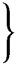

GEOLOGIE.
I.
[1]
OUDEWATER EN OMTREK,
GEOLOGISCH, MYTHOLOGISCH EN GESCHIEDKUNDIG GESCHETST.
„De oppervlakte der aarde, onze woonplaats, is bij lange na niet altijd in dien toestand geweest, waarin wij haar tegenwoordig kennen.”
Dr. W. C. H. Staring.
„Laat andren Holland plat en laag en leelijk noemen,
Mij lokt de rijke wei met witte en geele bloemen;
Ik min het vette rund, dat aan den waterkant
Een heldren spiegel vindt met loovers om den rand.
Ik roei graag door de vaart waar waterlelies groeijen,
’k Hoor graag des kiewits roep, of zie den kemphaan stoeijen;
Niet in een apentuin gekortwiekt en verminkt,
Maar op een biezenland naar ’s diertjes vrij instinkt,
Waar ’t zwarte waterhoen en de pleviertjes wonen,
Die schuilen aan den kant of zich ter noô vertoonen.
Zóó was heel Holland eens ….”
Mr. J. P. Amersfoort.
Indien het waar is, dat beschaving, wetenschap en kunst hand aan hand gaan, dan zal meestal daar waar eene dezer drie aanwezig is, behoefte aan de andere bestaan; dan ook dragen de wetenschappelijke voortbrengselen—waaraan het ons tegenwoordig niet ontbreekt—het hunne bij tot de toenemende beschaving, alom merkbaar.
Was men vroeger gewoon, alles meer oppervlakkig en algemeen te beschouwen, thans dringt men niet zelden tot de mindere of liever, tot de onder-afdeelingen door, onverschillig [2]van welken tak van wetenschap ze zijn; overtuigd als men is, dat deze het juist zijn, die aaneengehecht, de stoffen leveren voor een beter en meer volmaakt geheel.
Welnu, ook de wetenschap der geschiedenis heeft hare onderdeelen, en die zijn voornamelijk de plaatsbeschrijvingen. En wanneer dan deze laatste spreken van oude, van langvervlogen tijden, dan vooral is het dienstig, dat ook de grond geschetst worde waarop de te behandelen onderwerpen voorvielen. Dit staat met dusdanige beschrijving in naauw verband, gelijk blijken zal.
Hierom eerstens hebben wij ons voorgenomen iets te leveren over Oudewater’s bodem. Bovendien is die wetenschap (onder den naam van geologie of aardvorming bekend) ook van nut voor menig inwoner dier plaats, waarvan eene korte schets van den grond en deszelfs verschillende lagen bestaat.
Zoodanige schets daar te stellen is echter geene gemakkelijke taak.
Uitstekende geleerden, waaronder mannen als professor Harting—langen tijd onze geachte stadgenoot—de heer Staring en anderen, hebben tot de kennis der geologie van geheel ons vaderland zelfs, roemvol de hand geleend. Ondersteund door van ’s lands wege gedeeltelijk bekostigde, en op sommige plaatsen des rijks ondernomen putboringen, konden zij zich met volle teugen aan de bron dier edele wetenschap laven, en mogten zij zulke belangrijke resultaten bekomen, dat wij bij het lezen van hunnen arbeid, onze geringe ervarenheid met de kennis dier heeren vergelijkende, onwillekeurig terugdeinsden, om iets omtrent de geologie van Oudewater en omtrek in het licht te geven. Onze eerste drijfveer echter gevoegd bij de overtuiging, dat elke bijdrage, van hoe weinig oogenschijnlijk nut, hoe oppervlakkig ook daargesteld, den geleerden [3]nogtans aanleiding kan geven tot het maken van gevolgtrekkingen, die tot de kennis van den vaderlandschen bodem van belang zijn, behaalden op deze vrees de overwinning.
Alvorens dan dezen arbeid te aanvaarden, gevoelen wij ons echter verpligt aan te merken, dat wij geene vergravingen of putboringen zagen bewerkstelligen; maar dat alleen de veeltijds onzamenhangende berigten van werklieden ons ten dienste stonden. Wat wij dus konden te weten komen van laatstgenoemden, zelf ontdekten en met de werken der geleerden eenigzins in toepassing bragten, zullen wij thans trachten uiteen te zetten.
Wanneer wij, goedgunstige lezer! den bouwgrond, of liever, de bovenste aardlaag in Oudewater bezien, dan ontwaren wij al dadelijk, dat die tot de klei-soorten behoort. Zet men echter den voet buiten het stadje, dan is de afwisseling van klei- met veenachtigen grond zeer in het oog loopend.
Doch deze bodem is niet altijd zóó geweest als hij zich thans aan onze blikken voordoet; neen, veranderingen, groote vervormingen hadden ook hier, even als elders, op en in dien grond plaats.
Die talrijke weiden, waarop in den liefelijken zomertijd, dartele runderen als op een donzig groen met bloemen doorweven tapijt, heen en weder huppelen of rustig grazen, waarop hagelwitte lammeren hun vreedzaam geblaat doen hooren, waren hier eertijds niet; en die menigvuldige bouwlanden, overvloedig getooid met graanhalmen, wier ontelbare airen, bij elke koelte zich wringende en buigende, als eene gouden korenzee aan ons voor natuurschoon gevoelig oog vertoonen, zou men [4]vóór een aantal eeuwen er te vergeefs gezocht hebben. De weiden waren drassige gronden, doorzaaid met talrijke waterpoelen; de IJssel was in zijnen loop nog door geen dijken beperkt, en de treffende vergezigten van thans, werden toen belemmerd door eeuwenoude bosschen, die hunne reusachtige takken hemelhoog verhieven.
De mensch echter wist door zijn vernuft, waterachtig land tot weiding zijner runderen en het voortbrengen van veldvruchten bekwaam te maken: den IJsselstroom binnen zekere grenzen te beperken; hij alzoo heeft veel tot verandering van den bodem toegebragt. Maar ook nog vóór zijn voet de plaatsen betrad, die wij dagelijks bewandelen,—vóór deze streek zich vertoonde in de gedaante als waarvan wij zoo even eene schets gaven, ook toen was Oudewater’s bodem reeds aan menigvuldige verwisselingen onderworpen geweest. Trachten wij deze gesteldheden nu achtereenvolgend en zoo beknopt mogelijk na te gaan.
Zeer noodzakelijk oordeelen wij het, den lezer in de eerste plaats bekend te maken, dat de geologen bij het beschrijven van een bodem, dien voornamelijk, tot op eene zekere grens, in twee afdeelingen scheiden: in alluvium en diluvium. Wij volgen hun voorbeeld, en beginnen al dadelijk eenige verklaringen te geven van het
DILUVIUM.
Door bovenstaande benaming verstaat men voor ons bestek de zandige gronden, welke op eene zeer aanmerkelijke diepte worden aangetroffen: dien grond, ter verduidelijking, waarin men te dezer plaatse de wel aantreft. De beteekenis nu van het woord Diluvium is vloedvorming, en als van zelve komt men dus tot de gevolgtrekking, [5]dat die thans onderaardsche zandlaag eenmaal ten bodem verstrekte aan eene ontzaggelijk groote watermassa.
Ook de heer Staring spreekt in zijn »Bodem van Nederland” van den niet te miskennen oorsprong der tot het diluvium behoorende gronden uit water. In alle gevallen dus, was het diluvium eenmaal onder het water bedolven, en zijn er reeds tal van eeuwen sedert zijne vorming verloopen. In dit tijdperk ontstonden door verschillende oorzaken vele golvingen in den bodem, zoodat de oppervlakte een zeer ongelijk aanzien verkreeg. Veronderstel, dat men de alluviale of later gevormde lagen onzer plaats eens kon verwijderen en het diluvium alzoo ontbloot werd, men zou die onregelmatigheid dadelijk bemerken, en het zou zich als ’t ware gelijk eene zandzee met monsterachtige baren aan ons vertoonen. Voorts kwam men hoogst waarschijnlijk tot de overtuiging, dat die bodemgolving zich in eene N.O. en Z.W. rigting uitstrekt, en bepaald zag men, dat zijne oppervlakkige bestanddeelen uit blaauw—soms echter ook uit rood zand bestonden. Alligt vond men ook hier en daar een boomstam in den grond uitstekende.
Bewijzen voor de onregelmatigheid dezes diluviums kan men vinden in de putboringen, hier en elders, in Oudewater’s omtrek gedaan. Hier toch was de wel (die, gelijk nu bekend is, zich in genoemde formatie bevindt) omstreeks 9,50 Ned. el, op andere plaatsen ongeveer 10, 15, ja zelfs 25 Ned. ellen van den beganen grond verwijderd.
De meening van sommigen—inzonderheid van werklieden die nu en dan met het maken van waterputten belast worden—dat de wellen met aderen, als de takken eens booms, door den grond loopen vervalt dus, nu wij weten, dat de plaats waar de wel wordt aangetroffen, zich op ongelijke diepte bevindt. [6]
Gemiddeld bekwam men welwater:
| In Oudewater | op omstreeks | 12,50 | Ned. el. |
In deszelfs omtrek, als in:
| Williskop en | op»omstreeks» | 11,— | Ned.»el.» | |
| Snelrewaard | ||||
| Hekendorp en | op»omstreeks» | 9,50 | Ned.»el.» | |
| Roozendaal | ||||
| Papekop, |  | op»omstreeks» | 7,75 | Ned.»el.» |
| Hoenkoop, | ||||
| Ruigeweide en | ||||
| Linschoten1 |
Omtrent Papekop strookt dit ook vrij goed met het onderzoek van laatstgenoemden ervaren geoloog: „Er zijn aldus geene redenen—zegt hij, na over de boorputten van Gouda en Leiden gesproken te hebben—die niet mogen doen aannemen, dat in Zuid-Holland, op eene geringe diepte onder de alluviale klei en het lage veen het diluvium begint, en dat dit het zand is, hetwelk bij Utrecht op 2 el diepte wordt aangetroffen, bij Woerden op gelijke diepte, en ook, welligt in een voormaligen uitgeschuurden tak van den Rijn op 7 el; bij het station Papekop regelmatig op deze diepte; bij Gouda op 9 tot 12 el, en bij Rotterdam waar de Rijnspoorweg tegen den zeedijk oploopt, op 14,5 el onder de oppervlakte. Grondboringen langs deze rigting hebben zulks aan het licht gebragt.”2
Op een paar plaatsen evenwel hoorden wij van eene eenigzins meer aanmerkelijke diluviale diepte gewagen, dan die welke wij als gemiddeld opgaven; wij bedoelen [7]bij het begin van Hoenkoop en Williskop. Om pompwater te verkrijgen moest men op eerstgenoemde plaats tot ruim 17 el boren, en ruim op 18,5 Ned. el bekwam men op de laatste welwater, hoewel van een onaangenamen smaak. Nog eenigen tijd heeft men daarna, wel is waar, doorgeboord; doch steeds even walgelijk vocht bekomende, heeft men thans den arbeid tot het verkrijgen van goed smakend drinkwater gestaakt. Zelfs schijnt het, dat men nog niet eens tot het eigenlijke diluvium was doorgedrongen, dewijl het bekomen water zijdelings aangestuwd werd; hetwelk men, naar ons werd medegedeeld, nog tijdig genoeg bemerkte om, gelijk men vreesde, te verhoeden dat het huis ondermijnd werd, daar de aandrang, van de zijde van het gebouw komende, tevens ook het zand medevoerde, waarop het gefondeerd zou zijn. Bij de boring bekwam men voornamelijk veen, derrie en ijzeroer, alsook boomstronken en schelpen.
De punten waarop deze twee putten geboord zijn, liggen hemelsbreedte circa ¼ uur gaans in N.O. en Z.W. rigting van elkander verwijderd, en al zoo vindt men hier, dunkt ons, op eene treffende wijze de diluviale bodemgolving, waarvan gehandeld is, bewaarheid.
Gaan wij thans over latere vormingen te behandelen, n.l. die van het:
ALLUVIUM.
In het kort dient nu eerst vermeld te worden, welke gronden men bij het pompen maken gewoonlijk aantreft.
Reeds is gezegd, dat de bouw- of bovengrond in Oudewater [8]uit klei bestaat. Deze kleilaag strekt zich alhier gewoonlijk tot op omstreeks 3,10 Ned. el in den grond uit, doch is meestal met eene meerdere of mindere hoeveelheid kalk en steenpuin, scherven van potten, enz. vermengd.
Zoodanigen met steen vermengden grond noemen de geleerden: »Steigeraarde.”
De klei, die in deze steigeraarde voorkomt, zouden zij »rivier- of zeebezinking” heeten.
Buiten de stad worden puin en scherven niet zoo menigvuldig, en over het algemeen ook niet zoo diep aangetroffen. Het waarom geven wij eenige bladzijden later.
In of onder deze bovenste aardlaag treft men dikwijls nog iets aan, dat niet over het hoofd mag worden gezien. Wij bedoelen die talrijke overblijfsels van boomen, welke door de geologen met den naam van kien- of grondhout worden aangeduid.
Wanneer men nu tot hiertoe gegraven heeft, wordt dit verder belet of ten minste moeijelijk gemaakt door het zoogenaamde »zakwater”. De spade heeft hare dienst gedaan, en men moet—wil men den bodem tot op de wel doorboren—zijne toevlugt nemen tot andere werktuigen; alhier gebruikt men daarvoor gewoonlijk de zoogenaamde aardboor.
De eerste grondstof, die men hiermede opboort, is doorgaans rood zand, veelal ook turfgrond en derrie, welke beide laatsten de aardkundigen met den naam van laag veen zouden bestempelen.
Niet zelden overigens ontmoet men ook ijzerachtige zelfstandigheden, die in de geleerde wereld als Oerbanken of IJzeroer bekend zijn en zoowel in alluvium als diluvium aangetroffen worden.
Alligt zal men begrijpen dat al deze alluviale vormingen [9]zoowel op ongelijke diepte als breedte in den grond aanwezig zijn.
Is nu de boor door dit alles heen gedrongen, dan komt zij op rood, meest altijd echter op blaauw zand, en hierin is het, dat men zeker kan zijn de wel aan te treffen; geen wonder ook: de alluviale gronden zijn doorboord; het werktuig is tot het diluvium doorgedrongen!
In de Oudewatersche Peperstraat brak zoodanig werktuig—naar men meent, op een stuk hout—ter diepte van omstreeks 20,70 Ned. el, ’twelk echter niet belettede, dat de pomp genoegzaam water aanvoert. Alzoo was de boor toch bepaald tot het diluvium doorgedrongen. En wat haar breken betreft, naar de werklieden gissen op hout, zoo meenen wij hen in die veronderstelling te mogen versterken, daar wij ergens in Staring’s voortreffelijken »Bodem van Nederland” lazen, dat, bij diluvialen vloed, waarschijnlijk boomstammen van elders zullen zijn aangevoerd, die zich in onzen bodem vast woelden.
Voorts onderrigtte men ons, dat men in de Roodstraat circa 25, en op het Roodzand3 eindelijk, plus minus 12,50 ellen diepte moest hebben, voordat men het genoegzaam rekende om er met goed gevolg de pomp op te plaatsen.
»Welwater, uit een roodzandigen bodem ontspruitende, is het smakelijkst om te drinken”, en »hoe zwaarder grond, hoe eerder welwater”, zijn bekende zaken, die van de praktische kennis van den werkman getuigen.
Dit, geachte lezer! is eene beknopte schets van het Oudewatersche alluvium;—doch, hoe zijn deze gronden gevormd? welke natuurkrachten en wetten hebben hen daargesteld? Ziedaar twee vragen omtrent hare geschiedenis, die wij zoo duidelijk en beknopt mogelijk zullen trachten te verklaren. [10]
Dadelijk heeft men een algemeen denkbeeld van het »Alluvium”, indien men de beteekenis des woords zelve kent. Alluvium toch wil niets anders zeggen, dan: land, ontstaan door bezinking en aanslibbing. Daar echter die naam een weinig onvolkomen is, zijnde niet al de te behandelen gronden gevormd op de wijze als dat woord uitdrukt—gelijk nader blijken zal—moet men alzoo onder dit woord deels wezenlijken naam, deels kunstterm verstaan.
Gelijk men bij de beschrijving der putboringen heeft gezien, dienen wij dus te behandelen de:
- Bouw- of Bovengrond.
- Steigeraarde.
- Rivierbezinking.
- Zeebezinking.
- Kien of grondhout.
- Zakwater.
- Rood zand.
- Veen.
- Derrie.
- IJzeroer;
dat alles tot het alluvium teruggebragt kan worden.
Wij verlieten ons diluvium nog gedeeltelijk in het water bedolven.
Langzamerhand evenwel, naar mate er meer grond werd aangevoerd, verrezen de landen uit het water. Eerst werden de hooge diluviale golfruggen ontbloot, en het water bleef op de diepste plaatsen, onder anderen in ’t begin van Williskop het langst gespaard.
Op den bodem en in het water begonnen zich planten te ontwikkelen, en vooral waren het de zoomen der wateren, welke door hunne vochtige gesteldheid dien plantengroei begunstigden, spoedig waren dan ook water en aarde in een weelderig plantenkleed gehuld! [11]
Jaarlijks stierven vele dezer planten af, ontbonden zich, en—de stoffen dezer ontbinding legden den grondslag aan de later gevormde of alluviale gronden. Dit brengt ons van zelve tot het behandelen des alluviums; beginnen we met het:
Veen.
Onder dezen algemeenen naam verstaat men hoofdzakelijk twee soorten: hoog en laag veen.
Gaarne zouden wij beiden willen behandelen, ware het niet, dat voor ons bestek slechts eene dezer beiden: het laag veen voldoende is; de andere soort wordt in onzen omtrek niet aangetroffen.
De turf, van hoog veen vervaardigd, wordt in deze streek veelal met den naam van »Vriesche”, die van laag veen met den naam van »Korte turf” aangeduid.
Beiden niettemin zijn gedeeltelijk van plantaardigen oorsprong: andere omstandigheden en invloed stelden verschil in hunne wording daar. Zien we welke er noodig waren voor de vorming van:
LAAG VEEN.
Reeds heeft men op pag. 11 gezien, dat de diluviale gronden en wateren met een plantenheir overtogen waren; ook weet men, dat door de onveranderlijke wetten der schoone natuur, elk grashalmpje, hoe klein, elke bloem, hoe statig en forsch ook, hoe meer zij hare ontwikkeling nabij komt, zij ook des te meer haren dood, dat is: hare ontbinding nadert. Ook de planten, die het diluvium van zijne naaktheid hadden beroofd, ook zij moesten eenmaal der natuurwetten dezen tol betalen. [12]
De ontleding van planten tot laag veen gaat niet dan met hulp en medewerking van andere stoffen. Water en lucht brengen het hunne er toe bij, terwijl de bodem waarop de verrotting plaats grijpt, mede eenig deel daaraan neemt.
Planten alzoo, die aan, op of in het water leven en tot ontbinding overgaan, worden laag veen met behulp der lucht, die in het water opgelost is, met behulp van het water zelf; en eindelijk door medewerking van de aarde, omdat de ontbonden plantenstof zich gedeeltelijk met den bodem, waarop zij zich plaatst, vereenigt. Derhalve, het veen dat in onze streken aanwezig is, ontstond, omdat het water, of de met water te veel doortrokken grond, belette, om de plant den gewonen weg der ontbinding te doen ondergaan.
Door te verklaren, welke die laatste weg is, komen wij op eene tweede alluviale grondsoort, tot de
Humus of Bouwaarde,
’t welk ons tevens geleiden zal tot het bespreken van de
Derrie.
Ieder weet, dat, wanneer men op een droogen grond in de open lucht eenige planten, die men door uit de aarde te rukken hare groeikracht benomen heeft, een zekeren tijd aldaar laat liggen, zij niet lang haar vriendelijk uiterlijk behouden: bladeren, bloemen en stengels worden weldra geelachtig bruin, verminderen aanmerkelijk in omvang, en bij voor verrotting gunstige omstandigheden, is er spoedig van die kunstgewrochten der natuur slechts een weinig zwarte aarde overig. [13]
Zoo ook ging het met de verbazende vegetatie, die zich op de diluviale vormingen ontwikkelde. Ook die planten stierven af, en na jaren tijdsverloop was er reeds een laagje plantaardige grond of humus gevormd.
Het zal wel geen betoog behoeven, dat de formatie van veen en humus met langzame schreden voortging, daar de ontbonden plantenstof van een 50tal jaren slechts eene kleine verhooging van onzen bodem zal ten gevolge gehad hebben. Duizelt u dan het hoofd niet, lezer! bij de gedachte aan dat tal van eeuwen, dat in den nacht der tijden zal moeten zijn weggezonken, alvorens die dikke veenlagen gevormd waren, als waarvan bij onze putboringen sprake was? Men zij echter bedacht niet al te spoedig de oudheid van onzen veenbodem naar zijne trage wording af te meten, daar er vele voorbeelden bestaan, dat groote veenbrokken door de kracht van verbazende watervloeden elders losgerukt en voortgestuwd, zich op eene andere plaats vestigden.
Zij nu de aandacht eenige oogenblikken bepaald tot de Derrie. Moeten wij verklaren wat derrie is, vraag het den landbouwers onzer streek, en zij zullen u zeggen, dat het eene onvruchtbare grondsoort is, zonder bewerking en vermenging van mest bijna niet te bebouwen. De wetenschap stelde zich echter hiermede niet tevreden: al spoedig ontdekte men, dat het een mengsel is van veen, dat bij zijne vorming met veel aarde werd gemengd. Niettemin behoort het onder het veen. Neemt nu de minnaar van onderzoeken een weinig derrie op de hand, dan kan hij de bestanddeelen in bovenstaande oppervlakkige analyse aangeduid, alligt daaraan herkennen.
Zoo zal dus op Uiterwaarden in de lagere plaatsen derrie kunnen ontstaan, omdat de verrottende planten jaarlijks met veel slib bedekt en vermengd worden. (Over welke slib nog later). Steeds verhoogde zich intusschen [14]de grond door leven en dood van planten en dieren, en met een legio waterpoelen en moerassen was onze bodem doorzaaid. Maar hierbij niet langer getoefd; en bepalen wij onze aandacht nu eene wijle bij het IJzeroer, zoo menigvuldig in ons alluvium aanwezig.
IJzeroer.
Ieder geoloog weet, dat verreweg de meeste gronden met eene soort van ijzer zijn vermengd. De scheikundigen noemen dit ijzer-oxide. Dit ijzer-oxide is eene door de natuur gevormde verbinding van ijzer met zuurstof, dat vaak nog met koolzuur en water vereenigd is. Dit zijn echter nog geene oerbanken. Om die te vormen zijn het alweder de planten, die daaraan te hulp moeten komen. »Waar deze of diergelijke stoffen verrotten”, zegt de heer Staring4, »kan dit laatste—het ijzer-oxide—een gedeelte van zijne zuurstof verliezen en wordt daardoor ijzer-oxidule, dat de eigenschap heeft van zich op te lossen in koolzuurhoudend water, hetwelk in elken grond, maar vooral in gronden rijk aan bewerktuigde stoffen aanwezig is. Zoo wordt dus het ijzer-oxide langzamerhand aan die aardlaag, waarin verrotting plaats heeft, onttrokken en met het water naar elders heen gevoerd. Men ziet dan ook zeer dikwijls, dat heideplanten met hare wortels het omringende zand tot op eenigen afstand wit hebben gekleurd en dat, over het algemeen, de bovengrond van zandgronden, na lang aan den invloed van den plantengroei blootgesteld te zijn geweest, witter van kleur is dan de ondergrond. Waar daartoe gelegenheid bestaat, vloeit zulk ijzerhoudend water in slooten weg, alwaar het in aanraking met de dampkringslucht [15]komende, troebel wordt en de bij de landbouwers zoo zeer gevreesde geelroode kleur aanneemt.
Bij toetreding van dampkringslucht, tot den ondergrond, of van water, dat die lucht bevat, wordt het koolzuur ijzer-oxidule ontleed, verliest zijn koolzuur en levert ijzer-oxide-hydraat, hetwelk onoplosbaar in water de oerbanken vormt. Dat de zure humusstoffen van teelaarde of veen mede in staat zouden zijn om ijzer-oxyde op te lossen, wordt wel beweerd, maar is geenszins bewezen.”
Overigens is »de klei een noodzakelijk vereischte voor het ontstaan van ijzeroer; waar die niet aanwezig is, vormt zich, zooals op de zandgronden, slechts zandoer, een door ijzer-oxide hydraat aaneengebakken zand, echter nimmer zooveel ijzer bevattende, dat dit met voordeel hieruit gewonnen kan worden. Zandoer vormt harde banken van groote uitgestrektheid, maar die nimmer in lage, moerassige, kleihoudende gronden voorkomt, waar ijzeroer zijne plaats inneemt.”5
Menigvuldig—wij zeiden het reeds—is dat ijzeroer, welks wording ons thans niet duister meer is, in Oudewater’s gronden aanwezig. Bij de reeds meermalen besproken putboring in den tuin van den heer de Jong, trof men, naar ons onderrigt werd, eene groote hoeveelheid ijzeroer aan.
In Papekop gebruikten wij water, waarin de ijzersmaak met de grootste zekerheid was op te merken, en vaak vestigen zich om de pompbuizen zóóveel ijzerdeelen, dat men genoodzaakt is, haar van nieuws op te boren.
In de Linschoten behoeft men slechts een oppervlakkigen blik in vele slooten te slaan, om zich dadelijk te overtuigen, dat zich daar ter plaatse veel ijzer bevindt. Bijna overal ziet men den bodem van het water met plekken [16]van eene roodachtig bruine kleur afgezet, die, laat men zoodanige vakken met rust, weldra het tal van oerbanken zullen vermeerderen.
Ook in onzen Hollandschen IJssel bij Goejanverwellesluis zag ik zoodanigen grond, en een varensgezel maakte mij de opmerking, dat zulks »salpeterigheid” was.
Niet onvermeld willen wij laten, dat men het er alhier algemeen voor houdt, dat weteringen en slooten die »roodgrondig” zijn, des winters bijna nooit in voor het begaan vertrouwden toestand zijn: ja zelfs hoe sterker het vriest, het ijs daar te meer gevaarlijk wordt om te betreden.
Onbevoegd als wij ons rekenen, de gegrondheid dezer volksopmerking al of niet te kunnen bevestigen, zoo zou het toch wenschelijk zijn dat onze natuurkundigen de aandacht er op bepaalden.
Volgens de verklaring eindelijk van een niet onwetenschappelijk werkman, zou blaauw zand—diluviale gronden?—steeds met ijzer gepaard gaan. Waarschijnlijk echter bedoelde hij hier blaauwe klei, daar het gebleken is, pag 15, dat klei onafscheidbaar van ijzeroervorming is.
Dit onderwerp heeft alzoo doen zien, dat ook de ijzeroerbanken eene niet onbelangrijke rol in de vorming van Oudewater’s alluvium spelen. Voor ons onderwerp achten we hier nu genoeg van ter neder geschreven om er niet langer bij stil te staan. Om de volgorde dus te behouden, dient nu te worden gehandeld over het:
Rood zand.
Aan welke oorzaken nu kan het toegeschreven worden, dat zulks in ons alluvium aanwezig is? [17]
Men zou zich kunnen laten verleiden, zijne afkomst te zoeken uit de ten naastenbij 3 uren afstands van Oudewater liggende rivier de Lek. Zij toch, kon men denken, voert steeds eene hoeveelheid rood zand met zich in den stroom mede, dat op de bedding eindelijk bezinkende, later in den handel als „lekzand” voorkomt. Menige overstrooming dier rivier van vroegeren en lateren tijd, zou u alsdan na verdwijning van het water, een met zand bedekten bodem als achtergelaten, voorspiegelen.
Eene tweede gissing zou kunnen zijn, zijn moederland in de Noordzee te willen vinden. Bekend is het toch, dat er op den bodem dier verbazende watermassa veel rood zand wordt aangetroffen, en dat een tal van vloeden, uit haren boezem ontsproten, vele Nederlandsche provinciën van tijd tot tijd teisterden; doch ook dit is onwaarschijnlijk: uit de zee kan ons wel bij overstrooming een weinig slib teruggeschonken worden, maar geen zand.
Met beter gevolg zullen wij den blik op de bergen van België en Duitschland slaan.
De bergen leverden het zand (door slijping van het water gevormd), en de rivieren voerden het hierheen; deze laatsten toch spelen in de vorming van ons alluvium de hoofdrol. Derhalve schijnt de oorzaak ons zeer eenvoudig toe: dezelfde stroom of stroomen die het zand naar de Noordzee voerden, hebben het rood zand te Oudewater gebragt. Beide is het van denzelfden oorsprong, door dezelfde stroomen aangevoerd, uit dezelfde bergen van België of Duitschland ontstaan, en zooals voorheen de rivieren rood zand medevoerden, voert ook de Lek zulks thans nog mede.
Stellig evenwel hebben andere rivierarmen, in andere rigtingen, vroeger den bodem van Oudewater doorsneden; want zonder zulke rivieren had de bodem niet gedeeltelijk door aanslibbing kunnen ontstaan. [18]
Vervolgen wij echter:
Zakwater.
Dit regelt zich, wat zijne diepte betreft, naar de hoogte des waterstands en van den bodem. Bij hoog water en lagen grondslag, is men er dus spoedig toe genaderd. Daarbij speelt het regenwater, dat wegzakt hierin ook eene voorname rol; terwijl de meerdere of mindere vastheid der stoffen, die de bovenstaande aardkorst daarstellen, het wegzakken van het regenwater verhindert of bevordert.
Rivier- en Zeebezinking.
Verschillende formatiën zijn alreeds behandeld. Daar echter het zoo even beschreven zakwater, eigenlijk niet tot het alluvium gerekend kan worden, zoo gelieve de lezer zich met zijne gedachten, bij het begin der rivierbezinking te verplaatsen, werwaarts wij hem zullen volgen. Als van zelve, komt men dan in de gelegenheid, eene korte schets daar tusschen te lasschen van:
DE GESCHIEDENIS VAN DEN HOLLANDSCHEN IJSSEL.
De vorming van veen, derrie, ijzeroer, enz. gaat steeds haren gang. Reeds voorlang zijn duizenden planten van een kort bestaan en los weefsel, vervangen door een aantal krachtige boomsoorten, in zulk eene menigte bij elkander staande, dat zij den naam van „woudreuzen” ten volle waardig zijn.
Alomme doorkruisen talrijke rivieren ons land, en de schoone Europesche rivier de Rijn, door onzen Borger „de grootvorst van Europa’s stroomen” genoemd, splitst zich [19]in verschillende armen, als wilde hij de geheele landstreek in eenen vruchtbaren beemd herscheppen. Ook de Hollandsche IJssel was een tak des statigen Rijns; ook deze omtrek deelde dus in het voorregt, zijne met allervruchtbaarste slib bezwangerde wateren, over zijne bedding te laten heenvlieten.
Ofschoon hij—de IJssel—nu van tijd tot tijd deze zijne bedding eenigzins verlegt—want alle rivieren deden dit—blijft hij zijne rigting toch door deze streek houden, en de loop bijna dezelfde.
Men wete echter, dat de rivierstroom toen niet zoo snel voortschoof als tegenwoordig: de boschrijke gesteldheid dezer streek, waardoor hij zich doortogt baande, was daarvoor groote hindernisse.
Zacht alzoo, stuwde de IJssel zijne wateren door woud en beemden en over veengrond immer voorwaarts, tot in den breeden schoot des woelenden oceaans. De slib waarmede de vloed beladen was, bleef op, of langs struiken en boomen hangen en vestigde zich goeddeels, gehoorzaam aan de wetten der zwaartekracht, op zijne bedding: deze slibtoevoer of dit kleibezakken is de rivierbezinking.
Weldra was dan ook geheel deze streek met eene breede streep klei doorweven, zeer afstekende bij den veengrond, waarop zij zich gevestigd had en die haar omringde.
Immer hield deze nieuwe alluviale vorming aan; ja met zulke snelheid ging de opeenstapeling van rivierslib op rivierslib voort, dat zij zich spoedig tot op eene aanmerkelijke dikte had nedergelegd. Hierdoor ontstond land, dat men met den naam van Waardland, of ook wel kortweg met dien van Waard bestempelde. Dit woord is verwant met ons tegenwoordig werkwoord worden, zoodat men door waard gerustelijk aangeslibt, of geworden land kan verstaan. [20]
De Uiterwaarden langs den IJssel gelegen, herinneren nog aan dezen naam. In Oudewater nu was,—te oordeelen naar de zich soms 3,10 Ned. el in den grond bevindende kleilaag—dat landworden reeds vroeg begonnen. De bewoners, die zich hier gevestigd hadden, bemerkten dit, en ziende, dat—niettegenstaande er reeds vele plekken waren, die bij gewone vloeden niet meer aan overstroomen onderworpen waren—er toch nog steeds nieuwe of jonge waarden gevormd werden, noemden zij daarom de plaats hunner vestiging—om ons van de tegenwoordige spelling der taal te bedienen—Oude Waarden. Hoogstwaarschijnlijk sprak men den naam dezer plaats naderhand Oudewaerten uit, doorliep vervolgens den overgang Oudewaeter, en behield daarna zijnen tegenwoordigen naam. En zie hier den
Naamsoorsprong van Oudewater
naar onze bescheiden meening het best verklaard. Gelijk het echter met de meeste afleidingen van plaatsnamen gaat, wier oorsprong niet dadelijk tastbaar is, zoo ook vindt men hiervoor verschillende redenen opgegeven.—S. van Leeuwen6 en Franc. Halma7 zijn dan ook de waarheid het meest nabij als zij zeggen, dat het eigenlijk af zou komen van Oudewaarden als in een oud eiland of oude waard liggende. M. Z. Boxhorn8 spreekt er aldus over: „Oudewater soude moeten ghenaemt worden Oudewaerten, ist dat ghy haer eerste beginsel aensiet. Oudewaerdt en beteekent niet anders, als een oud Eylandt ofte Contreye. Ende sy schijnt also geseyt te worden tot onderscheyt van die waerde daarbijliggende ende wort hedensdaeghs Nieuw ghenoemt” Ook Lud. [21]Smids9 is—op gezag van dezen laatste, schijnt het—dezelfde meening toegedaan.
Men ziet dus, dat velen dit gevoelen aankleven. De heer van Kinschot10 en velen na hem, willen echter liever, dat dit plaatsje zijn naam van den IJssel, als oud water zou ontvangen hebben; daarmede stemmen wij dus evenmin in, als met hetgeen wij elders in eene noot lazen11, dat de Romeinen het ook daarom den naam van Aquae Veteres zouden hebben gegeven; maar zijn het ten volle eens met de »Tegenwoordige staat der Vereenigde Nederlanden”, waarin wij lezen: »Uit de latijnsche benaming van Aquae Veteres—alleen eene letterlijke vertaling van den tegenwoordigen naam—zien wij niet dat eene afleiding te haalen is.”12 En hoe vele plaatsen wijders zijn aan oude wateren gelegen, en toch bestaat er in geheel Nederland, voor zoo verre wij weten, slechts één plaatsje, dat Oudewater heet.
Voor de stelling, dat de naam Oudewater wezenlijk van bovenvermelden geologischen oorsprong is, zou nog kunnen aangevoerd worden, dat men, behalve de zoo even genoemde Uiterwaarden nog in den omtrek vindt, Snelrewaard als boerenbuurt, en de hooge Woerd of Waard daarinliggende; voorts: Barwoutwaarder, het dorpje Waarder, en misschien mag het nabijgelegen Woerden hier ook gerangschikt worden als synoniem met Waarden. In alle gevallen, onze meening is bovenstaande; men voegde, wij houden het (altijd onder verbetering) vol, bij onze plaats slechts oude tot onderscheid dier andere waarden. [22]
Het zij in het voorbijgaan gezegd, dat wij ons om deze reden, ook niet met de meening van den oudheidkundigen heer Buddingh kunnen vereenigen, die de namen van waard- en woerdplaatsen zoo gaarne eene mythologische beteekenis wil toegevoegd hebben.
Vooralsnog dient evenwel teruggekeerd, tot Oudewater’s geologie, en wij beginnen dus weder met den Hollandschen IJssel, die, gelijk bekend is, zoo veel heeft toegebragt tot de vorming van ons alluvium; waarom wij ons niet kunnen onthouden, voor het reeds verhandelde en nog volgende van ons onderwerp, de volgende regelen gedeeltelijk toe te passen:
»Het schijnt, dat de ondermaansche dingen
Zijn wonderlijk van aard en vol veranderingen:
Ik zag het vaste land met water overdekt
En weder uyt de plas het vaste land verwekt.
’t Is vreemd, dat verre van de zee en van de gronden
Het zeegewas en rare schulpen zijn gevonden,
En dat een anker lag in ’t hooge dorre land,
In plaats van in de zee of aan den waterkant.”13
Tot dat ondermaansche »wonderlijk van aard en vol veranderingen” behoorde ook de Rijn, en als gevolg van dien, wederom de IJssel.
Nadat de eerste eeuwen lang steeds zijne wateren in den magtigen oceaan had uitgestort, werd hij aan zijne monding verstopt, en ’t natuurlijk gevolg was, dat zoo wel de tak, die den naam van Rijn behouden had, als zijne overige armen verandering in hunnen loop moesten ondergaan.
Halma teekent er dit van aan:14
»In oude tijden plagt den Rhijn nevens Batavia of ’t Batouwerland eenen zeer snellen loop te hebben, totdat [23]hij bij Katwijk in zee viel; maar toen maakte hij door de Maas en Waal slechts eenen traagen en kleenen vloedt, nu integendeel, door het opstoppen van den Rhijn, het doorgraven van de Lek en Yssel, loopt de stroom bijna geheel te niet en de traage loop van Waal en Maas is in een zeer snellen afdrift verandert. Belangende den tijdt en d’oorzaak van de gedachte opstoppinge des Rhijns, bij Katwijk, daarin zijn zeer verschillige gevoelens; de oorzaak wordt niet anders gelooft, dan door eenen allerfelsten storm en invloeijinge der zee geschiedt te zijn, tegen den loop des Rhijns zoo krachtig met water en duinzandt indringende, dat de Rhijn, in zijnen loop daardoor gestuit, eenen anderen zwaai heeft moeten nemen, of gemaakt worden, om het land van ’t water des Rhijns en den vloed daardoor ontstaan en door de Lek enz. quyt te maken.—De oude Hollandsche kronyk stelt eenen vervaarlijken stormwindt op ’t jaar 860 uit de Noordt-Weste, die het zeewater den Rhijn injoeg en in ’t land dreef, daar duizenden van menschen en beesten door verdronken, de boomen uit de aarde rukkende en omverre werpende; dat daardoor de inwoonders genoodzaakt zijn geworden, de Lek te graven, om hun water in en door de Maas voortaan in zee te loozen.”
Wat dat graven van de Lek betreft, hierover willen wij ons niet uitlaten, als niet voor ons bestek geschikt.
De geleerde heer Staring spreekt echter ook van het jaar 860; doch neemt op gezag van anderen eene tijdruimte van 140 jaren aan, voor het verstopt maken des Rijnmonds15, als hij zegt:
»Men meent, dat de Rijnmond te Katwijk tusschen [24]860 en 1000 verstopt is geraakt. Ook de Vecht en de Goudsche IJssel zullen omstreeks dien tijd wel geen Rijnwater meer afgevoerd hebben; maar de hoofdstroom door den IJssel, de Lek en Beneden-Maas, de Waal met de Merwede en de oude Maas en door de Maas met de Amer het Hollandsche diep en het Haringvliet gegaan zijn. De verdere veranderingen in den loop dezer rivieren kunnen voornamelijk aan de bedijkingen worden toegeschreven, die in het midden der achtste eeuw begonnen, al meer en meer uitgebreid en verbeterd, eerst eeuwen daarna die kracht en uitgebreidheid kregen, welke ze in staat stelde om den loop der rivieren te wijzigen.”16
Omstreeks dezen tijd dus, zal er eene groote verandering met den IJssel plaats gehad hebben. Nu toch stellen wij ons voor, dezelve aan den invloed der getijden onderworpen te zien, toen, gelijk nu nog voortgebragt door eb en vloed der Noordzee. Ook deze vloed voerde slib mede en die wordt zeebezinking genoemd.
Wanneer wij nu het oog slaan op de Uiterwaarden om Montfoort gelegen, en daarbij weten, dat zij vrij oppervlakkig zelfs uit rivierklei bestaan, dan zou het wat al te sterk uitgedrukt zijn, indien wij beweerden, dat de IJssel geen Rijnwater met slib beladen meer afvoert. Zij moge minder afvoeren dan vroeger; maar zij voert toch Lekwater (dus Rijnwater) af en met slib beladen, getuige voornoemde Montfoortsche landen, die hunne vruchtbaarheid niet geheel aan het indringend vloedwater verschuldigd zijn; te meer nog daar, tegenwoordig ten minste—de vloed niet verder gaat dan halverwege Montfoort en Oudewater (zie beneden); het binnendringende vloedwater echter zal het afstroomende IJsselwater (uit de Lek afkomstig) tot stilstand brengen, en stilstaande zal ook het Lek water zijne slib afzetten. [25]
Niet onwaarschijnlijk zal dit punt van botsing dan, omtrent Oudewater geweest zijn. Hier toch is de IJssel op zijn smalst; hier dus is de meeste slib, welke dan ook, afgezet.
Nu is de regtstreeksche verbinding van Lek en IJssel boven IJsselstein met eene afdammingssluis verbroken, en het hierdoor lekkende water kan nog door den IJssel afgevoerd worden. Lekwater komt wijders den IJssel nog binnen bij vloedgetijde te IJsselmonde wanneer er overvloedige aandrang van opperwater in laatstgenoemde rivier is, en daarin is weder een bewijs te vinden, dat ons alluvium nog uit rivier- en zeeklei wordt gevormd.
Overigens dient nog te worden vermeld, dat men in onzen Hollandschen IJssel acht uren eb en vier uren vloed heeft, welke laatste bij gewone getijden tot omstreeks halverwege Montfoort en Oudewater gaat. Volgens eene ons onlangs gedane mededeeling, zoude voorheen de vloed echter verder gegaan zijn, en indien men in aanmerking neemt, het verhoogen der bedding en het begroeijen met waterplanten in het riviertje tusschen die twee plaatsen, dan is dit niet onaannemelijk. Echter heeft zij bij middelmatigen vloed ten onzent nog die kracht, dat een ligt voorwerp, drijvende op den vloed, in eene minuut omstreeks 25 Ned. el wordt opgestuwd, terwijl het, in het ebben 15,15 Ned. el in hetzelfde tijdsverloop wordt afgevoerd.
Wanneer men zich op de tegenwoordige Oudewatersche IJsselbrug bevindt, op het oogenblik dat de ebbe schijnt te eindigen en de vloed aldaar begint, kan men zich van een opmerkenswaardigen natuurstrijd overtuigen. Met het oog naar den kant van Gouda gewend, ziet men alsdan reeds eenigen tijd, het vloedgetij zich tegen de door hare zijvleugelen trechtervormige brug aanwenden, terwijl men, zich omwendende naar de zijde van Utrecht, de eb nog steeds ziet aanhouden. Deze strijd wordt vooral [26]begunstigd door een zijsprank die naar de stadshaven voert, waarheen het tegen elkander stootende water gedeeltelijk zijne toevlugt neemt. Na verloop van een half uur evenwel, geldt het regt van den sterkste, en de vloed stuwt als overwinnaar zijne wateren tot ongeveer op de plaats, die straks is aangeduid.
Geheel of gedeeltelijk was de IJssel oorzaak van de volgende plaatsnamen: IJsselstein, Oudewater, Goejanverwellesluis, Haastrecht, Stolkwijkersluis, Gouda, Moordrecht, Ouderkerk aan den IJssel, Capelle aan den IJssel, Krimpen aan den IJssel en IJsselmonde. Op eenige komen wij in andere afdeelingen van dit werk nog terug, ook om hunne naamsreden te verklaren. ’t Wordt echter meer dan tijd, nu van naamsafleidingen gesproken wordt, ook omtrent die van den IJssel te gewagen. Niets is natuurlijker, dan dat men—om zulks met goed gevolg te doen—moet teruggaan om zoo mogelijk zijne oude spelling en uitspraak op te duiken. De meeste woorden toch ondergingen in den loop der eeuwen in bovenstaande punten zoo vele verbasteringen, dat men vaak niet dan met groote moeite tot hunnen eigenlijken oorsprong kan afdalen.
Bijna algemeen is men tegenwoordig van ’t gevoelen, dat de verouderde schrijfwijze van IJssel is: Ysala, en zulks wijders eene verbinding is van de woorden Y en Sala; Y beteekent water en Sala loop; alzoo Ysala van vroeger en IJssel van thans wil niets anders zeggen dan waterloop.17
De IJsselslib hebben wij reeds als hoogst nuttig voor de geologie dezer streek leeren kennen. Zij heeft echter nog eene hoogst weldadige eigenschap: de geschiktheid tot het maken van steenen.
Onder meer wetenswaardigs nog van deze rivier, [27]zullen wij hierover iets uittrekken uit eene kleine brochure, in 1854 te Gouda in het licht verschenen18:
»De Hollandsche IJssel behoort geenzints tot de hoofdrivieren van Nederland; eerst sedert weinige jaren heeft de hooge regering besloten, haar als rivier te erkennen. Al moge men dan ook deze rivier beschouwen als van weinig belang zijnde voor den algemeenen rivierstaat des lands—iets, dat nog zeer te betwijfelen is—zoo is zij toch voor de binnenlandsche welvaart en het binnenlandsch verkeer geenzins onbeduidend te noemen.
De industrie aan de beide oevers dezer rivier is belangrijk; daardoor heerscht er langs de boorden welvaart, die elke bezoeker op de sprekendste wijze ontdekt.
Van den benedenmond af tot Gouda bestaan de bekende steenfabrieken niet minder dan 28 in getal. De waarde der alhier gefabriceerde metselsteenen wordt per jaar op niet minder dan viermaal honderd en vijftig duizend guldens gerekend.
Honderden van arbeiders vinden hun bestaan in die fabrieken; de ambachtslieden en de neringdoenden in de dorpen hebben een zeer groot gedeelte van hunne welvaart aan de steenfabrieken te danken.
De grondstof, de eigenlijke bron van deze welvaart, is de slib waarmede het rivierwater is bezwangerd. Deze, daartoe opgezameld en bearbeid, geeft het kleideeg, waarvan de deugdzame IJsselsteenen worden vervaardigd.
Ten gevolge van, of in verband met de steenfabrieken, bloeijen de rietmatmakerijen, waarvan ieder jaar honderden guldens door de fabriekanten worden betaald.
Aan beide zijden van de oevers zijn scheepmakerijen gelegen, allen even werkzaam en in vollen bloei. Op zes van deze werven wordt de grootste soort van koopvaardijschepen gebouwd. [28]
Onverschillig van welke zijde men ook de steenfabrieken beschouwt, men zal altijd hunnen gunstigen invloed op de vermeerdering der waarde van den vaderlandschen grond ontmoeten. Zij moeten dus voor aanzienlijke bijdragen tot den nationalen rijkdom worden erkend.”
Ja, zóóveel schrijft men zelfs aan deze zeebezinking toe, dat men, zooals wij elders lazen, wel zeide, dat geheel de stad Dordrecht uit de tot steenen gebakken slib der rivier is opgebouwd.
Een enkel voorbeeld in cijfers—zoo stond daar verder—zal ons dit ophelderen. Aan den Hollandschen of Goudschen IJssel spoelt jaarlijks zulk eene groote hoeveelheid van de fijnste en beste klei aan, dat men heeft kunnen berekenen, dat er in 29 jaren, namelijk van 1672 tot 1700, bij het verval der steenbakkerijen, 784 bunders ter diepte van 3 palmen aangeslibte klei aldaar zijn blijven liggen. In 1830 rekende men, dat de 28 aldaar aanwezige steenbakkerijen jaarlijks ongeveer 100,000 kubiek-ellen slib verbruiken, benevens 25 kubiek-ellen zand uit de Maas, waaruit men jaarlijks door elkander 80 millioenen steenen bakt.
En is het dan wel te veel, als wij nogmaals eenige regels van predikant Janzonius in betrekking tot deze kostbare grondstof aanhalen?19
»O zilv’re Yzzelstroom, met wonder eb en vloed,
Wat torscht uw kille schoot een onwaardeerbaar goed,
En schatten zonder end ….”
Zonder einde echter?
Zal de sluis tot afdamming van den IJssel boven Gouda, niet een volkomen hinderpaal zijn voor eb en vloed aan dezen kant, en bij gevolg voor den aanvoer van slib naar [29]deze streek, en aan de andere zijde der sluis goeddeels ten koste van de welvaart der steenfabrijkanten?
Volgens de genoemde brochure—wat het laatste betreft—ja gewis.
Hoe vele malen dus, o IJssel, stuurdet gij uwen gezwollen watervloed over en trok die weder terug van de plaats, die wij thans Oudewater heeten. Wie duide het tal van malen aan, dat uwe wateren den »Roozendaalschen en Hekendorpschen dijk” kusten, daargesteld om uwen loop te bepalen? De vruchtbare slibbe, die gij aan beide zijden afzettet, waarmede gij den bodem verhoogdet,—zij was oorzaak, dat men u nogmaals een naauweren loop gaf, wijl gij de kostbare »Uiterdijken” vormdet en alzoo den bewoners dezer environs gelegenheid verschaftet uwe boorden met een edelen voedselbouw te omzoomen, niet alleen; maar die ook in den blonden zomertijd met runderen te bevolken. Daarom, zeiden wij, beperkte men in dit oord wederom uwen loop door het aanleggen van twee kaden, die gij op hare beurt ten koste der breedte uwer bedding nogmaals een vetten bodem afstond, geschikt tot krachtigen boomengroei en weelderig bruin gepluimd riet.
Bij Oudewater kleine, doch niettemin door mij beminde IJssel! weldra zal het duizend en nogmaals duizendental uwer vloeden, die gij thans nog tot boven Oudewater voortzet, beperkt worden. De rustelooze waterloop, waarop reeds onze heidensche voorouders staarden, zij zal gestuit worden, om alligt nooit weder zonder beteugeling zijn getij tot voorbij Oudewater te hervatten.
Dra toch zal men de reeds vervaardigde afdammingssluis bij Gouda in werking stellen, en de ten onzent bijna digtgeslibte „waterloop” zal spoedig wederom een verbreeden en verdiepten bodem erlangen. Met het laatste (’t verdiepen) is men van boven IJsselstein tot boven [30]Montfoort bereids genaderd, en reeds duiden de genommerde paaltjes, in den omtrek geslagen, aan, dat men daarmede ook hier weldra een aanvang zal maken, hier echter tot nut der plaats, daar de slibtoevoer thans weinig of bijna geen nut meer voor Oudewater doet. Integendeel; want zooveel klei is er op bedding en oevers aanwezig, dat de scheepvaart niet dan met de grootste moeite onderhouden wordt, en ook dikwijls belemmerd is. Men kon dan ook aannemen, dat het der scheepvaart te danken is, dat zij tot nu toe, zonder anderer hulp nog Ysala of waterloop is. Zal echter de IJssel den naam, hem door onze voorouders geschonken, behouden? Wij vreezen van niet geheel. Het landvolk en de Oudewatersche stedeling zullen wel is waar, hem met dien naam blijven bestempelen, maar op landkaart en bij hooge regering loopt hij gevaar met dien van Vecht verwisseld te worden. De grond voor deze onderstelling is, dat men de IJsselrivier, immers ook van af de sluis bij Gouda tot aan de Vecht zal verbeteren, zoodat men zich van beneden tot boven die sluis, al dadelijk van den Opper-IJssel in den gekanaliseerden IJssel of Vechtstroom bevindt. Zelfs spreekt de meergemelde brochure reeds, van de aanstaande Vechtrivier of den gekanaliseerden IJssel te Gouda of te Oudewater.
Het is hier, dunkt ons, de plaats nog niet, te gewagen van den vermeerderden bloei en welvaart, van de veranderingen in de plaatselijke gesteldheid der stad, hieruit zullende voortvloeijen; maar vinden het niet ongepast nog te vermelden, dat de kosten tot deze verbetering op niet minder dan 300,000 gulden zijn beraamd, waarvan de provincie Zuid-Holland ƒ 90,000, de prov. Utrecht ƒ 110,000 en het rijk ƒ 100,000 zal verstrekken.
Men gist nogthans, dat deze kosten, niet voldoende zullen zijn. [31]
Dan, keeren wij na deze uitweiding over den IJssel, die van zoo veel invloed op de alluviale wording des bodems was, tot onze eigenlijke geologie terug, door te verklaren wat eigenlijk rivier- en zeeklei is.
Oppervlakkig zal men tusschen zee- en rivierbezinking geen verschil kunnen bemerken. Beide zijn van dezelfde vale, blaauwzwarte kleur; beide behooren zij tot de kleisoorten. Ten einde echter den lezer—wie zulks niet mogt weten—dadelijk te verklaren wat rivierbezinking is, wete hij, dat die aarde dezelfde is, welke bij de meeste onzer Oudewatersche medeburgers bekend is onder den naam van Pottebakkersaarde.
Deze slib is haar ontstaan verschuldigd aan de rotsen waarover de Rijn buiten ons vaderland henen loopt. Zij—de rotsen—vervormen zich, door de kracht en slijping van het daarover vlietend water, in keisteen, zand en slibbe; welke laatste, als het zachtste gedeelte, gemakkelijk in den stroom wordt medegevoerd en zich, even als de zeebezinking thans nog, op den bodem afzet.
Vroeger is opgemerkt, dat men omstreeks Montfoort zeer ondiep en in groote hoeveelheid rivierbezinking aantreft; en uit eene publikatie van Oudewater’s gemeenteraad eener voorgenomen doch door het ministerie van oorlog weder verbodene verkooping van een gedeelte der Oudewatersche vestingwerken, herinneren wij ons, dat er zich ook in de wallen »Pannenbakkers-aarde” bevond. Deze nu zal niet van elders zijn aangevoerd, maar bekomen zijn, uit de zich daarnaast bevindende grachten.
Treffend en schoon is het dus bewaarheid, dat de grijze Rijn (want welke rivier anders?) hier zijne slibbe deed bezinken, en ook de zee bragt slibbe aan, en met haar eene niet mindere vruchtbaarheid, deze als zee—de andere als rivierbezinking bekend gemaakt.
Dr. Staring geeft in »de Bodem van Nederland” een [32]zeer gemakkelijk middel aan de hand om deze beide kleisoorten van elkander te onderkennen. Rivierbezinking levert, nadat men er de steendeeg van gemaakt heeft, bij verbakking roode, zeebezinking gele steenen.
Met het oog nu naar de Woerdsche pannebakkerijen gerigt, zien wij aldaar ook roode, langs den IJsselkant gele steenen vervaardigen, welke laatste onder den zoozeer bekenden naam van IJsselsteenen aangeduid worden.
Van veel belang zou het wezen, verschillende kleigronden van ongelijke diepte, hier en daar in en om Oudewater te verzamelen, en die ter verbakking naar eene steenplaats op te zenden, ten einde alzoo met meerdere naauwkeurigheid den invloed van Rijn en Yssel op onzen bodem te bepalen.
Grond- of Kienhout.
Dit wordt in deze streken zoo menigvuldig aangetroffen als elders misschien in geheel ons vaderland. Ieder landbouwer die slechts op eenige geringe diepte zijn grond omwoelt op onvergraafde plekken, kan zeker zijn, grondhout aan te treffen. Daarenboven, in ieder werk dat over den natuurlijken toestand van het vroegere Nederland schrijft, vindt men ook het algemeen gevoelen van een zeer woudrijken toestand bevestigd.
Bij ons vermeenen wij hiervoor nog te kunnen verwijzen naar den naam van het Schakenbosch in Hekendorp, waarover in de mythologische schets nader. Meer bepaald nu nog over het grondhout.
Nog waren er geene dijken opgeworpen en de wateren hadden nog immer vrij spel door wouden en poel, voornamelijk bij N.W. storm. Bij een of meerdere groote watervloeden nu, (onder anderen de Kimbrische vloed of [33]die van omstreeks 860, waarvan beide geboekstaafd is, dat zij een verbazend tal van boomen ontwortelden) met storm en orkaan gepaard, zullen de meeste boomen die als „grondhout” bij ons worden aangetroffen, wel zijn ontworteld, daarna met veen overgroeid of met slibbe bedekt zijn, of wel op den bodem waarop zij lagen, gedaald, daar men tegenwoordig ook aanneemt, dat de aarde werkelijk aan daling onderworpen is of althans geweest is.
De volksmeening, dat alle boomen naar eene windstreek met de kruin liggen, kan den toets der waarheid niet doorstaan, daar men die ook anders met den top liggende heeft gevonden.
Wijders behooren deze boomen tot de gewone soorten die allen, behalve de eik, nog veelvuldig alhier groeijen. Wilgen-, maar vooral elzenhout komen dikwerf voor.
Merkwaardig is het, dat het grondhout veeltijds tot aan den beganen grond rijst. Wanneer dit op wei- of hooilanden het geval is, kan de landbouwer uit eene geele doode streep opmaken, dat aldaar een boomstam de reis naar de oppervlakte des bodems heeft aangevangen. Meergemelde geoloog spreekt ergens van dat omhoog rijzen der boomstammen: het is hetzelfde verschijnsel als datgene waarbij op een grindweg het grove grind altijd boven komt en het fijne grind naar beneden gaat. Het laatste schiet n.l. door de holten naar beneden en ligt zoo de grovere stukken op: zoo ook bij de stammen.
Steigeraarde.
Zoo als gemeld is, treft men haar gewoonlijk tot op tien voet in den grond aan. Ieder zal wel willen toestemmen, dat hoe dieper die puinaarde zich over ’t algemeen bevindt, het des te grooter bewijs is voor de oude bewoning eener dusdanige plaats. Even buiten Oudewater [34]zelfs, behoeft men meestentijds slechts 2 à 3 voet in den grond te dringen om geene steigeraarde meer te vinden.
En thans, goedgunstige lezer, zijn wij weder tot de oppervlakte des bodems, tot de zoogenaamde
Teelaarde
genaderd. Weinig zijn de geologische veranderingen, die in dezen tijd daarin worden aangebragt. Hier en daar vermeerdert, ja, de steigeraarde, verhoogt en mengt de vlijtige landbouwer zijn akker met plantaardige en dierlijke meststoffen, of werkt zijn bouwgrond ondereen met uitgebaggerde derrie, die hij daarna „welige grond” noemt, doch alles kan van luttel beteekenis geacht worden tot vervorming van ons alluvium.
Zeevloeden en doorbraken van rivieren woelen thans niet meer, geholpen door hunnen bondgenoot, de wind, verdelgend en woest over weiland en bouwakker; want door middel van dijken en sluizen heeft men hen als het ware gedwongen, zijne aangewezen grenzen niet te overschrijden: bosschen zijn uitgeroeid; veenachtige drassige grond in de schoonste beemden herschapen; alomme prijken lusttuintjes met schoone bloemen beplant en lieve priëeltjes voorzien, waarin men zoo gaarne eene wijle verblijft; in één woord, de trotsche woestheid der natuur van weleer, heeft ook in Oudewater en omtrek plaats gemaakt voor de orde en regelmaat der 19de eeuw.
Deze eerste afdeeling zouden wij nu als geëindigd kunnen beschouwen, ware het niet dat wij nog eene aanmerking hadden te berde te brengen. Zij is deze: de lezer heeft wel in aanmerking te nemen, dat de beschrevene alluviale lagen niet zijn gevormd met die opeenvolgende orde, welke is aangeduid; alleenlijk moest [35]er verdeeling gemaakt worden, om geregelder de schets te kunnen vervolgen, en alzoo zijn er grenzen bepaald, die in de natuur vaak niet bestonden. Zoo vormde zich o. a. derrie op klei, en klei op derrie, en daarenboven weten wij, dat de wording van ijzeroer en veen bij daartoe gunstige omstandigheden nog steeds aanhoudt.
Alzoo sluiten wij deze geologische schets. In onze verbeelding zetteden wij voet op het diluvium over wiens wording reeds eeuwen en eeuwen henenrolden, en ook het alluvium, welks vorming, hoe weinig in dit oord ook, nog steeds aanhoudt, werd der aandacht gewijd.
In alles bespeurt men echter de wijze hand van den grooten Schepper en Bestuurder der geheele natuur, door Wien alleen alle krachten en hulpmiddelen konden zamenwerken tot vervorming van den bodem.
Ten volle zijn wij overtuigd, voor den geleerde weinig nieuws geschreven te hebben, misschien zelfs betraden wij hier en daar het dwaalspoor, of bezigden te onduidelijke uitdrukkingen; doch aan onze plaatsruimte eenigzins bepaald, konden en ook durfden we niet te lang de aandacht onzer lezers op dit punt bepalen. Mogten evenwel deze weinige regelen, eenig denkbeeld hebben gegeven van de geologische kennis onzer vaderstad. [36]
1 Tot teregtwijzing voor hen, die in deze omstreken niet bekend zijn, diene, dat deze acht namen zoogenaamde boerenbuurten aanduiden om Oudewater gelegen, die in het vervolg alligt meerder zullen worden aangetroffen. ↑
2 W. C. H. Staring. De bodem van Nederland. IIe deel, pag. 130. ↑
4 »De bodem van Nederland”, Deel I, bl 18 en 19. ↑
6 Batavia illustrata, pag. 200. ↑
7 Tooneel der Vereenigde Nederl. 2 deel, pag. 133. ↑
8 Tooneel van Hollandt, pag. 313. ↑
9 Lud. Smids, Schatkamer der Ned. Oudheden, pag. 259. ↑
10 Beschrijving der stad Oudewater, pag. 3, 1746. ↑
11 Beschrijving van Spanje en Portugal, I, pag, 15. Te Leyden, bij Pieter van der Aa, 1707. ↑
12 Tegenw. Staat der Ver. Nederlanden, deel VIII, pag. 34 en 35 Amsterd., Isaak Tirion, 1750. ↑
13 Woorden van Ovidius, vertaald door wijlen den eerw. heer Jansonius, predikant te Moordrecht. ↑
14 Halma, Tooneel der Vereenigde Nederlanden, 2e deel, pag. 162 en 163. ↑
15 Voor 860 is ook nog Gabbema, Watervloed, bl. 9. Alhoewel van Meteren, Neerl. G., 3 b., bl. 65, en eene menigte andere schrijvers willen dit op 860; deze zijn, o. a.: Heda, Joh. à Leidis, Goudhoeve, Junius, Petr. Nannius, Lamb. Hortensius, Slichtenhorst, Wachtedorp, Schokius, enz. ↑
16 De bodem van Nederland, pag. 353 en 354. ↑
17 Zie hierover ook Boekbeoordeelingen van het Leeskabinet, 1856, No. 7. ↑
18 De Industrie aan den Hollandschen IJssel, 1854. ↑
19 Janzonius bij Rademaker, Kabinet van Ned. en Kleefsche Oudheden, op Moordrecht. ↑
MYTHOLOGIE.
II.
[37]
„Met den ijver tot onderzoek, kwam ook allengs de overtuiging van het nut daarvan. Men kreeg hier opheldering over menig oud gebruik, over aloude wetten en instellingen, over woorden en uitdrukkingen, die sedert eeuwen duister geweest waren, en men leerde de denkwijze der vroegere tijden al beter en beter kennen, zoodat dit onderzoek ook reeds voor andere wetenschappen nut gedragen heeft.”
Mr. L. Ph. C. van den Bergh.
Zeker, die lust, deze ijver tot onderzoek, waarvan in bovenstaand motto wordt gesproken, is aangenaam en nuttig: de mensch, die geschiedenis beoefent, volkseigenaardigheden en volksgebruiken met historisch waarnemend oog nagaat, hij leeft in zekeren zin niet alleen in dezen tijd: neen, door zich te verplaatsen naar het grijs verleden, toovert hij zich personen en zaken voor den geest, geheel vreemd somtijds aan die der eeuw waarin hij leeft,—smaakt hij een genot, een verheven genoegen, hen onbekend, die omtrent de geschiedenis onverschillig zijn en alzoo hun zedelijk voordeel niet willen doen met het nut, dat zij in zich bevat.
De geschiedenis en vooral de onbeschreven geschiedenis tot leidsvrouwe, en gij kunt ver, zeer ver doordringen in den onmetelijken tijd-oceaan; zij toch is de genius die u bijstaat, om thans verlaten plekken te bevolken, met de schimmen van heldhaftige mannen, geleefd hebbende in den grijzen voortijd! [38]
Aller landen en volkeren geschiedenis is belangwekkend. De historie der laatsten heeft ons geleerd, dat eenigen, hoe nietig in hun begin, groot werden en magtig, maar dat ook juist die magt en die weelde hen verwijfd maakten, dat het de middelen waren tot hun ondergang. Helaas, ook zij ondervonden, dat de zoete weg der weelde glibberig was en gevaarlijk te betreden.
Zoo traden dan eenmaal magtige volkeren af van het groote wereldtooneel; van velen bleef dikwerf niet eens de naam overig.
Bij anderen wisselden voor- en tegenspoed, ontwikkeling en achteruitgang elkander af, doch zij hielden zich staande tot op dezen stond.
Is dan de kennis omtrent de wisselingen van ieder land en van elk volk zoo treffend en nuttig voor den mensch, hoeveel te meer moet het ons dan aansporen de geschiedenis na te gaan van ons eigen land, en strenger nog, van die dierbare plekke gronds, waarop wij het eerste levenslicht aanschouwden, welligt ook eenmaal den grooten natuurcijns zullen betalen, en onder welks groenende kerkhofzoden ook daarna onze assche zal rusten.
Gevoelen wij ons bij die gedachte reeds opgewekt, geen vreemdelingen te blijven op de breede baan der geschiedenis, er is echter nog een prikkel, nog een drijfveer die ons daartoe geleidt: deze, dat wij geene laakbare onverschilligheid mogen toonen, omtrent het bedrijf en leven onzer vaderen, die zoo veel veil hadden voor hun nageslacht; als hunne naneven niet alleen, ook als bewoners van den grond, dien zij ontwoekerden, hebben wij welligt zelfs een pligt te vervullen; de beoefening hunner geschiedenis. En deze algemeene beschouwingen, geachte lezer, zijn ook van bijzondere toepassing op Oudewater en omtrek, de punten onzer beschrijving. [39]
Ontrollen wij dan de geschiedbladen, en zien wij daarin, welke gevaren ons dapper voorgeslacht dikwijls trotseerde, hoe het uit menigen kamp als overwinnaar terug keerde, hoe het moed met beleid en kracht bij innige volharding wist te voegen; hoe het leefde en stierf.
En, waar die geschiedrollen ontbreken, daar zijn het alhier plaatsnamen en volksgebruiken, die ons toefluisteren van dappere voorvaderen, van krachtige mannen, blond van haar en blaauw van oog, die hunne sterkgespierde leden alleen dekten met eene ruwe dierenhuid, los om de breede schouderen geslagen en bevestigd met eene doorn, van voorvaderen, offerende aan goden die niet bestonden, aan hemelligchamen, vuur en water, aan boom en plant, aan stroomen, enz.
Ook de voormalige gesteldheid van Oudewater’s bodem, die in de eerste aflevering behandeld werd, bood zich voor dusdanige vereering uitnemend aan.
Behalve immers, dat zij hier even als elders hunnen goden konden offeren, verschafte de woudvolle toestand hun ter aanbidding boomen; in den vetten kleibodem groeiden planten in overvloed die zij vereerden, en de IJsselstroom bood hen eene woonplaats aan voor hunne watergoden en waterdienst; en dit, geachte lezer! is het verband tusschen geologie en mythologie, dat op bladz. 2 beloofd werd om aan te toonen.
En, niet waar, het is niet te verwonderen, dat wij juist bij gebrek eener zekere geschiedenis dezer streek tijdens het heidendom, die in hunne godendienst, hunne natuurvereering of mythologie trachten te zoeken, welke, als het dierbaarste wat zij bezaten, ook de veelvuldigste sporen heeft nagelaten.
Als zoodanig dan willen wij het eerst eenige heidensche feesten behandelen, waarvan sporen schijnen of wezenlijk zijn achtergebleven; daaronder zal men dan ook aantreffen [40]de meivuren, waarvan wij zullen trachten te bewijzen: wie zij toegewijd waren, en daarna wat zij nog zijn; ten einde alzoo vergelijkingspunten verkregen worden, tusschen heidensch offervuur van vroeger en vreugdevol kinderspel van thans.
MYTHOLOGIE.
FEESTTIJDEN. FEESTEN. VOLKSGEBRUIKEN.
„Het geheele godenstelsel is thans niet meer in zijn geheel op te delven …. wij treffen slechts brokstukken aan …; maar deze fragmenten, die thans meer dan ooit met zorg worden verzameld, leeren ons thans nog oordeelen over het geheel dat verloren is.”
D. Budding.
„….Door al die kleine aanduidingen en bijzonderheden te verzamelen, te schiften en de een met de andere te vergelijken, bekomt men eindelijk een tweelicht, waarbij men vele voorwerpen redelijk leert onderscheiden ………. … en ik vind geene zwarigheid te veronderstellen, dat sommige dier verbalen zeer oud zijn en welligt tot de tijden des heidendoms opklimmen.”
Mr. L. Ph. C. van den Bergh.
Hoewel men niet van ons zal vergen, eene uitgebreide mythologie van ons land te leveren—wijl deze bereids bij onderscheidene auteurs bestaat en ons bestek daarvoor ook te beperkt is—zoo moeten wij echter, om in het vervolg dikwijls niet onverstaanbaar te worden, in de eerste plaats vooral den in de mythologie oningewijde opmerken, dat zij voornamelijk verdeeld wordt in drie [41]soorten: de Oostersche-, de Westersche- en de Noordsche mythologie.
Dan moeten wij zeggen, dat, ofschoon men bij alle deze, vele gronddenkbeelden aantreft, die onderling veel overeenkomst met elkander hebben, zij toch eveneens bij vergelijking een aantal punten van verschil aanbieden.
En dit laat zich immers zeer gemakkelijk begrijpen. Zal het heidendom in het zuidelijk Europa en in Azië, dat ook eene natuurdienst had, zich in hun zonnig klimaat, onder den wolkeloozen hemel, waar andere planten en boomen tierden, zich geen veel weelderiger natuurvergoding hebben voorgesteld dan de »wilde” in Scandinavië1 en IJsland, levende in eene geheel andere omgeving. Toch, al gewerd ons de Noordsche of Odinische mythologie uit het koudere klimaat, zoo was zij toch geenszins zonder dichterlijken gloed, zeker neen: daar uit het Noorden kwam zij tot ons, die natuurdienst, dat mythenstelsel, niet alleen in legenden, schoone overleveringen en heldensagen, maar ook in oorkonden, geschreven in de zoogenaamde Norraena taal. Deze waren het echter nog niet alleen die ons der N. volkeren mythologie deden kennen: ook de twee edda’s verspreidden daarover veel licht2, en onbetwistbaar is het, dat de mythologie van dit land niet slechts het meest der Noordsche nabij komt, maar ook dikwijls de grootste overeenkomst daarmede aanbiedt: en geen wonder, ons land werd gedeeltelijk uit het Noorden bevolkt. Van daar ontleenden wij dus ook gedeeltelijk taal, wetten en heidensche eerdienst.
Bij die Noordsche volkeren nu, die een magt van goden en godinnen hadden, was Odin de oppergod, en Frigga [42]zijne gemalin, en van deze twee, zegt de heer Budding, stamt bijna geheel het asen- of godenstelsel af, wier leven en bedrijf in het hemelsche Asgard, wier invloed op Midgard (de aarde) en wier togten naar de onderwereld de edda-liederen dikwijls met zulke krachtige liederen afmalen.3
Hoe groot de magt echter was die Odin bezat, stond hij evenwel onder de beschikking der Nornen of schikgodinnen.4 Dit bewijst de Baldur’s mythe en de professie der Völa van het Noorden. »Die voorspelling”, aldus vervolgt Budding, »betreft den dood van Baldur (een zoon van Odin) en geeft aan de geheele N. Godenleer behalve een behagelijk weemoedigen tint, ook eene bepaalde rigting aan alle bedrijven en heldenfeiten van het asenleven in Asgard.”
Ten volle zijn wij het met genoemden oudheidkundige eens, en wij kunnen dan ook niet aan de heidensche feesten beginnen, tenzij de vriendelijke lezer iets nader omtrent den dood van den »goeden Baldur” is ingelicht. »In het Dietsch heidendom”, zegt Mr. P. Blommaert,5 schijnt een dualismus ten gronde te liggen, hetwelk men schier in alle trappen van deszelfs natuurleer aantreft. Zoo staan Mispelheim6 en Nevelheim tegenover elkander, en door derzelver wederzijdsche werkingen, stichtten zij de wereld en het leven. In eene mindere schaal kan men deze gedachte vervolgen in de tegenstellingen van het licht tegen de duisternis, den dag tegen den nacht, den zomer tegen den winter, welke in eeuwige wisseling en als het ware in gedurigen strijd voortrollen. Dit natuurverschijnsel werd bij de Scandinaven door de schoone mythe van Haudur en Baldur voorgesteld. [43]
»Haudur en Baldur zijn Wodan’s zonen. Baldur wordt de goede bijgenaemd; hij is zoo schoon en rijzig dat hij glanst.
»Haudur is dof van kleur en blind7, doch geweldig sterk. Hij was het, die zonder erg den doodelyken pyl op Baldur afschoot en zyns broeders onschuldige moorder werd. Zoo wordt zyn dood in de edda verhaelt.
»Baldur de goede droomde, dat zyn leven in gevaer was. Daer hy dit den Asen bekend maekte, hielden zy daerover raed, en er werd besloten, Baldur tegen alle mogelyk gevaer te verzekeren. Frig nam gevolgelyk den eed af aen het vuer, water, yzer, aen allerlei metalen, steenen, aen de aerde, boomen, ziekten, dieren, vogelen, vergiftige slangen, dat zij hem niet zouden schaden. Als dit gedaen was en aen allen bekend gemaekt, verheugden de Asen zich daerover, zoodat zij Baldur vooraen in de vergadering stelden; eenigen schoten naer hem, anderen hieuwen op hem, anderen wierpen met steenen, en wat zy ook deden, hy had daer geene schade van. Daer Loki8 dit zag, verdroot dit hem hevig; hy begaf zich onder de gedaente eener oude vrouw naer Fensal bij Frig. Die vrouw vroeg aen Frig, of zij wist wat de Asen in hunne vergadering voor hadden. Zij antwoordde: »allen schieten naar Baldur zonder hem te deeren,” er bij voegende: »ja, wapens en boomen zullen hem niet hinderen, ik heb ze allen den eed afgenomen.” Dan vroeg de vrouw: »hebt gij alle mogelijke dingen bezworen, dat zij hem niet kunnen beleedigen?” Frig antwoordde: »er wast een kleine jonge boom ten westen van Walhal9, [44]met name Misteltein (mistel, marentak, viscum) die mij te jong scheen om in eede genomen te worden.” Daerop ging de vrouw heen. Loki trok nu den misteltein uit en ging daermede ter vergadering. Haudur, die blind was, stond aan het uiterste des kreits. Nu sprak Loki hem aen, en vroeg hoe het kwam dat hij niet op Baldur schoot. »Vooreerst,” zeide hij, »kan ik hem niet zien, en ten tweede heb ik geen wapen.”—»Ik zal u toonen waer hij staet, en schiet dan op hem met deze roede.”—Haudur nam Misteltein en schoot naer Loki’s aanwijzing op Baldur. Het schot doorboorde den goede die dood ter aerde viel. Dit is het allergrootst ongeluk, dat goden en menschen ooit te lijden hadden. De verslagenheid onder de Asen was groot, en de diep bedroefde Frig zijne moeder, bood hare gunst aen dengene, die Baldur kon verlossen. Hermoder de snelle trok daerheen, maer vruchteloos was zijne poging.”
En nu, geachte lezers! wat dunkt u van deze schoone mythe? kon de strijd tusschen dag en nacht, zomer en winter meer schilderachtig worden voorgesteld dan daar?
En thans dan, na deze mededeeling kunnen wij een aanvang maken met de beschrijving der feesten, waarin overal de gloor van dezen strijd doorstraalt.
Het zal nu wel niemand meer verwonderen, dat ons heidensch voorgeslacht den tijd niet bij jaren afbakende, zooals wij dit doen; zij deden dit in betrekking tot den stand der zon bij zomer en winter, en telden bij nachten, als slaande dit alles op den dood van hunnen beminden Baldur.
In den langsten nacht, bij hen moedernacht genaamd, dan, wanneer de zonne keerde en de strijd tusschen licht en duisternisse op nieuw aanving en zij dachten, dat deze schoone hemelbol weder op nieuw voor hen geboren werd, dan ook jubelde men, vierde feest, en slagtte [45]een ever, dan hadden zij hun midwinterfeest10, en smaakte men gedurende twaalf dagen ongekende feestvreugde: dan ging hun jaar in.11
Zeer vele schrijvers en mannen van groote geleerdheid beschouwen het als zeer opmerkelijk, dat vele landhuren bij onze landbouwers op Midwinter verschijnen: ook dan gaat voor hen in zeker opzigt weder een nieuw jaar in.
Niet onwaarschijnlijk is dat van mythologischen oorsprong, en daar ook vele oude stukken in ons bezit zijn van landerijen, om Oudewater gelegen12, wier huur ook om dezen tijd: »sonnendaegh nae St.Martensdagh in den wynter” verschijnt, zoo zijn wij zeer geneigd aan te nemen, dat ook hier de mythologische jaaringang daarin een spoor naliet.
Daarna treedt onze
Nieuwjaarsdag
op, die insgelijks op hun midwinter, ook wel joelfeest genaamd, inviel.
De voormalige bewoners dezer landen vierden feest van het oude jaar in het nieuwe, en ook dit gebruik is alhier bij velen nog in stand, door het oude jaar uit en het nieuwe in te drinken.
Wijders bewijzen onze woorden: jolen, jool hebben, jolig zijn, volgens de meening van alle schrijvers die wij hierover raadpleegden, zonder kijf afkomstig te zijn van het mythologische joelfeest.
Eveneens het geraas maken en schieten in dien nacht, wil de oudheidkundige Budding, (en niet zonder grond) als sporen zien van de midwinterviering. [46]
Behalve dat, zou in Oudewater het voormalige tromslaan en het tegenwoordig nog in gebruik zijnde klokkespelen van twaalf tot een uur op nieuwjaarsnacht mede daaraan kunnen herinneren, te meer nog, daar ook bij het meifeest het »klokkegebeijer” wordt vernomen.
Niet, dat bij de heidenen het tromslaan, het buskruidschieten en klokkespelen uitgevonden was, zooals de lezer zal weten; maar het volk, gewoon op dien tijd feest te vieren, bezigde ook daarna de middelen welke latere uitvindingen hen verschaften, om geraas te maken en zich te verheugen.13 [47]
En dan, wanneer op Nieuwjaarsnacht wij die tierende jolige menigte gadeslaan, die het oudejaar uit en het nieuwe indrinkt, als wij dan het klokkenspel hooren bespelen, dan voorzeker is dit in staat, in onze verbeelding die tierenden te doen verdwijnen en de schimmen te doen optreden onzer voorvaderen, die hun joolfeest vierden.
Zeker toch, dit tieren en jolen zijn overblijfselen, maar gewijzigde overblijfselen, uit het heidendom van dit oord.
Wat al stof tot nadenken voor u en ons, wij, die in hun zonnegod slechts een deel zien van al het geschapene van den grooten Schepper: wat al stof tot overweging biedt ons het nieuwjaarsfeest aan buiten hen die dien God niet kenden. Dan, te middernacht, met het gesloten jaar achter, en het nieuwe voor ons, wel is waar geopend, maar toch schuilende achter den dikken sluijer des tijds! Gewis, dan is het tijd tot ernstige gedachten, in plaats van het smaken van uitbundige vreugde, gesproten uit het blind heidendom. En toch is, wel beschouwd, de geringste tijdverdeeling de poorte tot een nieuw levensjaar!
In hoever de
Vastenavond
partijen, waarmede men ook in Oudewater en omtrek veel op heeft, van mythologischen oorsprong zijn, zullen wij van den Bergh14 laten beslissen: [48]
»In Februarij had mede een heidensch feest plaats. De Indiculus superstitiones meldt: de spuralibus in Februario.15
Bijzonderheden zijn mij daarvan niet bekend, doch mij komt hoogst waarschijnlijk voor, dat daaronder niet anders te verstaan zij dan de vastenavondvreugde, die van ouds onder het volk groote deelneming vond en dikwijls tot uitspattingen aanleiding gaf.
Er moet dan echter om dien tijd een heidensch feest geweest zijn, dat niet met de christenprediking is uitgeroeid kunnen worden, want vastenavond is niet heidensch.
Ook het met de rommelpot loopen in Februarij, waarvan Budding spreekt, houdt bij ons nog stand, onder het zingen van het volgende lied:
Vrouw, ’t is vastenavond,
Ho, mannen, ho!
Ik kom niet t’huis voor t’ avond,
Zus of zoo!
Vrouw, verkoop uw beddigje
En slaap op stroo!16
In de maand Maart vierde men de lente-nachtevening. De duisternis wordt al meer en meer bestreden.
Zou onze jaarlijksche
Eijermaandag
hieraan herinneren, die het laatst van Maart of met het [49]begin van April invalt? het is immers de maandag vóór Paschen, en
»Het mag wezen zoo ’t wil,
Paschen valt in Maart of April.”
Zie hier eenigen grond voor onze vooronderstelling:
Men beschouwde het ei bij het heidendom aldus: een ei, dat op zich zelve levenloos schijnt, bevat in hare doode omhulsels de kiem van herleving.
In den Overijsselschen volksalmanak 1840 laat Halbertsma in zijne bijdrage over de Paasch-eijeren dit ook duidelijk blijken, en Dr. Leemans teekent in zijne beschrijving der romeinsche steenen doodkisten aan: »Onder de zinnebeeldige beteekenis van het ei, komt vooral die van herleving in aanmerking.” Daarom legde men ook een ei in de doodkisten.17
Mogelijk vereerde of verkocht men elkander omstreeks den tijd van eijermaandag—ook (in verbastering welligt) eijermarkt genaamd—eijeren, als een bewijs van herleving in de natuur. Ook het Paasch-eieren eten wordt hier eveneens, in navolging der geleerden, door ons herinnerd.
In den laatsten tijd echter zagen wij, voor zoover onze herinnering zich uitstrekt, nimmer eijeren op de markt ten verkoop aangeboden. Is dit geen bewijs te meer, dat markt eene verbastering is van maandag?
Wel wordt er handel in boomen gedreven, doch ook deze vertegenwoordigen immers de herlevende natuur. Ook kramerijen worden uitgestald, de klokken bespeeld, op Bacchus’ altaar wordt meer dan op gewone dagen geofferd: in het kort, het is eene soort van kermis.
Na dit alles zijn wij niet vreemd van de gedachte, bij de talrijke overblijfselen der natuurdienst, dat de [50]Oudewatersche eijermaandag, bij het herleven der natuur invallende, eertijds een heidensch feest was, waarin het in de mythologie zinnebeeldige ei als beeld van herleving, eene voorname rol speelde.
Het Meifeest.
„Nu staen des meyentacken uitghespreit ende bloeijen schoon ghelijk roode rosen.”
Hofmann van Fallersleben.
Omtrent zeer vele feesten is op te merken, dat, op den avond vóór den feestdag zelven het vieren daarvan niet alleen reeds aanbreekt, maar er zelfs een groot gedeelte van beslaat. Zoo spreekt men bijv. van kers-avond, van St.-Nicolaas-avond, en nog een groot aantal voorbeelden zou kunnen worden aangehaald.
Dit is ook van toepassing op het meifeest, dat op mei-avond of op den laatsten April invalt. Deze aanmerkingen, geachte lezer! wilden wij vooraf laten gaan.
Het heidendom dan had drie groote of hoofdfeesten: over het eerste of midwinterfeest zie hiervoren; het tweede is het Osterafeest, aan hetwelk nu de aandacht zal worden gewijd en dat insgelijks een zonnefeest was.
»De zon heeft in de lentenachtevening gezegevierd: het reuzenvolk is bestreden; de overwinnaar treedt de blijde woning binnen en zoo ook de geheele voorjaars-aarde. Freija (de aarde) ook Asterdis genaamd, viert feest, zoo ook de gansche natuur.”18 [51]
Dan droeg men bij de verrezen lentezon in processie het beeld des doods of des winters naar den vloed of de grens der gemeente en bij het offermaal, en jubelende en in groote vreugde werd het herlevende beeld der Natuur naar het dorp gebragt.19
In Meimaand trad men in het huwelijk; dan versierde men het feestvertrek: zij, de moeder aarde, tooide zich immers ook in een met bloemen geschakeerd kleed, zij immers gaf haren kinderen het voorbeeld.20
»Met Mei”, zegt de groote oudheidkundige van den Bergh op bladz. 53 van zijn critisch Woordenboek der Ned. Mythologie, »met Mei hield men onder de duitsche volken het begin van den zomer, en vierde daarom den eersten dag dier maand.” Grimm beweert, Myth. 438, dat men daarvoor geen vasten dag bepaald had en dit slechts vaststelde naar toevallige teekenen, b.v. de komst van de eerste zwaluw of ooijevaar, of het bloeijen van het eerste viooltje. In Nederland, geloof ik, was het niet zoo, waarvan het spreekwoord: »eene zwaluw maakt nog geen zomer”. De eerste Mei bepaalde hier den aanvang des zomers, en geen andere dag werd als zoodanig gevierd.
Dan ook plantte men in Noorwegen, Zweden, Denemarken en IJsland meiboomen, met bloemen omhangen, en ontstak men feestvuren; dan was men in Denemarken gewoon te zeggen: de zomer rijdt het land binnen.
Aan dit vreugdevol meifeest namen vele aanzienlijken deel. »Des nachts van den 1 Mei,” zegt de heer Budding21, »ving de tocht aan: jonge mannen reden vooraan, daarop volgde de meigraaf (majgreve) met twee kransen versierd, waarvan eene op elken schouder; het [52]overige gevolg had slechts eenen krans, en als zij dan op de plaats hunner bestemming gekomen waren, werden er meiliederen aangeheven. De maagden plaatsten zich dan om den meigraaf, en deze laatste koos dan eene majinde of meigravin, door een krans op haar te werpen.
Luister eens, hoe Engelberts Gerrits, onze zeer bekwame grijze historicus die meisjes bij den optogt naar het feestvuur zingen laat:22
. . . . . . . . . . . .
. . . . . . . . . . . .
. . . . . . . . . . . .
Ostera biedt haar glansen
De lentetijd is daar.
De meiboom spreidt zijn kleuren
En weeft een blanke kroon;
Staakt, droeven! staakt uw treuren:
De lente strooit haar geuren,
Verheugt u in haar schoon.
Laat ons de goden loven,
Brengt Frei en Freja eer;
Zij vieren feest daarboven:
Wat winter mogt ontrooven,
Dat brengt de lente weer.
God Baldur zal herleven
In goud en zonneglans;
In dalen en langs dreven
Gaat hij een feestkleed weven;
Komt, zusters! in den dans!
Daarna laat hij de meiboom plantende knapen hunne [53]takkebossen nederwerpen bij het beeld van Freja.23 De oudste der barden neemt een brandenden spaan en ontsteekt de houtmijt, onder het afsmeeken van den zegen over de veldvruchten. De Gydien knielen rondom het beeld en den houtstapel; de priesters en de overigen plaatsen zich er achter. Dan neemt de bard het offermes, het lam wordt gebonden, voor het beeld gelegd, en het vlijmend offermes glijdt door den malschen hals, en het bloed bepurpert de blanke vacht. Terwijl het dier den doodstrijd kampt, sprenkelt de priester het bloed in de vlammen, over de hoofden der priesteressen, en de roep: »heil Frei en Freja!” wordt heinde en ver herhaald.
En zoo ver het oog draagt, ziet men heldervlammende lentevuren, terwijl de lucht wedergalmt van blijde feestliederen, en de bard de ingewanden van het offerdier onderzoekt, en daaruit voorspellingen maakt over oogst en vrede. De priesters verlaten daarna de plaats en verschaffen der menigte vrijheid, hunne lentevermaken te vervolgen. Alle meisjes vormen nu een wijden kring rondom den boom en den meigraaf, en naar de toonen van der skalden instrumenten huppelt men, zingende terwijl het feestvuur knettert:
O Maigreef, zie in ’t ronde,
Het blijde feest is daar!
Kies u een schoone blonde
Met bloemen in het haar.
Kom, zoek u een majinde,
In onze reijen uit!
Ligt wordt zij uw beminde
En dan uw zoete bruid.
Dan laten de verdienstvolle schrijvers van »Ons Vaderland” [54]den meigreef, nadat hij de maagdenrei langs hem heen heeft doen huppelen en zijne bloemkransen heeft opgeheven, aldus zingen:
Maar als ik heb gekozen,
Dan baat geen schuchter neen,
En met angstvallig blozen
Sluipt geen Majinde heen.
De meikroon zal ik bieden
Als waardig minnepand,
En zoo ze bloo wil vlieden,
Het meisje draag’ de schand!
En als dan de meigraaf gekozen heeft, zong men weder. Andere jongelingen namen dan ook daaraan deel, en zoo verlustigde men zich, totdat de laatste vonken van het feestvuur waren uitgedoofd.
Overigens merken wij nog op, dat, bij den grooten strijd van zon en duisternis, door Haudur en Baldur voorgesteld, men nog zomer en winter vergeleek bij twee kampvechters die elkander den voorrang benijdden.
Er is echter nog niet bepaald gezegd, wie dat feest was toegewijd.
Aan een, bepaald was het zulks ook niet. In het voorgaande evenwel heeft men reeds Ostera meermalen aangetroffen, en deze zal aan de bijzondere vereering van het feest niet vreemd zijn geweest.
Grimm verhaalt, dat de Aprilmaand in Duitschland nog Ostermonat genoemd wordt, en deze Ostera, zegt hij, moet, even als het angs. Eastre, een hooger wezen van het heidendom beteekend hebben. Het oude h.d. adv. Ostar beduidt het aanbreken van den dag, evenzoo het oude n. Austr.
Ostera, Eastre mag alzoo eene godheid van den stralenden morgen, van het opstijgende licht geweest zijn, [55]eene vreugde en heil aanbrengende verschijning. Ook Buddingh, Etmuller en Hoeufft denken aan een herrijzingsfeest.
Doch niet vermoedelijk alleen aan Ostera, ook aan de godinne der liefde was het feest gewijd.
Dat wijders de godin Ostera ook aan watervloeden en waterstroomen vereerd werd, wil de oudheidliefhebber Buddingh bewezen hebben uit den plaatsnaam Oosterlee: Ooster van Ostera, lee van water, alwaar hij ontwijfelbare sporen van waterdienst wil zien. Het planten en opsieren van meiboomen leidt hij het liefst uit hunne boomendienst af.
Ook, zegt hij, waren de Friezen gewoon hunne feestvuren op hoogten te ontsteken.
Ofschoon nu echter ons Meifeest in April of Meiavond begint, dat ons meer aan de viering alleen in April zou kunnen doen denken, zoo smelt dit feest ongemerkt bij het meifeest in. Daarom hebben wij Ostera’s en meifeest in elkander laten vloeijen.24 Welligt was er ook in het heidendom geene grens.
En nu het Meifeest, zoo als dit ongeveer een 15tal jaren terug door ons werd medegevierd.
Reeds eenige dagen vóór die zoozeer gewenschte meiavond daar is, zijn de knapen ijverig bezig voornamelijk het hunne tot het vieren daarvan aan te brengen. Allerwege houden zij zich onledig brandstoffen te verzamelen, en menige bewoner van Oudewater en omtrek wordt met kinderlijken aandrang aangezocht eenig hout voor hun doel af te staan.25
De brandstoffen, door de knapen vergaderd, worden [56]alsdan op den bewusten avond buiten de Broekerpoort (nu gesloopt) in Hekendorp gebragt, alwaar men die in brand steekt.
Terwijl men dan de houtmijt die reeds aanmerkelijken omvang heeft, bij den IJssel ziet opgestapeld, en een aantal knapen in griendjes en het Schakenbosch nog meerder hout zoeken; verbeidt men met ongeduld het bespelen van het klokkenspel, dat te zes ure een aanvang neemt, want dit is het sein tot het ontsteken der vuren. Twee aanvoerders, die met de regeling van een en ander belast zijn26, steken dan, zoo spoedig het teeken uit den grijzen toren gehoord wordt, het vuur in de brandmijt, en weldra knapt en knettert het meivuur, zijne roodgele vlam al meer en meer verheffende en spattende vonken van zich werpende.
Thans stijgt de vreugd ten top; knapen met stokken gewapend, huppelen van vermaak, heffen bij het opstijgende meivuur een lied aan, en lustig worden petten gezwaaid.
Nadat men zich aldus geruimen tijd in dartelheid vermaakt heeft, en de brandstofverzamelaars geen voldoenden voorraad meer aanbrengen, de vlam begint te verkleinen en het vuur zich niet meer stoort aan de opwakkeringen van de stokende knapen, begint men te spreken van dokken27, dat gewoonlijk ook bijval vindt. De aanvoerders hebben hun gezag verloren, springen door het verflaauwende meivuur en dokken mede. Men werpt petten, zoo men kan, ook elkander er in, en het meivuur is tot genoegen van deelnemers en toeschouwers afgeloopen.
Dat groote meivuur uitgenomen, ziet men daarenboven hier en daar in om de stad gelegene tuinen en elders, kleinere vuren ontsteken.
Ook was men vroeger tijd gewoon, hier meiboomen [57]plaatsen, waarboven eene kroon was gesteld, welke veel overeenkomst had met die voorwerpen van hoepelhout en papier, waarmede men het verkrijgen van nieuwe haring kenmerkt. Op het Roodzand28 werd, nog geen vijftig jaren geleden, dusdanige boom gezien, om denwelken in dolzinnige vreugde werd heen gesprongen.
Insgelijks kwamen eertijds vele ingezetenen met de meifeesten op de stoepen bijeen, en dan werd de avond in blijden kout doorgebragt, en nog wordt des zondags gedurende geheel de Meimaand het klokkespel van zes tot zeven ure bespeeld.
En nu, geachte lezer, willen wij het verband van vroeger en nu aantoonen, door ons op bladz. 40 beloofd.
Het was wel niet te verwonderen, dat het heidendom met Mei een feest aan den lentegod en aan Freja offerde. Zij kenden immers den grooten God niet dien wij aanbidden, en wat kon hen, die natuurdienst hadden, wel meer daartoe aansporen dan de zoete Mei? Dan, als de boomen ontloken, de aarde met schoone bloemen bezaaid was en met jeugdig groen bedekt, de geur van meitakken op den adem des winds door de lucht werd gedragen en de vogels hunne nesten bouwden, hun lief gezang aanhieven en eijeren legden, die hen aan de herleving herinnerden.
Dachten zij reeds zoo, het zou welligt immers eene ijdele poging zijn het getal dichters op te sommen, die in onzen tijd nog de lente hebben bezongen.
De lezer zal opgemerkt hebben, dat het gebruik uit het Noorden, van meiboomen te planten, waarvan is melding gemaakt, ook in Oudewater in gebruik was.
De grens of vloed van het dorp, waarheen wij zagen, dat het beeld des winters werd gedragen, komen beide hier in aanmerking, in betrekking tot de plaats waar het meivuur gebrand wordt: nu nog is het de [58]gewoonte, met onbeduidenden wind het meivuur omstreeks een boogscheut afstands van de grens der gemeente te ontsteken. Welligt was het ook toen reeds in gebruik, het feestvuur op die grens te branden, wijl zij ook dat voor heeft dat zij aan den IJsselvloed ligt: dit toch verkrijgt te meer grond, doordien Buddingh meent (zie hierover bladz 55) dat de godin Ostera ook aan watervloeden vereerd werd, en dat de Friezen gewoon waren hunne vuren op hoogten te ontsteken. Dit treffen wij alhier immers aan, wijl het meivuur langs den IJssel gestookt wordt in Hekendorp: dorp komt hier af van terp, en terp is hoogte, en dat Hekendorp vroeg bewoonbaar was, zal de lezer zich uit de geologie herinneren kunnen.
In de aanvoerders zien wij de meigraven of barden waarvan wij spraken, en het voormalige meivuren branden op verschillende punten hield, zooals werd aangetoond, immers in onze kinderjaren nog stand.
Het oude noordsche spreekwoord: »de zomer rijdt het land in” wordt herinnerd door ons gezegde: »de zomer is in het land”.
Het zingen en springen bij het feestvuur wordt nog door de knapen herhaald.
Met Mei trad men in het huwelijk en versierde het feestvertrek; maar de meimaand is immers ook nu nog de geliefkoosde maand om de huwelijksboot in te stappen, terwijl ook de meitakken nog in de huizen niet zeldzaam zijn.
De klokken worden Zondag in Mei bespeeld, het meifeest was mede en voornamelijk een zonnefeest.
Niet waar, geachte lezer! treffende gelijkenis, o. i. onomstootbare bewijzen dat het meifeest een zonnefeest was; maar ook aan de godin der liefde gewijd werd.
Wat al gedachten kan zulks opwekken, nu wij immers eenigzins het verschil kennen, tusschen heidensch offervuur van vroeger en vreugdevol kinderspel van thans! [59]
In Junij vierde men in tegenoverstelling van het Midwinter-, het
Midzomerfeest.
De zon, in den eersten nacht van het Joelfeest geboren, heeft op 21 Junij haar hoogste standpunt. Nu ook wordt de strijd tusschen duisternis en licht beslist. Baldur, de zonnegod, moet het onderspit delven, Haudur heeft met den misteltein den eerste gedood.
De feestvuren van elders, spelen niet onduidelijk op den lijkbrand van Baldur.
»Op Pinkster,” zegt Hofdijk, »kwamen de afgevaardigden der zeven Friesche Zeelanden bij den bekenden Upsal-boom te zamen, en deze historische bijzonderheid doet aan Baldur denken,” enz.
Het vroegere oude gebruik van Gouda om zich voor Pinksteren met daauwslaan te verlustigen, is volgens Buddingh nog een overblijfsel van het midzomerfeest. »Insgelijks bestaat nog de oude feestgewoonte,” zegt hij immers, het midzomerfeest beschrijvende, »om namelijk op pinkstermorgen vóór dag en dauw, zoo men het noemt, de stad te verlaten, zich in het veld te verzamelen en met groen en bloemen te versieren, dat men dauwtrappen of dauwslaan noemt. Wie bij deze gelegenheid te laat in het veld komt, is van de geheele menigte de luilak.
In deze plaats verlaat men den zaturdag vóór Pinksteren zeer vroeg zijne slaapplaats, en die te laat komt, of liever bij wien men het huis gesloten vindt, behangt men de woning met zoogenoemde kikkerbloemen (van de familie der coroniferae); zoodanige slaper is dan de vuiglak; vuig, weet men, is traag, vadsig; lak komt van laken, verafschuwen.
De dag zelf draagt nog den naam van
Vuige Pinksteren;
en het lied: [60]
Vuiglak, vuiglak!
Vuiglak is vroeg opgestaan
En toen weer naar zijn bed gegaan”
wordt dikwijls ten spot van zoodanige tragen gezongen.
Bij het stuk over het meifeest, geachte lezer, hadden wij u reeds bekend kunnen maken met iets van zoo groot belang voor de mythologie of liever voor hare afschaduwingen in ons leven, dat dit nu toch niet langer verzwegen zij, hoewel het ook nader nog meermalen in herinnering zal worden gebragt. Hiervoor zij dus uwe bijzondere aandacht verzocht.
Toen het Christendom ook in ons land over het heidendom allengs begon te zegevieren, werd menig gebruik van der heidenen natuurleer of godendienst, tot kinderspel verlaagd, de namen hunner goden werden dikwijls door verachtelijke namen in afschuw gebragt; in één woord, menigmaal stelde men wat vroeger zeer in aanzien stond, in een bespottelijk daglicht, en zoo stak de duisternis van hunne dienst nog sterker af bij het licht, door de geloofsverkondigers ontstoken.
Daarom werd het meivuur alligt vreugdevol kinderspel, en daarom moeten wij ook hierna nog dikwijls, met in onze taal verachtelijke woorden hunne voormalige godendienst aantoonen.
De reden, dat zulks nu door ons wordt vermeld, is deze, dat wij nog in de vuige Pinksteren iets gissen te zien, dat als eene nieuwe gedachte bijzonder den geleerde met de meeste bescheidenheid zij voorgelegd.
De lezer kan nu weten, dat de zonnegod in den moedernacht werd geboren. Vroeg in het jaar dus, wijl het jaaringang was.
Moet hier de lichtgod Baldur den luilak niet verbeelden, van wien men zingt:
»Luilak is vroeg opgestaan”?
[61]
Op de luilakken die lang slapen, kunnen wij toch wel niet toepassen, dat zij vroeg opstaan.
In Junij waarin onze Pinksteren gemeenlijk invalt, heeft de zon haar hoogste standplaats in deze gewesten bekomen en gaat al lager, zij legt zich hoe langer hoe meer ter ruste, en dan vindt ook Baldur ruste in den dood.
Wordt dit niet herdacht door:
»En toen weer naar zijn bed gegaan”?
Hoe het zij, de gelijkenis was o. i. te treffend om ze den mytholoog te onthouden, vooral als de latere verafschuwing hunner leer en menigvuldige mythologische overblijfselen dezer plaats hiermede worden in verband gebragt.
Vierde men op aarde het midzomerfeest met groote vreugde, ook de Asen deden zulks in Walhalla, ter eere van den zoo men immers meende, onkwetsbaren Baldur.
Buddingh meent, dat men dit godenleven op Midgard of de aarde navolgde door het steekspelen, balslaan, en doelschieten.
Hierin kunnen wij ons met genoemden schrijver vereenigen.
Behalve, dat het doelschieten ook hier eertijds plaats had, zou dan ook het balslaan in het nabijgelegen Polsbroek, waar dit nog plaats grijpt, hierop toegepast kunnen worden. Dit balslaan en kaatsen moet zelfs in 1605 te Oudewater nog zoo sterk in zwang zijn geweest, dat daartegen een verbod van den magistraat werd afgevaardigd, dit toch onder de kerkdienst te laten:
»Dat niemandt van den burgheren ofte inwoonderen deser stede, wie hy sy, op sondaghen ofte geordonneerde biddaghen, van ’smorgens ten neghen tot elf uren toe, zal mogen kaetsen.”
En op eene andere plaats:
»Dat ook niemandt binnen deser stede op ter straten, [62]op ten kerckhove, uyte wateren bij de ramen, mitter kolven den bal slaen, noch metter slingher29, ofte ander instrument steenen, ofte yet quetselikx werpen en sullen moghen, Ghelijck oock niemandt met boghen, bussen, ofte diergelicken gheweren,…. buyten den doelen zal mogen schieten ….”30
Ook het haan den kop afslaan31 en katknuppelen op de zoogenaamde en zotklinkende
Kaaloorsche kermis
merkwaardig altijd tweede Pinksterdag invallende en omstreeks Hoenkop plaats hebbende, zijn welligt sporen van het heidensche Midzomerfeest.
De kermis op het nabijgelegen Haastrecht, die op den tijd van midzomerfeest invalt, biedt eveneens nog een treffend spoor daarvan aan: als de kermis begint, wordt aan beide zijden van het dorp een kruis opgerigt, en wie dan balling was mogt op dien tijd ongehinderd het dorp binnenkomen. Dit laat zich uitmuntend verklaren als men weet, dat ook met het Baldursfeest welligt alle veten zullen zijn vergeten en het zwaard in de scheede bleef.
Toen nu Baldur in den strijd bezweken was, treurden daarover de goden en ook de gansche natuur in de volgende weken, daarom ook staat in Julij Heimdall, de wachter der goden, op de tinne des hemels, en houdt de wacht tegen Mispelheim’s zonen, want zwoel is de lucht en groot het gevaar na Baldur’s dood. De vuren, in [63]de vorige maand ontstoken, duren des nachts voort, opdat het monster der duisternis, als het tegen de zon mogt aanrukken, moge verschrikt worden.32
Het geldersch gebruik, om bij het invoeren van den laatsten oogst met emmers en gieters vol water achter eene deeldeur te staan oppassen, om zoowel den aanvoerder als de veldvrucht daarmede te begieten, omdat dezelve in den algemeenen rouw niet droog mag binnenkomen, hield voor jaren en houdt misschien nog stand in den omtrek van het nabijgelegen Bodegraven, alhoewel eenigzins gewijzigd.
In Augustus gaat de rouw der godenmoeder ten einde, zij bezoekt weder de woningen der menschen, voor wie weder feesttijd aanbreekt.33 Het is de tijd van den oogst immers, en wie zou zich dan niet verblijden? De heidenen deden dit reeds, want de geheele oogsttijd was een vreugdetijd, en geen der geringste, wijl het derde groote jaarfeest daarin plaats had.
Wederom een treffend bewijs hunner natuurvereering. De natuur toch, die in Mei, boomen en planten met kracht deed ontluiken en in Junij en de volgende maand als het ware stilstond even als de godenmoeder treurende, herleeft in Augustus merkbaar, gelijk ook bij de koningin van Asgard, wier rouw ten einde gaat. De natuur doet het plantenheir nog eenmaal met kracht ontluiken, en daarna is de ontwikkeling voor dat jaar geëindigd, en de bladeren en de bloemen vallen weder af.
Loopen wij echter onzen tijd niet vooruit.
Men meende, dat in Augustus de
Oestwagen
door de lucht reed. In Oudewater vindt men het [64]geloof daaraan nog niet geheel uitgedoofd. Wat echter die wagen was, zullen wij duidelijk trachten te maken.
Het was in de mythologie altijd een bewijs van eene groote godheid, als men haar het bezit van een wagen toekende, waarmede zij door de lucht reden. Zoo hadden Wodan, Thor enz. wagens.
Veelvuldig zijn nog in het noordelijk deel van ons land de sprookjes van rijdende wagens. Zoo kent men ergens een vurigen, op eene andere plaats een ijzeren, onder Hedum een gloeijenden, in de Over-Betuwe een helwagen, enz.
Alleen te Zwartewaal in Zuid-Holland maakt Wollff34 gewag van den Oegstwagen. Doch deze laatste spelling Oegst met eene g daartusschen houden wij voor onjuist. Zie hier de reden van onze meening.
Men heeft zich waarschijnlijk in den waan gebragt, dat Oegstwagen is gelijk Oogstwagen, als in den oogsttijd rijdende; doch daar wij in Oudewater nooit van Oegst- altijd van Oestwagen hoorden gewagen, houden wij zulks voor niets dan eene verbastering van Oster- of Osterawagen. Bekend is het toch dat Ostera een wagen had, daar men zeide: de zomer rijdt het land binnen. Welnu dan, diezelfde gedachte gissen wij nu vervolgd met den Oestwagen in de laatste maand van den zomer, wanneer men welligt zal gezegd hebben: de zomer rijdt het land uit.
Deze gissing, die wij echter niet met eigenwaan willen doordrijven, zij alzoo met bescheidenheid aan het oordeel der mythologen onderworpen.
In Oudewater—werd ons verhaald—kwam men voorheen dikwijls bij stillen avondstond of nacht bijeen, om den oestwagen te hooren rijden. Hoewel dit echter [65]nu niet meer plaats heeft, is dit toch zeker, dat ons gepasseerde jaar nog in allen ernst verzekerd werd, dat men den Oestwagen nog kan hooren rijden.
Voorzeker moeten wij ons hier verwonderen, hoe zoodanig bijgeloof zoo stand kon houden; de eenvoudige werkman zeide echter ook: veel van die zaken waren niet meer zooals ten tijde van zijn vader en toen hij »een jongen” was, aanwezig, want toen de Franschen in het land waren, hebben deze dat weggenomen. En inderdaad, de man had hierin gelijk, dat op dien tijd het bijgeloof zoo in deze plaats als elders zeer veel verminderde, dat hier echter de plaats niet is om te bewijzen.
En hiermede vooreerst genoeg van de feesten in Augustus. Zien wij nu, wat er van dit oord in September te verhalen is.
Welligt viel naar de gissing van den Delfschen mytholoog omtrent dezen tijd het derde jaargerigt der volksvergadering in, waarvan wij de eerste in het voorjaar, de tweede in den zomer, en de derde in het najaar kennen.
Zoo werd nog in 1329 door hertog Jan III bepaald, de jaargedingen te houden des maandags na Driekoningen, na beloken Paschen en St. Jan-Baptist.
Op welken tijd die nog in 1605 werden bepaald te zullen gehouden worden in Oudewater, zal nader worden aangetoond, wijl deze op meerdere mythologische feesttijden slaan.
Opmerkelijk mag echter de oude kermistijd genoemd worden, welke de laatste week in September, omstreeks St. Michael daar was. De herfstnachtevening, die alsdan gevierd werd, zou nader, volgens gis van prof. Rooijaards, op het feest van dien heilige zijn overgegaan. Hoe het zij, de feestdag van St. Michiel werd in allen [66]gevalle vroeger zeer luisterrijk alhier gevierd, wijl de oude parochiekerk dien tot patroon had.
In October vinden wij alhier geene sporen van heidensche eerdienst.
En van die in November, als het feest van St. Maarten bij de Christenen inviel, en in December als het midwinterfeest daar was, is reeds gesproken, en wij treden daaromtrent niet in herhaling.
Gingen nu, geachte lezer, sommige zaken die men groot waardeerde, tot diepe verachting en kinderspel over, dat echter ging niet met alle heidensche feesten zoo.
Het heidendom liet niet zoo gemakkelijk zijne blijde feesten glippen, voor die van het christendom.
Wijsselijk besloot men dus waar dit kon en niet met de kerk streed, de feesten van eerstgenoemden op die der laatsten over te brengen; alzoo waren de heidenen spoediger voor het christendom gewonnen.
Daarom ook werd het midwinterfeest, waarbij zij hunne zonnegeboorte vierden, veranderd in ons kersfeest, waarin de Christen de geboorte herdenkt van den Zaligmaker.
Het Osterfeest, waarin men het verrezen zonlicht herdacht, werd het feest van den verrezen Godmensch. Nog noemt men in Duitschland April Ostermonat, en het Paaschfeest Ostern. »De opstanding van onzen Goddelijken Verlosser was de opgang van het morgenlicht der eeuwigheid,” zegt de heer Hofdijk, »van het licht der onsterfelijkheid, glansender en heilrijker dan het rijzend [67]licht van Astera.” Ziedaar genoeg om het feest der godinne in dat van den verrijzenden Heiland te vervormen.
»In Junij, de maand waarin Pinksteren gewoonlijk invalt,” zegt laatstgenoemde schrijver weder, »en de zon heur hoogste standplaats heeft, vierden de noordsche goden het feest van Baldur, den schoonste van hen allen, den lichtgod, en de menschen hielden ter zijner eer het midzomerfeest. En om die onuitwischbare vierdagen te verchristelijken, werd het feest der uitstorting van den heiligen Geest daarop overgebracht.” In plaats van den zoo zeer beminden Baldur werd het feest van den zachtmoedigen Johannes den Dooper daarna gevierd.
Van daar dus, zooals wij zagen, ook onze kaaloorsche kermisvreugde en die van Haestrecht; van daar de zoo wijd beroemde of welligt beruchte Stolksche Pinksteren; van daar niet onzeker, dat St. Joannes nog de patroon is der kerken van de nabijgelegen plaatsen Gouda en Montfoort.
Het herfstfeest werd daarna welligt gewijzigd in het feest van St. Michiel, de patroon der kerk, waarbij ook tevens de vroegere kermis inviel.
Zie, zoo moesten en ook zoo konden de feesten van het heidendom worden vervormd in die van het lichtende Christendom, dat toch ook zijn feesten had.
Nog kwam ons zeer opmerkelijk voor, dat de oude jaargerigten, die, zoo als wij zagen, in Augustus plaats hadden en ook, volgens bepaling van een van Hollands graven, nog op drie andere tijden, ook in Oudewater na gehouden vacantie op eigenaartige tijden werden hervat.
»Schepenen voors sullen onghehouden zyn ter vierschare te compareren, omme partyen regt te administreren op de ordinaris vacantiedagen, Beginnende d’eerste vacantie, vastelavontsdagh,35 [68]ende ghedurende acht daghen. De tweede beginnende acht daghen voor Paesschen36 ende expirerende acht daghen nae Paesschen, De derde beginnende drie daghen voor den vijfden Junij, wesende alsdan binnen dezer stede ordinaris peerdemarckt ende gheduyrende drie daghen nae den selfden vijfden Junij. De vierde, beginnende Pinxteravont37, ende ghedurende acht daghen lanc, de vijfde beginnende den XVIIIen Septembris38, wesende ordinaris Soutmarckt, ende gheduyrende veertien daghen, De seste beginnende XVIIII daghen39 voor kerkmisse, ende eyndigende veertien daghen nae kerkmisse.”40
Uit een en ander is het nu gebleken, dat vele heidensche feesten nog lang in afschaduwing stand hielden en nog stand houden; sommigen echter hoe lang nog?41
De Christelijke feesten zullen zeker blijven bestaan, doch de feestvreugde op nieuwjaarsnacht? het tromslaan is niet meer in zwang, en het schieten vernamen wij in de laatste jaren niet meer, nu dit van wege het plaatselijk bestuur wordt verboden. Alleen het klokgebeijer, het zingen van de nachtwacht en het jolen der menigte bleven.
Tegen de vastenavond-buitensporigheden wordt nog even als vroeger door kerkelijk gezag gestreden.
Den eijermaandag zagen wij in eenige jaren zeer verflaauwen en veel van zijn ouden luister verliezen.
En het meivuur en de meivreugde? Waren de [69]knapen in onze jeugd nog bezig, dagen te voren uren en uren den speeltijd ontwoekerd, brandstoffen voor het meifeest te verzamelen, thans schijnen zij eerst daaraan te worden herinnerd, als het lustige
Hei, ’t was in de Mei!
uit den—bouwkundig beschouwd—zoo schoonen toren hen tegengalmt. Wel worden dan nog eenige brandstoffen in der haast bijeengeraapt, doch—en dit laat zich zeer goed begrijpen—de mijt verheft zich niet meer zooals vroeger, en weinig daarenboven zouden de veelal natte twijgen aan het voorgestelde beantwoorden, hadde in den laatsten tijd, de oudheidminnaar de knapen niet in staat gesteld, de smeulende takken door gekocht hout te verlevendigen.
Ook de aanvoerders die eertijds nog fungeerden, worden niet meer benoemd.
Voeg bij deze verflaauwing der knapen, de wet van 22 October 1836, Prov. blad No. 82, luidende geen zaadstroo of ruigte, op het open veld te verbranden, dan 16 Ned. ellen van den grooten weg of de passage, een maatregel om het schrikken der paarden te voorkomen, en de geachte lezer, maakt met ons ongetwijfeld de gevolgtrekking, dat ook dit weldra niet meer zal worden aanschouwd.
Alleen het brandde dit jaar nog in Hekendorp, nog aan den IJssel, nog omstreeks de stadsgrens. [70]
De Vuige Pinksteren geraakt al meer en meer in vergetelheid. Zelden wordt de Chaerophyllum silvester (kikkerbloem) meer van haren stengel gerukt om, ten teeken van spot, aan de huizen te worden gebonden.
De Kaaloorsche kermis wordt telkens minder, verplaatst zich, en verliest daardoor van hare eigendommelijkheid.
Ook de oude kermistijd (herfstnachtevening en St.-Michiel) is nu verplaatst in Augustus, en wel sedert besluit van den raad op 29 April 1854, hetwelk in Junij deszelfden jaars door Gedep. St. werd goedgekeurd,—en eindelijk, Oudewater heeft geene schepenen meer, die hunne gerigten op de aangetoonde zeer interessante tijden hervatten.
Dit alles zouden wij kunnen verlengen, doch waarvoor? Er is antwoord op de vraag: hoe lang nog? en dat antwoord is: niet lange meer.
En de minnaar van onderzoek, zal alzoo na verloop van eenige jaren slechts te vergeefs zoeken, naar de overblijfselen van vele dier mythologische feesten, en de niet minnaar van onderzoek?… Weinig zal hij er aan gedacht hebben, dat hij zoo lang de instandhouder was van de heidensche feestviering, en wij, mogten wij in dit opzigt voor het reeds ter neder geschrevene waarheid gesproken hebben wat daaromtrent in het prospectus werd beloofd, onzerzijds gered en ter neder geschreven, wat de tijdgeest van het volkseigen nog niet geheel vernietigde en met zich voerde in den wijden stroom der vergetelheid.
De maanden alzoo mythologisch beschouwd zijnde, zullen wij nog een weinig bij de dagen der week verwijlen, [71]wier benamingen insgelijks van heidenschen oorsprong zijn, als bij de noordsche volkeren voornamelijk van goden afgeleid zijnde.
Zoo heeft Zondag betrekking op de zonvereering. Op Zondag is dan ook gebleken, dat in Meimaand de klokken bespeeld worden, en treffend genoeg was het Meifeest een zonnefeest.
Maandag. Iedere gezindte, zegt Tydeman42, diende hare godheid op zijnen maandag der week. Deze dag wordt bij zeer vele landlieden daardoor nog in eer gehouden, dat zij op denzelven tot geen prijs eenig akkerwerk zullen beginnen; hij was dus oudtijds de rustdag voor landbouw en vee. Het heidensch volk was gewoon op den heiligen weekdag, van min noodzakelijke werken uit te rusten en gedeeltelijk den dag, avond en nacht onder spel en met vreugde door te brengen. Ook vond het gelegenheid, om dan bij tempels de wetten en bevelen te hooren afkondigen, en de waren te verruilen of te verkoopen: van daar dat de marktdagen en kermissen aan de heilige tijden verbonden werden.
Van daar dan welligt eveneens den eijermaandag; van daar dat de tweede vacatie van schepenen op Maandag werd hervat; van daar de Kaaloorsche kermis op Maandag. De zesde vacatie van schepenen was insgelijks op Maandag geëindigd; het begin van het oude kermisfeest was op dien dag, en ook liet zich het carillon vóór eenige jaren van tien tot elf ure op Maandag hooren. Zie, het zou toch al heel toevallig zijn, zoo hier geene mythologie ten grondslag ligt en alles toeval is.
Dingsdag, Woensdag en Donderdag lieten in onze omstreken geene sporen van heidensche herinnering na, uitgenomen in hunnen naam, en dit is alles behalve plaatselijk.
Den naam Vrijdag, die aan Freija, ook aan Freja kan [72]herinneren, schrijven wij het liefst, gelijk anderen, aan de laatste, de godinne der liefde, toe, omdat de Vrijdag ook alhier de dag is, waarop men het meest aanteekent ten huwelijk; zonder dat het den verloofden bewust is, wordt alsdan, in de verlichte negentiende eeuw, nog menig offer aan Freja, de liefde-godin, gebragt, door op heur naamdag ten aanteekening te gaan.
Overigens nog herinneren de woorden: vrijen, vrijer, vrijster, aan Freja.
Zaturdag doet aan Satur denken. De Vuige Pinksteren op Zaturdag invallende, heeft echter op dezen god geene betrekking.
En hiermede besluiten wij de feesten en feesttijden.
1 Het Scandinavië van vroeger is het Zweden en Noorwegen van thans. ↑
2 Budding. N. Godenleer.
De edda’s werden 100 jaren na elkander vervaardigd. De eerste werd verzameld omstreeks 1100, nog ten tijde van het heidendom; de tweede honderd jaren later. ↑
3 D. Budding, N. Godenleer, bladz. 7. ↑
5 Mr. Blommaert, Aloude Geschiedenis. ↑
6 Mispelheim bet. Vuurwereld. ↑
7 Schoone beelden, niet waar? Baldur is hier het licht, Haudur de verpersoonlijkte duisternis. ↑
8 Deze was boosaardig en luimig, hij wordt de lasteraar der Asen genoemd en eene schande voor goden en menschen. Blommaert, A.W., bladz. 119. ↑
9 Walhalla is het verblijf der gezaligden en met roem gesneuvelden. ↑
10 De oude Friezen noemden dit feest Midwintra. D. Budding. ↑
11 In sommige gedeelten van ons land worden midwintervuren ontstoken. ↑
12 Nader meer over deze stukken. ↑
13 Meermalen zagen wij openbare mededeeling door geleerden van oude plaatsgebruiken, volksliederen en zelfs kinderliederen, klommen die ook niet altijd tot het heidendom op. Den beminnaren van onderzoek waren deze bijdragen ongetwijfeld welkom; maar wij zagen ook, dat het bij anderen den lachlust opwekte. Niettegenstaande dit laatste willen wij ook nog eenige bijzonderheden mededeelen omtrent het vieren van het nieuwjaarsfeest in deze plaats, alhoewel het ook met deze bijdrage bij de laatsten zoo gaan zal. Ter zake nu: Het is N.jaar, de klokken „beijeren” en men begeeft zich met de nachtwacht naar de woonhuizen der voornaamste ingezetenen, welke de volgende zingende luidruchtige zegenwensch ontvangen, aangeheven door eene golvende menigte, voornamelijk uit den spinnersstand:
„Het uur van twaalven is geboren,
Het oudejaar dat gaat verloren;
Het nieuwe jaar van God ontvangen,
Daar zoo veel menschen na verlangen
’t Zij jong en oud
En ongetrouwd;
Ik wensch de heeren en burgers met malkaar,
Veel heil en zegen in het nieuwe jaar.”
Daarna wordt eenige malen met de klap geslagen, en het „veel heil en zegen in het N.jaar” gaat van mond tot mond. In dien tijd echter gaat de kroeze rond, door de „heeren en burgers” den wenschenden geschonken, en men herhaalt bij anderen denzelfden deun en ontvangt hetzelfde vocht.
Ten een ure is de menigte die de wacht vergezelt, al meer en meer verdunt; men zingt nu:
„David was een jonge held
Toen hij trok met den reus in ’t veld,
Al met den slingersteen.
De klok het een!”
Klap gaat het daarna eenmaal, ten teeken van een uur.
Het volgende is echter in onbruik geraakt; het is welligt 150 jaar geleden, sedert dit het laatst gezongen werd. De reeds oude tak van nijverheid in Oudewater, het touwspinnen, wordt daarin herdacht:
„Die zijn kostje met spinnen moet winnen,
Die rept en die spoedt hem wat ree;
Die der wil wasschen en ook wil plassen,
De klok het twee.”
Klap, klap! zal het daarna den eenvoudigen voormaligen bewoners weder in de ooren geklonken hebben.
Of men na dit nog meerdere liederen zong, weten wij niet. ↑
14 Van den Bergh, Mythologie, bladz. 48. ↑
15 De Spural in Februario, of van de afschuwelijkheden in Februarij. ↑
16 Inderdaad, ook wij meenen dat de rommelpot zeer oud is: een potje immers, overspannen met zwijns- of koeblaas, waardoor een riet gaat, kan ook bij de onbeschaafde heidenen reeds vervaardigd zijn. Potten hadden zij, dit weet men uit menige overblijfselen; riet groeide hier in overvloed, en het gebruik van koe- of zwijnsblaas was hun welligt niet onbekend. ↑
19 Zie Blommaert, bladz. 159 a.w. ↑
22 Zie het 3e deel Ons Vaderland, hist.-rom. Schetsen, blz. 19 en verv. ↑
23 Freja niet te verwarren met Freija; de eerste is de godin der liefde, de laatste reeds eenigzins bekend gemaakt. ↑
24 In Ons Vaderland, door G. Engelberts Gerrits, wordt insgelijks menige bijzonderheid van Ostera in het meifeest besproken. ↑
25 Als voorname voorstander van dit oud gebruik, ondersteunde wijlen de heer A. van der Lee Cz. dikwijls dit feest door toevoeging van takkebossen, enz. ↑
26 Vroeger viel ons zelf den eerpost van aanvoerder ten deel. ↑
27 Dokken is op het vuur slaan, totdat de vlam bijna is uitgedoofd. ↑
28 Roodzand, een straatnaam. ↑
29 Dit instrument was reeds bij de oude Germanen in gebruik. ↑
30 Zie Kevren der stede van Oudewater des Graefschaps van Hollant, 1605. Ook in ’s Gravenhage werd in 1506 o. a. nog een verbod tegen het balslaen, caetsen gemaakt. ↑
31 Over den haan in de Mythologie nog nader. ↑
35 Zie omtrent de vastenavond hiervoren, bladz. 48. ↑
36 Acht dagen voor Paschen is daags voor eijermaandag. Acht dagen na Paschen, beloken Paschen (Zie bevel van graaf Jan III, bladz. 65). ↑
37 Pinksteravond, men denke aan het midzomerfeest. ↑
38 XVIII Septembris en veertien dagen daarna: herfstnachtevening, kermis en St. Michiel. ↑
39 XVIII dagen vóór kerkmisse: Midwinterfeest. XIV dagen daarna omtrent Driekoningen. Zie bevel van Graaf Jan III. ↑
41 Men denke echter niet dat er voorheen tegen al dat bijgeloof niet werd geijverd zulks te beletten, en ook om dat heidensch offervuur tegen te gaan. Indien wij toch een tal van boeken inzien, waaruit het tegendeel blijkt, is dit maar al te waar. Zoo zien wij b.v. in den eersten jaargang de Navorscher, bladz. 45 en 46, het stukje van D. J. Veegens over de Paasch- en Ostera-vuren. „Dat gebruik” zoo staat daar, „heeft zich staande gehouden in weerwil van den tegenstand der geestelijkheid, die niet ophield daartegen te ijveren. Zoo leest men b.v. in art. V van de ordonnantiën der eerste kerkvergadering onder Bonifacius, van 21 April 742, den last van Carloman aan iederen Bisschop, om met behulp van den graaf, die de beschermer zijner kerk is, zorg te dragen tegen het plegen van heidensche bijgeloovigheden, en daaronder van die heiligschendende vuren die zij nedfrates noemen. Batavia sacra, bladz. 298. ↑
42 Oostersche, Westersche en Noordsche Mythologie, 298 en 299. ↑
PLAATSNAMEN.
Bleek het reeds dat Oudewater zich op hooge oudheid kan beroemen, zoowel uit zijn geologischen naam als uit zijne mythologische feesten en feesttijden, zoo moeten onze medeburgers echter niet denken, dat juist deze plaats alleen, uit den geheelen omtrek hierop zich mag verheffen. Neen, ook de namen van naburige gemeenten bewijzen maar al te zeer, dat zij geenszins uit de jongste tijden dagteekenen. In het kort willen wij dit, zoo veel in ons is, aantoonen: ten eerste daar wij zulks eenigzins verpligt zijn, als beschrijvende Oudewater en omtrek; ten andere omdat wij, eenmaal in onzen mythologischen bloemhof rondwarende om een tuiltje te maken, daar bloemen zagen die wij hier misten, en die [73]in onze verzameling naar ons oordeel niet misstonden, bloemen in het heidendom geplant en hunne planters zoo lange door het christendom heen nog niet verloochenende, maar integendeel ons nu nog tegengeurende. En voor het overige, hoe meer bewijzen immers worden aangevoerd, van mythologie uit den omtrek, zooveel te meer is het onloochenbaar dat de ruwe voorvader ook eenmaal zijne hutten opsloeg, op de plaats van het tegenwoordig Oudewater.
Het eerst trachten wij dan te vermelden, den
Naamsoorsprong van Haastrecht.
De eerste lettergreep schijnt zeer waarschijnlijk te duiden op den eenen of anderen aas of god der heidenen. De daarvoor geplaatste h toch kan niemand verwonderen, die weet, dat het bij de ouden reeds zeer natuurlijk was, dat deze aspiratie gebruikt werd voor eene klinkletter, en in tegenovergestelden zin, dikwijls waar die letter voor een woord voegde, werd weggelaten. Menigwerf was deze uitspraak de oorzaak tot spotternij:
Hik eb een ondje
met een okje, enz.
In plaats dat men dit echter als eene beleediging moest beschouwen, mogt men liever, bijna zeggen wij trotsch zijn op die beschimping: het is immers een bewijs voor de oude bewoning huns oords, een overblijfsel van het taaleigen hunner vaderen.
Deze zelfde verwisseling had ook te Oudewater plaats, na te gaan in de spraak van eenige oude bewoners dezer plaats, die nog dikwijls zeer groote moeite aanwenden, hun aard hierin te verloochenen.
Ziet zoo schijnt dus Aas veranderd te zijn in Haas.
Trecht was een overtogt over een water1, en zoo ziet men, dat Haastrecht weleer, veelligt een trecht was [74]aan den IJssel, waar de een of andere aas (haas of god) vereerd werd.
Hetgeen over deze aspiratie is gezegd, is ook van toepassing, op de bijna twee uren van Oudewater liggende boerenbuurt
Heeswijk.
Hebt gij, geachte lezer, nooit opgemerkt dat het landvolk de aa- dikwijls met de ee-klank verwisselt? Hebt gij hen nooit hooren spreken, van eene veerkoe en van leeg water, in plaats van eene vaarkoe en van laag water? Welnu, hier mag gerust gezegd worden: wat nu is, was reeds toen; ook hier dus, schijnt Heeswijk, Haaswijk, Aaswijk en met dit de herinnering als in Haastrecht aan den een of anderen god.
Buddingh zegt: de verhooging van Ass, Ase met de aspiratie tot Hase, Hasse is even natuurlijk als de verzachting of verscherping tot Es, ese, esch, en de overgang van hase in hese, hees, enz.
Zekere landen tusschen Oudewater en Montfoort, de Es-kampen genaamd, krijgen hierdoor ook eene zeer oude beteekenis.
Dat overigens Heeswijk van vóórchristelijke dagteekening is of kan zijn, blijkt uit zijn hoogen kleibodem, die vroeg bewoonbaar was, en uit de verklaring van laatstgenoemden mytholoog, dat Looen en beeken zoowel als wouden, bergen, terpen, wijken en hoven aan de Asen kunnen zijn toegewijd geweest.
Wijk is echter meer geologisch. Men bewoonde, zoo als men weet, terpen of hoogten, hierop verzamelde men zich meer bepaald in wijken (vici), en hiervoor bood Heeswijk zich aan, gelijk straks werd aangetoond. Mastwijk, Bulwijk, Cromwijk en Vlooswijk, die allen in den omtrek liggen, houden wij insgelijks vici te zijn. [75]
Had men veel zoodanige wijken en terpen bij elkander, zegt Buddingh, bladz. 8, »dan maakte dit bij de oude germanen eene gooi, go, dat is land of landschap.
In dezer voege Buddingh. ZEd. veroorlove mij echter hem op te merken, dat in deze environs liggen, zooals uit eene oude omslagtige kaart bleek, in Barboswaarder een Goy, in Rapijnen bij Linschoten een Goy en in de buurt Kattenbroek niet minder dan drie Goyen. Niet dat wij de vertaling Goy voor landschap verwerpen, zoo komt zij ons—indien deze allen van dien tijd zijn—toch wat duister voor, omdat in zoodanig kort bestek zoo vele Goyen worden aangetroffen, en die toch kwalijk allen, eene vereeniging van wijken en terpen zullen geweest zijn.
Wat kan
Montfoort
beteekenen? Hierover is regtstreeks en zijdelings veel gegist; zoo doet Rademaker (Kabinet van Nederlandsche en Cleefsche Oudheden) de volgende voorslagen:
Zou het woord Montfoort, zoo veel kunnen beteekenen als mons fortis—sterke Burg? of moet het voor eene zamenvoeging gehouden worden van Mont en forde, omdat hier de IJssel welligt vroeger zeer ondiep en waadbaar is geweest, nademaal forde en vorde voor eene ondiepte kan gehouden worden, volgens de aanteekeningen van den oudheidkundigen H. van Heusden? Onwaarschijnlijk, antwoorden wij. Wat is dan hier Mond? In verouderde woorden eertijds zoo als nog bij de Duitschers maan beteekenende, zal dit dan welligt zinspelen op de vereering der maan in het heidendom. Ook Buddingh is van gis, dat vele mondplaatsen op maanvereering zien. Zie slechts. Evenwel schijnt het, zegt hij, dat de maan onder verschillende namen bij de meer Germaansche dan Scandinavische [76]volkeren onder de namen mond, enz. is vereerd geworden.
En foort zou volgens een geleerd schrijver zoo veel kunnen beteekenen als: overgang over een water.
De verklaring van het woord Montfoort zou alzoo zijn: overgang over een water (de IJssel) bij eene plaats waar de maan vereerd werd.
Wulverhorst
is de naam eener boerenbuurt, ruim een uur van Oudewater. Meergenoemde schrijver gist, dat de meeste horstplaatsen welke hij synoniem met Rosplaatsen wil zien, hun naam zouden hebben van de heilige rossen of paarden uit het heidendom, die daar op algemeene kosten werden onderhouden. Zoo noemt hij o. a. Brinkhorst, Lijnhorst.
Dit stemmen wij niet gereedelijk toe. Veel eerder hellen wij over tot de uitlegging van horst voor een klein bosch.
Wulverhorst kan alzoo een bosch geweest zijn, waarin zich wolven ophielden. Deze laatste waren toch vroeger in Nederland niet zeldzaam.
Het boven aangehaalde Lijnhorst is echter meer opmerkelijk, als dit vergeleken wordt bij Wulverhorst, en wij daarbij nagaan, dat
Linschoten
daarbij ligt. Horst en Lijn of Lin schijnen dus ook hier eenigzins verwant.
Wat beteekent echter Lin? Toetsen wij dit aan de Mythologie. De godin Freija had hare gezellinnen: Lina was er eene van. Deze was zeer zacht van inborst, »zij was de vriendelijke troosteresse des menschdoms, die de [77]menschen beschermt voor onheil en den lijdenden de tranen afkust.”2 Bij de Saxers was zij bekend onder den naam van Hlijn, Linia, Lin.
De opvatting juist zijnde (waaraan wij niet twijfelen), dat de gezellin van Freja, Lin, in Linschoten een spoor harer vereering naliet, had zij, de geliefde begunstigster der jagt als zij was, ook alligt eene plaats, waar men ter harer eer schoot, schoten deed, en dit zou alsdan ook licht over de laatste lettergrepen van Linschoten verspreiden.
Zoo werd dan de maan (mond) te Montfoort, en Linia te Linschoten vereerd.
Liet Linia, die de lijdenden zoo verzorgde, ook nog niet in den naam Zorglijn—naam op het hek van een weiland bij deze plaats—een spoor harer vereering na?
Roozendaal.
Bij het bespreken van de buurt Wulverhorst verwierpen wij eenigzins de afleiding van Horst als eene plaats waar de rossen uit het heidendom zouden zijn onderhouden. Veeleer nemen wij dit aan omtrent Roozendaal, dat alsdan Ros- of Rossendaal zou genoemd zijn en gemakkelijk in Roozendaal kan zijn overgegaan.
Daarnaast, ligt naar Oudewater op:
Vliet.
Bij hooge watervloeden vlugtte men in vroeger tijden, toen rivieren en zeeën, nog door geene dijken geboeid, onbelemmerd daarheen stroomden, naar terpen en wieren, ook op bladz. 44 bij Buddingh Vliedbergen genaamd. Ook bij Oudewater hebben wij, zooals boven kan gezien worden, nog eene streek Vliet genaamd. Vroeger stond [78]daar een kasteel waarvan nog een bouwval staat, insgelijks Vliet genaamd. Doch dit alles bewijst nog niet, dat zulks een voorvaderlijke vliedberg was: het volgende echter meer. Werd de plaats waar thans het nieuwe huis te Vliet staat en wordt zij thans nog niet het hoogt genoemd? Wel is waar, is er nu van het hoogt weinig meer aanwezig en zal de landbouwer dit deels uit den weg geruimd hebben; voor ettelijke jaren echter was daar nog eene hoogte aanwezig. Bij het bouwen van het nieuwe huis te Vliet werd zij grootendeels weggegraven.
Hieruit ziet men ten eerste, dat hier de naam Vliet eene hoogte kan aanduiden, en ten tweede, dat, de oudheid dezer plaats in aanmerking genomen, hier alligt aan een voorvaderlijken Vliedberg kan gedacht worden. Dit zoo zijnde worden wij nog meer genoopt dit aan te nemen door het woord daal—dal—in Roozendaal, dat, zooals bekend is, daarnaast ligt. Denkt men aan dal, dan ontstaat daaruit noodwendig het denkbeeld aan eene hoogte. Welnu, deze is Vliet of het Hoogt. En wetende dat zoodanige plaatsen ook wieren werden genoemd, zoo kan ook Wierxoord bij Goejanverwellesluis eveneens daaraan herinneren.
De lettergreep cop, die als uitgang in zooveel plaatsnamen in den omtrek wordt aangetroffen, als daar zijn:
Benscop, Hoenkoop, Willeskop, Papekop, Reijerskop, Gerverskop, Teccop, enz.
zinspeelt, dunkt ons, nergens dan op de veenlanden die met een cop, kop of einde in de kleilanden schieten. Deze afleiding laten wij echter gaarne voor eene betere glippen.
Is
Lopik
ook eene verbastering van Locop, even als Japik die [79]is van Jacob? Dit laten wij ter beslissing der lezers over.
De uitgang in
Cattenbroek, Diemerbroek en Polsbroek,
allen om de stad gelegen, laat zich beter begrijpen: broek beteekent eenvoudig: waterachtig en drassig land. Van de aangrenzende boerenbuurt
Ruige Weide
zal wel geene verklaring van den naam noodig zijn. Het woord zelve zegt o. i. wat het is.
Hekendorp
is een naam met welken wij reeds meermalen kennis maakten. De twee eerste lettergrepen van deze boerenbuurt duiden op watergeesten uit het heidendom, n.l. de nechsen: de n ging in h over,3 zoodat zulks Hechsendorp werd. Inderdaad, op eene oude kaart vonden wij Hekendorp aangeduid Hexendorp. Dorp, zagen wij, is gelijk terp of hoogte.
Ook de naam van het naburige
Popelendam
herinnert aan watergeesten. Bladz. 82 immers lezen wij bij Buddingh: »Men schijnt ook nog andere watergeesten te hebben gehad, doch die, zooals wij vermeenen, achter den algemeenen naam van Nikkers en Niksen wegschuilen, als de Bomme en Bommelo, de Pope en Popelo.” Grimm [80]kent de Bude (Butzman) den Popel, Popelman. Ook in Delft heeft men nog schuins over de Nikkersteeg de Popelsteeg. Popelendam herinnert ook alzoo aan een of meerdere waterbewoners.
WOUDENDIENST.
Barwoutswaarder,
Schagen bij Linschoten, het Schakenbosch
bij
Oudewater.
„Men had inzonderheid onder het heidendom zekere landerijen en wouden, die dienen moesten om de eerdienst met al wat er toe hoorde te onderhouden.”
P. H. Tydeman.
„Het was een groot wout; daer hoorde men dat vreesselick geluyt van den wilden beesten die in dat bosch waren, van beyren, leeuwen, van everzwijnen, van wilde stieren, die zoo vreesselick gebaerden dat een mensche gruwen mochte.”
Goudsch Kronijkske.
Zoo als men uit bovenstaand motto ziet, had men in het heidendom heilige wouden en landerijen. In die bosschen dienden zij hunne goden, daarin werd zoo menig offer hen opgedragen, daarin werd somtijds de mensch, het grootste wezen der schepping, als zoen tusschen de asen en den mensch om het leven gebragt. Geen oningewijde stond het vrij, deze bosschen aan te raken, of zonder voorafgegane [81]overeenkomst zich het gebruik dier gronden te veroorloven.
Uit de geschiedenis der Batavieren is ons de naam bekend van het heilige bosch waarvan Tacitus spreekt. Van de Friezen weten wij insgelijks, dat bij hen zoodanige gewijde bosschen gevonden werden, want in 728 verwoestte men dezelve. Hunne ligging is evenwel nog niet opgespoord. Dikwijls was de omvang van zulk een tempelwoud verbazend groot en bevatte de, uitgenomen nog de priesterlijke woningen op zekeren afstand van den hoofdtempel, andere gewijde heiligdommen, welke het gemoed van den mensch tot de toenadering van de godheid moesten voorbereiden.
Deze tempelwouden dienden tot hetzelfde gebruik als anders de tempels zelve. Men slagtte er de offers, stortte er gebeden uit en hield er offermaaltijden. Ook werden er de bijzondere en algemeene feesten, de vierschaar en bijeenkomsten gehouden. Sommige dienden tot vrijplaatsen voor misdadigers en gevlugte slaven. Een voorname prachtige gewijde boom was de geliefkoosde verblijfplaats der godheid, die in een zoodanig woud vereerd werd. Iedere schennis er van, zelfs het afbreken van takken en de daaraan gepleegde misdrijven werd streng of met den dood gestraft.
Het altaar bestond uit een zwaar granietblok of rotssteen, rustende op den grond of op onderliggende steenen.
Het standbeeld der godheid was doorgaans van hout, en ruw bewerkt.1
De wouden waar zoodanige kerken stonden, zegt Blommaert, werden Paro, bearo (bar, beer) genoemd.
In het nabijgelegen Barwoutswaarder treft men, zoo als wij zien, bar aan.
Barwoutwaarder is aldus: woud waar eene heidensche [82]vereeringsplaats was op eene waard. Ziet, zoo vereenigen zich met elkander geologie en mythologie, zoo als ook in menigen plaatsnaam hiervoren bleek.
Wat is echter Schagen bij Linschoten en het Schakenbosch bij Oudewater? Het antwoord is zeer kort. Schagen, Schaken acht men te zijn afgeleid van sacrum.2 De vertaling van Schakenbosch (sacrum nemus) zou alsdan zijn
Heilig Woud3.
Het lust ons, nog iets over deze wouden uit te weiden.
Toen Claudius Civilis den opstand tegen de Romeinen bewerkte, vergaderde hij hen in een heilig bosch.
Men is het echter niet eens waar dat bosch gelegen heeft. Men gist op de drie plaatsen: 1o. het Schaken- of Saksen- (sacrum, heilig) bosch bij Voorschoten; 2o. het Nederikswoud (zuidwaarts van Nijmegen); 3o. het Haagsche bosch als het grootste en meest beroemde en de plaats waar der Batavieren bondgenooten, de Kaninefaten, woonden, en in welker nabijheid men het eerst den aanval beproefde op de sterkten der Romeinen. Ook strekte dit woud zich uit tot Kennemerland, waar de overlevering nog leeft, dat Brinio op den huldiging-heuvel bij Heemskerk ten schilde werd geheven, alvorens hij met de Friezen Roomburg en het Praetorium ging bestoken. Dit laatste woud voor hetwelk zoo vele bewijzen pleiten wordt dan ook door de meeste schrijvers gehouden voor het heilig woud, waar Claudius Civilis den opstand bewerkte. Tot zoo ver de gissingen van Engelberts Gerrits. Doch nu de naam Schakenbosch bij Oudewater.
Geenszins betwisten wij aan het vorstelijk ’s Gravenhage of aan Voorschoten de eer, dat daar dat heilig [83]woud eertijds zijne trotsche kruin ten hemel stak; neen, doch onze meening is dat er of zeer vele heidensche heilige bosschen zullen geweest zijn, of dat in deze landen een uren uitgestrekt woud zal geweest zijn, en wel zoodanig dat het bosch bij de tegenwoordige residentieplaats, vereenigd met dat van Voorschoten, zich zal hebben uitgestrekt tot bij Oudewater, dat, naarmate het bosch bij de eene of andere plaats lag, het ook daarom verschillende namen droeg, en dat ook daarom zooveel uiteenloopende plaatsen hiervoor worden aangewezen. Niet dat wij beweren dat dit alles bosch was, ongetwijfeld was het hier en elders onderbroken door ledige vakken.
Dit is geene gissing op lossen grond. Indien wij toch hiervoren reeds zagen, dat het Haagsche bosch tot in Kennemerland zich uitstrekte,—indien wij weten dat het Schaken, door Blommaert alweder ook Merwede-bosch genaamd, in de elfde eeuw nog geheel de landstreek van Gorkum tot aan het zeestrand en (let wel) over den Rijn tot aan Haarlem zich uitstrekte,—dat Merula zegt, dat dit woud tot digt bij Haarlem van Leiden beginnende, zoo digt en donker was, dat men die twee plaatsen kon naderen door van boom tot boom te gaan zonder de aarde te raken, dan houden wij het er voor (zeer wel mogelijk dat wij dwalen) dat ons weinig bekend Schakerbosch een deel uitmaakte van dat waarvan reeds zoo veel en menigmaal is gesproken.
Hier nog bijgevoegd Schagen en Wulverhorst in de nabijheid, alsmede Barwoutswaarder, het zoo menigvuldig aantreffen van grondhout, zooals men bereids kan weten, het overgroot aantal plaatsnamen in deze aangewezen ruimte die verder nog aan Wouden herinneren, en ten slotte de stoute verklaring van Lud. Smids4, dat vroeger Suidholland, het Sticht van Utrecht en Rijnland enkel [84]bosch en meer waren, en het duistere van dat groot aantal heilige wouden nadert o. i. zijn einde.5
Ook bij het bestuderen der Mythologie kwam ons geene plaats voor, die zooveel overeenkomst met de plaats onzer beschrijving aanbood als ’s Gravenhage.
En nu, geachte lezer! wij beloofden in ons prospectus, u te zullen rondleiden door de wouden onzer voorvaderen, die hier eenmaal stonden, en gij hebt ons wel de eer willen aandoen, te zullen volgen. Lust het u thans? Dat zij ons dan beziele, de genius der verbeelding, die doet zien in het leven der volkeren, reeds lange verdwenen, en der landen, van gedaante verwisseld; dat zij ons voere over de wijde klove van vervlogene eeuwen en eeuwen tot in het heidensche tijdvak!
Zie! de dagvorstinne purpert het oosten en penseelt den omtrek met ligtrooden tint. De nevelen, die zoo even nog de landstreek met een valen sluijer omhingen, stijgen hemelwaarts; tallooze dauwdroppelen schitteren met ongewone pracht als zoo vele vreugdetranen bij het verdwijnen der duisternis. Zie, daar verliest zich het laatste dauwfloers, en baadt zich alles in eene zee van licht. Nu opent de malva ook heur blanke kelken; nu ook wademt ons de geur van meitak en vlierstruik tegen, gedragen wordende op den adem der frissche atmospheer; een heir van vogels kweelt en tjilpt en fluit: het is morgen.
In zulk een uur is het dan ook, dat de dichter zijne luite stemde en zijne muze hem toefluisterde:
. . . . . . . . . . . . . . . . . . . . . . .
Dan voelt de geest zijn kracht van vleuglen,
En maakt van ’t stof zich los en vrij, [85]
Dat hem met tragen boei wil teuglen
Als waar zijn vlucht slechts hoovaardij!
Dan stijgt hij boven zonnewegen,
Wat wet van zwaartekracht regeert,
En zweeft den eeuwgen vader tegen
Wiens grootheid hij met knieling eert;
Wiens wijsheid hem verstomd doet buigen,
Wiens almacht hem ontzachlijk is,
Maar van Wiens liefde ’t luidst getuigen
Die stemmen vol geheimenis,
Die uitgaan in de stille wouden,
Wier niet te ontraadslen wonderkracht
Eene eeuwige eenheid blijft behouden
. . . . . . . . . . . . . . . . . . .6
En terwijl wij dan den indruk gevoelen van het plegtige uur, spoeden wij ons voort over de, door de natuur gevormde aangeslibte verhevenheden of waarden met wuivend riet begroeid, naar het voor ons liggende Schakenbosch.
Op onzen togt herwaarts, zouden wij ons kunnen ophouden, bij de voorvaderlijke woningen of liever hutten en hunne bewoners, die in dit vroege uur, reeds zooveel bedrijvigheid toonen, doch kiezen wij hiervoor liever een anderen tijd: nu een morgenuur daar in het woud. En al meer en meer het bosch naderende, dat zich zoo trotsch in de blaauwe lucht afsteekt, ontvliegt menig schuchter waterhoen de biezen, en menige rietvink hare jongen, schuilende in de wuivende rietstengels langs den breeden IJsselstroom, waarlangs wij gaan.
En zoo doorgaande, ontsluit zich voor ons oog een prachtig gezigt. Wij staan aan den voet van het woud, en daardoor baant zich de IJssel een weg.7 Een waterstroom [86]door een bosch, welk eene pracht! Wat teekenen zich die woudreuzen in het zeewaarts vlietende water! Zie, die losgespoelde boomen, vastgehaakt in den oever waarlangs het water zich nu eenigzins versneld een weg baant, die eik met ontbloote wortels en dan die kronkeling waar zich de rivierstroom heen wendt en aan ons oog onttrekt, die kirrende tortels daarboven, zwevende op hunne ranke wieken, en gij zegt in begeestering: Wat is God groot in de natuur.
Zoodanig woud moest het dan ook zijn, dat den Germaan deed huiveren van ontzag, waarin de beelden zijner godheden waren opgerigt en de kille altaarsteenen zoo dikwijls bepurperd werden door het slagten van onschuldige offers.
Zulk een stroom moest het zijn, waarin zijne magtige watergeesten woonden en zijne bekoorlijke nimphen.
Die dappere mannen, die zich met zwaard of speer en een uit teenen gevlochten schild met ongepantserde borst, waagden in de digte drommen van moordende vijanden: zij sidderden voor dat woud, omdat het de woonplaats was van dikwijls vertoornde goden, sprekende door het gekras van raven en gehinnik van paarden.
Doch, sidderen wij al niet voor de altaren, hunnen goden opgerigt, voor die priesters en de uitspraken der wigchelaarster, voor het gehinnik der rossen of het gekras van onheilspellende vogels, van welke laatste dit woud zoo dikwijls de klanken opvangt, dan gevoelen wij toch bij het binnentreden insgelijks gewaarwordingen die het zenuwstelsel aandoen, doen schokken en trillen bij dat indrukwekkende hetwelk de wouden in onze ziele overgieten. Zeker, het moet een met ijs omschorst gemoed zijn, dat hier niet beeft van ontzag, en knielt van eerbied voor den eenigen Maker van dit alles! [87]
Boven ons knoestige eiken met hunne breede en hooge takken, kruinen van blondgeschorste beuken, van ranke populieren wier bladen schuchter beven op de bladstelen, bemoste ruwe wilgentakken en fiere beuken, nooit door den mensch besnoeid, en dat alles in woeste wanorde een prachtig natuurdak vormende, in welks geheimzinnig, ruischend loover zoowel de kleine schildvink als de groote boschraaf nestelen, en door hetwelk de koesterende zonnestralen slechts nu en dan, als ware het eene gunst, mogen doortintelen en waarin dus de plegtige overeenstemming heerscht van een somber licht.
Niet zoo somber echter als voor eenige uren toen de zon nog niet speelde met de kabbelende IJsselgolven, want toen was het, dat onder het statig
. . . . lommer was de somberheid van ’t graf:
Een dikke en tastbre nacht door wolken van gebladert
Beschaduwd, in wier schoot de nevel zich vergadert
Van heide en woudmoeras, die als een zwart gewaad
Het kreupelhout verdicht en om de stammen slaat;
Een strakke duisternis, die d’ afstand wech doet vloeijen,
Die elken vorm versmelt of zwellend saam doet groeijen,
Tot een onzetbren klomp, een massa uitgebreid—
Een onbewogen zee van louter donkerheid.
Zoo is dat bladerenschild in-een gevlochten, en terwijl wij naar boven zien naar de schaarsche plekken waardoor het licht betooverend doorstraalt, verwart zich onze voet in de ranke winde, voortkruipende over den bemosten boschgrond en zich vervolgens vast slingerende om den krachtigen eik, van waar hij zijne bloemen toont, en stormen tart, als ware het, om ons te doen zien, dat als de zwakke bij den sterkere heul zoekt, het den laatste niet hindert en den zwakke doet leven, ten spijt van de stormen des maatschappelijken levens. [88]
En wij keeren terug van uit den heidenschen tempel, door het spichtig boschgras en over vochtig mos en ranke varens en wij haasten ons nu wij, zij het ook van ver, het brullen des woudstiers en het huilen van wolven vernemen, met wien welligt nu reeds eenige bewoners van dit oord in strijd zijn.
En den uitgang naderende van den trotschen natuurtempel, gewennen wij ons langzaam aan het strakkere licht daarbuiten, en de hutten vertoonen zich weder aan ons in al hare nederigheid, te nederiger bij het verheven gevoel dat het statige woud op ons maakte. Thans is het ons duidelijk dat zij niet binnen de enge muren eens steenen gebouws verzamelden maar in het woud dat het meest kan stemmen tot nadenken.
Doch ook bij het verlaten van het bosch zij het ons vergund in de werkelijkheid terug te treden. En de wouden zijn verdwenen en de IJssel is weder smal, en in plaats van het huilen van wolven hooren wij het vreedzaam klingen der schapenbellen, en wij zeggen in verwondering: verdwenen! verdwenen! En den herder vragende hoe dat kleine stuk bouwland genoemd wordt, zal hij u zeggen welligt: vriend, dat is het Schakenbosch; voor eenige jaren was het nog een griend. En wij zeggen dan stellig: stond daar nu het woud waar onze vaderen offerden? is dat nu het overblijfsel van het Schakenbosch?! En dan is het of de tijdgeest fluistert: vergankelijkheid!!! En wij herhalen in begeestering:
’t Schakenbosch is nu verdwenen
Met zijn digtgeweven kruin;
Godenbeelden, offersteenen,
Liggen lange reeds in puin.
Nimmer zal men meer vergadren
Onder ’t lispelend geblaart, [89]
Want zij zijn niet meer, die vadren,
Zoo vol moeds en zoo vermaard.
’t Schakenbosch waarin de heiden
Zijnen goden offers bragt,
Opdat alle ramp en lijden
Steeds mogt wijken door hun magt.
Ach, dit Schakenbosch zoo prachtig,
Ook aan feestvreugd vaak gewijd,
Is verdwenen, doch de naam nog
Lispelt van verganklijkheid.
Geen frameeën meer, geen schilden
Hangen aan den trotschen eik,
En de lijkasch dezer »wilden”,
Werd vereend met de IJsselslijk.
Had men dus hier een heilig bosch, dan laat het zich gemakkelijk begrijpen, dat er ook priesters moesten zijn of barden.
Waar nu woonden die? Treft men bij Oudewater daarvan nog een spoor aan?
Mone en Westendorp hebben het reeds aangetoond, dat de Friezen ook hunne hoven hadden.
In het werkje van den eerw. heer Ds. Heldring—Opsporing van Bataafsche en Romeinsche Oudheden, Legenden, enz.—worden wij met zeer vele hofplaatsen bekend gemaakt uit het bekoorlijke Gelderland, die, oudheidkundig beschouwd, de eene al interessanter zijn dan de andere. Meestal droegen zij onmiskenbare bewijzen van vroege bewoning, door het aanwezig zijn van heele en verbrokene oudheden.8 [90]
»Die tempelhoven,” zegt Buddingh, »waren tevens tempelwouden. Dat het hof van Wateringen vroeger door hoog geboomte omringd was, is mij bij herhaling verzekerd, en nog ligt de hofwoning in het woud, gelijk het geheele vriendelijke dorpje zelf even als het hof in het Schaker- of Sacrebosch tusschen geboomte verscholen is. Daar op die hoven dan woonden vermoedelijk, gelijk zulks ook in het noorden en in Friesland plaats had, de Batavische Barden of Priesterschaar.”
Wat eene schoone vergelijking weder: het schakenbosch daar, en het schakenbosch hier. Immers
het Papenhoef
een steenworp van Oudewater en ongeveer 15 minuten van het land liggende, dat tegenwoordig nog den naam Schakenbosch bewaart, maakte toen—kunnen wij haast met zekerheid zeggen—een deel uit van het heilige woud, vooral indien wij den korten afstand tusschen die twee plaatsen en het grondhout daartusschen gevonden in aanmerking nemen. Had het meerbekende schakenbosch bij Voorschoten dus eene hofplaats, ook dit had er eene. De letterverwisseling hoef voor hof kan toch, dunkt ons, geene verwondering baren als men weet, dat oo dikwijls oe geschreven werd.9 Papenhof of hoof zal dus Papenhoef zijn uitgesproken, welke uitspraak is behouden gebleven. Ook hier dus zal het [91]tempelwoud tempelhof geweest zijn en zullen de priesteren van het heidendom daar gewoond hebben.
Wat het vorenstaande Papen betreft, wel ver van deze meening meer ongeloofbaar te maken, voert zij eerder daar nog een bewijs voor aan. Bij de Christelijke prediking immers is alligt die plaats ook tot een christelijk einde ingerigt (langs het Papenhoef ligt de Kerkwetering) en werd alsdan het Papenhoef.10 Dit althans is zeker: de vereeringsplaatsen der heidenen gingen dikwijls tot die van het Christendom over.
Zeer treffend ligt in het oude Barwouts of Barboswaarder insgelijks een Hofwaarder; dat dit op dezelfde wijze verklaard wordt door ons, behoeft niet te worden gezegd.
Verder zegt laatstgenoemde schrijver, »dat vele dier hoven tot een aantal plaatsnamen hebben aanleiding gegeven, komt mij als ontegensprekelijk voor. Een naauwkeurig onderzoek zoude het kunnen ophelderen, of aldus Vollenhoven, Schoonhoven, Zevenhoven, Achttienhoven en vele andere vooral in Zeeland tot de tijden vóór het Christendom aldaar opklimmen.”
Wat het nabijgelegen Schoonhoven aangaat, deelen wij zoowel den schrijver als onzen lezers mede, dat die plaats reeds ten tijde van het heidendom bewoond werd: althans de Nikkersloot bij Schoonhoven aanwezig, is hiervan een onomstootbaar bewijs. (Hiervan nader meer.)
Ook Achthoven, dat Buddingh onder de hofplaatsen prov. Utrecht noemt, en hetwelk in onzen omtrek (bij Montfoort) ligt, was, indien wij het hiervoren over Montfoort geschrevene nagaan, alligt eene plaats heugende van het heidendom. [92]
Dit over de Woudendienst. Behalve deze had men nog eene bijzondere
3 Minder gaarne nemen wij de afleiding aan van Saxenbosch. ↑
4 Lud. Smids, Schatkamer van Oudheden, blz. 46. ↑
5 Het Hercynier woud in Germanie was LX dagreizen lang. (Verklaring enz. op Tacitus, door Cluverius, enz.) ↑
6 Van onzen gevoelvollen Hofdyk, zoo ook de dichtregelen op pag. 87. ↑
7 Dat de IJssel zich hier door een woud den doortogt baande, blijkt uit het grond- of kienhout, nabij de IJsseloevers gevonden wordende. Verder wordt hieromtrent verwezen naar de geologische schets, bladz. 19. ↑
8 Dit voorbeeld slechts: Onder Setten vond ik nog twee plaatsen, beiden even merkwaardig als den hoogen hof bij de Taart en de Pol bij de Steenbeeksche brouwerij. Beiden zijn zoo bijzonder in het oog vallend door hunne zwarte aarden urnen en scherven, dat ik mij verlustigde in de oneindige menigte van allerlei gebroken huis-offer- of begrafenis-overblijfselen onzer voorvaderen, hetwelk hier nog gevonden wordt. ↑
9 Alleen zij herinnerd aan Poorteren, dat men Poerteren schreef. ↑
10 De naam Papen ergere niemand; het ligt geheel buiten ons doel dit te doen aan wie het ook zij. In oude stukken komt Papen menigwerf voor in plaats van Roomsche geestelijkheid. ↑
PLANTEN- EN BOOMENDIENST.
De Misteltein, waarmede naar Baldur werd geschoten; de Baldursbra, aan Baldur gewijd; de Elfrank (Solanum Dulcamarum), welligt aan de Alven herinnerende, en de Pinksterbloem (uit het geslacht der Iris) waren welligt allen planten die men vereerde.
Gaarne rangschikten wij hieronder nog: de kikkerbloem, (Chaerophyllum silvester) die men op Vuige Pinksteren aan de woningen hangt.
In het Christendom zelfs hield de gedachte aan deze vereering nog zóó stand onder het volk dat ook toen nog bijgeloof aan planten geschonken werd; zoo verhaalt men van eene plant met roode vlekken, dat deze onder het kruis zijnde van den Zaligmaker, met bloed bevlekt werd en sedert altijd met roode vlekken op de bladeren is.
Ook aan de klaverplant met meer dan gewone bladen, »waarvoor de boeren zooveel geld bieden” volgens de overlevering, is welligt bijgeloof verbonden. Bij laatstgenoemden bleef immers het langst het bijgeloof aanwezig, en dikwijls treft men nog een »klaver van vieren” in boeken bij hen aan.
Dat ook boomen vereerd werden, is ontegenzeggelijk. [93]De heer van den Bergh zelfs1, die geenszins spoedig iets aanneemt, twijfelt hieraan niet, evenmin als andere schrijvers.
De vlier-, wilgen-, esch-, noten- en perenboomen gist men te zijn vereerd, eveneens als de hazelaren (asenlaar) waarvan van den Bergh zegt dat zij het hout leverden voor tooverroeden en wigchelstokken, vonderhouten genaamd.
Bijzonder echter waren de eik en de linde gewijde boomen. Van eerstgenoemde vindt men meer dan één voorbeeld aangehaald. Op ’s Grevehof in Zutphen werd het leengerigt gehouden onder een eik en linde. Nog meerdere worden vermeld in genoemd werk, o.a. deze uit Wolff’s Niederl. Sagen: Een man ging des avonds laat van Koekelenberg naar Molenbeek. Onder weg moest hij een overouden eik voorbij, waarvan de stam reeds geheel hol was. Daar komende zag hij eene vlam om den boom spelen, en toen hij wilde zien wat dat was, hoorde hij eene vreeselijke en holle stem die hem toeriep: »gaat aan; voor u is de dag, de nacht is voor mij!” en bij elk woord schoot eene vlam uit den boom.
Hier is, zoo leest men verder, duidelijk eene herinnering aan de heidensche godsdienst, die met den val van het heidendom van de menschen verlaten, alleen bij nacht spoken mag. Waarschijnlijk ziet het op Thunar of Wodan.
Aan den gewijden eik, zegt Buddingh, legden de eerste evangeliepredikers de bijl, zooals bijv. Willibrord en Bonifacius, die zich daardoor in hunnen geloofsijver wel eens moeijelijkheden berokkenden; doch hoezeer ook de gewijde eiken vielen, de vereering, de aanbidding hield zelfs hier en elders nog in de middeleeuwen stand.
Nog worden in onzen omtrek veelvuldig de sporen van eikenboomen onder het grondhout aangetroffen. [94]
De lindeboom was als boom der liefde bekend. Ook hiervan konden wij voorbeelden aanhalen; alleen zeggen wij, dat die ook niet allen bij de prediking van het Christendom gevallen zullen zijn.
Onder meer andere groote lindenboomen noemt van den Bergh de lindenboomen die het heidensch altaar overschaduwen op de Lage Vuursche, doch deze zijn niet te vergelijken met de reusachtige linde in deze plaats staande en bij oud en jong bekend onder den naam
Weesboom,
als bij het weeshuis staande. Om den lezer die nimmer die trotsche linde zag, een denkbeeld van zijn verbazenden omvang te doen geworden, vermelden wij dat zij ongeveer een Ned. el boven den bodem den aanmerkelijken omvang heeft van 4,15 Ned. el, terwijl er op den bodem eens zooveel omtrek bij komt.
Dat het dus niemand heugt, wanneer deze boom geplant is, is gemakkelijk te begrijpen; ook komt hij op eene oude plaat reeds ongeveer voor als hij thans is, daarenboven er is eene overlevering aan verbonden, en ook dit bewijst zijne oudheid: die overlevering is zeer waarschijnlijk uit de Mythologie.
Aldus, dezen boom houden wij ten eerste voor een overblijfsel van den voormaligen woudvollen toestand dezer gewesten, en ten tweede voor een boom van vroegere vereering, hetwelk wij te geruster durven beweren daar de strenge oudheidnavorscher Mr. van den Bergh voornoemde linden van Lage Vuursche, welke niet zoo oud als de Weesboom blijken te zijn, onder zijne woudendienst noemt.
Zie hier, o.i., de bewijzen:
Stadgenoot, hebt gij als kind nooit van uwe ouders [95]of van wie ook gehoord, dat boven in den boom een luik was waaruit de pasgeboren kinderen komen? Ongetwijfeld. Welnu, denk hierover nu eens na, breng dit eens met den boom der liefde in verband, en dan vragen wij u: zou deze legende niet van heidenschen oorsprong zijn? Deze opvatting juist zijnde, zou men dan aan dezen boom van de godinne der liefde, nooit geen offers gebragt hebben om een gezegend huwelijk, en als men dan daardoor, zoo men meende, met kroost gezegend werd, dan voorzeker is het in onzen tijd immers geen wonder, dat ook hier de vereering weder tot het begrip der kinderen werd overgebragt.
En nog immer staat hij daar, en nog immer tart hij stormen en orkanen hem te ontwortelen. Stormen en orkanen, zeker die beleefde hij in het grijze Oudewater, als hij die elders zou beleefd hebben, hier daarenboven woelden en was hij getuige van zoo vele stormen in het geprangde gemoed der ingezetenen bij zoo menigen fellen kamp.
En ingezetenen kwamen, en ingezetenen verdwenen van het woelige wereldtooneel, en de linde die de stille getuige was zwijgt, of spreekt tot ons onverstaanbaar, als het zachte zephiertje zijne telken jare vernieuwende bladerendos doet ruischen. Konde hij ons echter verhalen!
Wat zoude hij getuigen van menschenleed en menschenvreugde, van oorlog en vrede, van weelde en gebrek! Wat zoude hij spreken—aangenomen dat hij zoo oud is als wij meenen—van geslachten en geslachten, die hij overleefde van uit het heidendom tot in dit jaar!
Hoeveel zoude hij kunnen bekend maken uit de tijden toen Wodan, Thor en Freija in vereering waren en men [96]ook hem met ontzag naderde en toen het Heidendom voor het Christendom week.
Hoeveel duisters zoude hij kunnen ophelderen uit de jaren toen de Stichtschen zoo dikwijls deze plaats bestookten en den graven het bezit daarvan betwistteden—omtrent de gehechtheid aan gravinne Jakoba in de Hoeksche en Kabeljaauwsche twisten, die ook Oudewater beroerden.
Wat zoude hij al zeggen van zoo veel verwoesting en brand die het teisterde, van het beleg en veroveren der stad door de Spanjaarden in 1575, van geslaakte angstkreten, van getergde woede en diepen rouwe, doch ook van vreugde en wederzien toen de plaats weder voor den Prins genomen werd—hoe zoude hij gewagen van de lauweren die de moedige poorteren zoo menigmaal behaalden bij verschillende tijden en op verschillende gelegenheden van burgertwist en burgervrede,—doch hij zou dan ook ongetwijfeld iets verhalen, hoe de tijd niet had uitgewischt dat hij in aanzien stond bij zoovelen van welke slechts flaauw of in het geheel niet de naam overbleef.
Zij kwamen en zij verdwenen, en hij schudt de wuivende takken nog steeds bij elke koelte, als zeide hij: op mij hebben geen stormen hunnen vernielenden invloed.
En gij, landgenoot! nadert gij ooit van de oost- of westzijde het nederige Oudewater, hef op dan uw oog, en gij zult reeds van ver zijne knoestige takken zien; en komt gij ooit binnen de plaats, vergeet dan niet, eenigen tijd te verwijlen aan den voet der statige linde, hoogst waarschijnlijk heugende uit het heidendom van dit oord. [97]
Bereids zijn nu voor ons bestek classisch behandeld Feesten en feesttijden, Wouden-, Boomen- en Plantendienst. Om nu verder met de mythologische onderwerpen, die in Oudewater en omtrek voor tijdgenoot en nageslacht te redden bleven, niet in het wilde rond te schermen, zullen wij voortgaan, die onder rubrieken of hoofdstukken te beschrijven, zoowel in het kort waarop reeds de aandacht werd gevestigd als op diegene waarop zulks nog gedaan zal worden.
Budding’s Westland wijze ons bij die verdeeling eenigzins den weg.
Voor de
Terpen, Wieren en Vlietbergen
zoude men dus kunnen verwijzen, naar Hekendorp en welligt ook naar Vliet en Wierxoord.
Go-plaatsen
Goy in Boswaerder, Goy in Rapijnen en drie Goyen in Kattenbroek.
Terwijl van de
WATERDIENST EN WATERBEVOLKING.
Het volk bad aan den oever der rivieren, en bragt er offers.
D. Buddingh.
Bekend en onomstootbaar is het, dat men in de mythologie [98]niet alleen water vereerde maar het ook bevolkte met wezens van verschillende kunne en hoedanigheid.
Bij Tacitus—om maar iets uit het vele te noemen, waarmede dit zou kunnen bewezen worden—vindt men vermeld, dat, toen de moedige kampvechter Claudius Civilis zijne strijders tegen de magtige Romeinen aanbragt, hij hunnen moed aanwakkerde, door hen aan de tegenwoordigheid van den Rijn te herinneren.
Na dit te hebben geschreven, vragen wij: wordt er ook in deze environs daaromtrent iets aangetroffen? En het antwoord is gereed: meer dan men oppervlakkig denkt.
Wie uwer heeft als kind nooit de ouderlijke vermaning gehad, u niet te digt bij het water te wagen, opdat de bullebak u niet in het water mogte trekken. Als kind geloofdet gij zulks, doch hebt gij als man wel ooit gedacht, dat die gewaande bullebak een wezen was oorspronkelijk uit de mythologie, dat welligt in groot aanzien stond; toch is het zoo: zijn naam moge verloren zijn gegaan en bij den Christen in bespotting zijn geraakt, de herinnering van zijn mythologisch daarzijn is er, zij het ook al weder bij de kinderen. En het kind, man geworden, vertelt dit weder zijnen kinderen, en aldus bleef, blijft en zal het aandenken aan dien vroegeren watergod in stand blijven ook na onzen tijd.
Een ander voorbeeld: Hela was in de N. Mythologie de godin der doodenwereld, en weder zijn er vele voorbeelden, dat zij aan rivieren sporen harer vereering naliet, in verschillende helplaatsen. Ook te Oudewater hebben wij aan den IJssel nog eene woning genoemd: het helletje, die het aandenken onloochenbaar aan Hela heeft, en waarop wij nader in het breede hopen terug te komen.
Verdere bewijzen zijn, dat het meivuur langs den IJssel gebrand wordt, en ook merken wij op, dat de plaatsnaam [99]Schakenbosch nog een land voorstelt aan laatstgenoemde rivier liggende.
De Popen heeft men reeds als Watergeesten leeren kennen.
En ten slotte herinnert de naam Hekendorp afkomende van Nechsendorp, insgelijks aan Watergeesten.
De nechsen, nichsen, doen, volgens Buddingh, geen kwaad; somtijds komen zij bij elkander, schikken de haren naar de wijze der vrouwen, en spreken met de menschen.
De nikkers, nixen en meerminnen schijnen daarentegen boos, en hebben, volgens Blommaert, groen haar.
Op een hoek der wallen van deze plaats, N.W.zijde, daar ongeveer waar eertijds het kruidhuis stond, loopt, zoo men ons verhaalde, des nachts eene zwarte vrouw over de gracht, en op zekere waterkom tusschen Utrecht en Oudewater gaat insgelijks des nachts eene vrouwelijke gedaante over het water, juist tusschen twaalf en een uur.
Dat de nikkers wijders groen haar hebben, bleek nog uit dit versje:
»Zaagt ge immermeer op de oceaan gevaren;
Als de avondzon in ’t golvend schuim verzonk,
Een zeemeermin zich wieglen op de baren,
Wen dijnend schoon haar groene vlecht doorblonk.”
Te Schoonhoven, merkten wij reeds op, treft men nog de nikkersloot aan, waarvoor men wel eens bekommerd is daar voorbij te gaan, zonder men zich daarvan reden weet te verschaffen. Wij denken nu, nietwaar? dadelijk aan de booze nikkers, en ons is het nu duidelijk. Wat ons welligt echter nog meer duidelijk werd, is, dat men den Schoonhovenaren wel spottenderwijze verwijt dat zij groen haar hebben.
VUURDIENST.
»Vuur- en Waterdienst zijn zeer met elkander verwant,” [100]zegt Buddingh, en naar onze meening te regt. Zagen wij immers niet het meivuur, dat onder dit hoofdstukje kan gerangschikt worden, aan den IJssel branden? Ook dit zij nader herinnerd, als over den lijkbrand zal geschreven worden. Om echter verder in geene gissingen te treden, zullen wij het hierbij laten blijven. Genoeg dat deze dienst onloochenbaar is bewezen, en hare overeenstemming met de waterdienst ook hier is aangetoond.
DIERENDIENST.
De paarden zijn de eersten die onder dit hoofdstuk moeten optreden. Deze toch werden bijzonder vereerd.
Tacitus, die bij allen in dankbare herinnering moet blijven—Tacitus, van de Germanen sprekende1, verhaalt, dat het hun eigen was om uit paarden vermaningen en voorzeggingen uit te vorschen. Sommigen die glanzend wit waren en nooit door menschelijken arbeid besmet, werden op algemeene kosten in heilige bosschen onderhouden. Zij werden voor de heilige wagens gespannen, begeleid door de priesters of de voornaamsten des volks, die zeer aandachtig hun hinneken en brieschen nagingen. Aan geene voorzegging werd meer dan aan deze geloofd, niet slechts bij het volk, maar ook bij de overheden en priesters. De laatsten hielden zich zelven voor de dienaren—de paarden voor de medewustigen der goden.
Zooals vermeld is, zagen wij in Roozendaal, dat, gelijk bewezen werd, tot het Schakenbosch zal hebben behoord, zoodanige plaats waar de Rossen zouden zijn onderhouden. Uitgenomen deze nog, waren deze dieren den ouden zeer dierbaar. Het ros toch, dat met zijn meester in den strijd was geweest, kommer en ontbering, leed en vreugde met hem genoten had,—dat werd ook de eer aangedaan op [101]denzelfden houtmijt met het lijk zijns meesters te worden verbrand.2 Ook dit zullen wij nader gelegenheid hebben op Oudewater toe te passen.
Overigens was dit dier voor het offeren en bij de offermaaltijden zeer in aanzien.
Verder behooren tot de dierendienst welligt nog het zwijn, wijl zoo vele evertanden bij offerplaatsen gevonden werden. Ook op het Juulfeest slagtte men een ever, zooals hiervoren werd aangetoond; terwijl de os en de hinde welligt ook daaronder zullen kunnen gerangschikt worden. Ook aan de katten van Freija, de bokken van Thor, het veranderen der heksen in katten, het ijzeren veulen, de nachtmerrie der rossen en den kop van dit dier als voorbehoeding, zij onder dit stuk gedacht.
VOGELVEREERING.
»Dat is een geluksvogel; die een ongeluksvogel!” zoodanig gezegde zult gij, geachte lezer, wel dikwijls vernomen hebben. Doch bij dat vernemen heeft menigeen er niet aan gedacht, dat men ook hiervan den oorsprong in de mythologie onzer vaderen te zoeken had.
De priesters der ouden maakten bij het voorspellen van iets, vooral ook veel gebruik van het geluid en de vlugt der vogels.
Nog is de ooijevaar—elders heileuver—heilaanbrenger, bij sommigen in hoog aanzien; een ooijevaar immers die het nest op een huis maakt, brengt, gelijk men wel zegt, geluk aan: het verstoren dier vogels het tegendeel. Ziet men hem voor het eerst in het lieve voorjaar, met veel geld bij zich, dan is men geheel het jaar niet zonder.
Ook de zwanen en zwaluwen rangschikken wij, in navolging der geleerden, onder deze rubriek. [102]
Op het dooden van ooijevaars en zwanen stond eertijds zelfs de doodstraf. Ziet, zoo hield zich ook deze vereering nog lang staande.
De zwaan was in de natuurleer onzer vaderen aan de godin der liefde gewijd. Zonder dat ook wij hier juist eene gevolgtrekking willen maken, is het gebruik der palmpaschen, die dikwijls met afbeeldingen van zwanen zijn versierd, opmerkelijk. Te opmerkelijker omdat ook die welligt weder tot kinderspel overging.
»Zwaluwen zou ik niet gaarne verstoren,” zeide mij iemand, »want die staan in de Schrift beschreven.” Ook dit zoeken wij als in de mythologie van origine zijnde: velen toch beschouwen ook zonder deze uitlegging de zwaluwen als heilaanbrengende vogels.
Ook de haan is van beteekenis evenals de zwaluw; verkondigt de laatste het naderen der lieve lente: de eerste vermeldt het aanbreken van den dag. Hoewel dit nog niet als heidensch kan worden beschouwd, zoo spelen de hanen toch in de Noordsche Mythologie1 eene rol die men oppervlakkig niet zou vermoeden. Men kent daarin bij de Trolden de vuurroode, de gele bij de Asen, en de zwarte in de onderwereld.
Het hanensabalen op de Kaaloorsche kermis bij HOENkoop, het vermeld vinden van: »offert den goden een haan,” en de zeer interessante bijdrage, die wij nog nergens aantroffen: dat men, bij het verhuren van landerijen, bij den huurprijs nog een haan moest voegen, als die leverbaar was, kunnen o.i. allen aan deze vereering doen denken.
Vraagt men: wanneer was de haan leverbaar? wij zeggen, dat men zulks er voor hield als deze vogel van den grond kon springen op den rand eens wateremmers.
Koekoek en specht zijn weder voorspellende vogels. [103]
Onheilspellenden zijn welligt raven, eksters, uilen en de roode haan.
Odin wordt voorgesteld met raven bij zich, die hij elken dag laat uitvliegen, en welke hem daarna vertellen wat nieuws er is; het zal uitkomen, zegt men immers, al zouden de raven het uitschreeuwen.
Het huilen van nachtuilen wordt bij velen als zeer ongunstig beschouwd.
En de roode haan ten slotte, hoewel ongunstig en overdragtelijk, en zulks welligt geworden bij de verachting des heidendoms, is al te wel bekend.
In Oudewater ten minste herinnert men zich het tartende en spijtige gezegde van van Bossu in 1573, toen hij voor deze plaats met zijne soldaten en gepreste boeren het hoofd stiet2:
»Al eerder een jaar ten einde zou gaan,
Zal ik er door jagen den rooden haan.”
GEDROCHTEN.
De heidenen, die in hunne verbeelding zoowel goden en godinnen als hemelligchamen, enz. vereerden, bragten ook hunne hulde aan gedrochten en gruwelijke beesten. Een voorname daaronder was de Monoschyros, gelijk Westendorp dit spelt. Buddingh spelt het woord echter Monochyros. Dit wezen, zegt laatstgenoemde schrijver, nog in zijn geheel te herstellen, zal ons wel niet gelukken, doch wij kunnen door de woordverklaring en sage gissen wie het geweest zij. Hij verklaart dien Monochyros dan in verband tot de maandienst en vertaalt het maanverzwelger (mona—maan chyros fr. chirer, verscheuren, verzwelgen) en dit zou ons dan den noordschen manogarmr (i.e. Lunam devastans sive devorans naar, Magnus 110) [104]weder schenken—Garm, gar, ger, gir—schrijft de Delftsche oudheidminnaar, is ons chyros, gierig, begeerig.
Magnusen noemt het onder de natuurgedrochten.
De geleerde Westendorp noemt het zelfs een god, en zegt, dat deze in ongemeene merkwaardigheid stond.
Zie hier wat hij er van heeft opgeteekend:1
»Er is daarvan door Corn. Aurelius in zijne Batavia 41, bladz. 77–79 deze volgende sage geboekt:
Een Athener Demarchus die tot de lijfwacht des keizers Constans behoorde, kwam uit Brittannie terug en stapte op de Maas te Staelduinen aan land. Vervolgens wijdde hij een altaar aan den god Monoschyros of den alleen sterke. Weldra werd zoowel de hulde aan deze godheid als zijne godspraak in Batavie en in Klein Friesland boven allen beroemd. De toeloop was aldaar groot.
Men bood zijn kinderen denzelven aan, opdat zij sterker dan anderen zouden worden. Daarna verhaalt hij (Aurelius) de geschiedenis eener merkwaardige offerande door iemand uit Bodegraven nabij Oudewater.
Over de verschillende gevoelens dier geleerden omtrent de ware beteekenis dezes woords zullen wij ons niet uitlaten; alleenlijk hadden wij gaarne gezien, dat Westendorp het met zijne ruimte had kunnen overeenbrengen, die offering over te nemen.
AARDGEESTEN, DWERGEN, enz.
Deze komen onder verschillende benamingen voor. Mr. van den Bergh1 noemt: Dreumes, Dreutel, Drol, Keutel. [105]
Door de kaboutermannetjes is hetzelfde te verstaan.
»Dreutel,” zegt laatstgenoemde schrijver, »beteekent, gelijk keutel, de drek van schapen. Door het Christendom,” vervolgt hij, »is de naam in verachting geraakt, en, gelijk bij de Israeliten vreemde goden drekgoden heeten, tot benaming voor het laagste en verachtelijkste gebruikt.”
»De echte beteekenis,” zegt deze geleerde, »is echter nog niet geheel versleten; ik herinner mij een kinderliedje, beginnende:
Klein, klein dreuteltje, (kleutertje, dreumesje,)
Wat doe jij in mijn hof!”
En hier doen wij van den Bergh welligt geene ondienst als wij het vervolg daarvan ter nederschrijven, zooals de jeugd dit in Oudewater opdreunt:
»Jij plukt al mijn bloemetjes weg,
Jij maakt het al te grof.”
Dit laatste duidt op den soms lastigen aard dier wezens. Veelal nogtans waren zij ook goed.2
De kleine pijpjes die in de aarde gevonden worden, zegt men, zijn van aardmannetjes; veelal dan ook worden zij naar hen genoemd. Uit dit alles blijkt ook weder verachting en kinderspel van het vroegere heidendom.
1 Critisch Woordenboek, 24 en 25. ↑
2 Zie hier een sage bij van den Bergh aangehaald, hoe zij somtijds gedienstig waren:
„In zeker dorp bij Mechelen was een molenaar eens bezig meel te zeeven. Hij kon dien dag zijn werk niet voleindigen, en verschoof de rest tot morgen. Weggaande vergat hij zijne boterham. Toen hij nu den volgenden ochtend de deur opende, vond hij tot zijne verbazing al het meel gezeefd; de boterham echter was verdwenen. Den volgenden dag gebeurde hetzelfde. Toen verborg hij zich den derden nacht achter eenige meelzakken, nieuwsgierig naar de oorzaken van dit wonder; en zie: na middernacht ging plotseling de deur van den molen open, en een naakte dwerg trad binnen, die, nadat hij de boterham had opgegeten, vlijtig aan het zeeven ging. Medelijdend van aart lag de molenaar daarop nevens de boterham ook kleederen, en sedert was de dwerg altijd behoorlijk gekleed als hij daar kwam.” ↑
LUCHTGEESTEN.
Hieronder worden verschillende wezens verstaan. Bokkenrijders, [106]bezemrijders en meer andere heksen welke door de lucht rijden. Dit onderwerp stellen wij ter beschrijving tot nader uit, als de heksenwaag ten tapijte zal worden gebragt.
Onder de
WOUD- EN VELDGEESTEN.
worden gerangschikt de Weerwolf, kwade hond, de Droes en ook de Nachtmerrie, voor zoo ver die in het veld verschijnt, benevens het ijzeren Veulen.
Het bijgeloof aan het ijzeren Veulen is hier ook nog in aanzijn; het is een zeer lastig wezen, en gelijk elders, plaagt het dikwijls den mensch. Overigens heeft het nog de eigenschap in de lucht te kunnen stijgen.
Ook de nachtmerrie komt in deze streken bij de paarden der landbouwers menigwerf voor. Als paardenziekte is dit in onze dagen gelijk vroeger wel geen wonder, en dit zal het niet blijven zoolang men geene voorbehoeding tegen die ziekte heeft uitgevonden of ontdekt.
In dezer voege spreekt ongetwijfeld de verlichte mensch, die niet aan de nachtmerrie gelooft als schadelijke geest, gelijk, helaas, nog velen om ons dit doen.
Met wat ontsteltenis op het gelaat zegt de bijgeloovige landman des morgens nadat hij de ineengescharrelde manen van het dier dat lijdende geweest is, heeft aanschouwd: „mijn paard heeft de nachtmerrie gehad.” Slaat hem nu gade; zie, hij wil het bijgeloof met bijgeloof verdrijven: hij bindt twee steenen over elkander, nu heeft de nachtmerrie geen vat meer op het beest. Anderen plaatsen een paardenkop op het rietendak, en hierop gaat dan de nachtmerrie rijden in stede van op het op stal staande dier. [107]
Bijgeloof, bijgeloof! dat uwe telgen zonder men het zich bewust is gekweekt worden in plaatsnamen en gebruiken, is niemand euvel te duiden; u nogtans willens en wetens in stand te houden, is vernederend voor den mensch uit de negentiende eeuw.
HUISGEESTEN.
Hieronder rangschikken wij, gelijk Buddingh, den Boeman, waarvoor de kinderen bang te maken men hen zoo dikwijls tot gehoorzaamheid dwingt.
Verscheidene schrijvers hebben omtrent de naamsbeteekenis van den Boeman gegist, zooals daar o.a. zijn deze geleerden: van den Bergh, Buddingh, Kiliaan, Grimm, Hoeuft, ten Kate, Teenstra. Hoe zij echter verschilden in meening, hierin is men het, voor zoo ver wij nagingen, eens, dat hij donker van kleur is.
Overigens denkt Grimm bij het ontraadselen van den naam Boeman, Bolderman, aan bulderen, leven maken.
DRIETALLEN.
Sol.—Mond, Tyr, Lun.—Hertha, Frowa, Frau.
Gelijk Nott en Dagur (nacht en dag) zoo verschijnen Sol en Mond (zon en maan) steeds in vereering naast elkander, waarbij gevoegd Hertha (de aarde) het eerste mythologische drietal daarstellen.
Terwijl dit drietal ook hier in toepassing kan worden gebragt, zullen wij daarmede tegelijkertijd nog een bewijs aanvoeren, dat Lin in Linschoten wezenlijk aan Lina schijnt te herinneren, zooals reeds vroeger werd gedacht. Ter zake nu: [108]
Sol- of Zonvereering.—Onder al de feesten uit het heidendom, hiervoren beschreven, hebben wij zonvereering aangetroffen; het zal dus niet noodig zijn hier langer bij stil te staan.
Mond, Tyr, Lun.—Was de opvatting van den naamsoorsprong in Montfoort juist, dan liet de maanvereering daarin een spoor na.1
Nog onder een anderen naam werd de maan vereerd. Als god des tijds werd hij Tyr (Tijs) genoemd.
De oude germanen begonnen of mogten den krijg niet vóór nieuwe maan aanvangen; alzoo reeds een bewijs dat zij invloed op de overwinning had.
Voeg bij deze maanvereering nog de bijgeloovigheden die men nog bij het op- en afgaan der maan pleegt, o. a.: zaaijen, boomen snoeijen, enz. enz., en men heeft nog meerdere bewijzen.
Ook te Linschoten zagen wij de maan vereeren. Immers vindt men bij Buddingh opgeteekend, dat de maan onder de benaming van Hlijn, Luna, LIN in het Noorden vereerd werd—onder dien van Lun, Lunia, bij de Saxen, en dat Luna met Lina en LIN verwant is, wordt insgelijks bij hem vermeld.2
Hertha.—Nu rest ons nog iets van Hertha, Frowa, Frau uit dit oord te verhalen, en ons drietal is ook hier aangetoond. Niet alleen dat wij dit kunnen doen, maar wij zullen in de gelegenheid zijn, dit ook zóó te doen, dat wij zonder voorliefde moeten getuigen, dat het in ons land, onzes erachtens, niet meer zoo bekend is.
Hertha, Freija, Frowa, Frau.—Reeds heeft men [109]hiervoren gezien, dat de gemalin van Odin, Freija was. Deze Freija, ook onder de namen Frowa en Frau bekend, werd ook in sommige omstandigheden Hertha genoemd.
Tydeman teekent o. a. van deze aan3: De gemalin van Odin was Frigga of Frigge, welke men voor dezelfde houdt als Hertha. Deze naam geeft het denkbeeld van de aarde te kennen, welke algemeen door de heidenen als de vruchtbare moeder, voedster, onderhoudster, weldoenster der menschen, geefster en uitdeelster van welvaart en zegen, en voortbrengster van allerlei vruchten geëerd en aan welke onder de godheden een hooge rang toegedeeld werd,” enz.
Het is natuurlijk dat, indien Frigga ook Hertha genoemd wordt, Hertha ook Freija, Frowa, Frau was.4
Tusschen Oudewater en het dorp Linschoten ligt in de boerenbuurt Linschoten eene brug, zeer opmerkenswaardig de VROUWENbrug genaamd; en dit woord leiden wij van Frau, en wel:
a. om de treffende overeenkomst van vrouwen met frau.
b. omdat aan een der beide boorden van het water de Linschoten eene vereeringsplaats van Frau zal geweest zijn. Aan de andere zijde zal dus voor de menschen daar wonende eene brug niet ondienstig zijn geweest, en niets is meer natuurlijk dan dat deze frauenbrug genoemd werd. Was die brug er echter toen nog niet, dan kan zij nader toch haren naam daarvan gekregen hebben.
c. Freija, Frowa had hare gezellinnen, en zooals wij zagen, was Lin er eene van. Welnu, de vrouwenbrug ligt immers in de Linschoten.
d. Omdat het ons drietal: Sol, Mond en Hertha of Frau, volmaakt. [110]
Wodan, Thora en Freija.
In dezer voege wordt het tweede heilige drietal gerangschikt.
Sporen van Wodan-vereering in plaatsnamen vonden wij in Oudewater en omtrek niet. Oppergod als hij was, zal hij echter ook ongetwijfeld in deze streken zijn vereerd geworden. Ook de magtige Thorn5, Thor, Thunar, liet weinig, althans geene duidelijke vereering in onze dagen na.
Omtrent beiden echter vindt men aangeteekend dat hun trechten toegewijd waren, en als zoodanig denken wij dus dadelijk aan Haastrecht,6 dat wij reeds hiervoren aan den een of anderen Aas, Haas of god wilden toegewijd zien.
Al de eigenschappen dezer beide godheden ter neder te schrijven, zou den lezer welligt vermoeijen en ons te wijdloopig doen zijn; daarom laten wij hetgeen over Wodan geschreven werd, hierbij voorloopig blijven. Alleenlijk dit nog van Thor. Hij had een attribuut of wapen, zijnde een hamer met een korten steel, mjolner genaamd. De worp van dezen hamer verpletterde en vernielde en kwam na den worp steeds tot hem weder, volgens Tydeman. In de kruizen op de boerenwoningen nu, die ook in den omtrek van Oudewater nog dikwijls daarop worden aangetroffen, willen eenige schrijvers eene navolging zien van Thors hamer, hetgeen ons echter meer aan een christelijk beginsel doet denken.7
Deze drietallen bepaalden zich ook tot in meerdere zaken. [111]Uit den zeer grooten, zeer interessanten voorraad dien wij van elders hieromtrent zouden kunnen nederschrijven, vooreerst uit onzen omtrek nog dit:
Waart gij, geachte lezer, ooit op een boeren-vastenavondpartje? Indien gij dit bevestigt, dan kwam men u ook nog ongetwijfeld aanzoeken eens te klinken, en wildet gij dit verzoek dan niet weigeren, dan hebt gij, hun gebruik niet kennende, éénmaal geklonken zooals dit onder ons gebruikelijk is bij dergelijke gelegenheden. Dit was hun echter niet genoeg: gij moest dit nu ook doen zooals het behoorde, en nog twee malen stooten.8 Indien gij dan naar de reden van dit gebruik gevraagd hadt, zou men u gezegd hebben: „Wat reden? dit hoort zoo; alle goeije dingen bestaan in drieën!”
Wat is de reden? herhaalt ons welligt de lezer.—Luister; het drinken op iemands gezondheid, een toast slaan, zoo men het noemt, is van heidenschen oorsprong. Zij—de heidenen—dronken reeds de bruine meede of den hoorn met schuimend gerstenat ter eere hunner goden Sol, Mond en Hertha, en Wodan, Thor en Freija kwamen het eerst in aanmerking; voor ieder werd eens en dus in het geheel driemaal aangestooten en gedronken, en deze drinkplegtigheid bleef—het laat zich zeer wel begrijpen—wederom het langst bij de boeren aanwezig.9 [112]
Het is echter den landbouwer uit de negentiende eeuw onbewust, dat hij op het vieren van den vastenavond, die, zooals wij zagen, oorspronkelijk heidensch zal zijn, driemalen klinkende, tweemalen de navolger is der mythologische gebruiken van zijn heidenschen voorvader.
In zekeren zin kan de mythologische schets, voor zoo ver die n.l. niet op gissen berust, reeds beschouwd worden onder de geschiedenis te behooren. Zij bevat immers reeds iets van hetgeen hier gebeurd is, en deze geschiedenis nu is de onbeschreven geschiedenis.
Het lustte ons echter, haar de mythologische schets te noemen, ook deze was immers voor Oudewater en omtrek de onbeschreven geschiedenis.
En zoo is het nu ook bijna uitsluitend gesteld met hetgeen nu volgen zal. Dit hoofdstuk toch zal gewijd zijn aan de plaats met den omtrek der zoogenaamde groote kerk tijdens het heidendom in dit oord.
Gedachtig aan de onbeschreven geschiedenis, zullen onze mededeelingen vooreerst echter gaan, tot aan en met de invoering van het Christendom alhier, als wanneer de onbeschreven geschiedenis eindigt.
Als zoodanig dan willen wij de moeijelijke taak op ons nemen, te bewijzen, dat daar waar later de Christen zijne dooden begroef, eertijds de heidenen er ook de hunnen toevertrouwden, u wel verzoekende mij bij dit moeijelijk onderwerp met uwe verschoonende aandacht te willen volgen. [113]
1 Buddingh ten minste noemt vele Mondplaatsen waar hij maanvereering wil zien, van bladz. 243 tot 250. ↑
2 Weder worden in voornoemd boek een aantal Lin-, Lunaplaatsen vermeld. De schrijver schijnt echter niet aan Linschoten te hebben gedacht: anders—wij durven het bijna met zekerheid zeggen—had hij ook deze plaats daaronder gerangschikt. ↑
3 Tydeman, Mythologie, bladz. 267. ↑
4 Ook Buddingh noemt deze onloochenbare modificatie. bladz. 261. ↑
5 Van waar ons woord toorn? van den toornigen god Thorn? ↑
6 Ook aan Moordrecht en Dordrecht zij gedacht. Dordrecht, Thuredrecht, schijnt ten minste eenigzins aan Thor, Thordrecht te herinneren. ↑
7 In de Noordsche Mythologie kende men den drudenvoet. Het was eene vijfhoekige figuur en het symbool van vrede en heil; als zoodanig werd het door de menschen met kinderlijk geloof vereerd.
De druden (krachtgeefsters) behoorden tot de beschermnornen. Deze waren weldoende geesten, wakende voor der menschen heil. Nog in de middeleeuwen werd deze pentagoon of vijfhoek door de landlieden als behoedmiddel tegen tooverij op de staldeuren geteekend. Het gebruik daarvan bestaat nog bij de boeren in vele oorden van ons land, het Christendom heeft echter den drudenvoet vervangen door het kruis. (Ons Vaderland, door Engelberts Gerrits, enz., III, bl. 166. Zie ook Brockhaus zijn Conversations Lexicon.) ↑
8 Men stoot aldus aan: boven aan het glas, eens iets lager en eens beneden. ↑
9 „Hef op den hoorn, Jarl! gij die mijn zwaard zult voeren op het bruischend meeuwenveld. De oppergod Wodan geve den Noren zegen en landsheil. Donar, die lucht en wolken bestuurt, geve vruchtbaarheid aan den bouwmansakker, en ter eere van Freya, tot gedachtenis onzer beroemde helden, van onze gestorvene vrienden en verwanten.—Oude Noordsche drinkplegtigheid. (Zie Ons Vaderland, enz., V, bladz. 13.) ↑
BEWIJZEN, DAT DE PLAATS EN OMTREK WAAR NU GROOTE KERK EN TOREN STAAN, WELLIGT EERTIJDS AAN HEIDENSCHE EERDIENST GEWIJD WAREN, ER ECHTER STELLIG EENE HEIDENSCHE BEGRAAFPLAATS WAS.
a. De ligging aan den IJssel.
„Eerst zij nog opgemerkt, dat bij de meeste heiligdommen, eene gewijde tempelbron, kom of ander water was, dat tot reiniging diende.”
Mr. van den Bergh.
Reeds poogden wij den lezer een begrip te schenken van waterbevolking en watervereering, zoowel van elders als van dit oord, en waarover men gelieve te zien bladz. 77–99, als ook hier van toepassing kunnende zijn. En hoewel alles, daar vermeld, reeds pleit voor genoemde eeredienst, zijn er, deze uitgenomen, nog meerdere bewijzen van stroomvergoding alhier aan te brengen, en wij zullen die ook aanvoeren, nadat wij eerst iets gezien hebben, van hetgeen daaromtrent elders wordt aangetroffen, zullende dit weder stof tot vergelijking voor ons aanbrengen.
Het valt ons al dadelijk op, dat zoovele steden waar men voorvaderlijke gedenkteekenen heeft gevonden, juist aan rivieren gelegen zijn. Hoe komt dat, geachte lezer?—Zeker, de aanslibbing der rivieren maakte het oord spoedig voor bewoning geschikt, en de rivieren verschaften onderling verkeer en welvaart; doch welligt zal de stroomvereering insgelijks daarmede in verband kunnen worden gebragt.
Immers, zij hadden voor die eerdienst zoodanige [114]gehechtheid, dat de critische van den Bergh zich er aldus over uitlaat:1 »Deze eerdienst was zoo diep bij hen ingeworteld, dat die nimmer geheel is uitgeroeid kunnen worden, niettegenstaande de Christelijke geloofspredikers aanhoudend ten sterkste daartegen ijverden en deze dienst als heidensch en vloekwaardig afmaalden en ook vele wetten daartegen gerigt zijn. Men meene echter niet, dat zij het water zelf als eene godheid vereerden: zij beschouwden het als de verblijfplaats der goden en daarom heilig, bijna gelijk als de omtrek der heiligdommen gewijd was.”
Uitgenomen nog een aantal geleerden, spreekt ook de heer Tydeman2 in dezer voege. Verder merkt hij op, dat, onder de rivieren, vooral de Rijn, de Rhoer en de Vecht in aanzien stonden, terwijl men dacht—aldus vervolgt hij—dat zij door goden werden bewoond, wier rang zich naar de grootte en voortreffelijkheid dezer stroomen schikte.
Voornamelijk in de bogten der wateren was het, dat men offers aanbragt en de mythologische plegtigheden verrigtte.
In Westphalen wijzen de overleveringen nog meeren aan, van welke men gelooft, dat zij grondeloos zijn3, met andere onderaardsche meeren gemeenschap hebben, of waarin op sommige tijden een dof onderaardsch geluid wordt gehoord. Dikwijls waren deze gewijde wateren met bosch omzoomd of door een prachtig woud gedekt.
Het groote gewigt, dat men aan deze waterdienst hechtte, toonde zich vooral ook daarin, dat de heidensche kerken doorgaans aan rivieren of meeren gebouwd werden; [115]dat er bij een heiligdom of bij een gewijd offerwoud geen put, enz. mogt ontbreken.
Nog zeer veel zouden wij kunnen aanhalen. Uit het aangevoerde is nogtans reeds voldoende gebleken, dat de riviervergoding bij de ouden in groot aanzien was.
Wat kunnen wij nu toepassen op den IJssel, waaraan de kerk gebouwd is?
Er werd aangetoond:
a. De omtrek der heiligdommen was geheiligd. Welnu, de IJssel hier als heiligdom beschouwd, was dus de omtrek geheiligd en daarom eene plaats van vereering.
b. Vooral de Rijn was in aanzien. Men denke dat de bevallige IJsselstroom een tak des statigen Rijns was.
c. Dikwijls waren de gewijde plassen met een prachtig woud gedekt. De lezer wete, dat het schakenbosch er bij lag.
d. En ten slotte: dat de heidensche kerken doorgaans aan rivieren gebouwd werden, is juist hetgeen wij voor onze plaats wilden beweren, in zoo ver namelijk dat wij hier door kerk, plaats van heidensche vereering verstaan.
Hier nog bijgevoegd, dat de plaatsen van heidensche vereering dikwijls in die der Christenen overgingen, en men wordt te meer genoopt, te zeggen, dat hier zoodanige overgang zal hebben plaats gehad.
Het is en blijft vooralsnog gissen, en wij herhalen dus: welligt was op die plaats een heidensch heiligdom. Stelliger bewijzen nogtans zullen wij aanvoeren, dat die plaats eerst eene heidensche begraafplaats was, waarin later de Christen zijne lijken begroef. [116]
b. In den omtrek der Groote kerk vertrouwden de heidenen hunne dooden.
»Id solum observatur, ut corpora clarorum virorum certis lignis crimentur. Struem rogi nec vestibus nec odoribus cumulant, sua cuique orma, quorundam igni et equus adjecitur.—Sepulcrum cespes erigit.”
Tacitus, de Mor. Germ.
»Levenden en dooden behooren hier toch tot één geslacht, slechts in tweederlei woning: in die der werkzaamheid en rust.”
Ds. Heldring, Opsporing van Oudheden.
Al de heidensche volken, zegt Tydeman, stelden een buitengewoon hoogen prijs op eene eerlijke en welvoegelijke begraafplaats. Deze mogt niet verkocht of overgedragen worden. Ieder graf was als het ware een altaar, waarbij men de afgestorvenen voortdurend moest huldigen; en eene begraafplaats te schenden, was eene groote misdaad.
De plegtigheden nogtans waren bij de verschillende godendiensten niet dezelfde.
Freijer beval het begraven der lijken in grafheuvelen.
Odin wilde dat men het lijk verbrandde en de asch òf in de zee wierp òf in eene lijkbus in een ronden grafheuvel bijzettede.4
Bij Blommaert5 vinden wij o. a. nog in dezer voege omtrent heidensche begrafenisplegtigheden gewag gemaakt:
»Uit het geloof aen de Walhalla, waer niemand dan gesneuvelden werden toegelaten, kwam de dood op het slagveld vereerend voor. Daerop te vallen was de zaligste dood des Belgs.”6
Hij beschouwde het leven als een proeftijd om tot de [117]zael der onsterfelijken, de verblijfplaats der goden en walkuren7, te geraken, en voor niets was hij meer beducht, dan, als eene vrouw of een onvrije, door langdurige ziekte gefolterd op zijn bed te moeten sterven en als deze naer de zael van Hela8 te dalen. Door deze begrippen geleid, bragten velen zichzelven, nadat zij vooraf de wigchelarij daarover geraedpleegd hadden, met het zwaerd den dood toe wanneer eene hevige ziekte hen overviel, ten einde alzoo regtstreeks naer de goden te varen.”
En zoo was het, genegene lezer:
Als een van Bato’s kroost, na lang en smartvol lijden,
Zijn strijdbijl of zijn zwaard daar doelloos hangen zag,
Dan kiemde soms de lust van d’aard zich te bevrijden,
Dan slaakte hij den wensch: mogt ik het dezen dag!
»’t Is eervol,” zei hij dan, »te leven of te sterven:
Te leven op de jagt, te sneuvlen op het veld;
Waarom, Walkuren7! moest ik deze gunste derven?
Groot, groot toch is het loon te sneuvlen als een held!”
Zie, daar treedt een priester nader
Met een langen, witten baard;
En de kranke zegt hem: »Vader!
Ik ben ’t leven moe op aard.
Nimmer mogt uw uitspraak falen.
Blusch ik zelf mijn lichttoorts uit:
Toeven mij Walhalla’s zalen,
Of neemt Hela8 mij ten buit?”—
[118]
»Hoor” dus zegt de priester plegtig,
»’t Vooglenheir en ’t heilig ros9;
Vriend, de goden zijn geregtig,
Maak uw band met Midgard10 los.
’t Voegt den held als held te sterven;
Dappre, ’t is de wil der goôn;
Hela zal u niet verwerven:
In Walhalla is uw loon.”
Een lach omplooit zijn mond; hij neemt het duchtig wapen,
Het zware slagzwaard op, en zwaait het om zich heen;
Wat dof en hol gekraak! hij treft zich aan de slapen:
Het was der goden wil, zijn lichttoorts was gedoofd.
»Het lijk eens gesneuvelden vorsten,” aldus vervolgt Blommaert, »werd op een versierd bed gelegd, en in het beste gewaed of wapenrusting gehuld, getooid met zwaerd en schild.”
»En uitgestrekt en koud ziet men den held daar liggen,
Gekleed in wapendos, en naast hem schild en zwaard;
Als markbod was hij steeds de voorste in de wiggen11,
Nu is hij in Walhal en beter dan op aard.”
Zoo spraken dan welligt de vrienden en allen die hem kwamen bezoeken, en die gedurende drie nachten en drie dagen12 daar de lijkwacht hielden. Men bragt den doode dronken toe, en hief liederen te zijner gedachtenis aan. [119]
Zoo bijv.:
Het was Alfadurs wil dat deze held ging scheiden;
Heft dus den horen op, wijl hij zich reeds verblijdt
Bij ’t roemrucht voorgeslacht. Geëindigd is zijn lijden;
Heft, heft den horen op; hem zij dees dronk gewijd!
»Dan had eene uitvaert plaets. De doode, door zyn geslacht en gebueren gevolgd, werd naer de begraefplaets gedragen, gewoonlijk (let wel) in de nabyheid van het woud of de kerk der landstreek. Daer werd het doodenmael gehouden, het lijk op een houtstapel tot assche verbrand en deze, in eene lijkbus verzameld, werd met een zodenheuvel overdekt of in den grond van het gemeen kerkhof bijgezet. Deze lijkbrand had gewoonlijk des avonds plaets bij ondergaende zon, hetwelk microcosmisch voor den dood van Baldur werd gehouden, en de plegtigheden, by de begrafenis van Baldur gevolgd en zoo juist in de Edda beschreven, zullen wel te dezer gelegenheid gevolgd zijn geweest. By den lijkbrand van vorsten of uitstekende wijkingen verbrandde men op den zelfden scheijerstapel met den held ook zijn paard, en hefte men lofliederen ter hunner eere aan.”13
En de dagvorstin zonk neder
En verloor zich achter ’t woud,
En de bleeke maan steeg teder
Boven bosch en kreupelhout.
Langzaam vloot langs de IJsselboorden
’t Water tot in de oceaan.
En in velerlei akkoorden
Hieven vooglen ’t danklied aan.
Ziet, een lijkstoet treedt uit ’t lommer,
En een ros bij toom geleid. [120]
’t Manlijk wezen tuigt van kommer,
Doch niet een die tranen schreit.14
Hoog, van uitgelezen twijgen,15
Is de houtmijt opgeregt;
Hoog zal dra de vlam ook stijgen,
Is het lijk er op gelegd.
Weldra spelen rosse vlammen
Dartel spel met lijk en paard;
Daarna wordt de asch des krijgshelds
Liefdevol bijeen vergaard.
En een grijsaard, oud van dagen,
Spreekt intusschen van den held,16
Hoe hij strijden kon en jagen;
Alles, alles wordt vermeld.
Allen blijven ’t doodmaal vieren,
Allen die genoodigd zijn,
En mogt hun geen rouwfloers sieren,
Geener rouwe was in schijn.
[121]
Weer den horen volgeschonken,
Nog een lijkdronk ingesteld,
Ter gedachtenis geklonken
Van den afgestorven held.
„De heidensche begraefplaetsen—ten slotte—bestonden in grafheuvelen voor enkele personen of voor een gansch geslacht, en in gemeene begraefplaetsen.”
Zien wij nu wat wij weder voor de punten onzer beschrijving hiervan kunnen toepassen.
Dat men ook hier prijs stelde op eene heilige begraafplaats, bleek reeds doordat dezelve aan den IJssel ligt. Dat men begroef in de nabijheid van het heilig bosch, kan ook op deze plaats, als bij het schakenbosch liggende, worden toegepast.
Het sterkste bewijs voor dit hoofdstuk is dit:
De heidenen verbrandden hunne lijken, en was het een persoon van aanzien, dan werd ook het ros mede verbrand. En ook dit, geachte lezer, is ons gebleken in het grijze Oudewater. Zoodanige voorvaderlijke begraafplaats werd er ontdekt in den omtrek der kerk.
Ach, wie dacht er echter aan, toen men, eenige weken geleden, op dat gedeelte der oude heidensche begraafplaats waar nu een kaaspakhuis staat, in laatstgenoemd gebouw den bodem verlagende, men eene menigte verbrande houtskoolbeenderen, waaronder de overblijfselen van een paard, en asch ontdekte?17 Ach, wie dacht er aan, [122]herhalen wij, dat men de rustplaats schond van—wie weet het—welken dapperen voorvader, en men de beenderen verwijderde van zijn moedig ros, dat hem zoo fier welligt rondvoerde door de digte drommen van moordende vijanden? Ach, wie dacht er aan, toen het werkvolk de deels wel verschroeide doch nog niet geheel verbrande dierenbeenderen—het moet uit de pen—verkocht aan een beenderenkoopman: dat men overblijfselen verkocht eener heidensche begrafenis?
Eerst toen een en ander reeds ontruimd en op elkander gereden was, vernamen wij, dat zulks gevonden was, en toch, wij weten niet welk gevoel ons overmeesterde toen wij daarbuiten op den aardhoop die wezenlijk eerwaardige overblijfselen verstrooid vonden liggen; toen wij van het vele een stukje geroosterd been en houtskool medenamen om die zorgvuldig te bewaren. Welk gevoel overmeesterde ons het meest? Was het de interessante ontdekking voor mijne geboorteplaats, of het gevoel, overblijfselen te bezitten—hoe nietig ook—van hem die ook eenmaal hier leefde en ontsliep met de zalige hope, om in Walhalla den nectar te drinken uit de bekkeneelen van verslagen vijanden; van hem, wiens lijk en strijdros eenmaal daar, in het tegenwoordige Oudewater, ten voedsel dienden aan de rosse vlammen van den grooten houtmijt, hoog opflikkerende langs de bevallige IJsselboorden? Wie zegt het? Zeker altans, wij keerden zonderling aangedaan huiswaarts.
Vraagt gij, geachte lezer: Waar is de heuvel? waar de urne?—het wederwoord is: de heuvel is reeds vroeger geslecht, welligt toen de eerste hut of het eerste huis daarop gebouwd is. En de urne zal waarschijnlijk [123]òf verbroken òf welligt tot huiselijk gebruik zijn ingerigt. Alleen de houtskolen en de beenderen bleven en werden onder de dit jaar opgebrokene bevloering bedolven, dewijl de industrie van het verkoopen der kalkachtige overblijfselen van dieren en, helaas! ook van menschen toen nog niet zoo in gebruik was.
Wie zal het echter nu nog ontkennen hetgeen aan het hoofd dezes staat: In den omtrek der groote kerk vertrouwden de heidenen hunne dooden.
c. Het Helletje.
In den loop der mythologische schets is de godin Hela reeds menigmalen ter sprake geweest, het is hier echter de plaats iets meer van deze neder te schrijven.
Hela is de godin der benedenwereld. Zij doodt of vervolgt niet, zij neemt slechts de zielen in bewaring der menschen die op hun bed sterven, en houdt ze onverbiddelijk in hare woning vast. Zij is half zwart en menschenkleurig, somtijds geheel zwart; zij reed op een driebeenig paard rond, pest en ziekten verkondigend.18
Zij is de dochter van den boozen Loki en van eene reuzin.19 Zij was het die Baldur niet wilde laten gaan nadat hij met misteltein gedood was, en zij staat alzoo met de dooden en begraafplaatsen in verband.
Overigens—zegt Buddingh20—schijnt in de water- en vuurdienst een gebruik bij uitingen te hebben plaats gehad, waarvan wij meenen dat ook ten onzent nog hoewel zwakke sporen aanwezig zijn, namelijk dat men de dooden gaarne over een stroomend water, eene helrivier, een meer of zoo iets heen voerde, hetzij dan naar het begrip der ouden naar Chimle (den hemel) of naar het gebied der doodsgodin Hela. [124]
Ook nu weder zullen wij bij vergelijking tot zeer interessante gevolgtrekkingen komen.
Op het oude kerkhof, aan het zuidelijk gedeelte des torens, staat een huisje, het Helletje genaamd. Bij al het voorgaande dat wij reeds van dit kerkhof weten, herinnert dit Helletje zoo duidelijk aan de beheerscheres der dooden, Hela, dat hier, o. i., geen twijfel over is, te meer nog daar men, zooals werd aangehaald, de dooden zoo gaarne over een stroomend water voerde; ook dit toch was de rusteloos stroomende IJssel, waaraan ook het Helletje ligt.
De geachte lezer nu zal wel begrijpen, dat daar waar Hela dus hier eertijds woonde, waar zij hare heerschappij over de dooden uitoefende: de plaats Hela genoemd werd, en dat de woning of woningen, hier nader gebouwd, den naam van de beheerscheres der dooden uit de Noordsche Mythologie bleef behouden. Indien hij dit aanneemt, zooals wij dit aannemen, dan hebben wij ook door dit vertoog een bewijs te meer aangebragt, dat het kerkhof eene heidensche begraafplaats geweest is.
d. De begraafplaats der heidenen wordt het kerkhof der Christenen.
Het voorloopig laatste bewijs, dat de bewuste plaats vroeger eene plek was waar het stoffelijk overschot der heidenen bewaard werd, zal nu vermeld worden.
Alles, geachte lezer! wat hiervoren aangehaald is om te bewijzen dat de bewuste plaats wezenlijk eene heidensche begraafplaats was, wordt versterkt door de zaak die wij nu nog alleen kunnen beoordeelen, dat die plaats een Christen-kerkhof werd. [125]
Omtrent vele plaatsen uit ons dierbaar vaderland is dit reeds ten duidelijkste gebleken.
En dit verwondere niemand. De ouden reeds, zagen wij immers dat zoo veel eerbied betoonden aan het stoffelijk overschot hunner dooden, en die eerbied was nog geenszins verflaauwd toen de ijverige geloofsverkondigers ook hier het evangelie kwamen verkondigen. Deze predikers nu moesten natuurlijk zooveel uitroeijen, dat met de kerk in strijd was. Zouden zij hun nu ook de plaats niet laten waar de assche hunner vaderen rustte en waar zij ook eenmaal hoopten te zijn? Neen, ook hier werd zeer wijsselijk besloten, ten einde hen te spoediger voor het omhelzen der nieuwe leer te bewegen, de oude rustplaats der dooden te behouden. Daardoor had hij, de nieuw bekeerde, immers de zoete hoop, bij zijne vaderen te rusten, die, wel is waar, in Walhalla ontslapen waren; doch beider stoffe zou zich nader toch vereenigen, alhoewel de Christenen het begraven van lijken invoerden. En het geschiedde: de begraafplaats der heidenen werd ook in Oudewater het kerkhof der Christenen, en de assche van heiden en de beenderen van Christenen zijn beiden langs den IJsseloever vereend, en weelderig voedt zich het spigtig kerkhofgras met de zwarte aarde die van beiden overbleef. Bij het onwetend ontdekken der heidensche begraafplaats, hiervoren vermeld, vond men ook een aantal menschenbeenderen. Men had er eerbied voor, en zij werden weder in den grond bedolven onder de nieuwe bevloering.
Ach, smaken zij die rust, die stille rust, die wij eenmaal ook onze assche toewenschen! Denke er zoo ieder over; wij zagen het immers: levenden en dooden behooren hier toch tot één geslacht, slechts in tweederlei woning: in die der werkzaamheid en rust. [126]
1 Woordenboek der Nederlandsche Mythologie. ↑
2 Tydeman. Oostersche, Westersche en Noordsche Mythologie. ↑
3 Ook de waterkom tusschen Utrecht en Oudewater is, naar men zegt, grondeloos. (Zie over dit watervlak ook bladz. 99 dezer beschrijving.) ↑
5 Blommaert, Aloude geschiedenis, bladz. 143–146. ↑
6 De schrijver noemt hier bij voorkeur zijne natie. Deze woorden »des Belgs” gelieve onze natie te beschouwen als »van onzen voorvader”, dewijl dat gebruik, of liever die begeerte ook hier kan toegepast worden.
De Schrijver. ↑
7 De Walkuren reden onzigtbaar voorop in den strijd, en kozen de helden die sneuvelen zouden. ↑
8 Hela was de heerscheresse der doodenwereld. Alhoewel de benaming »hel” als strafplaats voor een zondig aardsch leven in eenige noordsche talen aan Hela schijnt te doen denken, zoo kunnen zoogenaamde veelweters de hel hierom niet wegcijferen. Dan toch zou het woord »God”, dat de heidenen ook hadden, ook slechts eene ijdele klank zijn, en wij weten het immers, dat onze Goddelijke Verlosser, de bron van alle waarheid, dikwijls van die strafplaats gesproken heeft. Men begrijpe ons dus wel. Alleen de klank van de Hela in de fabelleer der heidenen en de hel in de Godsdienst der Christenen biedt overeenkomst aan. ↑
9 Naar het geluid der vogelen en het gehinnik der rossen werden vele zaken geregeld. ↑
11 Deze volkeren voerden hunne voetknechten aan in het uiterlijk van wiggen. Zoodanige wig—door de Romeinen Cuneus genoemd—diende om de slagorde der vijanden van een te splijten. De hoogsten in rang waren steeds de eersten of voorsten, dat vorst werd. Weder een overgang, geachte lezer. ↑
12 Men weet dat zij bij nachten telden, niet bij dagen. ↑
14 Schreijen was te week voor den krachtigen voorvader. ↑
15 Men had eene of meer houtsoorten die het liefst voor lijkbrand gebezigd werden. Certis lignis, zegt Tacitus. ↑
16 „En terwijl de rossche vlammen nu blinken dan bezwijmen, op en omstralen naar alle zijden, de lijkmijt in vollen brand staat en den kring der aanwezigen sterker en sterker verlicht met een aanwakkerenden rooden gloed, heft de aanvoerder Chrenebedar een schril gehuil en ontzettend gekrijt aan, luid roepende den naam des dooden, en zijne stem verheffende met akelige kracht, totdat de lijkbrand heeft uitgeblaakt, de mijt is verteerd, en geen vlamme meer opflikkert uit den zaamgestorten hoop.” Hofdijk, Historische landschappen, bladz. 76 en 77. ↑
17 Dit gebouw staat aan de N.W.zijde des kerktorens aan den hoek der straat en is op het kadaster aangeduid als 825.
De vochtige houtskolen zagen de werklieden voor steenkolen aan.
De beenderen waren dikwijls tot groote onregelmatige stukken, waarschijnlijk door het vet, in elkander geschroeid en hadden—gevoegd bij den vochtigen grond waarin zij waren—eene aanmerkelijke zwaarte. De ontruiming had plaats in 1858. ↑
BEGRAFENISPLEGTIGHEDEN VOORHEEN EN NU.
»En wat ik al gaarne bijwoon of niet—men zal mij al zeer ligt bij een Christelijk feest aantreffen.
Ook vindt gij mij ligt bij eene begrafenis, als als ik mijn medemensch ten grave breng. Hoewel mijne ziel dan geene vreugde vindt, zoo is er toch nog eene gedachte in die ure, welke mij met een zachten vrede vervult, het is de gedachte: deze is dan ook wederom ten einde van zijne loopbaan gekomen, heeft gestreden en geleden en is den laatsten kamp te boven.”
Ds. Heldring.
Het kwam ons niet ongepast voor, eenmaal aan de begrafenisplegtigheden der heidenen bezig zijnde, nog iets weinigs daarvan te herhalen en ook nu weder daarna te zien wat wij nog in onzen tijd als gewijzigde heidensche overblijfselen daarvan te beschouwen hebben.
Bij de heidenen zagen wij, als iemand het tijdelijke met het eeuwige verwisseld had, hem dronken ter eere brengen en bezoeken.
Ook in onzen tijd komt men dikwijls ten sterfhuize om den doode te zien, en al brengt men hem nu geen dronken meer toe: de stille traan, heenbiggelende over de heete wang, en uw gezegde: »hij was groot en regtschapen” zegt niet minder.
Bij de heidenen had men reeds een lijk-aanvoerder, die met de regeling der begrafenis belast werd, Chrene bedar genaamd. Hierin zijn onze woorden grienen, huilen voor Chrene, en bidder voor bedar. De overeenstemming is zeer opmerkelijk.
Boerenbegrafenissen zijn alhier nog het meest eigenaartig en het meest met het grijs verledene instemmende.
Ook Hofdijk maakt hiervan gewag. Zie slechts wat hij op bladz. 75 van zijne »Historische landschappen” zegt, over eene begrafenis der ouden schrijvende: [127]
»Ware het nu spade schemering en niet slechts dalende zonne, zoodat u de aloude dragt en het voorkomen der Germanen niet in het oog viel en gij slechts de donkere gedaanten langs u voorbij zaagt gaan—gij zoudt gelooven eene gewone dorpsbegrafenis te hebben aanschouwd.
»Ook thans nog treft u de overeenkomst van het eerwaardig gebruik”, en Buddingh, het zelfde onderwerp beschrijvende, meldt in dezer voege: »dat men bij begrafenissen ook steeds veel prijs stelde (vroeger en ten platten lande meer dan thans in de steden) op het beijeren, op het bombam van klokken, ten einde daardoor den duivel te verschrikken of van het lijk te houden, schijnt wel eenigzins ons vermoeden te bevestigen, dat men ook in het heidendom dat bombambeijeren, hetzij dan van klokken of hoedanig ook, gekend hebbe.” Hoe dit zij: ook in Oudewater worden nog zelden de klokken voor lijken van stedelingen, minder zelden voor gestorven buitenmenschen geluid. Als er dan hier een doode is en de familie of betrekkingen willen de begrafenis naar aloud gebruik doen plaats hebben, dan wordt hij, zoo men dat noemt, eerst overluid, hetwelk zich daardoor opmerkt, dat men driemaal met eene klok klept die ligt van klank is; daarna gaat men met groote klokken aan het luiden, en bij mannelijke dooden is de plegtigheid nu vooreerst hiermede gedaan.
Is het echter eene vrouw, die gestorven is, dan klept men nog eens na het luiden ter onderscheiding.1
Zooals reeds werd opgemerkt, gaat men dan den doode bezoeken, en onder het klokkengelui wordt het lijk daarna [128]begraven. Dit klokkengelui begint voor de buitenmenschen zoodra men aan de grens der gemeente is, waar omstreeks het lijk van den wagen wordt genomen en de stad doorgedragen. Ook zij die het lijk vergezellen, volgen dan loopende achter de baar.2 Bezie dezen optogt nu wat nader. Zie, daar gaat nog, als ten tijde van het heidendom, de lijkaanvoerder of bidder; ter zijde van dezen loopt3 een agent van policie, dan volgen de dragers met de zwarte lijkbaar, en daarachter de nabestaanden, vrienden en geburen, de mannen met rouwfloers om den hoed, soms tot aan de kniën van achter afdalende, de vrouwen insgelijks in rouwgewaad met regenkleeden over het hoofd, waarachter hun aangezigt soms bijna geheel wegschuilt.
Het gebruik dezer regenkleeden is zeer oud. Eeuwen en eeuwen terug droeg men die immer in het dagelijksch leven: zoodanig hoofdkleed was toen gebruikelijk. Men ziet het reeds eenigzins op de teekening eener vrije vrouw uit de 10de eeuw, en de afbeelding eener bejaarde vrouw uit de 15de eeuw4 heeft dit veel duidelijker. Hoe de wijze van kleederdragt ook veranderde: dan, als men in rouwe gedompeld was, behield men dit en behoudt men dit nog tot in onzen tijd.5
Terwijl wij dit opmerken, zijn wij reeds het kerkhof genaderd, het stoffelijk overschot wordt in de groeve nedergelaten, en nadat men nog eenmaal heeft gezien in het graf, dat weldra de asch des dierbaren afgestorvene zal bevatten, verlaat men den Godsakker, onder luid geween of verborgen smarte, zooals men hem betrad. [129]Weder aan de grens der stad gekomen, houdt men nu met klokkenluiden op, en bidder en agent verwijderen zich.
Men denke echter niet dat men nu zonder bidder is; neen, van den eersten dag dat het lijk er was, wordt naar aloud gebruik de eerste buurman, naar de stad of beter naar het kerkhof aan wonende, tot groefbidder benoemd. Die belast zich dan met de meeste werkzaamheden aan de begrafenisplegtigheden verbonden, en bij dien aan huis wordt ook het „vetje” of doodmaal gehouden.—„Doodmaal!” zegt gij welligt, „dit had ook, zooals hiervoren bleek, reeds in het heidendom plaats!” en uwe aanmerking is teregt.
Prikkelt dit welligt uwe weetgierigheid hiervan iets meer te weten, zoo luister:
»Wat de begrafenismaaltijden en lijkburen onder het heidendom waren,” zegt Buddingh, bladz. 147, »schijnt ons toe, te blijken door hetgene Aug. Schrader, Germ. Myth. 1843 (uit Boltens »Gesch. der alten Ditmarsen”, I, 315, enz.) aanhaalt, welke laatste berigt, dat het heidendom gewoon was, na het ter aarde bestellen der asch aan ieder die deze plegtigheid hetzij uit aanverwantschap of nabuurschap had bijgewoond, een hoorn of houten schaal met bier of andere dranken gevuld, aan te bieden, die men eerst ter eere der goden, daarna ook van den afgestorvene ledigde.”
Bij al het voorgaande wat wij reeds van de begrafenisplegtigheden voorheen en nu met elkander vergeleken en de treffende overeenkomst zagen, komt de zaak dat de buren er bij waren in aanzien. Den buurman toch zagen wij reeds groefbidder; de buurman spant niet zelden zijne paarden voor den lijkwagen; bij den buurman vindt ook het lijkmaal plaats, en waarin bestaat dit—bij de heidenen, zagen wij, in bier; en waarin nog—in brood en bier. [130]
»Het heidendom,” dus zegt Buddingh nog, »schijnt echter een duidelijk onderscheid gemaakt te hebben tusschen dezulken die aan eene ziekte, en anderen die in den oorlog of een gevecht overleden of gevallen waren. De eersten werden in het Noorden Bior (ons Piers) genoemd.” Het verschil is hiervoren reeds aangetoond, doch indien het dus waar is (waaraan wij niet twijfelen) dat een buiten het gevecht gestorvene, piers genoemd werd, dan verklaren wij daaruit tevens ons Oudewatersch spreekwoord: »hij is zoo dood als een pier”.
Grootendeels en nu voorloopig genoeg, hebben wij de mythologie van Oudewater en omtrek beschreven. Voorloopig genoeg, zeggen wij: hoe ligt toch zal het plaats kunnen hebben, dat, bij het vermelden van historische feiten, daarin nog mythologische daadzaken zijn doorweven, die dus met elkander een geschiedkundig geheel zullen uitmaken. Alleenlijk noemen wij nu de heksenwaag.
Bij het schrijven over de natuurleer onzer vaderen, hopen wij, zaken te hebben aan het licht gebragt, die eeuwen hier in dit belangwekkend oord plaats hadden en eeuwen daarna met een onzigtbaren sluijer tijdens het Christendom waren bedekt, en toch hebben wij het gewaagd dien sluijer op te ligten en rond te zoeken in den mythologischen chaos van weleer.
Mogen deze woorden—hopen wij—niet euvel worden opgenomen! Indien wij toch, vóór er iets van de Mythologie dezer belangwekkende plaats in het licht was, door bestudeerden ons de aanmerking hoorden maken met een spottenden trek op het gelaat; hoe het mogelijk was? Oudewater [131]mythologisch te beschouwen; dan moet er wel een dikke sluijer over heen gespreid zijn geweest.
Omtrent vele facta hiervoren vermeld, zal men ongeloovig de schouders ophalen, en als zoodanig getroostten wij ons reeds vele aanmerkingen van onbevoegde beoordeelaars. Bijna alles echter wat vermeld is, schreven wij meest op het gezag van geleerden, en wij maakten voor Oudewater en omtrek de toepassing, verkregen—wij durven het zeggen—door langdurige studie en scherp onderzoek; en wij passen nu gerust de woorden van Hofdijk toe ook op dit oord: »Zoo gaat het oude heidendom, al is het ook met gemaskerd, met dikwerf gansch verhuld gelaat, nog altoos onder ons rond.” Men neme echter in aanmerking, dat de vermelde daadzaken brokstukken, niet dan hier en daar verspreidde bouwstoffen zijn van het gebouw, dat verdwenen is—eene mythologie van ons land. Velen hebben reeds met verbazende inspanning hunne krachten aangewend, die bouwstoffen uit het stof der eeuwen op te rakelen, echter niet om de mythologie weder in te voeren, zooals met pedante dwaasheid wel gezegd werd, doch om leven, zijn en denken, nader te leeren kennen van ons roemrucht voorgeslacht waaraan wij zooveel verpligt zijn.
Dit was dan ook eene onzer drijfveeren, bij deze beschrijving, en wanneer later velen uit ons vaderland door het opduiken van mythologische overblijfselen uit het oord hunner bewoning—al is het ook in het oog van velen belagchelijk die in kinderspel enz. te zoeken—wanneer velen dan hunne bouwstoffen hebben aangebragt, dan vindt men welligt door schifting, wrijving en vergelijking daarvan onderling, het grootste gedeelte weder der mythologie onzer vaderen, die men voor altijd dacht opgelost in den onstuimigen en woeligen tijd-oceaan.
Hierdoor zal men dan ook nog betere contrasten kunnen [132]zien tusschen heidensche godendienst en Christen Godsdienst; dan zal het duistere van het heidendom, dat viel en diep viel, al sterker en sterker afsteken bij het lichtende Christengeloof; dan zullen wij ons nog meer dankbaar gevoelen omtrent de eerste predikers van het Christendom in ons dierbaar vaderland.
Alzoo gingen wij dan door met de mythologische beschrijving, met den ijver van dit onderzoek immers kwam, zooals wij zagen, ook allengs de overtuiging van het nut daarvan. De fragmenten die wij opmerkten, leerden ons zien wat heidensch en verderfelijk is in onzen tijd, en mede wat onmiskenbaar verhevens tevens zij hadden die in den nacht van ongeloof omdoolden en zich nog niet konden verwarmen aan de koesterende stralen van het gezegende Christendom; die fragmenten leerden ons oordeelen over het geheel dat verloren is,—deden ons eindelijk zien, dat deze plaats of gepaster dit oord reeds vóór de invoering van het Christendom in ons vaderland, bewoond werd door onze voorouders van Germaanschen stam. Welke echter de namen onzer voorouders in deze oorden waren, zij ons vergund onder ons geschiedkundig gedeelte te beschrijven, dat nu aan de beurt is. [133]
1 Welligt nemen ons sommige uit de schoone sekse het kwalijk indien wij het wereldkundig maken waarom men zegt dat dit naklepje is. Nu, laat ons het dan verzwijgen, dat men dit doorgaans beschouwt, omdat velen harer bij hun leven steeds het laatste woord willende hebben, men haar dit ook bij haren dood toekent. ↑
2 Alle overledenen van buiten, wie ook, worden naar de stad gereden. Voor nabestaanden die dit niet kunnen bekostigen, wordt het gratis gedaan, meestal door de buren. In de buurt Willeskop zelfs wordt de lijkwagen, ook van den minsten daggelder, door vier paarden getrokken. ↑
3 Dit laatste echter niet als ten tijde van het heidendom. ↑
4 Beiden naar Hofdijk, Geschiedenis der Nederlanden. ↑
5 Ook de kap der nonnen laat dit oude hoofdkleed nog zien; ook die veranderden hun kleed niet, hoe dit bij anderen mogt wisselen. ↑
GESCHIEDENIS.
III.
NAMEN ONZER VOOROUDERS IN DEZE OORDEN.
»Vijf-en-twintig eeuwen terug, en
Nog lag Europa woest. De nevel der barbaarschheid
Hing zwaar, en dunde pas aan ’t zuiden voor de schaarschheid
Van enkle stralen lichts, het oosten uitgestroomd,
En boorende in die nacht, meer dan verwellekoomd;
Doch ’t Noorden, overzwermd door onbekende horden,
Die als het kruid der heide, ontloken en verdorden,
Ontstonden, streden en vergingen op een boôm,
Woest als hun aart, wild als hun tochten en den toom
Zoo min gewend als zij. . . . . . . . . . .
. . . . . . . . Noord-Neêrland half in zee
Bedolven, bood den zwervers oord noch steê
Dan eerst op Drenthes grond, waar donkre boschwaranden
De heuvelige hei belomren tot de stranden
Des Noorder oceaans.”
Hist. Landschappen van Hofdijk, blz. 34.
»Op denzelfden voet zoude ik u kunnen aantoonen van andere volken, dat zij van de Celten gesprooten zijn, doch deeze zijn de voornaamsten op welke wij betrekking hebben, en er blijft dus geen twijffel over, of de Nederlanden, die òf tot de Gallien òf tot Germanie behooren, zijn ook door dezelve bevolkt geworden.”
De aloude Staat en Geschiedenissen der Vereenigde Nederlanden. van E. M. Engelberts, dl. I. blz. 168.
Het is dikwijls voor velen een struikelblok geweest, als zij de namen hunner voorouders van een oord, laat staan van een stad of dorp, wilden bepalen. De volgende [134]redenen zijn voornamelijk hiervoor aan te voeren en moeten in aanmerking worden genomen:
a. Van de vroegste bewoning onzes lands bestaan geene oorkonden.
b. Men heeft zich dikwijls niet behoorlijk rekenschap gevraagd, wanneer ons land, en strenger het oord hunner beschrijving, voor bewoning is geschikt geworden.
c. Daar waar al van vroege bewoning wordt gesproken, wordt menigwerf die plaats niet juist aangeduid.
d. Die dit in later tijden nog eenigzins gedaan hebben, waren vreemdelingen—meestal Romeinen.
e. Waar die dus inheemsche plaatsnamen noemden, waren die meestal gelatiniseerd, en hoewel soms eenige overeenkomst met de tegenwoordige hebbende, zijn zij dikwijls zeer onkenbaar geworden.
f. Vóor, ten tijde van, en nà der Romeinen verblijf in ons land, was het bevolkt door een aantal volksstammen, die elk hun eigen naam hadden, hetwelk natuurlijk de verwarring vermeerderde, als men de grenzen hunner bewoning moest aanduiden.
g. Hunne woonplaatsen waren daarenboven niet stationair: nu eens moesten zij die verlaten door overstroomingen, dan weder door het aandringen van nieuwe, of gepaster, andere volksstammen.
De aandachtige lezer zal dus met ons de overgroote moeijelijkheid inzien, iets degelijks te schrijven over de namen onzer voorouders in deze oorden.
Echter zullen wij een en ander aan dit land en dit oord toetsen.
[135]
a. Van de vroegste bewoning onzes lands bestaan geene oorkonden.
OUDSTE BEVOLKING.
De tijden zijn reeds lange heen gevloden, waarin, als men iets van de vroegste vaderlandsche geschiedenis wilde schrijven, men het eerst gewaagde van de Friezen en Batavieren. Immers reeds lang voor die volken hier woonden, hadden andere stammen dit land tot hunne woonstede verkozen.
Het ware ruwe en wilde volken, van welke geen oorkonden bestaan, en dit kan men ook niet verwachten van die woeste kohorten, die, hoewel vele deugden bezittende, die wij dikwijls missen, toch een natuurleven leidden;—volken, aan wie kunsten en wetenschappen bijna ten eenenmale onbekend waren, en, al hadden zij dus den lust gehad oorkonden of geschiedrollen te vervaardigen, dan immers stuitten zij op de werktuigen waarmede.
Hoe duister de bevolking van eenige landen ook wezen moge, zoo houdt men toch Azië als het moederland, en brandpunt dat Europa bevolkte, en om dit te bewijzen, zullen wij voornamelijk Engelberts’ aangehaalden »Aloude staat” volgen.
De Celten—zoo worden de oudste volken van bijna geheel Europa en ook van ons land genaamd—de Celten waren Scythische volkeren.
Deze Scythiers waren weleer het grootste volk van den aardbol. Zooals wij reeds opgemerkt hebben, woonden zij in Azië en wel binnen en buiten het gebergte Imaus in het noordelijk gedeelte van laatstgenoemd werelddeel. Eene sterke vermenigvuldiging van hunnen stam was echter oorzaak, dat zij zich wijd en zijd verspreidden, en de Sarmaten en Celten ontsproten.
De Celten nu trokken door tot aan de Caspische zee, [136]vestigden zich in Perzie, doch keerden zich voornamelijk naar de Zwarte zee, zonden volkplantingen naar Thracien, Macadonie en Griekenland, staken van daar over naar de eilanden der Middellandsche zee, naar Europa en Klein-Azie.
In het Noorden zullen de Celten door Moscovien insgelijks in Europa òf vrijwillig òf uit noodzakelijkheid gedrongen zijn en, door den oceaan gestuit, meer zuidwaarts zijn getrokken, totdat zij elkander eindelijk ontmoetten, en alzoo Europa met inwoners vervuld was.
En dit, geachte lezer, is de meest waarschijnlijke eerste bevolking van het werelddeel en het land dat wij bewonen.
Twijfelt men er nog aan, dat Europa door bewoners uit Noord-Azië is bevolkt geworden, zoo zie verder:
Dat Azië reeds vroeg bevolkt was vóór andere landen, weten wij uit de H. Schrift. Ook is het bekend, dat in Zuid-Azië reeds vroeg, zeer vroeg kunsten en wetenschappen op een hoogen trap van ontwikkeling waren, toen N.-Azië, laat staan andere volken, nog in diepe onwetendheid begraven lagen.
Was Europa dus uit Zuidelijk Azië gepopuleerd, dan hadden zij ook de kunsten en wetenschappen medegebragt die zij reeds hadden. De Celten nogtans waren wild en ruw, en hadden dus met de primitieve zuidelijke bewoners weinig gemeen.
De ontegenzeggelijke weelderigheid der Zuid-Aziers daarenboven maakte hen ook voor dusdanige verhuizing minder geschikt, te minder: daar hunne liefelijke landstreek met haren schoonen blaauwen hemel zoo een contrast aanbood met het onbebouwde en toen ter tijd meestal mistige Europa.
De Scytiers van Noordelijk Azië echter hadden daarvoor meerdere geschiktheid. De sobere levenswijze die zij [137]leidden, maakten hen bestand tegen de vele ongemakken waarmede zij hier zouden te kampen hebben.
Nog zouden wij onder dit hoofdstuk kunnen schrijven over de Phoeniciers welke zich later waarschijnlijk in het Z.-W. Europa vestigden—over de Sarmaten en over hunne begrenzing met de Celten, welke laatsten ook, ter onderscheiding der eersten, Scyto-Celten genoemd werden—hoe er door die begrenzing en ondereenmenging weder een andere volksstam, die der Finnen, ontsproot—hoe de Sarmaten de grenzen van Europa en Azië in het Noorden besloegen, terwijl Zweden, Noorwegen, Denemarken, Duitschland, Groot-Brittannië, Spanje en een gedeelte van Italië en Sicilien, enz. door de Celten ingenomen werd; en hoe zij zich weder uit Europa onder den naam van Gallaten (Gallo Graecae) in Klein-Azië vestigden. Genoeg echter, dat bewezen is, dat Europa’s bewoners Celten waren.
b. Men moet zich eenigzins rekenschap vragen, wanneer ons land, en strenger het oord onzer beschrijving voor bewoning is geschikt geworden.
Welligt zijn er, die aanmerking maken, dat ons land niet is genoemd onder de landen die bekend zijn als door de Celten bewoond.
Met gerustheid kunnen wij zeggen: ons vaderland is door de Celten bewoond. De vraag is nu echter: waar en wanneer.
Te zeggen, dat geheel ons vaderland door hen bewoond is geweest, zou groote dwaasheid zijn. Men zal zich nog uit onze geologische schets kunnen herinneren, hoe traag de laagveenwording [138]voortging; dáár dus waar die wording plaats greep—en zij deed zulks in een groot deel van onze provincien—was het onbewoonbaar. Laag-veenwording toch en moerassig drassige grond, zijn aan elkander verbonden, en de moerassig drassige grond was toen althans niet bewoonbaar.
Ook de geduchte vijandin—de Noordzee hebben wij als eene groote hindernis voor eene zeer vroege bewoning leeren kennen. Ook van haar kan de vriendelijke lezer zich herinneren, hoe zij hare schuimende golven over het zuchtende land wierp, dood en verderf met zich voerende. Het zag er dus in dit oord slecht voor zijne bewoning uit: dit zegt ons de geologie, en alzoo zal Oudewater en omtrek wel niet voor der Celten bewoning zijn geschikt geweest.
Hofdijk, onze teregt zoo hooggevierde historicus, hakt den knoop door, als hij zegt: »Eenige eeuwen voor de geboorte van Christus, toen de westelijke streken van Nederland nog moerassige riet- en boschgronden waren, doorsneden van vele wateren en meeren, werd alleen slechts een gering deel van het hooger oostelijk land, het woudvolle landschap dat wij Drenthe noemen, bewoond. Ruwe volksstammen, met den algemeenen naam van Celten of Voor-Germanen bestempeld, leefden daar grootendeels van de jacht op de wouddieren: wilde ossen, rendieren, elanden, beeren, everzwijnen en anderen, die er in menigte gevonden werden. Van de Nederlandsche Celten is echter niets bekend, en alleen door het ijverig opsporen en onderzoeken der achtergebleven oudheden uit hun tijdvak is men eenigzins geslaagd, zich een oppervlakkig denkbeeld van hunne levenswijze te vormen.”1
En welke zijn die achtergebleven oudheden, waardoor men eenigzins geslaagd is zich een oppervlakkig denkbeeld [139]van hunne levenswijze te vormen?—Zaagt gij, geachte lezer, ooit in Drenthe die kolossale steengevaarten die men onder den naam van hunnebedden aanduidt? Welnu, die fluisteren u alsnog van dat geslacht ’twelk eenmaal uit Azies noorden tot ons kwam; daaronder rust de assche van hen die wij Celten noemen.
De landbouw kwam eerst zeer laat in het heiächtige Drenthe in gebruik, en zij is het er nog het minst, bij onze overige provinciën vergeleken. Die reusachtige steenhoopen bleven dus daar zoo lang gespaard, dat men, door oudheidliefde gedreven, die heeft laten staan, en zij nu wel gespaard zullen blijven voor het meer en meer van oudheidliefde gloeijend nageslacht.2
Zooals Lud. Smids meent3, was het eene dame, Titia Brongersma, die het eerst oudheidkundige ontdekkingen daaronder heeft gedaan, en wel in het jaar 1685. Uit de van tijd tot tijd daarin gevonden voorwerpen blijkt wijders, dat òf het metaal hun onbekend was, òf dat zij het niet wisten aan te wenden; hunne wapenen enz., daarin gevonden, waren meestal uit vuursteen geslepen, en daarom noemt men dat tijdvak veeltijds de steenperiode.
Zoo stonden de zaken, totdat deze bewoners lang nog vòòr de geboorte des Zaligmakers, door overstroomingen en door uit het Noorden aankomende volken verdrongen, bijna of geheel uit deze landen verdwenen en vervangen werden door nieuwe bewoners, die, hoewel reeds meer beschaafd dan hunne voorgangers, toch zeer eenvoudig daarheen leefden.
c. Daar, waar al van vroege, van Voor-Germaansche [140]bevolking wordt gesproken, wordt menigwerf de plaats niet juist aangeduid.
d. Die dit dan in later tijd nog eenigzins gedaan hebben, waren vreemdelingen, meestal Romeinen.
e. En waar die dus plaatsnamen noemden, waren die meestal gelatiniseerd, en hoewel soms eenige overeenkomst met de tegenwoordige plaatsnamen hebbende, zijn zij dikwijls zeer onkenbaar geworden.
Op dit alles, geachte lezer, zullen wij, gelijk gebleken is, moeten letten om de namen der vroege bewoners van dit oord aan te duiden, om welke reden wij deze onderwerpen allen bij elkander getrokken hebben; wij zouden ook zeer moeijelijk elk afzonderlijk kunnen beschrijven, omdat wij ons nu in deze, dan weder in eene andere rubriek-aanduiding zullen bevinden.
Laat ons nu een en ander nog beknoptelijk nagaan.
Nog digter zou de sluijer, die over het bestaan der na-Celtische bewoners is gespreid, zijn, indien niet de heerschzuchtige Romeinen, omstreeks 50 jaren vóor des Zaligmakers geboorte, ook deze oorden waren komen bezoeken.
Eerst traden onze vaderen met hen in verdrag, doch later, toen de Romeinen dit niet naleefden, werden zij al meer tot een staat van slavernij gebragt. Onze voorouders nu, die hen zoo trouw gediend en zelfs tot de lijfwacht van Romes keizer behoord hadden, werden dit moede; de voormalige bondgenooten waren weldra vijanden, en nu deden zij hun dikwijls door groote nederlagen zien, dat zij met een dapper volk te doen hadden.
Door deze en meerdere omstandigheden werd ons land het voorwerp eener meer aandachtige beschouwing, en wij zeggen het Wagenaar na: ware de oorlog met de Romeinen niet voorgevallen, wij zouden weinig van ons land en het oord onzer beschrijving weten. [141]
Julius Cæsar, Mela, Plinius en Tacitus, moeten wij het eerst als geschiedschrijvers dezer landen noemen.
Ofschoon deze nu dikwijls de bewoners dezer oorden regt laten wedervaren, waren het echter geen Germanen of Galliërs die dit geboekstaafd hebben, en als zoodanig heeft hun schrijven wel eens iets van vleijerij aan die natie tot welke zij behoorden.
Het waren geen Germanen of Galliërs, zeggen wij. De Romeinen toch verdeelden Gallië, dat zich uit Italie tot ons land uitstrekte, in drie voorname deelen, van welke het Belgisch Gallië het noordelijkste uitmaakte. De Belgen waren dus Galliërs. Nader heeft men dezen naam alleen op de zeventien provincien toegepast, en wat het woord Germanie betreft, de naam Germania inferior is de beste dien ik heb kunnen ontdekken.4
Hoever en tot waar nu Belgisch Gallië en Germania inferior strekten, is echter niet met juistheid te bepalen: dit toch is, zooals in c. gezegd werd, niet juist aangeduid, wij zouden alleen van het oorspronkelijk vaderland kunnen zeggen, dat het ten deele tot Gallië doch voornamelijk tot Germanie behoord heeft en dat de inwoners in taal en zeden met de Duitschers overeenkwamen, gelijk zij ook meest uit volkplantingen van deze volken bestonden.5
Het meest maakten de oude schrijvers hun werk als zij den staat van ons land hebben willen aanduiden, van den loop der rivieren en inzonderheid van den Rijn.
Wat wij hiervan door hen weten, is zoo merkwaardig, dat ik niet kan nalaten, het hier neder te schrijven:
Julius Cæsar schreef ten tijde van den Gallischen oorlog, omstreeks 50 jaren voor Christus’ geboorte, van ons land ongeveer dan aldus: [142]
»De Maas vloeit uit het gebergte Vogesus op de grenzen der Lingonen, en zich met een zeker gedeelte van den Rijn, dat de Waal genoemd wordt, vereenigd hebbende, vormen zij het eiland der Batavieren, en valt niet eerder dan 80,000 schreden van daar in zee. Doch de Rijn ontspringt uit het land der Leponten die de Alpen bewonen, loopt zeer snel door de landpalen der Nantuatiers, der Helvetiers, der Sequanen, der Mediomatricen, Tribocers, der Treviren. Wanneer hij dan aan de zee genaderd is, verspreidt hij zich in verscheidene takken, en maakt vele groote en kleine eilanden, voor het grootste gedeelte bewoond door woeste en barbaarsche natien, onder welke er gevonden worden waarvan men meent, dat zij van visschen en eijeren leven. Eindelijk vloeit hij door verscheidene monden in zee.”
De oude schrijver Pomponius Mela, een Spanjaard van geboorte, en die onder Tiberius Caligula en Claudius leefde, teekent het volgende aan:
»De Rhijn, uit de Alpen afdalende, vormt digt bij deze bergen twee meeren: het Veneter- en het Acronisch meer. Hierop langen tijd eenzaam en in eene zelfde kil bestendig voortvloeijende, wordt hij niet ver van de zee hier en daar verspreid, doch ter linkerzijde blijft hij dan ook eene rivier, en totdat hij uitvloeit de Rhijn—daar hij ter regterzijde eerst eng en aan zich zelve gelijk, nadat zijne oevers wijd en zijd van-een wijken, een groot meer uitmaakt, dat de landen heeft vervuld en Flevo genaamd wordt. Voorts een eiland van den zelfden naam omvattende, wordt hij wederom enger en ontlast zich in de gedaante van eene rivier in zee.”
Daarna schreef Plinius secundus:
»In den Rhijn zelf is het zeer schoon eiland der Batavieren en Caninefaten omtrent 100,000 schreden in de lengte en de andere landen der Friezen, Cauchen, Frisiabonen, Sturiers, Marsatiers, welke bij elkander liggen tusschen [143]Helium en Flevum. Dus worden de monden genaamd, door welke de Rijn in zee vloeit, na zich ten noorden in meeren, ten westen in de rivier de Maas te hebben uitgestort. Door een anderen mond welke tusschen deze beide in is, behoudt hij eene kleine kil die naar zijnen naam genoemd wordt.”
Terwijl Tacitus, die onder Vespasianus leefde, eindelijk dit nog aanmerkt:
»Het eiland der Batavieren werd tot verzamelplaats gesteld om ’t gemakkelijk aanleggen, en was welgelegen om het heirleger en den krijg over te schepen. Want de Rhijn, vlietende met eene doorgaande kil, en kleine eilanden omvloeijende, splitst zich in het begin van het land der Bataven in twee stroomen, en behoudt zijn naam en snelheid van loop vandaar hij Germanie voorbij streeft, en totdat hij zich met den oceaan vermengt, langs den Gallischen oever breeder en zachter heen vloeit, alsdan met een anderen naam Waal genoemd wordt. Thans verandert hij dezen naam mede in den stroom van de Maas en komt door den geweldigen mond derzelve zich in denzelfden oceaan uitstorten.”
Zie daar, geachte lezer, die weinige dierbare regels, over den ouden staat van ons land geschreven. Hiernaar zijn de oude kaarten meestal zamengesteld, en hierdoor ontstonden dan ook, naar de verschillende gevoelens, zoo veel verschillende kaarten, en met bewonderenswaardig geduld en studie, heeft de schrandere Engelberts dàt weten overeen te brengen, waarin deze oude schrijvers, zoo het scheen, verschilden.
Behalve deze beschrijving bestaan er nog de zoogenaamde reiskaarten van Peutinger.
Het was het gebruik der Romeinsche legerhoofden, de routen huns legers aan te teekenen langs de door hen gemaakte heirwegen. Wanneer hunne legioenen te velde [144]gingen,6 werden er kundige lieden afgezonden om naar geschikte plaatsen tot het opslaan van een leger om te zien; het kamp werd opgenomen, de gereede weg, langs welken het leger en de voorraad trekken moesten, van afstand tot afstand opgemeten en de rust- of standplaatsen aangeteekend. Deze noemden zij Metatores en Mensores. Alles was dus van te voren bepaald, en de geleiders moesten zich hiernaar gedragen, ten einde men het leger zoude kunnen aantreffen, kondschap ontvangen en voorraad toeschikken, wanneer de noodzakelijkheid het vorderde.
Hoe gelukkig, dat wij in het bezit zijn van dusdanige kaarten! hierop kunnen wij eenigzins ontwaren waar de Romeinen hunne togten hebben gehad, en welke plaatsen en plaatsnamen daar nog van overig zijn.
De volgende namen vinden wij opgeteekend in de twee heirwegen die van Lugdunum naar Noviomagum voerden.
De een liep langs den linker Rijn-oever aldus:
1) Van Lugdunum over het 2) Praetorium Agrippinae uit tot 3) Matelo, 4) Albamanis, 5) Niger Pullus, 6) Lauri, 7) Fletio, 8) Levæ fanum, 9) Carvo, 10) Castra Hercules, 11) Noviomagum.
Laat ons nu zien hoe deze plaatsnamen bij eenige verschillende schrijvers worden uitgelegd.
1. Lugdunum willen Bertius, een beroemd landbeschrijver, en S. van Leeuwen als het tegenwoordige Leiden aanduiden. Menso Alting houdt het echter voor Loegsduinen of Loosduinen.
2. Prætorium Agrippinæ is, volgens Bertius, Menso Alting en S. van Leeuwen, Roomburg.
3. Matelo wordt door Bertius gehouden voor Koudekerk; Van Leeuwen houdt het voor Rhijnsburg; Van Loon heeft nog eene andere meening. [145]
4. Albaminis is Alphen bij Bertius en van Leeuwen.
5. Niger Pullus—Woerden, Bertius en van Leeuwen.
6. Lauri is Leerdam, naar Cluverius en van Leeuwen.
7. Fletio—Vleuten bij Utrecht, volgens Bertius en van Leeuwen. Alting plaatst het tegenover Vleuten.
8. Levae fanum voor Leeuwen, volgens Bertius en van Leeuwen. Alting nogtans houdt daarvoor Wijk bij Duurstede.
9. Garvo is volgens van Leeuwen, Grave; Bertius denkt aan Grave of Kille; Alting aan Rawijk.
10. Castra hercules houdt Alting voor Malburg; van Leeuwen voor Erkeles.
11. Naviomagum voor Nijmegen, bij alle ons bekende schrijvers.
De andere weg liep aan, tot en over de Maas aldus:
1) Lugdunum, 2) Forum hadriani, 3) Flenum, 4) Table, 5) Caspingium, 6) Grinnis, 7) Ad Duodecimum, 8) Noviomagum.
1. Lugdunum. Zie over de oude ligplaats hiervoren.
2. Forum hadriani is, volgens Bertius en Van Leeuwen, Voorburg.
3. Flenum, volgens Bertius: Delft.
4. Table zou, volgens Bertius en van Leeuwen, Alblas zijn.
5. Caspingium is Giessen naar Bertius; Giessenburg naar Van Leeuwen, en Asperen naar Alting.
6. Grinnis is Rhenen volgens Cluverius en van Leeuwen, doch Menso Alting houdt het voor Gorcum.
7. Ad Duodecimum, duizend passen boven Lewen volgens Alting; echter Wageningen bij van Leeuwen.
8. Noviomagum. Zie hiervoren.
Terwijl het gevoelen van den schranderen Engelberts globaal hierop nederkomt: Men kan, totdat men nadere ontdekkingen doet, opmaken, dat de eene weg over ’t Huis [146]te Britten, Leiden, Alphen, Woerden, Utrecht, niet ver van Wijk bij Duurstede en Wageningen heeft geloopen tot aan Nijmegen, en de andere aan den zuidkant over Voorburg, Kralingen,7 Alblas, Asperen, en zoo over de Waal naar Nijmegen.
Hoe nu, geachte lezer, wijs te worden uit zoo vele verschillende meeningen? Tot hier hebben wij u dan ook willen brengen om te bewijzen, dat, zooals in e gezegd werd, de plaatsnamen gelatiniseerd werden, en dat, al hebben zij dikwijls nu nog eenige overeenkomst met de tegenwoordige, zij echter zeer onkenbaar geworden zijn.
Hoe het zij, wij laten ons over de duisterheid der tabulae peutingerianae, zooals die ook genaamd werden, niet in gissingen. Wat ons echter daarvan bij alle schrijvers bleek, is, dat de heirbaan, die langs den linker Rijn-oever liep, ook in den omtrek van Oudewater lag.
Tusschen Montfoort en Oudewater, echter het digtst bij eerstgenoemde plaats, wijst men nog nu ten dage een stuk bouwland aan, dat de hooge Waard genoemd wordt.
Daar stond eenmaal eene Romeinsche sterkte, en menig overblijfsel van dat magtige, vroeg beschaafde volk werd in later jaren gevonden, als onmiskenbaar bewijs dat eenmaal de Romeinen er geweest waren.8
Op bladz. 142 maakt Smids in zijne Schatkamer nog aldus van die plaats gewag: »Voorts heeft hier weleer [147]eene Romeinsche sterkte gestaan, terwijl zulks hare hoogte aanwijst behalve de opgedolven munten, steenen en allerlei gebroken vaatwerk, in eene groote menigte nu en dan weggehaald. (Buchelius over Heda, bladz. 229.)
En telken jare nu als de koesterende lentezon den landman noopt zijne zaden aan den akker toe te vertrouwen, en hij de ploeg bot schaart op de scherven van Romeinsch huisraad, die ons als toeroepen: zoo verkeert weldra alle aardsche grootheid in ellendig puin,—hoe weinig denkt hij er dan aan, dat daar eenmaal de trotsche Romeinsche adelaren geplant waren op der Bataven grond.
Doch ook nu hebben wij de regelen van ons prospectus ontvouwd: dat de bevallige boorden des IJssels weleer door de Romeinen bewoond werden.
f. Vóór, ten tijde van, en ná der Romeinen verblijf in ons land was het bevolkt door een aantal volksstammen, die ook elk hun eigen stamnaam hadden, hetwelk natuurlijk de verwarring vermeerderde, als men de grenzen hunner bewoning moest aanduiden.
g. Hunne woonplaatsen waren daarenboven niet stationair: nu eens moesten zij die verlaten door overstroomingen, dan weder door het aandringen van nieuwe volksstammen.
Zeker, er waren in ons land een tal van stammen van verschillenden naam, ofschoon zij godsdienst, zeden en levenswijze met elkander gemeen hadden.
De voornaamsten daarvan waren de groote en kleine Friezen en de Batavieren, waaraan de Tubanten, de Bructeren, de Sicambren, Chamaven, Gugernen, Toxandriërs, [148]Caninefaten en Sturiers grensden, terwijl de Trivieren, Eburonen, Condrusen, Tongeren, Aduatiken, Nerviers, Atrebaten, Menapiers en Morinen zich zuidelijker gevestigd hadden.9
Was het, geachte lezer, reeds zoo moeijelijk, heirwegen op te sporen, die toch in den bodem zekere sporen hebben nagelaten, die men dikwijls zien en betasten kan,—hoeveel te moeijelijker moet het dan zijn de plaats aan te duiden van zoovele stammen, verschillend in naam; die niet altijd zekere sporen van bijzondere stammen hebben nagelaten, en wier woonplaats daarenboven niet stationair was, om de redenen in g hiervoren aangetoond.
Men kan dus ligt nagaan, dat wij ook voor de verschillende oorden waarin men deze stammen plaatst, een magt van schrijvers en schetskaarten zouden kunnen aanhalen, doch wij hopen, met de reiskaarten dit overbodig te hebben gemaakt. Slaan we dus meer bepaald ons oog op dit oord.
Dat hier heidenen gewoond hebben, is reeds uit onze Mythologische schets van Oudewater en omtrek op meer dan eene plaats ten duidelijkste gebleken. Ook behoeven wij dus hierom er niet bij stil te staan: hoe sedert het verblijf der Celten in ons land deze streek geschikt werd ter bewoning, en hoe er reeds toen ter tijde Oudewaarden bestonden, waarover wij naar de geologische schets zouden kunnen verwijzen. Genoeg, het was bewoond; de vraag is dus: door welken stam of welke stammen?
Achter Tacitus’ historie, vertaald door den drossaert P. C. Hooft, vindt men eene verklaring eeniger namen van VOLKEN en steden, die in de boeken van Tacitus [149]worden gelezen, gesteld naar het gevoelen, de bewijzen en gissingen van P. Cluverius, P. Ferrarius, M. A. Baudrand en andere landbeschrijvers.
Zien wij nu eerst wat die van het eiland der Batavieren zeggen in hun tijd, nadat wij vroeger gezien hebben wat de oude schrijvers daarvan gezegd hebben.
»Batavia is het eiland der Batavieren, dat van den Rhijn en de zee werd omringd, te weten van den Rijn, daar zich die bij Schenkenschans in tweeën splitst, behoudende de eene tak zijn zelfden naam, terwijl de andere tak de Waal genoemd wordt, en die daarna ook de Merwe heet, en eindelijk bij Rotterdam de Maas genoemd wordt, totdat zij voorbij den Briel in zee loopt.
Dit eiland begreep een klein gedeelte van het land van Cleef, een gedeelte van Gelderland, de provincie Utrecht en een groot deel van Holland, met de volgende steden: Huessen in het land van Cleef, Tiel, Buren, Culenborg in Gelderland, Wijk bij Duurstede, de stad Utrecht en Montfoort in het Sticht van Utrecht. Voorts Asperen, Heukelum, Leerdam, Vianen, IJsselstein, Gorinchem, Nieuwpoort, Schoonhoven, Gouda, Leiden, Rotterdam, Schiedam, Vlaardingen, Delft en andere steden in Holland.10
Oudewater, geachte lezer, wordt hieronder niet genoemd, doch indien wij nagaan, dat de plaatsen uit den omtrek worden aangeduid, en juist Oudewater, dat daar tusschen ligt, niet, dan aarzelen wij geen moment, Oudewater onder die andere steden in Holland te noemen en alzoo ook deze plaats te rangschikken als vroeger op het eiland der Batavieren gelegen hebbende.
Op bladz. 4 verbeteren zij dan ook dadelijk hunne onvolledigheid, en door dit na te schrijven zijn dan ook onze voorouders in deze oorden volgens hen genoemd.
»De Caninefaten,” lezen wij daar, »was een volk, dat [150]een gedeelte van het eiland der Batavieren bewoonde, te weten aan den oever des Rijns van Batovodurum of Wijk Duurstede tot Lugdunum of Leiden, begrijpende ’t gewest daar nu Culenborg, IJsselstein, Montfoort, Oudewater, Woerden en Gouda ligt.
Mogten die geleerden dwalen, wij nemen het niet op ons, hoewel ook wij niet zonder grond meenen, dat de Caninefaten eertijds mede op de plek woonden van het tegenwoordige Oudewater.
»Gelijk de magtige baren des Oceaans de krachtige duinen aan den oever allengs naderen, en met immer toenemend geweld eindelijk deze zonderlinge zeereuzen, die de oceaan zelf heeft geschapen, weder vermeesteren en, gelijk Saturnus zijne kinderen, verslinden: zoo ook bruisten de woeste volksstammen uit het noorden, het oosten en het zuiden, vooral in de vierde eeuw, aan op der Batavieren grond, en namen de volksstammen der Batauers, Caninefaten en vele anderen als het ware in hun magtigen schoot op, en deden hen eindelijk geheel verdwijnen van het wijd uitgestrekt schouwtooneel, waarop de volken hunne rollen wisselen onder oneindige verandering in magt en vernedering, onder weligen voorspoed en diepen val.
Slechts hier en daar vinden wij onder Julianus de afvallige nog eenige gezinnen die wijzen kunnen op hunne voorvaderlijke afkomst, en hoewel zij, die den krijgsmansstand kozen, onder de Romeinsche veldteekenen nog altijd hun ouden roem als lijfwachten behielden, en zelfs Constantinus in het nieuwgebouwd Constantinopolis beschermden, moesten degenen, die vlijtig hunne akkers beploegden, weldra onderdoen voor deze woeste indringers. [151]
Vooral drie groote volkstakken, even als de vroegere van Germaanschen oorsprong, en in zeden en gebruiken weinig van elkander verschillende, treffen wij in de vierde eeuw onzer jaartelling aan, als bezitters van het roemruchte eiland der Batavieren—waaronder, zooals wij nu weten, ook de plaats van het tegenwoordig Oudewater behoorde. Slaan wij het oog naar het zuiden, dan zien wij de moedige Franken naderen en zich uitbreiden van Gallie over Belgien tot aan de boorden des Rijns. Van het oosten dagen de Saxen op, ontplooijen hunne benden over Gelderland en Overijssel, en stuiten ter linkerzijde tegen de fiere en moedige Friezen, die als hechte rotsen in den woelenden tijdstroom nog daar staan voor ons oog en de eerbiedwekkende telgen zijn van den krachtigen Scandinavischen eik (volgens de aloude stamsage) door ’t volkshoofd Frizo geplant aan de barre kusten der Noordergolven.
En in dezen ontzaggelijken volkschaos welke in die dagen op der Batavieren grond dooreenwoelde, kiemde een toekomstig volksbestaan, eene magt, die wel is waar eerst na eene voortgaande ontwikkeling van eeuwen eene hooge mate van perfectie zoude bekomen, doch dan ook na langzamen vooruitgang een zoo hecht geheel vormde, dat krachtiger naburen er voor beefden en het zwaard bot schaarden op Nederlands beukelaar, de beschermer van vrijheid en onafhankelijkheid.11
In de vierde eeuw was Nederland alzoo bezet door de drie groote germaansche stammen: Friezen, Saxen en Franken, in wier langzame verbinding en geheele of gedeeltelijke zamensmelting de grondslag van onzen volksaart moet worden gezocht, en aan wie behoort te worden gedacht, wanneer er sprake is van onze voorouders. Wat er hier of daar welligt van de oude stammen nog [152]overig was, loste zich in de hoofdstammen op. Zoo ging het ook met de kleine stammen, later ingedrongen, b.v. zoo men wil, de Slavische in Zuid-Holland en die der Angelen op de Veluwe.12
Zoo stond het, mijne lezers, met het volk en dus ook met de namen onzer voorouders in deze oorden, die wij van nu aan tot op een zekeren tijd niet meer onder een bijzonderen naam kunnen aanduiden.
Tot meerdere completering van de namen onzer voorouders zij nog vermeld, dat Oudewater en zijn onderhoorig land nog op het einde der dertiende eeuw aan het bisdom van Utrecht gehoord heeft.13 Alzoo waren zij toen ook Utrechtenaars of Stichtschen.
»In onses Heeren jaren twalfhondert en tachentig, in den avont der feesten Sinte Pauwels in den wijnter”14 (24 Januarij 1280) is het echter aan Holland verpacht en wel aan Noord-Holland.15 Toen waren zij dus Noord-Hollanders.
De verschillende namen, die zij gehad hebben bij verschillende innemingen der plaats, en indeelingen des lands, gaan wij voorbij; alleenlijk herinneren wij nu, dat Oudewater thans is, een deel van het dierbare Nederland en [153]gelegen in Zuid-Holland. Onze naam is dus ook nu Nederlanders, Zuid-Hollanders en Oudewaterschen.
1 Hofdijk, Geschiedenis der Nederlanden, 1857, blz. 1, 2, 3 en 4. ↑
2 »Men vindt hen liggen in het landschap Drenthe, sommige op de ruime en woeste heide, sommige op de bouwakkeren,” enz. Schatk. Oudh. van L. Smids, 1711. ↑
3 Schatkamer Oudheden, blz. 327. ↑
4 Engelberts, Aloude Staat, dl. I, bladz. 151 en 152. ↑
5 Engelberts, Aloude Staat, bladz. 156. ↑
6 Engelberts, Aloude Staat, blz. 163 en 164. ↑
7 Het spreekwoord: »het is zoo oud als de weg van Kralingen” zal onzen lezers nu wel niet meer bevreemden. ↑
8 Vergelijk en zie hierover L. Smids, Oudheden, op Romeinsche Oudheden, bladz. 296 en 297. ↑
9 Hofdijk, Geschiedenis der Nederlanden, bladz. 3. ↑
11 Engelberts Gerrits, Ons Vaderland, dl. III, bladz. 251 en 252. ↑
12 Hofdijk, Vaderlandsche geschiedenis, blz. 6 en 7. ↑
13 Van Kinschot, Beschrijving van Oudewater, bladz. 5. ↑
14 Zie brief van bisschop Jan van Utrecht, waarbij hij voor zekere somme gelds onder anderen Oudewater verpondt aan Florens V, graaf van Holland, bij van Kinschot, bladz. 6, 7 en 8. ↑
15 Oudewater is volgens de eerste en oude verdeeling, bij de Rekenkamer van der Graeflijkheidsgoederen van Holland onder het oude Noord-Holland en wel in die landstreek begrepen, en welke daarom alzoo genoemd wierd als gelegen noordelijk den IJssel. Van Kinschot, a. b. bladz. 1. ↑
ZEDEN EN GEWOONTEN.
„Doch uwe belangstelling, mijn lezer, waarborgt mij, dat in uw gemoed het betere beginsel spreekt,—dat het u een lust is, u soms te stellen te midden van de geslachten der voortijden en rondom u ziende, een oog te slaan in de eigenaartigheden huns levens.”
Hofdijk, Historische landschappen, blz. 61.
„Eenmaal gevestigd, werd dat Christendom het groote middel ter beschaving des volks, en wat meer zegt, tot deszelfs zedelijke en godsdienstige ontwikkeling.”
Rooijaards, Invoering van het Christendom, blz. 371.
Het zou een arbeid van een verbazenden omvang zijn, onzer vaderen zeden en gewoonten, in alle fijnheden te willen schetsen: wij willen het dus doen in overeenkomst met dit boek, uit de volgende oogpunten:
- a. de zeden en gewoonten der heidenen, voor der Romeinen komst.
- b. na hun verkeer met hen.
- c. de invloed van het Christendom er op; en die van
- d. den handel en de tegenwoordige communicatie.
a. Zeden en gewoonten onzer voorouders vóor der Romeinen komst.
Op bladzijden 147 en 148 is reeds vermeld, dat al de heidensche stammen, daar opgesomd, hunne levenswijze, godsdienst en zeden met elkander gemeen hadden, en dus ook [154]de bewoners van dit oord. Schetsen wij dus de zeden en gewoonten van dit oord, dan doen wij het ook onvermijdelijk van allen; dit kan niet anders, hoe wij ook plaatselijk zouden willen zijn.
Het waren krachtige, sterke voorzaten, die eenmaal ons oord ter woon verkozen.
Zij kleedden zich veel in de vachten van door hen gedoode wilde beesten, en was dit dan van een woudstier, dan gaven de daarop gelatene horens bij hun lang gebaard aangezigt hun een woest aanzien, hetwelk echter zeer door hun zacht blaauw oog werd getemperd.
In hunne ziel waren daarenboven een aantal deugden die bij ons, helaas! niet meer zoo menigvuldig worden aangetroffen.
In hunne jeugd waren zij ingetogen, in het huwelijk kiesch en eerbaar. Was het dus wonder, dat zij sterk waren en krachtig, en daardoor geducht in den oorlog? dat gezondheid en onschuld van geslacht tot geslacht onder hen werd voortgeplant?
De matigheid in drank, en het beteugelen in den lust tot het spel, liet bij hen wel eens wat te wenschen over, en hierdoor ontstonden dan meermalen twisten, die echter spoedig door hunne verzoenende inborst weder bijgelegd werden. Zij leefden meer naar gewoonte dan naar wetten, hetwelk de dichter zoo kernachtig uitdrukt:
Gewoonte was een wet en overlevring,
Was geschiednis.
Vooral de gastvrijheid, liefde voor den ouderdom en voor hunne woonstede waren bij hen gewone deugden.
Godsdienst en levenswijze waren naar de natuur ingerigt, en weelde was hun bijna of in het geheel niet bekend.
b. Onzer vaderen verkeer met de Romeinen.
Reeds lang nadat de Romeinen hier verkeerden, waren [155]alle gebruiken nog op voorvaderlijke wijze bij de hier wonende stammen. Langzaam echter, nadat zij de meer verfijnde manieren, de weelde der zuidelijke overweldigers zagen, leerden zij die ook genieten, de eerste trap van weelderiger zingenot was daargesteld en werd steeds meer en meer betreden.
Het had nogtans ook zijne voordeelige zijde, het verkeer met de Romeinen. Zij teekenden feiten en daden in hunne geschiedrollen op, die anders zouden verloren zijn, en van hen leerde men wetenschappen en kunsten.
Twee door hen gestrooide kiemen dus zouden later sterk ontluiken: die van wetenschap en weelde.
c. De invloed van het Christendom op de zeden.
Hoe verfijnd men echter reeds eenigzins geworden was, men bleef toch altijd nog heiden. Eindelijk echter werd ook voor onze gewesten het licht ontstoken van den eenigen waren God. De gewesten waren rijp daarvoor, en het heidendom viel. Wel bleven sommige gebruiken gewijzigd voortduren en doen zij dit zelfs nog, zooals uit de Mythologie bleek: het Christendom werkte desalniettemin heilzaam op de gemoederen der menschen, dus ook op zeden en beschaving.
Het was dan ook wederom het Christendom, dat later de kruistogten in het leven riep en weder ontzaggelijk voordeeligen invloed op beschaving uitoefende.
d. De handel en tegenwoordige communicatie in betrekking op zeden en beschaving.
Wat is er in Oudewater nu nog van de zeden der vroege bewoners over?
Van hunne gebruiken hebben wij dit in de Mythologische schets zoo volledig en geregeld mogelijk beschreven. [156]
Zeker, de poorteren dezer voormalige veste hebben het dikwijls getoond, dat de oude moed der Caninefaten nog in hen was bij verschillende gelegenheden, en wij twijfelen er niet aan: zoo Nederland in gevaar was, Oudewater zou nog zijn ouden geest niet verloochenen.
Ook de eenvoud der zeden bleef hier in aanzijn toen naburige plaatsen die reeds lang hadden afgelegd.
Ook J. van de Capelle (Bosdijk) maakt elders van den prijzenswaardigen eenvoud in Oudewater gewag, en, niet waar? eenvoud en gepaste gemeenzaamheid van welgestelden met hunne minderen, dit is waarlijk schoon en ware grootheid. Spoedig echter zal ook deze schoone eenvoud verdwijnen, en alhoewel Oudewater nog kan wijzen op zeer oude familiën die hier reeds eeuwen stationair zijn, wordt de zeer bekende Oudewatersche eenvoud en voorvaderlijke gastvrijheid al meer en meer zeldzaam.
Dit betreuren wij. Niet dat wij niet van vooruitgang houden: zoo iemand dan zijn wij er voor; doch wij wenschen: mogte eenvoud van zeden met ontwikkeling van beschaving en wetenschap zamen gaan!
Wat is de reden? De handel en gemakkelijke communicatie. Door het eerste hebben ook de handeldrijvende bewoners verkeer met andere natiën, en maken zich hunne zeden eigen, en door de gemakkelijke communicatie van steden en steden en landen en landen zal eens welligt de tijd aanbreken, dat alle nationaliteit der meeste Europesche staten zich heeft opgelost, in den aanlichtenden horizont en den grootschen naam van vereenigde en algeheele Europesche beschaving, en ook voor die toekomst, voor dat blijde verschiet herhalen wij: mogte eenvoud van zeden, met ontwikkeling van beschaving en wetenschap zamengaan! [157]
OPKOMST EN ONTWIKKELING DER STAD.
Oudewater en omtrek, wat moet gij ook schoon geweest zijn in uwe oorspronkelijke trotsche woestheid, toen gij het eerst bezocht en bewoond werd door ons roemrucht voorgeslacht!
Wat moet gij u grootsch vertoond hebben met uw woud, dat zich zoo fier in den blaauwen aether zal hebben geteekend!
Wat zal de IJssel met zijne kabbelende golven, als een breed lint in uwen bodem liggende, een prachtig effect gemaakt hebben! de IJssel, onbelemmerd daarhenen vlietende, omzoomd met een heir van planten en bevolkt door veelkleurig geschubde bewoners.
Ook gij, waardlanden, moet der beschouwing waardig en in overeenstemming met het landschap geweest zijn! gij, die door uwe hoogere ligging—veroorzaakt door den stroom waaraan gij ligt—ten weelderigen groei verstrektet aan boom en heester en plant.
Deze oude waarden, geachte lezer! waren het dan ook, zooals wij u reeds opmerkten, waarop onze voorouders hunne hutten bouwden, en die den naam aan de plaats onzer beschrijving zullen hebben gegeven. Aan deze moet dus nu weder gedacht worden, de opkomst en ontwikkeling van Oudewater beschrijvende.
Zien wij dus nu eenigzins, hoe de plaats van het tegenwoordige Oudewater tijdens zijne eerste bewoning in de eerste eeuwen zich zal vertoond hebben.
Het oord onzer beschrijving tot aan de eerste bescheiden.
Het laat zich al zeer gemakkelijk begrijpen, dat daar waar op de waarden boomen stonden, deze hinderden [158]tot het bouwen van woningen, en alzoo uit den weg moesten geruimd worden. Zoodanige uitgeroeide bosschen werden veeltijds rode geheeten.1
In het tegenwoordige Oudewater zijn twee straatnamen: de Roodstraat en het Roodzand. De eerste loopt naar den IJssel, en de tweede ligt langs genoemde rivier. In onze geologische schets hebben wij gezien, dat de benaming niet kan voortspruiten uit alluviaal roodzand. Dewijl deze nu juist tot en langs den IJssel voeren en wel daarenboven nog grenzen aan het oude heidensche kerkhof, reeds door ons beschreven: is het zeker, dat die twee straten op oude waarden gebouwd zijn; hoogst waarschijnlijk zijn daar bosschen uitgeroeid (uitgerooid zegt het landvolk) en werden zij daarom rode genoemd, dat later in Roodstraat en Roodzand zal overgegaan wezen. Dikwijls zelfs noemt men die straten nog Rooistraat en Rooizand, hetwelk ons denkbeeld van uitroeijen, uitrooijen te meer schijnt te bevestigen.2
De Friezen, Batavieren, Caninefaten of welke Germaansche stammen ook, die eertijds ons land bewoonden, hadden echter nog geene steden. Moedig van aart als zij waren, beschouwden zij het hunner dapperheid onwaardig en hunner gezondheid nadeelig, zich achter vestingmuren op te sluiten; zij bouwden dus hunne woningen niet aan elkander.
De gedaante hunner woningen was somtijds vierkant of lang vierkant, meestal echter rond. Dit toch blijkt ons ten duidelijkste uit de afbeeldingen der ronde Germaansche woningen, op de zegezuil van keizer Antonius, welke nog te Rome bewaard wordt.3 [159]
De reden waarom men die gewoonlijk rond maakte, is, dat de zoodanigen het sterkst waren; dat zij in den minsten omtrek de meeste ruimte hadden, minder leden van het weder en ook warmer waren.4
Hunne ronde stulpen, waarmede van Loon ze vergelijkt, waren gebouwd in dezer voege: In de aangewezen ruimte staan hier en daar palen, die een kring daarstellen; daartusschen nu werden teenen gevlochten zooals onze landbouwers nog wel hunne horden maken, waarin natuurlijk de ruimte van eene of meerdere deuren werd uitgespaard: dikwijls toch hadden zij twee deuren naast elkander.
Dit geraamte, of zoo gij liever wilt dit vlechtwerk, wordt van buiten bestreken met koemest en kleiaarde: het vervaardigen van steen toch was hun nog geheel onbekend, en nogtans gebruikten zij reeds die bouwstoffe, die rivierbezinking, die wij in onze geologische schets zagen geschikt te zijn tot het bakken van rooden steen.
Nadat de sparren er op aangebragt zijn, wordt de kap voltooid door het dekken met riet en stroo, hierin eene opening latende die tot schoorsteen dient.
Ook van binnen werd het vlechtwerk hunner woningen met aarde bestreken.
De geachte lezer denkt bij het lezen van de beschrijving dezer woningen, dus alligt aan de veehokken, die, nog op deze wijze vervaardigd wordende, eene voorvaderlijke woning in het klein voorstellen.
Hunne opperhoofden nu hadden ook zoodanige woningen; alleen zullen zij wat netter bearbeid, wat ruimer en hooger geweest zijn. Dìt weten wij althans uit Tacitus, dat de wanden van sommige gebouwen van binnen met witte blinkende potklei wel bestreken werden. Somtijds doorkneedden zij dezelve met aarde van verschillende kleuren, waardoor de muren zich als geschilderd met [160]bonte aderen en vlakken niet onaartig moet voorgedaan hebben.5
Verder waren alle woningen met palen en horden afgezet, en ook dit vinden wij nog bij onze landbouwerswoningen weder, hetzij met slooten, hetzij met uit teenen gevlochten horden en hagen. Onze voorouders namen dien maatregel, opdat het vee hunne stolpen niet zou beschadigen.6
En zoodanige hutten denke zich nu de vriendelijke lezer ook te dien tijde in Oudewater en omtrek.
Het Markveld bij Oudewater.
Hun eigendom werd verdeeld zooals nog ten onzent: in roerende en onroerende eigendommen.
De voorname roerende have in de oudheid was vee, huisraad, wapenen en kleederen.
Onroerende bezittingen. Bij alle volken, hetzij deze bij hunne kudden en jagt leven of landbouwers zijn, is het bezit van roerende goederen gevestigd. Niet zoo gaat het met den grondeigendom. Herders en jagers trachten naar gemeen eigendom; landbouwers integendeel naar verdeelde en beperkte gronden.
Onze voorouders nu, gingen uit een herders- en jagersvolk, trapsgewijze tot een landbouwend over, ontspruitende uit eene vermindering van wild en het gevolg van meerdere beschaving. Men vindt bij hen, dat de grondslag van privaat-eigendom op dien van gemeen eigendom berust, zooals men dan ook nog eeuwen daarna kan nagaan.
Gedurende het eerste tijdvak onzer geschiedenis dan leefde het volk bij veeteelt en akkerbouw, en in het oog springend was het, zooals wij dit ons nu nog zeer [161]wel kunnen begrijpen, dat de herder naar de geheelheid des eigendoms trachtte: de landbouwer daarentegen naar verdeeling. De eerste toch had ten minste in dien tijd onveranderlijke weiden en bosschen noodig tot driften, wijl hij zwervende kudden had, en de grond slechts door uitgestrektheid dienstig kon zijn.
De landbouwer zocht het tegenovergestelde en omringt, gelijk nog, den hof om zijne woonstede met hagen, grachten en tuinen, en door deze wederzijdsche verhouding en strekking van herders en landbouwers treffen wij nevens elkander aan: verdeeld en onverdeeld eigendom.
Bij het verdeeld eigendom zullen wij slechts ter loops stilstaan als minder voor ons bestek geschikt: alleen toeven wij nog eene wijle bij het onverdeeld eigendom, dat, zooals wij nu kunnen nagaan, het oudste is en waarvan bij Oudewater nog een spoor aanwezig bleef.
Wanneer een Dietsche volksstam eene onbewoonde landstreek in bezit nam, werd deze inbezitneming door zekere sijmbolische teekenen aangewezen. Men trok met vuur om de landstreek, en noemde dit: het land met vuur heiligen; terwijl tot aanwijzing der grensscheiding paalsteenen werden geplant, nagels in boomen geslagen en teekenen er in gesneden.
Het stellen der grensteekenen geschiedde plegtig, en wanneer het voor geheele landen of gemeenten plaats had, was dit in de tegenwoordigheid des volks en der wederzijdsche naburen voor privaat-eigendommen. De grensbeperking heet in oude oorkonden circumducere peragrare, ook cavallicare, omrijden. Grenssteenen en boomen waren heilig; men mogt geen takken of twijgen er uit kappen. Degene die paalsteenen verzettede, werd in den grond gedolven en zijn hoofd door eene ploeg afgereden.
Dan werd de grond onder elkander aangewezen secundum dignitatem (volgens Tacitus G 26). Dit was het [162]verdeeld eigendom bijgevolg. De aangrenzende wouden en weiden echter waren gemeen en onverdeeld, en die werden naar ligging aan de grens—let wel—mark genoemd. (De eigenlijke beteekenis van mark is alzoo grens. Tusschen de wouden op de velden zette het volk zich neder, en zoo komt mark soms de beteekenis van bosch zeer nabij. Gemeene gronden worden in Duitschland nog marken genoemd.)
Dien ten gevolge behoorde tot de gemeente of mark: woud, vloed, weiden in of om het woud gelegen, wild, gevogelte, enz. Tot de mark werden niet gerekend: de woningen, het akkerland, de hoven, vruchtboomen en de besloten weiden om de woningen liggende.
Naar mark werden de mede-eigenaars der gemeentegronden markgenooten geheeten (westph. markenote), het geregt markgeregt, woudgeregt; en de aangestelde heer markregter, markmeester. Om deelachtig in de wouden te mogen zijn, moest men eigendom in de gemeente hebben en daar wonen.
Iedere volle markgenoot heeft hout voor brand en bouw. Aan het woud zelve had ieder »genoot” slechts een onverdeeld aandeel, en zooals wij zagen, werden ook zijn huis, hof en akker in uitgebreideren zin tot de mark betrokken.
Ongeveer vier minuten zuid-oostwaarts van Oudewater, geachte lezer, ligt een stuk land, genaamd het markveld.
Dat dit alleen uit geheel onzen omtrek nog zijn ouden naam van mark behouden heeft, komt ons ontegensprekelijk voor, en wij zullen hiervoor bewijzen aanvoeren.
a. Dadelijk doet ons de eerste lettergreep mark aan eene voorvaderlijke mark denken.
b. Dit gevoelen wordt nog versterkt door het achtergevoegde veld. [163]
Zooals wij zagen, had ieder volle markgenoot hout voor brand en bouw. Dit had tengevolge, dat het bosch niet zoo groot bleef als het bij hunne komst was, al kleiner en kleiner werd, en in veld veranderde. Op bladz. 18 lezen wij daarenboven bij Blommaert: »veld zou volgens eenige taalkundigen afstammen van vellen, omhouwen, zoodat het eigenlijk een bosch zou beteekenen dat omgeveld is.”
Alle velden nu zullen zoo wel niet ontstaan zijn, doch hier, waar die twee oude woorden zoo in eenen adem worden uitgesproken, is dit ongetwijfeld zoo. De oudheid dezer plaats is overigens een bewijs te meer.
Verder zagen wij, dat mark grens beteekende. Opmerkelijk nu is het, dat het markveld nu nog juist de grens daarstelt van de provincien Zuid-Holland en Utrecht; bij die verdeeling zal dus ook waarschijnlijk de oude mark, de oude grens, zijn in aanmerking genomen. Het geregt heette markgeregt, zooals wij zagen; opmerkelijk nu werd vroeger een deel van het markveld voor geregtsplaats gebruikt en wordt het soms nog het galgenveld genaamd.
Ook is in het Markveld het zoogenaamde schuthok. Zoo als men weet, is dit eene plaats waarin dwalend of verdoold vee wordt bewaard voor den eigenaar. Thans gebeurt dit niet zoo menigmaal als voorheen, toen de kudden niet zoo door slooten en staketsels in hun loop beperkt werden. Intusschen ook dit is, o. i., nog eene eigenschap, verbonden aan eene voorvaderlijke mark, een land ten algemeenen nutte.7
Zij leefden echter niet zoo ongestoord daarheen, onze vaderen, als wij in onze tijden. [164]
Werden zij niet verontrust door vijandelijke drommen, dan waren het woeste overstroomingen en doorbraken, die hunne spattende golven, als zoovele witgekuifde strijders over deze landen zonden, verwoesting in mark en heem aanrigtende.
Een dezer stormen, geachte lezer, zal dan ook omstreeks 860 Oudewater en omtrek geteisterd hebben, waaromtrent wij echter verwijzen naar de geologische schets, waar men ook zien kan, dat in de achtste eeuw het maken van dijken werd begonnen, welke echter eerst eeuwen daarna de kracht en uitgebreidheid zouden erlangen om in staat te zijn den loop der rivieren te bedwingen.
En zoo geschiedde het, het volk werd beschaafder, en daardoor werden de woningen ook fraaijer, hoewel zij toch nog steeds met riet gedekt werden en er zeer eenvoudig uitzagen. Zoo stonden de zaken, toen in 1265 Henrik van Vianden, 38ste bisschop van Utrecht, Oudewater tot eene stad maakte en den inwoners benevens het burgerregt nog vele privilegien schonk.8
Nu ook ontrollen zich een chaos van bescheiden en pergamenten, en nopen voor en na ons ter beschrijving een aantal publieke en merkwaardige gebouwen, welke beschrijvende wij de ontwikkeling der stad te gelijker tijd eenigzins zullen kunnen nagaan. [165]
1 Zie hierover Taalkundige bijdragen tot de naamsuitgangen door Mr. J. H. Hoeufft. 1816 (aangeteekend bij Mr. P. Blommaert, Aloude historie, bladz. 18.) ↑
2 Dat wijders langs die zijde der stad almede zoo veel mythologisch is en zooveel sympathie bij verschillende gelegenheden, is ook zeer opmerkelijk. ↑
3 G. van Loon’s Aloude hollandsche historie, bladz. 8. ↑
4 Engelberts, Aloude Staat, bladz. 382. ↑
5 Engelberts, Aloude Staat, dl. I, bladz. 384.
Zou het kleuren der boerenwoningen ten onzent, waar dit nog niet zelden is hoewel veel verminderende, daar nog niet een overblijfsel van zijn? ↑
7 Ter meerdere opheldering over het land, dat dezen belangwekkenden naam bewaart, vermelden wij nog, dat het eertijds bij het omaarden der plaats veel aarde daarvoor verschaft heeft; hierdoor kwam het, dat nog volgens geheugenis, die nu schoone weilanden vroeger eene moeras gelijk waren. Dit zij nog verder dáárom vermeld, opdat men ons niet tegenvoere, dat het markveld nog niet zoo oud is, als werd ter neder geschreven.
Uit dit aangevoerde is nu dan ook behoorlijk gebleken, dat het niet meer marktveld behoort te worden uitgesproken, zooals men deed, doch markveld; en de meening dat Oudewater voorheen zoo groot zoude geweest zijn dat daar de markt was, is nu te gelijker tijd ontzenuwd. ↑
8 Arnold Buchelius bij S. van Leeuwen, Batavia sacra, II, bladz. 164, en Beschrijving van Oudewater, door van Kinschot, bladz. 4. ↑
VOORMALIGE EN TEGENWOORDIGE PUBLIEKE EN MERKWAARDIGE GEBOUWEN.
„De monumenten zijn de gedenksteenen van het verledene, omdat zij de getuigen, somtijds zelfs de voorwerpen waren van vroegere handelingen. De monumenten verschaffen ons eene geschiedenis op eene andere wijze, namelijk in vormen, die een geheele reeks van waarheden en denkbeelden in zich sluiten en bij ons opwekken; zij verhalen ons juist niet al het gebeurde, maar zij leeren ons kennen hoe het voorgeslacht leefde, dacht en gevoelde, en dat heeft voor het minst even zoo veel waarde als de vermelding van eene reeks gebeurtenissen.”—
W. N. ROSE.—Verhandeling, uitgesproken ter algemeene bijeenkomst van de leden der maatschappij „tot bevordering der bouwkunst” van 23 Junij 1854.
De groote of oude parochie-kerk met toren.
Zij zijn het overwaard, die trotsche gothische gebouwen, dat wij bij den aanvang dezer groote, en voor Oudewater interessante afdeeling, voor hen het eerst de aandacht des vriendelijken lezers verzoeken.—Immers, wat al jaarkringen werden sedert hunne stichting, steeds door anderen vervangen. Wat al eeuwen rolden sedert henen om zich spoorloos, en voor altijd op te lossen in den peilloozen oceaan des tijds!
En de gebouwen onzer beschrijving? Zij weêrstonden den sloopenden tand des tijds, gelijk zoo velen hunner zusteren uit dat tijdvak, als tuigden zij eenpariglijk van den vromen Godsdienstzin onzer vaderen.
En, wanneer nu de oudheidminnende naneef, den drempel van ons statig kerkgebouw overschrijdt, neen, dan blijft de indruk der schoone kerkgothiek bij hem niet achterwege, dan wordt hij gestemd tot hooger, dan ook denkt hij onwillekeurig aan hare stichting, zijn geest ontrukt zich van het tegenwoordige en vliegt [166]over eene klove van eeuwen en eeuwen, en met genoegelijken weemoed en stillen ernst, doolt hij vervolgens rond over de menigte grafzerken, die hem als toefluisteren van ’t grijs verleden en den rappen tijdstroom.
Wanneer wij de kerk uit de vele oogpunten wilden beschouwen, die wij konden en het allezins waardig zijn, zou ons bestek overschreden worden, daarom doen wij het slechts uit eenigen, en bij voorkeur uit die, met hare geschiedenis in betrekking staande. Het geleidelijkst kunnen wij naar onze meening beginnen met:
a. DE STANDPLAATS VAN KERK EN TOREN.
Hieromtrent kunnen wij echter kort zijn, daar zulks in ons mythologisch gedeelte reeds eenigzins beschreven is, alwaar wij aantoonden, dat genoemde plaats reeds ten tijde van het heidendom een sepulchrale bestemming had, begunstigd, door de oude waard waarop zij lag.
Was er echter bij die begraafplaats nog een gedeelte aan eenige andere mythologische vereering gewijd?—wie zegt het—zeker echter is het—zoo als in den loop der vroegere schets reeds werd opgemerkt, dat vele heidensche offerplaatsen bij de christen-prediking, ook tot christelijke vereeringsplaatsen werden ingerigt.1
Deze overgangen—ook dit toonden wij reeds meermalen aan—waren ook in Nederland niet zeldzaam en een tal van voorbeelden pleiten er voor. Genoeg, dat wij de zekere overgang van heidensche op christelijke begraafplaats alhier hebben aangetoond; en weet men nu daarbij, dat die op een deel derzelfde plaats is, waar [167]nu kerk en toren staan, dan wordt dit nog te meer aannemelijk.
Met zekerheid mogen en kunnen wij echter niets hieromtrent ter neder schrijven—de gordijn is gevallen.., en welligt onherroepelijk gevallen.
Opmerkenswaardig is echter
b. DE TUF-, DUIF- OF CEMENTSTEEN AAN DEN TOREN.
Als vrij zekere stelregel kan men aannemen, dat wanneer men aan een oud gebouw, duifsteen aantreft, het dan ook zeer oud is. Alle schrijvers, die de aandacht hunner lezers op den duifsteen aan oude gebouwen vestigden, zijn dit zelfde gevoelen toegedaan—en wel in die mate, dat men er de gevolgtrekking nevens maakt, dat de Romeinen meestal den omtrek van dusdanig gebouw eenmaal ter hunner woonplaatse verkozen hebben.
Zoo was b. v. het Duifhuis bij Rotterdam—naar zijne steenen aldus genoemd—eene Romeinsche sterkte, de heidensche kapel te Nijmegen is van duifsteen gebouwd en was de vroegere heidensche kapel te Utrecht, insgelijks van denzelfden steen opgetrokken.2
De geleerde Berkhei heeft o. a. van den duifsteen nagegaan en geschreven, dat men hem veel op kerkhoven vindt, omdat onze voorzaten gewoonlijk hunne lijken met deze soort van steen dekten en de Gothen er van bouwden.
Ds. Heldring zegt, omtrent zijne beschrevene voorvaderlijke begraafplaatsen, waarin insgelijks duifsteen werd aangetroffen, dat zij deels Bataafsch en deels Romeinsch [168]waren—de blaauwe urne bewees het eerste, de duifsteen enz. het laatste.3
Doch hoe nu duidelijk gemaakt, vraagt zich welligt iemand, dat men juist altijd duifsteen aan dusdanige oude monumenten aantreft.—Luister:
Gebakken metselsteenen waren ten tijde der Romeinsche overheersching nog niet uitgevonden, en al ware dit zoo geweest, dan had men immers in ons land nog geen steen-ovens—de duifsteen echter kwam in onzen bodem in natura voor—en nog een bestanddeel van den grond uitmakende, was hij zacht en kon alzoo gemakkelijk in die gedaante gebragt worden, die men verkoos.
Wordt het dus niet belangwekkend, mijne lezers, dat gij u aan de beneden-westzijde van het torengebouw, van de aanwezigheid eener aanmerkelijke hoeveelheid duifsteen kunt overtuigen, en wij u daarbij kunnen mededeelen, dat voor ruim 50 jaren de geheele kerk in haren beneden omtrek nog uit duifsteen bestond, zoo ook een verbroken portaal aan de zuidzijde van laatstgenoemd gebouw?4
En zoo is het, het aanwezig zijn van den cementsteen aan den toren, doet dit gebouw, eene veel hoogere oudheid erlangen, als men tot hiertoe meende.
In het breede zouden wij ons in eene volgende rubriek kunnen ophouden over de beteekenis der hemelstreken [169]in het heidendom, en waarom men in het christendom bijna immer tot regel had aangenomen, de Godshuizen, oost en westwaarts te bouwen—ook hier zouden wij tot verrassende resultaten komen, doch om meer dan eene reden kunnen wij hier er niet over schrijven.
c. DE HOOGE LIGGING DER KERK.
De kerk-symboliek, die zich zoo treffend door geheel de kerk laat bespeuren, speelt reeds in de verhevene ligging eene groote rol,—Tertulliaan zeide reeds: de kerk moet hoog liggen. Gaat dus opwaarts ter kerke, Sion toch ligt ook op eene hoogte, en klimt dan met Salomon ten offer.5
Nog is de hooge ligging der kerk, voornamelijk aan de oost-en zuidzijde zeer opmerkelijk. Ongetwijfeld echter vertoonde zich dezelve in de eerste tijden na hare stichting nog meer verheven. Allengs toch verhoogde men al meer en meer de straten, zoo zelfs dat het in den tijd waarin wij leven, bij de arbeidslieden volstrekt geen zeldzaamheid heet, een halve Ned. el diepte onder de tegenwoordige straat nog eene geplaveide straat aan te treffen. De standplaats der kerk bleef echter meer dezelfde, en daarom moet de opgang eertijds nog aanmerkelijk hooger geweest zijn.
d. WIEN WAS DE KERK EERTIJDS TOEGEWIJD.
Het is ongetwijfeld ieder onzer lezers bekend, dat het bij de roomschgezinden gebruikelijk is, kapellen en kerken aan zekere heiligen toe te wijden, of, om den gebruikelijken [170]term te gebruiken, een heilige tot patroon der kerk te kiezen. Welnu, natuurlijk is zulks ook met deze kerk het geval geweest en als van zelf doet zich dus de vraag op: wie was de patroon van deze kerk?
»Men zegt”, aldus vinden wij bij van Kinschot6 aangeteekend, »dat, eerst St. Willebrord en daarna de aartsengel Michiel de patronen daarvan zouden geweest zijn.”
Naar onze meening zijn voor het gevoelen van den eersten de volgende redenen aan te voeren:
a. Dat St. Willibrordus eerste patroon der parochiekerk geweest is, schijnt ons hieruit te blijken, dat hij in ons land het evangelie verkondigd heeft, zijn standplaats Utrecht was en hij dikwijls in de environs ging prediken.
b. Oudewater lag digt bij Utrecht. In dit oord woonde heidenen, en het was door zijne waardlanden vooral ligt te genaken.
c. Aangenomen dus eens, en het wordt hoogst waarschijnlijk, dat hij hier gepredikt heeft, dan zal men later, zich zijne prediking herinnerende, na zijnen dood hem alligt tot kerkpatroon gekozen hebben.
d. Zekere torenklok,—die den volke het geheele uur verkondigt, is aan twee zijden versierd met een bisschopsafbeelding, onder iedere waarvan staat
St. Willebrordus.
Ook dit doet aan zijn patronaat denken.
e. Van waar halen Kinschot en zoo velen de meening, dat deze ijverige geloofsheld later de patroon zoude [171]geweest zijn. Deze sage pleit welligt nog het sterkst voor het algemeen gevoelen.
Doch moeten wij omtrent St. Willebrordus’ patronaat nog eenigzins twijfelachtig de schouders ophalen, bepaald weten wij, dat zulks omtrent den aartsengel Michiel niet het geval is; wij gaan het aantoonen.
Het feest eens kerk-patroons wordt bij de roomschgezinden met plegtigheid gevierd en de opkomst naar de kerk van de leden eener zoodanige gemeente, is op dien dag natuurlijk groot. Vreemdelingen kwamen dan, vooral eenige eeuwen geleden, op dien dag hunne waren ten verkoop aanbieden, en hierdoor ontstonden de kermissen.
Voor eenige jaren nu—stadgenooten weten dit—was alhier de kermis-aanvang nog des Maandags na St. Michielsfeest7 en alzoo kan hieruit reeds met zekerheid St. Michiel als voormalige kerkpatroon worden aangemerkt.
e. BOUWORDE EN CONSTRUCTIE VAN KERK EN TOREN.
De bouworde van beiden is, zooals met een oogopslag aan de spitsbogen en versierselen te zien is, der schoone en symbolische gothiek gevolgd.
Wat hare constructie aangaat, zij zou eigenlijk verdeeld moeten worden in drie voornamen klassen en wel:
- 1. Hare oorspronkelijk constructie.
- 2. Dezelve na de reformatie en,
- 3. Na het jaar 1858 of zoo als zij zich nu vertoont.
Indien—en wij nemen aan het vrij exact te doen—indien wij de kerk en haren oorspronkelijken staat in den geest bezochten, dan zouden wij tevens haar beschrijvende, [172]de symbolische beteekenis van het geheel, zoowel als van hare onderdeden niet kunnen voorbij gaan, om dat het gelijk een weefsel is en een geheel uitmaakt; de beperkte ruimte echter waarover wij te beschikken hebben, is eene der redenen, waarom wij het niet doen, te meer daar wij ook hiervoren reeds beloofd hebben, zoo veel mogelijk uitsluitend op een meer geschiedkundig terrein te blijven.
Als zoodanig dan stellen wij ons voor, de leemten eenigzins aan te vullen, die de Heer van Kinschot, de constructie van de kerk beschrijvende heeft gelaten, eenige der veranderingen aan te stippen, die na zijnen dood de kerk onderging en de naamlijst der predikanten, op zijn voetspoor te completeren tot op onzen tijd.
Op bladz. 30 en 318 lezen wij omtrent hare constructie:
»De parochie kerk hier ter stede is al vrij aanzienlijk, en met twee choren voorzien. Het eerste (was) aan het H. Sacrament, het andere aan de H. Maria toegewijd …
»Zij staat kort bij en aan de rivier de IJssel, is van eene groote ruimte, rustende op zestien pilaren in twee reijen verdeeld, en had voorheen drie kruizen wulfsels, die in het jaar 1732 vertimmert zijn.
»In deze kerk hebben reeds vóór het jaar 1329 vier altaren gestaan, zijnde toen door Diderik Kiel en anderen een vijfde daar bij gesticht, waar bij nader mogelijk nog meerdere gekomen zijn, die met eenige vicarijen en inkomsten voorzien werden.” [173]
»Aan den torenmuur is een kas van een groot oud orgel, wier deuren van binnen met bisschoppen en andere roomsche geestelijken, in knielende en biddende gestalte beschildert zijn.—Dit orgel, door deszelfs oudheid onbruikbaar geworden zijnde, heeft men in het jaar 1645 een kleiner naast den toren, ter zijde het oude geplaatst.”
Was de geheele kerk, zoo als wij reeds ter neder schreven aan St. Michiel gewijd, zoo werden echter ook de altaren, »naast den almogenden Godt” aan zekere heiligen toegewijd.
De Heer van Kinschot maakt gewag van vijf altaren,—dit getal is echter later minstens nog met een vermeerderd. Wij kunnen dit met zekerheid bepalen, dewijl wij de verschillende namen dier autaars duidelijk, als in deze kerk aanwezig geweest zijnde, hebben aangetroffen.
Laat ons het aantoonen.
De twee choren, zagen wij aan het H. Sacrament en de H. Maria gewijd.
Oude, in ons bezit zijnde pergamenten9—die wij ieder oudheid minnaar met genoegen willen toonen—maken gewag van een St. Cornelis autaer10 en van een St. Jans autaer11. Zeker stuk12 op het gemeente archief aanwezig, [174]maakt gewag van een St. Jacobs autaer en het ten jaren 1329 door Diederik Kiel enz. gestichte, was ter eere van den almogenden Godt en de H. Catharina.13
Van meerdere altaren dan de zes hier genoemde, vinden wij geen melding gemaakt, en wij zouden die ook bezwaarlijk in onze gedachten in de kerk te regt kunnen brengen.—Voor de zes genoemde wagen wij het.
1. Het hoofd-altaar (aan het H. Sacrament) bevond zich ongetwijfeld, in de oostwaarts uitstekende groote nis of apside.
2. Daar naast stond volgens de sage, ter noordzijde van het H. Sacrament altaar, insgelijks een autaar, dat volgens Kinschot aan de H. Maria gewijd was en trouwens zeer in de geest der kerksymboliek is.
3. Een derde altaar zal hoogstwaarschijnlijk aanwezig zijn geweest in de tegenwoordige catechiseerkamer, ten zuidoosten der kerk, te meer daar wij ook met eenige zekerheid de voormalige sacristy daarin denken.—Nog op dezen dag bezit die »kamer” een fraai gothisch gewelf.
4. Ook de tegenwoordige consistorie, ten noorden der kerk, waarin ons insgelijks de gothische bouwkunst nog frappeert, zal een altaar hebben omsloten.
5. Vroeger was de kerk een kruiskerk, zoo als gemakkelijk in Rademakers kabinet van Nederlandsche en Kleefsche oudheden op het plaatje de kerk en toren voorstellende, [175]te zien is.—Het zuidelijk uitspringende gedeelte is reeds lang verbroken, doch ook daarin denke men zich met gerustheid een altaar—en ten
6. Bevond zich in de kerk, aan de westelijke zijde, nog een doopkapel waarin welligt het St. Jans autaer zal aanwezig geweest zijn.
Laat ons bij het laatstgenoemde nog een weinig toeven.
Waarom nu mijne lezers stond daar aan de westelijke zijde zoo veel mogelijk van het hoofdaltaar verwijderd de doopkapel?—Vele redenen had men hiervoor o. a. deze.—De kerksymboliek gedoogde niet, dat de nog ongedoopte kinderen, tot het eigenlijke kerkgebouw zouden toegang hebben; heidenen als zij waren, werden zij dus westwaarts herwaarts gebragt, om zoo te kunnen over gaan tot de rei der christenen, die in de oude kerken toen meestal baden met het aangezigt naar het mysterieuse oosten.
Zeer opmerkelijk waren de veelhoekige zijden dezer kapel en voornamelijk was dit in haar dak op te merken—hoogst waarschijnlijk was zij achthoekig—toen men dezelve in 1858 verbrak, speet het ons later, dit toen niet te hebben nagegaan,—een steenen duif, het symbool van den H. Geest, aan het gewelf vóór de afbraak aanwezig, doet ons nog meer aan de doopkapel denken14 te meer daar acht stralen van de duive uitgaan.
Twijfelt men nog aan de waarheid, dat daar de doopkapel was, zie dan nog meerdere gronden.
Uitgenomen, dat het nu al meer en meer duidelijk wordt, dat het St. Jans autaar daarin aanwezig zal geweest zijn, te meer als wij aan St. Joannes Baptist [176]denken, die hier door St. Jan moet worden verstaan, vond men bij het amoveren dezer kapel, in hare bevloering, ongeveer drie palmen met zand overdekt, een fraai doopvont, van blaauwe steen; in den omtrek was hetzelve achthoekig, hoewel het eene ronde vochtholte bezat.15
Nadat wij u hebben opmerkzaam gemaakt op het getal acht in onze doopkapel, vermelden wij u ook de symbolische beteekenis er van.
De meeste of liever vele doopvonten, geachte lezer, waren eertijds achthoekig, omdat het getal acht, de acht zaligheden aanduidt en ten tijde van St. Ambrosius was het reeds een symbool van ’s menschen wedergeboorte door het doopsel. Doch genoeg van de doopkapel, laat ons nu nog de muur- en gewelf-schildering kortelijk onze aandacht wijden.
»Reeds ten tijde van Karel de Groote, was het beschilderen der kerkwanden, met leerzame en stichtende beelden, bepaald voorschrift en in de eigenlijke middeneeuwen lezen wij, dat, men in de kerken, bijna geen enkele witte plek kon aantoonen.16”
Ook in onze kerk trof men ten vorige jare o. a. in de apsis, sporen van muurschildering aan, zoo ook in de gewelven der doopkapel, doch in beiden is men met zoo veel ruwheid te werk gegaan, dat men niets hiervan heeft kunnen copieren. [177]
Voorts bevonden zich nog voor de reeds meermalen genoemde reconstructie aan de zuidzijde in het verwelf der kerk eenige wapenschilden met een jaartal.
Het geheel had ongeveer de grootte van eene Nederlandsche el breedte en lengte—eigenlijk waren de voornoemde wapens slechts eenvoudige schilden, zonder strengen heraldische eigenschappen: een dezer schildjes toch was beschilderd met metselaars, een andere met timmermans een derde en vierde naar het ons voorkwam—het was door oudheid onduidelijk—met smidsgereedschappen en boogschutterswerktuigen. Het omschrift was in Gothische letters aldus:
I H S
Maria Joseph
terwijl beneden de schilden stond:
ao dni xvc ende 11117
Wat de beteekenis dier schilden aangaat, wij houden het er voor, dat de afbeeldingen der gereedschappen van die verschillende bedrijven zoovele gilden vertegenwoordigen,—en dat die gilden, de kosten der gewelfschildering gezamelijk hebben bekostigd. Trouwens, dat de gilden toch zulks meer deden a. m. D. g. hiervan zou menig voorbeeld zijn aan te brengen. Nu wij dit dan weten, kan het, dunkt ons geen verwondering baren, de [178]gereedschappen huns bedrijfs op een verwulf tot aandenken van hunnen Godsdienstigen ijver te vinden.
Neemt men nu wijders in aanmerking, dat wij in van Kinschots Oudewater bladz. 31 lezen: »aan de toornmuur is een kas van een groot oud orgel, wier deuren van binnen met bisschoppen en andere Roomsche geestelijken in knielende en biddende gestalte beschildert zijn” enz., dan kunnen wij bijna veilig bepalen, dat zich ook hier bijna »geen enkele witte plek zal vertoond hebben.”
De kunstkenner en kunstminnaar zal helaas echter bij een bezoek in deze kerk niets meer van deze schilderingen aantreffen, alles wat wij er van beschreven is verdwenen en spoorloos verdwenen.18
Van de oude orgels zelve, waarvan Kinschot gewaagt, is mede niets meer te zien, doch onder eenige aanteekeningen ons van een vriendelijke zijde geworden, vinden wij o. a. »De orgelkas en wapenborden in de prot. kerk, die na de revolutie in 1795 van hun plaats zijn genomen, werden, voor zoo ver zij niet door de eigenaars waren gehaald, den 29 Mei 1800 publiek verkocht!”
In 1838 werd echter weder een orgel aan de westelijke zijde der kerk gebouwd, dat in hooge mate sierlijkheid met aangenaam toongeluid vereenigt.
Dit orgel is vervaardigd door onzen bekwamen Rotterdammer de Heer Kam—het is voorzien van twee clavieren en vrij pedaal terwijl zijn geheel niet weinig tot verfraaijing der kerk toebrengt. [179]
De ingangen der kerk ten tijde harer stichting waren de volgende: twee aan den toren en wel aan de noord- en zuidzijde, zoo als nog te bemerken is, hoewel zij niet meer gebruikt worden.
Voorts was er een aanwezig aan de zuidzijde der kerk, het portaal daarvan is verbroken, doch de ingang bestaat nog—terwijl de ingang ten noorden, eveneens nog in aanzijn, waarschijnlijk wel van hare stichting zal dagteekenen.19
De tegenwoordige ingangen ten oosten, mag men volstrekt niet als van hare stichting dagteekenende, beschouwen.
De beschrijving der vroegere en tegenwoordige gedaante onzer schoone kruiskerk, mag ik niet eindigen, zonder aan de grafmonumenten van eenigen de aandacht mijner lezers te hebben bepaald.
Het eerst laten ook wij in aanmerking komen, de grafmonumenten, van wijlen onzen beroemde stadgenoot de Heer Rudolph Snellius van Rooijen.
Op de grafzerk, die eertijds zijne asche drukte, stond volgens Rademaker20 een Latijnsch en Duitsch omschrift, waarvan het laatste aldus luidde:
Hier leit begraven
Rudolphus Snellius van Rooijen
in sijn leven Professor Matheseos
in de Universiteit van Leiden
sterft den 2 Maart Anno 1613.21 [180]
Naar wij vermeenen is deze steen thans verlegd en aanwezig in het oostelijk gedeelte der kerk, in plaats van „in de noordzijde der kerk in den 12 regel het 11 graf”—waar hij vroeger aanwezig was, het zou dus later eenige verwondering kunnen baren zijne grafzerk22, in het oostelijk en zijn monument in het noordelijk gedeelte der kerk aan te treffen.
Dit monument is wel der vermelding waardig—het is bevestigd aan een pijlaar, van verschillenden marmersteen daargesteld, en naar de Ionische bouworde vervaardigd, terwijl het geheel door ’s grooten geleerden wapenschild wordt gedekt en door weenende kinderen vastgehouden.—Het volgende omschrift is daarin te lezen:
PIAE MEMORIAE
VIRI CL.
RUDOLPHI SNELLII A ROYEN,
PATRICII VETERAQUINATI;
QUI ANNO M. D. XLVII. V. OCT. NATUS
IUVENTUTIS PARTEM
DOCENDIS MARPURGI IN HASSIA LITERIS
ET ARTIBUS CUM LAUDE EXERCUIT,
AETATEM RELIQUAM
IN ACAD. LEYDENSI.
TUM MATHESEOS TUM HEBRAEAE LINGUAE
PROFESSIONE, CUM CURA, FIDE,
ET BONO PUBLICO EXEGIT:
BIS RECTORATU HONORIFICE FUNCTUS,
ILLmis. DUOBUS MAURICIIS,
PRINCIPI AURIACO [181]
ET LANTGRAVIO HASSIAE,
OB ARTIUM QUAS AMABANT
PRAESTANTIAM CARUS,
TANDEM LEYDAE ANNO AETATIS SUAE
SEXAGESIMO SEXTO II. MART.
DEO ET NATURAE CONCESSIT.
HOC PATRIAE LOCO,
UBI CORPUS HUMARI IPSE VOLUIT,
MONUMENTUM QUOD PATRI DECREVERAT
FIL. WILLEBRORDUS
PATERNAE VIRTUTIS HAERES ATQUE DECUS,
EJUSDEM FILIUS RUDOLPHUS,
AVO PONENDUM CURAVIT.
(Luidende in ’t Nederduitsch aldus:)
Ter Godvruchtiger Gedachtenisse
van den zeer Doorluchtigen Heer
RUDOLPHUS SNELLIUS VAN ROYEN;
die, na geboren uit een adelijk geslacht
te Oudewater in ’t Jaar 1547 den 5 October,
daarna een gedeelte zijner Jeugd
te Marpurg in Hessen aan het onderwijzen der
Talen en Kunsten met Lof besteed hebbende,
en het overige van zijnen Leeftijd
op de hooge School te Leiden,
als Hoogleeraar der Wiskunde, en
Oostersche Talen, met vlijt, trouw
en algemeen nut hebbende doorgebragt,
na dat hij twee malen het Rectoraat met roem bekleed had;
en de achting van twee doorl: Mauritsen:
den Prins van Oranje
en den Landgraaf van Hessen,
om zijne uitmuntende kennis in die kunsten,
die hun vermaak waren, gewonnen had, [182]
eindelijk te Leiden, in den Ouderdom van 66 Jaren,
op den 11 Maart, aan God en de Natuur den tol betaalde;
heeft op deze plaats van zijne Vader-Stad,
alwaar de overledene wilde begraven zijn,
het gedenk- en Eereteken, het welk deszelfs Zoon:
WILLEBRORDUS SNELLIUS,
Volle erfgenaam en Opluisteraar van zijns Vaders
deugden, voor zijnen Vader hadt geschikt,
deszelfs Zoon RUDOLPHUS SNELLIUS
voor zynen Grootvader laten oprigten.
Op het zuider-choor, in den 4 regel, het 6 graf, stond voor ongeveer drie jaren nog het volgende grafschrift.23
MORS JANUA VITAE.
THEODORUS TROMPER GULIELMI CONSULIS FILIUS, VETERAQUINAS,
PATRIAE A SECRETIS, CUM UXORE SUA MARGARITA
ARMINIA, IMMORTALITATIS EXUVIIS SUB HOC
SAXO DEPOSITIS, EXPECTANT RESURRECTIONEM. NATUS
EST AO. M. DC. XXXII. DIE 25. APRILIS. OBIIT ANNO
M. DC. LXXIII. DIE 7. MAII. NATA M. DC. XXXVI. DIE
16 OCTOB. OBIIT ANNO M. DC. LXXVI. DIE 20 MART.
(Dat is:)
DE DOOD IS DE POORTE DES LEVENS.
Dirk Tromper, Zoon van den Burgermeester Wilhelm Tromper, Oudewatenaar, Geheimschryver van zyne Vaderlijke Stad, en deszelfs Huisvrouw Margariet Arminia verwachten hier, onder deeze zark, het Sterfelyke hebbende geeindigd, eene zalige opstanding. Hy werd geboren in ’t Jaar 1632 den 25 April: en stierf in ’t jaar 1673 den 7 Mei. Zy zag het levens licht in ’t [183]Jaar 1636 den 16 October: en sloot voor ’t zelve hare oogen den 20 Maart des Jaars 1676.
Op het hooge- of midden Choor, in den 6 regel, het 6 graf, vondt men op de graf-zark, dit opschrift:
DEO TRINO ET UNI OPT. MAX.
SACRUM
ET AEVITERNAE MEMORIAE
ORNATISSIMI CORNELII JACOBI
VANDER HOEF J. V. L.
QUI POSTQUAM SOSPES EX GALLIIS REDIISSET. PIE IN
COMPLEXU MATRIS ET AMICORUM OBDORMIVIT, IPSIS
KALENDIS MARTII M. DC. III. HIC RESURRECTIONIS DIEM
EXPECTAT: VIXIT (DEMPTIS OCTO DIEBUS) ANNOS XXIV
MARGARETA WILLHELMI, MATER DEFUNCTI. HOC MORTALE
IMMORTALIS OBSERVANTIAE MONUMENTUM, DILECTO
EHEU! FILIO, MAESTA CUM LACHRYMIS POSUIT’ VIXIT
ANNOS XXIV. DIEB-, XIIX. MEN 9.24
(beteekenende in ’t Nederduitsch, als volgt:)
Den Eenen, Drievoudigen, besten en grootsten
God Toegewyd, en
Ter Eeuwige Gedachtenisse van
den zeer voortreffelijken Heer
CORNELIS JACOB VANDER HOEF,
Licentiaat in de beide Rechten,
Die, na dat hy uit Frankryk behouden was te rug gekomen, Godvruchtiglyk in de armen zyner Moeder en Vrienden ontsliep op den 1 Maart van ’t Jaar 1603. en hier den dag der weder-opstandinge verwacht. Hy leefde 24 Jaar min 8 dagen. Margareta Wilhelmsdr., des overledenen Moeder heeft dit verganklyk gedenkteeken [184]van hare onsterfelyke liefde aan haren teeder beminden zoon, met betraande wangen, laten oprigten.
Leefde 24 jaar, 9 maand: 18 dagen.
Op het voorzeide hooge choor, in den 4 regel, het 3 graf, zag men eertijds op eene grafstede uitgehouwen de onderstaande gedenkwoorden:
NOBILI AC STRENUO,
D. JOHANN GIBSON EQUITI,
APUD MAG. MAGNAE BRITANNIAE REGEM
MILITUM VICE TRIBUNO,
ET APUD INLUSTR. BELGII ORDD.
CENTURIONI.
B. M. CONJUX MAESTA M. H. L. M. Q.
J. P. EXCESSIT ANNO AERAE
CHRISTIANAE CIↃ. IↃC. XXXV. AETAT. LV.
(Dat is:)
Den Edelen en Dapperen Heer,
Johann: Gibson, Ridder,
Lieutenant Colonel
onder de legertroepen
Van den grooten Koning van Groot-Britanje,
en Kapitein ten dienste
der Hoogm: Heeren Staten Generaal.
Des zelfs bedrukte Vrouw, heeft
haren Zaligen Gemaal met
innige droefheid, en zoo als ’t betaamde, dit gedenkteeken
Laten oprigten.
hij Stierf in ’t jaar 1635, volgens de Tydrekening der
Christenen, Oud 55 jaaren.25 [185]
Toen men echter in meergenoemde jaren de kerk vermaakte, werden wij door het beitelen op de kalk eener pilaar aan de zuidzijde der kerk, het volgende opschrift in gothische letters en cijfers gewaar.
Int jaer XVc en̄ XXIIIJ op Sint-Jacobs dach, sterf heer Jan Jacobz … Mert? † Int jaer M vierc ende LXXXI op St. Mathijs dach sterf Dirck van Zijl † Int jaer XVc en XXIJ den XIIJe Junij sterf Daniel van Zijl † Int jaer XV en̄ IIII dē XXVe Novembris sterf Jacob Huygz. † Int jaer XVc en̄ XIIII tē XIIJe Novembris sterf Roelof Jacobzoen † Int jaer XV en XXXVI op Sinte Bartholomeus dach sterf Claes Wouters † Aecht Wouter Claeszoens weduwe sterf Ao XVc en̄ IIJ (of IIIJ) den XIX dach in Mei.
Vier wapenschildjes in de vier hoeken van den zachten steen uitgehouwen voltooiden dit geheel.
Terwijl op den muur ten noorden der kerk het volgende zigtbaar werd.
Ao XVc dē XXX tē dach maert sterf Katrijn van Zijl.
Āo XV en̄ XIJ den IJ te dach junij sterf Jan van Zijl.
An XVc en XVIJ den XVIII ten Junius sterf …26
Nog een aantal grafzerken zouden te beschrijven zijn, o. a. van geestelijken, en ambtenaren van der stede Oudewater, doch waar te eindigen, en waarom ons langer te bedroeven, over den vernielende beitel des steenhouwers!
Bij het ten einde spoeden der schets van de constructie der kerk en toren mogen wij onzen lezers niet onbekend laten, dat er in 1707 op verzoek van de [186]magistraat aan de Staten van Holland en Westfriesland octrooi bekomen werd tot een loterij van ƒ 600,000 tot redding en zuivering van de stads- en der Godshuizen-lasten enz. (hieronder moet men vooral ook aan de kerk denken). Terwijl in het jaar 1734 op 16 April van wege de Staten van Holland en Westfriesland octrooi werd bekomen voor »Burgemeester en de Regeerders der stede van Oudewater om tot reparatie van het orlogie Beijerwerk en Dak van hare kerk, alsmede het orgel van dien, te mogen negotieren met vrijdom van alle belastingen, de somme van achtien duizend gulden tegen de interest van drie per cents ’s jaars, en die te vinden bij parate executie, bij een ommeslag van eene stuiver per Gulden van de huur waarop ieder Huis bij het laatste quohier is getaxeerd, in 1½ stuiver van ieder koebeest, onder de parochierende districten.
Dit stuk nog op het archief berustende is voor de reconstructie der kerk zoo belangwekkend, dat wij niet mogen nalaten onzen lezers er copie van te geven.
»De Staaten van Holland en Westvriesland, doen te weeten, Alsoo ons te kennen is gegeven by Borgermeesteren en Regeerders der Steede Oudewater, dat het Orlogie, Beijerwerk en Dak van haare Kerk, als mede het Orgel van dien ten eenemaal door ouderdom was vervallen en ontramponeert, in soo verre dat de Supplianten tot voorkoming van presente gevreesd werdende ongelukken genoodsaekt waren geweest een vak van het te doen afbreken, ende tot maken van ’t selve ontrent Ses duysend Guldens aan kosten waren gevallen, dat de Supplianten gaarne de verdere nodige reparatien soude doen, waartoe soude werden gerequireerd nogh de somme van ontrent Agtien duysend Guldens, dog dat der Kerks nogh der Stads Finantie in Staat was, om soo veel Capitaal te konnen opbrengen, dat vervolgens de [187]Supplianten hadde geprojecteerd die somme te ligten by negotiatie op Lyff Renten, ende de Renten van dien te vinden uyt het inkomen van meergem. Kerk, en ’t geen daar aan te kort soude mogen komen, bij omslag over de Inwoonders van Oudewater voorn. en Parochieerende districten van dien, dog dat sy Supplianten aan de eene syde bedugt waren, dat die somme beswaarlyk soude te bekoomen syn, ingeval de beleggers konde denken dat haar Capitalen met eenige 100e., 200e, minder Penningen in tyd ende wylen soude werden belast; ende aan de andere syde dat de te doene omslag veel oppositie soude vinden, ten ware de Regeering van Oudewater daar toe door ons wierde gequalificeert, waarom de Supplianten te rade waaren geworden sig te keeren tot ons, ootmoediglyk versoekende dat wy aan de Supplianten geliefden te permitteeren op Lyfrenten te negotieeren de somme van Vier en Twintigh Duysend Guldens, ten lasten van de Kerk van Oudewater, ende aan die Capitalen te vergunnen vrydom van alle belastingh, hoe deselve ook soude mogen werden genaamd, dat wy wyders de Regeering van Oudewater in der tyd geliefde te authoriseeren en qualificeeren, om de Renten van ’t meergem. Capitaal, voor soo verre uit de Revenuen van de kerk niet soude konnen werden geconsequeert, te mogen vinden by een Personeele omslag over de Inwoonders van Oudewater en parochieerende districten van dien, Jaarlyks na proportie van derselver middelen te doen, en soo van het een als van het ander te verleenen acte in forma. SOO IS ’T, dat wy de saaken, en het versoek voorsz. overgemerkt hebbende, en genegen weesende ter beede van de Supplianten naar ingenoome Consideratien en advis van onze Gecommitteerde Raden, uyt onse regte Wetenschap, souveraine Magt en Authoriteyt de supplianten hebben geoctroyeerd [188]en gepermitteerd, gelyk wy deselve octroyeeren en permitteeren by desen, omme ten lasten van haare Kerke op Losrenten ten hoogsten tot Drie per Cento Jaarlyks te mogen negotieeren een Capitaal ten belopen van Agtien Duysend Guldens toe, met vrydom van alle belastingen, hoedanig deselve ook souden mogen syn genaamd, Authoriseerende en Qualificeerende verders de Supplianten en derselver successeurs in officio, om voor den tyd van dertigh Jaaren, jaarlyks, soo tot betaling der Intressen en aflossing van het voorsz. te negotieeren Capitaal, als om daar uit ook te konnen vinden de Stads Lasten, dewelke uit het Jaarlyks inkomen voor het geheel niet konnen werden goedgemaakt, te mogen heffen en by parate Executie, ten lasten van den gebreekigen vorderen eene stuyver van de gulden van de huure der huysen, op de voet soo als die huure genomen en gereguleerd syn, by het laast geformeerde Quohier der Huysen van alle de Ingeseetenen van de Stad, mitsgaders van alle de opgeseetenen van het Platte Land, onder de Stad en Parochieerende districten behoorende, geen Koehouders zynde, mitsgaders van alle de Koehouders, ten Platten Landen aldaar, in welkers opzigt de bovengemelde belastingh niet wel soude konnen werden geintroduceert, een en een halve stuyver van yder Koebeest, twee en meer Jaaren oud synde, het welke ten tyde der Jaarlykse opschryving aan de Pagters van de Hoorngelden sal werden opgegeven: alles nogtans onder deeze Expresse Conditie, dat telkens als ’er gelde sullen nodig syn, tot het onderneemen van het een of ander werk aan der Supplianten kerk, en ’t geene daar toe behoord, daarvan alvorens sullen moeten kennis geven, aan onse Gecommitteerde Raaden voornoemd, gelijk ook gem. negotiatie sal moeten geschieden, met derselver kennisse en goedvinden, dat de meergemelde Negotiatie, en omslag [189]met het geene daar toe behoord sal moeten geschieden by de Supplianten de derselver successeurs in officio sonder daar voor eenig salaris te mogen brengen ten lasten van de Stad of van de Kerk, direct of indirect: Dat wyders het voorsz. te negotieeren Capitaal van Agtien Duysend Guldens ten lasten van de kerk sal moeten werden afgelost in twintigh Jaaren, en eyndelyk sullen de Supplianten en derselver Successeurs gehouden syn alle Jaar, wegens dese negotiatie en het geene daar toe behoord te doen behoorlyke Reekening aan Gecommitteerde uyt de Magistraat en Vroedschap, mitsgaders aan Kerkmeesteren in der tyd, en die ’t Jaar voor de Reekeningh in dienst syn geweest, gelyk de Reekeningh van de Kerk altoos werden gedaan; en binnen veerthien dagen na dat deselve sal zyn gedaan, daar van Copye Authentycq over te geven aan onse Gecommitteerde Raaden, op poene van dat de Supplianten of derselver successeurs ontrent het een of het ander in gebreeken blyvende, het effect van dit ons verleende Octroy sullen komen te verliesen.
Lastende een yder die dit aangaan sal, sig hier na te reguleeren.
Gedaan in den Hage onder onze Groote Zeegelen hier aan doen hangen op den 16 April in ’t Jaar onzes Heeren en Zaligmakers Zeeventhien Honderd Vier en Dertigh.
(Was geparaphreert) J. G. V. BOETSELAAR, vt.
(Lager stond) Ter ordonnantie van de
Staaten,
en was getekent WILLEM BUYS.
Ingevolge deze magtiging nu, heeft de kerk veel van hare oorspronkelijke constructie moeten afstaan. [190]
Alvorens tot het onderzoek naar de oudheid der kerk,—het beschrijven harer bediening en het opsommen der bedienaars over te gaan, zij het ons vergund een korte schets van
DE GEDAANTE EN DE KLOKKEN DES TORENS
te geven.
De toren is aan den voet—en wel aan de westzijde zooals wij reeds ter neder schreven, voorzien met duifsteen en voor het overige van rooden gebakken steen opgetrokken—dezelve is met drie stagien voorzien en heeft een aantal gothische versierselen, terwijl zij de gedaante heeft van een domtoren.—
De heer van Kinschot zegt, bladz. 39, dat er in Friesland vele torens van zoodanig een maaksel gevonden worden, en zooals het hem toeschijnt, heeft in oude tijden, op deze toren een spits gestaan, terwijl hij zich om zijn gevoelen te staven, beroept op de afbeelding dezer stad, in het »toneel of beschrijving der steden van Holland door M. Z. Boxhorn.”
Zelfs hebben wij nog een plaatje omstreeks 1672 vervaardigd, en een gezigt op deze stad moetende voorstellen, waarop de toren met een spits voorzien is.—Doch, dat er na 1610 een spits op den toren geweest is, gelooven wij niet, eveneens zooals anderen meenen, dat de bouw des torens niet is voleindigd, en dat men hem daarom met een nok en zonder spits heeft voltooid;—en wel hierom. De toren in het tooneel van Boxhorn komt voor in een platte grond dezer plaats, zijn geheel is omstreeks een nederlandsch duim groot, dus de spits ongeveer drie streepen.—De vervaardiger heeft er machinaal, gelijk wij zullen aantoonen een spitsje opgezet, denkende zulks op een toren te moeten zijn. [191]
In het grootere plaatje, dat wij van deze stad bezitten omstreeks 1672, komen zoo vele ongeloofwaardigheden en misstellingen voor, dat wij het reeds daarom niet kunnen aannemen.
Doch, (en dit maakt beide plaatjes tot onware voorstellingen,) wij hebben in ons bezit eene teekening van den toren Ao 1610, uit de zeer geloofwaardige plaatjes van Rademakers kabinet van Nederlandsche en Kleefsche oudheden, en hierop komt den toren voor, zooals hij zich nu nog vertoont, met dezelfde nok met twee kruizen—aan het plaatje van Boxhorn omstreeks 1632 en het andere ongeveer 1672 mogen wij volstrekt ons geloof dus niet schenken. Ook de schilderij, op het stadhuis, voorstellende de moord in deze plaats door de Spanjaarden in 1575, doet den toren zonder spits zien.
Indien wij dus Stoops schilderij hieromtrent mogen gelooven, (en wij doen het,) dan moet de tijd, dat er op den toren eene spits geweest is, tot voor 1575 opklimmen.
De meening, dat de torenbouw niet geheel volgens het aanvankelijk plan is voltooid, is niet zoo gemakkelijk te wederleggen; wij kunnen omtrent de torenhoogten in het algemeen slechts aanvoeren, dat men het zich in de tijden waarvan deze kerk heugt, veel al ten pligt en regel stelde, de toren zoo hoog te maken als de kerk lang was.
Neemt men nu in aanmerking, dat lengte en hoogte hier vrij wel accorderen, dan zou men ook aan het laatste met eenige zekerheid mogen twijfelen.—Ten slotte zouden wij daarbij nog kunnen aanvoeren, of dan al de torens in Friesland, waarop de onze volgens de heer van Kinschot zooveel gelijkt, allen in hunnen bouw niet voltooid zijn, of allen mogen verondersteld worden met spitsen te zijn geweest, dit is immers niet aan te nemen. [192]
Uit een en ander mogen wij dus opmaken, dat de toren zooals hij nu zich vertoont, de originele gedaante daaromtrent zal hebben behouden.
Doch genoeg hiervan, wijden wij nog onze aandacht eene wijle aan de torenklokken, die over het algemeen in onzen tijd eveneens een punt van scherpzinnig onderzoek voor de geleerden uitmaken.
De klokken, die wij bij het bestijgen van den toren, het eerst ontmoeten, zijn de luiklokken, doorgaans de groote en kleine klok genoemd: de groote is toegewijd aan de H. Maria, zooals wij uit het volgende omschrift kunnen opmaken, dat in gothisch schrift is aangeduid.
Sancta * Maria * virgo *
intercede * mi * toto * mundo * quia * genuisti * regem * orbis * anno
* domino * m * ccccc Johannes * Moer * me * fecit.
Dat is:
Heilige maagd Maria wees mijne voorspraak, omdat, gij den Koning der wereld, (tot heil) der geheele wereld hebt voortgebragt.
Door mij Johannes Moer is, (deze klok) vervaardigd, jaar des heeren vijftien honderd.
De kleine luiklok is, daar zij te hoog voor eene opmerkzame beschouwing hangt, niet geheel door ons kunnen worden nagezien.—Van het gotisch schrift, is ons het jaartal MCCCCCXI alleen duidelijk voorgekomen.—Beter was natuurlijk het volgende in latijnsche letters, daar van na te schrijven. [193]
Ego sum via, veritas ac vita.27
dat is:
Ik ben de weg, de waarheid en het leven.
Het gothisch omschrift en de fraaije versierselen van de reeds meermalen aangehaalde Willebrordusklok, die het geheel uur slaat, zijn mede tot onze groote spijt, door hare gevaarlijke plaatsing slecht te beschrijven.
Nog treffen wij op den toren aan de brandklok, doch deze is, vergeleken bij de vorige, van veel jonger dagteekening even als de klokken van het carillon, die meest allen door Gerardus Both vervaardigd zijn, zooals uit hunne omschriften te zien is.28
OUDHEID DER KERK.
»Wanneer en door wien deze kerk gesticht is,” schrijft de Heer Kinschot, »blijft onzeker, doch men vindt bij het orgel, aan eene pijlaar het jaartal 1003 met oude letters, die waarschijnlijk het jaar van derzelver stichting aanduiden.”29
Dikwijls hebben wij naar die pijlaar en die oude letteren gezocht, doch, indien wij in aanmerking nemen, dat er in 1838 een ander orgel gebouwd is, kan het ons niet verwonderen, dat beiden verdwenen zijn. Wij zullen echter eenige redenen aanvoeren, waarom ook wij meenen, dat de stichting van 1003 heugt en alzoo het [194]»waarschijnlijk” van van Kinschot tot eenige meerdere zekerheid brengen.
Uit de geschiedenis der middeneeuwsche kerkenbouw, mijne lezers, weten wij, dat het volstrekt niet tot de zeldzaamheden behoorde, als men soms eene of meerdere eeuwen vooral op kleine plaatsen over kerk en toren bouwde; trouwens, men wilde in die tijden,—in groot contrast met tegenwoordig, als men meest »ligt en digte” praalkerkjes bouwt—men wilde in die tijden, een trotsch, een schoon en verheven gebouw daarstellen,—dan lag men eerst den grondslag van den westelijken toren en de oostelijke apsis, en wat men zelf niet kon en dacht te voltooijen, dat liet men over aan het nageslacht, te doen, dat het deed, zoo schoon en met zóóveel sijmbolische aanduidingen als men kon aanbrengen, ter eere van Hem, die eenmaal daar binnen zoude vereerd worden.
Brengen wij nu, de »waarschijnlijke” oudheid der kerk in verband, met hetgeen wij reeds vroeger schreven, nl., dat de plaats waarop de kerk gesticht werd, eertijds een heidensch kerkhof was, dan wordt die waarschijnlijkheid reeds iets minder, de kerk immers nam ook na zijnen dood den Christen binnen hare muren, of in haren omtrek—in de schaduwe harer transen—op, en waar kon men veronderstellen beter te rusten, dan daar? Doch vooral de duifsteen, nog aan het benedengedeelte der toren aanwezig, en waarmede de kerk aan haar beneden omtrek voor ruim 50 jaren nog was omzoomd, de duifsteen waarmede men voor 2000 jaren reeds bouwde, doet ons met eenige gemoedelijke overtuiging denken, dat het jaartal 1003 het jaar der kerkstichting zal zijn.
Neemt men nu wijders in aanmerking de trage voortgang harer bouw, dat Oudewater in 1265 reeds tot stad werd gemaakt en het factum, door van Kinschot vermeld, dat er reeds voor (hoe lang) het jaar 1329 vier altaren [195]in de kerk aanwezig waren, dan wordt het gevoelen van het jaar harer stichting—1003—al meer en meer aanneembaar30, doch, dit dan waar zijnde, dan mag Oudewater zich beroemen, binnen zijne muren te hebben, een der oudste kerken van Nederland.
BEDIENING DER KERK.
»De (bediening der) pastorie wierdt van oudts door den deken van Oud-munster van Utrecht, en, den paus beurtelings verschonken, het recht van vicarissen benoemen, ging bij overdragt en de burgers stelden den kerkbewaarder (koster) aan, volgens voorrecht van Graaf Aelbrecht van Beijeren dd. 28 Mei des jaars 1400.31
»Sedert de geloofshervorming, behoort de kerk van Oudewater onder het classis van Gouda en Schoonhoven, welke tot Junij des jaars 1578 onder het classis van Dordrecht geweest is.—Twee Predicanten bedienen thans (1746) de Gereformeerde gemeente.
»In het jaar 1647 echter werd op raad van de Heeren Gemagtigde Raden, om de zwaarte van den dienst, en uitgebreidheid der parochierende districten, een derde predikant toegestaan, doch ter aanhouding van de Regering der stad Gouda te gelijk bepaald, dat ingeval eene kerk mogt worden opgericht in het dorp van Goverwellensluis, dat alsdan de jongste predikant, in de kerk van Oudewater dienstdoende, als predikant in de kerk van het voorz. dorp zoude worden32 gebruikt. Doch sedert het jaar 1721, is die derde predikants-plaats weder niet meer vervuld, dewijl de stad door onmagt en verval, [196]de gewoonlijke stadswedde des predikants niet langer konde opbrengen en betalen. Zulks om de twee predikanten te gemoet te komen in de dienst bij de Staten van Holland, werd overeengekomen, dat, door de kerkeraad onder approbatie van den magistraat zoude worden beroepen, een persoon tot ziekentrooster, catechiseermeester en nog een tweede tot schoolmeester en voorzanger, beide onder toevoeging van der staten33 wedde te zullen genieten.34 [197]
»De kerkenraad bestaat uit twee predikanten, vier ouderlingen en vier diakenen, welke bij het ledig zijn eener predikants plaats, de beroeping van een anderen predikant doen, doch het drietal, moet zoowel als het beroep, aan de beslissing der magistraat, ter al of niet aanneming worden aangeboden.”
Zoo stond het met de bediening der kerk, tijdens de Heer Kinschot; (1746) doch het is noodig, dat wij de veranderingen daarin sedert aangebragt, kortelijk aanstippen:
Wel is Gouda nog de classis waaronder de kerk behoort, wel wordt zij nog door twee predikanten bediend en is het getal der diakenen nog vier, doch de hoeveelheid ouderlingen is sedert vele jaren met een vermeerderd en alzoo op vijf gebragt. [198]
De gekozen drietallen, en door den kerkeraad beroepen predikanten, behoeven voorts niet meer den magistraat ter approbatie worden voorgelegd.
De ziekentroosters en catechiseermeesters, worden insgelijks in onze dagen, hier ter plaatse niet meer benoemd, daar de predikanten, de bediening als zoodanig, weder op zich hebben genomen en op het gehucht Goejan-verwelles-sluis eindelijk, werd ten jare 1845, een aan de protestantsche eerdienst gewijde kerk gesticht, waarvan de bediening niet op den jongsten predikant alleen rust, doch om beurten wordt waargenomen, door de twee leeraars der Hervormde gemeente uit deze plaats.
Het beheer van de bezittingen der kerk, is opgedragen aan het collegie van kerkvoogden.
i. BEDIENAARS DER KERK.
Vicarijen en Vicarissen.
Zoo als wij reeds opgemerkt hebben, stonden er eenmaal in de kerk reeds voor 1329 vier altaren.—Uit het testament van Diderik Kiel, weten wij nog, dat hij in laatstgenoemd jaar aan de vier toen bestaande altaren, een jaarlijks inkomen van vier ponden, te weten aan ieder autaar een heeft gemaakt.
Voorts heeft hij met zijne erfgenamen, en eenige andere personen, die in den brief der stichting uitgedrukt staan, »ter eere van den almogende Godt en van de H. Catharina” in de kerk een nieuw autaer gesticht, en zekere inkomsten daaraan geschonken. Het recht van de Vicarissen te benoemen, hebben de gemelde erfgenamen aan zich behouden, zoodat, uit kracht van hunne voorstelling, nog binnen hetzelfde jaar 1329 de eerste vicaris aan ’t voornoemd autaar werd: [199]
1. Gerardus Pes, een onderdiaken.—In het jaar 1366 heeft meergenoemde Kiel, het recht van een vicaris voor te stellen aan den Ridder Gerrit van Vliet, en deszelfs erfgenamen voor eeuwig en altijd geschonken.
In 1427 vinden wij als vicaris van hetzelfde altaar.
2. Willem die Rode, een priester.
Als deze vicarij later overgebragt was, op het altaar van het Hoogwaardigste Sacrament, is zij Ao. 1515 bekleed, door den Weled. geb. Heer
3. Floris van Vliet.—Na den dood van Heer Floris in 1537, is zij op voorstel van Gerrit van Woerden, heer van Vliet en Bochorst (die toen het beschreven regt had) opgedragen aan
4. Meester Adriaan Christiaanse van Oudewater, priester. Aan het gemelde altaar van het H. Sacrament was ook eene vicarij gesticht ter eere van de H. Maria, dewelke in het jaar 1529 door Jan van Woerden, heer van Vliet ter bekleeding gegeven is, aan
5. Diderik, die op dien tijd te Leuven studeerde.
De vader van dezen Diderik, die een burger van Oudewater was en Amelgerius heette, heeft de inkomsten dezer vicarij met een jaarlijksche rente vermeerderd.
In het jaar 1400 heeft Gerrit Wiel, een werelds persoon op zijne ziel gezworen, dat de bewijsbrief, die het autaar van den almogenden God en de H. Maria toebehoorde, door den watervloed bedorven en vernield was. Sommigen echter zijn van meening, dat voor ruim 50 jaren de originele brief nog hier aanwezig was.
Hij (Wiel) heeft echter al de bezittingen, tot het gemelde altaar behoorende aangewezen, en een voor een met name uitgedrukt, niet alleen, doch ook nog met eenige bezittingen vermeerderd.
In het jaar 1403 heeft Laurens Diderikse Rampen, [200]het recht van de vicarij van het autaar der H. Maria, met alles tot dat recht behoorende, opgedragen en overgedaan aan den HoogEd. Heer Gerrit van Vliet en deszelfs nazaten.35
Voorts kunnen wij niet onvermeld laten, dat nog op den 12 Julij 1384 door Pons Pietersse en Machteld zijne huisvrouw eene vicarij op het autaar van de H. Maria en St. Jan Baptist gesticht is, die door bisschop Florentius van Utrecht bekrachtigd werd.
Voorts vinden wij nog gewag gemaakt, van
6. Heer Christiaen Reijersz, vicaris van St. Jans-autaer van Oudewater. Van welken tijd dit echter is, kunnen wij niet met zekerheid bepalen daar wij dit, op het in ons bezit zijnde document niet aangeteekend vinden. Zie hier mijne lezers de namen van vicarissen, die ik heb kunnen ontdekken.
j. R. C. GEESTELIJKEN IN DE GROOTE KERK.
In het jaar 1329 vinden wij gewag gemaakt, dat pastoor van Oudewater was de Heer
1. Johan Pellekussen.
Anno 1403 werd deze pastorie bediend door
2. Bartholomeus Janse.36
3. Johannes van Bueren was in 1416 alhier pastoor, tevens was hij proost van St. Marie van Utrecht en proost te dezer stede.37
4. Dirk Ponss was priester in Oudewater Anno 1465.
5. Henderik Henderikse was hoogstwaarschijnlijk alhier [201]priester in 1515, ten minste op de bewaarplaats der oude stedelijke archieven, berust de originele acte waarbij Heer Henderik Henderikse, priester, overdraagt aan het Gasthuis van Oudewater een viertel land, gelegen op de noordzijde van Linschoten, tegen eene jaarlijksche uitkeering van vijftien Rijnsche Guldens, naar inhoud van den brief door Gasthuismeesters hen daarvan gegeven dd. 29 October 1515.
6. Jan Ottoszoon was alhier in 1537 onder-pastoor. Deze hoewel onder de priesters in dienst bij de kerk in 1543 en 1544 niet genoemd wordende, was toen alligt in geestelijke bediening bij het nonnen- of bagijnenklooster, doch later nog in dienst der kerk geweest.
In het resolutieboek van den magistraat dezer stad 1 Julij 1584 vindt men het volgende aangeteekend—den erfgenamen van Heer Jan Ottosz wordt volgens hun lieder bescheid van dato 28 Januarij 15.? toegelaten het erf van patershuis, kelder en alle reliquien van het convent tot hen lieder behoef te mogen gebruiken, aanvaarden enz. enz.
In het jaar 1542 was pastoor der kerk de Heer
7. Loeffridus van der Haar, die naar Utrecht vertrok en aldaar nog in 1577 leefde.38
Uit de rekeningen van Getijdemeesters 1543 en 1544 [202]schijnt te blijken, dat de bediening der pastorie omstreeks dien tijd ook is waargenomen door den reeds onder de kleine reeks vicarissen aangeduiden priester.
8. Adriaan Christiaanse elders Kerstens.
Voorts bleek nog uit de originele rekeningen van Getijdemeesters der kerk annis 1543 en 1544, dat hij in dien tijd eerste en oudste pastoor was.
9. Jacob Jacobse, alhier begraven zonder aanduiding van jaartal of dag.39
Zooals ons de doodregisters doen zien, waren in of kort na 1544 nog in bediening der kerk de navolgende geestelijke heeren.
10. Govert Gerritse, alhier zonder aanduiding van jaartal begraven.
11. Jacob Bonser, naar men meent gesproten uit een oude familie van Oudewater.
12. Bartholomeus Florisse in 1574 alhier begraven.
13. Gerrit Sijbertsz begraven in of iets voor 1574.
14. Cornelis Jacobse.
15. Willem Jacobse (werd begraven 1592.)
16. Cornelis Gerritse.
17. Cors Reijersz.
18. Hendrik Geerlofse, deze laatste drie waren kapellanen als noodhulp—(Geerlofse werd begraven in 1595.)
19. Simon Janse.
20. Geerlof Gerritse.
21. Dirk Amelgersz.40
In 1566 was pastoor te dezer plaatse.
22. Theodorus Aemilius. Niet onwaarschijnlijk was hij de laatste pastoor in de kerk onzer beschrijving en [203]daarin ook de eerste predikant, hoe het echter zij, wij zien stellig op de naamlijst van predikanten dezer plaats, bij van Kinschot vermeld, genoemde Aemilius als pastoor en eerste predikant voorkomen.
Als zeker mogen wij echter nog niet aannemen, dat dadelijk na het omhelzen der protestantsche beginselen door Aemilius, de kerk voor de protestantsche eerdienst werd gebruikt, en hij dus dadelijk als openbaar hervormd leeraar daarin mogt optreden, omdat wij bij een aantal Nederlandsche geschiedschrijvers en ook bij van Kinschot bladz. 234 het volgend voorval lezen, toen de Spanjaarden in 1575 de stad belegerden …. »Zulks deszelfs bezettelingen, als zich nu met een wisch ontzet vleijend, en daartoe door hunne Hoplieden zijnde aangezet, als uitgelaten bachanten zoo naar de Hoofdkerk als de kapellen dier stad vlogen, alwaar zij zich van de kruissen, kerkvanen en onderscheidene kerkelijke plegtgewaden der roomsche geestelijken, meester maakten, en met allen dien bekomen toestel, op en rondom de wallen dier stad, op de manier der roomsgezinden een nagebootsten ommegang41 maakten onder het gestadig uitjouwen, der voor de plaats gelegerde Spanjaarden, tot derzelver zeer ongemeene verbittering en door die weer tot geen mindere aanprikkeling ter wraakneming, wegens dezen hoon hun godsdienst aangedaan, bij eenen landaart maakten, die gelijk ieder van de bij die volken in zwang zijnde inquisitie42 weet, zulks nooit, zonder deswege allerschrikkelijkst wraak te nemen ongemerkt zal laten voorbijgaan.”
Uit dit verhaal maakt men dus eenigzins de opmerking, dat de kerk nog niet der hervormde eerdienst zal [204]gewijd geweest zijn, toen men in 1575 vóór de moord er de kruizen, vanen enz. uitnam, en, dat de kerk voor der katholijken en protestanten eeredienst beide gediend heeft, even als St. Jacobs kerk van Utrecht, hiervan vonden wij geen spoor.43
PREDIKANTEN.
1. Theodorus Aemilius 1566, was eerst pastoor en is later als predikant naar Utrecht vertrokken.
2. Huig Dirksz 1574—vertrokken naar Gouda in 1575.
3. Johannes Gelasius (Vitriarius genoemd) alhier vermoord in de spaansche troebelen Ao. 1575.
4. Laurentius Copicanus 1578 vertrokken naar Leiden 1579.44
5. Chistianius Sinapius Venlo 1578—hij werd beroepen van Dordrecht en vertrok naar Medenblik in hetzelfde jaar 1578.
6. Abraham Jansz. werd beroepen van Vlaardingen 1583, vertrok naar Montfoort 1586.
7. Simon Johannes Groeninganus beroepen 1586.
8. Andreas Stangerus 1589, heeft zijne dienst alhier geeindigd den 3 Mei A. 1608.
9. Adrianus Wittius werd beroepen als Proponent 1601.
10. Johannes Lydius, is van Arlanderveen den 11 April 1602, in de dienst dezer Kerke getreden, stierf 1643.
11. Levinus De Raad, werd beroepen van Ridderkerk 1608, en vertrok naar Haastrecht 1617. [205]
12. Fredericus Abbema, 1619, is den 5 Aug. 1636 Emeritus verklaard, behoudende den rang en zyne wedde.
13. Gibbo Theodori âb Eerst, is beroepen van Schoonderwout 1636, en Emeritus verklaard 1668.
14. Cornelis Molswyk, kwam als Proponent 1645, en stierf 3 October 1656.
15. Johannes Valkius, voor Derde Predikant beroepen van Cockengen, 1648, vertrok naar Amersfoort 1658.
16. Casparus Velthuysen, werd beroepen van Ouwerkerk aan den Yssel den 27. October 1658 in plaats van Ds. Joh. Valkius, en stierf 1674.
17. Henricus Rynsdyck, beroepen van Pynaker 1657, vertrokken naar Amsterdam, aldaar bevestigd den 9 January 1667, en overleden den 6 Maart 1689.
18. Simon of Samuel Gruterus wierd beroepen van Ysselmonde 1667, los gemaakt, als beroepen te Haarlem, den 22 November 1669, en stierf aldaar Emeritus 1705.
19. Theodorus Gibonis âb Eerst, is beroepen van Meerkerk Loco Patris Emeriti 1668, en zelf Emeritus verklaard 1698.
20. Johannes Vereycken, is beroepen van Wormerveer 1671, en gestorven 1674.
Na eene langdurige Vacature van twee plaatsen, zijn beroepen:
21. Casparus Wagtendorp, uit de Nieuwpoort beroepen den 3 Julij 1675, in de plaats van D. Casparus Velthuysen, alhier overleden, vertrokken naar Breda 1680.
22. Johannes Rulicius, beroepen van Berkel, den 31 July 1675 in de plaats van D. Johannes Vereycken, alhier overleden, vertrokken naar Haarlem 1681, stierf aldaar den 22 Mei 1696.
23. Johannes vander Horst, beroepen van Willige Langerak den 16 December 1680, in de plaats van den vertrokken D. Casparus Wagtendorp, gestorven 1687. [206]
24. Arnoldus Brantius, beroepen van Berg-Ambacht, in de plaats van Ds. Johannes Rulicius, den 22 Maart 1685, gestorven 1712.
25. Otto Brand Swalmius, beroepen van Overschie den 26 Januarij 1689, in de plaats van den overledenen D. van der Horst, vertrokken naar Enkhuyzen 1693.
26. Wilhelmus den Appel, beroepen van op den Bommel den 1 February 1694, in plaats van den vertrokken D. Otto Brand Swalmius, overleed 1713.
27. Isaäk Hazeu, beroepen van Voorhout den 21 Augustus 1698, in de plaats van D. Theodorus Gibboni âb Eerst, Emeritus, insgelijks Emeritius verklaard 1714.
28. Cornelius Houthoff, beroepen van Haastrecht Januarij, 1713, na vijf maanden verblijf vertrokken naar Dordrecht, en van daar naar Amsterdam 1719.
29. Johannes de Wildt, beroepen van Oirschot den 14 September, 1713, in de plaats van den vertrokken Ds. C. Houthoff, gestorven den 24 Sept. 1738.
30. Johannes Voss, beroepen van Claaswaal, den 14 September 1713, in plaats van den overledenen D. Wilhelmus den Appel, stierf den 6 Augustus 1746.
»Bij Resolutie van de Staten van Holland en Westfriesland van den 21 Junij Ao. 1741. werd D. J. Voss, vermits zyn zwakheid en verval van levensgeesten, van de H. Dienst geëxcuseerd, tot ter tijd zijn Eerw. mogte hersteld worden, Salvo honore et Stipendio.”
31. Daniel Bedber, beroepen van Schalkwyk den 27 Maart 1714, in de plaats van Isaäk Hazeu, verklaard Emeritus—Los-gemaakt naar Alkmaar den 10. November 1715.
32. Wilhelmus Mesch, beroepen uit den Hitzert den 24 Maart 1716, in de plaats van den vertrokken D. Daniel Bedber, overleed den 8 Januarij 1721.
33. Albertus Heshusius, beroepen van Vreeland den [207]19 Maart 1739, in de plaats van den overledenen D. Johannes De Wildt, vertrok naar Haarlem, en heeft zijne afscheids-reden gedaan den 3 April 1741.
34. Johannes Marinus Costart de la Morasiere, beroepen uit den Nieuwpoort den 28. Maart 1741, in plaats van den vertrokken D. Albertus Heshusius; hij heeft zijn intrede predicatie gedaan 7 Mei 1741 † 1768.
35. Johannes Ernestus Jungius, beroepen van Dalfsen den 4 October 1741 tot derden predikant—ter oorzake van zware ongesteldheid van Ds. Johannes Voss.45
36. Adrianus Ploos van Amstel beroepen van Oud-Loosdrecht den 14 Julij 1744, in plaats van den vertrokken Ds. Johannes Ernestus Jungius—bevestigd 15 November 1744 en overleden 1762.
37. Jacob van Kampen beroepen van Kedichen Ao. 1763, in plaats van Ds. Ploos van Amstel, vertrokken naar Rhenen 1774.
38. Ds. van Beuningen Noordbeek beroepen van Polsbroek, is alhier overleden.
39. Hermanus Zwavink, beroepen van Heer Jansdam, is te dezer plaatse overleden, den 7 Maart 1800.
40. Johs. van Nuijs Klinkenberg, beroepen van Overschie Ao. 1775. Anno 1776 vertrokken naar Deventer en van daar naar Amsterdam.
41. Antonie Kuyper, beroepen van de Wormer 1776 vertrokken naar Delft 1779 van daar naar Amsterdam.
42. Corns. Jan van Seist, beroepen van Wilnis 1779, vertrokken naar Delft 1780.
43. Dideribus Hermanus van Rossum van Wilnis beroepen 1780 vertrokken naar Delft 1788. [208]
44. Petrus Theodorus Avink du Prê, beroepen van Zuilen 1788, naar Hoorn vertrokken 1790.
45. Johannes Bekking, beroepen van Schipluiden 1791 en overleden 1809.
46. Jacobus Roeloffs (in plaats van den onder Nr. 39 genoemden en overleden H. Zwavink) is beroepen van Streefkerk in 1801 en overleden in Maart 1825.
47. Matthias Johs. Römer, (in plaats van den overledenen Ds. Bekking), beroepen van Wognum en Wadweide 4 Junij 1809, overleden 15 Julij 1821.
48. Jacobus Hendrik Tol, in plaats van den overleden M. J. Römer; beroepen van de Meern, intrede gepredikt 6 October 1822, vertrokken naar Kampen in Februarij 1825.
49. Michael Adrianus Jentink, in plaats H. J. Tol.—Beroepen van Vinkeveen Anno 1825.—Intrede gepredikt 7 Augustus 1825.—Vertrokken naar Harlingen 24 Julij 1831.
50. Gerardus Steenhoff in plaats van de overleden Jac. Roeloffs—beroepen van Jutphaas 1826.
51. Apollonius Cornelis Lorentz, in plaats van Michiel Adrianus Jentink—proponent in 1832 en overleden alhier in 1845.
52. Hermen de Vries, in plaats van den overleden A. C. Lorentz—beroepen van Heikop en Boekop in 1846, vertrokken naar Leeuwarden 1851.
53. Jan Pieter de Keyser, in plaats van H. de Vries—beroepen van Noordeloos 1851, vertrokken naar Arnhem 1852.
54. George Philip Kits van Heyningen, in plaats van Jan Pieter de Keyser.—Beroepen van Rijsoord en Strevelshoek in 1852, vertrokken naar Deventer 1855.
55. Johannes Marcus Kolff, in plaats van G. P. Kits van Heyningen, beroepen van Odijk in 1856. [209]
Tot hiertoe mijne lezers strekt der predikanten-lijst in dezen tijd, zoodat de bedienaars van de kerk onzer beschrijving nu zijn de Eerw. Heeren Gerardus Steenhoff en Johannes Marcus Kolff.
Nog iets over de kerk zelve.—Is het dus nu niet te betreuren, nu wij eenigsints meer bekend zijn geworden, met deze grijze eerwaardige kerk, dat men bij het herstellen derzelve, (dat nu en dan hoog noodzakelijk was), zoo weinig acht heeft geslagen,—voornamelijk in de voorgaande eeuw—om de oorspronkelijke constructie te behouden. Wanneer zal men het toch beter leeren begrijpen, wat de Gothiek is en hoeveel aestetisch gevoel een schoone gothische kerk bij ieder moet opwekken, die zelfs slechts weinig van deze verheven bouwkunst begrijpt!
Doch niet alleen in Oudewater, in verreweg de meeste plaatsen van Nederland is men met de meeste onverschilligheid met het herstellen der oude kerken te werk gegaan. Is dit voor de pen van een minnaar der gothiek soms wat streng, dan zullen wij een deskundige citeren.
»Het is mij niet bekend” zeide op de algemeene bijeenkomst van de leden der maatschappij »tot bevordering der bouwkunst” op 23 Junij 1854 de ervaren Rotterdamsche architect de Heer W. N. Rose »Het is mij niet bekend, dat er ergens een gebouw uit de middeleeuwen bestaat, dat in een volledige toestand van onderhoud is gebleven; hetgeen men veranderd heeft, is niet verbeterd; de herstellingen zijn of gebrekkig geweest, of zijn geschied geheel tegen den stijl van het gebouw, hetgeen uit het oogpunt van de kunst beschouwd, met eene langzame slooping gelijk staat.—En het is treurig te moeten bekennen, dat dit nog [210]dagelijks plaats grijpt, en wel het meest die groote en merkwaardige voortbrengsels der kunst treft, die onze steden tot sieraad konden verstrekken en waarvan het schoone, het eerwaardige en het verhevene van den gothischen stijl het krachtigst te voorschijn komt.”
Doch mijne lezers, al is nu deze kerk geen kruiskerk meer, al tooit zich niet meer muur noch gewelf—zooals nog de protestantsche kerk in Naarden—met schoone beschilderingen, al maakte men ingangen, waar deze met haar geheel niet harmonieren, al bekalkte men hare eerwaardige muren van buiten met Portlandsche cement en al verplaatste en verhakte de steenhouwer de grafzerken, om daaraan eene meer onderling gelijke gedaante te geven, de zerken, die dus nu niet meer de assche dekken van hen, wier namen er nog op uitgedrukt zijn,46 nog is de kerk schoon, nog heeft men stoffe in overvloed, om zich personen en zaken van het grijs verleden voor den geest te tooveren.
Personen en zaken?—Zeker mijne lezers, of komt het niet bij u op als gij u binnen hare grijze muren bevindt, hoe dikwijls de manhafte poorters daar zich hebben verootmoedigd voor hun Hemelheer, en kracht en moed gesmeekt, zich waardiglijk tegen een even dapperen vijand te verdedigen, hoe dikwijls de verwulven het stemgeluid der Godsdienstleeraars hebben opgevangen en teruggekaatst, van hunne hoogte tot in het soms blijde, doch ook soms bedroefde gemoed mijner medeburgers! Wie somt het [211]op, hoe menigmaal de tranen gevloeid zijn, van grijsaard en kind, van echtgenoot en vader, van bruidegom en verloofde op de kille grafmonumenten, die de asche dekken, van diepbetreurde dooden, wier zerken ons nog zoo dikwijls wij de kerk betreden, zoo somber het memento mori als toeroepen.
Doch wij nopen u met ons het kerkgebouw te verlaten, want wat zoude het ons baten steen voor steen te ondervragen, de sombere en plegtige stilte van het Godshuis wordt niet onderbroken door eenig wederwoord, het statig gebouw zwijgt en blijft zwijgen.
En nu wat dunkt u geachte lezer, was het wel te veel, toen wij om oudheid en schoone bouwtrant het eerst de aandacht voor kerk en toren verzochten? De kerk staat daar zoo plegtig en de toren verheft haren nok nog zoo fier gedurende zoovele eeuwen! Nog bestaat er van buiten eenheid, en beiden—al maakt het een vreemd contrast, de kerk bekalkt en de toren nog ongesmeurd te zien—, beiden immers dragen zij de onmiskenbare sporen der schoone gothiek, beiden nog bezitten zij eene menigte spitsbogen, waardoor genoemde bouworde zich insgelijks onderscheidt, die spitsbogen waarin de vrolijk tjilpende zwaluw lustig haar kunstig nestje van IJsselklei bouwt, vanwaar zij uitvliegt naar omhoog in den blaauwen aether om voedsel op te doen, voor zich en de haren! ach, de mensch vindt bij het zien eener gothische kerk zooveel stoffe tot nadenken!
En weder wie vreemdeling is in deze plaats, en haar eenmaal mogt bezoeken, hij zal zich eenige minuten der beschouwing van kerk en toren gewijd niet beklagen. [212]
Indien wij nu de beschrijving der publieke en merkwaardige gebouwen, die binnen Oudewater staan of gestaan hebben, naar derzelver oudheid vervolgden, dan moesten wij noodzakelijk den draad der kerkelijke gebouwen afbreken en het natuurlijk gevolg daarvan zoude zijn, dat de orde, die wij ons aanvankelijk voorstelden, er door lijden moest. Alzoo zullen wij doorgaan eerst de reeks kerkelijke gebouwen tot den tegenwoordigen tijd te beschrijven, doch om dit met te meer vrucht te doen, is het allernoodzakelijkst, hoewel noode, de aandacht eerst kortelijk te bepalen op
DE UITOEFENING DER R. C. EEREDIENST BINNEN OUDEWATER, NA 1575 TOT 1705–1709, EN DE GEESTELIJKEN DIE HIER LEERAARDEN.
Na de inname der veste door de Spanjaarden in 1575, is het gemakkelijk te begrijpen, dat de uitoefening der roomsche Godsdienst aan geene belemmering zal onderworpen zijn geweest, en de kerk, al was de protestantsche leer daarin reeds voor 1575 gepredikt, zij toch door de Spaansche bezettelingen weder zal gebruikt zijn geworden tot uitoefening hunner eerdienst. Het gelukte echter in het volgende jaar aan den onverschrokken van Zwieten en de zijnen, wederom de stad voor Oranje te overrompelen, en van dien tijd ongeveer, kunnen wij veilig aannemen, dat de parochiekerk in het ongestoord bezit der hervormden zal geweest zijn.
Wat waren helaas de gemoederen verbitterd in het woelige tijdvak onzer beschrijving, ach! zij die steeds vrienden waren, verkeerden aldra niet zelden in openbare [213]vijandschap, de teederste banden, die van minnende echtelingen, van ouders en kroost, van familien en aanverwanten, werden soms wreed vaneen gereten, en eene betreurenswaardige wrake verving eene zoete vriendschap en genegenheid. En van waar de laakbare stemming? Ach mijne lezers! ook Oudewater voedde in zijnen boezem de giftige slang van geloofs- en godsdiensthaat, en wel zoo, dat het de betreurenswaardigste gevolgen met zich sleepte. Hadde men helaas beter begrepen, dat het geloof van protestant en katholijk beide een waren in het Goddelijk gebod van naastenliefde, en toch werd het in dien tijd, door beiden zoo ongelukkig verbroken.
Gelukkig echter na het woeden van den genoemden storm in al zijne woestheid, verminderde zij allengskens, tot er eindelijk een vrij dragelijke ruste aan den horizont lichtte. En het moest alzoo geschieden, want de mensch ging in de ontrolling der drie laatste eeuwen vooruit, met rassche schreden vooruit, op de schoone bane van stoffelijke en geestelijke beschaving. Hierdoor begon hij het ongerijmde, het den christen vernederende der geloofshaat in te zien, en nu …. nu in onze welgeordende maatschappij, onder het bestuur van Nederlands beminden derden Willem, zijn alle burgers van Nederland gelijk voor de wet, onze volks-vertegenwoordigers toonen meest allen te begrijpen, wat de negentiende eeuw van hen vordert, wat de verlichte mensch uit dien tijd wil; en de vruchten dier vooruitgang? Tuigt het mijne lezers, hoe schoon zij zich openbaren op iedere plaats van het gezegende Nederland.
In de eerste tijden dan na den moord door de Spanjaarden, in de kleine veste zoo mededoogenloos uitgevoerd, konden de roomschgezinden hunne Godsdienst naar willekeur nog in het openbaar uitoefenen; in die vrijheid [214]echter konden zij zich niet zeer lang verheugen, daar reeds van den 5 September 1578 een placaat bestaat op de vicarijen en geestelijke bezittingen, alsmede de uitoefening der roomsche eeredienst.
Spoedig mogten zij nu niet meer hunne religie in het openbaar uitoefenen. Wij vinden ook in dien tijd geen pastoor, als hier verblijf houdende en voor het algemeen leerarende, in eenig document aangeduid.
Zoo stonden de zaken, toen in 1614 de roomsche geestelijke Baaks of de later zoo beroemde Johannes Wachtelaar, doch waarschijnlijk meermalen beiden, voor het eerst in stilte, begunstigd door het nachtelijk duister, de mis celebreerden, ten huize van den poorter Jan Willemse Copper.47
Naar wij bijna met zekerheid kunnen vermelden, bleef men het huis van dezen steeds als punt van bijeenkomst houden48, en kwamen er van tijd tot tijd, de weg gebaand zijnde, andere geestelijken, alhier de gemeente bedienen. Zoo weten wij, dat in 1615 en 1616 alhier kwamen prediken de Heer Ægidius, die opgevolgd werd door deszelfs broeder Thomas, doch kort daarna vertrok.
In 1620 was alhier als priester werkzaam zekere pater Jacobus Tyras genaamd, een Antwerpenaar van geboorte. Lector in de theologie te ’s Hertogenbosch, zond zijn overste hem in 1620 naar Holland als missionaris, en Oudewater, ’s Gravenhage, vervolgens de omstreken van Hoorn en Enkhuizen, waren getuigen van zijnen ijver. [215]Eindelijk kwam hij op aandrang der catholijken binnen Hoorn, rigtte daar eene bidplaats op en was de eerste missionaris, die op bepaalde plaats en tijd de roomschen vereenigde en de diensten met plegtigheid verrigten mogt. Zoodanige vorderingen in de uitoefening zijner Godsdienst moesten evenwel duur gekocht worden, daar Tyras bij zijne komst te dezer plaatse, den kerker tot verblijf werd gewezen en dezelve in Hoorn insgelijks drie maanden moest betrekken. Hij stierf te Hoorn, 3 September 1638 en werd in het choor der groote kerk begraven.49
Na dat den weg door Tyras tot het uitoefenen zijns geloofs, al meer en meer bereid was geworden, was het Modestus Stevens Senk, die het eerst het herderschap in het openbaar op zich nam. Harderwijker van geboorte, was hij bij leeraar in de roomsche theologie, tevens kanunnik van Deventer. In zijne geestelijke bediening het opzigt gehad hebbende over de Veluwe, heeft hij daarna de gemeenten van Oudewater en die van IJsselstein bediend, gelijk hij zelf in een brief van de geestelijkheid aan Jacobus Bool getuigt. Bij de gemeente van deze plaats bediende hij tevens nog Linschoten, Weerden, Roozendaal enz.
Nader werd hij in ballingschap verzonden en is te Keulen, alwaar hij tot president van het Hollandsch collegie aangesteld was, overleden, den 5 Julij 1654.50
Op deze is gevolgd in 1626 of 1627, Johannes Bekom, een Utrechtenaar en Lincenciaat in de Godgeleerdheid, deze is echter naar Delft beroepen.
Tijdens Bekom echter nog alhier verbleef, kwam ook hier de eerste pater der Jezuiten, Ludovicus Soutien. [216]Tot dusver was er echter nog geene kerk voor het uitoefenen hunner eerdienst, doch wij kunnen veilig aannemen, dat de in het begin dezer eeuw verbroken kerk aan het Heilig leven gebouwd of ingeruimd is, tusschen 1626 en 1640 tot het publiek uitoefenen dier godsdienst. Eenigen tijd is hier ook geweest als priester Johannes Kuisten, die daarna naar Raanburg vertrok.
Ook de Heer Nicolaas van Hee, moeten wij onder de geestelijken dezer plaats noemen. Hij was geboren te Polsbroek volkomen Bacelier in de Godgeleerdheid en is alhier gestorven of begraven op den 21 April 1673. Als orde-geestelijke was pater Houtman van den genoemden pater Soutien opvolger, zoodat wij van nu aan in Oudewater een reeks wereldlijke priesters en een reeks orde-geestelijken of paters moeten vermelden, hierdoor ontstonden dan ook twee gemeenten en tengevolge van dien, twee kerken, de eerste: de paterskerk zagen wij, reeds op het Heilig leven en de tweede de kerk voor de wereldlijken priesters verrees aan de markt.51
In de beschrijving door H. v. R. bladz. 334 vinden wij nogthans ook vermeld, dat naar luid van een brief van Philippus Rovenius anno 1650, Jacobus Houtman, daar als noodhulp genoemd wordt bij pastoor Van Hee52. Hoe het zij, dit althans weten wij zeker, dat de twee kerken in 1667 en 1668 bestonden. De doopregisters immers dier beide gemeenten zijn nog in aanzijn, die van de kerk aan de markt, dagteekent van 4 Mei 1667 en die van het Heilig leven, van den 12 November 1668.
»Na Van Hee, is gevolgd zeker Heer Gillis, wiens [217]opvolger wederom geweest is Adrianus Overgow53 ten zijnen tijde weder was noodhulp zekere Johannus Duc van Montfoort en successivelijk nog meerdere, doch hunne namen laten wij achterwege. In Overgows plaats is gekomen de Heer Hugo Hoofd, een Montfoortenaar, doch Hoofd werd naar Amsterdam beroepen en Overgow keerde weder naar zijne pastorie binnen Oudewater. Hier had hij eerlang voor de pastorele rechten te kampen, tegen pater Paulus Oosternijk, een Jezuit en zendeling alhier. De pater beweerde, dat de pastoor niet bevoegd was om de katholijken der omliggende dorpen te gaan bedienen. Doch nadat de Heer Hugo van Heussen de stukken onderzocht en de getuigen gehoord had, heeft hij den pater het proces tegengewezen.
Onder de geestelijken die de Roomsche eerdienst alhier hebben waargenomen, moet nog genoemd worden, pater Rollandus Daniels, doch door vertrek van dezen naar elders is er eenige schorsing in de geestelijke dienst op het heilig leven geweest, immers wij kunnen dit opmaken uit de doopregisters, die in 1705 eindigen en in 1709 wederom beginnen.
Omstreeks voornoemde tijd, was pastoor aan de marktkerk de Heer Johannes Chrysostomus Vijfhuizen, een Hagenaar. In de Hervormde Godsdienst opgevoed zijnde en langen tijd geleefd hebbende, omhelsde hij later het Roomsche geloof. Nadat hij hier en daar als noodhulp had gestaan, werd hij door den Bisschop van Sebaste naar deze plaats geschikt, om de ingezetenen en gemeentenaren uit den omtrek te bedienen.
Deze pastoor Vijfhuizen was het, die de beginselen [218]van de eerdienst der bisschoppelijke Clerizie toe gedaan zijnde, ook zoodanig een gemeente alhier stichtte en na vruchtelooze pogingen, tot het aankoopen van een huis waarin hunne Godsdienst uit te oefenen, zijn zij in het bezit gebleven van de kerk aan de markt, tot op dezen tijd.
De naamlijst van Roomsche geestelijken, der twee kerken, die wij tot hiertoe dooreen ter neder schreven, moet dus, nu het kerken zijn, waarin verschillende eerdiensten worden uitgeoefend, onder afzonderlijke rubrieken voorkomen.
ROOMSCH CATHOLIJKE ORDE-GEESTELIJKEN AAN HET HEILIG LEVEN.
Anno 1709 was pastoor aldaar de eerw. heer Johannes de Ruyter, minderbroeder, die op den 20 Februarij 1725 overleed en tot opvolger had zijn kapelaan in hetzelfde jaar.
1725 Alexander de Neve, die den grooten tol aan de natuur betaalde den 28 Augustus 1767, en opgevolgd werd door deszelfs kapelaan in
1767 met name Franciscus Rogiers, deze den 14 Februarij 1781 overleden zijnde, kwam in zijne plaats in
1781 Lambertus Lem, die onder Rogiers, zijn kapelaan was. Pastoor Lem, die in 1796 den 29 November stierf heeft tot kapelanen gehad:
a. Johannes Augustinus Moorman die den 27 December 1784 overleed.
b. Henricus Marselus ontslapen den 27 November 1790.
c. Michael van de Ven.
d. Johannes Schenk, die tweede adsistent was.
De opvolger als pastoor voor den eerw. Heer Lem, die in 1796 overleed, was nog in hetzelfde jaar de reeds [219]genoemde Michael van de Ven, die tot aan zijn dood (23 Mei 1809) de pastorale betrekking bekleedde. Nog in
1809 werd hij opgevolgd als pastoor door zijnen kapelaan Johannes Schenk,—door zijn overlijden echter, werd in
1814 als pastoor dezer gemeente benoemd Christianus Florus, die reeds sedert Anno 1809 kapelaan was bij pastoor Schenk; deze pastoor is alhier overleden op den 2 Mei 1852 na 43 jaren als priester in deze gemeente te zijn werkzaam geweest. Gedurende zijn ambt van pastoor alhier heeft hij de volgende kapelaans gehad:
a. Gerardus Schouten † 2 Maart 1829 in deze gemeente—hij werd in die betrekking opgevolgd door
b. Josephus Wilhelmus van Ewijk, die van hier als pastoor naar Bommel is vertrokken op den 2den Junij 1834. Na dezen is alhier als kapelaan gezonden
c. Antonius Franciscus Ranshuizen, die van hier als kapelaan naar Hoorn vertrok den 11 Oct. 1835 en opgevolgd werd door
d. Henricus Theodorus Loninck, die uit dezen plaats den 14 Nov. 1849 als kapelaan vertrok naar Rotterdam en in wiens plaats is gekomen
e. Wilhelmus van Asveldt, die als kapelaan naar Haarlem ging den 4 Junij 1851; zijn opvolger was54
f. Fredericus Stephanus Kraaivanger, die van hier als kapelaan naar Leiden vertrok den 24 Mei 1853.
Nog in hetzelfde jaar van het overlijden des eerw. heeren Florus (1852) is alhier als pastoor gezonden Franciscvs Schreurs die als pastoor naar Coevorden ging den 31 Mei 1853 en in
1853 wierd opgevolgd door Alexander Matthias Balthasaar [220]die tot kapelaan had sedert 5 Junij 1853 Stephanus Ignatius Rooters.
De eerw. Heer Balthasaar is van hier vertrokken als pastoor der Mozis en Aaron kerk van Amsterdam in het jaar
1854 als wanneer hij opgevolgd werd als pastoor door den eerw. heer Johannes Henricus Dierhoff, die deze pastorie tot op dezen dag, met zijn kapelaan den eerw. pater Stephanus Ignatius Rooters bedient.
GEESTELIJKEN DER BISSCHOPPELIJKE CLERIZIE DER KERK AAN DE MARKT.
Anno 1700 Johannes Chrysosotimus Vijfhuizen, die alhier in 1729 overleed en opgevolgd werd in
1729 door pastoor Hubertus de Vos, in wiens plaats Ao.
1768 kwam de eerw. heer pastoor Theodorus van Hagenouwe die van hier in 1797 vertrok en na 1814 in Oosterhout is overleden.
In 1797 was pastoor Godefridus Spruyt van Schiedam naar hier gekomen. Achtereenvolgend heeft hij tot kapelanen gehad, de Heer H. de Jong die van hier als pastoor naar Gouda vertrok en P. van Wijk die van hier ging om de pastorie van Hilversum te bedienen (die beiden daar nog in bediening zijn.)
Pastoor Spruyt van zijne pastorie afstand gedaan hebbende, is elders gaan wonen, en in
1813 opgevolgd door Franciscus Johannes Guddee, die van Hilversum naar hier is gekomen en overleden is den 3 Augustus 1854 na 41 jaren in zijne gemeente te hebben geleeraard55. Tijdens zijne ziekte is als noodhulp [221]alhier geweest de eerw. heer C. A. Harderwijk die nu pastoor van Culenborg is.
1854. De eerw. heer Henricus Theodorus Verhoeff, bedient sedert het voorschreven jaartal nu de kerk aan de markt.
De oude kerk der Roomsch Catholijken.
Volgens de Heer van Kinschot was dit kerkje der beschouwing van binnen waardig.—Uit een zekere bron weten wij echter, dat het buiten meer gelijkenis met op een schuur dan op een kerk gehad heeft.—Hoewel deze kerk insgelijks zooals nog de tegenwoordige aan het Heilig leven stond, was hare standplaats echter niet zoo digt aan de Kapelstraat als de tegenwoordige:
De tegenwoordige kerk der Roomsch Catholijken.
Zij heeft even als de twee vorige zeer weinig aanzien, dat voor een kerk-dicteert, twee ingangen verschaffen den gemeentenaren toegang in dezelve, de eene van uit de Kapelstraat de andere langs het Heilig leven; haar van de laatste zijde naderende, kan men in den gevel het volgende in hardsteen uitgehouwen opschrift bemerken
HAEC DOMUS DOMINI AEDIFICATA Ao. MDCCCIII
dat is:
Dit huis Gods, is gebouwd Ao. 1803.
Bij het binnentreden bemerken wij dadelijk, een zonderlinge constructie, zelfs zoo, dat niet het minst bij de bouwing aan symboliek schijnt gedacht te zijn, gothiek is er trouwens geen stip aanwezig. In deze kerk bevind zich 1 altaar, dat niet oostwaarts gerigt is, doch op [222]fraaiheid aanspraak mag maken, de communiebank wordt als een meesterstuk van beeldhouwkunst geroemd; zij bestaat echter slechts uit gedeelten van de communiebank uit eene kerk van IJsselstein. Zijn wij wel onderrigt, dan heeft men die eertijds aldaar publiek geveild en bij die gelegenheid welligt voor spotprijs alhier aangekocht. Het orgel heeft een clavier is zonder pedaal en onaangenaam van toon. Het jaartal van zijn bouw, alsmede de vervaardiger zal men er niet op vinden.
Om in de behoeften der steeds grooter wordende gemeente te voorzien, heeft men voor eenige jaren de kerk vergroot, zoodat er zich nu een groot getal gemeentenaren in kunnen vereenigen. De harmonie in het gebouw toen nog aanwezig, heeft echter zeer veel door dien herbouw geleden.
De kerk der Bisschoppelijke Clerezie.
Dit kerkje, dat zich nog in wel onderhouden toestand bevindt, is zijn beziens van binnen om zijn fraaiheid niet onwaardig, het heeft echter eveneens slechts een altaar, het orgel heeft slechts een clavier en bezit geen pedaal, het is zwak, en niet zeer aangenaam van toon terwijl vervaardiger noch jaartal op hetzelve uitgedrukt staan. De oudste patroon van deze kerk is St. Michiel; doch door de opheffing der gemeente van Polsbroek in 1842 toen ook de bezittingen der kerk aldaar aan die onzer beschrijving gekomen zijn, is St. Johannes den Dooper, die patroon van de kerk in Polsbroek was, als tweede patroon alhier aangenomen.
Van buiten zou men bezwaarlijk eene kerk in dit gebouw herkennen, ware het niet, dat aan haren ingang, een houten kruis was aangebragt, waarop het volgende te lezen staat: [223]
IN HOC SIGNO VINCES
dat is:
Door dit teeken zult gij overwinnen.
Om op eenige volledigheid te kunnen aanspraak maken, mogen wij niet onvermeld laten, dat wij nog ten vorige jare een locaal in zeker huis hebben bezigtigd, staande op de have niet ver van de markt56 waarin, naar ons werd medegedeeld, eertijds—eveneens ter sluiks—de Mennonieten bijeenkwamen om hunne eerdienst uit te oefenen.—De zekerheid, dat het Mennonieten waren durven wij echter niet uitmaken, doch bepaald, konden wij aan eenige versieringen nog bemerken, dat er eerdienst in uitgeoefend is.
De christelijk afscheidenen in deze plaats woonachtig, vergaderen tot het uitoefenen hunner godsdienst, in zeker woonhuis57 op het Roodzand, dewijl de gemeente hier niet zoo vele leden telt, dat er eene kerk gesticht worde en een predikant aangesteld om haar geregeld te bedienen.
De Israeliten die hier gedomicilieerd zijn, bezitten—eveneens om hun gering aantal—geen Synagoge, daarom vergaderen zij in plaats daarvan sedert een aantal jaren in een woonhuis58 staande op de Korte donkere Gaard. Hun aantal is zelfs zoo gering alhier, dat zij bij sommige gelegenheden genoodzaakt zijn, Israelieten van eene andere plaats te ontbieden, om naar eisch hun feest te kunnen vieren en uitoefenen.
[224]
En hiermede mijne lezers is de beschrijving van de reeks kerkelijke gebouwen ten einde, wij noodigen u nu eerst, met ons weder eenige eeuwen terug te gaan, daar de beschrijving der geestelijke gestichten die hier eertijds in zoo ruime getale aanwezig waren, ons toeft.
Bij die beschrijving, zullen wij ons ten regel stellen, eerst de geestelijke gebouwen enz. te beschrijven, om daarna tot de gestichten over te gaan, die ontstonden, uit bijzondere en algemeene kosten tot liefdadig doel. [225]
Het voormalige klooster der zusteren van Sinte Lijsbeth of van St. Agnes in Oudewater.
AANKOMST EN EERSTE BIJZONDERHEDEN DEZER ZUSTEREN ALHIER. LIGGING VAN HET KLOOSTER.
»Wij hebben” zegt de heer van Kinschot, op bladzijde 58 zijner beschrijving van Oudewater, »met zekerheid ontdekt, dat hier een klooster van de zusteren van Sint Lijsbeth van de derde orde, even als in ’s Gravenhage geweest is; doch, geen het minste overblijfsel daar meer van overig zijnde, kunnen wij alleen ten bewijs aanhalen, den voorrechtsbrief, door Hertog Philips, als Graaf van Holland op het verzoek van eenige geordende geestelijken, op den 17den van Lentemaand des jaars 1452 aan dezelve gegund, waarnaar zij zich voegen, schikken en gedragen moesten.”
Genoemde schrijver is al zeer karig met het mededeelen van bijzonderheden, omtrent dit convent, en het »bewijs” van derzelver bestaan in Oudewater door hem aangevoerd, mogen mijne lezers niet als zoodanig aannemen, aangezien deze zusters in 1452 niet meer in deze plaats aanwezig waren; doch loopen wij onzen tijd niet vooruit, wij zullen deze zaak later van zelf opgelost zien.
In de beschrijving van het naburige Schoonhoven door H. van Berkum, vindt men de aankomst der zusteren alhier, aan het hoofd dezes aangeduid, vermeld. De oorzaak, dat zulks in de beschrijving van Schoonhoven te vinden is, ligt hierin, doordien voornoemde conventualen van Schoonhoven naar Oudewater zijn gekomen. [226]Zien wij dus, wat van Berkum daaromtrent heeft geboekstaafd.
»Van het klooster59 van sinte Lijsbeth, en van de Beggijnen of Sustern, op de oude Haven, moet men geen twee kloosters maken, gelijk ik ergens gevonden hebbe, het was er maar een, onder deze verscheidene namen bekend.
»Het regte jaar van deszelfs stichting is mij onbekend; in het jaar 1375, was er niet, als één klooster te Schoonhoven dat der Carmelieten; het is zeker, dat in het jaar 1399, er al twee woningen voor geestelijke vrouwspersonen waren, die van de susters op de oude Haven, en die van St. Agnes in de koestraat, waaruit in dit voornoemde jaer (1399) susters gestuurd werden naar Oudewater.
Het zal mijne lezers nu welligt duidelijk zijn, waarom wij hiervoren ter neder stelden, dat de geestelijke dochters, òf zusters van St. Lijsbeth, òf van St. Agnes zullen zijn genoemd geweest, eene verwarring hoogst waarschijnlijk ontstaande, doordien haar klooster of beter hare orde naar St. Lijsbeth was, en hare bidkapel aan St. Agnes gewijd geweest zijn zal, of omgekeerd. Deze zelfde verwarring verbeterde reeds hiervoren de Heer van Berkum in Schoonhoven, en daarbij weten wij immers zeker, dat het St. Ursala convent in Oudewater, waarover wij later breedvoerig zullen schrijven, eveneens zijn naam verschuldigd is, aan de patrones van de kapel der conventualen, die naar den derden regel van St. Franciscus leefden.60
Als aanleidende oorzaak nu, waarom deze zusters uit Schoonhoven naar Oudewater weken, vinden wij in de [227]oudheden van Rijnland vermeld, dat zij om de oorlogen, (de Hoeksche en Cabellaauwsche twisten) die het platteland onveilig maakten naar Oudewater trokken.61
En nu mijne lezers zullen wij eenige bijzonderheden vermelden, omtrent het hoe en waar, van deze hare vestiging in Oudewater.
Hiervoor staat ons ten dienste de copij van een handschrift, medegedeeld in de oudheden van Rijnland bladz. 457, 458 en 459, en uit het klooster Marienpoel bij Leijden van oorsprong.
»In ’t jaer ons Heeren 1399 doe sende Heer Vrederik die Biechter der susteren van Scoenhoven op de oude haven, en de Heer Claes, Biechter der susteren van Sint Agnieten te Schoonhoven in die koestraat die eerste zusteren wt horen huse, daer onse susteren voert wt gesproten zijn, ende alre eerst vergaderdese int heilige leven te Oudewater ende daer na vergaderdese bij Pieter Aven zoen over de sluse.62 [228]
Daerna int jaer ons Heeren 1412. doe coft suster Clemens Gelis dr. onse eerste mater in die derde oerde, gheboren van eerbaren ouders van Scoonhoven, die Husinghe, die den Heer van Vliet toehoorde, die stont in de capelstraat daer hi ons goedertierenheit in bewijsde om der wil zijnre vrouwen, die hoor suster Ariaen Jans dr. in onse Cloester brocht. In corte jaren daerna scoet Jan Melisz. husinge boven wt, dattet op onse werf vallen woude, dat men met balken onderscoerde, ende dese husinge coften wi, ende van dat voerhuis ande straat wort ons capel ghemaekt63 ende after daeran onse butenhuus. After teghen de stede muer64 langhes onse werf lieten wi een steenen huus timmeren, daer wi inweefden, bacten ende brouden, en de torfden en de verpenscot.65 Daer voer dat huus stont enen sconen put di wi lieten graven, daert water in ende wt vloeide ende ebbede, door een zijl66 wt d ijssel. Bisiden den put hadden wi enen sconen viver laten graven, daer wi visch in hielden. Andie ander zijde van onse werf coften wi Heer Bertelmeus67 husinge, ouse cureit, dat was ons [229]priesters husinge, onse reventer68 ende sieccamer ende koken. Oec coften we Ouwerogs husinghe met enen bergh, daer susteren in woonden die den beesten en de tsuvel bewaerden, die door een poort met een slot in quamen eten, noch coften we 2 husinge, dat voorhuus stont an de Capelstraat, ende dat after huus stont an onse werf, met een berch.”
Uitgenomen de voornoemde bijzonderheden staan in het gemelde stuk nog de volgende giften aan het klooster vermeld:
»In ’t jaer ons Heeren 1413 sterf Peter Ave soen, op Sint Lambrechtsavond, die onse susteren eerst versamende, behalve menigherlei goedicheit die hi ons dee, so gaf hi ons 25 nobel ende 5 pont tsjaers ewighe rente, 15 groot voer een pont.”
Ziet hier mijne lezers, u met onze beste pogingen op de hoogte gebragt omtrent den oorsprong van dit convent in Oudewater. Uit een en ander hebben wij gezien, op wat een aanzienlijke hoogte deze zusteren het in korte jaren gebragt hebben, immers wij zagen het klooster reeds de aanmerkelijke ruimte beslaan, van de westzijde der kapelstraat bij het heilig leven tot aan het tegenwoordig zoogenaamde klooster, bij de oude vestingmuur der stad. Achter al deze huizen was eene aanzienlijke ruimte, zoodat zij te over gelegenheid hadden, die bedrijven uit te oefenen, door ons hiervoren uit het stuk van de oudheden van Rijnland gecopierd.
Zij die in Oudewater bekend zijn, en iets van zijn geschiedenis weten, zullen mij welligt tegen voeren: al deze bijzonderheden daar vermeld, omtrent de ligging [230]van het klooster enz. hebben betrekking op het verblijf van de zusters naar den 3 regel van Sint Franciscus van penitentie, gewoonlijk naar het kapelletje, dat aan Sint Ursula gewijd was, het St. Ursula convent geheeten. Het is zoo mijn lezer, gij hebt gelijk, doch ook mijne mededeelingen zijn juist. Laat ons het duidelijk maken.
Nadat de zusteren van St. Lijsbeth of van Sint Agnes, van het jaar harer komst in Oudewater onder denzelfden naam, en onder dezelfde orde als in Schoonhoven, ten minste hoogst waarschijnlijk, daar heen leefden, was het in Anno 1414, dat Hertog Willem, Graaf van Holland toestond, dat genoemde zusters, uit de kapelstraat, »die leefden in een’ woning en Hofstadt die Heeren Jans van den Vliete plachte wesen, ien besloten Cloester en convent van Sint Franciscus oerden, geheten van penitentien sullen mogen funderen, timmeren, enz.
Het is dus nu duidelijk geworden: de zusters uit Schoonhoven van St. Lijsbeth of St. Agnes, werden ten onzent in 1414 zusters naar den derden regel van Sint Franciscus van penitentie, gewoonlijk zooals wij reeds opmerkten, bekend onder den naam van het St. Ursula Convent.
Het voormalige St. Ursala-Convent, of het klooster der zusters naar den derden regel van St. Franciscus orde van penitentie.
Nadat wij den oorsprong der zusters alhier uit Schoonhoven nagingen, is de geleidelijkste overgang voor het beschrijven van het St. Ursala convent, onzes inziens de mededeeling van de inhoud des briefs, waarbij Hertog Willem het aannemen en de stichting van dit convent naar de orde van St. Franciscus, oorlooft en consenteert, en al dadelijk gaan wij dus hiertoe over: [231]
»Willem by der Genaden Gods Palsgrave op den Rijn Hertoch van Beyeren, van Henegoën, van Holland, van Zeeland ende Heer van Vriesland dan cont allen leuden, dat wy om Godts wille aangesien zelicheit onser en onser ouderen ziele, en om den dienst Godts allerwegen te meerren geoorloft en geconsenteert hebben, verloven en consenteren met desen brief, dat de vrouwe persoenen by de maegeden en weduwen in onser steede van Oudewater in de Capellestraet in een woninge en hofstadt, die heeren Jans van der Vliete placht wesen een besloten cloester en convent van Sint Franciscus Oerden geheten van penitentien sullen mogen funderen, timmeren en volbrengen in der woningen voorsz. en hem daarin laeten besluiten na manieren en de ordonnantien des voorz. oerden, als daartoe behoort, ende nemen dit voorsz. clooster en convent met haren goederen en personen daartoe behoorende in onser hoede en bescherminge, gelikerwijs en in alre manieren als wy anderen cloesteren ende Godtshuisen in onsen lande liggende genomen hebben, en omdat wy dit vaste en gestade gehouden willen hebben, voer ons en voer onse nacomelingen, so hebben wy desen besegelt met onsen segele, gegeven in den Hage op ten eersten dach in Septembre Ao MCCCC en vierthien.”
Dit klooster, stond onder het opzigt van het kapittel en de bisschoppen van Utrecht, terwijl de broeders van het gemeene leven, doorgaans minderbroeders genaamd er het bestuur over hadden.69
Stil en vreedzaam, leefden deze zusters eenigen tijd in het nederige Oudewater voort, en wij mogen vooronderstellen, dat hunne inkomsten in korten tijd aanmerkelijk vermeerderden, zeer gezind als men in die tijden was, giften aan dergelijke gestichten te schenken, ten minste in meergemeld handschrift uit het klooster Marienpoel vinden wij nog vermeld: »Leye Wittender sterf in ’t jaer ons Heeren 1418 op Sint Katrinedach, si gaf ons (het convent van Oudewater) in aelmissen 18 engelsche nobel.”
Niet lang echter mogten zij zich op deze ruste beroemen; donkere wolken van onrust en woeling betrokken [232]den politieken en kerkelijken horizont van Holland en Utrecht en … de zusters van het St. Ursala convent moesten vlugten uit Oudewater. Om dit echter duidelijk te maken, is het noodig, dat ik den vriendelijken lezer verzoek, met mij de aandacht eene wijle te bepalen op zaken en gebeurtenissen, die wel niet in Oudewater voorvielen, doch den grootsten invloed op het convent moesten hebben.
Na den dood70 van den Bisschop Frederik van Utrecht in October 1423,71 werd het kapittel in de daaraanvolgende maand bijeengeroepen tot het verkiezen van een anderen bisschop, waartoe zich dan ook verscheidene mededingers opdeden. Rudolphus van Diephout kanunnik te Keulen en Walravus van Meurs, kwamen onder allen het meest in aanmerking—Rudolph bekwam de meeste stemmen en werd alzoo tot bisschop gekozen.72 Beide zonden echter gezanten naar Rome om de bevestiging van den man hunner keuze van Paus Martinus de V te erlangen. Aan geen der beide partijen mogt dit echter gelukken en dientengevolge droeg kort daarna de paus het bisdom van Utrecht op, aan Raban, Bisschop van Spiers.73 Toen deze echter vernam, dat het Sticht in hevige partijschappen verdeeld was, liet hij zich gemakkelijk bewegen, om zijn regt over te staan, aan Zwederus van Kuilenburg, die hem daarvoor zijn domproostdij opdroeg. Ook de paus nam hierin genoegen en Zwederus werd bevestigd als bisschop van Utrecht. Dan, hierop volgde een openbare scheuring in het Sticht. De geestelijkheid der stad Utrecht onderwierp zich aan [233]’s pausen besluit en erkende Zwederus voor bisschop.74 Doch het overige gedeelte van het Sticht bleef Rudolf aanhangen.—De paus aldus in zijn bediening gekrenkt, verbood alle kerkelijke diensten, in zulke plaatsen des bisdoms, daar Zweder niet erkend werd, en sommigen eerbiedigden dit bevel uit ontzag voor den paus, terwijl anderen de dienst bleven waarnemen.75
Zweder intusschen, had zich meester gemaakt van het slot ter Horst, en noodzaakte eerlang de steden Amersfoort en Rhenen en ten laatste ook de stad Utrecht hem als Bisschop binnen zijne muren te nemen, zooals hij dan ook in Augustus 1425 zijnen intogt in laatstgenoemde stad deed en er gedurende tien maanden verbleef. Daarna verbond Zwederus zich met de Kabellaauwsche partij in Holland inzonderheid met zijne nabestaanden: Jan en Willem van Egmond en sedert ook met Philips, hertog van Bourgondie, die terstond pogingen aanwendde, om den aanhang van Rudolph en de vrienden der Hoekschen in het Sticht, met geweld aan te tasten. Door een en ander, maakte Zweder zich binnen kort zoo gehaat in Utrecht, dat men een toeleg smeedde, om hem uit de stad te houden, en Rudolphus in den bisschoppelijken zetel te herstellen, dat in den zomer van 1426, door beleid van Jan van Renesse van Rijnouwen gelukte.76 Rudolph werd eerst door de Ridderschap en de stad Utrecht en door de Ridderschap en de steden van Overijssel en nader ook door de geestelijkheid, tot postulaat, Ruwaard en Beschermer van [234]het bisdom aangenomen77 en Zweder alle Regtsgebied ontzegd. De laatste vestigde sedert elders den stoel des bisdoms en werd in het algemeen, door den Kabellaauwschen aanhang, voor wettigen bisschop erkend.78
Rudolph, die nu in het Over en Nedersticht volkomen meester was, verbond zich met vrouwe Jacoba en de Hoekschen79 en haalde zich hierdoor den haat van hertog Philips op den hals.
Tot zoover mijne lezers heb ik u moeten brengen, om het vertrek der zusters in 1428 uit het St. Ursala convent van Oudewater, wel te kunnen begrijpen.
Oudewater toch erkende immers nog een laatstgenoemd jaar vrouwe Jacoba als gravin, doch deze was zooals wij zagen de partij van Rudolph van Diephout toegedaan, en Diephout met zijne aanhangers was door paus Martinus de V tot den geestelijken ban veroordeeld.80
Wat moesten onze conventualen nu doen? Ongehoorzaam zijn aan den paus wilden zij niet, en in Oudewater blijven, en een anderen bisschop erkennen als de gravin die haren scepter nog over Oudewater zwaaide, konden zij niet. Zij werden dus genoodzaakt om te vlugten, doch waarheen? Natuurlijk naar het gebied van Hertog Philips van Bourgondie, die den bisschop aanhing, die zij erkenden, Zwederus van Kuilenburg.81
Nu leefde er in dien tijd in Leiden een zeer vroom en edel man, Boudewijn van Zwieten genaamd, en de mare van zijn weldoen, had zich tot in het nederige Oudewater verspreid. Ook deze was het met den Hertog en Zwederus eens, en het was dus niet te verwonderen, [235]dat de vlugtende zusters uit het convent van Oudewater, naar hem de wijk namen en hem smeekten, medelijden te hebben met haren toestand. De echtgenoot van Heer van Zwieten voegde ook haar verzoek, bij dat der nonnen en van Zwieten besloot hierop de zusters voorloopig huisvesting te geven.82 Hare aankomst te Leiden had plaats op 20 Maart 1428.83
Onze kloosterlingen hebben ons nu reeds zoo veel belang ingeboezemd, dat wij niet kunnen nalaten, haar nog eenigen tijd elders te volgen.
Nadat de nonnen bij Van Zwieten huisvesting hadden bekomen, peinsde hij ernstig na over de toekomst der conventualen, eenmaal onder zijn bescherming staande. Al spoedig was zijn plan een ander klooster voor deze zusters te stichten, tot zoodanigen graad van rijpheid gekomen, dat hij na verlof van den pastoor van Oegstgeest en bevestiging van dit verlof, door den bisschop van Utrecht, in 1431 reeds een zoodanig gebouw onder Oegstgeest had laten bouwen, en deze bouwing was reeds in het volgend jaar harer ontvlugting, in 1429 begonnen.
De eigenlijke plaats waar het klooster gesticht werd heette toen Paddenpoel—Moerassig als de grond was, denkt men in de oudheden van Rijnland, dat deze plaats dus genoemd werd, naar deze amphibien, die doorgaans op zulke moerassige plaatsen in menigte gevonden worden;—hoe het echter zij, stellig weten wij, dat de Heer Van Zwieten na de stichting van het klooster aldaar, deze weinig aestetische naam heeft laten veranderen, in Sinte Marienpoel of onzer Liever Vrouwenpoel en wel op bevel van Zwederus in 1429.
Aan dit klooster werd deze wet voorgeschreven, dat [236]het getal der geprofesside nonnen niet grooter dan veertig zoude zijn, en, dat er niet meer dan tien leeken of buiten zusters zouden aangenomen worden, ten waar, dat het algemeen kapittel, en hij (Van Zwieten) het bij zijn leven ook anders mogten verstaan. Ook moesten de nonnen, die zoo als wij weten in Schoonhoven en Oudewater tot in Ao. 1414 zusters van St. Lijsbeth of Sint Agnes heetten en nader in Oudewater leefden naar den derden regel van St. Franciscus, daar sedert de gelofte doen, te leven als Reguliere kanonnikessen naar den regel en de instelling van St. Augustinus.84
De stichtingbrief was door den Heer Van Zwieten bezegeld, en op dat deze brief te grooter kracht zoude hebben, heeft hij Willem Klinkaert, prior in het klooster den Hem buiten Schoonhoven en Herman Jansz. prior van het klooster te Stein bij Haastrecht die tot bezigtigers van dit klooster aangesteld waren, verzocht, hun zegel ook aan dezen brief te hangen. Dit alles heeft van Zwieten dus gedaan, op het feest van Vrouwen Lichtmis in het jaar 1431.
Uit dezen merkwaardigen brief, die wij om zijne uitgebreidheid niet in zijn geheel mogen overnemen85 ziet men tevens, dat de reden van deze stichting was eene groote Godsdienstzin, dat hij nog »28 merghen lants, luttel min of meer” enz. met het klooster, het convent in eigendom schonk en de voorwaarden waarop dit [237]plaats greep, dat hij in het klooster eenmaal wilde begraven zijn, en wat men voor de ruste zijner ziel en die zijner familie aldaar zoude bidden, doch wij zien er uit een zekere zinsnede ook tevens, hoe groot de nood was toen de conventualen vloden uit Oudewater.
Daarna volgt in meergemelde Rijnlandsche Oudheden een breedvoerige brief van de vermelding der landerijen en inkomsten, die hij aan dit klooster bewezen heeft.86
Voorts bleek het den schrijver uit een ander stuk, dat Boudewijns zonen de stichting van hunnen vader bevestigd hebben.
Ook Philips, Hertog van Bourgondie en Graaf van Holland heeft niet alleen gemelde stichting in 1445 binnen [238]de Haag bevestigd; doch er zelfs nog eenige gunsten aan toegevoegd, waarvan de voornaamsten eveneens aldaar genoemd worden.
In 1516 deed Keizer Karel als Graaf van Holland hetzelfde als Philips in 1445—en zóó steeg dit klooster in luister, dat toen meester Coenraad Pietersz. ’s konings gezworen Landmeter in het jaar 1570 op het verzoek van den pater de grootte der landerijen opnam, hij bevond, dat dezelve 275 morgen 87 roeden was.
Dit convent heeft, zoo als uit een doodboek daaraan behoorende, bleek, onder zijne nonnen mogen hebben, dames uit de edelste geslachten van Holland zoo als uit de Duivenvoorden, Poelgeesten, Alkemaden, Boekhorsten, IJsselsteins, Wassenaars en eene menigte anderen.87
Zie daar mijne lezers, u in breede trekken geschetst, hoe dit convent uit Schoonhoven en Oudewater gesproten, opkwam en in luister steeg, ook nadat de vlugtende nonnen uit Oudewater er het eerst haren intrek namen.
Het wordt echter tijd, dat wij ons spoeden van Marienpoel naar het in 1428 verlaten klooster in Oudewater.
In het zelfde handschrift waarvan de inhoud door ons op bladz. 227–229 hier voren is medegedeeld, en die zooals wij daar zien kunnen, betrekking had omtrent het hoe en waar, van het verblijf der zusteren in Oudewater vóór derzelver vlugt naar Leiden, vinden wij het volgende vermeld:
»Int jaer ons Heeren 1430, coften die susteren van Over Issel al deze voersz. husen metten erfrenten daer [239]wise mede ghecoft hadden en de mitten lijfrenten die wi daer op vercoft hadden.”88
Hieruit ziet men dus, dat ons convent uiterlijk ongeveer 2 jaren tijds zonder kloosterlingen zal geweest zijn, daar de ontruiming in 1428 plaats had, en de verkoop aan de zusters van Over IJssel in 1430 geschiedde: immers, dat die zusters een convent zullen hebben gekocht en het niet, nog in hetzelfde jaar zullen betrokken hebben is slecht te vooronderstellen.—Wij worden te meer genoopt, dit aan te nemen, indien wij de gebeurtenissen nagaan, in ’s lands historie bladen.
Vroeger toch hebben wij reeds opgemerkt, dat toen Jacoba met Rudolph een partij uitmaakten zij zich hierdoor den haat van Hertog Philips op den hals haalde, doch nadat de Cabellaauwschen veeltijds met groot geluk streden, werd volgens sommigen,89 de vrede tusschen Hertog Philips en Rudolph van Diephout90 in den winter van het jaar 1428 getroffen; doch men sloot toen en nader, meermalen slechts een bestand.91 Uit het oorspronkelijk verdrag92 toch, ziet met zekerheid, dat de vrede niet voor Ao. 1430 geteekend werd.—Alzoo hetzelfde jaar, dat de zusteren van Overijssel het klooster van Oudewater kochten.
Neemt men nu echter in aanmerking, dat de strijd tusschen Van Kuilenburg en Van Diephout in voornoemd [240]jaar echter nog niet ten einde was93, en dat Van Diephout reeds vroeger door de Ridderschap en steden van Overijssel en nader ook door de geestelijkheid tot postulaat, Ruwaard en beschermer van het Bisdom aangenomen werd, en Zweder alle regtsgebied ontzegd, dan zou men bijna tot gevolgtrekking mogen komen, dat deze pas aangekomen conventualen, de partij van Rudolphus van Diephout waren toegedaan.
Langzamerhand echter geraakte eenige jaren daarna er een einde aan deze kerkelijke twisten (zie de noot hier beneden) en reeds in 1446 was het klooster ook in Oudewater tot zoodanigen trap van aanzienlijkheid gestegen, dat Philips Hertog van Bourgondie als Graaf van Holland toen de volgende ordonnantie rigtte, tot wering der erfenissen van de geordende personen te Oudewater.
Genoemd stuk, had echter volgens den Heer van Kinschot wel het meest betrekking op de geordende naar St. Franciscus, dus op het St. Ursula convent.
Philips &c. want binnen onse voorschreve Landen binnen corten jaeren gefondeert, gemaeckt, ende begrepen sijn soo veel kloosteren, ende vergaderingen van Regulieren, ende Regulierissen, ende van broederen, ende susteren van Sinte Franciscus Orde, dat veel te veel is nae grootheyt van onze voorschreve Landen, ende noch dagelyx meer van den selven begrepen worden; in welcken cloosteren, huyzen, vergaderingen die persoonen van den selven soo wel Vrouwen, als Mannen, meest alte neringen, ende ambachten doen dat onbehoorlyk is ende hoe wel sy aldus geoirde, ende [241]begeven luyden syn, off wesen souden, sy hebben hem tot deser tyt toe willen bewinden erve te nemen van haeren ouderen, ende dat erfelyk te gehouden, sonder weder uyt te erven, ende indien dat dat alsoo lange staen soude, sonder voersienicheyt daar op te hebben, sy waeren geschepen, mits dat soo veel syn, binnen korten jaeren gemaeckt, alle die landen te getoigen, daer by dat wy, ende onse nacomelingen onse diensten verliesen mochten, ende oock onse arme gemeynte, ende ondersaten neringloos worden souden, soo wel binnen Steden als daer buyten, Ende om hier in te voorsien van behoorlyke remedie, soo waeren bij onsen gemeenen Rade, Ridderschap, ende Steden onser voorschreve Lande, van Hollandt van Zeelandt ende van Vryeslandt geordineert seeckere commissarise, die welcke alle den staet van den voorschreven georden, ende geestelyken personen oversien souden, ende dair nae te ordineren op dat getal, ende grootheyt van den huysen ende vergaderinge van dien, ende oock te oversien haer richeyt, ende renten, ende daer nae te voegen, hoe ryk sy souden wesen om hoeren staet eerlyk, ende redelyk te houden, ende oock goede redelyke ordonnantien met hem te maken ende te overdragen, hoe, ende in wat schyn sy voortaen erven souden, innemen, ende uytgeven ende oock by testamente, op dat in toecomenden tyden tusschen hem, ende onsen waerlycken ondersaeten, niet meerder geschils, noch ongevals gebueren en soude, die welcke commissarissen hadden begonnen voor hem te doen comen, ende ombieden die overste van sommighen van den voorschreven cloosteren, ende vergaderinghen hem op doende die manieren van den voorscreven ordonnantien maer alsoo ’t scheen, soo en hebben sy hem in geenre manieren willen ontdecken den staet van hoeren cloosteren, noch goeden, meynende altoos te blyven in hoeren opsette, om erve te nemen, ende alsoo alle die landen, renten, ende erven van onsen voorschreven landen te rapen ende onder te slaen ende oock met haeren neringen, ende ambachten onse waerlycke ondersaeten neringlois te maecken ende den arbeyt, ende ambachten te ontrecken, ’t welcke ons om der redene wille vooschreven, ende oock om andere waerachtige, ende merckelyke redene daertoe dienende in geenrewys langher te lyden en staet, Ende hebben daerom gheordineert, overdraegen, ende gesloten, dat voortaen geen gheoirde luyden, van wat orde dat sy syn, in onsen Landen van Hollandt, van Zeelandt ende van Vrieslandt erve nemen en sullen van haeren ouderen maeghen noch vryenden in eenigher manieren, noch oock niet meer lande, noch erve en sullen koopen noch vercrygen bij testament, noch anders in onse voorschreve landen binnen Steden, noch daer buyten, tot der tyt toe dat die voorsz. gheoirde luyden, by den Commissarisen daer toe gheordineert geweest, off haeren gemachticht ghesent hebben sullen om met hem een overdrachte, ende ordinantie te helpen ordineeren, [242]hoe, ende in wat schyn zy voortaen erven, ende hem hebben sullen in den punten voor verclaert, Ende op dat dit eenen yegelyken kondich wesen mach, Soo ist, dat wy ombieden, ende beveelen allen onsen Baenridsen, Ridderen, Knapen, Steden, Bailjuwen, Drossaten. Officieren, ende ondersaeten over al in onse voorschreve landen van Hollandt, van zeelandt, ende van Vrieslandt binnen Steden, ende buyten daer desen onsen bryeff gethoont sal worden, dat sy den selven onsen bryeff openbaerlyck doen kondigen, ende ghebieden op dat een yegelyck hem daer nae mach weten te rechten, ende dat sy niet en gehengen dat eenige geoirde luyde voortaen erve nemen, noch eenighe lande, noch erve meer en copen, noch en nemen by testamente off anders, want dat onse eyntlycke meyninge, ende welle is, In Oirconde &c. Gegeven op den acht en twintichsten dach in Octobri, Anno ses en veertich. (1446.)
Op dezen brief, die wij uit van Kinschot overnemen, volgt eene andere ordonnantie van Philips die den 17 Maart 1452 aan de zusters van St. Lysbeth in ’s Gravenhage gerigt werd, waarin verzachtende omstandigheden op den vorigen brief in voorkomen en zij geinstrueerd worden, hoe zich omtrent het uitoefenen harer bedrijven te gedragen en hoeveel bezittingen zij mogen hebben—achter de originele brief stond geschreven:
De zusteren tot Oudewater hebben eenen brief van Woorden tot Woorden als der zusteren brief van Sint Lysbethen zusterhuis in den Haghe ende desen brief van der zusteren tot Oudewater is van der dato veerthien daghe in Maert Anno XIIIJc.—LXVJ. na den loip ’s Hoefs.
En dezen brief nu haalt van Kinschot aan, om te bevestigen, dat in Oudewater zusteren van St. Lysbeth geweest zijn—hij kan er echter volstrekt geen betrekking op hebben, daar wij immers zagen, dat de nonnen van St. Lysbeth of van St. Agnes reeds in 1414 deze orde verlieten, voor die van den derden regel van St. Franciscus.—De oorzaak zijner dwaling is onzes inziens gemakkelijk te begrijpen; hij heeft zich laten verleiden, [243]door dat de zusters van St. Lysbeth uit ’s Gravenhage zoodanigen brief kregen en de zusteren van Oudewater 4 jaren later een zelfden—er wordt daarin echter kortweg van zusteren gesproken, zonder vermelding der orde waartoe zij behoorden; men beschouwe alzoo dezen brief als gerigt, tot de zusters van het Ursula convent, dat wij in dit hoofdstuk beschrijven.
Het aantal conventualen, zal aanmerkelijk toegenomen zijn, immers wij moeten het bijna hieruit opmaken, door dien er in Ao. 1572 een groot gedeelte van dit convent naar Utrecht ging. De stadsrekening van dat jaar toch, vermeldt eenige onkosten voor dezelver onderhoud aldaar betaald; echter belettede deze delogering niet, dat er in het jaar 1575 een aanzienlijk aantal zusters in het klooster waren.
Op het gemeente-archief is aanwezig, een register van boekhouding van, en aanteekeningen omtrent de landerijen en erfpachten en renten van dit convent, over de jaren 1538–1559 en van 1578 tot 1579. De inzage dezer stukken doet ons zien, dat die bezittingen zeer aanzienlijk waren.
Volgens resolutie der Staten van Holland dd. 23 Mei 1577 moesten de goederen van dergelijke gestichten, aan iedere stad daar dezelve gevonden werden, in eigendom komen. Men heeft echter alhier niet zeer spoedig gevolg aan de uitvoering dezer resolutie gegeven, immers eerst den 10 Junij 1582 (dus na een tijdsverloop van ruim 5 jaren) werd door de regering van Oudewater en de conventualen, eene conventie ten deze gesloten, waarbij aan de laatsten, voortaan een bepaald jaarlijksch inkomen zoude worden uitgekeerd, dat tot dezen tijd toe, niet geregeld was geschied. Bij deze overeenkomst werd de ouderdom tot grondslag genomen en tevens bepaald, dat bij overlijden van eene der zusters, [244]dit eene verhooging van inkomsten voor de overblijvenden zouden ten gevolge hebben. (Zie hier achter.)
Eene echter, was er in het convent, die met zeer veel onderscheiding bejegend werd, namelijk de procuraetster Emmetje Goossensdochter,—en geen wonder: toen de Spanjaarden in 1575 de stad belegerden en innamen, was zij het voornamelijk, die troost bood waar troost te bieden was, en smarte lenigde waar smarte te lenigen was, en o wij weten het uit de historiebladen, de nood was er zoo hevig en de angste was er zoo groot!
Deze Emmetje Goossensdr., wordt dan ook inzonderheid in diverse resolutien van den magistraat geroemd, om de getrouwe diensten door haar bij den overval bewezen en haar pensioen is uit dien hoofde meermalen verhoogd geworden, als anderen deze onderscheiding niet te beurt mogt vallen.
De bezittingen van het convent werden »apart” geadministreerd en de pater, mater, procuraatster en leden (hierna te noemen) bleven den 25 Augustus 1584 borg bij de regering, voor hunnen rentmeester Jan Jansen Coppert. Beide originele stukken: het laatste door al de conventialen onderteekend, berusten ter secretarie.
Bij de opheffing dan van dit St. Ursala-convent, vinden wij vermeld, dat er in waren de navolgende conventualen:
| Pater. | Jan van Alerdinck. | |||
| Mater. | Marrigje Willemsdochter de Lange, | oud | 52 | jaren. |
| Procuraetster. | Emmigje Goossensdochter, | oud» | 52 | jaren.» |
| Zusters. | Tryntje Thonisdochter, | oud» | 83 | jaren.» |
| Zusters.» | Geertje Jansdochter, | oud» | 60 | jaren.» |
| Zusters.» | Tryntje Simonsdochter, | oud» | 34 | jaren.» |
| Zusters.» | Heiltje Willemsdochter, | oud» | 48 | jaren.» |
| Zusters.» | Anna Pietersdochter, | oud» | 56 | jaren.» |
| Zusters.» | Pietertje Pietersdochter, | oud» | 31 | jaren.» |
| Zusters.» | Marritje Gysbertsdochter, | oud» | 36 | jaren.» [245] |
| Zusters.» | Machteld Gysbertsdochter, | oud | 31 | jaren.» |
| Zusters.» | Marretje Ariensdochter, | oud» | 52 | jaren.» |
| Zusters.» | Jannetje Thonisdochter, | oud» | 33 | jaren.» |
| Zusters.» | Marrichje Cornelisdochter, | oud» | 60 | jaren.» |
| Zusters.» | Urseltje de Caesaris, | oud» | 73 | jaren.» |
Was innoncent, en werd voor rekening van het convent, in het gasthuis te Gouda onderhouden.
| Zusters.» | Marrigje Dirksdochter, | oud | 72 | jaren. |
| Zusters.» | Pyn Jansdochter, | oud» | 60 | jaren.» |
| Zusters.» | Lysbeth Jacobsdochter, | oud» | 32 | jaren.» |
| Zusters.» | Tryntje Hillebrandsdochter, | oud» | 61 | jaren.» |
| Zusters.» | Cornelia Joostensdochter, | |||
| Zusters.» | Bregje, kort daarna overleden. |
De basis des ouderdoms nu, die gevolgd werd omtrent het pensioen der conventualen, ingevolge het besluit van 1582 was als volgt:
| Die van 60 jaren en daarboven oud waren ’s jaarlijks | ƒ 60,— | |
| Die»van» 50 jaren.» tot beneden de | 60 jaren ’s»jaarlijks» | ƒ» 50,— |
| Die»van» 40 jaren.» tot»beneden»de» | 50 jaren.» ’s»jaarlijks» | ƒ» 42,— |
| En die beneden de | 40 jaren.» ’s»jaarlijks» | ƒ» 36,— |
In vier driemaandelijksche termijnen moest deze jaarwedde worden betaald. Ook was het conditie, dat, als de jongste der conventualen, met ter tijd kwamen tot een ouderdom van 40, 50 of 60 jaar hun pensioen alsdan zoude worden verhoogd, en zoo het gebeuren mogt, dat zij door hoogen ouderdom, of langdurige ziekte, van hunne jaarwedde niet konden leven, er dan in alle billijkheid in zou worden voorzien, en dat hunne woning voor rekening van de stad in een »ordentelijken” staat zoude worden onderhouden.
Zooals in het verdrag bepaald was, konden zij dus in alle stilte in het klooster haar leven eindigen, en St. Jacob 1582, was voor de conventualen de beslissende dag, dat hare jaarwedde op genoemde conditien begon. [246]
Emmigje Goossensdochter werd, hoezeer slechts 62 jaren oud zijnde, gerekend boven den 60 jaar te zijn, voor haar weldoen voor en na den moord altoos gedaan.
Cornelia Joostensdochter, wier ouderdom niet vermeld is, was gesteld op half geld, haar jaarlijksch pensioen was niet meer dan ƒ 23; mogelijk was zij slechts eene werkzuster.
Dat evenwel de goederen van dit convent, niet dadelijk, maar langzaam onder het bestuur der regering of van den rentmeester gekomen zijn, schijnt ons toe te blijken uit de vermeerdering van inkomsten, aangeduid in eenige nog aanwezig zijnde rekeningen van de bezittingen van dit convent,94 na dien tijd.
Den 14 Januarij 1613 requesteerde de conventspater Jan van Alerdinck, wiens pensioen even als dat der andere conventualen reeds meermalen verhoogd was, om eene vermeerdering zijner jaarlijksche toelage van ƒ 100. Hierop werd echter geapostuleerd, dat, »soo wanneer de supplt. [247]de brieven van ’t incomen van ’t oude convent volgens belofte bevorens gedaan, zal hebben overgelegd, alsdan zijne alimentatie zal worden verhoocht zooals behooren sal” en eenigen tijd daarna werd zijn pensioen op 200 Gulden ook bepaald.
De laatste verhooging der jaarlijksche toelage aan de twee laatst overgeblevene zusters—Marrigje Gijsbdr., en Jannigje Thonisdr., die steeds zijn blijven voortgaan met zieken op te passen enz., is volgens resolutie van den magistraat in 1631 gebragt tot 200 Gulden.
Na het overlijden van allen, is de rekening dier goederen bij die der stad gevoegd, onder den naam van rekening der stad en het St. Ursula convent.
Na de omwenteling van 1795 is het laatste vervallen, en de bezittingen, met uitzondering van eenige kleine renten, voor de helft der 18. eeuw, allen verkocht.
Wij mogen onze schets niet eindigen, zonder aan het kloostergebouw zelve nog kortelijk de aandacht te bepalen. Beziet men het klooster op Stoops schilderij in 1775, dan ontwaart men langs de zuidzijde, of daarnaar haren naam dragende straat het klooster, een vrij aanzienlijk gebouw, waarvan in onzen tijd echter geen spoor meer overig is, daar het reeds lang voor den sloopenden tand des tijds viel; maar toch … wij zijn eenigzints onjuist, immers, wat gewaagt men nog dikwijls bij vergravingen van een onderaardschen gang, die naar de kapel leidde, wat spreekt men nog veel van de menigte kelders, van het groot aantal fondamenten en van de duizendtallen steenen, die men uit den historischen bodem opgraaft, als ook van het ontdekken der put »daar wi visch in hielden in het water in vloeide ende ebbede,” die in 1827 ontdekt werd! en immers ook de [248]convents-kapel, het zoogenaamde »kerkje” doet ons nog dikwijls aan het St. Ursula convent denken. Alzoo van dit gebouwtje, dat nog bestaat, zal men nog wel het een en ander van zijne verschillende bestemmingen enz. kunnen opduiken.
Reeds in 1578 vinden wij gewag gemaakt, dat het klokje, dat in het torentje der kapel hing, publiek verkocht werd voor XIIJ Gulden XVIIJ st., en nog in hetzelfde jaar werd het kapelletje, ten minste zeker een gedeelte daarvan tot eene school ingerigt; men heeft toen tevens den leidekker aanbesteed het dak te repareren.
De beoefenaars der uiterlijke welsprekendheid hielden daar ook oudtijds (schrijft de Heer van Kinschot in 1747) hunne bijeenkomsten en tevens werd het »kerkje”, zooals nog in onze dagen, als locaal gebruikt tot uitdeelingen van verschillenden aart aan de behoeftigen.
Nog in 1747 weten wij stellig, dat het »kerkje” tot stads school gebruikt werd, de laatste is sedert echter meer achterwaarts uitgebouwd en de kapel werd ingerigt tot woonhuis! waarschijnlijk is dit geschied in 1785, daar wij aangeteekend vinden, dat het in laatstgenoemd jaar aanmerkelijke vertimmeringen onderging. Voor eenige jaren vergaderde in het gebouwtje onzer beschrijving het muziekgezelschap Amicitia et Harmonia, en tegenwoordig wordt hetzelve tweemalen ’s weeks gebruikt, tot repetitie-plaats van eene liedertafel, Crescendo genaamd.
In het jaar 1857 werd het reeds vroeger van zijn klokje beroofde torentje, publiek geveild en verkocht voor eene som van ƒ 81—, en wij schrijven het noode ter neder, het griefde ons toen wij den slooper het breekijzer zagen stooten in het torentje, dat zich zoo lief van buiten en binnen de stad voordeed; toch, wij minnen het gebouwtje nog, o, het herinnert [249]ons zooveel; somtijds gebeurt het, dat wij ons alleen daarin bevinden en dan, als wij zonder stoornis van anderen, onze gedachten den vrijen teugel kunnen vieren, dan verdwijnen soms in den geest de weinige kamermeubels, voor de nederige bidstoeltjes der nonnen, het tegenwoordige prosaïsche winkeltje maakt plaats voor het St. Ursula altaar; dan zien wij den geurigen wierrookwalm ronddwarlen om den zwartgedoschten nonnenstoet, en wij hooren de orgeltoonen ruisschen en de nonnen het Ave aanheffen, en het geluid wordt ernstig en plegtig teruggekaatst door het gothische koorgewelf; maar dan, als de verbeelding heeft plaats gemaakt voor de werkelijkheid, dan is de bidkapel weer ledig en de toonklank van het orgel vergaan, en het gezang der zusters wordt niet meer gehoord; toch zoo denken wij dan, schijnt het, dat er iets hemels, iets schoons, het gebouwtje bleef en blijft omzweven: immers onderrigting en beschaving der jeugd, uitoefening der liefdadigheid, beoefening der redekunst en poezij, later de repetitien van de edele toonkunst, niet waar? dit alles regtigt ons met de meeste billijkheid, te zeggen: de kapel van het St. Ursula convent, speelde ook na hare suppressie eene verhevene en aestetische rol in mijne vaderstad!
De tegenwoordige huizinge voor zusters naar den derden regel van St. Franciscus orde te Oudewater.
Nadat gedurende ruim twee eeuwen, de zusters op de hiervoren aangeduide wijze in deze plaats waren verdwenen, scheen men er binnen eenige jaren bijzonder aan te denken, weder een convent van nonnen naar den derden regel van St. Franciscus van penitentie te Oudewater [250]op te rigten. Voor het jaar 1857 was het bestemd aan deze gedachten uitvoering te kunnen geven. Immers reeds op den 29 Maart van gezegd jaar, werd er uit Rotterdam verzoek gedaan, tot het voorschreven doeleinde een huis op de korte Have, onder No. 53 aangeduid te koopen, en eenigen tijd daarna, werd door den Heer Johannes Putman, als lasthebbende, dit perceel dan ook aangekocht voor eene som, met de daaronder begrepen onkosten over de ƒ 5000—beloopende.
Dit van buiten en binnen vrij aanzienlijk huis, was weldra, door de noodige veranderingen, tot eene geschikte nonnenwoning geconstrueerd, zoo dat nog in hetzelfde jaar 1857 eenige zusters uit een Rotterdamsch zustershuis, in deze plaats zich met ter woon vestigden.
Deze zusters staan onder het opzigt van den Bisschop van Haarlem, terwijl aan het hoofd dier orde gesteld is, eene zoogenaamde algemeene overste der religieuse recollectinen penitenten, van de orde van den H. Franciscus te Rotterdam.
Voornamelijk maken deze nonnen ook hare bezigheid van het opvoeden en onderwijzen van kinderen, waardoor zij tevens in hare dagelijksche behoeften moeten voorzien.—Dat zij daarin vrij wel naar wensch geslaagd zijn, schijnt ons toe uit de nadere inrigting van eene schuur tot schoollocaal, die de zusters kunnen genaken, door den tuin harer huizinge, waaraan deze school, die aan de Achter of Wijngaardstraat gelegen is, grenst.
Het voormalige Cellebroers en Zustershuis te Oudewater.
»In de oudheden van Hugo van Heussen,” zoo vermeldt Kinschot, »wordt ook vermeld van een cellebroers en een cellezusterenhuis, wier laatsten, haar werk maakten [251]om de zieken te bedienen en op te passen, even als de eersten, om de dooden te begraven; doch ons is bij streng onderzoek geen meerdere stof ter beschrijvinge van derzelver gesteltenis, gewoonten enz. voorgekomen.”95
Hier doet zich dus de ernstige vraag op, zijn er wezenlijk in Oudewater de Cellebroers geweest? Niet een document op het gemeente archief pleit voor hun daarzijn in vroeger tijd; niettemin, wij mogen van Heussen niet regtstreeks tegen spreken, hij zal bij het beweeren, dat zij hier gewoond hebben, wel zijn reden gehad hebben. Cellezusters echter, zijn hier zeker geweest. Immers ook de overgeblevene van deze corporatie werden ingelijks, mits voortgaande met hunne Christelijke werkzaamheden, een gelijk pensioen als die van het St. Ursula convent toegelegd.96
Bij resolutie van den magistraat dd. 3 April 1594 werden van Anna Gerritsdr. »de brieven” geeischt, met ontslag van den eed niet meer voor de zieken te gaan. Zuster Anna Dirksdr. de papieren van dit gesticht overgelegd hebbende, is de laatste van wie wij eenig berigt vonden.97
Alleenlijk rest ons dus hiervan nog te vermelden, dat het gebouw, waarin deze geestelijke personen woonden, gehouden wordt voor het tegenwoordig nog zoogenaamde ziekenhuis, waarvan ter gelegener tijd zal worden gesproken.98 [252]
Sedert lang zijn ook de cellebroers te Oudewater, indien zij er ooit geweest zijn, den weg van alle vleesch gegaan, zij rusten dan reeds lange ter plaatse, waar zij eertijds hunne natuurgenooten zoo dikwijls heen bragten, in den zwarten schoot der aarde.
Opmerkelijk is echter, met deze cellebroers het navolgende eenigsins in verband te brengen.
De plegtigheid en stille ernst, zoo zeer passende aan eene begrafenis, liet voor eenige jaren te Oudewater, soms nog al iets voor den behoeftigen stand, te wenschen over. Om deze en alligt meerdere redenen, kwam de eerw. pater Rooters op eene gelukkige gedachte.
Hij noodigde namelijk een 26tal jongelingen, allen van den fatsoenlijken burgerstand uit, om de lijken van minvermogenden van beiderlei kunne en zonder onderscheid van ouderdom steeds »de laatste eer” eene plegtige begrafenis te verschaffen en tot veler blijdschap gelukte deze poging naar wensch. Op den 23 Januarij 1857, werd den eerwaarden oprigter van wege het parochiaal armbestuur, in zijne toen gehouden vergadering berigt, dat deze vereeniging de belangstelling der gemeentenaren in hooge mate had opgewekt, en tevens werd door genoemd bestuur den wensch uitgedrukt, dat het nageslacht er nog die vruchten van mogte inoogsten, die men nu reeds van die vereeniging zoo ruimschoots genoot.
En inderdaad, het is plegtig te zien, hoe deftig en ernstig de begrafenis van een behoeftigen medemensch door deze jongelingen geschied.
Behoudens onze vroegere aanmerking, zeggen wij [253]gerustelijk: er bestaat wezenlijk eenige overeenkomst, tusschen de cellebroers van vroeger en de zich noemende parochiale dragers in onzen tijd.99
Het voormalige riddermatig verblijf der St. Jans Ridders te Oudewater.
Nog ééne geestelijke orde, die te Oudewater eertijds bestond, dient vermeld te worden; ik bedoel de St. Jans Ridders wier commanderie onder het landcommandeurschap van Utrecht stond.
Wij gaan dadelijk bewijzen, dat zij te Oudewater zoodanige riddermatige huizinge gehad hebben, uit de navolgende.
Ordonnantie, roerende Tieleman Batenburch en het St. Jans Huis te Oudewater.
Wi Willem, grave enz. maken cont etc., dat Tieleman Batenburch van Oudewater quam voer ons ende droech op en vrey eigen onsen lieven ende getrouwe Heeren Jacob Bisschop van Suden sine woninge die hy liggende hevet binnen onser porte van Oudewater mid erve ende met visschery en alsoe groet alse Tiedeman voorschreve daer liggende hevet, ende belegen hevet an die nortside Dierc Rapneys, ende an die suutsyde Pieter Cesepeirmit, welcke wooninge voorschreve Hais Jacob Bisschop van Suden voorschreve verliede Tiedeman Batenburch toet sinen leve, ende na siene doet weder te comen op den Bisschop van Suden [254]ende op Sinte Jans huse te Oudewater der oerden van Sinte Jans erfliken te bliven, in oerconde hier off, soe hebben wi dezen brief besegelt met onsen segele. Gegeven in de Hage des dinsendages na Sinte Jansdach uitgaende biechte, int jaer ons Heeren duisent drie hondert vijf en twintigh.
Per episcopum Sudenum et Synomen de Butim.100
Duidelijker bewijs voor hun bestaan te Oudewater is wel niet aan te voeren, zoodat het geschrevene daarvoor reeds genoeg zoude zijn. Wij zijn echter nog in de gelegenheid er meerder van te schrijven.
Zij moeten naar onze meening in genoemd jaar 1325 reeds in vrij groote getale hier aanwezig zijn geweest, daar in 1326 des vrijdags voor St. Bartholomeus dag door gemelden Graaf Willem aan de broeders van het St. Jans huis te Oudewater in eigendom werd gegeven, een hofstede naast hun kapel gelegen, om een kerkhof te maken. Voorts bestaat er onder de oude keuren van Oudewater eene van St. Bartholomeus dach in jaer ons Heeren Duisent vier Hondert vijf en vijftig, waarvan het einde101 aldus luidt: »ende oock mede het Broederschap van St. Jans van hare renten, mogen mede in bieden als voorsz. is.”
Van deze Malthezer of St. Jans Ridders, waarvan het capittel steeds te Utrecht gevestigd was, vindt men vermeld, dat hun commandeur van Oudewater in 1559 prior van die orde was, en dat hij sterk doleerde tegen het onregt, dat Philips II, koning van Spanje bij de invoering der Bisdommen, die orde aandeed.102 [255]
Wat er van de goederen dezer orde nader gewierd, is bekend. Onder de negen commandeurs echter, die de staten van Utrecht in 1651 nog aanstelden, wordt die van Oudewater de tweede genoemd.103
De vele pogingen sedert het laatst der 16de eeuw aangewend, om van den commandeur van St. Jans orde alhier, terwille van de behoeftigen behoorlijke alimentatie te mogen hebben, uit de goederen van den commandeur, of dat hij alhier met ter woon zal mogen komen en uitdeeling aan de minvermogenden te doen naar ouder herkomen, den 16 October 1583, bij de magistraat der stad besloten, aan Willem I, prins van Oranje te verzoeken, zijn vruchteloos geweest; zoo ook alle latere pogingen hiertoe aangewend.104
Het huis der St. Jans Ridders is hoogst waarschijnlijk gelegen geweest, voor zoover men uit oude transporten en andere stukken kan opmaken, aan het einde van de St. Jansstraat, die voorheen een aantal huizen bevattede en ook haren naam wel van die orde bekomen zal hebben: alzoo aan de oostzijde der stad nabij de Wijngaard of Achterstraat, en de nu geamoveerde Waardpoort.
Het Weeshuis.
Dit gebouw, is gelegen aan de zuidwestelijke zijde der stad, bij de stadswal en de straat genaamd het Klooster. Het is een vrij aanzienlijk huis, dat met zijne rood en wit geschilderde deuren en vensters, en het omringende geboomte, een zeer lief en bevallig effekt maakt. Voornamelijk de reuzenlinde, waarvan wij reeds vroeger spraken, belommert met hare eeuwenheugende takken allerschilderachtigst, dit gebouw van liefdadigheid. [256]
De naam, die het huis draagt, drukt al dadelijk de bestemming uit, die het eenmaal had; al ware dit echter niet zoo, dan nog zou het opschrift, boven de poort, die naar de plaats van het gesticht leidt, u de bestemming duidelijk maken, die men bij den opbouw aan hetzelve toedacht.
Men ziet daar namelijk een steen aangebragt, waarop in nette vormen eenige weeskinderen uitgehouwen zijn, die door een, in zittende houding gestelden leermeester onderwezen worden. Onder deze ordonnantie, leest men:
Bedenckt de arme weesen 1613.
Treedt men nu de voornoemde plaats over, en het gebouw binnen, dan bevindt men zich aldra in de tegenwoordig nog zoogenaamde school, waar de archieven van het gesticht bewaard worden en uit deze school nu geleiden u eenige treden opwaarts naar de »regenten kamer.” Hier valt het oog al dadelijk op eenige fraaije schilderstukken, waaronder de grootste in de eerste plaats onzen belangstelling tot zich trekt. Het is een stuk van zekere schilder H. van Omme, vervaardigd Anno 1651, en stelt een feestmaal voor van de weezen, die te dien tijde in het gesticht waren opgenomen. De welgelukte ordonnantie, stelt alzoo een schilderachtig groepje knapen en meisjes voor, met blijde gezigten en begeerige oogen naar de stevige spijzen op de tafel starende, waarop de strijdlustige kinderen, welligt dadelijk een dugtigen aanval zouden ondernemen, indien niet de tegenwoordigheid van hun »vader en moeder” een te groot bolwerk voor de anders zwakke vesting ware.
Op een deels ontrold blad papier, leest men op het schilderij nog dit versje:
De weesen deser stad
In haere jonge jaeren,
Ontbloot van oudersgunst, [257]
Opvoeding en bewaeren,
Genieten in dit Huis
Lyf- en Zielsonderhout,
Dies syn sy schuldig,
God te danken menigfout.”
Uit deze voorstelling, ontwaart men dus met zekerheid, hoe zich de weezen in 1651 alhier kleedden—eene bijzonderheid, die naar onze meening, het stuk nog al eenige historische waarde bijzet.
Vervolgens bemerkt men op deze zelfde regentenkamer drie portretten, waarop echter geen namen van schilders te vinden zijn, dat des te meer te betreuren is, daar de eerste die wij bezien, alleruitmuntendst van penseelbehandeling is.
Volgens de sage stelt dit portret voor, zekeren burgemeester en volgens eene aanteekening ons van eene vriendelijke zijde geworden, Mr. Johan de Koning, eertijds een voornaam ingezetene alhier.
Het tweede mannenportret, is de beeldtenis van Jan Frederik van Velzen, en het derde—zijnde een vrouwenportret—van Jannigje Joostens, hoogstwaarschijnlijk echtgenoot van den laatsten.—Deze drie personen, hebben ieder aan het Weeshuis een legaat gemaakt, om jaarlijks op zekere dagen, een feestmaal voor de daar aanwezige kinderen aan te rigten.
Nog tot in deze eeuw, werden deze dagen op voornoemde buitengewone wijze gevierd.
Uitgenomen eene ruime zaal, heeft dit gesticht overigens weinig, dat ons kan boeijen en wij gaan dus over, nog iets omtrent het bestuur aan het huis verbonden, en het opzigt waaronder het stond, aan te stippen.
Ten tijde van den Heer Van Kinschot (1746), kozen Burgemeesters en Schepenen twee goede vreedzame [258]personen, meer dan dertig jaren oud zijnde, tot Weesmeesters.
De pligt dezer laatsten was, om opzigt te hebben over, en kennis te nemen, van al de goederen, aankomende weeskinderen, krankzinnigen, onnoozelen en dergelijke personen, die zich zelve niet konden besturen en aan hunne zorg werden toevertrouwd.
Burgemeesters en Schepenen hadden tevens de bevoegdheid, deze personen als Weesmeesters of een derzelven in hunne functie te mogen doen blijven of veranderen, zoolang en dikwijls het deze magistraatspersonen geliefde, en de gelegenheid van zaken het vereischte, terwijl de Weesmeesters bij het aanvaarden van hunne betrekking voor Burgemeesteren moesten zweeren.105
»Dat zij de goederen van weduwen, weezen, en andere opzigt behoevenden, wèl en getrouwelijk zullen bestieren en administreren of doen administreren, en regeren, mitsgaders voor zoo veel in hen is, dezelve voorstaan. Den Schout, de Burgemeesteren en Schepenen erkennen en respecteren, volgende de ordonnantie van de weeskamer, en voorts alles doen, ’t geen goede ende getrouwe weesmeesteren, naar wetenschap hunner vijf zinnen, schuldig zijn en behooren te doen.”
Uitgenomen de nu besproken Weesmeesters, werden er nog ieder jaar op Vrouwe Lichtmissedag (2 Februarij) door Burgemeesters en Schepenen, drie personen tot Weesvaders gekozen, waaruit een tot boekhouder enz. werd benoemd, voor de administratie van de goederen van het gesticht.
Deze Weesvaders, mogten door Burgemeesters en Schepenen onderscheidelijk ieder jaar, of eenigen uit hun drietal in hunne bediening achtervolgd worden, [259]zoo als genoemde magistraten te rade kwamen, of de gelegenheid van zaken het wettigde. De eed bij het aanvaarden van de betrekking als Weesvader aan Burgemeesters te doen was als volgt:106
»Dat zij lieden hunnen bevolen diensten wèl en getrouwlijk bedienen, en zulks de Landen, Renten en andere inkomende goederen, aan de voorgemelde Godshuizen behoorende, in alle getrouwheid bewaren en beschermen, mitsgaders dezelve niet verkoopen, aliëneren of vervreemden zullen, dan met advys van de Burgemeesteren en Schepenen, of in gewigtige zaken107, van de vroedschappen dezer stede. Dat zij ook van hunnen ontvang, handelinge en administratie, zullen doen, goede en loflijke Rekening, Bewijs en Reliqua, en voorts alles doen, wes een iegelijk van henlieden, in reguarde van henlieder respective diensten, schuldig is, en behoort te doen:
Op zoodanige verbeurte in opzichte van het doen der Rekeningen, als bij de keuren gesteld is.
Terwijl over de meer directe behoeften der weezen, (verzorging, spijziging kleeding enz.) voorzien werd, door een »binnenvader” en eene »binnenmoeder.” [260]
En nu, sedert Ao. 1811 worden er geene weesmeesteren en naar wij meenen ook geene weesvaderen door Burgemeesters en Schepenen meer benoemd; terwijl men ook in Julij 1829 is begonnen, het weeshuis tot huisvesting van behoeftigen, in plaats van het armhuis beschikbaar te stellen.
Voor ongeveer 25 jaren, werden al de zich in dit gebouw bevindende weezen, ter verzorging en verdere opleiding naar de kolonie Frederiksoord gezonden, terwijl eenige ouden van dagen, het huis nog steeds met terwoon bleven betrekken, doch ook dit laatste is sedert eenige jaren opgeheven, door het gebouw onzer beschrijving nu bijna uitsluitend, zoodat eene oud binnenmoeder bewoond wordt.
De inkomsten, nog aan het weeshuis verbonden, worden geadministreerd door eenige regenten.108
Bij de vertimmeringen van de kerk der protestanten, ten jare 1857 en 1858 werd de stadsschool als hulpkerk gebruikt, en het Weeshuis gedurende voornoemd tijdvak, tot school geemploijeerd.
De bibliotheek van het departement tot nut van ’t algemeen, afdeeling Oudewater is berustende op de regentenkamer van het Weeshuis.
Zie hier in breede trekken wat wij van de geschiedenis van dit gebouw konden opduiken; gaan wij thans over kortelijk nog iets van het [261]
voormalig Arm of Ziekenhuis
te berigten.
Dit gebouw is gelegen bij het Weeshuis, ten zuiden der straat genaamd het Klooster en ongeveer aan de Vestingwal van dàt gedeelte der stad, waar eertijds de Waardpoort zijne spitsen verhief. Schrijvende over de Cellezusteren, (zie bladz. 251) hebben wij reeds opgemerkt, dat de laatsten eertijds hoogstwaarschijnlijk daarin haar verblijf zullen gehad hebben, en wij stipten daarbij tevens aan, dat het later tot gevangenis eenigen tijd gebruikt werd.
Het tijdvak evenwel juist te bepalen, dat dit huis tot gevangenis diende, is ons niet gelukt te ontdekken, zeker echter is het, dat het in 1747 gebruikt werd tot Arm of Ziekenhuis, dat men er toen »berooide en gebrekkige ingezetenen” in voedde en oppaste, en dat deze zorg was toevertrouwd aan het opzigt enz. van een binnenvader en eene binnenmoeder.109
Sedert Julij 1829 werd het Weeshuis als zoodanig echter gebruikt, en het Ziekenhuis dus onnoodig geworden zijnde, werd dit den 10 November 1829, door de regering der stad publiek verkocht.
De bestemming van het gebouw is sedert verdwenen, daar er tegenwoordig eene boerderij in uitgeoefend wordt, doch vrij algemeen, draagt het gebouw nog den naam »het Ziekhuis.”
Het voormalige Gast- en Proveniershuis.
Dit gebouw was gelegen op de Wijngaard- of Achterstraat, in het oosten, eenigzins noordelijk gedeelte der [262]stad, de steeg voerende van de markt naar de Achterstraat: leidde regtstreeks op het gebouw aan, en wordt om deze reden nog de Gasthuissteeg genaamd.
Alhoewel er voor zoover mij bekend is, geen plaatje bestaat, dat de gedaante van dit gesticht bewaart, zoo zegt ons echter de Heer Van Kinschot110 dat het is »een aanzienlijk en wel geordeneerd gebouw; deszelfs voorpui is naar de Jonische orde, met blaauw steenen kantelingen. Zoodra men inkomt, vindt men een groot plein met eene thuin. De Regenten-kamer is regtover den ingang van het huis geplaatst, en daar rondom zijn gaanderijen en huisjes, in één woord, het geheele gebouw is van zoodanige constructie, als tegenwoordig de meesten der zoogenaamde Hofjes alom gevonden worden.”
De stichting van dit gebouw, dagteekent van den jare 1580, en de stichter was heer Egbert Speijers, pastoor te Berkenwoude Oudewatersche van geboorte, en zoon van den stads Secretaris Jacob Speijers.
Behoeftige burgers, en leden zijner familie, zoo zij tot armoede vervielen, moesten daarin van het noodige worden voorzien en, tot bestrijding der onkosten, besprak hij zeer schoone landerijen en anderen inkomsten aan dit gesticht. Tevens bedong hij bij uiterste wille, dat alle jaren op Goeden Vrijdag, aan de kinderen der ingezetenen, zonder onderscheid van Godsdienst, die alsdan naar het Gasthuis kwamen, brood en haring zoude uitgedeeld worden, iets dat wij ontdekten, dat nog in 1719 geschiedde.
In latere tijden, is men met het gebruik van dit gebouw in zoover van de oorspronkelijke bestemming geweken, dat men ook lieden bij inkoop, verzorging en inwoning in dit huis kon verschaffen; deze personen werden dan provenieren genoemd, en tengevolge van dien, droeg [263]het Gasthuis ook wel sedert dien tijd, den naam van Proveniershuis.
De regenten, waarvan er een boekhouder was, waren belast met het beheer over dit gesticht. Hun eed voor burgemeesteren te zweeren was gelijk aan die der Weesvaders, reeds hiervoren door ons op bladz. 259 kenbaar gemaakt111.
Later werd dit gebouw, door de Gecommitteerde Raden van Holland en West-Vriesland aangekocht en omstreeks Ao. 1780 verbroken. In Ao. 1786 werd de plaats waar het gasthuis eenmaal stond, aangelegd tot een artillerie plein, waarop ten jare 1786 een zeer schoon magazijn ter berging van ammunitie gebouwd is. Staken wij echter voor als nog, de beschrijving van dit magazijn, totdat er, ter meer behoorlijke plaatse, van zal geschreven kunnen worden.
Met het Gasthuis mijne lezers, zij de beschrijving der reeks kerkelijke gebouwen, geestelijke gestichten en huizen van liefdadigheid gesloten, en bij de beschrijving van voormeld gasthuis, geraakten wij ten slotte van uit een liefdadig gesticht in een artillerie magazijn. Het is daarom, dat ik u nope, met mij deze overgang te behouden en een begin te maken, met het beschrijven van de Lands en Stedelijke gebouwen, die verrezen zijn, ter verdediging van vaderland en stad. De poorten, mogen [264]als sleutelen der voormalige veste, hier dus wel het eerst in aanmerking komen.
Uitgenomen 4 hoofdpoorten, had Oudewater eertijds nog 2 kleine poorten, die echter alleen tot gerief der ingezetenen dienden, zoowel om op de buitensingels als in de omliggende tuinen te komen. Zij werden genaamd de Biezenpoort, die aan de noordwestelijke zijde der stad lag, en de Water of Oostpoort, die aanwezig was, op het einde der Oude Huigensteeg.
In het belang der verbeterde vestingwerken, die in de jaren 1740 en 1741 aangelegd zijn, werden deze poortjes beiden verbroken. Op Stoop’s schilderij, voorstellende de moord in 1575, ziet men hunne gedaante en gelegenheid.
Van de genoemde 4 hoofdpoorten, gaan wij het eerst beschrijven:
de voormalige IJssel of Veerpoort.
Eigenlijk zijn er twee IJsselpoorten geweest, die echter beiden gelegen waren, in het zuidwestelijk gedeelte der stad, bij de rivier de IJssel, waarom zij IJsselpoort genoemd werden.
De oudste IJsselpoort, stond ten zuidwesten der Romeinbrug, naast de nu geamoveerde Romeintoren. Hare standplaats, was alzoo van uit de stad aan de binnenzijde van den IJssel.
Langs deze zijde der stad, was Oudewater dus niet zoo groot als tegenwoordig, want de IJssel, die nu door de kom der gemeente aan twee zijden begrensd wordt, was toen ter tijde de natuurlijke grens van Oudewater ten Oosten en zekere streek genaamd het veer of IJsselveer ten Westen; van daar, dat men haar ook de Veerpoort noemde.
Deze streek genaamd het Veer, kwam echter bij octrooi [265]der staten van Holland dd. 2 November 1585112 onder het regtsgebied van Oudewater, werd later binnen de stadswallen getrokken en van dien tijd moest de tweede IJsselpoort, dus gebouwd worden, van uit de stad, aan de buitenzijde van den IJssel.
Deze poort, waarin de bezetting de hoofdwacht hield, was aan de stadzijde, naar de Dorische orde gebouwd, terwijl de gevel voorzien was, met de wapenen der steden Delft, Oudewater en Alkmaar.
Ten jare 1779 werd deze poort afgebroken en weder opgebouwd, doch de hoofdwacht werd sedert verlegd, in een daarnevens geplaatst gebouw, waarvan wij ter behoorlijke plaatse zullen schrijven.
De IJsselpoort, zoo als wij schreven in het laatst der voorgaande eeuw gebouwd, was echter reeds in 1815 bouwvallig geworden, van daar, dat men in laatstgenoemd jaar het bovengedeelte afbrak, en men van toen alleen als IJsselpoort, twee ongewelfde steenen muren door een hek gesloten, te beschouwen had.
Wederom ter oorzake van bouwvalligheid, besloot men in 1856 dit gedeelte der poort te verkoopen, waarop nog in het zelfde jaar de afbraak volgde; alleen twee net bijgepleisterde steenen muurtjes, waarvoor nog altijd twee kanonnen geplaatst staan, roepen als nog: hier verhief zich eenmaal de Veer of IJsselpoort.
De voormalige Broekerpoort.
Zij lag aan de noord westzijde der stad, insgelijks kort aan den IJssel. Haar uittredende, voert de weg u naar de boerenbuurt Diemerbroek en ongetwijfeld is zij haren [266]naam daaraan verschuldigd, zoo ook de Broekerstraat nabij deze poort gelegen.
De binnen en buitengevel van dit gebouw, waren eertijds versierd met fraaije hardsteenen kantelingen; later zijn deze weggenomen, en de vier zijden met een Italiaansch dak toegekapt.
Deze poort deelde Ao 1856 in hetzelfde lot van hare zuster de IJsselpoort; ook zij werd publiek verkocht en tengevolge van dien gesloopt. Voor zoover wij konden nagaan, vindt men niet aangeteekend, noch bij eenig schrijver noch in eenig stuk op het gemeente archief, van wàt jaar deze poort dagteekende en dewijl er ook op het gebouw zelf, zich in onze dagen geen jaartal vertoonde, is deze poort gevallen, zonder den naneef te bevredigen, als hij vraagt, in wat jaar verrees aan de noord westzijde van Oudewater de Broekerpoort?
De voormalige Linschoterpoort.
De Linschoterpoort stond aan de noordoostelijke zijde van Oudewater en verschafte den uitgang naar de boerenbuurten, de heerlijkheid, en het dorp Linschoten waarnaar zij dus genoemd werd.
Zij werd veranderd van een slot tot poort, in het jaar 1672, zooals ten duidelijkste bleek uit het volgende opschrift in de architraaf van het gebouw aan de stadzijde uitgehouwen, en door ons vóór de amovering nageschreven:
DEN EERSTEN (STEEN) VAN DESE POORT HEEFT GELEYT
CORNELIUS AMELIUS, SONE VAN MR. JOHAN DE KONINCK
OP DEN 6 APRIL Ao. 1672.
Zij was gebouwd naar de Dorische orde, voorzien met drie kruisboogen waarin de hameije even als in al de [267]overige poorten niet ontbrak, en had ruim 47 voeten lengte.
Vooral aan de buitenzijde, was het een allerschilderachtigtst poortje met zijne gaanderij en vier bevallige boogen of openingen, die een riant vergezigt over het omliggende landschap aanboden, en haar vriendelijk voorkomen werd niet weinig verhoogd, door de met vijf boogen voorziene brug, die er vóór lag. Zóó vertoonde zich een en ander tot in 1857, als wanneer in Augustus des laatstgenoemden jaars deze poort en die brug, publiek werden geveild en verkocht, de poort voor 660 en de brug voor 110 Gulden113.
De voormalige Waard of Utrechtsche poort.
Deze is de laatste der vier hoofdpoorten, die ons nog ter beschrijving rest. Zij stond aan het zuidoostelijk gedeelte der stad, voerende naar de buurt Snelrewaard en naar de stad Utrecht en hierdoor is ons hare naamreden dus niet twijfelachtig.
Dit gebouw had eene lengte van 11½ bij een breedte van 6½ Ned. el terwijl haar verwulfsel met drie kruisboogen gemetseld was. Ook deze poort kon op fraaiheid aanspraak maken. Aan de binnenzijde zag men in den gevel in het midden, het wapen van Oudewater, aan de regterzijde dat van Delft en ter linker, dat der stede Alkmaar net in Bentheimersteen uitgehouwen met het jaartal 1607, terwijl aan de buitenzijde der poort, de hollandsche leeuw was aangebragt, met het onderschrift Hollandia en insgelijks met voornoemd jaarcijfer, dat het tijdstip der stichting dezer poort aanduidde. [268]
Later zullen wij trachten te ontvouwen, waarom men de wapens dezer drie voornoemde steden, zoowel op de twee reeds genoemde poorten, als op andere openbare gebouwen in Oudewater en in de twee andere steden aantreft; doch mij dunkt die hollandsche Leeuw daar buiten, aan de Waardpoort hij had zoo zeer zijne beteekenis, Oudewater had, zoo dikwijls met het trotsche Sticht in onmin gelegen, en de Stichtschen zij hadden het ook menigmaal met groot verlies ondervonden, als zij met die van Oudewater streden! mij dunkt die Leeuw met zijn opgeheven klaauw, stond daar zoo tergend voor die van Utrecht juist aan die zijde van het gebouw, dat bij andere poorten, dat voor—of tegen—had, dat zij meest uitsluitend naar de provincie Utrecht voerde!114
Nog ten tijde van den Heer Van Kinschot (Ao. 1746) was deze poort ter linkerzijde van uit de stad, voorzien met een spits torentje, deze spits is er van echter reeds ten jare 1784 weggebroken.
In het jaar 1607, dat van den bouw der poort, werd ook de nu sedert lang gedempte brug met 5 boogen, die er eertijds vóór lag gebouwd.115 Ook hiervoor is in de plaats gekomen, eene kleine brug voor de communicatie te water in de stadsgrachten.
Niet onvermeld mogen wij laten, dat deze poort min of meer langen tijd, tot gevangenis voor militairen is gebruikt geweest. [269]
Maar in Augustus 1857, werd ook deze poort in publieke veiling gebragt en verkocht voor ƒ 760,00 en eenigen tijd daarna werd slooping bewerkstelligd116.
Oudewater in anno 1265 tot een stad gemaakt117 was in 1858 veranderd in een soort van vlek!
Deze vier poorten, behoorden, toen de vesting in welstand was118 aan den staat, zoodat dan ook van Landswege in 1815 de IJsselpoort gesloopt werd. Spoedig zou het ook toen reeds, de beurt aan de drie anderen geweest zijn, waren zij niet ten jare 1821 door de stad van de domeinen gekocht, alleenlijk om het amoveren derzelve te voorkomen. Men is later ook van [270]stadswege tot andere gedachten gekomen, want wij hebben het einde van al de poorten gezien!
Het is dikwijls voor ons een strijd, tusschen oudheidgevoel en belang voor onzen tijd, als wij een fraai monument zien verbreken, dat voorheen zijn nut had, doch door de verandering van tijden, tegenwoordig tot niets meer dient. Zoo ook ondervonden wij dat gevoel, toen de drie laatste schilderachtige poortjes onder den moker des sloopers vielen.
Als oudheidminnaar, kon het niet anders, of het moest ons pijnlijk aandoen, deze grijze sleutelen der stad, die de stomme getuigen waren van zoo veel lief en leed der burgers die zij omsloten, door den slooper te zien vallen. Zij worden vermoord, dachten wij, niet door het geschut des vijands maar door hare eigene burgers!
En dan als zoon der 19 eeuw, kwam daar eene stemme tegen, en ik moest zeggen en beamen met onzen tijdgenoot, zoowel voor deze als zoo vele onnut geworden poorten: valt, gij steengevaarten aan onze steden, gij belemmert ons het uitzigt naar Gods vrije natuur. Valt, gij zijt noodeloos in onzen tijd, de burgers van Nederland behoeven niet meer, al is het ook bij nacht, uit de veste gesloten te worden, zij mogen geen schatting meer opgelegd worden, als zij niet aan de uitnoodiging van het luiden der »poortklok” gehoorzamen119. Valt nietige gebouwen, de hechtste vestingen, door de natuur en de kunst te zamen gevormd en volmaakt, zijn niet [271]bestand tegen eene tegenwoordige hardnekkige belegering, ook gij dus niet zwakke monumenten van vroeger tijd! valt, de 19 eeuw, die spoorwegen en telegraphen heeft, die de landen en landen als een maken, en de afstand van werelddeelen en werelddeelen als doen verdwijnen, zij gedoogt niet langer, dat de burgers van een vrije staat, niet ten allen tijde bijeen kunnen komen, waar de communicatie naar den vreemde, ook in ons Nederland op zoo groote schale van toepassing gebragt is.
Valt dus poorten valt, als onnut in onzen tijd, valt overal waar gij u bevindt aan opgeheven vestingen, want door u in stand te houden, bezwaart men de gemeentenaren met noodelooze schattingen voor uw onderhoud benoodigd!
De poorten beschrijvende, hebben wij onwillekeurig gewag moeten maken van den Romeintoren, het slot of kasteel en de hoofdwacht, en aangezien allen in deze rubriek ter beschrijving voegen, willen wij het eerst iets vermelden van
de voormalige Romein of Gevangentoren.
De Romein of Gevangentoren, was gelegen ten zuiden der Romeinbrug aan de IJsselsluis bij den mond der stadshaven.—Het was een zeer oud gebouw, had een vierkante gedaante, en was nog in 1746 met een plat overwulfd, van waar men een ongewoon fraai gezigt, zoowel naar de stad als over den IJssel had. Later echter, heeft men dit gebouw, met een kap of dak van blaauwe pannen voorzien.
De éénige deur, die in het gebouw van buiten was aangebragt, bevond zich aan de oostzijde; deze doorgaande, geleidden u eenige treden opwaarts weder aan eene deur, die de toegang tot het eigenlijke interieur van dezen toren was. [272]
Men verwonderde zich, wanneer men van buiten den vrij aanmerkelijken omtrek van het gebouw had gadegeslagen, over de geringe ruimte van binnen, doch als men dan in aanmerking nam, dat zijne muren eene meer dan Ned. el dikte hadden, dan verdween spoedig deze twijfel. Dit gedeelte van het gebouw was slechts met een lucht, dat tevens lichtgat was, voorzien, en mogt dus reeds op een geschikte gevangenis aanspraak maken; doch was de misdaad groot, en de persoon gevaarlijk, dan werd het luik geopend, dat zich in dit locaal bevond, en een vochtige kelder, bewaarde alsdan den misdadiger zeker en streng. Bij hoogen waterstand van den IJssel moest de ongelukkige de wijk op een zich daar bevindende ladder nemen, ten einde het binnendringende IJsselwater, aan wiens voet het gebouw aan de noordzijde gebouwd was, te ontvlugten.
De naam Gevangen Toren, komt dus wel niemand meer onduidelijk in zijnen oorsprong voor.
Zijne benaming van Romeintoren, is niet zoo zeker op te lossen.
De Heer van Kinschot meldt op bladz. 50 zijner beschrijving van Oudewater aldus: »Zij is van ongemeene groote steenen opgemetseld, en men meent op goede gronden, dat deze ten tijde der Romeinen gebouwd, en alsdan een Wachttoren geweest zij, die vervolgens ook tot een tolhuis, als te dien tijde gelegen ter zijde der IJsselpoort op en aan de Rivier de IJssel zoude gedient hebben.”
De mogelijkheid, dat het voor tolhuis gediend heeft, willen wij niet ontkennen alhoewel wij het nog niet aannemen, doch te betreuren is het, dat de heer Van Kinschot t. a. p. zijn »goede gronden” niet aanhaalt, waarop hij meent, dat deze door de Romeinen gebouwd zou zijn, en hun tot een wachttoren gediend zou hebben. [273]
Wij voor ons, meenen zelfs goede gronden te kunnen aanvoeren, om te beweren, dat het gebouw onzer beschrijving, niet door de Romeinen gebouwd is, doch van uit de middeneeuwen en niet ouder dagteekent, en dat het een verdedigingstoren, een wachthuis en gevangenis in of bij »der stede muer” geweest zij.
Uitgenomen nog de vooronderstelling voor een verdedigingstoren uit de middeneeuwen, mij ook mondeling door den zeer bekwamen archeoloog Dr. Jansen, Conservator van het museum van Oudheden, te Leiden medegedeeld, schijnt onze meening bevestigd te worden, uit den stevigen bouw van het voorwerp onzer beschrijving—muren toch van meer dan een Ned. el dikte, hebben nog al iets kunnen wederstaan.
De muren van dezen toren, waren van groote roode steenen opgetrokken, en de Romeinen bouwden in ons land immers meestal van Duifsteen, gelijk wij reeds vroeger hebben opgemerkt.
De Romeintoren120 stond eertijds in, zeker echter aan der stedemuur, en dit zet onze bewering niet weinig klem bij. Laat ons die stedemuur eens zoo wel mogelijk volgen van de Linschoter tot aan de IJsselpoort121 ten tijde, dat de laatste, toen nog bij de Romeintoren stond, dan zal over een en ander nog meer licht gespreid worden, indien wij het aantal torens in der »stedemuur” vermelden, in 1542 nog in dezelve aanwezig122
- 1 Linschoeten poort.
- 2 Toerentge aft adriaē goessēsz.
- 3 Toerentgē aft ’tgastuys. [274]
- 4 Nyeuwe toern.
- 5 Toerentgē after Meeus Huygēsz.
- 6 Dat outaer.
- 7 De Weerdenpoort.
- 8 Doode luydentoern.
- 9 Koentgestoern.
- 10 IJsselpoort.
De Romeintoren nu, stond zoo als wij reeds meermalen opmerkten, in of bij de stadsmuur123 aan de IJsselpoort. Van veel gewigt als deze plaats was, uit een oogpunt van verdediging, zoowel om de poort zelve, als de vereeniging van IJssel en haven, moest dáár vooral de toren hecht en sterk van bouw zijn.
De meening, dat zij van Romeinschen oorsprong zou zijn, wordt dus naar onze bescheiden meening door een en ander ontzenuwd. De naam Romeintoren, gaf aanleiding tot deze vooronderstelling, doch al werd in oude bescheiden, de nevens liggende brug niet dikwijls Remijnsbrug geheeten, dat toch weinig van Romeinbrug heeft, dan nog zou de naam Romeintoren, met eenig regt kunnen voorondersteld worden zijn oorsprong te hebben, van eenig persoon die Romein of Remijn heette. Dat dit toch geen zeldzaamheid was, zag men duidelijk hiervoren aan de benamingen, toerentge aft’ adriaē goessēsz en toerentgē after Meeus Huygēsz.
Wij hebben uit een en ander nu kunnen nagaan, dat de meening, dat dit gebouw uit de middeneeuwen en niet ouder heugt,124 en gediend heeft ter verdediging, [275]tot wachtplaats en gevangenis, naar ons oordeel vrij voldoende gebleken is, 1. uit zijne gelegenheid, 2. uit zijne constructie en ten 3. uit de materialen waarvan het gebouw was opgetrokken.125
Toen nu in later tijden, met de verandering der stedemuur in wallen, al de torens, die zich van afstand tot afstand in de vesting bevonden, verbroken werden, omdat men in de latere vestingplannen deze menigte torens als onnoodig beschouwde, is het echter gemakkelijk te begrijpen, dat de Gevangentoren gespaard bleef. De streek genaamd IJsselveere werd, zooals bekend is, aan de vesting getrokken, alzoo kon er geen sprake zijn, dat deze toren, om de aan te leggen vestingwallen moest wijken, daar de laatsten nu langs deze zijde ongeveer 80 Ned. ellen uitgelegd werden. Daarbij was hij immers hoogstwaarschijnlijk toen reeds, gelijk nog in onze dagen, tot gevangenis bestemd, waarvoor zeer pleitte, de donkere ronde kelder die wij reeds hiervoor beschreven en ten tijde van zijnen opbouw daarin was aangebragt, zooals met het grootste gemak was op te merken. Alzoo dan, nemen wij aan, dat zij gespaard bleef tot in onzen tijd, èn omdat zij bij de uitlegging der veste kon blijven staan, èn omdat men eene gevangenis steeds noodig had.
Zóó bleef dan dit gebouw gedurende eeuwen achtereen in wezen en juist daardoor was zijn ontstaan achter de graauwe tijdnevelen zoo duister verborgen. Nogtans wij hebben gepoogd het twijfelachtige van »wanneer” op te lossen in het bevestigende »toen”! Mogte het ons gelukt zijn! de lezer oordeele.
Doch, de tijden veranderen, en de menschen met hen; [276]nadat het gebouw den sloopenden tand des tijds gedurende zooveel eeuwen had wederstand geboden, moest ook hij vallen onder het vernielende staal des sloopers.
Te gelijk met het torentje van het St. Ursula convent en de Linschoter en Waardpoorten werd in Augustus 1857 de Romeintoren tot afbraak verkocht, en wel voor de som van 230,00 Gulden.
Reeds den 20 Augustus deszelfden jaars sloeg men den moker aan het grijze monument.126—Weken en weken, heeft men op zijne breede hechte muren moeten breken voor men aan den grondslag van het gebouw genaderd was, als gedacht hij het doel zijner stichting, en, als tergde hij zijne sloopers met vasten wil en fieren hoogmoed, gelijk zoovele strijdlustige poorters uit het tijdvak van zijne geboorte, zich voornamen en ten uitvoer bragten het leven zoo lang mogelijk te rekken, doch ook zoo duur mogelijk te verkoopen.
de Hoofdwacht.
Zooals wij reeds opgemerkt hebben, bevond zich hoogst waarschijnlijk eertijds de hoofdwacht in de bij de IJsselpoort liggende Romeintoren.
Stellig echter weten wij, dat zij aanwezig is geweest [277]in de tweede IJsselpoort, die later op het oude IJsselveer gebouwd is.127 Toen deze laatste echter in 1779 werd verbroken—hoewel later weder opgebouwd—bouwde men in het zelfde jaar ten zuidoosten der IJsselpoort, een uitsluitend tot hoofdwacht bestemd gebouw.
Dit net gebouwtje, dat nu aan de gemeente behoort, werd natuurlijk als hoofdwacht nutteloos, toen Oudewater ophield, onder de rei der vestingen te behooren.
Tegenwoordig wordt het door een stadsagent bewoond en er tevens eene kleine nering in uitgeoefend.
Het voormalig Casteel of Slot.
»Dat alhier een kasteel of slot geweest is,” schrijft de heer Van Kinschot op bladz. 24, »getuigen vele schrijvers, en is ook zeker, doch de tijd, wanneer en door wien het gebouwd werd, wordt nergens gevonden.”
Ook wij nemen zulks aan, doch brengen met dit bedoelde kasteel niet in verband, gelijk voornoemde schrijver, de regelen van den vaderlandschen historicus Matthijs van der Houven die gewaagt, »dat in ’t kasteleinschap van Oudewater op den IJssel het oude kasteel plag te liggen, doch, dat het in zijn tijd niet meer in128 wezen was.”129 Deze regelen toch hebben betrekking op het kasteel te Vliet in Roozendaal bij Oudewater dat op den IJssel ligt, en waarvan de ruïne nog bestaat.130 [278]
Wij begrijpen te minder, hoe van Kinschot deze regelen van Van der Houven op het Slot van Oudewater kon toepassen, daar hij reeds op de volgende bladzijde (25) weder omtrent hare ligging—en nu teregt—schrijft:
Dit Slot heeft eertyds gestaan aan de Noort-Oostzyde van de Stad, by en omtrent dezelfde plaats, alwaar nu de Linschoter-Poort is gelegen. De Regeering verzogt zyne Keyzerlyke Majesteit, als Graaf van Holland, in het jaar 1533, om dit Slot tot eene Poort te maaken, het geen zy verwierven, onder deze verbintenisse, van dat zy ten allen tyden op de eerste aanmaning van zyn Keyzerlyke Majesteit of zyne nakomelingen Graaven van Holland, die Poort van Linschoten op haare kosten weder tot een Slot herstellen zoude, waarvan de verbindenis Luidt, als volgt:
»Wy Burgemeesteren, Schepenen, ende Raiden der Steede van Oudewater, doen te weeten, ende bekennen mits deezen onsen Brieve, Dat Alsoe die Keys: Majt. belieft heeft tot onsen ernstigen vervolghe ende Sollicitacie te accordeeren. Dat die Poorte van Linschoten, in voir tyden gemaict tot een Stercte of Slot, weder toegemaect sal worden tot een Poirte van de voirsz: Steede, gelyk die in voertyden plach te syne, mits dat wy ’t selve becostighen souden, ende aan syn Majt. reserveerende ’t Logys van dezelve Poorte voir syne officier off andertsins, ende mits oick, dat syne Majt. die voirsz: Poirte weder sal mogen maken tot een stercte als ’t zyne Majt. of zyne nakomelingen Graaven van Hollandt believen sall, ende van als: geve onse behoirlicke brieven, wy dancken zyne Majt. van desen voirsz: Consente ende Gracie, hebben nair voorgaande Communicatie gehouden mitten Rycdom ende Vroetschap derzelver Steede, beloeft hebben ende beloeven mits deesen, dat wy der voirsz: Poirte [279]sullen doen repareeren ende maken mit dueren, valle bruggen, ameyden ende anders ter ordonnantie van mynen Heere, Heeren Anthonis van Lalaing, Grave van Hoochstraaten heer van Montigm: en Stadthouder Gnrael: der voirsz. Landen van Hollandt of zyne E: Gecommitteerde als van nooden weesen sal ome: daar duer vuyt en: in der voirsz: Stede te ryden en passeeren: behouden den Keys: majt. ’t Logys van den voirsz, Poirte tot zyne Majt. beliefte, ende diezelve Poirte zyn, Keys: Majt. of Nakomelingen te laten volgen, ome: dair van een Stercte weder gemaict te werden als wy dair toe van syne Majt. of syne Erffgenaamen wegen vermaant sullen worden, sonder daar tegens te doen in eenigerleie manieren.
»Des ’t oerconden, hebben Wij Burgemeesteren, scepenen en Raeden der Voersz. steede, onser steede zegel hier aangehangen den achtsten dach van April in ’t jaer ons Heeren duijsend vijf honderd drie en dertich na scrijven der kerk van Utrecht ende ons voorsz. steede, ende stonde onder geteekend
R. X. Speijert.”
Men zou wanen, dat het vermaken van het kasteel tot poort, ingevolge deze verbindtenis, spoedig zal hebben plaats gehad, wij kunnen dit echter met zekerheid tegen schrijven. Immers ziet men dit ten duidelijkste, in de resolutien van den magistraat en »uit zekere oude lijst van gedane bekendmakingen, ter secretare van Oudewater berustende,”131 waaruit blijkt, dat de Baljuw den 14 April des jaars 1585, eerst heeft doen bekend maken, dat hij des anderen daegs ten thien uuren voor de middag wilde besteden het afbreken van ’t kasteel bij de Linschoter poort bij [280]perseelen, baecken om de derden steen ofte andersints, alles achtervolgende de Conditien en Voorwaerden, die men alsdan opleesen soude, met bijvoeging, dat dengenen, die in eenig werk gading had, ten voorsz. tijde koomen soude bij de Linschoter poort ende bedingen goed loon.
Alzoo eerst 52 jaren na de meergemelde verbindtenis werd dit kasteel geamoveerd132.
Zooals reeds werd beschreven, ontbreken zoowel de naam van den stichter als de tijdsaanduiding van de stichting van dit kasteel; een geloofwaardig persoon verzekerde ons echter, dat hij ergens had aangetroffen, dat er in zeer oude tijden alhier woonachtig geweest waren de vrijheeren van Oudewater dat nu zoo zijnde, zou er ten minste over den naam des stichters eenig meerder licht verspreid worden. Hoe het echter zij, ten jare 1527 vinden wij vermeld133 dat kastelein van Oudewater was Jonkheer Jan van Vliet, schildknape die als »Castelein van het sloth van Oudewater aangesteld werd den 3 November 1519 by Kaerle, by der Gratiën Godts koninck van Castilien van Leons etc. volgens Commissie geregistreerd, en te vinden, in ’t blaauwe ruige register134 fol. 34 en in 1555 wordt als zoodanig gewag gemaakt, van Jonkheer Pieter van Cats, maarschalk van Montfoort. Aangezien nu beiden tevens bailluwen etc. van Oudewater [281]waren, en beiden in hetzelve zijn woonachtig geweest135 zoo komt het ons voor, dat het geslacht der vrijheeren van Oudewater uitgestorven zijnde, later het slot van Oudewater tot woning zal aangewezen zijn, voor de Baljuwen van Oudewater die toen tevens aangesteld werden als Castelein.136
Later toen ook de Linschoter poort in 1857 werd verbroken, die zooals wij weten van slot tot poort werd gemaakt, ja toen viel het ook aan de zigtbaar geworden zware muren en de groote roode steenen, waarvan die waren opgetrokken, gemakkelijk te bepalen, dat de sloopers daar te doen hadden, met muren van het oude slot of kasteel!
Het voormalig Arsenaal te Oudewater.
Het gast- en proveniershuis beschrijvende, zagen wij dat dit gebouw door de Gecommitteerde Raden van Holland en West-Vriesland aangekocht zijnde, omstreeks 1780 verbroken en in 1786 aangelegd werd, tot een Artillerie plein waarop een zeer schoon Arsenaal of bergplaats voor ammunitie in hetzelfde jaar 1786 getimmerd is. Niet langer dan 28 jaren heeft dit Arsenaal in aanzijn mogen wezen, daar het ten jare 1814 verbroken werd en men het terrein Anno 1817 tot plantage heeft aangelegd. In 1822 dit plein aan de stad gekomen zijnde, heeft men dezen grond in 1856 in erfpacht gegeven, waarna later spoedig, daarop een aantal huizen voor min gegoeden gebouwd zijn.
’s Lands voormalig Magazijn van Oorlog.
Dit fraai gebouw, stond eertijds aan de zuidzijde van de stad, in de straat genaamd het klooster bij het [282]weeshuis. Het had eene lengte van 138 bij een breedte van 22 voeten137.
Wanneer hetzelve gebouwd werd, kunnen wij niet met zekerheid bepalen. Omtrent zijne slooping echter verkeeren wij niet in het onzekere, deze had in 1820 plaats.
Het voormalig Kruidhuis.
De kruidtoren was gelegen, in een »halve maan” der vestingwerken in het noordwestelijk gedeelte der stad. De heer Van Kinschot schrijft in 1746, »dat het binnen weinige jaren gebouwd is.”
De amovering van het kruidhuis geschiedde ten jare 1820, als wanneer het even als het magazijn van oorlog, door de administratie van ’s lands domeinen werd verkocht.
De Barak of Caserne.
De Caserne, gelegen aan de westzijde van den IJssel was 168 voeten lang en 30 voeten breed, terwijl dezelve in 24 vertrekken verdeeld was. Zij werd voor stads rekening gebouwd, en bij aanbesteding aangenomen voor eene som van ƒ 14,200; deze gelden zijn voor het grootste gedeelte, door de burgerij vrijwillig, tegen eene interest van 4% gefourneerd.
De eerste steenen aan dit gebouw werden gelegd, op den 29 Mei 1798 door A. M. Montijn, Jan de Keiser Jz. en W. Putman, zoo als op een steen in den voorgevel aangebragt, te zien is.
Sedert het jaar 1811 wordt dit gebouw, door particulieren [283]bewoond, terwijl het in 1856 in het openbaar werd verkocht, en het gebouw dus nu eigendom van particulieren geworden is.
De schuttersdoele.
Reeds in het jaar 1501 vinden wij gewag gemaakt van het volgende octrooi voor de »voetbooghschutters van St. Joris Gilde” te Oudewater. Uit dit octrooi bekomen wij echter de verzekering, dat zij reeds lang vóór genoemd jaar zich te dezer plaatse bevonden en hun aantal op het genoemde tijdstip niet minder dan 80 tot 90 bedroeg. Wij laten dit octrooi nu volgen:
Philips, by der Gracie Goids, Eertshertoge van Oistenryck &c. onsen lieven en getrouwen Raedt ende Tresor. Gnerl: van allen onsen Domeynen ende Finan: Jeronimus Lauwerin; Saluyt ende Dilectie. Wy hebben ontfaan die oidmoedige Supplicae. van onsen welgheminden die Burchers der stede van Oudewater over ende in den naame van de Handboech-Schutters van den Ghilde van St. Joris der voirsz: Stede, inhoudende, hoe deselve gelegen is op tie Frontiren van onsen Lande van Holld. strekkende aan den Gestichte van Utrecht ende Lande van Gelre, dewelke na den overlyden van wylen onsen lieven Heer ende Grootevader Hertoge Karel van Bourgn. Zaliger gedagten, veel groote sware lasten en costen gehad ende geleeden hebben van diverse Oirloogen, niet alleen van den Oorloge van Utrecht, maar alle andre die geweest zyn in onse voirsz. Lande ende Graaflicheyt van Holland als oick in de voirsz. Lande van Gelre, Ende hebben de voirsz: Suppliante tot seekerheyd van der voirsz: Stede van Oudewater opgesteld ’t voirsz. Ghilde van St. Joris van den Voetboech Schutters, tot in den getale van tagtigh of tnegentigh persoenen, om welke ghilde ende gezelschap ’t onderhouden by Hertoge Philips ende andre onse Voorvaderen, die voorsz. Supplianten verleend ende gegeven hebben geweest Vyff ende Twintig Cliuts ’t s’Jaars tot XXX Gron. ’t stuk, dewelke sy den voirsz. Supplianten beweesen hebben gehad te ontfaan by handen van den Rentmeester ’t s’Lands van [284]Woerden, ende hebben ’t selve alsoe gebruyckt tot in den Jaar toe van LXXVIIJ. Dat die geroyeerd zyn geweest by gebrek van nyeuwe brieven van gfirmatien van wylen onse lieve Vrouwe ende Moeder die Eertshertoginne Saliger gedagten. Ende in den Jaar van LXXXVIJ. soe zyn die voirsz. XXV. Cliuts s’Jaars den voirn. Schutters weederome beweesen geweest op den Rentmeester van den Beede in Holland, als doe wesen uyt kragte van nyeuwe brieven van Confirmacien van mynen Genadigen Heer ende Vader myn Heer den Coninck, sedert welk tyt tot in den Jaar toe van XCIIJ. de voirsz. Schutters niet meer betaald en syn geweest, mits datter gheen Beede in Holland ende Vriesland daar en binnen loop gehad en heeft, ende hoewel dat seedert den voirsz. Jaar XCIIJ. diversche Beeden in Hollandt loop gehad hebben ende nog doen, nochtans en hebben die voirn. Schutteren van den voirsz: XXV. schilden binnen derselver tyd niet ontfaan, overmits dat sy van huer voirsz. ghifte tot nu toe gheen gfirmacie verkreegen en hebben. Twelke hem compt ende keert, tot grooten hinder schade en achterdeele, ende meer sal er werde hen by ons hier op niet voirsien van onse gracie ende behoorlick provisie alsoo zy seggen, Ons zeer oidmoedelick daar ome biddende, SOE IS ’T dat wy die saken voirsz. overgemerct, ende daar op gehad ’t advys, eerst van onsen lieven ende getruwen, die Luyden van onse Reekn. in den Hage, ende daer na van u, wy hebben den voirn. Schutters van St. Joris Gilde, in onze voirsz. Stede van Oudewater, genegen wesende ter Beede ende begeerte van de voorn. Supplianten, ende ten eynde dat sy te bat gehert mogen syn te verstaan tot bewaaringe ende seekerheyt van de selver onser Stede van Oudewater daer veel belancx in leyd die Brieven van Gifte ende Octroye van de voirsz. vyff ende Twintich Scilden ’tsjaars, henl. gegonnen ende verleend by onsen voirsz. Voirders als voirsz. is, geconfirmeerd, gevesticht ende belieft, ende vuyt onsen rechten wetentheyt ende zonderlinge gracie, confirmeeren, vestigen ende believen, mits desen onzen Brieve, Ende op dat s’noot sy, hebben hen die selve XXV. scilden ’s jaars van nieuws gegonnen ende verleend, gonnen en verleenen mits deesen onsen voirsz. Brieve, om die van nu voortaan Jaarlicx te hebben, ontfangen ende gebruyken van de Penn. comende van onsen Beden [285]die in onsen voirsz. Landen van Holland en Vriesland loop hebben sullen, ende by handen van onsen Rentmeester van denselven Beden in den quartier van Noort-Holland jeegenswoerdich ende toecomende soe lange als ’t ons gelieven sal, ontbieden u daar ome ende beveelen dat by u doende die voirsz. Schutters gebruyken van onse voirsz. Gracie, Confirmacie ende nieuwe Ghifte, ghy hen doet van nu voortaan Jaerlicx uytryken ende betalen of ’t huren sekeren Bode voor hen de voirsz. XXV. scilden ’s jaars by handen van onsen Rentmeester van Holland in ’t Quartier van Noortholland voirsz. jegenswoerdich ende toecomende, ende van de Penningen van synen ontfange comende van onser Beede aldaar, soo lange als ’t ons gelieven sal, als voirsz. is. Denwelken onzen Rentmeester jegewoerdich ende toecomende wy selve beveelen mits deesen dat alsoe te doene, ende mits overbreyngende desen onsen jegenwoerdigen Brieff Vidimus ofte Copye Auctentyk van dien, mitsgaders van de andere Brieven van Ghiften ende Confirmatien boven geroerd, voor een ende d’eerste ryse en soe menich werff als ’t van nooden weesen sal, deuchdelick genieten van de voirn. Schutters van de voirsz. XXV. scilden ’tsjaars, alleenlick wy willen dat al ’t geene des hen daar aff gegeeven ende betaald sal worden geleeden ende gepasseerd zy in ’t uytgeven der Reekeningen van onsen voirsz. Rentmeester van onsen Beden van Holland in den Quartier van Noortholland voirsz. jeegenwoordich ende toekomende, die ’t betaald sal hebben, by den voirsz. Luyden van onsen Rekeningen in den Hage, denwelken wy oock bevelen by desen, dat alsoe te doene, sonder eenighe zwaricheid ofte wederseggen ter contrarien, want ons alsoe geliefd, niet jegenstaande eenige Ordonnantien, Restrinctien, geboden oft verboden ter contrarien, Gegeeven in onser Steede van Brugge, den lesten dach van April in ’t Jaar ons Heeren Duysent vyff honderd ende een, Aldus geteykend by mynen Heer den Eertshertoge Jeronimus Lauwerin Tresorier Generaal van de Finan: ende andre jegenwoerdich, Hanneton. Ende op ten rugge van deesen Brieve staat gescreven dat hier naar volcht. De Tresorier Generaal van de Domeynen ende Finantien myns Genaden Heer des Eertshertoge van Oistenryck, Hertoge van Bourgondien, Jeronimus Lauwerin consenteerd alsoe verre als in hem is dat ’t inhouden in ’t Witte van desen jegewoordigen [286]volcomen zy naar zyne vorme ende inhouden, alsoe ende by der manieren dat deselve myne Geduchtegen Heer wil ende beveeld gedaan ’t fyne by deselve, Geschreven onder ’t handteyken van den voirsz. Tresorier General den tweesten dach van Meye in ’t Jaar Duysent Vyff Honderd ende Een.
Aldus geteykent,
LAUWERIN.
Vervolgens berust er op het gemeente archief een ordonnantie voor de schutters van den »edelen Cruysboog” dd. 26 Augustus 1597, die wij echter om hare uitgebreidheid niet mogen overnemen. Voorts wordt nog in verscheiden keuren van deze schutters gewag gemaakt.
Op het stadhuis wordt nog een fraaije vlinder bewaard, die men denkt, als insigne van de voetboogschutters van St. Joris Gilde gebruikt te zijn.
Omtrent de schuttersdoelen vinden wij vermeld138 in 1746.
»De Doele staande in de Kapelstraat is een oud gebouw, ’t geen groote ruimte heeft en zeer bekwaam ter Herberging van reizende en andere lieden. Zij komt de schutterij, die nu in twee quartieren en vaandels verdeeld is, in eigendom toe, die ook aldaar hare vergadering houdt.”
In den voorgevel van dit gebouw, die in Anno 1787 zeer verfraaid werd, ziet men den ridder St. Joris den draak bestrijdende in steen uitgehouwen.
Na de vernietiging der stedelijke schutterij, is de Doele ter voldoening van der stad’s pretentien in 1798 aan de gemeente gekomen en als eigendom getransporteerd.—De stad heeft dezelve in 1799 voor de som van ƒ 3300 aan een ingezetene dezer plaats verkocht. [287]
De naam van het Logement de St. Jorisdoele, herinnert in onze dagen nog aan de oude schutters van Oudewater.
En hiermede is ook de reeks gebouwen ten einde, die hun ontstaan verschuldigd waren uit een beginsel van verdediging, bij eene mogelijke belegering der plaats. Toen echter Oudewater uit de rei der vestingen verdween, zijn de meeste dezer gebouwen natuurlijk van onnut geworden, en wij zagen dan ook de vernietiging van bijna allen. Nu resten ons nog eenige gebouwen te beschrijven, die wij noch onder de kerken, noch onder de geestelijke of liefdadige gestichten, noch onder de gebouwen ter verdediging van stad en land konden rangschikken, en toch tot de monumenten der stad behoorden of nog behooren.
Wij beginnen met
de voormalige latijnsche school.
Nog tot in het laatst der 17 eeuw139 mogt Oudewater zich beroemen, binnen zijne muren eene Latijnsche school te hebben, hetgeen voor een plaatsje als dit, zeer pleiten kon voor de welgesteldheid der ingezetenen.—Aangezien deze laatsten echter van tijd tot tijd verminderden, en men dientengevolge geen genoegzaam getal leerlingen op dezelve aanbragt, moest dezelve noodwendig vervallen.—Volgens resolutie der staten van Holland dd. 25 Februarij Ao. 1600, bekwam Oudewater het regt, op zijne beurt eene »beurssaal” te zenden in het Theologisch Collegie van Holland binnen de stad Leiden. Deze beurten moesten echter verwisseld worden [288]tusschen deze plaats in het naburige Woerden zoodat ten allen tijde een dezer twee steden een student in voornoemd collegie had, achtervolgens besluit van hunne Ed. Groot. Mog. in derzelver hooge vergadering genomen, waar omtrent wij verwijzen, naar de resolutien van Holland dd. 25 Junij 1666.
Deze resolutien en dit regt, werden echter ten jare 1797 vervallen verklaard en de herinnering, dat Oudewater eertijds een Latijnsche school bezat, bleef alleen in de geschiedrollen bestaan!
Lombarden.
Reeds in het jaar 1319, drie weken na St. Maarten in den Winter, vindt men gewag gemaakt, dat het Lombardhuis te Oudewater ter bewoning gegeven werd aan Vranke Oudekijns, tot ’s Graven wederopzeggens toe. Kort daarop moeten echter de Lombaarden uit Oudewater getogen zijn,140 daar men vermeld vindt, dat in het jaar 1323. Dirk Batenburg verleid werd met het Lombaarthuis te Oudewater, mits het zelve weder opgevende by de terugkomste van de Lombaarden, &c:
Ziet hier de inhoud van het bedoelde stuk.141
Wi Willaem Graue &c: maken cont allen luden, dat wy Dirc Batenburg van Oudewater gegeven hebben onse huys, dat ons ane gecomen es van de Lombaerts binnen onse Poirte van Oudewater in rechten liene van [289]ons te houden in der maniere, wair dat saeke dat die Lombairts weder quamen ende wise in dat huys voirsz. weder setten mitter woone, soo souden wi Dirc voirsz. sinen cost en sinen scade, dien hi aen den huse gedaen hadde, gelden, ende dair meede waer die manscap quite. In oirconde &c: Gegeven tote Scoenhove op Sinte Martynsdach in de Somer in ’t jaar ons Heeren MCCC drie en twintich.
Daarna werd ten zelfde jare het volgende bevel aan den Magistraat gegeven, om de nagenoemde Lombaarden in deze Stad te ontvangen en Burger-regt te laten genieten.
Wi Willaem Gratie &c: onsen lieven en getrouwen Schout, Schepenen, ende Raed van onser Poirte van Oudewater, saluyt ende onse goede jongste; Wi doen u te weten, dat wi in onse beschermte en geleyde genomen hebben, en nemen dese Lombairden, die hier na geschreven staan, dat es te wetene, Dammaes en Philips Asinier, broeders, en de Hore Maysinden om te wonene en te blivene in onser Poirte van Oudewater van onser Vrouwe dage in den Mairte die naestcomet, twaalf jaer [290]daer na volgende, ende sullen coipmanscip driven ande hoir oirbair doen mit haren gelde, geliken onse andere Lombarden die wonen ende bliven in onse goede Poirten van Hollant; En ombieden ju naerenstelicken, dat ghi se ontfaet over uwe Poerters ende hem helpet, vordert en starket in alle hore rechten, gelike juwe Poerters die jairscarende durende voirsz. ende des en laet niet. Gegeven in die Hage op den Jairsdach in ’t Jaer ons Heeren M. CCC. en drie en twintich.
In het jaar 1595 werd van wege de regering van Oudewater aan Jaques de Causa Michielsz., een piemontees, octrooi verleend tot het houden van de »tafel van leeninge” binnen Oudewater. Aan ieder die omtrent de aanstelling van zoodanigen tafelhouder, de voorwaarden waarop de verpanding en bij niet lossing, den verkoop der panden plaats greep, iets meer weten wil, verwijzen wij naar de beschrijving van Oudewater door G. R. van Kinschot bladz. 439–450.
Nog omstreeks de helft der voorgaande eeuw, vindt men vermeld, dat de Bank van leening, met het daarbij van ouds behoorende woonhuis, onder de accijnsen der stad, voor zekere jaren verpacht werd.
Uit een en ander zien wij, dat Oudewater nevens alle andere steden in Holland en West Vriesland geprivilegieerd was, zoodanige bank te mogen hebben en verpachten, met uitsluiting van alle andere plaatsen in het platte land142 zijnde zelfs ingevolge deze volmagt, de steden niet gehouden, eenige tafelen toe te laten, al hadden zij ook eertijds octrooijen daarvoor verkregen143. Volgens resolutie der staten van Holland 3–12 Maart 1594 mogt door den Lombardhouder van de zes gulden, een halve stuiver in de week geheven worden.
Het laatste Lombardhuis te Oudewater bevond zich op de Donkere Gaard en is tegenwoordig bekend onder [291]nummer 491. Sedert een groot aantal jaren, werd dit huis verkocht, en wordt het door particulieren bewoond.
Alleen het stadswapen met het bijschrift:
SAUVE GARDE Ao. 1756
doen den opmerkzamen voorbijganger alligt vermoeden, dat hij zich bij het oude Lombardhuis bevindt. Tegenwoordig bestaat er te Oudewater slechts een hulp Lombard en wel onder opzigt en contrôle van den Lombard uit het naburig Woerden.
De Waag, ook gezegd de Heksenwaag.
Dit stadsgebouw, bevindt zich aan de markt, op den hoek der Gasthuissteeg, en werd waarschijnlijk in het jaar 1595 gebouwd, aangezien dit jaartal in den voorgevel van dit gebouw wordt aangetroffen.—Reeds lang vóór genoemd jaar, bezat Oudewater echter reeds eene Waag, immers reeds ten jare 1547, werd door Zijne Keizerlijke Majesteit een bevel uitgevaardigd, waarbij hij gelastte, dat het gewigt der stad Gouda in de Waag der stad Oudewater overgebragt zoude worden, en tegen het gewigt uit laatstgenoemde plaats in gelijke stukken, ten overstaan van zijn gecommitteerden gewogen zoude worden.
Wij laten den inhoud van dat stuk hier volgen:
»Op Huyden den anderen dach Marcy Ao. XVc, XLVII. Stilo Trajectense zoe zyn Adriaen Louwerisz., Jacob Gerytsz. Moen, Burgemeysters en Schepenen desz. stede van Oudewater alsook Frederick Jansz. Muntere en Jan Jansz. en Pieter Speyert, Secretaris derselver stede, geweest in de voorsz. stede Waech, ende aldaar gewoogen der stede Wicht van der Goude gebrocht by Dirck Cornz., Tollenaar ende Rentmr derzelver stede, van wegen der K. Majt tegens de wicht derzelver stede van Oudewater [292]in gelijke stucken, ende is bevonden mitten zelfe te accorderen. Geschiet op ten dach, jaer en de maent als boven, (onder stond): geëxtraheert uit het voorsz. stedeboeck en accordeert daer naede by my onderteykent.
P. Speyert.”144
Zooals iedere andere Waag, werd dezelve gebouwd, tot het wegen van verschillende koopmanschappen, en wel voornamelijk hier, voor, kaas, hennip en verschillende soorten van touw, allen producten en waren, waarvan in en om Oudewater veel in den handel wordt omgezet.
Doch, uitgenomen deze artikelen, werd er eertijds nog een artikel opgewogen, waardoor deze Waag zich bij alle andere Wagen onderscheidde, een artikel, dat haar een ongekenden naam in de geschiedrollen bezorgde, en de Waag deed worden »een weldaad voor het menschdom.” Aldus toch, wordt onze Waag genoemd, in de »Almanach tot Nut van ’t Algemeen,” jaargang 1792, bladz. 95. Het artikel, dat wij bedoelen, waren …. menschen, die van tooverij beschuldigd waren, en heksen genoemd werden.
Wij willen de aanleiding tot het wegen van deze menschen, een weinig breeder uiteenzetten en moeten daarvoor in dit hoofdstuk de onderafdeeling:
BIJGELOOF VOORHEEN EN LATER
daartusschen lasschen.
Het is slecht, of eigenlijk in het geheel niet te bepalen, [293]wàt bijgeloof is, indien wij de tegenstelling niet vermelden van geloof en ongeloof.
Het geloof zelve wordt nog in veel soorten verdeeld.
Immers in het dagelijksch leven, verwart men gelooven meestentijds met meenen, met iets voor waar houden, waarvoor men geene gronden kan bijbrengen.
In het stoffelijke, gelooft men, wat men met de zintuigen bemerkt, wanneer geen zinbedrog ons misleidt, en
In het geestelijke eindelijk, is het aan iedere gezindte bekend, wat door geloof verstaan wordt.—Bij de Christenen behoort dit geloof, dit aannemen van iets, wat men niet ziet, tot hunne Godsdienst, en wel in die mate, dat hunne Godsdienst veelal hun geloof genoemd wordt.
Het ongeloof staat natuurlijk tegenover geloof; zoowel in het geestelijke als in het stoffelijke nu, heerscht ongeloof.—Zoo is b. v. in het stoffelijke, hij ongeloovig, wanneer hij niet aanneemt, dat het zoo is, en het toch wezenlijk bestaat, zonder het met zijne zintuigen te hebben bemerkt.
Bijgeloof is het geloovig, het met volle overtuiging aannemen van hetgeen wezenlijk niet is. Bijgeloof is meestal eene nog sterkere overtuiging, dan een waar geloof, doch het is en blijft altijd een wangeloof, een onjuist geloof, een geloof, waarbij de mensch zich zelven bedriegt145.—Wij zullen wel niet behoeven aan te toonen, dat men ook hier weder in het stoffelijke en in het onstoffelijke bijgeloovige kan zijn.
Het voornaamste bijgeloof van lateren en zelfs nog van onzen tijd, is een overblijfsel, van de mythologie [294]onzer voorvaderen, waarover hiervoren breedvoerig geschreven is.
Toen wij de aandacht onzer lezers op de mythologische daadzaken in het heidendom bepaalden, maakten wij bijna ook op iedere bladzijde, de schaduw daarvan nog in onze dagen aanwezig, bekend.
Eigenlijk gezegd, was de mythologie onzer vaderen voor hen nog geen bijgeloof, het was eene natuurleer, een wangeloof—doch het voortbestaan in het Christendom van de onwaarheden, die hunne mythologie bevattede, dàt werd voor den Christen natuurlijk bijgeloof.
Teregt vinden wij dan ook vermeld146. Onze voorouders hadden, als alle volkeren van den Indisch-Germaanschen stam, een duister Godsdienstig geloof aan een goed en een kwaad beginsel; doch, gelijk het in de kindsheid der barbaarsche volken gaat, waar het geloof aan een eenig God is verduisterd, stelde men zich die beginselen voor als krachten, als persoonlijke krachten, als krachten van bovennatuurlijke wezens, waarvoor de zwakke mensch moest bukken.—In hunne sagen werd gesproken, van de helden, van het voorgeslacht; en de verbeelding verhief die voorouders tot goden.—Hetgeen men waarnam en niet kon verklaren, werd aan de werking dezer Azen toegeschreven.—Bij iedere aanraking, van den eenen volksstam met den anderen, vermeerderde allengskens het bijgeloof; maar toch te midden van dat bijgeloof, bleef er nog eenig geloof over, aan een magtigsten God. Wij hebben u dien God reeds als Wodan doen kennen, en Wodan was het, die in het laatst der dagen, alle goden aan zich zou onderwerpen. De goden der wereld, en de aardgeesten voerden wel strijd, tegen den God des hemels, eindelijk zouden zij echter toch het onderspit moeten delven. [295]
In één woord, alles hetgeen door de menschen gedaan en verkregen werd, werd door het volksgeloof aan de inwerking der Goden, toegeschreven.
Toen het heidendom voor het Christendom moest wijken, bleven echter de toovenaars en heksen bestaan. Toovenaars waren de menschen, die met de booze geesten of goden in verbinding stonden en die als overblijfselen van de heidensche priesters konden worden beschouwd, terwijl de heksen, die vrouwen waren, doen denken aan de wigchelaarsters in de mythologie. Deze heksen nu hadden het vermogen, de menschen op velerlei manieren te kwellen en nadeel toe te brengen, geen wonder dus, dat de jonge Christenen, door oppervlakkigen Godsdienstijver gedreven, met groote woede en toorn, somtijds tegen die gewaande toovenaars en heksen vervuld werden, wanneer er aardsche rampen voorvielen, die zij aan de toovenaars en heksen, en hunne verbinding met de booze geesten toeschreven.
Toen de Noord-Duitschers en Denen pas tot het Christendom bekeerd waren, hadden booze wraakoefeningen tegen zoogenaamde heksen meermalen plaats, weshalve paus Gregorius VII (die regeerde van Ao. 1073–1085) zeer ernstig aan zijne geestelijken in Denemarken schreef, dat zij dat volksbijgeloof toch zouden tegenwerken, enz.
In de middeneeuwen, nam zelfs het geloof aan hekserij ontzaggelijk toe, en geen wonder! de steeds toenemende beschaving en de meer en meer aangroeijende ondereenmenging van verschillende volken bragt te weeg, dat er onderscheidene kunsten en uitvindingen werden ontdekt; de drukpers nu was er nog niet, om de volken het geheim dier uitvindingen kenbaar te maken, en wat het volk niet begreep, was een wonder of tooverij en de uitvinder eener nuttige zaak, werd niet zelden vervolgd als heks en toovenaar. [296]
Het zou ons verbazend wijdloopig doen worden, de duizendtallen voorbeelden aan te halen, van de slagtoffers om tooverij en hekserij.—De vervolging was weldra tot eene ongekende hoogte gestegen.—Meest alle rampen en plagen werden aan tooverij toegeschreven, en de beschuldiging van tooverij ging zelfs zóó ver, dat vorsten en geestelijken, de beschuldigingen van hekserij niet konden ontgaan!
Ontelbaar zijn dan ook de menschen geweest, die hunne beschuldiging met het leven moesten boeten. Een paar voorbeelden, slechts. In het kleine bisdom Bamberg werden in vijf jaren tijds 600 menschen om tooverij ter dood veroordeeld, meest verbrand, en in hetzelfde tijdsverloop telde het niet veel grootere bisdom Würzburg 900 offers147.
Maar, vraagt mij welligt iemand, werd dan iedereen, die van tooverij beschuldigd was, zonder vorm van proces veroordeeld, werden er geene pogingen aangewend, de ongelukkige beschuldigden van den dood te redden?
Ja mijne lezers er werden pogingen daarvoor in het werk gesteld, doch hoedanig waren zij? Ach zij bragten zoo zelden redding voor de beklaagden aan! Ja de pijnbank was er, en die dan van tooverij en hekserij beschuldigd of verdacht waren, werden op die pijnbank gebragt. Onder de smartelijkste folteringen werden zij ondervraagd. De pijniging hield meestal aan, totdat zij tot de bekentenis waren gebragt, en daar eene bekentenis genoegzaam werd geacht, wanneer zij op de vragen slechts een toestemmend antwoord hadden gegeven, is het daaruit gemakkelijk te begrijpen, hoevele duizenden onder de felste [297]folteringen het »Ja” hebben uitgeroepen, om eenigen tijd verligting te erlangen, op de vragen, of zij op bezemstokken door de lucht hadden gereden, of zij katten waren geweest, enz. enz.148.”
Ja er waren nog andere proeven, zooals het ordal, de vuur-, de water- en naalden-proef, doch het behoorde bij al deze tot de hooge zeldzaamheden, indien zij ten gunste der beklaagden uitvielen. Geen wonder! men vergde in deze, bijna altijd wonderen van de Godheid, en na de wreedste pijnen reeds in de »proef” doorstaan te hebben, werden zij meestentijds naar den houtstapel geleid en verbrand! O de proeven ter bevrijding der ongelukkigen, zij waren zoo slecht gekozen!
Van tijd tot tijd echter stonden er groote mannen op, die het durfden wagen openlijk hunne stem te verheffen, ter bestrijding van het venijnig serpent, dat men tooverij en hekserij noemde. Durfden wagen? Ja voorzeker er behoorde moed toe, tegen dit bijgeloof met open vizier te velde te trekken, in dien tijd, toen bijna ieder onder de magt van het ellendig gedrocht zich bewoog.
De eerst bekende groote man, die het bijgeloof heeft bestreden, was voor zoover wij weten, paus Gregorius de VII in de elfde eeuw.—Ofschoon het wel degelijk te vooronderstellen is, dat in de drie volgende eeuwen dit niet zonder tegenspraak van velen heeft geheerscht, zoo vinden wij echter eerst kort na de uitvinding der boekdrukkunst, en de daardoor veroorzaakte meerdere bekendheid van gevoelens, onderscheidene personen, die het geloof aan hekserij en tooverij bestreden.
De beroemde regtsgeleerde Alciatus, leerde reeds, »dat het beter was, de heksen nieskruid te geven, dan haar [298]ten vure te doemen” daarmede zoo het schijnt doelende, op zijne overtuiging, dat zij, die zich verbeelden onder de magt van booze kwellingen te staan, meestal krank naar ligchaam en ziel waren.
Onze groote Rotterdammer Desiderius Erasmus, stelde de geheele zaak der tooverij in een bespottelijk daglicht149.
In 1512 verscheen er te Gent een boekje in het licht, bevattende 2 kluchtspelen nl. de klucht van Homulus en Hanske van der Schilde. Dit boekje had een morele strekking, het bestrijden der tooverij; een ander boekje heeft tot titel: tooveren, wat dat voor een werk is, beschreven door Jacob Vallick, pastoor te Grossen 1559. Het bijgeloof, wordt daarin bestreden, op gronden van Godsdienst en Zedekunde. Johannes Wier, in 1515 te Grave geboren, later lijfmedicus van den Hertog van Cleef en Berg, was echter de eerste, die volledig de vooroordeelen in deze bestreed. Hij had op zijne reizen onderscheidene executien van zoogenaamde heksen gezien. De edele man had het voornemen opgevat, de vooroordeelen van zijnen tijd grondig te wederleggen. Hij schreef eene verhandeling over de giftmengers en de toovenaars, waarin hij bewees, dat die twee zaken wel degelijk vaneen gescheiden moesten worden, en toonde aan, dat de regters van zijnen tijd, dit niet deden.
Vele regters erkenden hunne dwaling, en betuigden hem hunne dankbaarheid, voor zijn uitmuntend betoog. Hierdoor aangemoedigd, schreef hij nog tot aan het laatst van zijn leven, ter verdediging der zoogenaamde heksen.
Cornelis Loos van Gouda werd aangezocht een zeker boek van Wier te wederleggen, doch door het lezen van zijn geschrift overtuigd wordende, werd zijn geschrijf een eere schrift op zijn boek. Men weigerde te Keulen het [299]manuscript te drukken, en Loos werd gedwongen onderscheidene stellingen te herroepen en niet zonder vele pogingen ontkwam hij eene vervolging150.
Bij al deze gunstige geschriften ter bestrijding van het bijgeloof, schreef zekere Martinus del Rio het groote boek: Onderzoek naar de tooverij, dat in 1599 uitkwam, en waarin het bestaan van toovenaars verdedigd werd. Del Rio ging zelfs zoo ver, dat hij beweerde, dat de verlichte Wier zelf een toovenaar was, en hij hen daarom in zijn geschrijf verdedigd had.
In Reijnald Scott een verlicht engelschman, vond del Rio echter een geduchten bestrijder, doch het bijgeloof woedde echter nog steeds met hevigheid voort. In Engeland vatte een Jacobus I de pen op, om de voorstanders der verlichting Wier en Scott te wederleggen en in Duitschland werd de heksengeschiedenis, door het gezag van den regtsgeleerden Carpzovius in wezen gehouden.
Op het laatst der 17de eeuw, begonnen de regeringen de vervolgingen wegens tooverij, wel meer na te laten, doch het volk bleef niet minder bijgeloovig dan vroeger, ofschoon het weder krachtige en bekwame strijders vond in Adam Tanner en Frederik Spee. De laatste had als Jezuit, menige veroordeelde heks, in hare laatste levensuren moeten bijstaan. Getroffen door hetgeen hij gezien en gehoord had, schreef hij zijn boekje: Waerborg om geen quaat halsgeregt te doen, een lief boekje, dat door onzen bekenden Amsterdamschen predikant Balthazar Bekker hoog geroemd en geprezen werd. Het geschrift van den Jezuit Spee, werd in onze taal overgebragt, door N. B. A., zijnde N. Borremans, Remonstrantsch predikant te Oudewater.
Doch, wat werden die edele menschenvrienden, in hunne [300]pogingen om de waarheid te verkondigen, gedaan? Frederick Spee zond zijn boekje om zich voor vervolging te behoeden, naamloos in het licht. Borremans, vertaalde het onder de letters N. B. A. en Balthazar Bekker, die in zijne betooverde wereld, het bijgeloof aanrandde, werd in 1692 van zijn predikantsplaats ontzet, als onregtzinnig151.
Ik verzoek den lezer nog eens kortelijk met mij eenigen tijd terug te gaan, tot naar het midden der 16e eeuw en daar nog eens het bijgeloof en hare gevolgen kortelijk herhalen. Het ligt echter niet in ons plan, dat bijgeloof stap voor stap te volgen, immers dit onderwerp zou een ruimte beslaan, als voor deze geheele plaatsbeschrijving bestemd is.
Wij voeren u dus in gedachten terug tot in het regeringstijdvak van Karel de Vijfden, waarin wij de ter doodbrenging van eene heks zullen schilderen.
Allerwege ontwaart men brandstapels, die de ongelukkige toeven, die van tooverij beschuldigd zijn. Zie daar nadert men met zoodanig een slagtoffer den houtmijt! Ach het is eene vrouw en zij is echtgenoot en moeder, want hij, die zich onder den stoet bevindt, hij met dien zonderling wreede trek op het gelaat, met van woede glinsterende oogen, die dreigend staren op de leiders van de zoogenaamde heks, hij prevelt verwenschingen, voor de beschuldigers zijner »liefdevolle gade.” Is zij ook moeder? Ja, ja, zie naast de veroordeelde draagt een andere vrouw een schreijende zuigeling, en geleidt een achtjarige knaap, en terwijl de vlottende menigte nu langzaam voortgolft naar de plaats waar het doodvonnis zal voltrokken worden, ontwaakt de [301]ongelukkige »heks” met aan razernij grenzende wanhoop uit den stillen waanzin, waarin zij gedompeld was! want zij ziet de houtmijt vóór zich, die weldra met hare assche een vormloos zaamgestorte massa zal uitmaken! Mijne kinderen gilt zij, groote God, mijne kinderen! de zuigeling en de knaap omvattende, o uwe moeder omklemt u nu voor het laatst, zij drukt u na dezen immermeer de vurige kussen op uwe wangen. Zij zal haren lieven zoon niet meer ter schole leiden, hare zuigeling niet meer voeden met het moederlijk voedsel! en gij echtgenoot, kermt zij, ach, zie niet zoo dreigend in deze bange ure, wij zien ons weder, dáár, waar wij niet meer aldus gescheiden zullen worden, zorg voor onze kleinen, voor de telgen van onzen gelukkigen echt, omhels mij zoo als ik hen omhels.—God! God! ik moet van u en hen scheiden ……
Hier zonk de ongelukkige bewusteloos ineen, door smartgevoel overstelpt. In dezen toestand wordt zij op den brandstapel geplaatst, aan den paal gebonden, men brengt het vuur met de drooge twijgen in aanraking, en weldra kronkelen zich de woeste vlammen, om de in onmagt zijnde vrouw! Het vuur wekt echter spoedig de ongelukkige uit hare bezwijming, en wanhopend wringt zij zich op den brandstapel, door ligchaamspijn en boezemwee overstelpt—toch zoekt zij nog naar de plaats vanwaar zij hoort kermen, gade dierbare gade, vaarwel tot wederzien bij God in den hemel! vanwaar zij hoort smeken, moeder, lieve moeder, o kom bij mij!
O deze smartvolle ontboezemingen wat verschilden zij van de uitroepingen der volksmenigte. Voort, voort met de heks, want zij heeft met bezemstokken door de lucht gereden, wij hebben haar in de gedaante eener kat gezien, zij heeft onweders en ziekten verwekt, en de kinderen betooverd, zóó zóó, verbrand haar, verbrand haar!
[302]
Weldra waren de laatste levensvonken van de ongelukkige echtgenoot en moeder uitgebluscht, en …. het bijgeloof had een offer meer geëischt en genomen!!
Zulke treurige executien, hadden in de tijden waarvan wij schrijven menigmaal plaats, op honderde manieren gevarieerd, zonder onderscheid van kunne of ouderdom. Geen wonder ook, wij hebben het reeds aangetoond, de proeven aangewend tot bevrijding eener aangeklaagde »heks,” zij gelukten bijna nooit in het voordeel der laatsten.
Maar eindelijk daagde er toch lichte aan den horizont: er werd eene proef ontdekt, die altijd de vrijspraak voor de beschuldigden van tooverij moest ten gevolge hebben, eene proef, die ook geen pijn veroorzaakte, eene proef even onschuldig als zeker, de heksen moesten zich namelijk laten wegen op de stadswaag te Oudewater.
Waarom vraagt ons welligt iemand moesten de heksen gewogen worden, waarom moesten zij te Oudewater gewogen worden en wie is de uitvinder, de bedenker van deze proef, die zooveel invloed op het bestrijden van het bijgeloof ten gevolge moet hebben gehad? Wij zullen een en ander zoo beknopt en duidelijk mogelijk ter neder schrijven.
De heksen, die in het volksbijgeloof door de lucht konden rijden, hadden volgens gevoelen van hare beschuldigers en vervolgers geene ligchaamszwaarte, somtijds meende men zelfs, »dat zij nog minder dan niets wogen.” Werden zij dus ter schale geleid, en bevond men, dat zij zoo zwaar wogen, dat het met de natuurlijke proportie haars ligchaams overeen kwam, en dat kon nimmer missen, dan werd aan dezulken te Oudewater een certificaat gegeven, dat haar bij de minste beschuldiging van tooverij vrijwaarde, tegen alle mogelijke vervolging. [303]
Waarom zij nu te Oudewater moesten gewogen worden en wie de bedenker dezer weegproef was, hiervan kunnen wij het volgende berigten:
Van oudsher had de waag te Oudewater een bijzonder goeden naam om hare juistheid in het wegen; maar bovenal ook om het juiste en eerlijke gewigt in deze waag aanwezig zijnde en gebruikt wordende. Immers, ten bewijze strekke hiervoor, de ordonnantie van keizer Karel de V, waarbij hij ten jare 1547 aan die van Gouda gelastte, hun gewigt met dat van Oudewater te laten »ijken” zouden wij in onze dagen zeggen.152 Hieruit blijkt dus, dat die vorst voor deze waag reeds eenige voorliefde had, en men houdt dan ook algemeen den keizer, voor den bedenker van deze weegkuur, ofschoon het echter niet met zekerheid te bepalen is, ten minste onder de oude geschriften ter gemeente secretarie berustende, vinde ik dienaangaande geen licht verspreid. Het is echter bijna zeker, dat Karel de V wel de bedoelde persoon zal zijn, die dat gebruik ingevoerd heeft, en het ontbreekt dan ook niet aan schrijvers, die dat zonder eenige bedenking aannemen.
Laat ons nu overgaan, meerdere bijzonderheden omtrent de aloude weegkuur te Oudewater zooveel mogelijk uit oude stukken aan te voeren.
Wij hebben hiervoren reeds gemeld, dat er in het tijdvak dezer heksenbeschuldigingen, door den pater jesuit Spee, een werkje ter bestrijding van het bijgeloof geschreven was, ten titel voerende: Waerborg om geen quaat halsrecht te doen, en dat dit boekje in onze taal werd overgebragt door N. B. A., zijnde N. Borremans, eertijds Remonstrantsch predikant te Oudewater.
In de voorrede van deze vertaling, vermeldt de heer [304]Borremans eenige gissingen, omtrent den oorsprong van dit weegregt alhier, en deelt daarin tevens de volgende bijzonderheden mede, door een der burgemeesteren van Oudewater dier eeuw, aan Borremans zelf geschreven, die zijn verzoek aan dezen magistraats-persoon omtrent eenige bijzonderheden van de waag en de gewogen wordende, in zekere vragen had doen geworden.
Na vermeld te hebben, dat er vele zoogenaamde heksen van de stiften Keulen, Munster en Padeborn sedert keizer Karels tijd, reeds gewogen waren en nog werden, vinden wij daarop t. a. p. aangeteekend:
»Dat daar noit ymand uit een van die plaatsen gekomen was, of zy hebben alle eenstemmig verklaart, dat zy in hun land t’ onregten van Tovery beschuldigt wierden: en zoo zy geen bewys bekomen konden, van dat ze in de Stads Waege t’ Oudewater gewogen waren, en hun gewigte met de gelegentheid hunnes Lichaems overeen quam, dat zy gevaer liepen van in hun Land om lyf en goed te raaken: ’T zeggen van die luyden was doorgaans, dat die in hun Land voor Tovenaers gehouden wierden, welken minder woegen. De overleden Secretaris de Hoy hadde hem verhaalt, dat in zynen tyd zeker persoon, uit de bovendeelen in ’t Land daar hy woonde, door eenen, daar hy mede in geschil geraakt was, in ’t geruchte was gebragt, van een Tovenaar te zyn, en dat hy geraden wiert, om zich van de gezeyde laster te suyveren, naer Oudewater in Holland te reysen, en hem aldaar in de Stads Schale te laeten wegen, en dat hy daar gekomen, het zy door bottigheyd, het zy door vreeze, of door quade onderrigtinge, wederom gekeert was na zyn Landt, zonder gewoogen te zyn, maar dat hy in zyn Vaderland komende, en niet konnende toonen, dat hy gewogen was (zulx vermoedelyk voor bewys van schuldigheid [305]genomen zynde, als of hy te licht bevonden waare) zoo is ’t gerugt voort geslagen tot den Regter van de plaats, die gezogt had deze Persoon in hegtenis te nemen, maar hy gewaerschouwt was ’t ontvlugt. Daer na in ’t Land, daar hy gevlucht was, geraakt zynde by een persoon, die te vooren hier ook met eenen anderen in zodanige gelegentheid geweest was, heeft den selven bevoolen met hem herwaarts aan te reysen, gelyk hy ook t’ Oudewater gekomen, en in de Stads wage, op die reyze en wyze als verhaelt is, gewogen zynde, weder was na huys gekeert, en in zyn Vaderland, daar hy van daan gevlugt was, het bescheyt van aldaer gewogen te zyn vertoont hebbende, was hy weder in zyn geheel en in de volle bezittinge zyner goederen, die by den Regter al waren aengeslagen, hersteld geworden.
»Op de 2de Vrage seit de Burgemeester, dat geen seker gewichte gestelt is, wat iemand wegen moet, maar dat het daarop aan kwam, dat het gewicht met de natuurlyke geschapentheid des lichaams overeenkomt.
»Op de 3de Vrage, van waar dit zyn oorsprong heeft, seyt hy, dat hem zulks onbekent zy, maer dat egter blykt, dat hunne Stads wage in die buiten landen zulken aanzien hadde, also ’t verscheide malen gebeurt was, dat die geenen, welken verzochten gewogen te worden, met bysondere Voorschryvens hunner Stad of plaats gekomen zyn.
»Echter word daarby gezegt, dat Keyzer Karel zulk Voorregt aan de Stad Oudewater, uit oorzaak van hunne beproefde Oprechtigheid in desen, en van seker bedrog, in een nabuurig dorp ontdekt, geschonken heeft, immers dat zulks het algemeen zeggen is.”
Teregt merkt Ds. Kits van Heyningen, dan ook dien [306]ten gevolge op:153 »Men ziet uit bovenstaand berigt, dat de waag te Oudewater niet alleen veel bekendheid had, en voor officieel getuigenis diende, maar, dat ook de proef zeer onschuldig was. Had men een bepaald gewigt gesteld, dat iemand op zekeren leeftijd wegen moest, terwijl een ligter zijn, dan zoodanig gesteld gewigt voor bewijs van schuld gold, de proef ware wel niet pijnlijk, maar toch gevaarlijk geweest. Nu daarentegen, was ’t genoeg, wanneer het gewigt, met de gewone gesteldheid des ligchaams in overeenstemming was. Men grondde die bepaling zeker op het volksgeloof, dat onder andere meeningen ook deze koesterde, dat een heks of toovenaar geen gewigt had.”
»Intusschen was het voorregt aan de waag gegeven, den waagmeester zelven niet geheel onverschillig. Wie gewogen werd, betaalde natuurlijk het waaggeld en schoon de som zoo groot niet was, bij de meerdere waarde, die het geld in dien tijd had, was zij toch een emolument geweest, dat bij zijn post gerekend werd, indien zij niet, omdat een ieder er iets van hebben moest,—en dat is sinds dien tijd nog weinig veranderd,—zoo versplinterd was geworden. Men leze de volgende authentieke bepaling van:
»Leges te betalen bij die geene, die in der Stede Waach, uit beschuldiging van Tovery gewoogen worden.”
| Schepenen | G 1 : | — 16 : | — / | — |
| Secretaris | G 2 : | — 18 : | — / | — |
| Bode | G 0 : | — 12 : | — / | — |
| Waachmeester | G 0 : | — 12 : | — / | — |
| Vroedvrouw | G 0 : | — 12 : | — / | — |
| Samen | G 6 : | — 10 : | — / | — |
[307]
Wat er de laatste bij deed, wier vermelding op de rekening eenige bevreemding wekken kan, zal worden opgehelderd uit de volgende extracten uyt de Registers van de Judiceele en Dagelyksche Acten der Stede Oudewater.
Alvorens echter daartoe over te gaan, zij het ons vergund mede te deelen de
NAAMLIJST,
voor zoover die op te sporen was, van personen, die ter zake van toverij beschuldigd werden, en zich van tijd tot tijd in de Waag van Oudewater hebben laten wegen.154
»Maria Konings, Dochter van Gerard Hesseling, anders genaamt Konings, en Anneke ter Brugge, woonende te Konings in Zurik in den Kaspel van Boekholdt, in den Gestichte van Munster, gewoogen den 24 Februarij Ao. 1644.155
Leentje Willems, Huysvrouw van Jan Aertsz., woonende in de Lange Linschoten, onder de Parochie van Oudewater, gewogen Ao. 1647.
Jacobye Paulus, Huysvrouw van Steven Willems, woonende in de Boerschap van Wapenveld, onder het Schout-ampt van Heerde, gelegen in de Provintie van Gelderlandt, gewoogen den 2 Mey Ao. 1677.
Marritje Cornelis, Huysvrouw van Thomas Bastiaansz. woonende over Lecq in Langeracq, gewoogen den 13 January Ao. 1681.
Sybilla Essers, Dochter van Jacob Essers en Geertruyd Weyers, woonende in den Dorpe van Kleinenbroek, [308]onder Zutphen, omtrent twee uuren van Nuits, gewoogen den 23 Mey Ao. 1694.
Aaltje Brouwers, Huysvrouw van Frans Fransz., geboortich uit de Heerlykheid Borculô, Vlekke Heybergen, gewoogen den 25 September Ao. 1694.
Maasje Faessen, Huysvrouw van Jan Aartsz., geboore in ’t Waal, omtrent een half uur van de Vaart, over Vianen, gewoogen den 17 September Ao. 1710.
Geertruyd Hendriksz. van Beek, Weduwe van Christoffel Klads, woonende op ’t Zandt te Utrecht, gewoogen den 23 Maart Ao. 1711.
Lysbet Jans van Wout, Weduwe van Pieter Ariensz. Vosmeer, woonende binnen Montfoort, gewoogen den 15 Mey Ao. 1713.
Neeltje Paulus Pols, geboortich van Bergh-ambacht, woonende in Honkop, gewoogen den 31 Mey Ao. 1728.
Klaas Ariensz. van den Dool, gebooren te Noordelois, en Neeltje Ariensz. Kersbergen, geboortich van Lakerveld, Man en Vrouw, woonachtich op den Dool onder Meerkerk, gewoogen den 21 Juny Ao. 1729.156 [309]
EXTRACTEN uit de Registers van Judiciële en Dagelijksche Acten der Stede Oudewater.
»Wy Burgemeesteren, Schepenen en Raden der Stede Oudewater in Hollandt, doen kont en certificeeren eenen yegelyken mits dezen, ten versoeke van Maria Konings, oudt, zoo sy seydt, omtrent zes en twintig Jaren, dochter van Geeraerdt Hesseling, anders meede genaemt Geeraerdt Konings, ende Anneken ter Brugge, wonende by Barendt Konings haren Broeder, te Koninkx in Surik in den Kaspel van Boekholdt, in den Gestichte van Munster, op een Hofsteede toebehoorende zyn Hoogheydt, den Heere Prince van Orangien, weesende van deylbaren stature, met een vrattjen aan de rechter zyde van hare kinne, ons voorgestelt by Johan Duyst, Burgemeester der voorschreeve stadt Boekholdt, volgens zyn acte van Certificatie van Burgemeesteren en Schepenen van Boekholdt, ons vertoont ende gebleeken; dat op huyden voor ons Compareerden de E. Willem Pietersz. Tromper en Johan van Rodenburg, beyde Oudt-Burgemeesteren, en jegenwoordig Schepenen in dienste, mitsgaders Cornelis Gysbertsz. Bodegrave, gesworen bedienaar van deser Stads Wage, dewelke ter instantie en versoeke van de voorschreven Maria Konings verklaarden, hoe waar is, dat de voornoemde Cornelis Gysbertz. Bodegrave de voorschreven Maria Konings ten haren ernstigen versoeke en requisitie, in tegenwoordigheydt van hun Comparanten ende meer andere personen, na dat zy by Jannetje Barents ordinaris Vroed-Vrouwe deser Stede, met voorgaande Ondersoek, verklaert was dat de gemelde Maria Konings tot hare Onderkleederen ontkleedt, ende de schoenen uyt-getogen, niet van eenige zwaerte off gewichte by haar was hebbende, met de balance in de Ordinaris wage deser stede Oudewater gewogen, ende dat hun Comparanten en allen evidentelyken gebleken is, dat de voornoemde Maria Konings, alleenlyk gekleedt en ondersogt zynde als voren, was wegende hondert vier en dertig ponden zodanige oprechte157 Troysche wichte als men ordinaris in de voorschreven Wage [310]is gebruykende, zulks dat wy mede by dezen certificeeren, dat deselve Wichte met de naturelyke proportie hares lichaems wel is accorderende. Ende alzoo de voorschreven Maria Konings aen ons versogt onse opene Brieven van certificatie van de voorgenoemde Verclaringe, om haar daar mede te dienen in tydt en wylen, daer ende wanneer haar zulks noodig en te raden wesen zal, ende men gehouden is de waarheydt te getuygen, in zonderheyd daar toe versocht zynde: Zoo hebben Wy haer ’t zelve versoek niet kunnen nog willen weygeren, zonder bedrog: des ’t oirconde hebben wy deser Stede Zegel hier onder aengehangen, ende by onsen Secretaris doen onderteykenen. In den Jare onses Heeren ende Zaligmakers Duyzent Zes hondert Vier ende Veertig, op den XXIIIJ. February. (Onderstondt.) Ter ordonantie van de Heeren voornoemt geteekent.
(Was getekent) H. de Hoy.
(Onderstont)
»’T voorschreven ge-ëxtraheerde by my ondergeschreven Secretaris der Stede Oudewater accorderende bevonden, met de vordere Verclaringe: dat in mynen voorschreven dienste veele persoonen invoegen voorseydt in de Wage alhier zyn gewogen, met gelyke Verclaringe mutatis mutandis als vooren: en specialyken noch in den lest voorleden Jare 1647, drie verscheyden persoonen; onder anderen eene Leentjen Willems, Huysvrouwe van Jan Aertsz., wonende in de Lange Linschoten onder de Parochie van Oudewater, ’t Oirkonde geteekent dezen VII. January 1648 (en was geteekent:)
H. De Hoy.
»Wij Burgemeesteren, Schepenen en Raden der Stede Oudewater, in Holland; doen cont ende Certificeeren mits dezen, ter requisitie van Jacobye Paulus, huisvrouwe van Steven Willems, wonende in de Boerschap van Wapenvelt, onder ’t Schoutampt van Heerde, gelegen in de Provintie van Gelderlandt, oudt, zoo zy seyde, omtrent 40 Jaren, wesende kortagtigh van Persoon, bruin van hair, en blaauw van oogen, langwerpigh van aangezigt, en onder aan haer Rechterwang een rood vlakje, Dat op huyden voor Ons gecomen en gecompareert zyn, de E. Gysbert Isulsteyn, en Jacob de Gyselaar, Schepenen deser Stede, mitsgaders Adriaen Munter, geswooren Bedienaar van deze Stede Wage, dewelke ter instantie, ende naerder versoeken van de voorn. Jacobye Paulus, verklaerden waer en waerachtig te wezen, dat de voorn. Adriaen Munter, de genoemde Jacobye Paulus op haer speciael en ernstige versoeken, ende in de praesentie en tegenwoordigheid van de voorn. Schepenen, Waagmeester, en andere Notabele Personen, na dat by Niesken Gerrits, Ordinaris Vroedvrouwe alhier publicquelyk verklaerd [311]was, dat de meergemelde Jacobye Paulus, blootshooft, schoenen en hoosen uytgetogen, gekleet met een onderrokje over haar hembd, geenige wichte ofte swaarte by haer hadde, met de Ordinaris balance in de Waag alhier gewogen heeft Een hondert en een pont, sodanige oprechte Troyaense wichte, als men ordinaris in deser Stede Waag is gebruykende, zulx dat wy by desen Certificeeren, dat de voorsz. gewigte met de Natuurlyke proportie haeres Lichaems wel is accordeerende; Ende alzoo zy daer van versogte onse opene brieven van Certificatie, omme deselve haar te dienen daer, en zoo zulx behoort, hebben wy haer ’t zelve, niet konnen nog willen weygeren, zonder bedroch, en tot meerdere verzeeckeringe deses, hebben wy den zelven mettet stede Zegel ende ondertekeninge van onsen Secretaris bekragtigt, op den 2 Mey 1677.
»Wy Burgemeesteren, Schepenen en Raden der Stede Oudewater in Hollant doen Condt en Certificeeren mits deesen ter requisitie van Geertruyd Hendriks van Beek, weduwe van Christoffel Clads, woonende tot Utregt op ’t Zant, out, zoo zy seyde, omtrent twee en seventig jaren, lang van persoon, mager van wesen, hoog blaauw van oogen en grys van haar, dat op huyden voor ons gecompareert zyn de Heeren Jan van Lexmont ende Jacob Bakker, Schepenen dezer Stede, mitsgaders Cornelis van Eynthoven (by absentie van zyn vader Dirk van Eynthoven) beëdigde Waagmeester van deze voorzs. Stede Waag, by ons ten deese geauthoriseert, dewelke ter instantie en verder versoek van de voorn. Geertruyd van Beek, verklaarde waar ende waaragtigh te zyn, dat den voorn. Cornelis van Eynthoven de genoemde Geertruyt van Beek op haar speciaal en ernstig versoek, in presentie en tegenwoordigheyt van de voorn. Schepenen, geauthoriseerde waagmeester ende andere notable persoonen, na dat by Jacomyntje Aertz Dekker ordinaris Stads Vroetvrouw alhier publiequelyk was verklaart, dat de meergemelde Geertruyt van Beek bloots hoofts, schoenen ende kousen uytgetoogen, alleen met haar hemdt over haar bloote lichaam, bedekt met een Faly off sluyer, en genige gewigten off swaarte by haar hadde, met de ordinaris balance in de Waagh alhier gewoogen heeft een hondert ende twee ponden, soodanige opregte Troyaansche gewigten, als men ordinaris in deser Stede Waagh is gebruykende, zulks dat wy by deesen Certificeeren, dat de voorsz: gewigte met de naturelyke proportie haares lichaams wel is accorderende, ende alsoo zy daar van verzogte onse opene brieven van Certificatie, om de selve haar te dienen, daar het nodigh weesen sal, hebben wy haar ’t selve niet kunnen nogh willen weygeren, sonder bedrog: ende tot meerder sekeringe deeses, hebben wy deselve met het Stede [312]Zegel ende ondertekeninge van onse Secretaris bekragtigt, op den drie en twintigste Maart, seventien hondert en elff.
»Wy Burgemeesteren, Schepenen ende Raden der Stede Oudewater in Holland, doen Cond en Certificeeren mits deezen, ten verzoeke van Claas Ariensz. van den Dool, geboortig te Noordeloos, oud ontrent 37 Jaren, kortagtig en eenigsins spitsig van Ligchaam, hebbende blaauwe oogen, hoog bruyn van vel en hair, en Neeltje Ariens Kersbergen, geboortig van Lakerveld, oud omtrent 31 Jaaren, matig van postuur en hoog Zwanger, bruyn van vel, blaauwe oogen, Man en Vrouw, woonagtig op den Dool onder Meerkerk, dat op huyden voor ons verscheenen zyn d’Heeren Dirk van der Lee, en Gerrit Ingen van Liesveld, Schepenen dezer Stede, mitsgaders Jan Racaute, geswooren Waagmeester, dewelke ten verzoeke van de Requiranten verklaarden waar en waarachtig te zyn, dat door den voorn. Waagmeester Jan Racaute op ernstige instantien van de Requiranten, in presentie van de voorn. Heeren Schepenen en andere notabele persoonen, op Huyden den voorsz. Klaas Ariensz. van den Dool in dese Stede Wage met de ordinaire balance en opregte Troyaansche wigte, gelyk men altoos in deeze Stede Waag gebruykt, is gewoogen, na dat Philip vander Werff Geregts-bode dezer Stad had verklaard, dat denselve Klaas Ariensz. vanden Dool, door hem was ontkleed, schoenen en koussen mitsgaders andere kleederen uytgetoogen, en zulks alleen in zyn hembd, zonder dat hy eenige zwaarte van gewigten by zig had, en is denzelven persoon bevonden zwaar te weezen een honderd twee en twintig ponden, der voorsz. Troyaansche wigte; wyders is de voorn. Neeltje Ariens Kersbergen invoegen voorsz. meede gewoogen, en naar dat door Jacomyntje Aertz Dekker Stads Vroedvrouw alhier meede verklaard was, dat de meergem. Neeltje Ariens Kersbergen door haar was ontkleedt schoenen en koussen uitgetoogen, en zulks alleen bedekt met haar hembd en zwarte falie over haar bloote Lighaam, hangende het hair los by het hoofd, zonder datse eenige zwaarte of gewigte by haar hadde, en is dezelve persoone bevonden zwaar te weezen een honderd en tien ponden voorsz. Troyaansche wigte: certificeeren vervolgens wy dat de voorsz. gewigte met de natuurlyke proportie des lichaams van de requiranten beyde zeer wel is accorderende bevonden, en alsoo zy daar van verzogten onze opene brieven van certificatie om dezelve te dienen, daar en zoo zulks behoord, hebben wy haarlieden ’t zelve niet kunnen nog willen weygeren, dit alles zonder bedrog; en in bewys van waarheyd hebben wy deze met onze Stede Zeegel en ondertekeninge van onzen Secretaris bekragtigt op den 21 Juny 1729.”
[313]
In 1729 vinden wij alzoo van de laatste heksenweging gewag gemaakt, en in dit jaar reeds zoo na grenzende aan onze verlichtende 19de eeuw, zien wij ingevolge de laatste acte, deze weegkuur nog met de meest mogelijke juistheid, met inachtneming van alle gebruikelijke vormen ten uitvoer gelegd! Het was de laatste en gelukkig de laatste weeggeschiedenis met de zoogenaamde heksen op de Waag, want, door het meer en meer verstandelijk ontwikkelde menschdom, moest ook deze laatste proef, al was zij onschuldig, in onbruik geraken! Maar waren daarom de heksen-geschiedenissen, het beschuldigen van menschen als toovenaars, en het geloof aan heksen, ook met de in onbruik geraakte proef op de waag te gelijk verdwenen? Neen mijn lezers, neen, het bijgeloof bleef voortsluipen tot in de 19de eeuw, het sluipt nog voort in onze dagen. Waar het zich op vele plaatsen niet meer openlijk vertoont, daar schuifelt het gelijk een venijnig serpent onder het spigtig gras, en treft met zijn schadelijk gift, dat het met zich omvoert, soms nog vrij zeker. Immers hoe dikwijls berigten ons de dagbladen nog van heksen en beheksten, hoe menigmaal hoort men, vooral onder de geringere volksklasse nog gewagen van personen, die »meer kunnen dan menig ander.”
Doch gelukkig wij zijn vooruitgegaan, en met rassche schreden vooruitgegaan, en wie weet het hoe spoedig welligt, dat het bijgeloof nog alleen bij name zal blijven voortbestaan! O moge die tijd spoedig aanbreken.
Nog mijne lezers bevindt zich deze waag waarin men heksen woog te Oudewater, nu echter de »heksen” er niet meer opkomen, dient zij weer bijna uitsluitend tot het wegen van koopmansartikelen, levend vee, [314]touwwerk, kaas,158 enz. terwijl het regt tot dit wegen van stadswege van tijd tot tijd in het openbaar verpacht wordt.
Wanneer Oudewater door vreemdelingen bezocht wordt, dan vragen zij natuurlijk alligt hen de heksenwaag te vertoonen,159 en onwillekeurig hoort men hen den uitroep ontsnappen: hé, wat eenvoudig gebouw is die waag, heeft deze nu eene zoo groote rol in de heksen-geschiedenissen gespeeld, wierd daarin zoo menig mensch van het doemvonnis verlost, hen door het bijgeloovige menschdom aangewreven, en ja zoo was het, dáár hielden de harten op angstig te kloppen, dáár klonken voor slechts G. 6.50 den beschuldigde de bemoedigende woorden tegen, ga, gij zijt vrij! wij hebben u gewogen en ……. niet te ligt bevonden.
Geboortehuis van Jacobus Arminius.
Naast de stadswaag, of meer juist, door de Gasthuissteeg gescheiden, bevindt zich het geboortehuis van Jacobus Arminius. Het is een fraai huis, de voorgevel is naar de Ionische orde gebouwd, met vele versieringen voorzien, en is getooid met het symbool der fortuin, waarin sommige menschen verkeerdelijk het standbeeld van den eersten remonstrant meenen te zien. Niettemin gelooven wij, dat het opschrift van een marmeren steen, eertijds onder het beeld der fortuin aanwezig, wel eenige betrekking op onzen lateren Leidschen hoogleeraar mag gehad hebben; [315]deze steen met dit opschrift, zijn echter uit den gevel verwijderd, en welligt verloren geraakt, daar men ons verhaalde, dat niemand het opschrift van dien steen kon ontraadselen. Wij moeten echter opmerken, dat het huis niet meer in dien toestand is, als toen Arminius daarin werd geboren, daar wij het jaartal 1601 in den voorgevel vinden, en zijne geboorte reeds in 1560 plaats had. Stellig echter is het huis weder op dezelfde plaats herbouwd, zoodat wij nog met gerustheid mogen zeggen: zie dat is het huis, daar is de plek, daar de groote Arminius het eerste licht heeft aanschouwd.
Voor eenige jaren (in 1854,) werden in het voorhuis, eenige veranderingen aangebragt, waarbij tevens het volgende vers verwijderd werd, dat men tot dusver het huis binnentredende met fraai geschilderde gothische letters, daarin had opgemerkt:
Jammer, ellende en grooten nood
Is der regtvaardigen dagelyksch brood,
Die tot het eeuwige leven zyn verkoren
Steken veel distels ende doornen
Nog zal de Heer ten allen tyden
De vromen verlossen en verblyden.
Ps. 34.
Over Arminius zelve zal te gelegener tijd worden geschreven—alleenlijk vermelden wij nog, dat in het huis zijner geboorte, nu eene grutterij wordt uitgeoefend.
Het Stadhuis.
Het Stadhuis bevindt zich op het fraaiste gedeelte van Oudewater, het is gelegen aan het begin der Kapelstraat en maakt met zijne bevallige voorpui front naar het aangrenzende plein der Vischmarkt.—Lief toch vertoont zich het Stadhuis van buiten aan ieder, die eenigen bouwkundigen [316]smaak bezit, immers, de voorgevel die naar de Ionische orde gebouwd, en versierd is met het beeld, dat de geregtigheid voorstelt, de voorgevel getooid met de wapenschilden der steden Delft, Oudewater en Alkmaar naast elkander, die weder beheerscht worden door den leeuw, die op het hoogste gedeelte des voorgevels is aangebragt, en weder het wapenschild van Oudewater tusschen zijn gespierde pooten houdt, dit alles maakt met de welaangebragte kleuren, die een en ander bedekken, een aangenaam effect, dat nog verhoogd wordt, door de sierlijke voorpui, die uit vitruvius gebouwd, en daarenboven getooid is met vier zittende leeuwen, met wapenschilden boven de hoofdstukken der pijlaren aangebragt, en het wapen van Holland in het midden vertoont.
Dit gebouw dagteekent van het jaar 1588, zoo als wij insgelijks nog in den voorgevel uit eenige ijzeren ankers die dit jaartal vormen, kunnen opmaken, het werd echter in genoemd jaar slechts vernieuwd, op de oude grondslagen, boogen en muren, en met een leijen dak gedekt. Uit dit dak rijst een fraai torentje, dat met eene daar inhangende klok voorzien is, die ten tijde des Heeren van Kinschot160, onderanderen diende, ter bekendmaking der regtdagen, en der gewoonlijke vergaderingen, alsmede het sluiten en openen der poorten—zooals het tegenwoordig onder meer, voornamelijk gebezigd wordt, tot bijeenroeping van den volke, indien er iets van de puije des raadhuizen van lands- of stadswege wordt verkondigd.
Het Stadhuis is gebouwd op 4 boogen of verwulfsels: een dezer, aan de voorzijde aanwezig, dient de nachtwacht, tot punt van bijeenkomst en schuilplaats bij ongunstig weder, terwijl het tevens na afbraak der Romein of Gevangentoren tot tijdelijke bewaarplaats voor misdadigers [317]is ingerigt, de overige drie »holen” zooals men ze noemt, worden van stadswege tot bergplaats verhuurd.
Bezien wij nu vlugtig het stadhuis ook nog van binnen.
De trappen die wij tot dat einde moeten beklimmen, waren zoo als Kinschot getuigt, van blaauwe Naamsche steen, en gemaakt door Duiliaan Vlamingh, eertijds Mr. Steenhouwer te Delft, doch indien het uwe belangstelling waardig is, zoo vermelden wij u, dat men in het jaar 1816 daarvoor andere heeft gelegd. Treden wij echter binnen—Al dadelijk bevindt men zich op eene ruime voorzaal, aan wier einde eertijds de vierschaar was. Op deze voorzaal werd sedert Ao. 1798 de ringvergadering gehouden, waarvan Oudewater toen de hoofdplaats was, waardoor ook alstoen de vierschaar vernietigd werd161.
Regts aan den ingang dezer voorzaal bevindt zich de bodeskamer in 1857 daargesteld, terwijl aan het achtergedeelte, dáár ongeveer, waar vroeger de vierschaar was, eenige wapenen,—overblijfselen van den moord in 1575—tot eene trofée geschikt, deze voorzaal versieren162.
Ter regterzijde verschaft eene deur toegang tot de Secretarie die aldaar ten jare 1859 getimmerd is, deze doorgaande, komt men van ouds in de weeskamer, die tot in dit jaar nog de Secretarie was, doch in laatstgenoemd jaar tot burgemeesterskamer werd ingerigt; ter linkerzijde, zien wij in dit laatste apartement eene deur in den muur aangebragt; wij nemen de vrijheid deze te [318]openen, en geleiden u de raadkamer binnen, waarin eertijds ook het geregt zijne vergadering hield. Reeds in 1834 en 1835 werd deze raadkamer veel verbeterd en verfraaid, en ook nog in 1859 is veel tot versiering en tot gerief hierin aangebragt, zoodat een en ander zich nu in zeer netten toestand bevindt. Aan den wand, ontwaart men de portretten van de beroemde mannen Jacobus Arminius, in der tijd hoogleeraar in de Godgeleerdheid te Leiden, en Mr. A. Van Stipriaan Luiscius, eertijds Med. Doct. et Chem. Lect. te Delft, beide te Oudewater geboren.
Wat wij echter op deze raadzaal nog meer opmerken, is het groote beroemde schilderij van den Utrechtschen schilder D. Stoop, voorstellende den moord der Spanjaarden in 1575 te Oudewater gepleegd, zoo als nog daarenboven uit het volgende originele opschrift blijkt.
Oudewater onder Philip II, Koning van Hisp. door beleit van Hierges belegert 19 Julij, is nae dapperlyk beschieten, ende grouwlyk gevegt stormenderhand ingenomen; Soldaten, Burgers, Vrouwen en Kinderen wreedlyk vermoord ende de Stad verbrand, op den 7 Augusti 1575.
Behoeven wij het wel te zeggen, dat waar een Stoop zoodanig tafereel vervaardigd heeft, het niet mankeert aan fiks coloriet, stoute figuren, en bevallig uitgevoerde groepen, dat iedere groep eene fraaije ordonnantie op zich zelve is, zonder dat de bekwame schilder door deze détails het geheel, hierdoor uit het oog heeft verloren? Behoeven wij aan te stippen, dat het stadsgezigt uit dien tijd met veel historische trouw is vervaardigd?163 [319]
Teregt stroomen er dan ook nog ieder jaar op den gedenkdag des moords, honderden menschen naar het Raadhuis, om dit schilderij te bewonderen, en zich te verplaatsen naar de tijden van den bloedigen oorlog met Spanje.
Wij verzoeken den lezer het gebouw met ons te verlaten, daar de gijzeling, die zich nog boven deze apartementen bevindt, weinig aanlokkends ter bezigtiging kan aanbieden, en hiermede sluiten wij dan ook de beschrijving onzer reeks publieke en merkwaardige gebouwen van Oudewater. Wij hebben de gebouwen ondervraagd en zij hebben tot ons ten deele door de historie-bladen en oude bescheiden gesproken. Wij hebben gezien, dat het waarheid was, toen wij in ons motto den heer Rose nazeiden: »De monumenten zijn de gedenksteenen van het verledene, omdat zij de getuigen, somtijds zelfs de voorwerpen waren van vroegere handelingen. De monumenten verschaffen ons eene geschiedenis op eene andere wijze, namelijk in vormen, die een geheele reeks van waarheden en denkbeelden in zich sluiten en bij ons opwekken. Zij verhalen ons juist niet al het gebeurde, maar zij leeren ons kennen, hoe het voorgeslacht leefde, dacht en gevoelde, en dat heeft voor het meest even zoo veel waarde, als de vermelding van een reeks gebeurtenissen.” De waarheid van dit motto, zal nog nader uit het volgende hoofdstuk blijken. [320]
1 Men zie vooral hierover, den brief van paus Gregorius de Groote aan den abt Mellitus en den aartsbisschop Augustinus van Engeland, aangehaald bij BLOMMAERT, Aloude Geschiedenis, bladz. 135 en 136. ↑
2 Liefland, Utrecht’s Oudheid. ↑
3 Heldring, Opsporing van Bat. en Rom. Oudheden, bladz. 84 en 85. ↑
4 Zoo men meende ter verfraaijing liet men eertijds elders menigmaal toe, dat de duifsteen werd verwijderd, om plaats te maken voor keuriger metselwerk. De kostbaarheid der cementsteen was echter de grootste drijfveer. ↑
5 »III Reg.” III, 4.—Verg. II paral. I, 6.—Zie ook Kreuser, »Kircherb.” I, 48 en volg. ↑
6 G. R. van Kinschot, Beschrijving van Oudewater, bladz. 30. ↑
7 Vroeger is reeds opgemerkt, dat in 1854 de kermistijd in Augustus gebragt is. (Zie hiervoor bladz. 70). ↑
8 Beschrijving van Oudewater, door G. R. van Kinschot. ↑
9 Deze stukken zijn rekeningen van verpachtingen en verhuringen van landerijen, behoorende aan zeker, mij nog onbekend, godshuis of kerk. ↑
10 Nl. aldus. Van Sinte Cornelis autaer te Oudewater de somma van een pondt thien schillingen, ten prijs als boven, van X mergen lants, die denzelven autaer heeft, strekkende als voren, de voorsz. somma van enz. ↑
11 Van heer Cristiaen Reijersz. vicaris van St. Jans autaer te Oudewater de somma van enz. ↑
12 Nl. de originele giftbrief ten behoeve van het St. Jacobs autaer in de kerk, voor schout en schepenen, der stad verleden, door Jan Roest Hermansz. dd. 28 Augustus 1454. ↑
13 Zie historie van het Bisdom Utrecht, uit het latijn door H. v. R. 2 deel bladz. 332.
Voorts merken wij ieder op, dat wij volstrekt niet achterhaald willen zijn, met de aanmerking, dat oudere stukken nog gewagen, van een H. Geest-, H. Kruis-, St. Anna-, Simon- en Judas-altaar enz. die zullen elders aanwezig zijn geweest,—en in zoover betrekking op deze plaats hebben, dat men aan de altaren hier eenige pacht of iets dergelijks moest daarvan opbrengen. De door ons genoemden worden duidelijk als hier geweest zijnde, genoemd.—De aanwezigheid van een St. Anna altaar wordt echter nog het minst door ons ontkend. ↑
14 Toen de Zaligmaker door Johannes in de Jordaan werd gedoopt, vertoonde zich de H. Geest in de gedaante eener duif, en men hoorde eene stem uit den hemel: dit is mijn welbeminde zoon, in wien ik mijn welbehagen genomen heb. ↑
15 Naar men verneemt, is dit merkwaardig doopvont nu in bewaring van den president-kerkvoogd.
Een arbeider, tegenwoordig, bij de door ons gedane bezigtiging, was zoo vriendelijk eenige afmetingen voor mij te doen,—hij kon echter, door ons niet bewogen worden, dit in Nederlandsche maat te doen, zeggende, dat „een oudheid ook met oude maat gemeten moest worden.”—Zie hier dan de uitkomst zijner meting, »33 Amst. duimen lengte, over ’t kruis; 26 dito, lengte der waterholte; 8½ duim diepte bij den rand der holte en 14 duim in het midden.” ↑
16 De H. Linie door Alberdingk Thijm. ↑
17 De uitleggingen van I H S zijn te menigvuldig om hier ter neder te schrijven—MARIA JOSEPH is duidelijk zoo ook A (anno) dni (domini) 1503. Het aanzien en den aart dezer schildering, is in den trant, van die in de kerk te Naarden, dat door sommigen voor waterverw schildering gehouden wordt. Met innige spijt, vermelden wij, dat naar men verneemt, dit grijze gedenkteeken verbroken is. ↑
18 Indien wij na deze beschrijving echter nagaan, dat de gewelven, der tegenwoordige consistorie en catachiseerkamer nog gothisch zijn, hoewel overkalkt, dan durven wij vrij zeker bepalen, dat men, na voorzigtige verwijdering der kalk, nog zoodanige gewelfschildering zal aantreffen, door oudheidkundigen en geschiedminnaars in den laatsten tijd zoo lofwaardig nagespoord en gecopieerd. ↑
19 De mannen besloegen in de kerk de zuid- en de vrouwen de noordzijde, daarom welligt ook de zuidelijke en noordelijke ingangen. ↑
20 Kabinet van Nederlandsche en Kleefsche oudheden. ↑
21 Zie Collectio Monument Foed Belg bladz. 306. ↑
22 Die thans door den beitel des steenhouwers zeer onkenbaar is geworden. ↑
23 Van dit grafschrift door den heer KINSCHOT bladz. 35 beschreven is thans eveneens slechts een gedeelte, door het verwoesten der zerk in 1857–1858 te zien, en wel in de voorkerk. ↑
24 Zie VAN KINSCHOT enz. bladz. 36. Wij hebben de zerk echter niet meer kunnen aantreffen. ↑
25 Ook van dezen steen bij VAN KINSCHOT vermeldt, is geen spoor meer aan te treffen. ↑
26 Hier valt de gordijn, de arbeiders hadden reeds eenigen tijd hierop gebeukt eer men gewaar werd, dat deze steen zich daar onder bevond en was alzoo grootendeels beschadigd. ↑
28 Men heeft echter meerdere uitmuntende klokkengieters gehad, die Both heeten. Zoo treffen wij in het carillon b. v. een klok aan, waarvan het omschrift is, Gerardus Both me fecit soli deo gloria 1601, en een andere wier opschrift aldus luidt: Gerardus Both me fecit soli Deo gloria 1711.
Zie over hen, Levens van beroemde Nederlanders, enz. ↑
29 Beschrijving van Oudewater, bladz. 31. ↑
30 Ook eene aanteekening van een oudheidminnend vriend luidde: De kerk te Oudewater, aan St. Michiel toegewijd, dagteekent van Anno 1003. ↑
32 Resol. van Holland, 12 Sept. 1647, bladz. 230. ↑
33 Resol. van Holland, 15 Augustus 1721, bladz. 612. ↑
34 Omstreeks 1750 was alhier schoolmeester en voorzanger, de Heer Simon Jan Verwei, zooals een brief van hem getuigt, waarvan wij om de pedante en bespottelijke toon die daarin heerscht, niet kunnen nalaten, onzen lezers copie mede te deelen.
Copie van een brief, gezonden door Simon Jan Verwei, schoolmeester te Oudewater, solliciterende naar het vacante Voorzangers- en kosters-ambt, van Zalt-Bommel.
„Zonder roem, maar naar waarheid dient deze tot informatie, dat onze familie bestaat in man, vrouw en zoon. Wij zijn ruim 40 jaren. De zoon, de kracht onzer lendenen, in de fleur zijner jaren, de staf onzer bejaarde dagen, 20 jaren, een meester glazenmaker en verwer, meestetijd mijn ondermeester, een jongeling onzer gelijkenis en wel geformeerd van leden. Soo UEd. Achtb. begeert een wel gedresseerd schoolmr. en voorzanger, Godt geve UEd. Achtb. verstand en voorzigtigheid, in de ellectie van soodanig een man of persoon, verzekerd UEd. Achtb. aangaande mijne wetenschappen, bestaande in deze navolgende: namelijk Italiaanschen scheepsboekhouden, wijnroeijen, konst der stuurlieden, landmeten, sonder roem, doch het is Gods gave—extra ordinair singen, als het Godt belieft, indien UEd. Achtb. begeerig zijt zulks te zien of te hooren tot verwondering en verbaastheid, dat soo een teeder ligchaam in lesen en singen, soodanich een geluid kan maken. Ik ben op mijn vierde verandering van domicilium, alle figuren op het konstigst, door ovaal ronduit met de passer te haalen, alle sonnewijsers te smeere, Italiaansche en Romeinsche letters, tot vijftig diverse banden te schrijven en te vergulden en diergelijke capaciteiten meer, ook in de vlugheid der pennen niemand, terwijl de roem buitengeslooten. Ben verzekerd, dat UEd. Achtb. nog beter zullen vinden, als ik het hier met de pennen geexprimeerd, wanneer gij mij gelieft te zien, hebben UEd. mij maar op UEd. Achtb. kosten te commanderen of door iemand te laten haalen, de distantie tusschen beide is omtrent 9 of 10 uren, mijne huisvrouw is de allerbekwaamste in haar huishouden, en in het assisteren in mijn school, van de hoofdschedel tot de voetzolen toe, ben ik een schoolmeester. Wijn nog sterkendrank wordt nooit van mij gebruikt. Sijt nog voor ’t laatste versekerd, UEd. Achtb. sullen het nog beter vinden aangaande mijn comportement zal vertoont worden, door ecclesiastike en politieke ondertekeninge. Sal mij hierop mij verlaten.—Per naaste occasie verwacht ik antwoord van te komen of niet, soo UEd. Achtb. mij niet op soodanich conditie geliefd te hooren ofte sien, geliefd dan maar de goedheid te hebben van mijn papieren terug te senden, dan hope, dat God UEd. Achtb. wil geven eendragtigheid en liefde in de ellectie van een goed eerlijk en bekwaam man, de Heere zegene UEd. Achtb. en de Heer Burgemeester der gemeente, na het electeren van een ander persoon voor het vacerende ampt van een schoolmeester en voorsanger.—So blijve na hartelijke salutatie van onderdanige dienst aan UEd. Achtb. met de broeders der gemeente tot Zalt-Bommel.
Achtb. Heeren,
Votre très humble Serviteur
SIMON JAN VERWEI.”
Medegedeeld in „de Navorscher” 1856, bladz. 302, door Prins. ↑
35 Vide Bisdom van Utrecht uit het Latijn door H. V. R(yn) II. D. bladz. 333–334. ↑
37 Ib. I. D. bladz. 216–218. ↑
38 H. V. R(IJN) maakt in zijn bisdom Utrecht van dezen pastoor op bladz. 339 aldus gewag.
Onder de oude pastoors dier plaats moet nog gerekend worden Loeffridus van der Haer, van wien in het doodboek van Mariendale van Utrecht, het volgende staat aangeteekend: Op den 30 Maart is overleden de godvruchtige en eersame Loeffridus van der Haar, kanunnik van St. Mariaas-kerk, pastoor van Oudewater. Het jaartal staat er echter niet bij, zooals dit doorgaans op de doodregisters niet staat uitgedrukt, de dag alleen werd aangeduid om den tijd te weten waarop de jaargetijden moesten gehouden worden; zoo ook hier.
Vide Matth. de fatis eccles bladz. 44. ↑
39 Zie doodreg. van de herv. kerk. ↑
40 Welligt waren deze 3 laatsten geene geestelijken; doch slechts getijdemeesters. ↑
41 P. C. HOOFT, Nederl. Gesch. D. I. b. 10 fol. 433. ↑
42 HOOFT’S, Nederl. Gesch. fol. 30. ↑
43 Alhoewel het ook mogelijk is, dat de Hervormden, die nog voorloopig daar bewaarden. ↑
44 Hier is dus een tijdvak van 1575–1578, dat wij geen predikant aantreffen, het bezetten en verminken der plaats door de Spanjaarden is daarvan eene der redenen. ↑
45 Heeft zijn intrêe-predicatie gedaan 17 Dec. 1741 en is vertrokken naar Zutphen den 19 April 1744. ↑
46 Men had de kerk immers kunnen restaureren naar de originele orde zooals b. v. van Utrecht de domkerk? doch hoe het zij, er is nog eene schets van haren staat in 1856, eere dus den vervaardiger! Mijn geachte kunst- en historie minnende vriend den heer E. C. Rahms alhier, heeft voor de reconstructie in 1857 en 1858, de gedaante der kerk door een schoone afteekening gered.—Reeds meer heeft hij zich door het vervaardigen van dusdanige schetsen loffelijk gekweten.— ↑
47 Meestal was het eene vrouw, die de roomschen ging verwittigen van de komst eens geestelijke. In dien tijd had men aan de woonhuizen zelden of in het geheel geen bellen, doch ijzeren kloppers, zooals die nog hier en daar in deze plaats te vinden zijn, zij moesten dus geklopt worden, en van daar waarom men die vrouwen klopjes noemde. ↑
48 Ten minste zeker is het, dat in 1626 men zich om het genoemde doel daar nog vereenigde. ↑
49 Vide, Kerkelijke Courant, No. 76, Jaargang, 1858, waar men nog meerdere bijzonderheden omtrent Tyras aantreft. ↑
50 Bisdom Utrecht, door H. v. R., bladz. 334, 2 deel. ↑
51 Opmerkingswaardig deed zich het verschijnsel op, dat de eene kerk door de burgers gebruikt werd, en in de andere zich de buitenmenschen vereenigden, daarom noemde men deze kerken de Heeren- en de Boerenkerk. ↑
52 Houtman stierf alhier den 20 Februarij 1683. (Zie doodreg.) ↑
53 Overgow was in Delfland geboren en de eerste der Hollandsche theologanten die te Rome in het Collegie van Urbanus gestudeerd heeft. Zie Bisdom Utrecht, bladz. 335. 2 deel. ↑
54 Zekere pater van Ingen is in deze tijden meermalen geruimen tijd als kapelaan-noodhulp hier geweest. ↑
55 De pastoors Theodorus van Hagenouwe, Godefridus Spruyt en Franciscus Johannes Guddee hebben ook de gemeente in het naburig Polsbroek bediend.
Deze gemeente bestaat nu sedert 1842 daar niet meer en de kerk is later tot ander doeleinde ingerigt. ↑
56 Dit huis is genommerd No. 457. ↑
59 Beschrijving der stad Schoonhoven door H. van Berkum bladz. 418 en volg. (Anno 1762.) ↑
60 Ook in de oudheden van Rijnland uit het Latijn, door H. v H. bladz. 457 worden deze zusters, als oorspronkelijk uit Sinte Agnes convent te Schoonhoven genoemd. ↑
61 Hier moeten wij echter indachtig maken op eene, onzes inziens, verkeerde opvatting, die wij meermalen aantroffen, en ook door H. v H. in zijn Rijnlandsche oudheden op bladz. 412 gedeeld wordt; er staat daar nl, dat deze nonnen eerst tusschen Schoonhoven en Oudewater gewoond hadden; doch zoo als wij reeds schreven, om de oorlogen, die het platteland onveilig maakten naar Oudewater weken. Hij wederspreekt hier dus letterlijk, hetgeen hij uit een origineel stuk op bladz. 457 zegt, dat zij uit Schoonhoven zelve kwamen zoo als ook van Berkum op bladz. 418 en 419 schrijft. Daarbij komt nog, dat voor zoover mij bekend is, er nooit een vrouwenklooster tusschen deze twee steden ooit geweest zij.
Volgens veler en ook onze meening, schijnt de zaak ons eenvoudig aldus toe, zooals wij reeds hiervoren in den tekst schreven, dat zij uit Schoonhoven gingen, aangezien het platteland om genoemde reden, tusschen die twee plaatsen onveilig was. De verkeerde opvatting en plaatsing van het woord tusschen, zou alzoo de reden van de genoemde dwaling zijn. ↑
62 Deze straat het heilig leven die nog haren naam aldus draagt, zal naar onze meening, wel naar deze nonnen genoemd zijn. ↑
63 Het tegenwoordig zoogenaamd kerkje—waarover later. ↑
64 Wij zien hieruit, dat de „stede muer” of vesting muur in deze tijden reeds op bijna, of geheel op dezelfde hoogte was, als de tegenwoordige vesting wal, zelfs houden wij het er voor, uit dezen brief op te maken, dat zij nog meer dan de wal stadbinnenwaarts lag—Alzoo weder een bewijs, dat het markveld geen marktveld was—men vergelijke hierover bladz. 160–163 hiervoren. ↑
65 Wie zegt mij de beteekenis van dit woord? ↑
66 Deze zijl en dit watertje bestaan nog, en nog dagelijks ziet men er de eb en vloed even als toen. De afdammingsluis bij Haastrecht, eerlang gebruikt zullende worden, zal ook hier de eb en vloed echter niet meer toelaten.
Wat de „scone put” betreft, deze werd nog in 1827 ontdekt bij het vergrooten der stads school, als wanneer men tevens bevond, dat zij nog zeer zuiver water bevattede. ↑
67 Welligt Bartholomeus Janse, die wij hiervoren onder de pastoors der kerk noemden in 1403. ↑
68 Onder reventer, moet men eetzaal verstaan. ↑
69 Zie Batavia Sacra D. II. bladz. 265 en Beschrijving van Oudewater door G. R. van Kinschot bladz. 58. ↑
70 Vaderlandsche historie door Wagenaar bladz. 492–498. ↑
71 Instrument-Public. apud Matth. Anal. tom. V. 403. ↑
73 Zie Batavia Sacra, (8vo editie) 2de deel. ↑
74 Bulla Martini V in Matthaei Anal. tom. V. 421. en Decret. Vide in Matthaei Anal. tom. V. 423. ↑
75 Script. Rud. Dien de mudes in Ger. Dumbar. Anal. tom. I. bladz. 71–75 Magnum chron. Belg. bladz. 370 en 371. ↑
76 Chron. de Traject 433–440 Zued. de Culumb. en Orig. bladz. 630. ↑
77 Act. Ultraject ubi supra bladz. 449. ↑
78 Dordrecht door Beverw. bladz. 314. Balen bladz. 774. ↑
79 Monstulet vol. II. 34 vers. ↑
80 Beschrijving van Schoonhoven, door H. van Berkum bladz. 419. ↑
82 Oudheden van Rijnland bladz. 412–419. ↑
84 In de bevestigings of verdragsbrief van den pastoor van Oegstgeest waarvan wij zoo even in den tekst melding maakten, was de bevestiging van Zwederus gestoken en een zinsnede uit den laatsten luidt aldus: »maar nadat gijl. op het gemeld stuk lands, te weten Marienpoel van een bequaame woonplaats verzorgt zult wezen, en gijl. uw verblijf aldaar genomen zult hebben, dan zult gijl. van dien tijd de voorrechten die gijl. te Oudewater genoten hebt, niet langer mogen gebruiken.” ↑
85 Zie denzelve in de Oudheden van Rijnland bladz. 413–419. ↑
86 Met gerustheid echter mogen wij vooronderstellen, dat de zusters niet alles aan den Heer van Zwieten verpligt waren. Wie toch zal in omstandigheden als waarin de vlugtende nonnen verkeerden, niet de gereede voorwerpen van waarde bij zich nemen. Wij mogen dit ook alzoo van deze conventualen aannemen—Nog meer. Hertog Philips magtigde zelfs een zekere Jacob Boudewijns om al het vee, have enz., dat zij achter gelaten hadden naar Leiden te mogen vervoeren. Ook deze magtiging zullen wij hier laten volgen.
„Philips &c. Doen cont allen luden, dat wy omme Goidts wille, ende om oitmoedich vervolg der besloten Nonnen van Oudewater, die mit alle hore woonstadt ende have gecomen syn tot Leyden om aldair te woonen, ende te blyven, den selven geconsenteert hebben, ende willen dat sy alle hoir beesten, have ende goide die sy t’Oudewater of ter Goude of dair ommetrent hebben sullen doen halen bij Jacob Boudynssoon. Toenre des Briefs ende bringen tot Leyden tot behoef ende nutschap der Nonnen voirschreve, ombieden dairomme allen onsen Ambtluden, Rechteren, Dieneren ende goede luden binnen Steden ende dair buten, ende namelick onsen Capiteynen ende Hooftmannen van onsen Soudenaeren ende Luden van Wapenen mit sonderlinge Ernste, dat sy onsen geminden in Gode den voirschreven Nonnen deser onser gonste ende gratie vrylic laten genieten ende den voirnoemden Jacob mit horen vye ende goeden rustelick, vredelick ende ongehindert trecken, ende comen laten op deser tyt om die te Leyden te brengen in der maten voirsz. ende des niet en laten alsoo lieve als wy hem syn, want wyt alsoo gedaan willen hebben.” ↑
87 Oudheden van Rijnland bladz. 410–463. ↑
88 De bijzonderheden daarop volgende zijn ons bekend—zij luiden daar aldus »deze voerz. susteren worden verdreven van Diephout, om Bisschop Sweers willen, die te Utrecht bisschop ghekoren was ende van Diephout wt verdreven wort.” ↑
92 Apud Matthaeum ad Rer. Amorfort, bladz. 283 en bij Burman, Utrechtsche Jaarb. I D., bladz. 401. ↑
93 »De scheuring in het Bisdom van Utrecht, duurde nog eenigen tijd, doch Rudolf vervolgde zijne zaak zoo ernstig aan het Roomsche Hof, inzonderheid na den dood van Martinus, dat hij, door Eugenius den IV, in het Bisdom bevestigd werd en zij die in den geestelijken ban waren, ontslagen werden. Zweder beriep zich ook op de kerkvergadering, die toen te Bazel werd gehouden. Hij trok zelf in persoon herwaarts, en werd aldaar bevorderd tot Bisschop van Caesarea.”—Hij overleed te Bazel in 1439. Zweder wordt alzoo in de rei der Bisschoppen van Utrecht de 52ste en Rudolf de 53ste genoemd. Zie in Batavia sacra uitvoerig hun leven (in de 8vo editie II. D. van 412–464). ↑
94 Op het gemeente archief zijn aanwezig de volgende stukken, waarin men den staat der bezittingen enz., van dit convent kan nagaan.
1. Register van boekhouding en aanteekeningen van de landerijen, erfpachten, en renten van het oude convent van Oudewater van 1538–1559.
2. Rekeningen van het St. Ursula convent over 1578, 1579, 1667, 1668, 1669, 1671 tot en met 1674 en meerdere stukken tot het convent behoorende.
3. Acte van transport der bezittingen van het St. Ursula convent, door de conventualen ten behoeve der stad, tegen genot van jaarlijksch pensioen dd. 10 Junij 1582.
4. Staat der eigendommen van het convent en de revenuen daarvan 11 Januarij 1582.
5. Eerste rekening van den rentmeester van het St. Ursula-convent over de jaren 1582 en voorts die over de jaren 1583, 1589 en 1599.
6. Acte relatief de alimentatie, geteekend (eigenlijk gemerkt) door al de conventualen ter eenre en den rentmeester JAN JACOBSE COPPERT ter andere zijde, dd. 25 Augustus 1584 benevens de naamlijst en ouderdom der kloosterlingen in 1582.
7. Stukken van verhuringen der landerijen behoorende tot het St. Ursula-convent en de respective Godshuizen der stadt ingegaan Petri 1680, 1685 en 1690 tot 1695. ↑
95 G. R. van Kinschot, Beschrijving van Oudewater bladz. 58 en 59. ↑
96 Oudheden Bisdom van Utrecht bladz. 335 en 336. ↑
97 Zie resol. van den magistraat van Oudewater 27 November 1602. ↑
98 Volgens mededeeling van een oude vrouw, die dit weder van een zeer bejaard persoon in hare jeugd vernomen had, was dit huis nog volgens geheugenis van den laatsten, eertijds met een zeer groot getal kleine kamers voorzien geweest, waarbij hij de gevolgtrekking gemaakt had, en zeer juist dat dit gebouw tot gevangenis gediend had. De goede oude dacht echter zeker niet, dat de cellezusteren, dit aantal kamertjes eertijds als hare cellen zullen bewoond hebben. ↑
99 Deze begrafenis vereeniging doelt echter tot dusver alleen op de dooden uit de rooms catholijke gemeente alhier. ↑
100 G. R. van Kinschots beschrijving bladz. 59 en 274. ↑
101 Zie deze keure omtrent het »dagvaarden over de Stads- en der Godshuizen Schulden,” in zijn geheel bij van Kinschot, Beschrijving enz. Cap. 97, bladz. 553. ↑
102 Bisdom van Utrecht, I D, bladz. 346. ↑
103 Ibid. I. D. bladz. 705 en 706. ↑
104 Resolutien van de regering dezer stad. ↑
105 Keure der stede van Oudewater Artic. VI. en XIV. ↑
106 Ibid Artic. VII, XV. en XVI.
Wij mogen den lezer nu reeds niet onbekend laten, dat al hetgeen in den tekst omtrent de Weesvaders geschreven is, insgelijks betrekking had en toegepast werd, op de kerkmeesters, gasthuismeesters en heilige geestmeesters.
Zie ook Beschrijving van Oudewater door G. R. VAN KINSCHOT, bladz. 92–95. ↑
107 Onder deze „gewigtige zaken,” moet men zeker begrijpen, wanneer Burgemeesters en Schepenen, door omstandigheden verhinderd waren, de noodige authorisatie te geven, en er spoed vereischt werd. Wij mogen wel niet vooronderstellen, dat de vroedschappen in „gewigtige zaken” meer magt hadden, om als zoodanig te autoriseren, dan Burgemeesters en Schepenen. ↑
108 Er is in den laatsten tijd eenig verschil gerezen, tusschen den gemeenteraad van Oudewater ter eenre en bestuurderen van het Weeshuis ter andere zijde, omtrent het bezit en den eigendom van voornoemd gesticht. Dientengevolge is eene Commissie benoemd om in onderzoek te treden, of er van dit gebouw nog eigendomsbewijzen, of stukken waaruit de eigendom voldoende blijkt, aanwezig zijn. De uitslag van dit onderzoek is nog niet bekend, en de questie nog steeds aanhangig. ↑
109 Beschrijving, door VAN KINSCHOT bladz. 55. ↑
110 Beschrijving van Oudewater bladz. 55. ↑
111 In 1731, bekwamen Burgemeesters en Regeerders van Oudewater octrooi om al de genen, die tot Vroedschap, Kerkmeesters, Gasthuismeesters, heilige Geestmeesters, Weesvaders, en Boekhouders verkozen werden, en weigerden, die bedieningen waar te nemen, te mogen beslaan in eene boete van 100 Gulden ten profijte der stad, en die boete, te mogen invorderen bij parate en reële executie. (Zie dit octrooi in van Kinschots beschrijving blz. 491–495). ↑
112 Zie dit octrooi in van Kinschots beschrijving van Oudewater bladz. 432 en 433. ↑
113 Bij den verkoop der brug werd de bepaling gemaakt, dat de kooper derzelve, de gemaakte openingen zoude dempen, en een houten brug tot gemeenschap in de grachten zoude daarstellen, zoo als zich dan ook nu een en ander vertoont. ↑
114 Eerst in onzen tijd begint de oude vede tusschen die van Oudewater, en Montfoort of Stichtsen te bedaren en in loffelijke vergetelheid te geraken, eeuwen achtereen gingen echter voorbij in nijd en onderlingen twist. Wij zoeken de reden hiervan, in de menigvuldige oorlogen tusschen Holland en Utrecht waarin de poorters van Oudewater en Montfoort, vooral in Ao. 1420 onderling hevig hebben gevochten; doch hierover later. ↑
115 Hiervan bestaan, gelijk wij uit een zekere bron weten nog teekeningen. ↑
116 De wapens der voornoemde steden, die zich aan de poort vertoonden, werden door den kooper in dezelfde orde, als waarin zij gemetseld geweest waren, aangebragt in een blokje woonhuizen, gelegen in de straat genaamd het Klooster. In later tijden, zou het groote verwondering kunnen baren, deze daarin aan te treffen. ↑
117 Door H. VAN VIANDEN, 38. Bisschop van Utrecht. Zie Beschrijving van Oudewater door G. R. VAN KINSCHOT bladz. 4. ↑
118 Het zal wel geen betoog behoeven, dat er reeds vóór den tijd, dat deze poorten gebouwd werden, geheel of ten naastenbij op dezelfde plaats reeds poorten van denzelfden naam gestaan hebben. Zoo vinden wij in „die ordinan van den hoemanschap upten stede muyre binnen Oudewater gemaeckt in den jare XVc XLIJ up sinte Maria Magdalene dagh”, die zich ter secretarie bevindt, melding gemaakt van de
- Linschoetepoort
- Weerdenpoort
- IJsselpoort en
- Brouckepoort.
Het is natuurlijk, dat de eerste poorten in ouderdom opklimmen tot de eerste ommuring der stad, waarmede men in 1321 nog bezig was of beginnen moest. (Zie de ordonnantie van Graaf Willem aan den Bisschop van Suden om aan die van Oudewater te betalen „de twee hondert pont suarter tornoys die wi hem gegeven hebben” om de stad te bemuren, bij van KINSCHOT bladz. 269.) ↑
119 Reeds eenige jaren vóór deze poorten geamoveerd werden, was het reeds in den gemeenteraad besloten, de poortklok niet meer te luiden, en geen poortgeld meer te heffen. Ook hiervoor behoefden zij dus niet meer te blijven. ↑
120 De nevensliggende brug, wordt in oude bescheiden dikwijls Remijnsbrug geheeten. Zie Dr. Römer Utrechtsche Volksalmanak 1859 bladz. 44. ↑
122 Het originele stuk, bevindt zich met meerdere omschrijving ter secretare dezer gemeente. ↑
123 Zie vooral Dr. Römer in voorn. alm. bladz. 38–45. ↑
124 Zoo als de andere torens in de vestingmuur heette ook deze toren, en omtrent den ouderdom van de Romeintoren, zou dus hetzelfde van toepassing zijn, hetgeen wij in de noot op bladz. 269 van den ouderdom der eerste poorten schreven. ↑
125 Aan de officieren der Graaflijkheid, was het opzigt in de beheering van dezen toevertrouwd en aanbevolen—KINSCHOT, bladz. 50. ↑
126 Onze meening, dat het gebouw onzer beschrijving een drieledig doel 1. ter verdediging (van boven op het plat) 2. tot wachtplaats, hoofdwacht? (in het middengedeelte) en ten derde tot gevangenis (in het benedengedeelte of den kelder) gehad heeft, werd vooral in het tweede of meest twijfelachtige gedeelte dezer bewering bevestigd, doordien men aan de zuidzijde van dezen toren bij het amoveren, een schoorsteen vond, deze schoorsteen, was later met een minder groot soort van steenen digtgemetseld, zeker wel omdat men toen ook dit gedeelte voor gevangenis heeft ingerigt, en de hoofdwacht naar de kortbij gelegen IJsselpoort werd overgebragt. Zie hiervoren bl. 265. ↑
127 Zie Beschrijving van Oudewater door G. R. VAN KINSCHOT bladz. 23. ↑
128 Chartr. Chronijk 2. boek, bladz. 138. S. van Leeuwen, Batavia Illustrata bladz. 1304. ↑
129 Beschrijving van Oudewater door G. R. VAN KINSCHOT. ↑
130 Welligt, komen wij later op deze ruïne in afzonderlijke brochure of bijdrage terug. ↑
131 Beschrijving van Oudewater door G. R. VAN KINSCHOT bladz. 27. ↑
132 Hier moeten wij op het meesterstuk van den Utrechtschen schilder Stoop, voorstellende den moord door de Spanjaarden in 1575 een kleine aanmerking maken, daar het kasteel dat eerst in 1585 werd verbroken er niet op voorkomt en zulks er toch op behoorde aangeduid te zijn.
Tegenover bladz. 28 geeft VAN KINSCHOT een gezigt op het kasteel in Ao. 1555. ↑
133 In het tooneel der Vereenigde Nederlanden 2. deel bladz. 133 en Cronijk van Holland door W. VAN GORTHOEVEN bladz. 91. ↑
134 Beschrijving van Oudewater door G. R. VAN KINSCHOT bladz. 76. ↑
135 Tooneel der Vereenigde Nederlanden t. a. p. ↑
136 Zie over dit kasteleinschap, ook van Kinschot bladz. 25. ↑
138 VAN KINSCHOT’s beschrijving bladz. 51. ↑
139 VAN KINSCHOT t. a. p. bladz. 56, 57. ↑
140 „In de 13de eeuw hadden zich eenige kooplieden, uit Italie op Franschen, Engelschen en Nederlandschen bodem nedergezet, onder deksel van aldaar koophandel te drijven, doch meest met oogmerk, om aan behoeftigen geld te leenen, of, op onroerende en voornamelijk op roerende goederen geld te schieten, tegen hooge interest. Zij dragen in schriften van den tijd, den naam van cawarsini, of coarsini,” die de geslachtsnaam van de eersten of voornaamsten schijnt geweest te zijn. In het jaar 1260, werden zij, om hun overdadig woekeren, uit Braband verdreven (Miraei Op. dipl. Tom. 1. bladz. 207) doch het leed niet vele jaren, of zij kwamen weêrom, en men had hen in de Nederlanden en bijzonderlijk in Holland, zóó noodig, dat zij, zoo lang zij het niet al te grof maakten met woekeren, in verscheidene steden zich mogten vestigen en gedoogd werden. In de 14 en 15de eeuwen, werden zij gemeenlijk Lombarden of Lombaarden genaamd, omdat de meesten of eersten, uit Lombardije herwaarts gekomen waren. Te Schiedam bewoonden zij in 1327 een steenen buis, (Wilhelm Procurat. ad annum 1327 in Matthaei Anal. tom II. bladz. 663) dat te dien tijde en daar ter stede, iets ongemeens was. Uit een handvest van Delft van den jare 1342, blijkt, dat zij in die stad toen reeds eenigen tijd, hun verblijf gehad hebben in een huis, dat de Camerette, of ook wel der Lombardenhuis genaamd werd (Delft door Bleiswijck bladz. 606). Te Oudewater onthielden zich twee Lombaarden, in den aanvang der 15 eeuw, gelijk klaarlijk blijkt, uit eenen brief van den 1sten April, Anno 1412 (1413) zie Mieris Chartre boek IV Deel bladz. 230) en ’t is zeer te vermoeden, dat zij ten dezen tijde ook reeds in Amsterdam geweest zullen zijn, schoon mij niet bekend is, dat er in oude schriften of stukken eenig gewag van gevonden wordt voor het jaar 1477.” (Getrokken uit de beschrijving van Amsterdam door J. WAGENAAR 7de stuk bladz. 111–112.) ↑
141 VAN KINSCHOT t. a. p. bladz. 269. ↑
142 Resol. van Holland 17 November 1578. ↑
144 (Was geregistreerd in ’t Brasielsche Reg. van 1540 tot 1555 ter Graeflijkheids Rekenkamer, fol. 120 vso.) Zie beschrijving van Oudewater, door van Kinschot, bladz. 150 en 151. ↑
145 Volksletterkunde, Geschiedkundige schets van het bijgeloof, inzonderheid in Nederland, bladz. 1–2. te Amsterdam bij E. S. Witkamp 1856. ↑
147 Zie het opstel over deze onze Waag alhier, van Ds. Kits van Heijningen, in het Tijdschrift: Lectuur voor de huiskamer, Jaargang 1856, bladz. 300, doch in de hiervoren aangehaalde schets over het bijgeloof zouden deze 1500 menschen, alleen in deze twee kleine bisdommen, in één jaar hun leven hebben moeten geven. (Zie IV, bladz. 4.) ↑
148 Zie meergemelde Geschiedkundige schets van het bijgeloof, III, bladz. 4 en 5. ↑
149 Zie meergemelde schets over het bijgeloof, IV, bladz. 1. ↑
152 Zie dit stuk op bladz. 291 en 292 hiervoren. ↑
153 Lectuur voor de huiskamer, jaarg. 1855, bladz. 302, 2de kolom, in zijn z. eerws. bijdrage over deze waag. ↑
154 Deze naamlijst en deze acten, nemen wij letterlijk over uit de beschrijving der stad Oudewater, door G. R. van Kinschot, Ao. 1746. ↑
155 No. In dit jaar zyn drie verscheide Persoonen gewoogen, blykende hier na by de Certificatie No. I, waer van de Naamen door het vermis der Boeken niet kunnen gemeld werden. ↑
156 Dit is de laatste geweest, hoewel Scheltema zegt, dat nog in 1778 zulks alhier heeft plaats gehad.
Balthazar Bekker, maakt in zijn Betooverde wereld (te Amsterdam in 1691 in het licht verschenen 4o) veel gewag van deze waag. Zijne bijzonderheden van het I boek zijn ons echter bekend, doch in het IVde boek: Geregtelijke informatiën, genomen over tooverpligtigen tot Harlingen en elders vinden wij in Hoofdst. XXXI § 4, pag. 263 het volgende aangeteekend, dat wij zelfs niet bij van Kinschot aantreffen.
»Drie buitenlandsche soldaten, Barend Gerritz, van Neder-Elten, Jan Huijsman, van Kranenburg, beide in het land van Kleef en Jan Kerkhof Reklinghuisen in het Keulsche in de beruchte zaak betrokken van Tryn Hendricks, van tooverij beschuldigd, lieten zich nog in den jare 1668 te Oudewater wegen.”
Volgens Koeningswater, Etudes historiques sur la developpement de la société humaine, Paris 1850 pag. 186. werden nog in den jare 1728 der tien personen, van tooverij verdacht, te Szegenden in Hongarije bij regterlijk vonnis tot deze proef verwezen. Men zie verder over deze waag Bijdragen tot het oude strafregt in België enz. Brussel 1829, pag. 142. ↑
157 Het Troys, of Trojaansch Gewicht is dat van Doornik, en des Zwaar Gewicht; ’t gene Vyf ten Honderd Zwaarder weegt dan het gemeene; en thans onder den naam van Amsterdamsch Gewicht bekend is. ↑
158 Sedert Ao. 1800 tot den jare 1825 werden er jaarlijksch circa 1,500,000 nederl. ponden kaas op dezelve gewogen. ↑
159 Z. K. H. de Prins van Oranje met HDs. goeverneur Jhr. de Casembroot bij HDs. reize door Nederland, voor eenige jaren ook Oudewater bezoekende, was het HDs. verlangen, ter gedachtenis aan deze waag, daarop gewogen te worden. ↑
160 (Anno 1746). Zie zijne meergenoemde beschrijving, bladz. 28, 29 en 30. ↑
161 Door de vernietiging van de staatsregeling tot 23 April 1798, ook de daarbij bepaalde departementale verdeeling vervallen zijnde, behoort Oudewater als voren onder het departement Holland. ↑
162 Aan de zoldering van dit locaal bevinden zich nog in opgezetten staat, een bruinvisch en een zeevarken, beide gevangen in de stads haven bij hoogen watervloed, de laatste in het jaar 1721: eene bijzonderheid, die wel der aandacht waardig is, en vermeld mag worden, indien men daarbij in aanmerking neemt, hoe ver Oudewater van af de zee landwaarts ligt. ↑
163 Wij hebben hiervoren reeds melding gemaakt, dat de Heer Rahms, onze Stadgenoot, door het maken van een aantal schetsen in en om Oudewater vele gebouwen, die sedert geamoveerd zijn, der vergetelheid heeft ontrukt.—Deze zelfde kunstminnaar, heeft het dit jaar durven ondernemen, dit Schilderstuk van Stoop te copiëren en op steen te brengen op eene grootte van 68 Ned. d. lengte bij 40 dm. breedte zonder wit. De zeer conscientieuse copij en de keurige uitvoering op steen, doen genoemden Heer veel eer aan, terwijl de geringe prijs (3 Gulden) geen beletsel is, dat velen zich de plaat aanschaffen, die eenigen prijs stellen op de voorvallen in het veel bewogen tijdvak onzer geschiedenis: den bloedigen tachtig jarigen oorlog. ↑
ONDERZOEK
NAAR DE REDENEN WAAROM DE WAPENS DER DRIE STEDEN
DELFT, OUDEWATER EN ALKMAAR
IN EN AAN EENIGE PUBLIEKE GEBOUWEN
ALDAAR GEVONDEN WORDEN.
Bij de beschrijving der publieke en merkwaardige gebouwen binnen Oudewater, heeft men gelegenheid gehad, op te merken, dat de wapens der steden Delft, Oudewater en Alkmaar aanwezig zijn, geweest aan de gevels der geamoveerde IJssel- en Waardpoorten en nog zigtbaar zijn, aan het Raadhuis dezer gemeente; daarenboven, bevatten eenige gebindten in de kerk der hervormden, eertijds insgelijks deze wapenschilden, terwijl uit zeker huis1 gelegen aan de markt dezer plaats ten jare 1856 bij herbouw nog het wapen van Delft werd verwijderd.
In Delft waren de drie voormelde stedenwapens aangebracht, aan den toren van het raadhuis, aan de Kameretten of het oude Lombardhuis en aan den binnengevel van de Waterslootsche of St. Jorispoort.
Terwijl men dezelve te Alkmaar aan de Stadswaag en in het gewelfsel van de Consistorie der groote kerk kon opmerken.
Teregt moeten er dus gewigtige redenen hebben bestaan, waarom dit drietal wapens nevens malkander worden aangetroffen, doch wat de eigenlijke redenen zijn, dit is niet meer met zekerheid te bepalen: zoo hiervoor het echte bescheid bestaan heeft, dan is het zekerlijk verloren geraakt, en niettegenstaande vele aangewende [321]pogingen, hiervan eenig oorspronkelijk document op te duiken, zijn zij vruchteloos gebleven. Het ontbreekt echter niet—zooals het gewoonlijk in dergelijke gevallen gaat, aan een aantal gissingen daaromtrent, en die willen ook wij dan vermelden, daar eenige er van, hoogst waarschijnlijk de voldoende oplossing op deze vraag geven.
Onder de menigte schrijvers, die hunne aandacht op de aanwezigheid en de redenen, waarom deze wapens op voornoemde plaatsen aangebragt zijn, bepaalden, willen wij bij voorkeur raadplegen de heer Bleiswijk in zijne beschrijving van Delft, Eiklenberg in die van Alkmaar en Kinschot over Oudewater en daarbij onze meeningen invoegen.
Alhoewel het in oude tijden vrij gebruikelijk was, dat door de eene stad aan de andere, bij het daarstellen van openbare gebouwen, geschenken gegeven werden, en men ter gedachtenis daarvan, het wapen van die stad, ter herinnering aan zoodanig gunstbewijs, daarin aanbragt, zoo hebben eenigen gemeend, dat men dáárom deze wapens in de vermelde reeks gebouwen, in deze drie steden had aangebragt; doch hier maken wij van Kinschots gevoelen gaarne tot het onze, namelijk, dat zulks niet waarschijnlijk is, aangezien in de Besluit-boeken dier steden hieromtrent niets aangeteekend staat.
Wij voegen hier nog bij de facta, dat er op ons vrij wel geinventariseerd gemeente archief, bestaat, eene missive van de regering der stad Alkmaar, dato den 25 Mei 1588, »ten geleide van ’t conterfeitsel van ’t wapen dier stad, om dit nevens het wapen van Oudewater en Delft voor ’t nieuwe raadhuis alhier te stellen, als een gedenkteeken en onderhouding van het oude verbond onderling gemaakt.” [322]
Hier wordt dus van geen geschenk der stad Alkmaar, doch van een verbond gesproken.
Voorts hebben wij vermeld, dat ten jare 1856 uit zeker huis aan de markt alhier, het wapen van Delft werd gebroken, en dewijl voor zoover ons bekend is, deze woning nooit een openbaar gebouw van Oudewater geweest is, kon Delft hiermede ook in geen betrekking staan en zal laatstgenoemde plaats, dan ook geen geschenk tot daarstelling van dat huis hebben verstrekt. Beneden zullen wij onze meening ook voor de reden, dat voornoemd wapen, dáár aanwezig was aanvoeren; echter is deze eerste gissing, naar ons oordeel behoorlijk ontzenuwd.
Ten 2e, willen anderen de reden van het feit hierin opgelost zien, dat de steden Delft, Alkmaar en Oudewater in oude tijden, en mogelijk wel in den Hoekschen en Kabeljaauwschen oorlog in onderling verbond zouden gestaan hebben, en onder ééne banier ten oorlog uitgetrokken zijn, doch hierop merkt van Kinschot2 weder teregt aan, dat iedere stad hare eigene banier gehad heeft3 en hem dit geheel onwaarschijnlijk voorkomt. Wij verwerpen met van Kinschot eveneens deze meening, immers, dat die van iedere stad, zich onder hare bijzondere banier ten oorlog schaarden, vonden wij ook bij Dr. D. J. Veegens, in zijne »Haarlemsche vertellingen uit den ouden tijd” bevestigd, alwaar wij onder de »vertelling” het ontzet van Haarlem op bladzijden 108–109 de volgende zinsnede aantreffen, die ook deze tweede gissing met grond doet verwerpen:
»Door de stofwolken heen, die de ruiters van Jacobas leger uit het drooge zand deden opgaan, blonken de [323]banieren van hare getrouwe steden Schoonhoven, Gouda en Oudewater in de middagzon.”
Laten wij ons echter niet langer ophouden, het aantal gevoelens van zoovelen mede te deelen en te wederleggen, doch trachten wij liever, er de ware oorzaak van op te sporen.
Wij hebben hiervoren op bladz. 321, reeds de zekerheid erlangd, uit de missive der stad Alkmaar van 25 Mei 1588, bij de geleide der afbeelding van het wapen dier stad, om dat nevens het wapen van Oudewater en Delft voor het nieuwe stadhuis alhier te stellen, dat dit tot een gedenkteeken en onderhouding moest dienen, van het oude verbond onderling gemaakt.
Nu komen wij op weg—er was tusschen deze drie plaatsen een verbond gemaakt, dat verbond was ten jare 1588 reeds een oud verbond en dat verbond was in laatstgenoemd jaar nog tot geene verkrachting gekomen, want die van Alkmaar schreven, dat de plaatsing van het wapen hunner stad aan het stadhuis, dienen moest, tot onderhouding van het verbond.
Wat nu de bijzonderheden omtrent dit verbond waren, hiervan ontbreekt het rechte bescheid, doch wij zullen trachten te bewijzen, dat de overeenkomst bestond:
1o. dat de poorters van Delft en Oudewater volgens onderling verdrag, vrij waren het regt van uitgang (exue) te betalen.
2o. dat die van Oudewater en welligt ook van Alkmaar, weleer met hunne vonnissen in zwaarwigtige en twijfelachtige gevallen bij die van Delft mogten te rade gaan.
3o. dat bij jaarmarkten in eene dezer drie steden, eerst de poorters van de stad daar de jaarmarkt gehouden werd, en dan de twee overige plaatsen, het regt van voorrang in standplaatsen op de markt mogten hebben. [324]
4o. dat de drie steden voornoemd, waren overeengekomen, dat hare poorters een gelijk burgerregt, als ieder in zijne stad hare eigen poorters toestond, bij verhuizing zouden genieten, en ten
5o. dat het onderschrift van het wapen van Delft op eene onderlinge overeenkomst van poorteren doelt.
I. Het eerst hebben wij ons voorgenomen te bewijzen, dat de poorters van Delft en Oudewater vrij waren, het regt van uitgang (exue) te betalen. Het zal echter vooraf velen onzer lezers niet onaangenaam zijn te vernemen, wat dit voor een regt was,
Aan vele steden4 in Holland was het eertijds bij Handvest vergund en in andere steden was het reeds lang een oud gebruik, dat alle buiten lieden, die in eene stad, bij uitersten wil of versterfregt kwamen te erven, van deze hunne erfenis, een tienden penning, ten behoeve van die stad moesten betalen, voor en aleer zij hun geërfd goed, uit die gemeente mogten vervoeren.
Dit regt strekte zich ook uit, tot die burgers of poorters, die weigerachtig waren, aan de hen opgelegde stadsdiensten en lasten of anderzins, en zonder bewilliging uit de stad met hunne goederen vertrokken—en zoodanig regt nu, was men gewoon te noemen, het regt van exue, exuwe of Issue.5
Nu gebeurde het dikwijls, dat deze heffing onder steden, die gelijk regt hadden, onderling werd opgelost, zoodat de zoodanige plaatsen, dit regt van malkander niet invorderden. Verscheidene overeenkomsten immers bestonden daarvan—zoo vinden wij vermeld, in de handvesten van Amsterdam (1613 pag. 36) dat men daar met de stad Groningen zoodanig verbond gesloten had, op [325]St. Jans Baptisten avond 1553 en nog vinden wij aangeteekend, dat tusschen de steden Haarlem en Amsterdam een accoord in dezer voege aangegaan was, op den 17 April 1464.
»Een octrooi om exue te heffen was al zeer vroeg mede verleent geweest aan de stad Delft, doch dit is in den brand van den jare 1536 verongelukt, zooals te zien is in het nader octrooi bij keizer Karel den 27 Maart 1545 aan laatstgenoemde stad verleend, waarbij vernieuwing van het oude octrooi werd gegund, als: »voorregt van exuw te mogen heffen, opbeuren en omvangen, de twintigsten penning van alle goederen succedeerende, of andersins gaande buyten de stede van Delf mitsgaders ook so veel te mogen nemen, en omvangen van den Inwoonders, of goeden uit derselver stede gaande in andre plaatsen, als de wethouders aldaar nemen van de inwoonders van Delf hetzij de tienden, twaalfden, of vijftienden penning.”6
Zooals wij nu reeds gemeld hebben, hebben die van Oudewater met de Delftenaars insgelijks een overeenkomst gesloten, dat zij ter wederzijden vrij zouden zijn, van dit exue regt te betalen en wel reeds op den 4 Maart 1427, waarbij die van Oudewater aan Delft beloofden:
»Dat sy tot genen dagen aan erfenissen, nog aan besterfenissen, die hare poorteren en inwoonderen in het regtsgebied van Oudewater mogten aanbesterven, belasten, nog beswaren en sullen, met enig pond geld van hen te eijssen, of te nemen, ten waar dat ter de Burgemeesters van der stede wegen van Delft voor en eerst van haar poorteren van Oudewater eysschede en namen.”
Dit eerste vrienschapsbetoon van Oudewater en Delft is, dunkt ons, hiermede behoorlijk gebleken. [326]
II. Het tweede punt, dat wij te bewijzen hebben is, dat die van Oudewater bij uitspraak van hunne gewigtige en twijfelachtige gevallen in geregtszaken bij die van Delft mogten te rade gaan.
De voor zijne eeuw zeer kundige Mr. Simon van Leeuwen getuigt, dat meerdere steden gewoon waren onderling in dergelijke gevallen te rade te gaan. Zoo raadpleegde de stad Woerden, die7 van Gouda even als de laatste zulks weer deed8 bij die van Leiden, Weesp deed het9 te Amsterdam, terwijl Oudewater bij10 die van Delft te rade ging, en Delft wederom11 advys inwon te ’s Hertogenhosch.
De Heer van Kinschot heeft in zijne beschrijving van Oudewater twee zoodanige advyzen van bladz. 62 tot en met bladz. 66 medegedeeld. Het laatste was een advys van de heeren magistraten der stad Delft, dato den 13 September 1610, en de eerste was van den 2 Februarij 1595 en kortheidswille schrijven wij alleen de laatste over—het luidt aldus:
Eersame Discrete Voersienighen Heeren ende goede Bontghenoten:
»Wy hebben gevisiteert het processie voor uwer l. wtstaande tusschen Baert Jacobsz eyscher, op ende tegens Pieter Harmensz. van Cendenoort gedn., in welcke zaecke wy bevinden het poinct daer inne te bestaen, off Adriaan Goossensz. des verweerders ofte gedaegdes huysfrouse Grootevader zoo wy verstaen in den jare XVc. Liiij. by titule van Coope vercreghen hebbende van Pieter Cornelisz. Burgher tot Dordrecht, de vyertel lants die by den gedn. an den eysscher vercoft is, In deselve Coope mede gehadt heeft de werff alhier in questie, want indien Adriaen Goossensz. in deselve coope van de vyertel lants mede gehadt soude [327]hebben de werff in questie, soo soude ons advys zyn, dat dezelve werff den Eyscher behoort geadiuceert te worden met Condemnatie van Costen, en mette Intreste ofte schade van ’t ontberen van dyen vanden dach vande Coop aff, ontseggen hem zynen vorderen eysch van alle ’t gundt daer op geplantet is, Maer indien beuonde wordt, dat Adriaen Gossensz. Dselve werff vercreeghen heeft nyet wt Crachte van de Coop van de vyertel lants, maardat sy ofte eenighe andere, van des gedes. voorsaeten, ofte de gedn. seluer by andere titule de voorsz. werff vercregen soude hebben, soo soude ons advys zyn, dat men den eyscher zynen Eisch en Conclusie behoort te ontsegghe ook met Condemnatie van Costen.
hier mede
»Eersaeme Wyse Discreten Voorsienighe heeren ende goede bondtgenoten beuelen wy uwer E: in de bescherminge Gods des heeren Al machtich geschreven tot Delft den ij february Ao. XVc. XCV.
(Lager stond:)
Die alle uwer E. goede Vrunden en bondtghenooten Schoudt, Burgemren: Schepenen en: Raeden der Stad Delff en ter Ordonnan. van henluyden geteyckent by my,
(was getekend)
J: GROENHOUT.1595.
(de superscriptie was)
Eersaeme, Wyse Discreten seer voorsienighen heeren ende bondtghenoten
De Bailliu, Schepenen ende Gerechte de Stede van
OUDEWAETER.
Uit dit aangevoerde en de gebezigde woorden »goede bontgenooten,” is ook de waarheid van dit tweede betoog aangetoond.
III. Op de jaarmarkten in de steden Delft, Oudewater en Alkmaar hadden eerst de burgers van de stad daar de jaarmarkt gehouden werd, en dan die der twee andere steden het regt van voorrang bij alle andere buitenlieden, terwijl deze laatsten om hunne standplaatsen moesten loten.12
IV. De oorzaak tot al het onderlinge vriendschapsbetoon in I, II en III aangetoond, had hare aanleidende [328]oorzaak hoogst waarschijnlijk dáárin, dat er in zeer oude tijden volgens veler meening (en wel volgens sage in het jaar 1421) een verdrag tusschen de drie gemelde steden zoude getroffen zijn, waarbij aan de poorters dier steden, een gelijk burgerregt, als ieder in zijne stad genoot, zoude toegestaan en geschonken zijn, immers schrijft de heer van Kinschot in 1746, dat de drie genoemde steden, dat poortersregt nog steeds genieten.13
Nu is het dan ons ook duidelijk geworden, waarom men het Delftsche wapen aantrof in den voorgevel van het huis gemerkt N 371 aan de markt, dat er Anno 1856 werd uit weggebroken—een ingezetene van Delft had zich—wie twijfelt er nog aan?—hier met ter woon gevestigd, en tot gedachtenis aan zijne stad, haar wapen in zijn huis aangebragt—voegen wij aan dit betoog nog de daadzaak, dat er in de lijsten van aangenomen poorters te Delft geene van Oudewater en Alkmaar voorkomen, dan is er aan de waarheid niet meer te twijfelen.14 [329]
V. Neemt men nu ten slotte bij al het aangevoerde nog in aanmerking, dat15 het oude wapen der stad Delft in de kamer van Burgemeesteren aldaar berustende, met zeer oude letters het omschrift bevatte:
Sigillum Communitatis Oppidanorum de Delf beteekenende: Het zegel van de gemeenschap der poorteren van Delf, dan moeten ook wij zeggen, dit moet niet zonder bijzondere redenen, maar met diep inzigt en wisse voorbedachtzaamheid alzoo verkregen zijn. Deze zinsnede: gemeenschap der poorteren van Delft moet ongetwijfeld doelen op »het oude verbond” van de steden Delft, Oudewater en Alkmaar.
Het Wapen van Oudewater.
Wij hebben ons in het voorgaande hoofdstuk onder anderen bezig gehouden, met het wapen dezer plaats, zonder dat de goedgunstige lezer nog eenige nadere omschrijving van dat wapen had, het is daarom, dat wij die nu dadelijk gaan maken.
Het stadswapen dan, vertoont een zilver veld, waarop zich een burg bevindt, wiens omloop met schietgaten en wiens poorten met hameijen voorzien zijn, van boven uit dezen burg verheft zich een klimmende leeuw, alles van rood of keel, zooals men dit in de heraldiek noemt, de leeuw echter is getongd en geklaauwd van hemelsblaauw (lazuur). Dit zilver schild nu, is gedekt met een kroon met drie fleurons van goud terwijl het wapenschild [330]wordt vastgehouden door twee klimmende leeuwen, in hunne natuurlijke verwen.
Kinschot denkt, dat het sijmbool van dit wapen is, aldus:
Oudewater ligt op de uiterste grenzen van Holland tegen de grenzen van het Sticht en dus naar die zijden bloot, voor den eersten aanstoot der wapens wanneer het Sticht overweldigd is; vandaar, dat hij Oudewater dan ook noemt »een Burch en Bolwerk voor het gewest van Holland.” Deze burg en dit bolwerk zouden dan naar alle waarschijnlijkheid, een van Hollands graven op de gedachte gebragt hebben, deze gelegenheid der stad, in haar wapen te doen vertegenwoordigen door den burg, waarboven de leeuw als staat te waken, tegen iederen onverhoedschen overval van eenen vijand.
In het jaar 1816 werd van wege den koning, o. a. »de hooge raad van adel” gemagtigd eenige of een aantal wapens te wettigen, ingevolge besluit van den 20 Februarij 1816, en het was in laatstgenoemd jaar, dat de gemeente van Oudewater ingevolge het door haar gedaan verzoek door haar bevestigd werd, in het bezit van het hiervoren omschreven wapen, zoo als blijkt uit het onderschrift van het wapen dezer stad, dat op het stadhuis in de raadkamer hangt:
Gedaan in ’s Gravenhage den 24 Julij 1816.
(was geteekent) enz.16
[331]
Regeringsvorm en Regeringslieden.
In een privilegie van graaf Willem, Anno 1322, waarbij de poorters van Oudewater niet arrestabel worden verklaard, wordt gewag gemaakt, dat alstoen hier aan der stede regering waren: »seven scepenen, twee Raatsmannen en een Bailju.”17
Voorts bestaat er een bevel van »Willem Grave etc.” aan de magistraat van Oudewater van het jaar 1323 namelijk om de Lombaarden in hare stad te ontvangen en burgerrecht te laten genieten, waarin de regeringslieden aldus werden genoemd.
Wi Willem Grave etc. onsen lieven en getrouwen Schout, Schepenen ende Raed van onser poorteren van Oudewater saluyt enz.18
Terwijl graaf Albrecht de magistraat dezer plaats in 1395 vermeld, onder de woorden »Scout, Borghe Meesters, scepenen en Rade.”19
Tot op 1401 echter, zijn wij niet in het bezit van eenig stuk, hoe de aanstelling van den magistraat geschiedde, als wanneer in laatstgenoemd jaar Hertog Aalbrecht van Beijeren op den St. Matthijs aposteldag, aan de stad Oudewater een handvest20 verleende, waarin onder [332]anderen geregeld werd, het aanstellen van schepenen en achten21 het verkiezen van Burgemeesters enz. en wel in dezer voege:
De Bailluw van Rijnland zou ieder jaar op meiavond zetten of doen zetten, zeven schepenen, die niet te zeer onderling vermaagschapt zouden zijn. Wanneer nu een van deze schepenen gedurende zijn schependom kwam te overlijden, dan zou de Bailluw van Rijnland nadat hem van stadswege daarvan was onderrigt, binnen verloop van veertien dagen een anderen schepen verkiezen.—Voor en aleer de schepenen van het stadhuis zich verwijderden, moesten echter tenzelfden dage, de Achten of acht raadsmannen gekozen worden. Voorts bepaalde hertog Aalbrecht nog, dat de schout, schepenen, klerk en de gezworen Raadsmannen ieder jaar op St. Simon en Judas avond, uit ieder vierendeel der voornoemde stad, staande ten halven schoten, zouden kiezen twee Burgemeesters met deze bepaling, dat zij die binnen de laatste drie jaren Burgemeesters geweest waren, niet verkiesbaar waren, en dat, zoo er een van dezulken in zijne dienst »aflijvig” werd, men alsdan een anderen binnen de drie dagen kiezen zoude, dat de Burgemeesters niet te na in de familie mogten zijn, en vijf en dertig jaren of daarboven moesten oud zijn, enz. enz.
Hertog Aalbrecht, bepaalde in dit zijn handvest, zooals toen veelal gebruikelijk was, dat al de daarin vermelde »poincten” en ieder in het »bijzonder vast ende gestade” gehouden moesten worden, zooals er verder stond, »voor ons en onse nacomelingen ten eeuwigen dagen” waarom hij dan ook dezen brief had laten »besegelen [333]met synen segele.” Deze eeuwigheid duurde echter slechts een tijdsverloop van 184 jaren (van 1401 tot in 1585) als wanneer Holland ziende de gelegenheid en de stand van zaken in deze stad, ten gevolge des moords in 1575, goedvond, eenige verandering in de uitvoering van meergemeld stuk van Graaf Aalbrecht aan te brengen, weshalve de staten voor den tijd van drie jaren bevolen, dat een van de Burgemeesters en sommige van de schepenen, niet op den vroeger bepaalden tijd behoefden af te treden, »wel verstaande, dat daartoe vercoren sullen worden, de bequaamste ende nutste personen uyt het geheele corpus van de gemeente, zonder reguard te nemen op de quartieren, schoten ofte loten, ofte ook dat deselve in voorlede jaren zullen gedient hebben, zullen de verkiezingen en de advysen diesaangeande vrij zijn, als in andere steden van Holland ende dit alleenlijk voor den tijd van drie eerstcomende jaren, als voorseyt is; te eynden, dat de staten voornoemt verhopende, dat de steede wederomme gecomen sal wesen tot haren ouden fleur, hebben belooft ende beloven mits dezen die van Oudewater voornoemd, wederom te laten genieten, het voornoemde privilegie naar zijnen form ende inhouden.22”
Het is mij niet gebleken, of na verloop van deze drie jaren, de verkiezing weder op den ouden voet van 1401 plaats had, stellig echter moet het gebleken zijn, dat dit octrooi niet langer haltbaar was, daar wij in het jaar 1591 gewag gemaakt vinden van de volgende nieuwe octrooijen voor Oudewater, rakende de verkiezing van Burgemeesters, schepenen en vroedschappen der stad.
De Ridderschap, Edelen ende Steeden van Holland en Westvriesland, Representeerende de Staten van denselven Lande, doen te weten, Alsoo [334]tot dienste der Steede van Oudewater, ende ten eynde de ingezetenen van dien in goede ordre ende gerustheid mogen gehouden, ende onder het gebied ende Respect van de Magistraaten wederom tot welvaren gebragt werde, ende Regt ende Justitie aldaar gebruyckt ende onderhouden als naar behoren nodig bevonden is te voorsien, aangaande het stellen van de Burgermeesteren, Schepenen ende Vroedschappen aldaar, naar jegenwoordige gelegentheid der selver Steeden, ende sonder de præjudicien van de Privilegien van dien, Zoo is ’t, dat wy hier op gesien hebbende de Privilegien ofte Octrooi van Hartog Albrecht van Beijeren H. Gl. die van Oudewater voornoemd verleend, in den Jaare 1401, uyt onse regte weetenschap den voorn. van Oudewater gegund, geconsenteerd, ende geoctroyeerd hebben, Gunnen, Consenteeren, ende Octroyeeren by deesen, dat aldaar geëligeerd ende gesteld sullen worden by syn Exellentie als Gouverneur van de Lande van Holland, &c. Vier en Twintig Personen tot Vroedschappen der voorsz. Steede van Oudewater, uit alle sulke meerder getal van de bequaamste, rijkste en vreedsaamste derselver Steede als bij de voorsz. Magistraaten syn Exellentie sal worden gepræsenteerd ende dat voor de eerste Reyse, ende soo wanneer eenige derselver Vroedschappen sullen koomen te overlyden, of uyt de voorsz. Steede metter Woone te vertrekken, ofte dezelve om eenige andere oorsaaken, soude mogen verlaaten werden, dat in de plaatse van deselve by de Burgermeesteren in der tyd, ende de andere Vroedschappen aldaar eenen anderen meede van de Rykste, gequalificeerdste, vreedsamigste verkooren en by de Borgermeesteren geëed sal worden. Item dat den Bailliuw, Borgermeesteren, ende Vroedschappen alle Jaars op den 25 April nomineeren sullen Vier Persoonen uyt de Scheepenen in diensten synde, ende Tien Persoonen uyt de voorsz. Vroedschappen ofte andere van de rykste gequalificeerdste Burgerye ende dezelve aan zynen Exellentie by eenen, die de voorsz. Borgermeesteren ende Vroedschappen daartoe sullen Committeeren, ofte in syn absentie aan den President ende Raden Provinciaal van Holland oversenden, omme uyt de vier Twee gecontinueerd ende uyt de Tien vyff Persoonen gekooren te werden, voor een jaar tot Schepenen der voorsz. Steede, die by den Bailliuw van Oudewater van wegen de hoge Overigheid ge-eed in officien gesteld sullen worden; Dat voorts den Bailliuw, Burgermeesteren, Schepenen, Vroedschappen ende Clerq der voorsz. Steede alle Jaars op den 28 Octobris sullen Eligeeren Twee van de Rykste, gequalificeerdste enne vreedsamigste Persoonen derselver Steede het zy uyt de Vroedschap ofte Burgerye tot Borgermeesteren, mits dat zyl. een van de Borgemeesteren van den voorleedene Jaaren sullen mogen Continueeren indien henl. het selve goed dunken zal, Dies en sal men niemand als Borgermeester verkiesen uyt Scheepenen dienende in den tijd van de [335]voorsz. Electie, innegaande deselvde Continuatie den 28 Octobris XVc. twee en negentig, ende die twee Jaaren als Burgermeester gediend sal hebben, en sal na de Expiratie van dien, in de twee eerstkomende Jaaren daar aan volgende niet weder als Borgermeester geeligeerd mogen werden.
Ende en sullen in de voorsz. Vroedschappe niet mogen weesen Vader en Zoon, nogte Schoonzoon, nogte Twee Gebroeders, nogte insgelyks als Burgermren, nogte Schepenen gelyk op eenen tyd niet mogen dienen, die malkanderen in Consanguiniteit en adfiniteit als voren syn bestaande, nogte ook Zusters kinderen, ende dit alles voor den tyd van tien Jaaren eerstcomende, ende onverminderd de Privilegien ende Geregtigheeden der voorsz. Steede ende ten eynde deese onse jegenwoordige Brieven van Octroy mogen worden agtervolgd ende onderhouden; ordonneeren wy dat deselve in de Griffie van de voorn. Hove sullen worden geregistreerd ende dat voorts een ygelyc hem daar na sal hebben te Regaleeren.
Gegeeven in den Hage onder onse Groote Zeegelen hier aan gehangen, den naastlesten Augusty in ’t Jaar onzes Heeren 1591.
ORDONNANTIE van de Heeren Gecommitteerde Raaden van de Staaten van Holland en Westvriesland voor de Regering van Oudewater, omme te Eligeeren twee Persoonen tot Burgemeesteren derselve Steede.
De Gecommitteerde Raaden van de Staaten van Holland ende Westvrieslandt, gesien hebbende ’t inhoude van den Octroye by den Heeren Staaten, die van Oudewater den Naastlesten Augusti lestleden verleend, hebben verklaard, ende geordonneerd, verklaren ende ordonneren by deesen, Dat den Bailliu, Burgemeesteren, Schepenen, Vroedschap, ende Clercq der voorsz. Stede, den XXVIIJen. Octobris toekomende sullen Eligeeren twee van de Rycxste, Gequalificeerdste, ende Vreedsamichste Persoonen derselver stede, ’t zy van de Vroedschap, ofte Burgerye, tot Burgemeesteren sonder dat syl. ouyt den Burgemeesteren ende Schepenen jegenwoirdelick dienende, agtervolgen denzelven Octroye yemand sullen mogen kiezen.
Gedaan in den Hage den XXIIIJen. Octobris XVc. Een en ’t Neegentich.
(Onder stond)
Ter Ordonnantie van Gecommitteerde Raden van Staten voornoemd.
(Was geteekent)
C. DE RECHTERE.
[336]
In het jaar 1600 toen de tijd van toepassing van dit octrooi verloopen was, werd op het verzoek van Burgemeesters, Schepenen en Vroedschappen der stad Oudewater, om voortaan te mogen blijven bij het octrooi dato den 29 Augustus 1591, omtrent het stellen van Burgemeesters, Schepenen en Vroedschap aldaar, hen dit niet toegestaan, doch hetzelve werd bij resolutie der Staten van Holland, dato den 13 September 1600 nog met tien jaren dus tot Ao 1611 verlengd.
Toen die tijd echter wederom verstreken was, en de Magistraat van Oudewater zich bij die volmagtiging wel bevond, zoo hebben de Staten, deze stad op den 8 September in het jaar 1611 daarin bevestigd tot wederopzeggings toe.23
In zoodanigen staat bleef de electie van de magistraatspersonen tot den tijd toe, dat de Burgemeesters en Vroedschappen zich genoopt zagen, om door het afsterven van vele der aanzienlijkste, en tot de regering bekwaamste personen, met opzigt tot het getal der Vroedschappen aan de Staten te verzoeken, dat dezelve van vier-en-twintig tot op achttien mogten uitsterven,—dit werd dan ook door de Staten toegestaan op den 10 Februarij 1671, mits de aanstelling van de andere Magistraatspersonen, in gevolge de privilegien en vorige octrooijen in zijn geheel bleef.
Van voornoemd jaar 1671, werd Oudewater nu 101 jaar geregeerd, door een Bailjuw, twee Burgemeesters, zeven Schepenen en achttien Vroedschappen, die ieder een Secretaris hadden.
101 Jaar zeiden wij, immers in het jaar 1772 werd weder bij octrooi bepaald, dat het getal der Vroedschappen nu tot op 12 mogt uitsterven. [337]
Alvorens nu verder te gaan, om eene andere regeringsvorm in Oudewater te gaan beschrijven, vinden wij het niet ongepast, nog iets omtrent de wijze van aanstelling, en de waardigheden dezer betrekkingen te Vermelden.
De Bailluw van Oudewater was tevens Opper-Dijkgraaf der onder de stad behoorende Landen en had ook het Schoutsambt van Hollands Graaflijkheid in pacht. Zijne aanstelling geschiedde door de Staten van Holland om genoemd ambt gedurende zijn leven te bedienen.24
Ingevolge de handvesten, voorregten en later genomen besluiten, werd de Bailluw doorgaans gelast, om ieder jaar de benoeming of het dubbel getal van Schepenen aan de Heeren Staten en bij derzelver afwezigheid aan hunne Gemagtigde Raden25 tot het doen der verkiezingen over te brengen, die dan ook de verkiezing deden, en dezelve per brief aan den Bailluw overzond om den verkozen in hunne betrekking te stellen en te26 beëedigen.
Voorts had de Bailluw een Stedehouder of plaatsbekleeder, die bij afwezigheid of ontstentenis van den eerste, in alles den Bailluw vertegenwoordigde.
De twee burgemeesters, die ieder jaar op den 28 October bij meerderheid van stemmen verkozen werden, moesten, zoowel de aanblijvende als aankomende Burgemeester, of Burgemeesters, in handen van den oudsten aftredenden Burgemeester, den navolgende eed doen en beloven.27 [338]
»De Graaflijkheid van Holland mitsgaders deeze stede gehouw ende getrouw te zullen zijn, alle de stads voorrechten, Handvesten en keuren voor te staan en te handhaven, goede politie onder de burgers en gemeente te onderhouden, mitsgaders de Kerk, ’t Gasthuis, den Heiligen Geest, ’t Weeshuis, Weduwen en Weezen, in huerlieden geregtigheid te helpen, beschermen, en voorts alles te doen, ’t geen goede en getrouwe Burgemeesteren schuldig zijn en behooren te doen.”
Een dezer Burgemeesters, en wel doorgaans de oudste in bediening, nam het Thesauriers- of Schatmeesters28 ambt waar, voor den tijd van een jaar, hij hield de kas van de goederen en inkomsten der stad, en moest binnen het jaar, nadat hij van zijne bediening ontslagen was, van zijne administratie en bediening als zoodanig, ten overstaan van de geheele Vroedschap, behoorlijk rekening en bewijs doen.29
De zeven Schepenen, uit eene benoeming of dubbel getal, op den 25 April van ieder jaar gemaakt, werden door de Staten van Holland of bij derzelver afwezigheid, door de Gemagtigde Raden verkozen, en moesten den navolgenden eed in handen van den Bailluw doen en zweren:30
»Dat zy lieden recht ende justitie onpartydelyk tusschen twee mans dingtallen zullen bedienen, en zulks t’ allen tyden ter Vierschaare te verschynen, des by den Heer daartoe verzogt zynde, en voorts alles doen, ’t geene goede en getrouwe Schepenen schuldig zyn en behooren te doen.”30 [339]
Tot 1 Januarij 1806 als wanneer het vernietigd werd, had Oudewater ook nog Schepen-Commissarissen ter Judicature van den gemeene lands middelen, niet alleen in zaken over de stad voorvallende of ondernomen wordende, maar ook over Hekendorp, Linschoten, Snelrewaard, Dijkveld, het Land van Vliet en Roozendaal, zijnde alle bijzondere regtsgebieden, en daarom was volgens het 15 art. van Hunner Ed. Groot Mog. Generaal placaat op den ophef van de gemeene middelen gegeven, deze stad de hoofdplaats van het voorschreven District.—Van al de uitspraken en vonnissen mogt echter geappelleerd of gereformeerd worden aan de Ed. Mog. Heeren, Gemagtigde Raden der Ed. Gr. Mog. Heeren, de Staten van Holland en West-Vriesland.
De Burgemeesters en Vroedschappen kiezen bij ’t openstaan van een overledene, met der woon naar elders vertrokken, of zijnen dienst verlaten hebbende Vroedschap, eenen anderen in diens plaats, welke in handen van de in bediening zijnde Burgemeesteren den eed moet afleggen, en volgens het Octroy en de Continuatie van dien31 zweeren:
»Dat hy de Ridderschap, Edelen en Steden van Holland ende West-Vriesland, als verbeeldende de Staten van het zelfde Land, mitgaders de Burgemeesteren en Schepenen deezer Stede gehouw ende getrouw zyn zal, en op ’t verzoek van Burgemeesteren voorsz. t’ alle tyden op ’t Stadhuis der zelver Stede verschijnen, om den zelfde Burgemeesteren en Schepenen te helpen raaden en besluiten tot nut, dienst ende welvaaren der voorsz. Stede, zulks hy in zyn gewisse, en beste Weetenschap zal oordeelen te behooren in gevolge van ’t voorsz. Octroy der Heeren Staten.” [340]
De Secretaris werd ingevolge zeker voorregt van Albrecht, paltsgrave op den Rijn, als Graaf van Holland verleend, op den 18 Mei Ao. 139432 bij de Burgemeesteren gelast en aangesteld.33 Hij deed den gewoonlijken eed tot dat ambt in alle steden ingebruik, en had stem in de jaarlijksche verkiezing van Burgemeesters. Was hij daarbij echter ook Vroedschap, dan mogt hij toch altijd maar eene stem in de verkiezing uitbrengen.34
Naamlijst der respective Bailluwen,
Castelleinen
en Dijkgraven van de stad Oudewater met de
daaronder behoorende landen, voor zoo ver
de in de Registers zoo van het land
als de stad te vinden zijn.
1. Bartholomeus van Cattendijk. Aangesteld den 16 Junij 1509.
2. Bertelmeus van Egmonde.
3. Jonkheer Jan van Vliet, Schildknape, Heer van Vliet, Hoenkop en Berge-Ambacht tot Castellein van het slot van Oudewater aangesteld, op den 3 November 1519, »by Kaerle, by der Gracien Godts koninck van Castilien van Leons etc. volgens commissie geregistreerd en te vinden in ’t blaauwe ruyge Register, fol 34.”
4. Jan Jacob Gerritz.
5. Gerrit Jan Jacobsz. voor één jaar aangesteld den 28 Januarij 1554 »bij de Luyden van de Reekeningen des Conincks in den Hage volgens lastbrief, te vinden [341]in ’t vijfde boek van de verpagtinge der offitien, fol. 28 vso.”
6. Jonkheer Pieter van Catz, Maarschalk van Montfoort aangesteld den 30 December 1555 »by de Luyden van Rekeningen des Coninks in den Hage en volgens commissie geregistreerd in ’t vijfde boek der verpagtinge van offitien, fol. 42, ende gecontinueerd by Philips by der Gracien Godts Gonink van Castilien Leon etc. zijnde de connuatie geregistreerd in ’t swarte Ruyge Register fol. 299 vso.”
7. Jacob van Alkemade, geheeten van Berry, Ambachts Heer van Comstrije. Aangesteld den 31 Januarij 1560 »by de Luyden van de Rekeningen in den Hage volgens Commissie geregistreerd in ’t zesde boek der verpagtinge van offitien. fol. 7 vso.”
8. Gerrit Jansz. aangesteld den 8 Januarij 1565 bij de »luyden” als voren, en volgens commissie geregistreerd in het voormelde zesde boek, fol. 20 vso.
9. Thijmen van Leeuwen, aangesteld als voren den 15 Maart 1565, volgens commissie geregistreerd in hetzelfde boek fol. 22.
10. Gerrit Gerritz Craijestein. Aangesteld den 20 November 1574 bij de »luyden” van des konings rekening te Delft. Ingevolge resolutie der staten van Holland dato den 23 Maart 1583, is hij ook aangesteld op den 15 April 1583 door de »Luyden” van Rekeningen in Holland tot Bailluw en Dijkgraaf der drie gehuchten Lange Linschoten, Snelrewaard en Heeckendorp paalende aan de stede van Oudewater en werd als zoodanig volgens commissie geregistreerd in het eerste witte Register van de verpachting der offitien, fol. 38 vso.
Deze ambten heeft hij tot in het jaar 1618 bekleed als wanneer hij is overleden.35 [342]
11. Jonkheer Gelijn Zegers van Jegen, Ridder, Heer van Wassenhoven. Aangesteld den 5 Julij 1618, bij die van de Rekeningen der Graaflijkheid van Holland te ’s Gravenhage.
12. Mr. Karel van Willigen, aangesteld als voren op den 5 Januarij 1638.
13. Hendrik Schrijver. Aangesteld den 9 Mei 1659.36
14. Gijsbert van Craijestein. Aangesteld de 11 Mei 1665 en gestorven den 21 Januarij 1669.
15. Johan van Leeuwen. Aangesteld den 1 Februarij 1669.
16. Mr. Hendrik Schimmelpenning. Aangesteld den 2 Januarij 1670.
17. Quirijn van Strijen. Aangesteld den 15 Januarij 1674, gestorven den 31 Januarij 1694.
18. Mr. Cornelis Schaap. Aangesteld den 5 Februarij 1694. gestorven den 28 October 1725.
19. Gaspar Rudolf van Kinschot, Heer van Nieuwerkerk. Aangesteld den 9 November 1725. Deszelfs eerste Commissie is geregistreerd in XIX Witte register der verpachting van de offitien fol. 23237 hij stierf in het jaar 1747.
Tot dus ver de lijst des Heeren van Kinschot, gaan wij nu door dezelve te completeren.
20. Mr. Willem Dekker, aangesteld 19 September 1748.
21. Mr. Jan Hugo van Streijen, aangesteld 17 Maart 1753. [343]
22. Mr. Aart van der Goes, aangesteld 16 Julij 1768, gestorven anno 1789.
23. Mr. Engelbert Paauw, aangesteld 13 Maart 1789.
Bij de resolutie van 1795, van deze posten geremoveerd zijnde, is op den 22 Januarij van laatstgenoemd jaar in deszelfs plaats verkozen:
24. De Burger, Johannes Justus Montijn, die op den 1 April 1795 van de provisionele representatie van ’t volk van Holland deszelfs commissie heeft ontvangen, zijnde geregistreerd in het IX register der commissie,—dan de regtbank, onder het bestuur van Keizer Napoleon vernietigd zijnde, zijn deze posten sedert vervallen.—
De breedvoerige omschrijving der Maires en adjunct Maires onder het Fransch bestuur, gaan wij stilzwijgend voorbij, alleen vermelden wij, dat tot in het jaar 1832 het hoofd der Gemeente was, laatstelijk natuurlijk met den titel van Burgemeester, Johannes Justus Montijn voornoemd, die in deze betrekking werd opgevolgd door:
25. Adriaan Maarten Montijn, en wel in hetzelfde jaar 1832. ZEd. Achtb. verzocht echter in 1855 van dit ambt ontheven te worden, weshalve hem in dit jaar eervol ontslag door Z. M. den Koning werd verleend.
26. Rijnardus William Haentjens Dekker, bekleedt thans sedert primo Januarij 1856 het ambt van Burgemeester der Gemeente Oudewater.
De naamlijst der Secretarissen dezer stad, zijn sedert den jare 1547 de navolgende, waarvan men melding gemaakt vindt:
1 Pieter Speyert, was in dienst den laatsten Februarij 1547.
2 Dirk Simonsz., vermeld in de Resolutien van Holland, den 5. Februarij 1575. [344]
3 J. Bonser, was in dienst 1581.
4 D. v. Luytens, vermeld in de Resolutien van Holland, den 15 Julij 1584.
5 S. J. Bonser, was in dienst 1605.
6 Mr. . . . . . Everdingen.
7 H. De Hoy, was in dienste 1634.
8 Dirk Tromper.
9 Gerard Kersseboom, aangesteld den 13 Julij 1673.
10 Mr. Pieter Schrijver van Roodenburgh, aangesteld den 13 Julij 1690.
11 Adriaan Maas, aangesteld den 10 April 1725.
12 François van Hoogstraten, aangesteld den 3 Januarij 1743.
13 Dominicus de Jong, aangesteld Anno 1758.
14 Jan de Keyser, aangesteld anno 1789.
15 Adriaan Maarten Montijn, aangesteld onder het Fransch bestuur der maires A. 1811, werd ook na de omwenteling als zoodanig benoemd, en is in het jaar 1837 in deze betrekking bevestigd. Op Z.Ed. verzoek, is hem als zoodanig door Z. M. eervol ontslag verleend, in te gaan den 1 Januarij 1856.
16. Rijnardus William Haentjens Dekker, door den Gemeente Raad benoemd, den 8 Februarij 1856.
Ziedaar in korte breede trekken iets omtrent de regering en de regeringspersonen alhier. De Gemeente-Raad van Oudewater, bestaat tegenwoordig ingevolge de »Wet tot regeling van de zamenstelling, inrigting en de bevoegdheid der Gemeente besturen” uit 7 leden met eenen Burgemeester, die met 2 Wethouders het collegie van dagelijks bestuur uitmaken, terwijl aan den Gemeente Secretaris en den Gemeente Ontvanger, insgelijks in laatstgenoemde wet hunne verpligtingen worden aangeduid.
[345]
De octrooijen van Graaf Aalbrecht, en de resolutien der Staten van Holland, omtrent de benoeming van den Magistraat van Oudewater zijn gelukkig reeds lang krachteloos verklaard, en de aanstelling als zoodanig, geschiedt thans in alle gemeenten van Nederland ingevolge de bepalingen vervat in één en dezelfde wet.
Oudewaters voormalig regt,
VAN RANG EN SESSIE IN DE STAATSVERGADERING VAN HOLLAND.
Hebben wij nu gezien, dat er omtrent het bestuur van iedere gemeente van Nederland en bijzonder met dat van Oudewater groote hervormingen plaats hadden, ook het landsbestuur onderging niet minder groote veranderingen.
Immers de Staten Generaal, verdeeld in Eerste- en Tweede Kamer, alsook de Provinciale Staten—de twee laatste ligchamen uit vrijwillige stemming geformeerd—zijn allen in deze eeuw daargesteld.
Wanneer er eertijds over ’s Lands aangelegenheden moest gesproken worden, dan werd er vergadering belegd van Ridders en Edellieden uit verschillende oorden des lands, en de groote en kleine steden van Holland, werden dan insgelijks beschreven ter Staatsvergadering te verschijnen, en eene deputatie uit den Magistraat eener zoodanige gemeente, woonde dan de bijeenkomst bij en had daarin regt van stem.
Ook Oudewater mogt zich beroemen, de eer te hebben om zijne gemagtigden, zitting te doen nemen in ’s Lands Hooge Vergaderingen en stem te laten uitbrengen, omtrent de gewigtigste aangelegenheden, van het veel tijds zoo benarde Vaderland. [346]
Is de Koninklijke residentie ’s Gravenhage nu alleen de plaats van bijeenkomst voor Nederlands vertegenwoordigers, vroeger werden er ook in eene menigte andere plaatsen van ons Vaderland zoogenaamde dagvaarten gehouden; zoo ook had de beschrijving van de Vergadering der Staten vóór Prins Willem den I geen vasten voet; immers, nu eens werd zulks gedaan, door den Graaf of zijnen Stadhouder, en de Raden van het Hof,38 dan weder door ’s Lands Advocaat, en den Algemeenen Ontvanger.—Genoemde Prins beweerde echter, dat het streed met de achtbaarheid39 des hofs, dat de beschrijving door den griffier geschiedde en dat het regt de Staten ter dagvaart op te roepen, hem alleen toebehoorde; de Prins wist dan ook de bewilliging van Margaretha, Hertogin van Parma als Landvoogdesse te verkrijgen,40 dat alle Staatsvergaderingen streng verboden werden, die zonder zijne aanschrijving en bewilliging geschiedden.
Na den moord van den Prins op den 10 Julij 1584, werd kort daarna de vergadering der Gemagtigde Raden opgerigt, en aan deze liet men sedert dien tijd altijd het beschrijven van ’s Lands Staten over.
Van Kinschot getuigt,41 dat de Vergadering der Staten gedurende een twintigtal jaren, n.l. van 1524 tot 1544 zeer verward is geweest, doch dat men op dezelve veeltijds vermeld vindt de edelen en de zes navolgende plaatsen, die groote steden genoemd werden42 [347]te weten: Dordrecht, Haarlem, Delft, Leiden, Gouda en Amsterdam, echter werden ook wel nevens deze laatste steden de kleine steden beschreven,—waaronder zoo als wij weten ook Oudewater behoorde, zonder dat er echter een vaste orde of rang in gehouden werd.
a. Op den 16 Mei 1525 verschenen ter Staten Vergadering43 nevens de Edelen, Ridders en groote steden onder de kleine steden, ook de Gemagtigden van Oudewater.
b. Te ’s Gravenhage verschenen op de dagvaarten van 24, 25 en 26 Mei 1525 namens Oudewater Jacobs Gerrits en Gerrit.44
c. Te St. Geertruidenberg op het stadhuis den 17 Junij 1525, verschenen ter vergadering ook wel die van Oudewater, doch van hen en die van Enkhuizen staat geboekt, »dat men dezelve niet en konde met meer andere van de kleine steden.”45
d. Te Breda verschenen op den 25 Junij 1525 namens Oudewater, Jacob Geritsz en Pieter Anthonis met bijvoeging, »dees was er den laatste dagvaart, maar hier niet.”
e. Te ’s Gravenhage verschenen voor Oudewater, op 17 November 1527, Jacob Klaas en Daniel Henreksz.
f. Op den 23 Mei 1528, Henrik Geritsz.
g. Den 13 October 1528, Jan Dircx en
h. Te Utrecht den 23 dito, Henrik Geritsz.
i. Te ’s Gravenhage op den 29 Mei 1529, Cornelis Dirksz en Jan Pietersz.
j. Te Brussel den 7 Junij 1529, Jan Pietersz. [348]
Voorts vindt men gewag gemaakt, dat er op de dagvaarten van Haarlem 20 September 1534, en op die te Gouda 8 Augustus 1536, vele van de kleine steden waren, »zonder dezelve of haar Gemagtigden aan te teekenen of te kennen.”46
k. In ’s Gravenhage vertegenwoordigden Oudewater van den 16 tot den 24 September 1538, Jan Robrechts en Mr. Dirk van Crempen.
l. Op den 12 en 13 October 1538,47 Jan Robertsz en Mr. Willem Geritsz.
Op den dagvaart te Haarlem 11 en 12 Augustus 1540, waren daar tegenwoordig meest al de48 kleine steden, even gelijk ook op de Staatsvergaderingen in ’s Gravenhage den 11 en 24 Februarij 1541 en de 11 September 1542, de kleine steden tegenwoordig waren.49
Indien wij de resolutien van Holland ab Anno 1544 ad 1549 en van 21 November 1544 fol. 55 inzien, dan denkt men teregt, dat de edelen en zes groote steden een geruimen tijd de Staatsvergaderingen hebben uitgemaakt, en zij de kleine plaatsen eenigzins begonnen te beschouwen als »het vijfde rad aan een wagen” te meer nog, daar Jacob van den Ende, in zeker getuigschrift zich daar noemende Advocaat van de Staaten van de Graaflijkheid van Holland, onder anderen als in het voorbijgaan zegt »dat de edelen en de zes groote steden van Holland de Staten van het land verbeelden.
Niet te min zullen op de een of andere Vergadering [349]de kleine steden, of eenige derzelve nog wel eens beschreven zijn geweest, want volgens resolutie van Holland, den 22 December 1563 moesten voortaan de kosten voor de verschijning ter vergadering van eenige kleine steden, komen ten laste van iedere stad of zonder bezwaring van ’t gemeene land. Een en ander ging er soms echter zeer verward toe, want:
m. In Mei 1564 werden echter al de kleine steden wederom ter dagvaart beschreven,50 en het is hoogst waarschijnlijk dat dit daarna nog meermalen heeft plaats gehad, want op ons gemeente archief berust een zeer interessant stuk, namelijk eene »Nota, houdende zeer gespecificeerde aanteekeningen van dag voor dag gemaakte verteringen en reiskosten van Burgemeesters van Oudewater, op hunne reizen naar Brussel, den Haag enz., in 1564 en 1565.
Alles strookt hier dus: in 1563 de resolutie dat de reiskosten voor de stad komen, en in 1564 treffen wij de nota aan, hunner verteringen, omdat zij daarvan in Oudewater nu rekening moesten doen.
Wij vinden niet vermeld, dat Oudewater meer ter dagvaart geroepen werd, dan in het jaar 1572, als wanneer Oudewater de eerste plaats in Zuid Holland was, die het voorbeeld van Brielle volgde en zich verklaarde voor den Prins van Oranje Willem de Zwijger.
n. Op eene toen te Dordrecht gehouden vergadering, op den 19 Julij des laatstgenoemden jaars, waren namens Oudewater tegenwoordig, Cornelis Willemsz de Lange Burgemeester, en Jop Pietersz van Hattemer.
o. Den 22 vergaderde men weder te Dordrecht,51 en
p. Den 25 Julij te Rotterdam.
Wat er op deze hoogst gewigtige vergaderingen [350]plaats had, besparen wij om in ons laatste hoofdstuk van de beschrijving te vermelden.
q. Voorts werd Oudewater geconvoceerd ter vergadering op den 22 November 1574,52 om mede besluit te nemen op eenen door Zijn Excellentie Willem van Nassau gedanen voorslag,53 en mede te raadplegen op den voorslag, en het antwoord bij de Staten aan Z. Excellentie, rakende het bestier van den lande te geven.54 Op deze bijeenkomst waren Oudewaters gevolmagtigden, Willem Jacobsz Burgemeester, en Cornelis Jansz. Schepen.
Wel degelijk nam men dus nu ook van de kleine plaatsen notitie, dat blijkt ten duidelijkste immers uit de hoogst zwaarwigtige onderwerpen, voornamelijk over de regering des Lands waarin zij gekend werden om te beraadslagen ja zelfs werd er nog goedgevonden, dat de kleine plaatsen in zaken van contributie, tractaten van pijs, oorlog- of regeringsverordering mede beschreven zouden worden.55
Hieraan werd dan ook gevolg gegeven, want in het jaar 1575 werden op zeer vele vergaderingen,
r. Zoowel te Delft als elders ter beraadslaging daarop aangetroffen, Willem Jansz Burgemeester, en Dirk Simonsz Secretaris van Oudewater, en deze dagvaarten werden niet zelden gehouden in tegenwoordigheid van Zijne Prinselijke Excellentie.
Wij zijn genaderd tot in Oudewaters bloedjaar 1575, en om reden dat de Spanjaarden deze plaats hadden ingenomen was dit de oorzaak, schrijft van Kinschot,56 »dat in Grasmaand van Anno 1576 en eenigen tijd [351]daarna, nog geene Afgezondenen dezer stad in de vergadering konden verschijnen, s. maar in April 1583, vindt men Oudewater wederom onder de steden, die geroepen waren om zeker renversaal aan Z. Ex. over te leveren, met zijn zegel van verbonde of geheimzegel te bezegelen.”57 Dit stuk nu, versiert nog Oudewaters archief, even zoo ook de door Prins Willem den I eigenhandig geteekende beschrijvingsbrief, waarop t. hij in Dordrecht en wel op 4 October van laatstgenoemd jaar Oudewater uitnoodigt om Gedeputeerden naar eerstgenoemde stad te zenden, ten einde op den 16 October mede over ’s lands belangen te raadplegen. Weshalve door de Vroedschap als zoodanig gemagtigd werden, de Secretaris der stad en Dirks Cley Burgemeester.
u. den 10 Julij 1584 trof het moorddadig lood op eene verraderlijke wijze prins Willem den I en daags daarna, vergaderden de beide presidenten van de Hoven en eenige steden op het Delftsche stadhuis waarop aldaar ten spoedigste de vergadering der staten beschreven werd om orde te stellen, en in ’s lands regering te voorzien.58 De gemagtigden van Oudewater in deze, waren schepen Jan Claasz. de Ameijde, en de vroedschap Jan Jansz. Coppert.59 Volgens uitdrukkelijk bevel, moesten zij echter behoorlijk bij hunne principalen gemagtigd zijn60 en de heer van Kinschot laat die magtiging dan op bladz. 112–114 van zijn beschrijving volgen. [352]
Die van den raad van zijne excellentie nu, waren gemagtigd, om hunne dienst te blijven waarnemen, totdat er omtrent ’s lands regering anders zoude voorzien zijn.61 Toen nu de edelen en deputatien der steden aangekomen waren, moesten zij in handen van den president Nicolai den eed doen en beloven, niets van de op de vergadering gehouden gesprekken of voorgedragen gevoelens omtrent het stuk der regering kenbaar te zullen maken, enz.
Daarop ging men tot deze zeer gewigtige beraadslaging over en toen ieder zijn gevoelen over deze aangelegenheid had geuit, verklaarden al de kleine steden, waaronder ook Oudewater te willen vertrekken, daar zooals men zich zal herinneren, de verblijfkosten ten laste der gemeente kwamen. Dientengevolge werden allen ontslagen nadat zij alvorens de verzekering gegeven hadden zich nimmer van de vereeniging tusschen Holland en Zeeland te zullen scheiden en zich te gedragen naar al hetgeen door de blijvenden zouden geresolveerd worden.62
Ook kregen zij verlof om niet bij de ter aarde bestelling van zijn prinselijke excellentie tegenwoordig te moeten zijn, zooals in de resolutie van Holland Anno 1584 den 20 Julij vervat was, dat namelijk ook 2 gemagtigden van iedere kleine stad bij die lijkplegtigheid zouden verschijnen.
v. Nadat er voorloopig in ’s Lands bestuur voorzien was, werd Oudewater in 1584 weder aangeschreven ter statenvergadering te verschijnen, ten einde mede te beraadslagen aangaande het aannemen van den Franschen [353]koning tot eenen Heer en Prins van het land. Ook voor dezen keer verschenen er geene gemagtigden van Oudewater doch de stad getuigde per brief van 29 October 1584, dat zij zoude goed keuren en zich wilde gedragen, naar al hetgeen in deze zaak besloten zoude worden.63
w. In de maand September 1586, verschenen ter staatsvergadering twee gedeputeerden uit Oudewater met name Jasper van Dam, Burgemeester, en Pieter Gerritz Paes, Schepen.
x. In 1587 reisden weder derwaarts de Burgemeester Pieter Hz. van Gulick en Jacob Sijbertsz Bonser.
ij. In Meimaand Ao 1588, verschenen daar dezelfden, om zoo mogelijk, den vrede met den koning van Spanje te helpen bevorderen.64
z. Terwijl ten jare 1589 insgelijks die van Oudewater ter dagvaart verschenen.65
aa. Gerrit van Galen en Willem Jaspersz van Nes verschenen nevens die, eeniger kleine steden in het jaar 1608 ter dagvaart te ’s Gravenhage.
Sedert dien tijd, vindt men nergens van gemagtigden uit Oudewater meer melding gemaakt. Dit is dan trouwens ook niet te verwonderen: de groote steden ontwikkelden zich al meer en meer, de kleine integendeel verminderden allengs in aanzien, en dien ten gevolge, waren die gedurige reizen der deputatiën zeer bezwarend. Voeg hierbij het gevolgelijk verzuim van niet verschijning, en het wordt duidelijk, dat men allengs van Oudewater geen notitie meer nam.66
[354]
Als vervolg op het betoog, dat Oudewater weleer zijn gemagtigden ter dagvaart mogt zenden, vinden wij niet ongepast te vermelden:
1o. Dat bij resolutie van den 12 October 1795, door de municipaliteit der stad Oudewater de burger Johannes Justus Montijn werd gecommitteerd, om ter vergadering der provisionele representanten van ’t volk van Holland sessie te nemen, die dit dan ook op den 13 October 1795 heeft gedaan,67 en
2o. Dat ten gevolge van de 1848 gewijzigde grondwet, ten jare 1850 door de kiezers in het district Gouda met 587 van de 939 stemmen, tot lid der provinciale staten van Zuid Holland is gekozen, de Heer A. M. Montijn, destijds burgemeester van deze gemeente. ZEd. Achtb. heeft dan ook als zoodanig zitting genomen.
1 Volgens nummering in 1859, aangeduid onder nummer 371. ↑
2 Beschrijving van Oudewater bladz. 62. ↑
3 Gonthoeve, chron. van Holland, fol. 502. ↑
4 Rooms Hollands regt door S. van Leeuwen, III boek XI deel bl. 276 en 277. ↑
7 Handvesten en privilegien van Gouda pag. M, I Vso. ↑
8 Ibid. pag. M. S. Vso. beide in M. S. ↑
9 Ibid. van Weesop M. S. pag. M. 97. ↑
10 Beschrijving van Oudewater, door van Kinschot bladz. 62–67. ↑
11 Handvesten en privilegien der stad Delft M. S. pag M. 15. ↑
12 Beschrijving van Oudewater door van Kinschot bladz. 67–68. ↑
14 Nog een schoon bewijs van goede verstandhouding met Delft bevindt men in het feit, door van Kinschot vermeld, dat n. l. in de spaansche oorlogen en wel bijzonderlijk in het jaar 1584, de vroedschap der stede Oudewater al zijne Leggers, boeken, Blaffers en papieren, zoo van de stad, kerk als Godshuizen, ten einde dezelve tegen alle gevaar van oorlog en roof mogten beveiligd zijn, bij een besloten brief aan den magistraat van Delft heeft toegezonden. Zie resolutieboek van de vroedschappen van deze plaats 26 Januarij Ao. 1584.
Al hoewel dit nog een afdoend bewijs is, voor hetgeen wij trachten te bewijzen, zoo was deze toezending echter zeer slecht voor het archief dezer gemeente, daar deze stukken nooit terug gezonden zijn, voor zoover men ten minste weet. Op een aanvrage van den Heer Burgemeester Montijn andermaal gedaan den 2. November 1829 om deze stukken alsnog terug te bekomen, werd door den heer Burgemeester van Delft berigt, op den 12 November 1829, „dat bij een streng overzigt van de archieven dier stad, onder dezelve geene gevonden worden deze stad betreffende; dat, zoo dezelve op het raadhuis aldaar zijn gedeponeerd geweest, die dan, bij het gedeeltelijk verbranden van het stadhuis na 1584, waarschijnlijk met stukken de stad Delft betreffende, zijn verloren geraakt.” ↑
16 Tot in het jaar 1745 werden aan de vertrekkende lidmaten der hervormde kerk, de kerkelijke getuigschriften zonder zegel aan de vertrekkende leden gegeven, totdat in dat jaar het stadswapen in koper aan den kerkeraad daarvoor vereerd werd, door den Bailluw G. R. van Kinschot. Doelende op den rooden burg in het wapen, stond er onder dit zegel
Jehova nostra arx forttissima
d. i.
God is onze sterkste Burgt
onder het zegel stond:
Sig eccl-Oudewater
d. i.
kerkelijk zegel van Oudewater. ↑
17 Zie dit privilegie bij van Kinschot t. a. p. bladz. 270. ↑
18 Zie dezelfde, bladz. 272. ↑
19 Nl. in de bij van Kinschot op bladz. 315 en 316 vermelden giftbrief van de school dezer stede aan Pieter Pansz. in plaats van Mr. Jan Mouwer. ↑
20 Zie hetzelve in zijn geheel bij van Kinschot bladz. 322 tot en met 324. ↑
21 De acht Raadsmannen werden Achten genoemd. ↑
22 Resolutie van Holland dato den 2 Mei Anno 1585, fol. 248. ↑
24 Zie van Kinschot, bladz. 75. ↑
25 Resol. van Holland, 6 Mei 1702, fol. No. 155. ↑
26 Keuren der Stede van Oudewater, Artic. IV T. XIII. ↑
27 Keuren»der»Stede»van»»Oudewater»,Artic.» IV T. XII. ↑
28 Keuren der Stede van Oudewater, Art. XVI. ↑
30 Dit is in Anno 1811 vervallen. ↑
31 Keuren der Stede van Oudewater Art. 11. ↑
32 Keuren der Steede van Oudewater Art. VIII et XVIII. ↑
33 Dit geschiedt nu namens den Koning. ↑
34 Resol. van Holland van 16 Nov. en 17 Dec. 1723. ↑
35 Den contra-remonstranten was hij bijzonder vijandig. ↑
36 Deze en de volgende in officio, zijn gecommitteerd, bij de Raden en meesters van de rekeningen der domeinen der Graaflijkheid van Holland, in den Haag. ↑
37 De Graaflijkheids Rekenkamer, bij resolutie der staten van Holland en Westvriesland van dato 17 Maart 1728, gemortificeerd, en bij resolutie van 20 Julij 1729 goedgevonden zijnde, dat eenige der Ambtenaren op nieuw commissie van H. E. Gr. Mog. zouden moeten verzoeken, wanneer de termijn hunner vorige aanstelling verstreken was, zoo is volgens resolutie van gemelde staten dd. 12 October 1731 den voorz. van Kinschot gecontenueerd in zijne betrekking van Bailluw, Dijkgraaf en Schout der stad Oudewater. ↑
38 Register van Aart van der Goes, fol. 262. ↑
39 Resol. van Holland 1564, fol. 62 72, ibid. fol. 39 1565, ibid. 27 Januarij 1566, fol. 1 en 5 Februarij, fol. 5. ↑
41 Beschrijving van Oudewater, bladzijde 99 en 100. ↑
42 Reg. van Aart van der Goes, Advokaat van de Staten ’s Lands van Holland, fol. I. ↑
43 3de Boek van de Griffier Sandelijn, fol. 89. ↑
44 Reg. Aert van der Goes, fol. 11. ↑
46 Reg. van Aert van der Goes, fol. 16, 50, 108, 111, 112, 142, 145, 152 (bij van Kinschot bladz. 103.) ↑
49 Ibid. fol. 329, 330, 344. ↑
50 Resol. van Holland 1564, fol. 41. ↑
51 Van Kinschot, bladz. 107. ↑
52 Resol. van Holland van 19 tot 25 Julij, Anno 1572 (in manuscr.) ↑
53 Prop. in resol. van Holland, 20 October 1574, fol. 176. ↑
54 Antw. van Staten en resol. van Holland 12 Nov. 1574, fol. 178. ↑
56 Beschrijving van Oudewater, bladz. 109 en 110. ↑
57 Resol. van Holland 5 April 1583, fol. 97. ↑
58 Resol. van Holland 11 Julij 1584 fol. 371 en 372. ↑
59 Een voornaam gedeelte der bevolking dezer plaats stamt van deze in het 9, 10 en 11 geslacht en van deszelfs grootvader, (1497 Jacob Coppert in het 13e geslacht—onder deze de Montijn’s, Koning’s, Verhoog’s, Vosmeer’s, enz. enz.—men vindt in vroegere transporten wel den naam van Coppert, doch men weet niet of voornoemde Jacob Coppert hiervan afstamde.) ↑
60 Resolutie boek der steede Oudewater sub 15 Julij 1584 en van Holland hoc Anno fol. 394 en 414. ↑
61 Resol. van Holland 15 Julij 1584 fol. 404. ↑
62 Ibid. 22 Julij 1584 fol. 422. ↑
63 Resol. van Holland, 31 October 1584, fol. 660. ↑
64 Resolutie boek der stede Oudewater,
| sub datis | 4 | September 1586. |
| 21 | September 1587. | |
| 3 | Mei 1588. |
65 Resol. van Holland, 4 Mei 1589, fol. 285. ↑
66 ib. ib. 26 Januarij, 18 Maart 1608, fol. 2, pag. 48. ↑
67 Vide dagbladen der gem. Representanten, en resolutiën der municipaliteit der stad Oudewater. ↑
BEROEMDE EN VERMAARDE MANNEN,
GEBOREN TE
OUDEWATER
Oudewater heeft altijdt seer vruchbaer gheweest van goede verstanden.
Boxhorn, tooneel van Holland, p. 313.
Het doet den inboorling van Oudewater goed, wanneer hij dusdanige getuigenis van zijne medeburgers hoort, te meer, wanneer zulks gezegd wordt, door een’ Boxhorn, die zich als historicus grooten naam verwierf. Vooral mogen wij ons beroemen, op eene aanzienlijke lijst geleerde personen; echter aanschouwden ook in Oudewater het eerste levenslicht, mannen, die op andere wijzen schitterden. Wij hebben ons voorgenomen van de voornaamsten niet [355]alleen hunne namen te vermelden, maar er ook een korte biographische schets nevens te voegen; wij doen dit in de volgorde van de oudheid der jaartallen waarin zij geboren werden, en beginnen met
DEN GODGELEERDEN
JOHANNES PALAEONYDORUS.
Deze werd geboren in het jaar 1433. Zijn familienaam is echter niet tot ons gekomen, daar het woord Palaeonydorus, niet als zoodanig mag beschouwd worden, immers het was te dien tijde, onder de geleerden de gewoonte, aan het Grieksch ontleende toenamen, aan geletterde personen te geven, en dikwijls lette men daarbij dan naar de plaats hunner geboorte. Zoo ging het ook hier, daar zijn toenaam ontleend is, naar het grieksche woord ΠΑΛΑΙΟΝΥΔΩΡ. Johannes Palaeonydorus, de naam waarin onze persoon in de geletterde wereld bekend is, beteekent dus Johannes van Oudewater. De Heer van Kinschot, en een legio andere schrijvers, roemen hem, als een voornaam Godgeleerde van de orde der Carmelieten.—Aangaande deze zijne orde, heeft hij dan ook vele werken geschreven, zoo ook over de historie der heiligen.1
Meesten tijds hield hij zich op te Mechelen terwijl hij Anno Cristi 1507 in het 74 jaars zijns ouderdoms der natuur den groote tol betaalde.2
DE LETTERKUNDIGE
CORNELIUS VALERIUS.
Deze man, die in 1512 alhier het eerste levenslicht aanschouwde, zou eenmaal schitteren, als een der geleerdste mannen van Nederland. [356]
In de schole van zekeren Georgius Moeropedius, begon in zijn prille jeugd, zich zijn groot vernuft reeds zoodanig te ontwikkelen, dat hij daar nog geen drie jaren geweest zijnde, naar Leuven gezonden werd, en dáár oefende hij zich zes jaren in de Grieksche en Latijnsche talen in het beroemde Collegie van Busledius. Toen hij in zijn vaderland wedergekeerd was, leeraarde hij—weder zes achtereenvolgende jaren—als meester in de Redekunst; later deed hij, hoogstwaarschijnlijk met het doel, zijnen vruchtbaren geest nog meer te veredelen, eene buitenlandsche reis, en na deze volbragt te hebben, werd hij in het jaar 1557, 47 jaren oud zijnde, de opvolger van zijnen ouden vriend Petrus Nannius, als hoogleeraar in de Latijnsche en Grieksche talen te Leuven, en men had geen slechte keuze gedaan, immers men vindt vermeld, dat hij »dit ambt met zooveel vlijt en trouw” heeft bekleed, dat iedereen van oordeel was, dat niemand zuiverder en netter dan Valerius spreken of schrijven kon.
Terwijl onze groote Junius in zijn Batavia van hem getuigde, »dat hij was van eenen verhevenen geest, en dat hij zich in eenen netten en zuiveren stijl van schrijven zoo in dicht als in ondicht bij uitnemendheid deedt uitblinken.”
Ook als auteur heeft hij zich, naar aanleiding van deze getuigenis gunstig doen kennen, en zijne geschriften even als van Palaeonydorus in Valerius Andreas, Bibliotheca Belgica vermeld, regtigden Junius volkomen, tot het geven, van deze hoogstgunstige getuigenis.
Nadat deze geleerde aldus een reeks van jaren, tot nut en wetenschappelijke opleiding van anderen zijn beste vermogen had veil gehad, stierf hij, in dezelfde plaats waar hij zoo uitermate schitterde, te Leuven op den 11 [357]Augustus des jaars 1578,3 dus op zes en zestig jarigen leeftijd. Het stoffelijk omhuldsel waarin zijne groote ziel gehuisd had, werd ter ruste gelegd in de Leuvensche St. Pieterskerk. Twee en dertig jaren daarna (in 1610) heeft zijn leerling Georgius van Oostenrijk, die toen Cancelier dier hooge school was, uit dankbaarheid voor het onderwijs, hem door Valerius geschonken, in voornoemden tempel, een praalgraf laten oprigten,4 met het volgende opschrift.5
D. O. M.
CORNELII VALERII
ULTRAJECTINI
OSSA
HEIC CONDITA & CONSUMPTA:
NOMEN
ADSCRIBERE ALIENA PIETAS VOLUIT,
AN ALIENA TAMEN?
A. DISCIPULO VENIT.
ET QUANTUS ILLE QUI VENIT:
MERUIT
JUVENTUTEM BELGICAM
ORE & STYLO.
IN COLLEGIO TRILINGUI
DOCUIT,
NON MINUS DESERTUS UTILISQUE,
POSTQUAM LOQUI DESIIT,
QUAM CLARUS & ÆTERNUS,
POSTQUAM SCRIBERE.
GEORGIUS AB AUSTRIA
PRÆPOSITUS HUJUS ECCLESIÆ [358]
ET ACADEMIÆ CANCELLARIUS
NEGLECTUM XXXII. ANN.
MONUMENTUM PRÆCEPTORI P. C.
ANN. M D C X.
VIXIT ANN. LXVI. DOCUIT XXI.
OBIIT MDLXXIIX. III. EID. SEXT.
Dat is:
Aan den besten en grootsten God!
CORNELIUS VALERIUS,
des Utrechtenaars
beenderen
Liggen hier ter Verteringe bewaard.
Een naam,
der Onsterflijkheid toegewijd door den Eerbied
van een Vreemden,
Evenwel niet van eenen onbekende,
Want het geschiedt door zijnen Leerling,
En wat was hij niet waardig, voor wien het geschiedt?
Hij toch heeft alles verdiend
van de gansche Nederlandsche Jeugd,
door onderwijs en schriften.
In de Oeffenschole der drie talen
met zoo veel ijver Leerarende,
Dat hij niet minder welsprekend en nuttig was,
na dat hij ophield te spreken;
dan hij beroemd was en vereeuwigd,
na dat hij ophield met schryven.
GEORGE VAN OOSTENRIJK,
Proost dezer Kerke,
en Cancelier der hooge schole,
heeft een XXXII jaren lang
verwaarloosd
Gedenkteeken voor zijnen Leermeester laten oprigten
In het jaar M. D. C. X.
Hij Leefde LXVI. Leeraarde XXI jaren
Stierf in ’t M. D. LXXIIX jaar, den XI van
Oogstmaand. [359]
Men zou zich nu kunnen laten verleiden, dat, naar aanleiding van dit grafschrift, onze Leuvensche Hoogleeraar te Utrecht zoude geboren zijn, doch wij kunnen dit wederleggen, en wel hiermede:
Ten 1. daar alle schrijvers Cornelius Valerius als te Oudewater geboren, vermelden, en
Ten 2. dat Utrecht zich nooit de eer heeft aangematigd, dat hij dáár geboren zou zijn.
Het laat zich overigens vrij goed verklaren, waarom onze stadgenoot, op dat grafschrift Utrechtenaar genoemd wordt, immers, alle geestelijken wierden toen ter tijd genoemd, wat hunne geboorteplaats of eerste studie betrof, naar het kerkelijk regtsgebied waaronder zij behoorden. Oudewater nu, het is hiervoren reeds meermalen aangetoond, behoorde toen nog kerkelijk onder Utrecht en van daar dan ook, dat hij door zijnen dankbaren leerling, die Proost van St. Pieter te Leuven was, Utrechtenaar genoemd werd.
Op een geëtst portret, dat van dezen geleerde bestaat, komt hij om dezelfde reden als Utrechtenaar voor, en onze wederlegging daaromtrent is als boven.
Aan het hoofd van deze afbeelding staat:
Decessit Louan III Idus Aug. CIↃ IↃ LXXIIX Act. LXVI. (daarna het portret en waaronder het volgende lofschrift.) Cornelius Valerius Ultrajectinus orator et poeta, Quisquis es, et magni nescis decora alta Valeri, Adspice magnorum nomina clara virûm Lipsius hunc coluit, Schottus, Canterus et omnes Belgica nobilitas est venerata ducem.
Aub. Miraeus. [360]
DE GESCHIEDKUNDIGE
GERARDUS DE ROO.
Ofschoon wij den juisten tijd van zijne geboorte en overlijden niet geboekstaafd vinden, zoo aarzelen wij toch niet, dezen naar ouderdom van geboorte in onze reeks nu te laten volgen. Hij is bekend als groot historicus, »van een uitmuntend verstand, en geene gemeene geleerdheid, en was opziener der Bibliotheek van Ferdinand, Aartshertog van Oostenrijk en heeft zich als Chronijk Schrijver van dat gewest gunstig onderscheiden.”6
PROFESSOR
RUDOLPHUS SNELLIUS VAN ROOIJEN.
Deze geleerde, uit een adelijk geslacht geboren, aanschouwde alhier in het jaar 1547 het eerste levenslicht, en bragt later een gedeelte zijner jeugd te Marpurg in Hessen aan het onderwijzen van kunsten en wetenschappen met lof door. Na verscheidene reizen door Europa volbragt te hebben, heeft hij zich het meest op de geneeskunde toegelegd, doch had zich ook bijzonder bekwaam gemaakt, in de Grieksche en Hebreeuwsche talen. Nadat hij uit Marpurg vertrokken was, werd hij aan de Hooge School te Leiden bevorderd, tot Hoogleeraar in de wiskunde en Oostersche talen; hij bekleedde die betrekking zóó uitmuntend en met zóó veel ijver, dat hij de hooge achting van den Prins van Oranje en den Landgraaf van Hessen verwierf. Nadat hij gedurende 34 jaren aldus tot heil zijner medemenschen gearbeid had, en hij zich ook als schrijver gunstig had doen kennen, stierf hij te Leiden in 1613, op 66 jarigen leeftijd. Zijne [361]assche rust in de groote kerk alhier, en het opschrift van zijn grafmonument, hebben wij op bladzijden 180 en 181 hier voren ter neder geschreven.
PROFESSOR
JACOBUS ARMINIUS.
De vader van dezen alom bekenden inboorling van Oudewater heette Herman Jacobszoon en was messenmaker van beroep, terwijl zijne moeder zich Angelica Jacobsdochter noemde. Arminius bekwam dus bij zijn doop in 1560, den naam van Jacobus Hermanszoon. Toen hij echter later als Theologant een grooten naam verwierf, werd hem, naar het Latijn, den naam van Arminius gegeven, zooals toen ter tijde onder de geleerden gebruikelijk was.
Reeds in zijne prille jeugd, werd hij vaderloos, en ter opleidinge tot zich genomen, door Theodorus Aemilius, priester te Oudewater, die echter tot de nieuwe leer was overgegaan. Deze naar Utrecht wijkende, nam zijnen jeugdigen beschermeling met zich, alwaar hij hem eene wetenschappelijke opleiding bezorgde. Niet lang daarna stierf Aemilius, toen zijn gunsteling nog slechts 15 jaren oud was. De reeds bekende en vermaarde Rudolphus Snellius van Rooijen, zijn stadgenoot, trok zich zijner aan, en nam hem met zich naar Marpurg. Doch ook dáár werd zijn jeugdig gemoed weldra verontrust, door de heillooze mare, dat zijn geboortestad door de Spanjaarden was ingenomen. Hij reisde derwaarts, doch zag zijne moeder, zijn broeder en zijne zuster niet weder; zij waren gevallen onder ’s vijands moordend staal.
Hierop keerde hij terug naar Hessen, eene toen ter tijd nog al aanmerkelijke reis, vooral als men haar te voet bij gebrek aan geld, zoo als Arminius, moest afleggen. Dan [362]om de troebele tijden naar Rotterdam gevlugt zijnde, geraakte hij aldaar in gunst van Ds. Petrus Bertius, die hem daarna met diens zoon naar Leidens pas gestichte Hooge Schole zond, waar hij van zijn studie-tijd een zoo ijverig gebruik maakte, dat toen de Magistraat en de Predikanten hem naar Amsterdam zonden, hij onder bescherming genomen werd van de hoofdlieden van het Kramers-gilde. In het jaar 1582 werd hij op kosten van Amsterdam naar Genève gezonden, alwaar hij zich vermaarde mannen tot vrienden maakte, doch ook vele vijanden bekwam, omdat hij de wijsbegeerte van Ramus met ijver verdedigde. Om laatstgenoemde rede ging hij naar Bazel, alwaar hij weldra zoodanig de aandacht der geleerden tot zich trok, dat Jacobus Grijnaeus, Theologiae Professor aldaar dikwijls onder zijn gehoor kwam. Ja—vermeldt van Kinschot—dit ging zoo ver, dat de gemelde Hoogleeraar, wanneer er in de openbare disputen een moeijelijk stuk voor kwam om op te lossen, zich niet ontzag, om Arminius midden onder de andere studenten staande, toe te roepen en te zeggen »Laat mijn Hollander voor mij antwoorden.” Nadat de Godgeleerde faculteit vervolgens aanbood, hem op hare eigene kosten te doen promoveren, weigerde hij uit zedigheid die eer, en keerde weder naar Genève, waar hij nogmaals drie achtereenvolgende jaren met vlijt zijne studie voortzette. Daarop ondernam hij in 1586 met Adrianus Junius eene reis naar Padua, om den Hoogleeraar Jacobus Zabarella aldaar te hooren; toen zij daarna Rome en menige andere Italiaansche stad bezocht hadden, keerden zij nogmaals weder naar Genève terug.
Na eenigen tijd aldaar vertoefd te hebben, kwam hij in het jaar 1587 te Amsterdam, dewijl hij vroeger, om de protectie van die stad genoten, zich verbonden had, wanneer hij daartoe geregtigd was, niet dan met toestemming [363]van den Magistraat in eene andere stad te prediken. Den 4 Februarij 1588 promoveerde Arminius aldaar, tot Doktor in de Theologie, en den 21 Julij werd hij tot Predikant te Amsterdam beroepen, op 28 jarigen leeftijd. Hij maakte zich echter al meer en meer vijanden, want in leeringen en geschriften, was hij bekend, het met Galvinus en Beza volstrekt niet eens te zijn, op het punt van onwederstaanbare vrije genade en volstrekte praedestinatie, waardoor hij dan ook de grondlegger werd van het Remonstantismus, en vooral met Gomarus, die zijne grootste tegenstrever in het land was, in groote onmin geraakte. Een en ander gebeurde echter geruimen tijd, nadat hij 14 jaren lang predikant te Amsterdam geweest zijnde, met groote moeite en op bijzondere voorspraak van Anthonius Thysius, in het jaar 1603 tot Professor aan de Hooge School te Leiden beroepen was, willende de Amsterdamsche Predikanten hem niet ontslaan, dan onder voorwaarde, dat hij met Gomarus in tegenwoordigheid van de Synodale Gedeputeerden in gesprek zoude treden, dat plaats had en ten gunste van onzen stadgenoot uitviel. Te Leiden aangekomen, maakte hij weldra veel opgang, en geraakte zoodanig in aanzien, dat hij in Januarij 1605 tot Rector Magnificus benoemd werd, doch in het volgende jaar legde hij het Rectoraat weder neder, terwijl hij bij die gelegenheid eene oratie over »het verschil in de Godsdienst” deed.
Zijne geschillen met Gomarus, namen echter zoodanig in hevigheid toe, dat beide meer dan eens voor den Hoogen Raad te ’s Gravenhage ontboden werden, om hunne stellingen te wederleggen. Ieder dezer mannen had natuurlijk zijne aanhangers, maar terwijl beide partijen al hun vermogen aanwendden ter verdediging hunner zaak, werd Arminius door zoo veel werken [364]afgemat en door zijn veel bewogen leven verzwakt, door hevige koortsen aangetast, die derwijze toenamen, dat hij den 19 October 1609 in den mannelijken leeftijd van 49 jaren overleed—nadat hij zes jaren het Professoraat bekleed had.
Hij was op dertig jarigen leeftijd gehuwd geweest, met zekere mejufvrouw Reäal, dochter van een Amsterdamsch Schepen, en liet hij bij zijn overlijden zijne echtgenoot negen kinderen na. De weduwe ontving van de Staten »uit zonderlinge gunst,” voor de goede diensten aan de Hooge School te Leiden door haar man bewezen, uitgenomen ’s mans jaarwedde, nog eene van drie honderd ponden (het pond à 40 grootten).7
Dus was het leven van den grooten Remonstrant, die hoewel vele vijanden gehad hebbende, van een aantal vermaarde tijdgenooten de hoogste lof en genegenheid ontving; immers op 28 jarigen leeftijd, werd hij reeds genoemd, »de vijl der waarheid, de wetsteen der verstanden en het snoeimes der aangroeijende dwalingen.”
In 1737—en niet eerder—is het portret van dezen Hoogleeraar bij dat der Professoren aan de Academie te Leiden gediend hebbende, gevoegd geworden.
De nagedachtenis van zijn 200 jarige dood werd nog op den 22 October 1809 door Ds. Stolker te Rotterdam feestelijk herdacht, in een leerrede over Hebr. 13 vs. 7; terwijl omstreeks dezen tijd eenige aanzienlijke Remonstranten het plan gehad hebben, te Oudewater, vóór zijn reeds door ons beschreven geboortehuis, een standbeeld [365]op te rigten, dat echter om het terrein geen doorgang heeft gehad.8
Dr. ABRAHAM VAN STIPRIAAN LUÏSCIUS.
Deze geleerde, een zoon van den edel Achtbaren Heer Herman van Stipriaan, in leven Schepen enz. dezer stad, en vrouwe Agatha Copper, werd geboren te Oudewater den 10 October 1763, en is te Delft overleden den 2 Mei 1829. Deze beroemde geneesheer, deed in October 1787 aan de Leidensche Hoogeschool zijn doctoraal examen, vestigde zich in 1788 te Delft, alwaar in 1789 ook de post van Lector in de scheikunde door hem werd aanvaard. Voorts werd hij in 1790 benoemd door de koninklijke Maatschappij van geneeskunde te Parijs, tot derzelver buitengewoon correspondent, in 1791 tot lid van het Bataafsch Genootschap der proefondervindelijke Wijsbegeerte te Rotterdam, in 1792 tot lid van het Zeeuwsch Genootschap der Wetenschappen te Vlissingen, in 1794 tot lid van de Hollandsche Maatschappij te Haarlem, in 1802 tot lid van het provinciaal Utrechtsch Genootschap van kunsten en wetenschappen; in 1809 correspondent der eerste klasse van het koninklijk Instituut, in 1819 lid van dezelfde klasse, in 1824 corresponderend lid van het Bataviaansch Genootschap, in 1825 lid der Maatschappij van Nederlandsche Letterkunde te Leiden en in 1826 Ridder der orde van den Nederlandsche Leeuw.
Hij was van 1801 tot in 1814 vice president van de provinciale Geneeskundige Commissie, gevestigd te ’s Gravenhage, en daarna tot aan zijnen dood president [366]van dezelve, en tevens lid van de regering der stad Delft.
Met het beantwoorden van prijsvragen in verschillende vakken van geleerdheid heeft hij, zoo binnen als buiten den lande, grooten roem verworven, en ten slotte deden zijne vele geleerde geschriften en de zoo gelukkige uitoefening der geneeskunde in deszelfs uitgebreiden omvang, hem al vroeg onder de grootste geneesheeren van ons vaderland stellen.9
Voorts dienen nog onder de benoemde mannen van Oudewater gerangschikt te worden:
Wijlen de schout-bij-nacht DE JONG VAN RODENBURG.10
De Rotterdamsche burgemeester M. VERROEN enz. enz.
Onder de nog levende noemen wij met achting:
den oud-resident van Tagal op Java J. A. VRIESMAN, ridder der orde van den Nederlandschen Leeuw enz., enz.,
den hoofd-Ingenieur van den Waterstaat N. I. VAN DER LEE te Deventer,
den priester J. BAALE, oud Biechtvader aan het Zweedsche hof van H. M. de Koningin,
den oud Missionnaris op Curaçao, gem. Sancta Rosa J. J. PUTMAN, nu R. K. Priester en Kanunnik te Utrecht, en
den bekenden schrijver R. C. H. RÖMER, Dtr. in de theologie en predikant te Deil en Enspijk.
Op bladzijde 164 dezes werks, mijne geachte lezers, eindigden wij de onbeschreven geschiedenis [367]van het oord onzer beschrijving, zijnde wij alstoen genaderd aan anno 1265, het jaar waarin de beschreven geschiedenis van Oudewater aanvangt.
Wij hebben toen—als onzes inziens het beste geschikt om de ontwikkeling der stad te kunnen nagaan—de voornaamste gebouwen van Oudewater beschreven, zoowel wat hunne gedaante, als geschiedenis betrof, gingen de regeringsvorm en regeringspersonen kortelijk na, die hier waren of nog zijn, en besloten met de vermelding der voorname en geleerde mannen, die in de plaats onzer beschrijving het eerste levenslicht aanschouwden.
Veel is er echter nog, dat wij in deze hoofdstukken niet konden inlasschen. Zoo hebben wij, bij voorbeeld slechts vlugtig, of in het geheel niet kunnen gewagen, van belegeringen, van rampen, brand en ziekten, die het stadje te verduren had, van den bloei en welvaart die het vervrolijkte, enz. Wij hebben bijna geen personen of corporatien hunne treurige of niet treurige rollen zien afspelen, hen niet handelende kunnen laten optreden, en aangezien wij dit alles nu, volgens ons plan nog willen beschrijven, in de gelegenheid gesteld door meerdere oorkonden, handvesten, enz. enz. dan waarvan wij reeds gewaagden, zoo hopen wij dit alles kortelijk te schetsen, in het volgende hoofdstuk, dat wij om bovengenoemde redenen, willen noemen zoo als hier achter volgt. [368]
1 Zie hen allen vermeld bij Johannes Trethemius. ↑
2 Val: Adreae Bibleotheca Belgica, tom. II, pag. 708. ↑
3 Boxhorn, tooneel van Holland, pag. 313. ↑
4 Batavia Sacra, Dl. II fol. 266. ↑
5 Val. Andreae, Bibl. Belg. tom. I, pag. 221, bij G. R. van Kinschot, beschrijving van Oudewater, blz. 137 en 138. ↑
7 Resol. van Holland van 3 Dec. 1609 fol. 285.
Wij hebben dit levensverhaal kortelijk naar van Kinschot gevolgd.
Op het Gemeente Archief alhier, berust nog een eigenhandigen brief van Arminius, om de Wed. van Ds. Petrus Bertius (Pieter de Bert) in Oudewater komende wonen, in hunne bescherming te nemen—gedateerd 5 Mei 1607. ↑
8 Verder verwijzen wij naar Kasper Brandt, Historia vitae Jacobi Arminii Amst. 1705. ↑
9 In F. Allan „De stad ’s Gravenhage en hare geschiedenis,” vinden wij nog gewag gemaakt van den bekenden Watergeus Gerrit Gerritsen als te Oudewater geboren. Zie pag. 38. ↑
10 Prof. Scheltema, heeft van dezen grooten man, in de werken van het Nederlandsch Letterkundig genootschap, waarvan hij Lid was, op eene waardige wijze, eene biographische schets geleverd. ↑
OUDEWATER
EN HET LEVEN IN OUDEWATER.
Van 1265 tot 1860.
„Dat ic de waerheit so verclare,
Dat men weten moete dat ware.”
Melis Stoke.
Oudewaters naamreden hebben wij in onze geologische schets reeds getracht te verklaren.
Oudewater is gelegen in het zuidoostelijk gedeelte van Zuid-Holland, aan den Hollandschen IJssel, en ligt hemelsbreedte een uur afstands van Schoonhoven en Woerden, terwijl het met deze laatste plaats eenen driehoek vormt.1
Zooals hiervoren reeds gebleken is, zou—volgens de getuigenis van den oudheidkundigen Arnoldus Buchelius—dit plaatsje omtrent het jaar 1265, door Henrik van Vianden, den 38sten Bisschop van Utrecht tot eene stad verheven zijn, als wanneer door hem aan de inwoners, benevens het burgerregt nog vele voorregten en privilegiën zouden zijn geschonken.2
Zooals men dus bemerkt, behoorde Oudewater reeds zeer vroeg, ook wat het landsgebied betrof, onder het beheer der Bisschoppen van Utrecht; totdat in het jaar 1280 »in den avont der feeste Sinte Pauwels in den winter” (24 Januarij), Jan, Graaf van Nassau en Bisschop van Utrecht, deze plaats nevens andere steden, voor een [369]zekere somme gelds, aan zijnen neef graaf Floris den V verpandde, om de vele diensten hem bewezen, met dat voorbehoud nogtans, dat hij of de andere bisschoppen die na hem komen zouden, deze panden weder zouden mogen lossen.3
Tengevolge dezer verpanding, behoorde Oudewater nu onder Holland en wel onder het oude Noord Holland, want deze landstreek werd alzoo genoemd, omdat zij ten noorden van den IJssel lag.4
Nadat deze plaats nu gedurende een tijdvak van 66 jaren onder het regt dezer verpanding gestaan had, nooit was gelost geworden, en dus in dien tijd steeds aan Holland en de goederen van het graafschap gebleven was, heeft keizerin Margaretha, als gravin van Holland, die na den dood van graaf Willem den IV bij gebrek van mannelijke telgen, het bestuur over Holland, door verleid van haren gemaal Keizer Lodewijk van Beijeren, verkregen had, deze stad in het jaar 1346 het voorregt verleend, dat Oudewater nooit meer van de Graaflijkheid van Holland gescheiden zoude mogen worden.5
Intusschen begon Oudewater reeds eene vrij aanmerkelijke plaats te worden, getuige hiervan onder anderen, het factum, dat reeds in 1319 het Lombardshuis alhier, tot ’s Graven weder opzeggings toe gegeven werd aan Vranke Oudekijns. Immers vinden wij gewag gemaakt dat de Lombardhuizen eerst in 1327 te Schiedam, iets voor 1342 te Delft waren, terwijl men in Amsterdam niet vóór het jaar 1477 van hen vindt gewag gemaakt; getuige voorts de ordonnantie in den jare 1321 van Graaf Willem [370]den III aan den Bisschop van Suden, om die van Oudewater 200 »pont suarter tornoys” te betalen, om hunne Stad te bemuren, enz.
Wij zien de ontwikkeling dezer plaats meer en meer toenemen, door het voor en na ontvangen van een aantal regten en privilegiën. Zoo werd door Graaf Willem den III in het jaar 1322 bepaald, dat de poorters van Oudewater niet arrestabel verklaard mogten worden, en dat die van Ammers hun regt niet vroed zijnde, daarvan verklaring moesten gaan halen bij Schepenen van Oudewater, voorzeker geen geringe onderscheiding.
In 1324 werd aan die van Oudewater verlof verleend, om buitenlieden, mits »goede knapen” zijnde, tot medeburgers te mogen ontvangen en burgerregt te laten genieten; iets waarvan ongetwijfeld velen zullen gebruik gemaakt hebben.
In 1325 vinden wij het eerst van het St. Janshuis alhier gewag gemaakt, al hoewel het er echter reeds lang voor genoemd jaar moet geweest zijn, zooals uit het stuk zelve is op te maken.
In het volgende jaar (1326) werd tot wederopzeggings toe, door Graaf Willem aan deze stad het privilegie geschonken dat alle landbouwproducten, en voornamelijk boter, vallende binnen de Landen van Woerden, te Oudewater moest ter markt gebragt worden, op een boete van XX schellingen. Hieruit ziet men dus, dat hier de handel ook reeds vroegtijdig bloeide, waarvoor nog verder ten bewijzen moge verstrekken, dat eene verpachting van ’s Graven »Gruiten” te Oudewater voor vijf jaren in 1330 bewerkstelligd, aan Graaf Willem jaarlijksch 55 ponden opbragt en voorts dat de »goede en de getrouwe luden” van Oudewater door denzelfden landvoogd ten jare 1340 gepriviligeerd werden voor tolvrijdom, weshalve hij zijn Rentmeester van Zuid Holland [371]gebood dat »hise vrij laete vaeren voorbi allen onzen tollen.”
In 1345 kregen zij weder vergunning van tolvrijdom en tevens het regt om keuren te mogen maken, terwijl in het jaar daarna, de stad Oudewater door keizerin Margaretha als gravin van Holland, geconfirmeerd werd, in hare handvesten en vrijheden, en zij zoo als wij reeds weten, in dit zelfde jaar (1346) aan Oudewater het privilegie schonk, om het nooit meer van de Graaflijkheid van Holland te scheiden.6
Tot dus verre was alles in Oudewater vrij rustig toegegaan, indien wij ten minste het zwijgen der geschiedenis als zoodanig mogen aannemen. Doch op kalmte volgt veeltijds storm, en ook boven de plaats onzer beschrijving pakten zich aan den politieken hemel, dreigende wolken te zamen, waarvan Oudewater en deszelfs bewoners weldra al het schrikkelijke zouden gevoelen.
Het was in het jaar 1349, dat op den Utrechtschen bisschopszetel, zich eene telg van een der adelijkste huizen van Holland, Heere Jan van Arkel, bevond.
Men vindt in de Batavia Sacra II D. bladz. 337 het volgende omtrent dezen bisschop aangeteekend. »Deze Johannes heeft er zich ten hoogsten aangelegen laten leggen, om de goederen der kerke, die door sommige der voorgaande Bisschoppen verkocht en vervreemd waren, weder los te maken.” Hierin zal dan ook de rede gelegen zijn, nu Oudewater voor altijd van het Sticht door Margaretha gescheiden was, »dat de jeugdige gemijterde Oudewater aantastte, en dat op den dag na Maria [372]Boodschap (26 Maart) van het gezegde jaar 1349, zijne veldteekenen en legertenten voor Oudewater gezien werden.”
»Van Arkel zelf, was aan het hoofd der aanvallers, en aan zijne zijde bevonden zich Jan van Rijsenburg, Jacob en Jan van Lichtenberg, Everhard van Driel en andere vermaarde leger-aanvoerders.7 De kamp was heet. Ontbrak het den Bisschop noch den zijnen aan moed, ook de stedelingen streden wakker, al was hun getal in vergelijking van dat der aanvallers gering, en al waren hunne muren en verdere verdedigingswerken blijkbaar niet in staat om hen voldoende te beschutten. De genoemde krijgsbevelhebbers vonden met tal van onderhoorigen, zoowel als van tegenpartijders den dood en welligt ware de aanval afgeslagen, hadde niet van Arkel op die punten, waar het gevaar het grootst was, zich gewaagd met die onverschrokkenheid, waardoor zijn geslacht zich gewoonlijk onderscheidde en onvermoeid zijn strijders aangevuurd. Daaraan was het ongetwijfeld niet het minst toe te schrijven, dat de veste viel. Zij had beter lot verdiend, dan hare huizen door de vlammen te zien vernielen en hare inwoners, hare zuigelingen niet uitgezonderd, te zien vallen door het wraakzuchtige zwaard!”
»Maar zij viel niet ongewroken. Het vernielingswerk was voltooid en eenige Utrechtsche Raadslieden, waren in een der weinige huizen, die aan de algemeene verwoesting ontkwamen bijeen, om te overleggen, wat men met den puinhoop zou aanvangen.
»Ziet gij die vrouw, die om het gebouw schijnt rond te sluipen? Het is als of gloeijende wrake uit haar oog spreke. Misschien, dat haar echtgenoot in de bres [373]gevallen is. Misschien, dat de Stichtschen, haar eenig kind vermoordden! Wat wil de ongelukkige met dat brandende stuk hout, dat zij aangrijpt? Ha! haar plan,—ik doorzie het, nu zij met de eene hand de deur met de kracht der vertwijfeling digt rukt en met de andere het hout op het strooijen dak slingert. Zij bekomt haar doel—één punt des tijds—Zie hoe het vlamt! nog een wijle—het knettert niet meer en de ledige plek vertoont niets meer dan puinhoop, een puinhoop, waaronder men weldra de verkoolde lijken, van Utrechts achtbaren zoeken zal.”8
Toen nu de Hollanders vernomen hadden, dat Oudewater aldus door de Stichtschen gewonnen en verwoest was, vergaderde de geheele Ridderschap, die uit alle steden en dorpen, eene groote menigte gewapende mannen bijeenbragt met het doel den Bisschop op stichtschen bodem te gaan bevechten of een strijd met hem aan te gaan. Van Arkel dit vernemende, vergaderde hierop al zijn volk uit bisdom en stad en toog met deze heirkracht tot bij Schoonhoven. De poorters uit laatstgenoemde plaats, trokken hen met het gewapende leger der Hollanders, met blinkende banier stoutelijk te gemoet, en nadat er lang en heet gevochten was, behielden die van Utrecht het slagveld en behaalden wederom de victorie. Vele Hollandsche edelen werden gevangen genomen, waarvoor groote losprijzen door van Arkel bedongen werden. Daarna werd er omtrent St. Bartholomeusdag een vrede tusschen beide partijen gesloten, doch ze duurde korten tijd, want omtrent Sinte [374]Martijnsdag 1350 waren de partijen weder in vijandschap.9
Dan, keeren wij tot Oudewater terug. In hetzelfde jaar 1349, toen de kleine veste, door de stichtenaren zoo deerlijk verwoest was, begon de zoo bloedige strijd, die in de geschiedrollen onder den naam van Hoeksche-en Kabellaauwsche twisten staat opgeteekend, en waarin ook het zoo zeer geschokte Oudewater ruimschoots deel nam.
Den strijd, stap voor stap in hare aanleidende oorzaken te volgen, kan men van ons hier niet vergen. Genoeg zij het te vermelden, dat Margaretha naauwelijks tot Landvrouwe verkozen zijnde, door haar gemaal naar Beijeren ontboden werd. Zij ging, onder belofte van haar tweeden zoon Willem in haar afzijn herwaarts te zenden, om de teugels der regering in handen te nemen.
Haar oudste zoon Lodewijk deed in September 1346 openlijk afstand van zijn regt op deze landen, en Keizer Lodewijk verklaarde Willem bij open brieven tot opvolger van Vrouwe Margaretha. Zij verliet in Slagtmaand van laatstgenoemd jaar deze landen, en Willem besteedde het geheele volgende jaar om de genegenheid der landzaten te winnen, doch hij arbeidde intusschen, om zich nog bij het leven zijner moeder tot Graaf te doen huldigen, dat hem eerlang gelukte.10
De jeugdige Willem kreeg nu door de reeds vermelde oorlogen met de Stichtschen veel werks, doch toen de vrede na de slag bij Schoonhoven gesloten was, begon hij openlijk en ernstig bij zijne moeder aan te houden, dat hem de Grafelijke regering dezer lande zoude afgestaan worden. Het overlijden van haren echtgenoot nu, bragt daar veel aan toe. [375]
Zij besloot ten zijne behoeve afstand te doen, van Holland, Zeeland en West-Vriesland, behoudende voor haar alleen Henegouwen zoo lang zij leefde.
De hier van verleende brieven, waren op den vijfden Februarij 1349 te Munchen in Beijeren gegeven, en werden sedert te Geertruidenberg bezegeld door de Hollandsche en Zeeuwsche Ridders en knapen in groote getale, en door de steden Dordrecht, Middelburg, Zierikzee, Leiden, Geertruidenberg, Delft, Haarlem, Alkmaar, Amsterdam en Oudewater die te dezer tijden, de aanzienlijkste steden van Holland, Zeeland en West-Vriesland waren.11
Voor het beheer dezer landen nu, had Hertog Willem zich verbonden, om jaarlijks uit de inkomsten tienduizend oude Schilden aan Vrouwe Margaretha uit te keeren, waarvan hij beloofde, brieven, op gelijke wijze door de Edelen en steden bezegeld te zullen geven.
Niet lang daarna, ontstond er tusschen moeder en zoon een strijd, zoo hevig en van zoo langen duur, dat de voorvallen daarin, niet dan met huivering gelezen zullen worden. De rede van dezen oorlog was daarin gelegen, dat graaf Willem de jaarwedde zijner moeder onbetaald liet. Deze nu met reden daarover verstoord, reisde naar Holland, alwaar zij het met groote inspanning, zóó ver bragt, dat Willem wederom afstand van deze landen deed, en in het jaar 1350, de ridders, knapen en steden waaronder ook Oudewater, die hem hulde gedaan hadden, van den eed ontsloeg. Margaretha nam toen weder de teugels van het bewind in handen, doch zij behield die maar weinige maanden—naauwelijks toch had Willem afstand van ’s lands regeringe gedaan [376]of hij gevoelde berouw, en wendde vele pogingen aan, om de brieven van dien afstand weder magtig te worden, dat hem echter in sommige steden mislukte. Vele aanzienlijke edelen en steden, onvergenoegd over de tegenwoordige regering, hielden zijne zijde en huldigde hem weder als graaf, waardoor hij zich eerlang aan het hoofd van eenen grooten aanhang zag geplaatst, die zich later Kabellaauwschen noemden, terwijl de partij zijner moeder den naam van Hoekschen aannam.
Nadat de geschillen nu tot een werkdadigen oorlog waren overgegaan, sloot Willem op den 23 Mei 1351 een verbond met vele edellieden en de meeste steden, waarbij plegtig beloofd werd, de aanhangers van vrouwe Margaretha uit den lande te zullen houden, en geen vrede met hen te zullen maken, dan met onderling goed vinden, enz.
De steden nu, die zijne zijde hielden, waren Dordrecht, Delft, Leiden, Haarlem, Amsterdam, Alkmaar, Medemblik, Oudewater, Geertruidenberg, Schiedam en Rotterdam, waarbij zich kort daarna ook Vlaardingen voegde.12
Terwijl wij Oudewater nu aan de zijde der Kabellaauwschen aantreffen, laten wij de partijen doortwisten en keeren wij tot het in bloei herlevende Oudewater terug. Ofschoon wij wel niets omstreeks 1351 van eenig privilegie aan de stad geschonken, vinden gewag gemaakt, zoo is het toch al veel, dat graaf Willem in 1351 »soeninge maakte, met den eersamen Vader in Gode, Heere Jan van Arckel” waardoor Oudewater ten minste van die zijde eenige verademing kreeg.13
In hetzelfde jaar, bleef Oudewater met de andere [377]steden van Holland borg voor graaf Willem, over het voldoen van de denariën, die Johanna, dochter van den hertog van Braband en weduwe van Willem den IV, Grave van Holland nog te eischen had.14
Dordrecht en de elf andere steden—waaronder ook Oudewater—bevroedende, dat zij de meeste lasten van den binnenlandschen krijg te dragen, en intusschen maar een gedeelte van het bewind in handen zouden hebben, sloten later te zamen een bijzonder verbond, waarbij zij beloofden, elkander naar vermogen voor schade te bevrijden.15
Middelerwijl beide partijen, moeder en zoon, nog eenigen tijd, meest ten nadeele van Margaretha streden, kwam in 1354 de zoo lang gewenschte vrede tot stand, en de graafschappen van Holland en Zeeland benevens de heerlijkheid van Vriesland gingen nu van het stamhuis van Henegouwen in dat van Beijeren over,16 en hieronder behoorde dus ook ongetwijfeld Oudewater. Margaretha stierf kort na dit verdrag, namelijk in 1355, en nu vond graaf Willem het in dezen tijd geraden, de wapens tegen de Stichtschen wederom op te vatten, daar het verdrag tusschen hem en Bisschop Jan reeds 5 jaar vroeger in 1350 was ten einde geloopen.17
Spoedig hierop rukte Willem met een leger in het Sticht, niet ver van Wijk bij Duurstede, waar hij vele verwoestingen aanrichtte en de Bisschop niet gelukkig zijnde met het op de been brengen van vele wapenknechten, daar vele edelen hem afvielen, vonden de Hollanders aldus weinig tegenstand in het Sticht.18 [378]
»Ook de heeren van Sleyde ende van Dycle in verre landen gheseten, door gonst des hertogen, ontseyden sy mede den bisschop. Zy komende in het bisdom met omtrent XL paerden wel ghewapent, namen haren weg na Oudewater ende also sy den wech niet wel en kenden zyn sy verdwoelt gheweest ende quamen onder haer vyanden by de stede van Montfoort, en die van Montfoort waren op die tydt groote vrienden ende getrouwe medevechters des bisschops, ende als de poorters van Montfoort vernamen, dat dese heeren daer waren, ende nogthans heer Zweer van Montfoort haren heere op dien tijd binnen Utrecht was, zyn zy met alle haer macht witghegaen om teghen hen te vechten, ende sy zyn handghemeen gheworden met malkanderen, ende sy verwonnen hen, ende namen den heere van Sleyde ende den heere van Dycle met alle haar soudenieren ghevangen.”19
In 1356 werden echter die heeren met hunne 40 schildknechten door den Burggrave van Montfoort weder ontslagen.
De vijandelijkheden hielden daarop nog eenigen tijd aan, totdat anno 1356 eene vrede tusschen Holland en het Sticht tot stand kwam.
In het jaar 1357 werd hertog Willem, de zoon die zijne moeder beoorloogd had, krankzinnig en door bewerking der Hoekschen, die zich eenige jaren hadden stil gehouden, doch nu het hoofd weder begonnen op te steken, werd Hertog Albrecht, Willems broeder tot Ruwaart benoemd.20
Het laatste bescheid, dat wij van Hertog Willem den V, omtrent Oudewater aantreffen, is eene vergunning [379]om zijne landpoorters, buiten den Landen gezeten zijnde en ook andere poorters tot wederopzeggings binnen de veste te mogen ontvangen; en het eerste van Albrecht is een consent van den 1 Mei 1371 tot het maken van een brug over den IJssel bij Oudewater, »wit onse stede overgaende op ten gaenwech van den IJsseldijc.”
Terwijl de Hoekschen en Kabbellaauwsche partijen doortwisten, waaraan ook Oudewater gedwongen of niet gedwongen deel nam, gebeurde er te dien tijde overigens weinig belangrijks. Wij vinden slechts dat in 1367 een accoord tusschen Oudewater en het Waterschap van Woerden getroffen werd, nopens de uitwatering door de sluis alhier, en de bruggen over de Linschoten; en een belofte der hoogheemraden van Woerden om de sluis te dezer plaatse op eigen kosten te zullen onderhouden.
Het eerst, dat wij Oudewater nu weder in de historiebladen aantreffen, is den 16 Junij van het jaar 1377 als wanneer Hertog Albrecht, Ruwaart van Holland, en Margareet van Liegniech, zijne echtgenoot bij uitersten wille, Oudewater vermaakten aan hunnen zoon Jan Bisschop van Luik, benevens meer andere goederen; doch niet zoodra had hij gemerkt, dat hij omtrent Oudewater hier op geen regt had21, of hij heeft zijnen uitersten wil daaromtrent herroepen, en zijn genoemden Zoon Jan instede daarvan gegeven het Land van Voorne met de stad Briel.22
»Middellerwijl had Oudewater nu van de zijde der Utrechtenaars onder Bisschop Jan van Vernenburg, die na Van Arkel die waardigheid bekleedde, eenige verademing gekregen, doch onder Van Vernenburgs opvolger Arnold [380]van Hoorn, had het oord en de stad onzer beschrijving weder veel te verduren.
Ook hij had met Jan van Arkel onder meer, dit gemeen, dat gedurig oorlog voeren hem eigen was. Ook hij had het met de Hollanders en den Hertog te kwaad en nadat eerst Zwammerdam en Naarden veel van hem geleden hadden, kreeg Oudewater zijn beurt.
»»Des derden dages na Sinte Jansdag te mid somer reedt Bissop Aerent voor Oudewater en het was ten jare 1374””23 »Ik vind ergens aangeteekend, dat hij de stad gedurende twee maanden belegerd hield, en haar toen ten spijt van den moedigen tegenstand door de Belegerden geboden, met storm innam.24 Ik durf voor de juistheid van deze aanteekening niet instaan, daar de schrijver, die de bron waaruit hij putte niet heeft genoemd, en niet al te goed bij mij aangeschreven staat. »Meer hecht ik aan een anderen geschiedschrijver, waar hij in dier voege schrijft: »»hy nam daer ene roof ende ving uyt Oudewater LXXIII mannen.””25 »In ieder geval, het blijkt mij uit het feit van den aanval, dat Bisschop Arnold evenmin als Bisschop Jan van Arkel voor Oudewater een vrede houdende nabuur geweest is.”26
Terwijl de tijden aldus in woeling en onrust door vete van twee partijen heen snelden, ontstonden er van tijd tot tijd groote geschillen tusschen verschillende gemeenten over hare tollen en ook over het stapelregt te Dordrecht. Zoo hadden er in het jaar 1380 tusschen den Burggrave van Leiden en die van deze stede Oudewater dusdanige twisten plaats en waren dezelve zoo hoog [381]gestegen, dat Grave Albrecht van Beijeren als scheidsregter tusschen beide partijen optrad. Deze twist was »om der tollen tot Alphen ende daaromtrent.”27
In 1387 werden door Graaf Albrecht de markt tollen te dezer stede voor den tijd van 5 jaren aan de stad zelve verhuurd28 en ten jare 1393 werd Oudewater met eenige andere steden door hem vrij gesproken van alle stapelregt te Dordrecht, waarover eveneens groote oneenigheid ontstaan was.29
Dan keeren wij tot de Stichtsche-, Hoeksche en Kabellauwsche twisten weder terug.
Die van Oudewater waren zoo het schijnt nog steeds met wrok bezield tegen het stamhuis van Arkel, waarvan eene spruit in 1349 de veste verwoeste en een andere telg »veel lude van Oudewater verwonnen hadde van Lyve ende van goede” ten minste zeker is het, dat die van Oudewater dan ook, waar zij konden niet stil zaten, getuige hier van dat zij »in die heerscip van Haestrecht hadde gevangen, Melis Aerritssoen boven des heeren geleyde van Arkel, ende Pieter Ottersoen, die in der heerscip van Haestrecht woende.” De twist was van dien aard dat zij in 1388 door Albrecht uit den weg geruimd werd.30
Inmiddels stierf in het jaar 1389 de krankzinnige Willem de V, waarna Albrecht tot Grave van Holland werd verheven31 en als zoodanig komt hij sedert dien tijd dan ook in de bescheiden van Oudewater voor.
Margaretha intusschen, was in het jaar 1386 overleden, en sedert dien tijd, had Albrecht groote genegenheid [382]opgevat voor Aleida van Poelgeest, die te ’s Gravenhage bij hem ten hove was.32 Die genegenheid verschafte echter veel onrust in het land, en ook Oudewater moest daaraan deel nemen.
Zie hier wat er van de zaak is:
Albrechts minnares, wist den Hertog zóó te believen, dat zij in korten tijd, bijna alles ten hove naar haren zin beschikten, en door haar geraakten de Kabbellaauwschen al meer en meer aan het bewind en natuurlijk griefde dit den Hoekschen zeer.33 De wrok steeg dermate, dat de Hoeksche Edelen eenparig besloten, haar uit den weg te ruimen en op den nacht 21 en 22 September 1390 kwam zij door verscheidene wonden om.34
Willem Kuser, des graven hofmeester haar willende beschermen, verloor eveneens het leven.35
De moordenaars verzuimden geen tijd om in allerijl het land te ruimen36 benevens vier en vijftig Hoeksche edelen. Hertog Albrecht, ongetwijfeld zeer verstoord over dit feit, schijnt evenwel geene haast te hebben gemaakt, met het opzoeken der hoofdaanleiders tot den moord, doch Koenraad Kuser, vader van den vermoorden hofmeester, hield dermate aan, dat eerstgenoemde een besluit nam om de Hoeksche edelen, die zich door hunne vlugt hadden verdacht gemaakt openlijk in te dagen. Geen hunner verscheen, en nu werden zij veroordeeld leven en goed verbeurd te hebben.37 [383]
Indien wij, geachte lezer, nu de bescheiden van Oudewater omtrent dezen tijd aandachtiglijk nagaan, dan schijnt het ons bijna ongetwijfeld toe, dat ook deze stad hierdoor in de ongenade des Graven gevallen was, en, derhalve de stad omtrent dien tijd hoeksgezind moet geweest zijn. De lezer oordeele zelve. 1o. In het jaar 1392 vinden wij een antwoord van den graaf aan die van Oudewater aangaande het aanhouden van een hunner poorters met zijn goed door den »tolner” van Gouda, waaromtrent zij hun beklag bij Albrecht hadden ingediend en waarin onder anderen voorkomt, dat hij »twee of drie of vier van den gerechte van Oudewater geerne geven wilde ende oic gave een geleide inde veilicheijt om bij hem ende zyne rade te comen inde Haghe, also geinformeert, beraden ende oic gemachticht van der stede wegen van Oudewater dat sy een entlic dadingh met hem ende synen rade aangaan mochte van den breucken die sy hem misdaan hebben, en waert dat sy des niet doen wilden soo en woude hy dair niet verder in doen, dan hij den tolneren bevolen hadde.”38
Uit de woorden van den »breucken die sy jegens mijnen Heeren misdaen hebben” en de daaropvolgende bedreiging, komt hetgeen wij beweerden dus vrij wel uit, en daarop vinden wij dan ook onmiddelijk in het genoemde jaar, eene vergunning van den Grave voor een geleide van 12 personen »om hun te verantwoorden van des myn Heer op hem te seggen heeft.”39 Hoewel hierop zekerlijk nog niet dadelijk eene verzoening het gevolg is geweest, verleende hij de stede Oudewater echter in [384]het volgende jaar 1393, eenige weken, daarna een privilege van vrijdom van het stapelrecht40 te Dordrecht. Niet echter, dan nadat er ten jare 1393 nog een geleide van 10 tot 12 personen gedurende een maand, ingaande den 1 Mei gegeven was, »om met ons te dadingen van zulke breuken als sy jegens ons misdaen hebben”41 kwam er eene meer gunstige stemming omtrent Oudewater in ’s graven gemoed, daar hij de stede een geleide gaf om tot St. Jansdag te midsomer »met haren goeden overal in zijne landen ende stroome te komen, doch den tolnaer van ter Goude, de goederen die hij nog steeds onder borgtogt had, te houde tot den voorzegden tijd.42” Niet lang echter duurde het, of er volgde een algeheele verzoening, men leze slechts:
Item Veertien Dagen in Julio Anno XCIII. beval mijn Heer bi syn Plackaert gegeven tot Gorichem op ten dach ende in ’t Jair voirsz., allen sinen Tolneren van Holland ende van Zeeland, dat si der steede van Oudewater en horen mede Poirteren gemeenliken mit horen goeden, veylich voorbi myns Heeren Tollen zouden laten lyden, op zulk recht als die voirsz. stede en de Poirteren van minen Heer ende sinen Voirvorderen hadden, ende als si van ouds gevaren hadden, duerende tot myns Heeren wederseggen.
Ende des wort geschreven aan den Tolnaar ter Goude, dat hi dien dach van der Poirteren goede ’t Oudewater die opgehouden waren voir die Tollen ter Goude, ende die Borchtochte dair of uitsetten ende verlangen soude tot sinen wederseggen toe, en alle die Poerteren van Oudewater, ende hoir goide veilich soude laten varen [385]voir bi myns Heeren Tollen, tertyd toe dat myn Heer him anders te weten liete, dat is te weten, op sulc recht ende oude gewoonte als voirsz. is.”
Wij mogen niet in gebreke blijven, ter loops te vermelden, dat in het jaar 1394, aan Schiedam en Oudewater het oprigten eener stedelijke school vergund werd,43 dat zeer pleit voor den bloei, waarin te dien tijde die steden gestegen waren. Kinschot vermeldt (pag. 314) een stuk van grave Albrecht Anno. 1395, omtrent het afzetten van den schoolmeester Jan Mouwer en het overdragen dezer school aan Pieter Panssenz. Met het oog op de woelige tijden, is dat stuk niet van belang ontbloot. Nòg pleit voor het aanzien van Oudewater te dien tijde, dat het in 1395 voor zich kreeg, de koster-, bode- en schrijfambachten, en dat er in keuren van 1399, gewag wordt gemaakt van draperijen en van eene ordonnantie omtrent »den verbod van bieren van buiten.”
Na bovengemelde verzoening, was de Graaf sedert dien tijd, omtrent de stad Oudewater zelfs zoo gunstig gestemd, dat hij op St. Andriesdag ten jare 1393 aan die van Oudewater bij oirconde beloofde, met Heer Otto van Asperen niet te zullen zoenen, voor hij de stad bevrijd had van alle namaning, wegens schulden van tienden, die nu aan den Graaf voldaan waren44; en dat de Burgemeesteren, Schepenen en Raden van Oudewater, tegenwoordig waren ter vergaderinge in den Haag waarbij de Graaf regels stelde op de munt, enz.; maar bovenal, dat hij Woerden en Oudewater ten [386]zelfden jare authoriseerde, om de bannelingen, die wegens Willem Kusers dood voortvlugtig waren, te mogen »aentasten en vangen waer dat ghy hen vinden condt, binnen in onsen Landen of er buiten, ende die brenght in onser vangenisse, so dat ghy ons die moeght leveren ten onsen wille.” Zelfs was zijn wil hieromtrent zoo nadrukkelijk, dat wanneer de voortvlugtigen, zich met kracht verweren mogten, zij vrijheid hadden met hen te doen, zooals zij wilden, zullende hij het aanmerken als zulks door hem zelven gedaan.45
Indien wij nu nagaan, dat er zich onder die bannelingen, Edelen bevonden, als de Burggrave van Montfoort en de Burggrave van Leiden, dan was die last zeker van dien aard, dat er aan de verzoening van Albrecht met Oudewater niet meer te twijfelen viel.
Inmiddels ontvlugtte de Graaf van Oostervant, Albrechts zoon, die als de hoofdaanleider van den moord der Jonkvrouwe beschouwd werd, het hof zijns vaders en alras waren zij nu in eenen oorlog gewikkeld. De vader van Kuser echter, was, om het vermoorden zijns zoons, meer dan ieder met haat tegen de Hoekschen vervuld, en hij was het, die met eene vrij aanzienlijke legermagt, de sloten Hodenpijl, Duvenvoorde, Zandhorst, Heemstede en Paddenpoel vernietigde.
Nadat de partijen echter geruimen tijd getwist hadden, verzoende in 1395, Hertog Albrecht zich met zijn zoon, de Grave van Oostervant, en ook de Hoeksche edelen geraakten wederom in ’s Hertogen gunste.46 [387]
De aanleiding tot die verzoening, was Albrechts oorlog met de Vriezen, die in dit jaar uitbrak, en waaraan men nu met vereende krachten ging deelnemen. Der Hollandsche en Zeeuwsche steden werden, ten gevolge van dien oorlog, bevolen, een zeker getal schepen voor de vloot aan te brengen, doch onder die steden, door Wagenaar III D. pag. 333 vermeld, vinden wij Oudewater vreemd genoeg, niet aangeteekend en hoogstwaarschijnlijk mag dit als een bewijs van genegenheid van ’s Graven zijde, worden aangemerkt.
Nadat de Vriezen geduchte verliezen geleden hadden, maakte Albrecht ten jare 1400 met hen een bestand, zijnde Stavoren als toen de eenige stad in Vriesland die nog Hollandsche bezettingen hield.47
Men meent, dat dit bestand ongetwijfeld moet worden toegeschreven, aan den slechten staat, waarin de finantiën van Albrecht door den oorlog geraakt waren48, en wij houden het er voor, dat het de waarheid is, trouwens indien Oudewaters poorters omtrent dezen tijd iets, het zij direct of indirect tegen den Graaf misdeden, dan waren zware boeten het gewone middel ter verzoening. Zoo kregen een aantal inwoners van Oudewater in 1398 ontslag van alles, wat zij het vorige jaar op den tweeden Kersdag misdaan hadden, mits zij hun schuld afkochten, en zoo hadden die van Oudewater omtrent den jare 1400 »misdaet in quetzinge gedaan” aan Willem Snoy, des Graven pander van den Lande van Woerden, en ook voor die overtreding bekwamen zij verzoening met Albrecht, op voorwaarde, zij [388]moesten hem ten zijnen »behoef vernoegen van sestienhondert scilden.”49
Dit kwam echter niet voort, uit een geest van onmin van ’s Graven zijde met de stad onzer beschrijving, doch om de vroeger gemelde rede, immers in dezelfde veroordeeling dier »sestienhondert scilden” schonk hij Oudewater vrijdom voor zijne tollen te Sparendam en Heusden niet alleen, maar ook met ingang van den tweeden Mei 1400, vrijdom van alle diensten in Oost-Vriesland voor hem en zijne nazaten50, onder voorwaarde echter, dat wanneer hij in persoon, zijn zone van Oostervant of van Ludic er heentogen, dit privilegie verviel. Albrecht had met het schenken van dit privilegie het oog op de ligging van Oudewater op de grenzen van Holland, de voordeelen die uit het wel bewaken eener zoodanige vesting zouden voortvloeijen, »en ooc de trouwe dienste die zij ons voortijds gedaan hebben en nog doen mogen.”
Ten jare 1401 ordonneerde Albrecht het zetten van Schepenen en Achten, het verkiezen van Burgemeesters enz. enz., binnen Oudewater, dat tot nu toe op geen vasten voet scheen gebragt te zijn.51
En sedert dit jaar 1401, vinden wij bijna geen bescheiden meer van graaf Albrecht, die direct op Oudewater betrekking hebben.52 [389]
Loopen wij echter onzen tijd niet vooruit. Wij hebben reeds opgemerkt, dat Albrechts financiële toestand, in eenen slechten staat verkeerde. Dit was ten jare 1400 van dien aard, dat hij wegens vroegere gedane beden noch van de steden, noch van de bijzondere personen eenige hulp kon verkrijgen.53 Zoolang het dus niet hoog noodig was, had hij Jan, Heer van Arkel die het ambt van Stadhouder en Rentmeester der grafelijke inkomsten van Holland bekleedde, niet zeer lastig gevallen om behoorlijke verantwoording zijner bestiering, doch nadat hij dit nu tien achtereenvolgende jaren was in gebreke gebleven, vorderde Albrecht omtrent dezen tijd dit zoo scherp, dat van Arkel zich zoo beleedigd gevoelde, dat hij voornam Hertog Albrecht openlijk den oorlog aan te doen.54
Oudewater en omtrek, mijne lezers, was het oord, waarin de vijandelijkheden van dien bloedigen oorlog begonnen zijn.
Nadat de trotsche Jan van Arkel nu rondweg geweigerd had, verantwoording te doen, op grond zoo hij zeide, dat er eenigen in ’s Hertogen raad zaten, hem te vijandig om dit te kunnen toevertrouwen, gelastte Albrecht zijnen zoon Willem, hem door allerlei middelen tot rede te brengen.55
Willem verklaarde toen in 1401, het van Oudewater naburige Haastrecht, Vliste, Stolwijk en andere Heerlijkheden des Heeren van Arkel verbeurd, en bande hem ten eeuwige dage uit Holland. Arkel zeide hierop eerst den Hertog en56 kort daarop ook grave Willem den oorlog aan.
Terstond begon van Arkel nu de vijandelijkheden, en wel met de stad onzer beschrijving. [390]
Oudewater, dus laat de voorname historicus Wagenaar57 zich uit, Oudewater was eene der sterkste grensvestingen van Holland. Ook werd zij wel »bewaard alzoo Hertoge Albrecht de poorters, onlangs van alle krijgstogten in Vriesland die hij zelve of zijne zoone niet bijwoonden, voor altoos ontslagen hadt, onder voorwaarde, dat zij de stad trouwelijk bescherme zoude.58 Deze stad poogde Arkel te verrassen, doch het mislukte hem, door de wakkerheid der poorters.”
Weten wij nog uit de divisie kronijk59 dat hij voor Oudewater verscheen »met een deel ghewapenste volcx”, dan was het zeker een groote eer voor het stedeke Oudewater, dat het den verbitterden en heerschzuchtigen van Arkel noodzaakte, den terugtogt te doen aannemen.
Van Arkel had welligt dezen aanslag niet ondernomen, indien hij niet vrienden van binnen had gehad, die den toegang tot de stad voor hem openstelden, door eene deur in de stadsmuur die naar den »Doelen” leidde, open te doen houden, niettegenstaande men gewoon was die alle nachten te sluiten.60
Nadat nu de oorlog tot in Ao. 1403 geduurd had, kwam het tot een, van beide zijden gewenschten vrede, doch Albrecht overleefde dezen niet lang, daar hij in het volgende jaar 1404 overleed.
Willem, Grave van Oostervant nu, volgde zijn vader op, onder den titel van grave Willem den VI. en in het begin des jaars 1405, werd hij dan ook in het stedeke [391]Oudewater zelve ingehuldigd61. Men ontwaart dit ten duidelijkste uit het privilegie, waarbij hij die van Oudewater bevestigt, in hunne voorgaande privilegiën.
Willem, &c. Doen kond allen Luden, want die Heerlicheden van der Graafschap van Holland, ende anderen onsen Landen, aan ons gekomen, ende besturven is, by Doode ons Liefs Heeren Vaders Hertoghe Aelbrecht, dien God Salich gedenken moet, en ons onzen Getrouwe Steede, ende Poirteren van Oudewater vriendelick ontfangen hebben, ende gehult, tot horen Rechten Heer, als dair toe behoord, Soo hebben wy daarom, ende om goide gunst, die wy hebben, ende dragen, tot onsen getrouwer Stede van Oudewater voorsz: derzelver onzer Stede, ende Poirteren aldaer, geconfirmeert ende gevestiget, confirmeeren, ende vestige mit dezen Brieve, Alle Alzulke Privilegien, Vriheden, ende Hantvesten, ende Rechten, als zy van onzen Voirvaders Graven te Holland, van onzen Lieven Heer ende Vader Hertoghe Aalbrecht voorsz: ende van ons bezeegeld hebben, ende geloven voor ons, ende voir onze Nakomelingen onzer getruwer Steede ende Poirteren van Oudewater voorsz: dair in te houden, ende sterken na Inhouden der Brieve die dair aff bezegeld zijn.
In Oirkonden &c. Gegeven in den Hage op ten xi. dach in Maert Anno xiiijc ende vier. Secundum Cursum.
Gelijk de geschiedenis in de laatste drie jaren van Albrechts regering, met het vermelden van oude bescheiden en privilegien op Oudewater betrekking hebbende, zwijgt, zoo scheen de pas gehuldigde Graaf, de stad onzer beschrijving voor dat gemis aan voorregten schadeloos te willen stellen. Nadat Willem toch, zooals wij zagen, de stad in hare privilegiën bevestigd had, gaf hij op Sinte Thomas avond 140562, vergunning aan Schout, Schepenen, Raden en poorters der stede Oudewater om van vriend en vijand, die schade aan de stad of aan de bezittingen der poorters deden, schadevergoeding te mogen [392]eischen, en bij weigering daarvan, hen zelfs voor hunnen euvelmoed van het leven te berooven.
Het volgende privilegie in 1405 was ’s Graven vergunning, om binnen der stede gebied, eenen molen te mogen zetten; nog belooft Willem in dit jaar, als liggende op de grenzen van den Lande, Oudewater nimmer meer te zullen scheiden van de grafelijkheid van Holland, en tevens stelde hij die van Oudewater bij ander voorregt van dit jaar, vrij, van het betalen van morgen geld.63
In de eerste tijden vinden wij nu bijna niet of weinig van privilegiën van graaf Willem omtrent Oudewater gewag gemaakt, doch in deze tijden werden er tusschen Oudewater en het nabij gelegen Woerden vele wederzijdsche verbintenissen gemaakt, omtrent het waterschap van laatstgenoemde stad; zoo vinden wij ten jare 1407 vermeld, dat de hoog-heemraden van Woerden aan Oudewater beloofden om de brug over Wierinken, buiten kosten van die van laatstgenoemde stad te zullen onderhouden, en van het jaar 1408 berust er ter gemeente secretarie alhier, eene geauthentiseerd afschrift, van eene acte, waarin de hoog-heemraden van den Lande van Woerden zich verbinden, de sluis binnen Oudewater liggende, te verlagen, met bijvoeging, dat wanneer het geregt van de stad zulks wilde, het waterschap voornoemd, die sluis ten allen tijde weder moest verhoogen.
Ten jare 1413 vergunde Willem tolvrijdom aan die van Oudewater en oorlof, tot het zetten van accijns op bier en wijn, terwijl hij in 1414 toestond, om binnen Oudewater een nonnenklooster van de St. Franciscus orde van penetentiae te stichten64. En nu mijne lezers, [393]willen wij verder nagaan, wat er op politiek gebied voorvalt, en welke rol Oudewater er in speelt.
Het is bekend, dat Graaf Willem, slechts ééne dochter had, met name Jacoba, die in 1415 op ruim 14 jarigen leeftijd in het huwelijk trad, met Jan, hertog van Touraine en grave van Ponthieu later Daufijn van Frankrijk die in het jaar 1417, kinderloos overleed.
Hertog Willem nu, die tot dus ver geen wettige telgen had, dan Jacoba, legde eene groote bezorgdheid aan den dag, om haar van de opvolging in het bewind dezer gewesten te verzekeren. Dien ten gevolge, wendde hij zich tot de edelen en steden van Holland, die hij ter algemeene dagvaart beschreven had, en eene belofte afvergde »om na zijn overlijden, zijne dochter Jacoba tot wettige landvrouwe in te huldigen65.
Die dagvaart werd in oogstmaand 1416 gehouden en onder de steden, waarvan gemagtigden verschenen, behoorde ook de stad onzer beschrijving. Ook de Schouten, Burgemeesters, Schepenen en Raden66 van Oudewater hadden »plegtiglijk gezworen, dat zij Jacoba, Daufijne van Vienne zoo Willem vóór haar, zonder wettigen zoon na te laten, overlijden mogt, voor zijne erfdochter en leenvolgster erkennen, en haar nevens haren wettigen voogd hulde doen en onderdanigheid bewijzen zouden, haar met lijven en goed, tegen alle hare vijanden zullende bijstaan.”
En Willem had nog bijtijds voor zijne dochter gezorgd, daar hij in Mei 1417 overleed, nalatende zijne echtgenoot Margaretha en Jacoba, zijne dochter, en eenigen tijd daarna werd deze dan ook door alle steden van Holland, uitgenomen Dordrecht ingehuldigd. [394]
Terwijl wij nu ter loops de opmerking maken, dat Oudewater zich aan de Hoeksche zijde bevindt, willen wij zien, wat er verder gebeurt.
Niet zoodra hadden de Kabellaauwschen de tijding van ’s Graven overlijden vernomen, of zij begonnen het hoofd weder op te steken en alras hadden zij zich van het naburige IJsselstein meester gemaakt. Doch de poorters der meeste steden, bijgestaan door de Stichtschen maakten het den vijand zoo benaauwd, dat het stedeke weder spoedig aan ’s gravinne zijde was.—Hare regering begon alzoo niet gelukkig.
Maar van eene andere zijde zou Jacoba weldra meer te lijden hebben; wij bedoelen van haren oom Jan van Beijeren, die haar het bezit van de grafelijke kroon ging betwisten.
Dordrecht, wij zagen het reeds, had Jacoba niet als gravinne erkend, en, Jan van Beijeren in die stad veel voet gekregen hebbende,67 ging er persoonlijk heen, en het was juist uit die stad, dat hij zijne nicht bestookte.
Eerst beproefde hij de steden afvallig te maken, die haar gehuldigd hadden, dat hem echter mislukte, beroepende toen zich, op den uitersten wille van haren vader, die ernstig begeerd had, dat men zijne dochter zoude uithuwelijken, aan Jan, hertog van Braband, waardoor de Landzaten naar geen anderen voogd over deze gewesten behoefden uit te zien.
Nu echter begon Jan van Beijeren, zamenspannende met eenige Kabellaauwsche Edelen, met geweld zijne nicht te beoorlogen, en dit deed dan ook de partij van Jacoba besluiten, om over het huwelijk van de gravin met den hertog van Braband in ernstige onderhandeling te treden.68 Ten jare 1418 kwam die [395]verbintenis dan ook tot stand, en haar echtgenoot nam hierna terstond den titel aan van Grave van Holland en Zeeland, wordende hij door de steden, waar onder ook Oudewater, als zoodanig gehuldigd.
Jan van Beijeren echter wist het, en door gunste van Paus Martinus den V, en door een huwelijk met eene nicht van Keizer Sigusmundus, zoo ver te brengen, dat hij van laatstgenoemden, het Leen der graafschappen verkreeg, en in het genoemde jaar, insgelijks den titel van grave over deze Landen aannam, wordende de Edelen en steden, door keizer Sigusmund ontheven van den eed van getrouwheid, gezworen aan Willem den VI, in betrekking tot zijne dochter, Jacoba van Beijeren.
Doch geene der steden, die vooralsnog de gravinne afviel, integendeel, wij vinden vermeld,69 dat de steden Haarlem, Delft en Leiden omtrent den aanvang van het jaar 1418, »op hun eigen geloove” 529½ engelsche Nobels aan lijfrenten verkochten, en de er van gemaakte somme, beschikten voor vrouwe Jacoba.—Maar ook Oudewater, nevens zes andere steden, hadden beloofd, die schuld, nevens de drie gemelde te zullen dragen.70
Al die steden nu, maakten zich reeds geruimen tijd bereid tot een beleg van Dordrecht, waarop de partij van, of nog beter Jacoba zelve het voorzien had, en nadat er eenige gevechten van beide zijden hadden plaats gegrepen, werden er van wege Jacoba aan 31 Hollandsche steden, brieven afgezonden, om over het belegeren van Dordrecht te raadplegen. Korten tijd daarna, werd het beleg ondernomen, doch weldra moesten het de belegeraars met verlies opbreken, en nadat Jacoba, nog in dit jaar, het verlies van Rotterdam te betreuren had, werd er [396]omtrent den aanvang van 1419, een zoen tusschen beide partijen gemaakt.71 In die voorwaarden nu, vindt men onder anderen vermeld, dat het Baljuw- en Dijkgraafschap van Zuid-Holland aan de gravinne als »leengoed” werd afgestaan; Oudewater werd er ingelijks onder begrepen, wijl er in die acte voorkwam, dat de Landen voor vijf achtereenvolgende jaren, door de Hertogen van Brabant en Beijeren in het gemeen zouden geregeerd worden, en dat de Schouten en Geregten in de steden, alsmede de Baljuwen en andere ambtslieden, door hen gezamelijk zouden worden aangesteld. Zij behoefden echter aan de gravinne alleen den eed te doen, doch met dien verstande, dat zij insgelijks den hertog van Beijeren, onder Jan en Jacoba, beide gehoorzaamheid moesten beloven.
Jan van Beijeren schond echter spoedig dit verdrag, en na verloop van eenigen tijd, werd hij dan ook in een aantal steden, als Ruwaard en oir of erfgenaam aangenomen.
Inmiddels, waren Jan van Brabant en zijne echtgenoot naar Brabant gereisd, alwaar hunne tegenwoordigheid vereischt werd. Van die gelegenheid nu, maakte Jan van Beijeren gebruik, om zich meer gezag aan te matigen, dan hem toekwam. Op eigen gezag, zoo vermeldt Wagenaar, ging hij nu de Kabellaauwsch gezinden, aan wie hij zijne bevordering te danken had, in de regering der steden op het kussen brengen, en zoo vinden wij dan ook bij van Kinschot vermeld, dat hij in het jaar 1420, Treneijs Pietersoon in Oudewater tot Schout benoemde,72 die hoogstwaarschijnlijk tot dien genoemden aanhang, en van zijne vrienden was. [397]
Hoe wel Jan van Beijeren in een ander stuk van 1421, Jan van Brabant noemt zijnen »lieven Neve” zoo kunnen wij die zoete woordjes niet te veel vertrouwen, immers in het jaar 1421 stelde hij te Oudewater weder, dat zeer op de zijde van Jacoba was, drie kapiteins aan van zijnen aanhang.73
Om onze schets naar behooren te vervolgen, moeten wij nu een tweetal jaren teruggaan en zien, wat er inmiddels voorviel.
Het was ten jare 1419, dat Jan van Beijeren met de Stichtschen in onmin geraakte, en alras vernamen de Utrechtenaren de tijding, dat Jan van Beijeren, met hertog Reinoud van Gelder een verbond gemaakt had, om in het Sticht te vallen en onder anderen Amersfoort en Montfoort in te nemen.74
Was het nu ten gevolge van die overeenkomst, of was het de oude wrok tegen de Montfoortenaars dat die van Oudewater in het volgende jaar 1420 gretig de gelegenheid,—echter eene noodlottige gelegenheid—te baat namen om zich te wreken, of waren de ingezetenen beneden Schoonhoven tot aan Oudewater toen reeds door het Sticht onder brandschatting gebragt, daar wij toch in de geschiedenis zien, dat zulks in 1420 plaats had, wij weten het niet, doch waar is het, dat wij van het volgende heete gevecht in dit jaar vinden gewag gemaakt.
»In den aanvang van 1420 gingen de oneenigheden tusschen Utrecht en den slinkschen Jan van Beijeren tot dadelijken krijg over, en Montfoort koos de partij van den Bisschop. In dezen oorlog, maakte een van des Burchtgraven verwanten, Heer Lodewijk van Montfoort, zich door een wakker wapenfeit vermaard. [398]
»Bij een inval van die van Oudewater in ’t Sticht, trok Lodewijk in der haast te Montfoort zoo vele manschappen zamen, als er uit de verdedigers van slot en stad gemist konden worden, en voerde deze luttele bende, alleen uit voetknechten bestaande, den vijand tegen, en, zegt de Bisschoppelijke kronijkschrijver van der Beke, toen heer Lodewijk met de zijnen hen ontmoette, gedroeg hij zich als een onvertsaagd ridder, die den moed van een leeuw bezat en reed op den vijand in, en zijne voetknechten, deden als heerlijke stoute mannen, en streden vromelijk nevens hem. Ook de vijanden weerden zich mannelijk en stout, als of zij jonkers waren, en zoo werd er niettegenstaande het getal volks aan beide zijden slechts klein was, kloek en wakker gestreden; want elk wilde gaarne het veld behouden; maar die van Oudewater moesten ’t eindelijk opgeven en ruimden met een verlies van omstreeks 70 man aan dooden of gevangenen het veld; terwijl de Montfoorters in triumf met den buit binnen hunne stad keerden, ende danckten Gode ende Sint Martijn, dat si met sulcker eeren ende met sulcker gewin gedaen waren.”75
Noodlottig, wij zeiden het reeds, was dit bloedig gevecht voor Oudewater, maar indien wij nagaan, dat de Bisschoppelijke Kronijkschrijver van der Beke getuigde dat die van Oudewater zich mannelijk en stout geweerd hadden als waren zij Jonkers, dan moeten er van de zijden der Montfoortenaars, wier verlies niet wordt genoemd, insgelijks in dit gevecht waarin »kloek en wakker gestreden werd” menigeen gevallen zijn.
Inmiddels waren de stichtschen het met de Hoekschen eens, en gingen Jan van Beijeren beoorlogen, doch [399]Oudewater hoewel hoekschgezind, stond, schijnt het te veel onder van Beijeren, om zich niet aan zijne zijde te scharen, getuige daarvoor onderanderen, de benoeming zijnentwege in dit jaar, van den gemelden Schout Treneys Pietersoon.
De bondgenooten tegen Jan van Beijeren waren niet gelukkig in hem te beoorlogen, doch in hetzelfde jaar kwam er weder een vredesverdrag tusschen beide partijen tot stand. Terwijl dit echter gebeurde, ging Jan van Beijeren zwanger van het voornemen, den tragen en vadsigen Jan van Brabant, echtgenoot van Jacoba, met zijne mannen op te zoeken, en spoedig werd dan ook dit voornemen ten uitvoer gebragt, ten schade van Jacoba. Door een en ander werden niet alleen de ingezetenen van Brabant, maar ook Jacoba afkeerig van Jan van Brabant, en weldra was eene echtscheiding het gevolg er van. Spoedig echter (in 1422) huwde Jacoba ten derde male met Humfreij, hertog van Glochester en ook hij noemde zich alras Grave van Henegouwen, van Holland, Zeeland, enz. enz. en terwijl wij nu, nevens Jan van Beijeren den hertog van Glochester aantreffen, begint zich ook Philips, hertog van Beijeren als vermoedelijken opvolger in het beheer dezer graafschappen aan te merken.
Inmiddels werd de gravinne, in 1424 bij afwezigheid van Glochester, te Bergen gevangen genomen en naar Gent gevoerd. Zij wist echter hare wachters in manskleederen te verschalken en te ontvlugten, en drie dagen daarna te Woudrichem zijnde, werd zij door heer Jan van Viane naar Oudewater, Schoonhoven en Gouda gevoerd en in die steden, waarin zij den meesten aanhang had, werd zij terstond als Gravinne erkend.76 [400]
Nu begonnen er weder spoedig andere onheilen voor de gravinne te naken, en wel ten gevolge van den dood van hertog Jan van Beijeren in het jaar 1425. Hij toch had zijn regt op deze graafschappen bij uitersten wille aan Philips, hertog van Bourgondie, afgestaan, en nu maakte deze zich weldra gereed, om hetgeen hem afgestaan was, door kracht van wapenen te nemen, en zelfs werd hij door Jan van Brabant de tweede echtgenoot van Jacoba, tot Ruwaart over deze gewesten benoemd.
Nu wist de hertog van Brabant spoedig te weeg te brengen, dat de Edelen en steden, die Jan van Beijeren erkend hadden, hem alras tot wettigen grave huldigden, zonder, dat er bij die gelegenheid van Jacoba en haar goed regt op de Landen, een woord gerept werd. Doch, mogten de meeste niet meer aan de ongelukkige gravinne denken, zoo had zij in haren tegenspoed toch den troost, dat Oudewater, nevens Gouda en Schoonhoven, aan hare zijde bleven.
In de tijden, dat een en ander aldus voorviel, was Jac. van Gaasbeek door Jacoba’s tegenpartij tot stedehouder over Holland benoemd.
Spoedig waren nu de vijandelijkheden tot een werkdadigen oorlog overgegaan, wordende kort hierop het beleg voor Schoonhoven geslagen.
Jacoba, beducht voor Gouda, waar zij zich meest ophield, had den IJsseldijk doen doorsteken, en schier al het land onder water gezet, waardoor de stad van die zijde gedekt was, doch aldra vernam zij, dat men zich gereed maakte, om de stad van de Rijnzijde te naderen. Met die zijde toch, had zij niet als met het beneden eind te werk kunnen gaan, immers dan had zij niet alleen de gemeenschap met Oudewater afgesneden, maar ook met het Sticht, waarmede zij ééne lijn trok. Met hare getrouwe steden en de Stichtschen, besloot zij nu den [401]naderenden vijand te gemoet te trekken, en alras kwam het nu in het jaar 142577 tot een gevecht bij Alphen. Die van Gouda, Schoonhoven en Oudewater vielen hen nu onvoorziens op het lijf,78 schoon zij minder in getal waren. Zij bekwamen de overwinning, en bragten nevens vele gevangenen, de vaandels van Haarlem, Leiden en Amsterdam, in vreugde en gejuich binnen Gouda.
Niet zoo gelukkig was de Hoeksche partij in Zeeland, waar de troepen der Gravin met hulp van die uit Engeland, in 1426 een gevecht bij Brouwershaven verloren. Na die nederlaag, toog vrouwe Jacoba met haar leger tot voor Haarlem en ook bij dien veldtogt, werd de banier van Oudewater aan hare zijde niet gemist;79 maar ook in dit beleg, keerde zich de krijgskans tegen de Gravinne, die nu bijna de eenen ramp na de anderen trof.
Nog waren de drie meergemelde steden, Jacoba getrouw80, toen zij zich in de grootste benaauwdheid te Gouda ophield, en haar huwelijk met Glocester te dien tijde ontbonden werd; niettemin schepte zij weder eenigen moed, door den dood van hertog Jan van Brabant in 1427: doch wat baatte het? Nadat immers der Hoekschen vloot bij Wieringen bijna vernield werd, trok Philips in de lente des jaars 1428 met een leger op Gouda aan, waarin zij zich in bangen nood bevond. In dien toestand durfde Jacoba het beleg niet afwachten, maar besloot met Philips in onderhandeling te treden; dit geschiedde, en men verzoende zich; maar men begrijpt ligtelijk, dat de voorwaarden niet ten gunste voor de ongelukkige Gravinne uitvielen. [402]
Die voorwaarden echter te vermelden, zou ons buiten het bestek voeren, wij willen den lezer alleen herinneren, dat er onder anderen besloten werd, dat de gravin niet zonder toestemming van Philips weder in den echt mogt treden, dat Philips de Regering van Holland bleef behouden onder den titel van Ruwaard en Oir, en dat de ongelukkige Jacoba slechts den (hollen) titel van gravinne mogt behouden. Voorts zouden hare drie getrouwe steden, niet achtervolgd worden, ofschoon zij tot dus ver tegen den Hertog geweest waren. enz.
Nog in dit jaar trok de gravinne met den hertog door Holland en Zeeland, hem alom tot Ruwaard, regter en Oir of wel erfgenaam der Landen doende huldigen.81 Slechts 7 weken na het verzoenen met de betreurenswaardige gravin, kwam Philips, wiens voorganger de regering der steden buiten tijds, tegen aandruischen hunner privilegien veranderd had, in een acte omtrent Oudewater voor als Ruwaard.
Wij laten den inhoud van deze acte volgen, als niet van belang ontbloot zijnde:
Philips, by der Genaden Gods Hertoge van Bergoenjen, Graef van Vlaenderen, van Artoys en van Bourgoenjen, Palentyn, Heere van Salins en van Mechelen, Ruwaert over die Landen van Henegouwen, van Holland, van Zeeland, ende van Vriesland, doen kont allen luyden, (want die goede luyden van den Gerechte der Stede van Oudewater aen ons gekomen zyn klagende) dat wy dat Gerechte aldaer wonende doen versetten alsoo zy vernomen hebben, ’t welck is t’ alsoo geschiet wesen souden tegen haer Hantvesten ende oude Herkoomen, by de welcke men niet geplagen en heeft dat voorsz: recht te versetten maer een werve ’s jaers alsoo wy seggen, ons ootmoedelicken bidden dat wy ons dies verdragen, ende hem in haren voorsz: Handtvesten ende Herkomen houden wouden, die wy hem geconfirmeert hadden; Soo is ’t dat wy om des besten wille belast hebben sommige onse Raetsluyden dat voorsz: Gerechte te versetten, die aldaer in blyven, ende dat voorsz: Gerecht voeren sullen, tot die [403]tyt toe dat men gewoonlick is van outs te vermaecken, ende dan sullen weder andere daer in geset worden ende blyven, na haren Handtvesten die sy vermeten daer of te hebben, geconsenteert hebben ende consenteren mits desen Brieve, dat die versettinge nu alsoo geschieden sal van de Gerechte voorsz: deszelver Stede geen hinder, prejuditie, ofte achterdeel en drage, noch en zy tegen haer voorsz: Hantvesten, noch dat wy daerom eenich nieu recht verkregen hebben, om die Stede voorsz: maer dat zy daer af alzoo geheel in zyn ende blyven, ende wy in onse heerlyckheyt, alsoo wy ende zy tot hier toe geweest hebben: ende des ’t oirkonde soo hebben wy desen Zegel aen desen Brief doen hangen.
Gegeven in onsen Stede van Dordrecht, op den vyftienden dach van Augusto, in ’t Jaer ons Heeren Duysent vier hondert acht en twintich.
Inmiddels werd Frank van Borselen tot stadhouder over Holland en Zeeland benoemd, en Philips, de zaken aldus naar zijn zin in orde gebragt hebbende, vestigde zich in Brabant.
Het was echter omtrent dezen tijd, dat de bekende scheuring in het Sticht plaats had met bisschop Zweder van Culenburg en Rudolph van Diephold en dat de religieuse zusters Oudewater moesten ontruimen en de vlugt naar elders nemen. Wij mogen, noch willen in herhaling treden, omtrent hetgeen wij vroeger (van pag. 225 tot pag. 249) daarvan ter neder schreven, genoeg zij het, dat wij in dit hoofdstuk, in den geleidelijken loop der gebeurtenissen er naar verwezen hebben.
Wij treden een paar jaren verder op historisch gebied. Reeds in 1430 had Philips zich in Holland, Zeeland en West Vriesland als grave weten te doen huldigen82, toen er weder iets gebeurde, waardoor in dat jaar zijne aanzienlijke magt weder met meerder regt bevestigd werd.
Zoo als men weet, mogt Jacoba ingevolge het verbond in 1428, niet dan met toestemming van de Staten, hare moeder en Philips, weder in het huwelijk treden, en [404]toch deed zij dit ten jare 1433, in het geheim met heer Frank van Borselen, en volgens meerdere voorwaarden, waren nu hare onderzaten van alle gehoorzaamheid aan de gravin bevrijd.—Men begrijpt ligtelijk, dat Philips van die gelegenheid partij trok, en de zoo gewenschte afstand ten zijnen behoeve volgde weldra, bedingende Jacoba alleenlijk voor zich, de heerlijkheden Voorne, Zuid-Beveland, en Tholen, benevens de tollen van Holland en Zeeland gedurende haar leven. Stierf Philips echter vóór haar, dan was besloten, dat zij weder in het bezit harer graafschappen treden zoude; maar zij overleefde hem niet, daar zij aan eene teringziekte in het jaar 1436 overleed.—
De ongelukkige, zij had ondervonden, dat niet altijd een vorsten kroon geluk aanbrengt!
Toen nu de gravin afstand van hare graafschappen gedaan had, ging de regering ook in het huis van Bourgondië over, doch al spoedig ondervond men, wat het inhad door den magtigen Philips geregeerd te worden. Het lust ons niet, dit alles ter neder te schrijven, genoeg zij het te vermelden, dat de landzaten al spoedig genoodzaakt werden deel te nemen, aan uitheemsche oorlogen, iets dat het reeds zoolang geschokte graafschap weinig verademing bezorgde, en ofschoon wij die van Oudewater niet voor 1438 genoemd vinden, als er aan deel nemende, zoo is het toch bijna ongetwijfeld, dat zij er niet gemist zullen zijn.
Omtrent dezen tijd, was het hansee verbond opgerigt, en onze landslieden begonnen nu sterker, dan voorheen, op de Oost-Zee handel te drijven.—Der oostersche koopsteden, gewoon die vaart alleen te hebben, verdroot dit zeer, en al spoedig waren vijandelijkheden van beide zijden het gevolg.
De zes Wendische steden, besloten weldra den landslieden den oorlog aan te doen, versterkt door een verdrag [405]dat zij sloten met den Hertog van Holstein en, dat het hen ernst was, blijkt uit het feit, dat zij in 1437 een grooten roof op de Hollandsche en Zeeuwsche schepen behaalden, de vaartuigen in den grond boorden, en het bootsvolk gevangen namen. Duurte en oproer vertoonde zich nu alras in onze gewesten en nadat men vruchteloos op schadeloosstelling had aangedrongen, begon men het moede te worden, er moest wraak worden genomen! Er werd eene algemeene dagvaart beschreven, en men nam op naam van Philips een besluit, om alle groote schepen, binnen 14 dagen op te takelen, en in staat te stellen »om zee te kiezen, een iegelijk moest terstond zijn harnasche bereijden en bereijd houde om altijd bereijt te zijn” en ten oorlog uit te trekken waar hij vereischt zoude worden—voorts moesten er met den meesten spoed op stapel gezet en afgetimmerd worden omtrent 80 »Baardsen” zijnde een soort van oorlogschepen, en bijna geen stad of dorp die geen bevel kreeg daaraan bij te dragen en zoo moest dan ook Oudewater zorg dragen in tijds eene zoodanige »Baerdse” in gereedheid te hebben.83
Menige roof werd nu, na dat een en ander in gereedheid was gebragt, gepleegd; en zóó groot was de overmoed en dapperheid der onzen, dat men in het jaar 1440 eene groote Oostersche vloot nam, die met zout derwaarts keerde. Soms echter keerde ook de krijgskans, en men begon van beide zijden naar den vrede te haken, van dat gevolg, dat men in 1441 met deze Wendische steden een bestand sloot, met den hertog van Holstein verzoende, enz., enz.
Intusschen begonnen de Hoeksche- en Kabellaauwsche twisten, na verloop van een paar jaren, met meer hevigheid [406]dan ooit te woeden, zoodat in verschillende steden groote oproeren ontstonden, die soms zeer hoog liepen, en niet zelden dan slechts met moeite door geestelijken en wereldlijken magt konden beteugeld worden. Oudewater moet echter vrij rustig geweest zijn, maar Philips had ook aan Schout, Burgemeesteren en Raden van Oudewater geschreven, dat zij op een en ander een zeer waakzaam oog zouden houden. In het jaar 1445 werd dit gebod weder herhaald »overmits der beroeringe ende opheven wille in onsen lande van Holland wesende” en tevens beval de Grave er bij, dat indien de poorters van IJsselstein het in hunne gemeente te kwaad kregen door de troebele tijden, dat die van Oudewater dan, het zij bij dag of nacht, hen de poorten zouden ontsluiten opdat zij aldus met lijf en goed er des te veiliger zouden kunnen zijn.
De sluwe Philips wist echter redenen genoeg voor dit gunstbetoon te vinden, immers, aan het slot van dit bevel meldt hij, dat zoo het geviel, dat die van IJsselstein de wijke binnen Oudewater zochten, dat men dan in Oudewater beter in staat was de stad te bewaren, om het grootere getal weerbaren, dat er zich alsdan in zou ophouden. Het is ons echter niet gebleken, dat de poorters van IJsselstein ooit van die vergunning hebben gebruik gemaakt.
Het was omtrent dien tijd, nadat de geschillen der partijen een weinig bedaard waren, dat Philips ernstig begon te denken om de erfenissen der georderde personen in den lande, een weinig tegen te gaan. Reeds in 1446 vinden wij zoodanige ordonnantie omtrent de georderden van Oudewater als mede eene van Anno 1456.
Voorts beval de Graaf in het jaar 1463, in aanmerking nemende de klagten der steden Schoonhoven, Oudewater, Woerden, Weesp, Muiden en Naarden over het vorderen [407]van morgen geld in het Sticht van Utrecht gedaan, dat die van Holland in het Sticht van Utrecht geërfd zijnde, niet verpligt waren aan die heffing te voldoen.
Sedert dien tijd vind ik niets meer van Philips omtrent Oudewater vermeld, hij stierf dan ook weinig tijds daarna, namelijk in het jaar 1467 en nog in dat jaar, werd hij in de regering door zijn zoon Karel den Stoute opgevolgd, die in het jaar 1468 door de Hollandsche steden waaronder ook Oudewater als graaf werd erkend.84
Hij was van een zeer oorlogzuchtigen aard, perste de goê gemeenten vele opbrengsten af en onder zijne regering ontstond er in menige stad oproer, dat hij echter meest ten zijnen voordeele wist te dempen. Zijn geheele regering was bijna aan oorlog voeren, zoo wel in het binnen- als in het buitenland, gewijd, dat dan ook waarschijnlijk als de reden moet worden aangemerkt, dat wij niet één bescheide of iets dergelijks, van hem omtrent Oudewater aantreffen.
Hij sneuvelde in den slag bij Nancy ten jare 1477, nalatende eene dochter Maria genaamd, die hem nog in genoemd jaar in de regering opvolgde. Ook hare regering kenmerkte zich door oorlog van buiten en tweespalt van binnen.
In Holland toch, was alras het vuur van oneenigheid tusschen de Hoekschen en Kabellaauwschen weder hevig aan het branden.
De zware lasten, die men nog te dragen had, bragten verscheidene steden aan het morren; sommige eischten van de overheid rekening van hare inkomsten en stonden er zoo sterk op, dat de vroedschappen, die meest allen Kabellaauwschgezind waren, allengskens de steden uitweken, en alras door Hoekschen vervangen [408]werden.85 Dit toch gebeurde onder anderen te Gouda, Schoonhoven en elders en zoo ook spoedig in Oudewater.
Van Berkum, in zijne beschrijving van Schoonhoven maakt over een en ander aldus gewag: »als Gerrit van Poelgeeste in de slotvoogdij van Schoonhoven hersteld was, stond de gemeente te Schoonhoven onder dien Hoekschgezinde op, en eischte rekening van stadsgoederen, en als de Cabellauwsche bestierders, dit niet wilden en konden, gingen zij heimelijk de stad uit, waardoor hunne plaatsen met Hoekschgezinden vervuld wierden. De uitgewekene regenten, gingen nu naar Wolfaart van der Veer, stadhouder van Holland, verzoekende van hem, in de stad in hunne bedieningen, zonder ergens om gemoeid te worden, hersteld te zijn, doch er volgde niets op, en Schoonhoven bleef Hoeksch, en bragt met die van Dordrecht en ter Gouda even na paschen in het jaar 1479, Oudewater insgelijks aan die zijde.”86
Zien wij nu eerst eens wat er inmiddels op ander gebied voorviel.
Ongeveer twee jaren geleden, was vrouwe Maria, reeds in het huwelijk getreden, met Aartshertog Maximiliaan van Oostenrijk doch eerst in de lente des jaars 1478 deed hij als kerkelijke voogd en momboir van vrouwe Maria, den eed aan de bijzondere steden in dezen landen, wordende aan hem in diezelfde hoedanigheid den eed van getrouwheid door de staten gedaan,87 en spoedig (den 6 April 1478) werd dan ook Oudewater door Maximiliaan in al zijne privilegien bevestigd, zooals onder de gravelijke regering dezer gewesten gebruikelijk was. [409]
Nu begonnen de troebelen van Hoekschen Kabellaauwsch, door ons op de vorige pagina ter neder geschreven, zich te vertoonen, en onder de oproerige steden die zich weder aan de Hoeksche zijde geschaard hadden, troffen wij ook Oudewater aan,88 niettegenstaande Gouda en Schoonhoven »met loosheden” de stad aan hare zijde gekregen hadden.89
Weldra kregen nu de Hoekschen, die natuurlijk tegenstrevers van Maximiliaan waren, verbazenden aanhang. Verscheidene steden waren van die partij, en zoo stout werden zij, dat Leiden waaruit zij verdreven waren, in 1481 door hen bij verrassing ingenomen werd. Doch ook hunne tegenpartijders zaten niet stil, zooals ligtelijk te begrijpen is, alhoewel het ten vorige jare vruchteloos beproefd was, Oudewater weder aan de Kabellaauwsche zijde te brengen; immers wij maken die gevolgtrekking indien wij lezen, dat bij het vertrek van Maximiliaan uit Holland, hij zijn stadhouder Joost van Lalaing beval, de ruste in de steden te herstellen, dat hem echter nergens gelukte dan te Hoorn en te Gouda.90
In 1481 kwam men er echter niet zoo gelukkig in Oudewater af. Eerst werd het hoekschgezinde Dordrecht ingenomen, en daarna vielen ook Schoonhoven en Oudewater weder in de magt der Kabellaauwschen. Tot het innemen van Oudewater, had Gerrit Uitenbroek, Schout dier stede eertijds veel toegebragt, maar hij werd er dan ook sedert met ballingschap en verbeurd verklaring zijner goederen voor gestraft.91 [410]
Men begrijpt ligtelijk, dat Maximiliaan de Kabellaauwschen aan de regering stelde, en zoo als het een Vorst betaamt, ging hij zelve eenige wederspannige steden bezoeken. Zoo toog hij onderen anderen naar Dordrecht, Gouda, Oudewater en Schoonhoven, alwaar hij de verandering door de Kabellaauwschen gemaakt, bekrachtigde92 en aldra onderwierp ook Leiden zich aan den Grave.
Nadat de zaken nu aldus door Maximiliaan in orde gebragt waren, was hij weldra met het Sticht in oorlog gewikkeld, en voor het op de Stichtsche grenzen liggende Oudewater was die krijg alles behalve rustig, gelijk wij zullen zien. Wij moeten echter eerst de reden tot dien oorlog een weinig ontwikkelen.
De stad Utrecht, alhoewel zelve inwendig verdeeld omtrent haren Bisschop David van Bourgondië, die de stad had moeten ruimen, was in deze tijden nu de eenigste toevlugt der hoeksche ballingen, en de Utrechtschen, die onder Reijer van Broekhuisen Leiden hadden helpen bemagtigen, waren niet zonder buit naar Utrecht gekeerd. Dit, doch vooral het aanhouden der Hoekschen, had Maximiliaan doen besluiten, tot het aanslaan der Utrechtsche goederen, die onder zijn gebied bevonden werden, zelfs werden die van Utrecht alomme in Holland vast gehouden, willende Maximiliaan hen niet ontslaan, ten ware men den ijverig hoekschgezinden Burggrave van Montfoort en de hoeksche ballingen uit Utrecht deed vertrekken, dit geschiedde echter niet, en uit die tweedragt, rees in het jaar 1481, de voornoemde krijg, die drie jaren duurde.—Men zeide in Holland wel, dat die oorlog gevoerd werd, om Bisschop David tegen de wederspannige Utrechtenaren te verdedigen, doch de ware oorzaak was het verblijf der hoeksche ballingen in de stad.93 [411]
Wel poogde Utrecht een verdrag tot stand te krijgen, doch vruchteloos, Maximiliaan vorderde, dat men den Bisschop geheel en al onderdanigheid zoude bewijzen, en de vreemde knechten uit de stad zou doen vertrekken, en dit gelukte hem niet.94
Naarden werd nu door de Stichtschen verwoest en Jutphaas door de Hollanders verbrand, die tevens het beleg voor het Blokhuis op de Vaart sloegen, zij leden er echter eene geduchte nederlaag, vele vonden er den dood, »en sommige liepen alle dat zij mochten, na Schoonhoven, na Oudewater, na IJsselstein en na Woerden, niemant en sach na den anderen om.”95
Nadat de vlugtelingen aldus eene veilige schuilplaats, in de goede Hollandsche steden gevonden hadden, werd er in het Sticht veel verwoesting door de Hollanders uit wederwraak aangerigt, en uit voorzorg tegen iederen onverhoedschen overval, werden er in den winter van het jaar 1481 groote garnizoenen gelegd binnen IJsselstein, Oudewater en Woerden, en ook Weesp werd van meerder krijgsvolk voorzien.96
In het volgende jaar, werd er te Schoonhoven eene dagvaart gehouden, tusschen den Stadhouder en de Hollandsche steden ter eenre, en Utrecht ter andere zijde, doch men scheidde vruchteloos en de wederzijdsche vijandelijkheden gingen even hevig haren gang.97
Midderwijl overleed in 1482, de geprezene vrouwe Maria, gravinne van Holland, en haar eenige zoon Philips, [412]een kind van vier jaren, was haar opvolger onder den titel van Philips den II, en Maximiliaan zijnen vader, ontving al spoedig als voogd en Ruwaart den eed van getrouwheid der Hollanders.
Na dit vermeld te hebben, willen wij Oudewater en omtrek verder hun rol in den stichtschen oorlog zien afspelen.
Noodwendig moeten wij met den aanslag op Dordrecht in 1482 beginnen.
De Burggrave van Montfoort dan, had in genoemd jaar een aanslag ondernomen op Dordrecht, waar binnen hij heimelijk verstand houding hield,98 en zoo geschiedde het dan, »dat sy hen hebben voorzien van schepen groot en cleyn, daer sy volck van wapenen in setten daer Capiteynen of waren, heer Willem van Wachtendone en Adriaen van Naeldwyck, en waren wel viij C sterck en wel ghewapent, en zyn die Leeke neder ghevaren, ende quamen op eenen saterdach voor Dordrecht en alsoo dat ghetye ghegaen was en mochten in sy die stede niet comen, en voeren die Mase op tot voorby Vloerdinghen. Dit hadden die Hollanders schier vernomen en souden hen bevochten hebben, en had dit tegen den nacht niet gegaen, nochtans waecten sy alle den nacht en waren in roere, ende vele van die schepen voeren na Zeeland ende dardere keerden weder, ende grepen eenen moet en traden opten IJseldyck ende gingen nader Gouda toe, ende daer stont een blockhuys opten dyck, dat sy an brande staken, ende gingen voorby, dat sy maer één man verloren »ende sy worde van die van der Gouda achtervolgt, maer sy en deden hen niet, ende ghenakende die stede van Oudewater quamen hen te ghemoet die knechten, en een deel [413]poorters van der stede, ende sy hadden een scharpe mangelenghe te samen, en sloegen deen den anderen vast volck af, maer die van Oudewater hadden tmeeste verlies van hare poorteren, die veel geslagen worden, en van daer quamen sy voor die van IJsselsteyn daer sy ooc een gevecht mede hadden, en quamen dus met grooter avontueren weder binnen de stad van Utrecht.99
Wij zien dus dat de Hollandsche steden die zij voorbij trokken en met name Oudewater zich dapper gekweten hadden, en welligt hadden die van Utrecht nooit hunne stad weder gezien, zoo niet de Schouten van eenige Zuid-Holl. dorpen zich hadden laten overhalen, den landslieden diets makende, dat het Hollanders waren die een aanslag op Utrecht voorhadden. Dit verraad moesten zij echter later met het leven boeten.100
Na dien tijd vinden wij in eenige jaren niet onmiddelijk van Oudewater gewag gemaakt, maar wel dreunde de bodem van het losbranden des geschuts in den omtrek, wel zullen die van Oudewater deel hebben genomen in de wisselende oorlogskansen, en hebben mede »gedadingd« in de gehouden dagvaarten.
Doch onze orde van zaken vordert, dat wij vlugtig nagaan wat er inmiddels voorviel, ten einde op de hoogte te zijn, als wij over eenige weinige jaren Oudewater weer in de geschiedrollen vermeld vinden.
Het was mede in dit jaar 1482, dat de Stadhouder van Lalaing, de sloten van Harmelen en de Haar bemagtigde. Die twee sterkten nu, behoorden toen ter tijde aan de heeren Gijsbrecht en Dirk van Zuylen, die groote partijen des Bisschops waren. De Utrechtenaren integendeel, poogden IJsselstein te bemagtigen, doch [414]vruchteloos, en de Hollanders namen zelfs kort hierna, bijgestaan door eenige magt van Bisschop David, weder het Blokhuis op de Vaart terug, dat kort daarna ten gronde toe, werd geslecht.
Zoo het schijnt, trotsch op hunne overwinningen, belegerden de Hollanders in 1483 ook Montfoort, eveneens met het voornemen, dit ten gronde toe af te breken, doch dit mislukte hen; immers, men brak het beleg weder spoedig op.
Nu was het de beurt voor Utrecht zelve. Nog in dit jaar werd het belegerd, onder aanvoering van Maximiliaan, en weldra ging de stad bij verdrag over. De Graaf deed zijne intrede binnen Utrecht met grooten luister, en de Bisschop die gevangelijk naar Amersfoort was gevoerd, werd na het bemagtigen der stad in zijn regt hersteld. Dus was het einde van dien bloedigen Utrechtschen oorlog, waarin ook de stede Oudewater zijn treurig en veel bewogen drama had afgespeeld.
Maximiliaan intusschen, kreeg in 1488, in de Zuidelijke Nederlanden, weder veel te doen met menigen opstand zijner onderdanen, en die tweespalt bragt de Hollandsche Hoekschen op de gedachten, daarvan zooveel mogelijk partij te trekken.101
Bij het vlugtig nagaan der gebeurtenissen door die partij nu aangewend, zullen wij in het volgend jaar de stad onzer beschrijving weder aantreffen.
Jonkheer Frans van Brederode, tot hunnen aanvoerder benoemd zijnde, bemagtigde nog in 1488 Rotterdam. Nadat zij aldus vasten voet herkregen hadden, ondernamen zij hunne strooptogten, tot voor de poorten der steden. Nog in dit jaar sloegen zij voorts het beleg voor Schoonhoven, doch met verlies van meer dan 200 [415]man, oorlogswerktuigen en schepen, weken zij naar Rotterdam terug.102
Tevens bemagtigde Jan, Burchtgrave van Montfoort, het slot te Woerden, van waar hij den Hollanders veel schade deed met strooptogten, en het vorderen van brandschattingen van de naaste dorpen, heerenhuizen en landbouwerswoningen.—De omtrek van Oudewater had een zeer lastigen nabuur in den Burchtgrave, en de plattelands-bewoners vooral, hadden veel van hem te lijden.103
Zóó naderde het jaar 1489—Maximiliaan was nu sedert de wederspannigheid der Hoekschen, zelf naar deze gewesten gereisd, om hunnen overmoed te beteugelen, en noodigde alle Kabellaauwsche steden uit, waaronder dus ook Oudewater, tot het beteugelen der hoeksche woelingen.
Het eerst moest nu Rotterdam weder aan zijne zijde gebragt worden, en men sloeg er dan ook spoedig het beleg voor. Jonkheer Frans, integendeel poogde Schiedam te verrassen, dat hem echter niet gelukte. Meer voorspoedig waren hunne wapens in het dorp Overschie, dat zij bemagtigden, en met de stede Geertruidenberg die zij overrompelden, doch na nog een paar veroveringen, die zij op den vijand behaalden, leden zij nabij Rotterdam eene geduchte nederlaag, waarvan het gevolg was, dat Rotterdam weder overging.
Tot dus ver schijnt het, dat de Burgtgraaf van Montfoort niets dan het land had afgestroopt, doch nu wilde hij ook steden bemagtigen. Eerst poogde hij in het begin van October 1489, Naarden in te nemen, doch het mislukte hem. Hetzij hij nu toornig was, over die [416]teleurstelling, of, dat hij dacht, dat men te Oudewater niet zoo op zijne hoede zoude zijn, dit meldt de geschiedenis niet, doch wel, dat hij nog in dezelfde maand October met zijne veldteekenen en hoeksche benden voor Oudewater verscheen, doch zóó vriendelijk werd hij ontvangen, dat hij genoodzaakt werd naar zijne schuilhoeken terug te trekken, en zich vergenoegen moest, den toren van buiten de stad gezien te hebben.104
De opmerkzame lezer begrijpt ligtelijk, dat die gestadige binnenlandsche twisten voor de kleine steden, ook nog uit een ander oogpunt, dan bloedvergieten, nadeelig werkten; namelijk voor den handel, te meer voor een stedeke als Oudewater, dat met zijne kleine schepen bijna nergens vermogt te varen, ingesloten als het naar de bovenzijde was, door Montfoort en Woerden en beducht als men dus moest zijn, voor de strooperijen van den vijandelijken nabuur. Gelukkig dus, dat men nu met geweld, die twee Hoeksche steden onschadelijk ging maken.
In 1490 dan, werd Montfoort belegerd, en na grooten tegenstand, die den Hollanders geboden werd, ging het bij verdrag over. Het spreekt van zelve, dat de Hollanders bij die gelegenheid, voor hen voordeelige voorwaarden bedongen en Holland en Oudewater behoefden ingevolge dat verdrag, niet meer voor Jan van Montfoort beducht te zijn, wijl hij ook Woerden had moeten afstaan. Nadat de Hoekschen nu nog een paar jaren hun wankelend bestaan hadden voortgesleept, mag men omtrent 1492, het einde van den Hoekschen en Kabellaauwschen strijd aannemen, die nu bijna 150 jaren geduurd had. [417]
Inmiddels had Maximiliaan in het jaar 1494, afstand gedaan van de regering dezer landen, en nog in dit jaar werd zijn zoon Philips den II, als Grave van Holland en Zeeland ingehuldigd.
Het eerste, dat wij van den jongen Graaf vinden gewag gemaakt in de bescheiden van Oudewater, is in het jaar 1497, als wanneer hij aan den Heer Jan van Vliet, octroy verleende, om zijne gevangenen te mogen doen opsluiten binnen Schoonhoven, Langerack, Liesveld en Oudewater en het tweede is een octrooi van den jare 1501, voor de voetboogschutters van het St. Joris Gild te Oudewater.
Wij hebben dit voor Oudewater belangwekkende octrooi, ter behoorlijke plaatse, schrijvende over den St. Joris Doelen reeds kenbaar gemaakt, en het is dus onnoodig het nu te herhalen. Op ééne uitdrukking er van, moeten wij echter nog eens de aandacht vestigen, omdat die ons leiden zal, den stand van zaken in ons land eenigzins na te gaan, waarin ook Oudewater weder werd betrokken. De Hertog namelijk, verleende aan de Schutters eenige voorregten en spreekt tegelijker tijd van Oudewater, dat het legt „op die frontieren van onsen landen van Holland strekkende aan den gestichte van Utrecht ende lande van Gelre” enz.
Wij gaan nu over te vermelden, waarom hij de uitdrukking Gelre gebruikte.
Van ouds her, waren de Hollanders met de Gelderschen van tijd tot tijd in oorlogen gewikkeld geweest. Gedurende geruimen tijd echter, hadden beide partijen zich rustig gehouden, maar nu begonnen zij op het einde der 15de eeuw de vijandelijkheden op nieuw. Aan het hoofd der Geldersche partij was Karel van Egmond gesteld, tegen indruischen der regten van Adolf van Nassau, die over dat gewest, stadhouder voor den Roomsch koning was. Men begrijpt ligtelijk, [418]dat de Hollanders en Gelderschen op wederzijds grondgebied, veelvuldige strooptogten ondernamen. In het jaar 1497 nu, kwam het wel tot een bestand, doch in 1498, begon de krijg weêr op nieuw en na eenige veroveringen van en door Maximiliaan, werd er ten jare 1499 weder een bestand tot wederopzeggings gesloten; het zal nu duidelijk zijn, waarom Philips in genoemd octrooi, zoo zinspeelt op dat hertogdom en waarom hij gedachtig is, dat Oudewater zoo veel van diverse oorlogen te lijden gehad had, niet alleen van Utrecht als oock van de voorsz. lande van Gelre.
Terwijl wij ter loops aanstippen, dat in het jaar 1500, Philips een zoon te Gent geboren werd, die wij later onder den naam van Karel den II105 zullen aantreffen, keeren wij weder tot den Gelderschen oorlog terug, die in 1500 heviger dan te voren werd voortgezet.
Na vele overwinningen, die de Hollanders in 1505 op hunne tegenpartij behaald hadden, liet Philips, die nu gemakkelijk Karel van Egmond ten onder had kunnen brengen, zich door hem verleiden tot een bestand van twee jaren. Die twee jaren overleefde Philips echter niet; hij overleed in het jaar 1506 te Burgos in Spanje, en Karel volgde hem in dit jaar op, natuurlijk onder voogdijschap, wijl hij nog geene 7 jaren oud was.
De regering der landen, werd aan zijn Grootvader Maximiliaan opgedragen, die de waardigheid in 1507 weder overdroeg aan zijne dochter Margaretha, die als landvoogdesse erkend werd. Maar nog in 1506, had van Egmond het voor den tijd van twee jaren gemaakte [419]verdrag met Philips verbroken, nam spoedig eenige steden in en ontving zelfs fransche hulpbenden.
Geen wonder dus, dat men in 1507 voor een inval in Holland beducht was, en het geschiedde ook aldus. Karel had zijne legermagt in drieën verdeeld en van dat gedeelte, dat bij Nijmegen lag, hadden de Hollanders het meeste te vreezen.
Nadat hij nu in Brabant vele veroveringen gemaakt had, viel hij in Holland. Men poogde Oudewater te verrassen, doch de bezetting en de poorters hielden zich dapper en Oudewater werd niet genomen, »het mislukte” schrijft Wagenaar »door de wakkerheid der poorteren.”106
Niet overal echter werden zij zoo dapper onthaald, immers Bodegraven werd omtrent dien tijd door den vijand plat gebrand, terwijl het slot te Muiderberg en de stad Weesp werden bemagtigd. Hevig was de strijd, die nu in vele oorden van ons land voorviel. In het jaar 1508 werd er een bestand voor 6 weken gesloten, doch na eenigen tijd stond men weder vijandig tegen elkander. Anno 1413 sloot men een vierjarig bestand. Karel van Gelre was echter van een te woeligen aard om zich stil te houden, en aldra was hij weder in een oorlog gewikkeld in Groningerland.
Inmiddels had Maximiliaan besloten, zich van de voogdijschap over zijn kleinzoon te ontdoen, en in het jaar 1515 aanvaardde de 15jarige Karel II zelve de teugels van het bewind over deze landen, wordende hij dan ook als grave gehuldigd.
Het eerste feit, dat Wagenaar van den jongen graaf ter neder stelt is het volgende:
De schouw en de zorg der dijken in Holland was, van de tijden van Willem de II toevertrouwd geweest [420]aan dijkgraven en heemraden, die uit de voornaamste Ingelanden gekozen werden. De jonge regent nu, had zich voorgenomen verandering in de oude gewoonte te brengen, zoo het heette, om den slechten toestand waarin zich over het algemeen de waterkeeringen bevonden; maar anderen zien er een bewijs in van het te veel bewustzijn zijns oppergezags. Hoe het zij, de jonge graaf nu nam die gelegenheid waar, om den ingelanden het opzigt over de dijken, ten minsten voor een tijd geheel te ontnemen, aanstellende tot opperopzigter eene van Poirtiers van wien men niet wist, dat hij een voet lands in deze gewesten bezat.
Men begrijpt ligtelijk, dat dit als eene inbreuk op de aloude vrijheden werd beschouwd, en groote ontevredenheid verwekte.
Onder de archieven nu, die Oudewater bezit, vinden wij eene geauthentiseerde copij van den 19 Maart 1509, behelzende een octrooi, tot het voeren van een schouw op den Hoogen Dijk van Bodegraven af tot den Linschoterdijk toe, door 5 heemraden, als een uit Delft, een uit Leijden, twee uit Gouda en een uit Oudewater, met den castelein en dijkgrave van Woerden, ook ten onzent had men dus redenen van ontevredenheid.
Nadat de Gelderschen in 1507, het hoofd voor Oudewater hadden gestooten, vinden wij, uitgenomen het bovengemelde, het stedeke in eenige jaren niet in de geschiedenis genoemd, alleen treffen wij in het jaar 1510 iets van plaatselijke aangelegenheid aan, namelijk eene Sententie Interlocutoir van den grooten raad des keizers te Mechelen tusschen den heer van Montfoort, appellant ter eenre, en den procureur generaal, geinthimeerden ter andere zijde, roerende de huizen en andere werken en defensien, gemaakt voor de Veer of IJsselpoort der stede Oudewater. Wij houden ons bij dat stuk niet op, [421]maar gaan zien, wat er onder het bestuur des jeugdigen Karels voorvalt.
In het jaar 1516, begon men de vijandelijkheden tusschen de Gelderschen wederom op Hollandsch grondgebied. Men had hier kennis van hunne toebereidselen gekregen en alomme in oogstmaand bevel gezonden, om geene »stilzaat” met hen te maken, maar zich gereed te houden om hen te wederstaan niet slechts, maar al alle mogelijke afbreuk te doen107 en nogtans gelukte het hun, nog vóór het einde der gemelde maand Nieuwpoort bij Schoonhoven te overrompelen.108 Nu was men insgelijks voor Oudewater en Woerden bezorgd, en het Hof gaf dra, in het begin van September, bevel, om alle boomgaarden, ruigten en hoogten waarin en waarachter de vijand rondom die steden zoude kunnen schuilen, te slechten en uit te roeijen.109
Dit stuk is zoo belangwekkend, dat wij ons gedrongen gevoelen, het ter neder te schrijven.
Die Grave van Nassau, van Vianden &c. Heer tot Breda &c. Stadhouder Gnail., die President ende Raide des Coninx van Castille, van Leon, van Grenade, van Arregon &c. Eertshertoege van Oistenryck, Hertoege van Bourgoingnen, gecommitteerd ten saicken zynre Landen van Holland, Zeeland en Vriesland, den Eersten gezwoeren Boede Exploictier van der Camere van den Raide in Holland hier op versogt, Saluyt. Alsoe Heer Karel van Geldre en andere Vianden deser Landen hem dagelycx poeghen en uyterste nairsticheyt doen ome heymelicken ende by subtile wegen in te neemen die besloeten Plaatsen des Lands, wair inne mit aldar narsticheyt ende list voirsien behoert te wesen en te remedien over ’t gunt dat tot cruchenisse d’selve plaatsen strekken soude moegen, ende want wy verstaan hebben dat omtrent en vast aan die Stede van Oudewater veel ruychten, doorn hoechten van graften staen dair onder die vianden hem selven souden moegen bergen en soe [422]na derselver Stede komen dat men hem luyden niet ende soude sien ofte scieten noch oick die geene die vuyter zelver Stede soude willen gaen moegen wachten, wair deur gescapen wair groet inconvenienten te gebueren tenderende tot verlies van d’ selver Stede, wair inne wij behoeren te voirsien, soe is ’t dat wy u ontbieden ende bevelen, dair toe committeeren mits des, is ’t noot dat ghy van stonden aan trect binnen der voirsz. Stede van Oudewater, ende aldaar bij Clockgeluyden openbairlicken voor al den volcke van wegen der voirsz. C. M. gebiedt en beveelt dat een ygelick hebbende Boomgairden ofte andere Landen binnen acht honderd treeden van de voirsz. Steede bepoet mit Doorn, bewassen mit Ruychten ofte andere hooge graften dair onder die vyanden souden moegen schullen, dieselve Doorn reychten of hoege graften binnen drie dagen na der Publicatie van deesen vuytroyen ende amoveren, op Peyne Vyftigh Phls: Guldens dieselve ’t appliceren halff tot Pro: van der C. M. voirsz., ende halff tot Prouffyte van den officier vander Plecke; gebiedt ende bevelt voert van wegen als boven den Officier van d’ voirsz. Steede op tie verbeurtenisse van zyn officie en Recessen dair op staande dat ingevalle yemand in gebreken sy de voirsz. doorn ruychte ofte hoege graften te breecken ofte royen binnen den voirsz. tyde dat hy ’t selve doe doen tot costen van den genen die in gebreeke sal wesen en ’t selve offgebroecken appliceeren en employeeren tot synen Prouffyte, van ’t welk te doen wy u geven volcomen magt, auctoriteyt en speciaalbevel ons certifficerende wes ghy hier inne gedaan sult hebben en u wedervaren sal wesen.
Gegeven in den Hage onder ’t Segnet dat wy noch ter tyd gebruycken hier beneden opgedrukt op den Derden Dach in Septembri in ’t Jaar ons Heeren Duysend vyff honderd en Zesthiene, ondergeschreven By mynen Heer de Stadhouder Gnail. die President ende Raide van Hollant, Zeelant ende Vriesland. Ondergeteykent C. DAM.
Uit dit stuk leeren wij tevens, hoe wild en woest het in het begin der 16. eeuw nog in den omtrek van Oudewater was en het is tevens opmerkelijk, hoe men, zich bevindende op zekere hoogte van den »breeden dijk,” nog beide torens over die uitgestrektheid bijna ten voete uit, kan zien.
Het is ons niet bekend, dat men echter een van die steden in 1515 overvallen heeft, gedachtig welligt aan de voornoemde waakzaamheid, of aan de vriendelijke ontvangst in het jaar 1507, die nog versch in het geheugen lag. [423]
Inmiddels duurde de krijg voort tot in de Lente van 1517, als wanneer er voor een paar maanden weder een bestand werd gesloten, doch van beide partijen slecht gehouden werd.
Die gedurige onrust, had een aantal poorters doen besluiten naar elders, hoogst waarschijnlijk naar vreedzamer oord de wijk te nemen, en eene menigte ingezetenen, die dit nog niet gedaan hadden, waren ingelijks van voornemen Oudewater vaarwel te zeggen. De verdediging der stad zou dus slecht geweest zijn, had de vijand nu Oudewater pogen te nemen. Dit de wijk naar elders nemen, was in het jaar 1517 van dien aard geworden, dat de stadhouder, grave van Nassau in genoemd jaar van wege »zijn C. M.” aan alle uitgewekenen, beval, om op verbeurte van lijve en goed binnen Oudewater weder te keeren, en het spreekt van zelve, dat aan hen, die de gemeente nog niet waren uitgetogen, dit insgelijks onder toepassing van genoemde straf, strengelijk verboden werd.110
Nadat er nu nog eenigen tijd bloedige gevechten hadden plaats gegrepen, werd er nog in dit jaar een bestand van 6 maanden met Gelre gesloten.
Wij mogen niet verzuimen te vermelden dat de grave van Holland in 1518 tot koning van Spanje en in het jaar 1519, door overlijden van Maximiliaan, ook tot de keizerlijke waardigheid verheven werd. Sedert nu onder den naam van Karel V bekend zijnde, willen wij hem dan ook aldus, bij voorkeur zoo noemen.
Inmiddels was Karel den V, ten jare 1521 in een oorlog gewikkeld, met den franschen Vorst François den I.
De hevigheid van den krijg drukte Holland zeer, trouwens alle leenmannen werden ter heervaart ontboden, niet [424]om het graafschap, maar den keizer te dienen,111 en ook de steden moesten ieder een zeker getal weerbare mannen aanbrengen.—Voeg hier bij, dat de gelderschen in die tijden, en eveneens in het jaar 1523 niet stil zaten, maar in Holland vele strooperijen aanrigtten, en men maakt zich een denkbeeld van den benarden toestand van deze gewesten.
Het fransche leger echter, werd ten jare 1525 geheel vernield, en François zelve gevangen genomen, dit was dan ook de rede, dat men een bestand sloot, waarin onder anderen de haringvisscherij, die geruimen tijd gedrukt geweest was, wederom vrij werd, iets, dat te meer algemeen vreugde verwekte.112
Een en ander had echter ’s lands middelen zóó uitgeput, dat men in 1525, ƒ 80000 van de schamele gemeenten vorderde, doch het werd door de staten, waarbij ook de gemagtigden van Oudewater waren, om een aantal redenen geweigerd.—De staten tegen den 17 Junij wederom te Geertruidenberg beschreven zijnde, ging de stadhouder nu de gemagtigden van stad voor stad na, tot het inwilligen, dat veel van dwingen had, om genoemde som bij een te brengen.—De afgevaardigden eenigsins aan het wankelen gebragt, beloofden nog eens verslag te zullen doen en voor het einde der maand, zoo mogelijk met [425]gunstiger rapport te Breda te verschijnen. Men vergaderde ten bepaalden tijde en de staten stemden, dat zij den keizer believen zoude, zoo het de meeste steden het ook aldus begrepen. 18 steden stemden er vóór, maar Delft, Oudewater en Alkmaar benevens nog 3 andere steden stemden tegen, genoodzaakt als zij waren, door hunne slechte financiele gesteldheid. Eenigen tijd er na, besloten echter de staten, Delft alleen uitgezonderd, een geschenk bij een te brengen ter uit deelinge voor den stadhouder.
Inmiddels was de keizer in het jaar 1526 gehuwd en in het jaar 1527 werd hun uit dit huwelijk een zoon geboren, die wij in het vervolg onder den naam van Philips den II. zullen leeren kennen.
De stad Utrecht intusschen, was ten jare 1527 zeer met den Bisschop in onmin geraakt en op verzoek der Burgerij zelve, had de Hertog van Gelre eenig krijgsvolk in Utrecht gelegd en men begrijpt, dat deze zich gretig van de aangeboden gelegenheid bediende, om zijn gezag meer in het Sticht uit te breiden.—De Bisschop geen kans ziende, de stad magtig te worden, sloeg zich neder op de Vaart, alwaar hij in allerijl een blokhuis deed opwerpen en spoedig had het platte land van beide partijen zeer te lijden.113
De Hollanders het innemen van Utrecht vernomen hebbende, baarde hun dit veel ontsteltenis.—Terstond werden maatregelen genomen tegen eenen zoo lastigen nabuur.—Onder anderen werd er bevel gezonden naar Amsterdam en Gouda, om krijgsvolk te zenden naar Weesp, Oudewater en andere grenssteden van Holland.
De steden nu, toonde zich genegen dit te doen, doch sommige grenssteden wilden geene meerdere bezetting innemen, Amsterdam had versterking gezonden naar het slot te Muiden, doch zij werden niet binnen gelaten. [426]Gouda had aan die van Oudewater insgelijks eenige knechten aangeboden, maar zij werden tot nader beraad afgewezen.114
Wat was de reden van die weigering van Oudewater? Bestond er eene vete? of oordeelde men zich zoo sterk, dat men geene hulptroepen noodig had, of eindelijk, gunde men eene vreemde stad de eer niet te strijden met die van Oudewater, nu het er misschien voor hen op aan zou gaan den dierbaren geboorte grond te verdedigen en zich nieuwe lauweren om het hoofd te vlechten? De geschiedenis heeft geen antwoord op die vragen.
De vrees voor den Hertog van Gelre bleek echter voor als nog ongegrond te zijn, immers na eenigen tijd, kwamen er brieven aan den Raad van State, waarin de hertog nevens de stad Utrecht, verklaarden in goeden vrede en nabuurschap met Holland te willen leven.
De Bisschop, nog steeds uit de stad Utrecht gebannen zijnde, verzocht in dit jaar om onderstand aan Holland, en men kwam om die rede te Schoonhoven bij een. De Bisschop zelve verscheen er insgelijks en vertoonde den gedeputeerden der landvoogdesse, hoeveel er den keizer aangelegen was, dat de Gelderschen uit het Sticht werden verdreven. De bisschop besloot zelfs later, het wereldlijk gebied van het Sticht den keizer te willen afstaan, tegen eene jaarlijksche toelage, en zelfs werden er 1528 fondsen bijeen gebragt tot versterking van den alouden Hollandschen bodem.
De Hertog van Gelre in tijds kennis gekregen hebbende, van hetgeen er ten zijnen nadeele gedaan en besloten was, vond het geraden, de Hollanders te overvallen eer zij het hem deden, en in Maart 1528 toog hij met omtrent 2000 ruiters en knechten, voorbij Montfoort en Woerden naar den Hage, waar hij eene vreesselijke plundering aanrigtte. [427]
Voeg nu daar tegen de magt der Hollanders die tevens versterkt werd door middelen en wapenen van Belg en Spanjaard en het verwondere niemand, dat de krijg wederom heet werd.
Een aantal verliezen leden nu de Gelderschen, doch onder het voornaamste, was het verlies van Utrecht, dat hen bij verrassing in 1528 ontnomen werd. Alras was de Bisschop nu weder in zijn zetel hersteld en tevens werd Karel den V, nog in dit jaar heer van Utrecht zoodat er eindelijk in dit jaar nog een vrede met van Gelre gesloten werd. Dit verdrag werd echter zoo slecht onderhouden, dat men binnen weinige jaren tot een tweede verdrag besluiten moest.
Wij vinden dan ook aangeteekend, dat er in 1528 eene staten vergadering in Utrecht gehouden werd, dat als gevolg, van het vergroot regtsgebied van den keizer is aan te merken. De gemagtigden uit Oudewater waren er tegenwoordig.115
Het eerste, dat wij nu weder van Karel omtrent Oudewater vinden gewag gemaakt, is een octrooi in 1530 voor den heere van Montfoort, dat hij de boosdoeners, die gevangen zullen worden, in den dorpe van Linschoten, Snellerwaard en Heekendorp zal mogen gevangen brengen, in Z. K. M. gevangenisse binnen Oudewater tot zijner majesteits of zijner erven weder opzeggen.
Wij zien dus, dat nu het Sticht onder het gebied van den keizer stond, Montfoort ook van de gelegenheid tot profijt, wist partij te trekken.
Dezelfde vorst verleende ten jare 1533 toestemming, dat het slot bij de Linschoter poort, tot eene poort gemaakt mogt worden en in het jaar 1534 schonk hij nog een octrooi nopens de waterhoogte in de Wierinken.116 [428]
Nu Utrecht dan ook met Holland onder een gebied staat, zal het niemand verwonderen dat de Stichtschen en voornamelijk de Montfoortenaars niet zoo menigvuldige openlijke gevechten met Oudewater hadden; Oudewater had vooreerst het groote periode doorleefd, grensvesting te zijn, tegen het trotsche Sticht van Utrecht.
Al hoewel wij nu in de eerste jaren den naam van de stad onzer beschrijving niet, of weinig, in algemeene noch bijzondere geschiedenis vinden, zoo willen wij toch vlugtig den loop van zaken schetsen. Ten gevolge van het overlijden in 1530 van de landvoogdesse Margareta, kwam de keizer naar de Nederlanden en werd door de staten in groot getal te Brussel begroet, en ook nu werd Oudewater wederom vertegenwoordigd. Eenigen tijd er na werd vrouwe Maria, koningin van Hongarije, tot landvoogdesse over de Nederlanden benoemd, waarna hij weder naar Duitschland vertrok.
In het jaar 1538 overleed de Hertog van Gelre die Oudewater, zoo als wij weten, zoo dikwijls met zijne troepen bestookt had en ook van die zijde kreeg men dus eenige verademing. Bijna 50 jaren achtereen, had de woelige van Egmond Holland beoorloogd.
Nog in dit jaar was men ook namens Oudewater op een aantal dagvaarten tegenwoordig, die meesten tijds ten doel hadden om te spreken of men de buitengewone beden al of niet wilde toestaan. Onder de staten zelve, waren daar omtrent twee partijen, namelijk de groote steden, en de edelen met de kleine steden, waaronder Oudewater. Wij mogen het echter van onze ruimte niet afnemen, dit in het breede mede te deelen, doch verwijzen den belangstellende naar Wagenaar V D. pag. 148 tot en met 151.
Nadat Antonie van Lailang in 1540 sedert 18 jaren Stadhouder over Holland en Zeeland geweest was, overleed [429]hij in dit jaar, wordende nog in dit jaar met de Stadhouderlijke waardigheid bekleed, René van Chalons prins van Oranje.
Het was in het jaar 1541, dat de keizer in een oorlog gewikkeld werd, met de Fransche en Deensche vorsten en ook de Gelderschen begonnen omtrent dezen tijd, de vijandelijkheden onder Maarten van Rossum weder te hervatten, en door die gezamenlijke vijanden hadden aldra deze gewesten weder verbazend te lijden.
Neemt men nog bij het bovenstaande in aanmerking, dat men den ingezetenen door gedurige en onophoudelijke opbrengsten bijna had uitgeput, en dat men zeide de in 1542 gevraagde bede van 60000 gulden weder te zullen opbrengen, en zelfs van de twee runderen er een te willen afstaan, indien de landvoogdesse Holland er mede bevrijden kon van branden en brandschattingen, beducht als men nog tevens was in Holland voor den inval der Gelderschen dan was de toestand in dezen tijd alles behalve geruststellend en wij kunnen ons dan ook zeer goed begrijpen, waarom men in het jaar 1542 te Oudewater voor het eerst van eene lijst vinden gewag gemaakt, van de weerbare manschappen, zooals dezelve onder hunne hoofdlieden verdeeld waren, om zich op de muren der stad te vervoegen.
Dit stuk, berustende op het gemeente archief, is van zoo groot belang, èn omdat het ons het getal verdedigers van de veste doet kennen, èn omdat het ons eene vrij juiste omschrijving geeft van de vestingwerken van Oudewater in dien tijd, dat wij ons gedrongen gevoelen er den inhoud nader van te doen kennen.
Wij zullen dan tevens gelegenheid hebben om op te merken, dat de stad eertijds niet grooter was, zooals de volks meening is. [430]
A.
Hoeff Willēsz117 hoemā vande Linschoete’ poort tot dat toeringen toe aft’ adriaē goessensz en̄ is lanck XXV roeden ēn heeft onder hem:
(volgen de namen van 21 manschappen.)
B.
Hermē Huygēsz hoemā van dat toerentge aft’ adriaē goessēsz. tot dat torentgē aft’ tgastuys en̄ is lanck XXXIII roeden en heeft onder hem:
(29 manschappen.)
C.
Dirck Woutersz hoemā van dat toerengē aft’ tgastuys totte nyeuwē toern toe en̄ is lanck XXXVIII roeden en̄ heeft onder hem:
(29 manschappen.)118
D.
Wout’ Willēsz. hoemā van den nyeuwe toern tot dat torentgē toe after meeus huygesz. en̄ is lanck XXXV roeden en̄ heeft onder hem:
(32 manschappen.)
E.
Jan Geritsz. Vinck hoemā van dat toerntgē aft’ meeus huygēsz. tot dat oultaer toe en̄ is lanck XXVII roeden en̄ heeft onder hem:
(25 manschappen.)
F.
Gerit Taets Geritsz. hoemā van dat outaer tot die weerden poort toe en̄ is lanck XXIII roeden en heeft onder hem:
(22 manschappen.) [431]
G.
Adriaē Henrick Simōsz. hoemā van den weerden poort tottē doode luyden toern toe en̄ is lanck XXVII roeden en̄ heeft onder hem:
(24 manschappen.)
H.
Jan Jansz. Cock hoemā tusschē den doode luyden toern tot koentges toern en is lanck XL roeden ende heeft onder hem:
(35 manschappen.)
J.
Jan Jacobsz. Speyert hoemā van koentges toern tot die yselpoort toe en̄ is lanck XL roeden en̄ heeft onder hem:
(33 manschappen.)
K.
Cornelis Ottēsz hoemā vande Yselpoort tot dat twyncket toe en̄ heeft onder hem:
(18 manschappen.)
L.
Piet’ Cornelisz hoemā vanet twynket tot die brouckerpoort toe en̄ is lanck XXXIII roeden en̄ heeft onder hem:
(25 manschappen.)
M.
Gerit Sybertsz, hoemā vande broucker poort tot die mole toe en̄ is lanck XXVII roeden en̄ heeft onder hem:
(20 manschappen).
N.
Gerit Geerlofsz. hoemā van de molē tottē biēssetoern toe en̄ is lanck L roeden en̄ heeft onder hem:
(33 manschappen.)
O.
Piet’ Jansz, hoemā vandē biēse toern tot scutters toern toe en̄ is lanck XXXII roeden en̄ heeft onder hem:
(16 manschappen). [432]
P.
Cornelis Symōsz hoemā vande scuttoern tot die linscoet’ poort toe en̄ is lanck XXII roeden en̄ heeft onder hem:
(11 manschappen.)
Uit deze ordening blijkt, zegt Dr. Römer in de Utrechtsche volksalmanak 1859, dat in het jaar, waarin zij vervaardigd werd, de verdediging van Oudewater bestond in eenen doorloopenden muur, gebroken door een viertal poorten en verscheiden torens van meerdere of mindere grootte. De rigting van dien muur was niet dezelfde als die van den lateren wal. Ik vermoed, dat aan de oostzijde de muur eenige schreden meer binnenwaarts stond, dan waar in later jaren de wal werd opgeworpen en ten aanzien van de westzijde verkeer ik in dit opzigt niet in het onzekere. Wat het eerstgenoemde betreft, gelde de opmerking, dat het erf van den Doelen thans op verre na niet reikt tot aan den oostelijken stadswal, terwijl ik toch in eene onzer kronijken het volgende vind aangeteekend: »In den selven jaer doemen screeff CIↃCCCC ende een, wert Jan Heer ’t Arckel, tot Pierlepont, ende des lants van Mechelen vyant des Hoochgeboren Deurluchtigen Vorste Hertoghe Aelbrechts van Beijeren, Grave van Henegouwen, van Hollant, van Zeelant enz., dair hij syn ontseg brieven op sende op die Nyeborch by Alcmaer ende maecte een reijse op Oudewater ende waenden dat gewonnen te hebben mit vrienden, die hy dair binnen hadde, dat hem ontstont, overmits dattie gene, die hem dair toe geholpen souden hebben, dat op die tijt niet toe brengen en conden, want men gewair wert, dat die doire, die in den Dulen gaet, men des nachts open vant, die [433]men alle nacht plach te sluten ende die doir staet in der stadt muir.”119 Mogt evenwel dit vermoeden onjuist zijn, zeker is het, dat aan de westzijde der stad in dien tijd niet tot de stad behoorde dat gedeelte, hetwelk nu tusschen de linkerzijde van den Yssel en den westelijken wal gevonden wordt, maar dat integendeel de westelijke muur den regteroever der gezegde rivier volgde, zoodat hij, uitgaande van de Ysselpoort, toen staande bij den Gevangentoren aan de Romeinsbrug120, in regte lijn met geringe buiging naar de Nieuwepoort voortliep en aan de overzijde van de haven van de Romeinsbrug af evenzoo met eenige kromming langs den kerktoren tot aan de Goudsche- of Broekerpoort.121
Dan, keeren wij weder tot den algemeenen stand van zaken terug.
Het eerste feit, naar onze wijze van zien, der aandacht in dit werk waardig, is, dat Karel den V. in 1543 Gelre en Zutphen aan zijn gebied wist te onderwerpen, en Maarten van Rossum in zijne dienst overging, waardoor men in Holland nu voor goed van die oorlogszuchtige zijde verlost werd.
In het jaar 1544 overleed in een gevecht bij St. Disier, de stadhouder van Holland, de Prins van Oranje, die bij uitersten wille het prinsdom Oranje en zijne andere heerlijkheden gemaakt had, aan zijn neef Willem van Nassau, die in 1533 te Dillenburg geboren, nu even 11 jaren oud was, welke wij spoedig (in 1549) als stadhouder van Holland zullen leeren kennen.
Uitgeput als men dus raakte, door een aantal oorlogen, moet men zich niet verwonderen, dat des lands finantiewezen in een zeer slechten staat verkeerde, zelfs had men [434]op de twee tienden, die traaglijk inkwamen een som van twintig ten honderd moeten opnemen. De staten wendden in 1544 derhalve al hunne pogingen aan, om zich van de lasten zoo veel mogelijk te ontdoen en zij deden de kleine steden, die de impost niet getrouwelijk opbragten, met name Oudewater en Woerden scherpelijk aanmanen, dat zij zich beter zouden hebben te kwijten.122
Ten jare 1548 werd er een verbintenis gemaakt, waarbij de polder Snelrewaard en Zuid-Linschoten bij Rijnland wordt ingenomen. Onder anderen werden daarin vastgesteld, dat het polderbestuur zal bestaan uit 4 Heemraden, waarvan 2 uit den polder, 1 uit Montfoort en 1 uit Oudewater.
Wij zien hieruit, dat ook het waterschapswezen, al meer en meer op een beteren voet gebragt werd.
Wij gaan eenige jaren met stilzwijgen voorbij en beginnen nu met het jaar 1555 te vervolgen.
Tot dus verre, waren in de steden zelve inzamelaars aangesteld geweest, van des lands imposten en bij het doen hunner verantwoording had men bevonden, dat de impost op de wijnen en bieren over 1554 nog geen 20000 ponden ad 40 grooten had opgebragt, dat den edelen en eenige steden te weinig toescheen. Men oordeelde, dat die accijnsen bij wijze van verpachting meer zouden opbrengen, en men besloot dan ook tot genoemden maatregel over te gaan. Men ontwierp eene ordonantie en een berigtschrift voor hen die de verpachting doen zouden.
De heer J. van der Duin werd nevens twee gemagtigden, benoemd voor 12 steden, de Heer J. van Duivenvoerde nevens gemagtigden voor 11 en Heer Willem van Lokhorst nevens gemagtigd uit Delft en Leijden in 8 steden, waar onder ook Oudewater. De uitslag hier van was, dat er in [435]dit eerste jaar aldus ruim eens zoo veel van den Impost kwam.123
In dit jaar gebeurde er echter nog iets, dat eene groote verandering in des Lands toestand te weeg bragt. Karel den V deed in het jaar 1555, afstand van het gebied over de Nederlanden, en droeg het bewind over aan zijn zoon Philips, sedert onder den naam van Philips den II aangeduid.124
In de 40 jaren die Karel over ons Land geregeerd had, verleende hij Oudewater het voorregt125 zegt men, tot het wegen van menschen, verdacht van tooverij, waardoor menig mensch van den brandstapel gered werd.
Bij den aanvang der regering van Philips, willen wij onzen lezers bekend maken met eene groote gebeurtenis reeds onder het beheer van zijnen vader begonnen, met de geloofshervorming.—Wij vonden echter tot dusver niet aangeteekend, dat zij tot in Oudewater was doorgedrongen en behoefden er dus nog niet van te gewagen, spoedig echter, moeten wij omtrent de stad onzer beschrijving er over handelen en het is dus noodig, dat men vooraf eenigzints op de hoogte zij.
De geloofshervorming dan, was zooals wij meldden, onder Karel den V uitgebroken, en de Keizer had zeer tegen dezelve geijverd.—Hij had gezien, dat zij in Duitschland een aantal Vorsten en Staten vereenigd had, om zijn ijver tegen de nieuwe leer te beperken en hij was beducht, dat hare opgang ten onzent insgelijks niet ver af was, er werden scherpe placcaten tegen de belijders van [436]het protestantismus gerigt en de Inquisitie werd ingevoerd.—Ook zijn zoon Philips, was een groote ijveraar tegen de hervorming, en geen wonder dus, dat hij de voetstappen zijns vaders drukte. Hij bezigde dezelfde middelen als zijn vader gedaan had, doch Karel wist die voorzigtiger en met meer gematigheid te gebruiken. Hij toch, Nederlander van geboorte, kende de Nederlanders beter, dan zijn zoon Philips, die in Spanje het eerste levenslicht aanschouwd had, de eerste wist, dat zij het beste zachtelijk en allengskens tot onderdanigheid wilden gebragt worden. Spoedig stonden er verscheidene Landschappen tegen hem op, die hij eindelijk verloor.126
In het jaar 1559 was Philips nu vier achtereenvolgende jaren in de Nederlanden geweest. In Spanje werd nu zijne tegenwoordigheid vereischt, en hij maakte zich tot de terugreis gereed. Hij stelde echter vooraf Margareta van Parma aan tot Landvoogdes. De Raad van State werd insgelijks weder hersteld, wordende tot gewone Raden benoemd, de Bisschop van Atrecht, den Prins van Oranje, de grave van Egmond, Philips van Stavoren Heer van Glion, Karel, Baron Barlaimont voorzitter van den raad der finantiele zaken en Viglius van Zerichem van Aytta voorzitter van den geheimen raad.127
Ook de Vliesridders enz., kregen gelijk van ouds wederom toegang tot den Raad van State, mits vooraf door de Landvoogdes beschreven wordende, en tevens werden er over de bijzondere Landschappen stadhouders benoemd, wordende Willem van Nassau Prins van Oranje als zoodanig aangesteld over Holland, Zeeland en Utrecht.
De zaken aldus in orde gebragt hebbende, vertrok Philips naar Spanje. [437]
Oranje, Egmond en Hoorn konden het echter maar in het geheel niet eens worden met Granvelle, en dit liep zooverre, dat er zich aldra in den Raad van State twee partijen opdeden. Zelfs verschenen de drie eersten niet meer ter vergadering in den raad, indien de laatste er nog tegenwoordig was. Een en ander nu, waren redenen, waarom hij in 1564, weder op last van Philips uit de Nederlanden opontboden werd.
De hervorming intusschen kreeg al meer en meer voet en breidde zich ook in onze gewesten al meer en meer uit.
Een paar jaar daarna, verbonden zich een aantal aanzienlijken, die een verzoekschrift tot opheffing der Inquisitie der Landvoogdes aanboden, en door die gelegenheid kwam de naam van Geuzen in aanzijn.
Tot dus verre, had men de nieuwe leere slechts in het geheim gepredikt en in bijzondere huizen, doch nu begon men dit ook openlijk te doen. Ook te Oudewater vinden wij in dit jaar het eerst van hervorming gewag gemaakt. Immers in het jaar 1566 komt de voormalige priester Theodorus Amilius op de lijst der protestantsche leeraars van Oudewater het eerst voor. Ook begon in dit jaar de bekende beeldstormerij, die de grootste verwoestingen aanrigtte. Men heeft echter reden om te veronderstellen, dat de beeldstormerij in Oudewater niet heeft plaats gehad, zooals wij reeds vroeger pag. 203 hebben kunnen opmerken, alhoewel dit in naburige steden het geval schijnt geweest te zijn.128
De blijde hoop, dus teekent Symon Stijl aan129 die een aantal menschen op de vertooning van zulk eene stoutheid stelde, was een vermakelijke, maar tevens [438]ongelukkige droom. Zij ondervonden straks, dat hun eigen gestel door die stuipen magteloos geworden was, en dat het gebroken verbond met hunne Roomsche medeburgers, naauwer en noodzakelijker geweest was, dan zij gemeend hadden, trouwens het was wel te denken, dat Philips het betreurenswaardige feit der beeldstormerij zoude straffen.—Ook het verbond der edelen ging te niet, door afscheiden der Roomsche en het wankelen der overige partij, waarmede het volk terstond zijn ruggesteun verloor.—Zelfs hoorde men reeds, dat de Hertog van Alva met eene aanzienlijke krijgsmagt uit Spanje verwacht werd, en toen nu de Prins van Oranje naar Duitschland vertrok, toen weergalmde de lucht van wee en ach, een ieder begon de straf te vreezen van misdaden, die hij of uitgevoerd of aangemoedigd of ten minste niet naar zijn vermogen verhinderd had, en het gevolg was, dat duizenden en duizenden vlugtten naar elders en veiliger oord.
De nieuwgebouwde kerken der onroomschen wierden afgebroken, en derzelve bindten tot galgen ter straffe van de stichters gebezigd.
Alva kwam dan ook ten jare 1567 met een magtig leger uit Spanje, en men meldt, dat dit de rede was, dat de Landvoogdes haar ontslag aanvroeg en verwierf.
De graven van Egmond en Hoorn werden spoedig gevangen genomen en onthoofd, terwijl aldra door Alva insgelijks den »raad van beroerte” werd ingesteld aan wiens hoofd zekeren Vargas gesteld was. Voor dien »raad van beroerte” nu werd ieder er gebragt, die verdacht was tegen de Roomsche religie te zijn en ten gevolge der ontelbare veroordeelingen werd hij door anderen den »bloedraad” genoemd.
Alva vorderde nu al spoedig ook zulke zware opbrengsten, dat men zich van alle zijden er tegen begon te verzetten. [439]Terwijl de neringen dus gedrukt gingen en men alom in bangen nood was, trof Alva in 1572 de mare, dat den Briel door de watergeuzen ingenomen was.130
Wij moeten dit een weinig duidelijk maken.
De Prins van Oranje naar Duitschland vertrokken zijnde, zat er niet stil.—Hij had met behulp zijner broeders Lodewijk en Jan van Nassau een leger op de been gebragt, dat een ongelukkigen togt naar de Nederlanden gedaan had.—In die teleurstelling en verlegenheid oordeelde de Prins, dat men het geluk ter zee moest beproeven, dat met beter gevolg ten uitvoer gebragt werd. De watergeuzen, zoo werden zij genoemd door partij en tegenpartij, maakten zich met eene kleine Vloot zeer geducht, door het nemen van een tal van schepen, die dan met hunne lading buit gemaakt werden.
Zij hadden echter geene veilige haven om binnen te loopen, en het gelukte hun die te krijgen, door het innemen van den Briel.
Na den Briel, waar nu de Oranjegezinden meester waren, kozen ook aldra ’s prinsen zijde Vlissingen, Medemblik en andere Noord-Hollandsche steden.
Na Simon Stijl tot hiertoe gevolgd te hebben, doen wij weder van Kinschot optreden. Hij meldt: pag. 211, 212 en 213.
»Dus gingen de zaken in ’t Noorden van Holland, maar in ’t Zuiden maakte het dus ver wel geslaagde geluk des Nassauschen Aanhangs nog eenen vry grooteren Sprong: want op den Negentienden van Zomermaand131 zettede de Heer van Zwieten met slechts eene handvol [440]volks de stad Oudewater132 en drie dagen laater ook Gouda om; welk voorbeeld sedert door Leiden, Dordrecht,133 Haarlem en Gorkom gevolgd wierdt. Invoege slechts Delft, Amsterdam, Rotterdam, Woerden, Schoonhoven, Naarden, Muyden en Weesp het nog in Holland alleen maar met den134 Spanjaardt hieldt. Wiens Staaten op de ontfange aanschryving van Alva den vyftienden135 van Hooimaand te Dordrecht met een oogmerk vergaderden, ’t gene vry ver van dat des aanschryvers verschilde. Mids dezelven, op de aanspraak van den Heer Philips van Marnix, uit den naam van den Prins van Oranje aan de Vergadering gedaan, tot deszelfs behoeve niet alleen ordre tot het Ligten van geld, maar op ’t zien van den Lastbrief aan den Graaf van der Mark door denzelven mede gegeeven, dien136 tot algemeenen Stedehouder zyner Doorluchtigheid over geheel Holland aanstelden;137 welke in die hoedanigheid zich straks van138 Rotterdam en Woerden verzekerde, midts de bezettelingen dier eerstgemelde Stad,139 door Bossu voorheen daar [441]ingelegdt, thans dezelve, even als korts daarna alle de overige Spanjaarden geheel140 Holland, verlaaten hadden. Zulks zich de Prins van Oranje in Persoon nog voor het uitgaan van het Jaar Vyftienhonderd Tweeënzeventig derwaart141 vervoegde, om dat Gewest en de overige Steden en Landen, welken zich aan ’t wreede Landbestuur van den Hertog van Alva onttrokken hadden, tegen denzelven te beschermen. Welke nu, hoewel te laat, uit dit zeldzaam beloop der zaken gewaar wierdt, hoe zwak het gebouw eener geweldige Regeeringe is, wier grondslagen niet dan in ’t sement van ’t vergoote bloed van de daar door afkeerig gemaakte gemeente gegrondvest zijn.”
Men begrijpt echter ligtelijk, dat ook de Spanjaarden en Spaanschgezinden niet stil zaten. In een aantal steden werd de grootste moord en plundering aangerigt, ten einde dezelve met geweld weder onder het bestuur van Spanje te brengen.
Ook de stad Oudewater poogde de grave van Bossu te vermeesteren, doch het mislukte hem. De toedragt der zaak was als volgt.
Bossu, was in deze tijden nog van Philipswege Gouverneur van Holland en Utrecht. De stad Utrecht nu, had toen ter tijde de spaansche zijde nog niet verlaten en het was van uit die stad, dat Bossu Oudewater ging bestoken.
Eerst had hij beproefd den Briel en Haarlem weder aan de spaansche zijde te brengen, doch toen hem dat mislukt was,142 moest onze stad er aan, onderrigt als hij was dat er in Oudewater weinig buspoeder en een klein getal ongeoefende soldaten waren. [442]
De Heer van Zwieten echter, die Oudewater vroeger voor Oranje genomen had, en binnen de stad was, het gerucht van het voornemen van van Bossu gehoord hebbende, zond eene missive aan den kastelein van Woerden met verzoek, hem eenig buskruid toe te zenden, dat van Zwieten dan ook nog tijdig gewerd, omdat van Bossu toch, het niet bij het voornemen liet berusten.
Het was in het begin van Junij des jaars 1573, op eenen Zaturdag, waarop het in Utrecht weekmarkt is, dat hij op eens de poorten van Utrecht deed sluiten, zoodat er niemand nu vermogt uit de stad te gaan. Al de wagens143 en ook de boeren144, werden nu geprest en met deze 80 vaandels soldaten, toog hij in der haast naar de stad Oudewater alwaar hij des avonds aankwam.
Van Bossu, verzocht nu met zijne manschappen te worden binnen gelaten, doch hij bekwam ten antwoord, dat men, wat den grave zelve betrof, er niet op tegen had, doch dat men die eer niet gunde aan zijne 80 vaandels manschap, die het echter van wege de stad Oudewater niet aan brood, haring, bier enz. ontbrak.
Men zegt, dat toen de grave met zijne troepen voor de stad was, zich op de vestingmuur een oud moedertje vertoonde met haar spinnewiel, en op een kalf wijzende, zeide zij tot den vijand de tergende woorden:
Zoo min als dit kalf garen kan spinnen,
Zoo min zal Duc d’Alve de stad overwinnen.
Van Bossu echter was zoo onvergenoegd, dat, toen men in zijn verzoek niet bewilligde, hij zijn rood hoofddeksel op de punt van zijn degen zettede en het naar de stad zwaaijende, het navolgende zwoer: [443]
Al eer een jaar ten einde zal gaan,
Zal ik er door jagen den rooden haan.
Ja, de bedreiging zegt van Duijn, ging zooverre, dat hij er op liet volgen, dat de kinderen in de wiege het zouden moeten beschreijen.
Al hoewel van Bossu niet op Oudewater schijnt uitgegaan te zijn om het geruimen tijd te belegeren, zoo maakte hij zich er nu toch toe gereed, doch spoedig werd hij van uit binnen de stad met zoodanigen kogelregen begroet, dat hij genoodzaakt werd, den terugtogt aan te nemen, en wel met zoodanigen spoed, dat hij een stuk geschut van Utrecht herwaarts gebragt, in den IJssel deed werpen.
Het leger te Monfoort aankomende, werden de poorten voor hetzelve gesloten, zoodat hij buiten de stad om, en ook eenige aan Linschoten heen gingen. Aldus retraite makende, geschiedde het, dat er schielijk een zwaren vloeddaauw opkwam, zoodat landen, beesten en boomen als in een zee stonden.
Aan een oud moedertje in de Linschoten op haar erve staande, vroeg Bossu toen, of het water meer zoo spoedig kwam oploopen, dat ontkennend beantwoord werd. Toen meende de grave, dat men dijken en dammen had doorgestoken en het land onder water liep. De mare verspreidde zich spoedig door het leger, en nu wilden allen te gelijk zich uit de voeten maken, waardoor er een aantal in het water werden gestoten, en eenige verdronken.145
Zoodanig was de afloop van van Bossu’s onderneming, om Oudewater te overrompelen.
Van Bossu, heeft echter zijne bedreiging, om binnen het jaar Oudewater aan te tasten, niet ten uitvoer kunnen [444]brengen, eenigen tijd toch na zijnen mislukten togt naar Oudewater werd hij in een gevecht op de Zuiderzee gevangen genomen.
Toen Alva nu zag, dat de groote scheuring, niet zoo spoedig als hij gemeend had te verhelpen was, toog hij nog in 1573 weder in Spanje, wordende tot zijn opvolger benoemd Don Lodewijk van Requesens.
Had men van Bossu,—met zijne troepen in 1573 buiten de veste kunnen houden, en weten te noodzaken, den terugtogt te doen aannemen, in het jaar 1574 woedde er binnen de stad een vijand, die niet te bevechten noch te verdrijven was; te Oudewater heerschte de pestziekte, en zij woedde er zóó hevig, dat er van de burgers en de bezetting ongeveer 3000 ten grave gesleept werden.
Hetzij men te Oudewater ten gevolge des togts van van Bossu, of ten gevolge der moordtooneelen die in verscheidene steden, die de zijde van Oranje hielden, hadden plaats gegrepen, op zijne hoede was, dit vinden wij niet gemeld, zeker is het, dat men in Oudewater groote voorzorgen begon te nemen, en dat die waarschijnlijk onder de leiding van bekwame mannen ten uitvoer werden gebragt. Wij zouden te wijdloopig worden, indien wij het aanvoeren van de oorlogswerktuigen, enz. en van het verblijven van den heer Adriaan van Zwieten en van den overste de Luitenant Bartholt entens van Mentheda gewag maakten. Wij verwijzen hieromtrent naar het archief der gemeente, dat steeds met de meeste bereidwilligheid voor den minnaar van onderzoek wordt opengesteld.146
Al spoedig bleek het echter dat die voorzorgsmaatregelen niet overbodig waren geweest. [445]
Oudewater toch werd ten jare 1575 door de Spanjaarden belegerd, ingenomen en bijna uitgemoord. Wij moeten dit beleg, dit innemen en die moord in het breede uit een zetten.
Nadat Baldez onder Requesens het beleg van Leijden had moeten opbreken, begon de nieuwe landvoogd een anderen weg in te slaan, hij poogde vrede met de Staatsche partij te maken. De voorslag nu werd ingewilligd en Breda was de stad, alwaar over den vrede zoude gehandeld worden.
Inmiddels werd, zoo als wij zagen het versterken van Oudewater niet vergeten, wij vinden zelfs aangeteekend,147 dat op den 24 Februarij 1575 ter Staatsvergaderinge besloten werd, om de steden Oudewater, Schoonhoven, en Woerden alsmede het slot Loevestein niet alleen van het noodige voedsel, geschut en manschap te voorzien, maar ook de wallen naar eisch te versterken, omdat die steden het eerst voor een aanval bloot lagen, indien de vrede te Breda niet tot stand kwam, zooals dan ook werkelijk het geval was. Al spoedig begonnen nu de vijandelijkheden.
Hierges, had met 7000 voetknechten, en vier kornetten paarden Buren ingenomen en na die verovering, had Requesens, aan deze krijgsmagt toegevoegd 3000 soldaten en vierhonderd paarden, verzeld voorts nog van 15 vaandelen Luiksche delvers. Nadat Hierges Buren nu versterkt had, verdeelde hij zijn leger in drieën, eenigen werden met het geschut naar Bommel anderen naar Worcum, en de overigen naar de zijde van Schoonhoven gezonden. [446]
Dit was zeer loos van Hierges overlegd, nu toch wisten Oranje en zijn bondgenooten niet, wat de vijand in den zin had.
Zoowel uit Gouda als uit Oudewater werd echter aan den Prins gedurig berigt gezonden, dat het op hen gemunt zoude zijn.
De prins beval hen toen ten sterkste aan, op hunne hoede te wezen en het omliggende land, zoo door het openzetten der sluizen, en het doorsteken der waterkeeringen bij tijds onder water te zetten, al stond dan ook het gras en kennip gewas nog te velde. Tevens bevallen de staten van Holland voornamelijk aan die van Oudewater om de vrouwen en kinderen uit de stad te verwijderen,148 en hen te voorzien van de noodige getuigschriften van rang, kunne en ouderdom en die getuigschriften te doen onderteekenen, door den magistraat en de krijgsoversten binnen Oudewater ten einde te Gouda waarheen men aanraadde hen te vervoeren, daar de Staten op hun veilig verblijve en het verzorgen voor de onvermogende, de noodige orde inmiddels beraamd en gesteld wierde.149
De rede waarom men dit aan Oudewater beval, is ligtelijk te begrijpen.
1. Had Oudewater een beleg van den Spanjaard te doorstaan, dan moesten alle »onnutte monden” uit de stad verwijderd worden, ten einde men met de eetwaren, als de veste ingesloten was, des te meer tijd mogte toekomen en ten
2. De gewapende burgerij, zoude alsdan niet door hun angstgeschrei en door hunne tegenwoordigheid waar die [447]niet vereischt werd, belet worden in eene behoorlijke tegenweer en pligtsbetrachting.
De zorg van s’lands staten voor Oudewater berustte er nog niet bij.
Op den 15 Julij 1575, kreeg ook Hopman Munter, de jonge, per missive van de Staten last om alle klokken uit de kerken en torens zoo van het naburige Benschop als van andere Dorpen daar omtrent, vóór dat zich de Spanjaard er van meester maakte, ten behoeve van de gemeene zaak naar Oudewater te vervoeren, en er geschut van te gieten.
Van het onder water zetten van het land, en het wegnemen van de klokken, kwam echter niets.
De geschiedschrijvers Hoofdt en Bor melden de redenen er van, die op het volgende neerkomen:
Die van Oudewater waren zoo het scheen, meer beducht voor het gevaar hunner geburen150 en van Duyn meldt zelfs, dat zij Gouda hadden gewaarschuwd op zijne hoede te zijn;151 maar de meest afdoende rede zal zich bevonden hebben, in het nog te veld staande hooi- en kennipgewas, dat natuurlijk bij het onder water zetten des lands verloren zoude gaan152; aldra echter, zoude men zich over die verkeerde zuinigheid bitter te betreuren hebben.
Het was op den negentienden Julij des jaars 1575 en de nevelen des nachts waren nog niet schichtig der dagvorstinne ontvloden, toen in den vroegen ochtend een zeker poorter uit Oudewater genaamd Dirk Arendzoon van Dam met zijn zoontje ter IJsselpoorte waren uitgetreden om onder het groenbekrooste water, dat in de [448]omstreken zoo menigvuldig werdt aangetroffen, eenige baarsjes met den hengel te verschalken. Zij mogten ter naauwernood met visschen begonnen zijn, toen hunne aandacht door een in dit morgenuur vreemd schouwspel, van hunne aangename uitspanning werd afgetrokken. Onder groot angstgeschrei ontwaren zij eene verbazende menigte vlugtende mannen, vrouwen en kinderen, die van Dam toeriepen de vijand komt! De vijand is in aantogt naar Oudewater en op de vraag van waar hij kwam, zeide men Langs den Damweg van IJsselstein.
Naauw had de ijverig Staatsgezinde van Dam, die onrustbarende tijding vernomen, of hij spoedt zich met zijn zoontje zoo vlug als het loopen hun toeliet, terug naar Oudewater, vertelde aan ieder de vreesselijke mare en de meeste ingezetenen van Oudewater werden ontwaakt uit hunne nachtelijke ruste en ijdele zinsbegoocheling voor het lot van anderen, met het van mond tot mond overgebragte ongelukkig berigt, de vijand is in aantogt naar Oudewater langs den Damweg van IJsselstein.
Het behoeft geen betoog, dat het garnizoen en de stedelingen met den meesten spoed in de wapenen stonden en zelfs trokken een aantal mannen met schoppen en spaden ter poorte uit, ten einde de wegen en met name den Damweg door te graven en aldus het in aantogt zijnde leger, den weg zoo mogelijk te versperren.
De tegenstand, die den Spanjaard door dit vergraven geboden werd was volgens Van Kinschot (pag. 233) gering, wordende die hinderlaag even spoedig door den vijand uit den weg geruimd. De meergenoemde van Duyn meldt echter (pag. 10) dat zij het leger ongeveer 2 uren staande hielden met verschillende uitvallen, maar dat men zich om de openingen in den weg weinig bekreunde, en er met den meesten spoed bruggen over die hindernissen door den vijand gelegd werden. [449]
De spoed, waarmede de vijand oprukte, was zelfs van dien aard, dat de alom op de been geraakte »huislieden”, die het—ter ontwijking van het gevaar—op een vlugten gezet hadden, en nog eenig huisraad hadden medegenomen, dit eindelijk moesten achter laten en ter naauwernood het leven zelve konden redden.153
Terwijl de Spaansche magt nu oprukt naar Oudewater, willen wij de krijgsmagt van beide partijen eens nader beschouwen.
Oudewater, waar binnen in dien tijd ongeveer 500 huizen stonden, was, zooals wij vroeger pag. 430 tot pag. 433 hebben opgemerkt, omringd met muren en torens naar de oude krijgsbouwkunde, en met eene vrij wijde en diepe gracht omringd. De verdedigers bestonden uit vier vaandelen voetknechten,154 te weten:
Uit 1 Hoogduitsch en 2 Franschen die onder drie hoplieden stonden, namelijk het eerste onder Hans Munter de Jonge, het tweede onder Sante Maria en het derde onder Marcoult, die vroeger in Spaansche dienst geweest zijnde,155 nu aan de Staatsche zijde was.
Voorts bevond er zich nog 1 vaandel Schotsche voetknechten, staande onder den onderhopman Drinkwerk, omdat de hopman Sletter van dit vaandel afwezig was. Het garnizoen, bedroeg dus ten naasten bij 350 manschappen, [450]terwijl het getal der weerbare poorters, nog niet zoo groot was, zoodat het getal weerbaren binnen Oudewater op omtrent 700 koppen gesteld mag worden.
Bezien wij nu eveneens het naderende Spaansche leger, onder aanvoering van Hierges.
Wat eene ontzettende krijgsmagt! 500 paarden en 4 kornetten ruiters, benevens meer dan 11000 voetknechten, waaronder zich alleen 15 vaandels delvers bevonden, vaardig in het maken van batterijen en verschansingen. Voeg hier bij, 28 stukken geschut van zwaar kaliber en nog eene groote menigte krijgs- en mondbehoeften en men is met reden beducht, voor het lot, dat Oudewater boven het hoofd hangt.—
Toen nu de menigte, op den Damweg door het immer voortvlottende leger der Spanjaarden, was teruggedrongen, week men naar eene schans156 die niet ver van Oudewater aan den grooten weg naar Montfoort gelegen was157; eene versterking aan den weg opgeworpen tot beschutting eener bijliggende sluis.
De Spaansche voorhoede, was al spoedig met de onzen tot een treffen gekomen omtrent het bezit van die schans, maar toen er 7 tot 8 van de verdedigers gevallen waren, werd die sterkte, voor Oudewater van zoo groot nut, den Spanjaard op eene onwaardige wijze ingeruimd. Volgens van Duyn, beval de hopman Hans Munter den zijnen nog, de voornaamste goederen naar de stad mede te nemen, maar de aandrang van den vijand was zoo groot, dat verscheidene burgers de poort niet konden bereiken en buiten moesten blijven.
Wij maakten zoo even gewag, dat het bewaren van deze schans, van zoo groote aangelegenheid voor Oudewater [451]geweest zoude zijn; hadde men haar slechts twee of drie dagen verdedigd, dan ware er nog middel geweest om Oudewater te behoeden voor het treurig lot, dat het te verduren zoude hebben. Immers, men had dan die sluis kunnen openen, den IJsseldijk door kunnen steken, en aldus het platte land onder water zetten; den vijand zoude dan de gelegenheid benomen geweest zijn, om van die zijde de stad te bevechten, en men had tevens, daar de zwakke bezetting van Oudewater den prins van Oranje niet onbewust was, volgens zijne gelofte, altijd meerdere manschappen ter versterking kunnen aanvoeren.
Ook eene tweede schans een half uur afstands naar de beneden zijde van Oudewater bij Goejanverwellesluis gelegen, werd158 door den Duitschen Hopman Willem van Angeren zonder zelfs eens aangevochten te worden, den Spanjaard ingeruimd, zoodat de schans twee dagen zonder volk geweest is;159 men gist, dat verraad aan dit ontruimen niet vreemd is. Hoe het zij, Hierges had nu gelegenheid niet alleen den IJssel langs drie zijden te stoppen; maar ook zijne verschansingen op de meest blootliggende punten op te werpen160 en den inwoners van Oudewater dus toevoer en verkeer te water en te land af te snijden.
Tot dus ver meent men, dat door den prins niemand tot opper-hoofdman binnen Oudewater was aangesteld; maar ieder hopman tot nu toe, een gelijk gezag gehad moet hebben. Nu echter de nood aan den man kwam, moest men naar den geschiksten persoon daartoe uitzien. Bij loting viel dit te beurt aan den hopman Munter. Waarschijnlijk [452]ware het beter voor de stad geweest, zoo dit aan Sante Maria ware te beurt gevallen. Hij toch, was te Haarlem met nut in het bestuur des krijgs161 werkzaam geweest; de hopman Munter daarentegen, was meer door eene onbesuisde dapperheid, dan door een wijs overleg bekend.
Het scheen, dat men de genoemde groote nalatigheden, en het spoedig ontruimen der schansen buiten de stad, door eene des te grootere dapperheid wilde uitwisschen. Immers zoo als wij reeds opmerkten, werden er verscheidene uitvallen door die van Oudewater, toen de Spanjaarden in aantogt waren, gedaan. Men zag echter te Oudewater spoedig van die uitvallen af, omdat er ligtelijk eenigen sneuvelden en gewond werden, en men kon van de weinige verdedigers er niet één missen.—Dit was dan ook de rede, dat men drie poorten der stad dempte, ten einde de manschappen met het verdedigen niet noodeloos te verspreiden.
Om den moed der krijgslieden gaande te houden, besloot men te Oudewater tevens spoedig, twee looden noodmunten te slaan, kunnende die nader voor de waarde er op gestempeld, weder worden ingewisseld.162
Voorts had men zich voorgenomen, de stad tot het uiterste te verdedigen, en ten einde van dit heldhaftig besluit en den verderen toestand der stad, den prins te verwittigen en om Zijne Doorluchtigheid bij tijds tot eenigen onderstand aan te manen, werd er besloten een bode naar Oranje te zenden.
Maar wien die zending opgedragen en wie zou zich er voor willen leenen, nu de stad door duizenden vijanden [453]is ingesloten? Wie zal er zich een weg door banen?
Zie, daar nadert Dirk Arendszoon van Dam. Wij kennen hem. Hij was de eerste, die van den aantogt des vijands, zijne medeburgers in de stad verwittigde, »Ik”, zoo zegt de moedige poorter, »ik wil den prins met den toestand der veste bekend maken, tot ontzet aandringen en …. mijne stadgenooten redden, maar”, zeide hij tot den magistraat, »mogt mij het leven bij dien togt inschieten, zorg dan voor mijne echtgenoot en kinderen,” iets, dat men ligtelijk begrijpt, dat ingewilligd werd.
Nadat van Dam een zielroerend afscheid van de zijnen genomen had, een afscheid zoo als men eenigzins begrijpen mag, maar wij niet beschrijven kunnen, ging hij, met zijne gewigtige tijdingen bij zich, vergezeld van een huisman, die hij tot reisgezel medenam, op den gewaagden, zeer avontuurlijken togt uit.
De glinsterende zonneschijve is onder den gezigtseinder weggedoken, en de naderende nacht heeft haren valen sluijer over de aarde gespreid.
Met de meeste stilte schrijden twee donkere gestalten ter poorte uit, ieder met een grooten springstok bij zich.
Het zijn de stoute togtgenooten.
Bedachtzaam maar vlug, springen zij over iedere sloot, die zij naken …. Zoo naderen zij de eerste wacht der Spanjaarden; zouden zij opgemerkt worden? Neen, zij gaan ongehinderd door; ziet, zij naderen de tweede vijandelijke post en … weder gelukt het hen, die zonder argwaan op te wekken, voorbij te gaan. Nu nog ééne wacht en het gevaar is geweken. Weder naderen zij die, maar nu worden zij opgemerkt; geweerschoten knallen, en kogels snorren heen naar de rigting, die zij volgen. Zij ontkomen echter het gevaar; maar worden genoodzaakt, het nu naar de schans bij Goejanverwellesluis te [454]rigten, meenende, hopman van Angeren met de zijnen aldaar te vinden. Maar hoe groot was hunne teleurstelling, toen zij daar Spaansch hoorden spreken. Die sterkte, nu bemerkten zij het, was insgelijks in het bezit van den Spanjaard!
Wat nu te doen! Bijna geen stap te kunnen verzetten, zonder opgemerkt te worden!—De gedachte aan gade en kinderen—aan het gewigt van zijnen togt naar den prins, omdat honderde menschenlevens er misschien van afhingen, het lot, dat zijne vaderstad te wachten stond, als dien togt mislukte,—dit alles kwam van Dam als een dreigend spookgevaarte voor den geest, terwijl hij zich met zijnen togtgenoot schuil hield.
Zie, het nachtfloers, wordt door de naderende en zigtbaar wordende zonneschijve voortgedreven en nog zitten zij daar in de grootste benaauwdheid. Maar ziet, er schuift zich weder een gordijn voor de bekoorlijke dagvorstinne, een zware mist stijgt op uit rivier en poel en de vijand wordt verhinderd een boogscheuts-afstand ver van zich te zien.
Van die duisternis werd partij getrokken, men keerde weder naar Driebrugge met behulp eener plank, vond eene schouw in den grond zitten, die vlot gemaakt werd en waarmede men over de Wierinkken geraakte163 en al spoedig was men nu behouden te Gouda, het voorloopige doel hunner avontuurlijke reis.
Men had te Oudewater de afspraak gemaakt, dat, wanneer men den togt tot genoemde stad volbragt zoude hebben, men met brandende vuurpannen van uit den toren zoude seinen, om den onzen te verwittigen, dat men [455]behouden de reis volbragt had, en men begrijpt ligtelijk, dat dit seinen niet achterwege bleef.
Niet te beschrijven was dan ook de vreugde in de kleine veste, toen men dit zag, en met denzelfden spoed, waarmede zich vroeger de heillooze mare verspreid had, dat de vijand in aantogt naar Oudewater was, werd nu de verblijdende tijding van mond tot mond overgebragt: »van Dam is behouden en de prins zal ons ontzetten,” Men werd dronken van vreugde en ging tot baldadigheid en spot over. Helaas! men zou zich er zeer over te betreuren hebben.
Men vleide zich nu met een wis ontzet, en door hunne hoplieden aangespoord om uit het verliezen van alle hoop van ooit kwijtschelding te kunnen erlangen, des te groote dapperheid te putten, ging men in de betreurenswaardigste uitgelatenheid, naar de Hoofdkerk en de overige altaren, die zich in de stad bevonden en roofde er de kruizen, kerkvanen en priesterlijke plegtgewaden. Met die voorwerpen toog men naar de wallen der stad, en maakte toen ten aanzien des Spaanschen legers naar der Roomschen wijze, eene nagebootste ommegang,164 den vijand gestadig uitjouwende.
De Spanjaarden werden woedend om den hoon hunner religie aangedaan. Zij, in deze gewesten gezonden om haar te behouden en te behoeden, worden er over bespot door eenigen, van het graauw van het stedeke Oudewater; een zeer groot gemor werd in het Spaansche leger onderdrukt en men zwoer wrake, bittere wrake te nemen.
Intusschen was men in het vijandelijk leger, èn om het vuursein èn om den tergenden overmoed der stedelingen, niet op zijn gemak. Men was beducht, dat de prins geene middelen onbeproefd zoude laten, om de [456]stad te ontzetten, of met het onder water zetten van het omliggende land, hen te verdrijven.
Nu kwamen de Luiksche delvers in het Spaansche leger te stade, alomme wierpen zij met den meesten spoed, keerkaden op, om als men dit laatste middel ter hunner verdrijving beproefde, zij er zich niet om behoefden te bekreunen.
En de vijand had bijtijds met dien arbeid een begin gemaakt, trouwens, toen van Dam te Gouda na zijnen gevaarlijken togt, van de magistraat der stad niet had gedaan kunnen krijgen, den IJsseldijk door te steken, was hij naar Delft op reis gegaan. De prins beval toen, dat men dit nog zonder eenig tijdverlies zoude doen. Doch toen nu eenige manschappen naar buiten werden gezonden, om dat eindelijk te bewerkstelligen, was het te spade. Men kreeg het berigt, dat de Spanjaarden reeds veilig waren, door hunne zoo spoedig opgeworpen waterkeeringen, en raadde hen dus aan, maar van het voornemen af te zien, omdat het toch Oudewater niet meer konde redden, en den oogst in die environs zoude vernietigen.
Men was in Oudewater echter nog in het onzekere wat van Dam bij den prins voor bescheid ontvangen had. Menigwerf klom men op den toren om het oog te laten weiden over den omtrek, maar men zag drommen van Spanjaarden en geen reddend IJsselwater.
De prins reisde eerlang zelf na de stad Gouda om te zien,165 of er geene andere middelen tot redding van het omlegerde Oudewater konden gevonden worden, doch het leidde tot geen gunstig resultaat, voor de stad onzer beschrijving.
Nu hoopte men op ontzet door troepen van Willem van Oranje. Duiven werden gedurig met brieven aan de pooten tot den prins gezonden, waarin men den [457]benarden toestand van Oudewater aan Oranje schreef en op ontzet aandrong, doch Willem de Zwijger zag zich, tot zijn innig leedwezen, buiten staat om den Spanjaard van Oudewater te verdrijven en meerdere manschappen binnen de stad te werpen, en geen wonder, de prins had geen troepen te missen, en al hadde hij eenige honderden manschappen naar Oudewater gezonden, wat zouden zij er uitgevoerd hebben tegen de duizenden vijanden, die zich om de kleine veste verschanst hadden.
In de schans op den IJsseldijk had Hierges een kat doen maken, en van deze begon hij onophoudelijk met twee stukken op de groote kerk en toren te vuren.166 Hij had drie redenen op het oog,167 om den toren voor hem onschadelijk te maken en te vernietigen.
1. Omdat men in de stad van uit denzelven bespiedde, wat er in zijn leger voorviel en op de hoogte was, omtrent de belegeringsmaatregelen, die hij nam.
2. Omdat menige Spanjaard, die zich te digt in de nabijheid van denzelven waagde, met een kogelregen begroet werd.
3. En, dit zal de voornaamste rede geweest zijn, omdat de toren zou omstorten en hem nader uitmuntend tot eene stormbrug zou kunnen dienen.168
Naauw had men echter van binnen ’s vijands meening [458]omtrent dit laatste punt begrepen, of de toren werd ondergraven aan de stadszijde en de fondamenten op houten stijlen gezet, men had toen, zoo noodig, maar die onderstutselen te verbranden en het reuzengevaarte had naar binnen, in stede van in den IJssel gestort. Het is echter geen van beide gebeurd, het middeneeuwsche bouwgewrocht, staat nog fier naast de grijze kerk aan den IJsselzoom.
Uit de kat, waarvan wij zoo even melding maakten, had de Spanjaard dra het geschut genomen en twee batterijen gemaakt; de grootste derzelve stond op den dijk169 bij de galg in het markveld en was alleen met 19 zware muurbrekers en 4 dubbele kartouwen voorzien, die tot bij de 65 ponden ijzer uitwierpen.
De andere batterij was met 5 stukken170 voorzien en was op den Montfoortschen dijk opgeworpen.
Den 6. Augustus was Hierges vroegtijdig met een en ander gereed en niets weerhield hem nu om Oudewater op te eischen voor Philips den II; ten acht ure ’s morgens van genoemden dag, zond hij den Heer van Oostrum171 naar de stad en eischte dezelve met de meeste vriendelijkheid, zeer hoffelijk voor den koning van Spanje als grave van Holland op.—Dan, die van binnen zich nog met de ijdele hope op ontzet vleijende, zeiden aan den Heer van Oostrum172 met gelijke bescheidenheid, dat zij de stad voor den koning van Spanje onder de landsbesturing van den prins van Oranje bewaarden en derhalve voor drie dagen tijds een vrijgeleide voor een der hunnen verzochten, om hem naar zijne Doorluchtigheid [459]te zenden, en diens gevoelen op dat stuk te innen, maar dit verzoek werd niet ingewilligd, men kreeg slechts twee uren om zich te beraden.
Men had dit in Oudewater niet juist begrepen, men meende, dat hun tot des namiddags ten twee ure, tijd van beraad gegeven was173 en zoo gingen de twee uren voorbij, zonder eenig nader besluit aan den vijand te berigten.
Nog anderen, meldt van Duijn,174 waren van meening, dat de stad opgeeischt werd, op de volgende voorwaarden:
»Dat de burgers alles zouden behouden en bij hunne oude voorregten en privilegien blijven. Maar hopman Marcoult, meer dan ieder met haat tegen de Spanjaarden vervuld, niettegenstaande hij vroeger in hunne gelederen gediend had, zeide, dat Oudewater werd opgeeischt, onder de voorwaarden, dat de soldaten vrij, doch de burgers prijs gemaakt zouden worden. Willende hij liever in den strijd sneuvelen, dan van de zijnen een schandelijken dood te worden aangedaan, en dit deed de burgers besluiten, de stad te verdedigen tot den laatsten druppel bloeds.”
Hoe het zij, de twee uren tot beraad toegestaan, waren spoedig voorbij gevloden. De krijgsoverste had geen rapport van Oudewater meer ontvangen, en ten175 tien ure was het in de stad en in de environs op eens, of de bodem van een scheurde, een vreeselijk geknal deed zich hooren: Hierges had met 28 stukken geschut op Oudewater gevuurd.
Daken, sparren, bindten, pannen en steenen, vlogen met ijselijk gekraak van de huizen, en kwetste menigeen, die zich niet had geborgen. [460]
Hevig beukte men nu voort op vestingmuur en vestingtorens, burgers en soldaten werden door de door het luchtruim snorrende kogels bij menigte getroffen en de muurbrokken, die te log en te zwaar waren om weggeslingerd te worden, stortteden met de losgemaakte brokken aarde der wal, met hevig geplomp in de gracht, en toen men nu, gedurende den dag niet alleen, maar ook een groot deel van den opvolgenden nacht op muren en torens geschoten,176 toen men tusschen de 16 à 1700 kloten naar de stad gesmeten had, ja toen begrijpt men ligtelijk, dat de bressen in de muur van de Waard- tot de Ysselpoort groot, verbazend groot waren.
Eindelijk zwijgen de vuurmonden ….. het is nacht, de tijd van ruste. Doch rustte men in Oudewater? Men zie slechts. Dáár zit eene moeder te weenen naast haren zoon, haren eenigen steun, hij leeft nog ja, maar alleen de moeder herkent en kan in dit verminkte ligchaam haar kind zien, zij zelve verbindt zijne wonden en bevochtigt hem het hoofd, bijna overal toch wordt des heelmeesters tegenwoordigheid te gelijk vereischt. Ginds ziet men een tafereel der vertwijfeling, eene vrouw ligt onder de smartelijkste noodkreten te schreijen, men bragt haar des avonds een lijk te huis en het was het zielloos overschot van haar echtgenoot. Zij, weent bitterlijk, en rukt zich de haren uit het hoofd, maar hare jonge kleinen? Zij klemmen zich om het lijk huns vaders en vragen: moeder, moeder, waarom schreit gij, en waarom wil vader niet ontwaken?
Rustte men in Oudewater?
Aan een soldaat der bezetting is bevolen, zich te overtuigen hoe groot de verwoesting is, door het geschut in de muren veroorzaakt …. hij deed het, maar hij was niet [461]zwaar geharnast, slechts een lederen kolder omsloot zijne leden en, met een hellebaard bij zich, bestijgt hij den wal, onderzoekt alles zoo als hem bevolen is, en niettegenstaande een hagelbui kogels naar hem worden afgezonden, berigt hij spoedig ongedeerd, hoe hij een en ander bevonden heeft.
Maar nu moest men aan het werk.
Ziet, wat eene bedrijvigheid op de wallen: alom is men bezig de bressen te stoppen, deze draagt zware balken, gene tonnen met aarde,177 en weder anderen nat gemaakte hennipbossen, oude netten, mest en andere zaken aan; zoo poogt men de gapingen in den muur te stoppen, ter hunner meerdere veiligheid en tot afwering van den storm, die te geschieden stond.178
Doch de voorzorgsmaatregelen van die uit Oudewater bleven er niet bij. Brandbare stoffen, zoo als teerhoepels, harst, lood, enz. werden tijdig door vrouwen en kinderen naar den wal gebragt, om die ten allen tijde, als de nood het vorderde, den vijand op het hoofd te werpen.
Voorts vervaardigde men een zoogenaamden Vrieschen ruiter, zijnde een balk, ter lengte van de walbres, die in het midden met tal van ijzeren punten voorzien was. Deze nu werd aangebragt aan de gestopte bresse, aan wier voet nog een aantal voetangels als gezaaid waren.179
Voorts bedacht men in Oudewater nog iets om den vijand afbreuk te doen, dat voor zoo ver wij weten nog nooit gemaakt was.
Men vervaardigde namelijk twee lange ronde balken, zeer digt met ijzeren punten bestoken, die ter wederzijde [462]rustten, hieraan werden weder touwen bevestigd, om als den vijand den wal wilde bestijgen, die onverhoeds neder te laten, en dan, als de vijand verstoven was, die weder te kunnen optrekken.
Uit dit alles ziet men dus, dat men zich voor nam, om de benarde veste tot het uiterste te verdedigen.
Maar de vijand zat insgelijks niet stil. Zijn doel was een stormweg door de gracht en, zooals wij zagen, een bres in den muur te maken. Om zich een weg door het water te banen, ging men eene menigte hennip afsnijden en wilgen boomen vellen; de eerste werd immers toen nog in menigte bij Oudewater gevonden. Van die voorwerpen nu, maakte men twee paden en bevloerde dit alles weder met aarde. Die twee paden eveneens, tot het overbrengen van zooveel stormbruggen, waren den volgenden dageraad gereed. Dit had de vijand insgelijks des nachts gedaan, niettegenstaande er menigeen onder dien arbeid gedood was geworden.
7 Augustus 1575 was aangebroken, en deze was voor Oudewater de beslissende dag.
Nogmaals bulderden de kanonnen, met die hevigheid, dat zij spoedig weer over de 1300 keeren hebben gesproken180 en de met zooveel ijver gestopte bressen spatteden vaneen, door het woedend voortgezweepte ijzer.
Een aantal nieuwsgierigen, waren van elders181 tot bij Oudewater gekomen, om ooggetuigen van den uitslag van het innemen der veste te zijn, immers het gerucht, had zich heinde en ver verspreid, dat Oudewater dien dag weder onder Philips den II terug gebragt zoude worden.
Nadat, zoo als wij schreven, er weder eene groote bresse was geschoten, zond Hierges zijn legermeester Don [463]Hernando de Toledo, de hoplieden Francisco d’Aguilar Alvaradi en Sancio Breltran della Penna, met 6 soldaten tot het opnemen van de gesteldheid van de openingen in den wal, die aan Hierges rapporteerden, dat beide bressen opgeruimd dienden te worden, maar ook de soldaat van den vorigen avond, vertoonde zich, nu echter in het harnas, om de uitwerking van het geschut op te nemen, dat bij weder ongehinderd ten uitvoer bragt, en nadat Hierges nu van den stand van zaken onderrigt was, beukte men weder op de verzwakte vestingmuur, totdat al spoedig de vereischte opruiming bewerkstelligd was.
Nu bedacht de vijand eene voor Oudewater rampspoedige krijgslist; er werd een looze aanval des vijands op de stad bevolen en het doel, dat Hierges er mede beoogde, gelukte hem boven verwachting. Hij wilde namelijk de verdedigers der veste zich meer en meer doen aftobben, en tevens zien of er nog geene verschansingen, of verdedigingstoestellen of iets dergelijks in of bij den wal verborgen mogten zijn.
Ziet, daar naderen tot dat einde digte drommen van Spanjaarden. Die van binnen nu meenden, dat het den vijand ernst was, beschoten den vijand hevig en lieten de op den wal gebragte rolbalken, die wij vroeger beschreven, ontijdig naar beneden glippen.
Nu deinsde de vijand in eens terug, opende zijne gelederen en vóór dat men de genoemde werktuigen weder had opgetrokken, waren zij door het vernielend geschut onbruikbaar geschoten.
Weder werd het bevel tot den storm gecommandeerd en nu zoude het niet bij een loozen aanval blijven! Op eens hoort men nu van den vijand een oorverdoovend geroep van „naar binnen, naar binnen toe.”182 [464]
Was het de begeerte naar buit, of, om wegens de bespotting hunner Godsdienst door den tergenden omgang aangedaan, wrake te nemen, of om beiden, dat dit algemeen geroep van »naar binnen, naar binnen” ontstond, wij weten het niet, maar waar is het, dat ook de Duitsche troepen, als zich tot den storm insgelijks geroepen wanende, eveneens gezamenlijk de wapens opgrepen en hoewel zonder bevel, met gelijke wraaklust ter ondersteuninge hunner vooruitgespatte spitsbroeders naar den wal stoven. Maar, was het gemakkelijk de stad van nabij te genaken, niet zoo spoedig had men den veroverenden voet op denzelven gezet.
Heet, zeer heet was het gevecht van beide zijden, daar de drijfveren van de partijen hen zoo hevig aanvuurden, maar de vijand behoefde zich niet zoo in den strijd af te matten, immers, deinsde hij, hetzij uit afmatting, hetzij door den dapperen tegenstand terug, dan werd hij terstond door nieuwe soldaten vervangen, die aan het gevecht nog geen deel hadden gehad.
De stedelingen integendeel, waren te weinig in getal om afgelost te worden, en evenwel schenen zij onvervaard in het schieten, houwen en stooten; doch niet alleen de mannen, ook de vrouwen en kinderen streden dapperlijk mede, de eersten wierpen den aanvallers gesmolten lood, kokende teer en andere brandende voorwerpen op het hoofd en de jongens voerden die stoffen met verbazende snelheid onvertsaagd aan.183 Men begrijpt dus ligtelijk, dat er menige aanvaller op die wijs den voet nooit binnen Oudewater heeft kunnen zetten. Maar wat baatte dat bij de duizenden, die overbleven!
Eindelijk wint de vijand de kruin van den wal, die men [465]tot nu zoo manhaftig verdedigd had en, naar mate het gevecht nu verdubbelde, zoo nam ook de aandrang van buiten meer en meer toe, zoodat eindelijk, na vijf vierendeels uurs zoo duur184 den wal te verdedigd hebben, het overschot der verweerders te dun werd om dien te behouden en de vijand als een doorbrekenden watervloed in de nu veroverde vesting viel.185
Een ontzettend geluid klonk heinde en ver! Het was de vreugdegalm des vijands en het hartroerend gegil en geroep van de overwonnelingen.
In weinige minuten, had de vijand zich nu in de straten en stegen der stad verspreid en het bloedbad, dat men nu ging aanrigten was vreeselijk.
De overgeblevene en nog in de wapenen zijnde bezet- en stedelingen, werden het eerst van het leven beroofd, toen de weerlooze vrouwen, die natuurlijk den dood zoo lang mogelijk pogende te ontloopen van de eene steeg en engte naar den anderen de vlugt namen. Helaas! men ontvlugtte dan vaak den eenen moordenaar en liep weder anderen te gemoet. Wreed was alsdan het spel dat met haar aangevangen werd; met de spitsen van het moordtuig des vijands, joeg men de ongelukkigen dan van den een tot den anderen, en als men zich dus [466]eenigen tijd met het angstgeschrei der weerloozen vermaakt had, werden zij afgemaakt. Moeders werden voor de oogen hunner kinderen, kinderen ten aanzien hunner moeder vermoord; noch de ouden van dagen, noch de op het krankbed ter neer geworpenen, noch de vrouwen, die na weinige dagen hadden gehoopt, dat het kind, dat zij onder het harte droegen het eerste levenslicht zoude aanschouwen, noch zij, die voor weinige dagen hunnen echtgenooten zoo liefdevol een telg van hunnen echt geschonken hadden, noch een of meerdere priesters zelfs werden gespaard, het vijandelijk lood trof en het moordend ijzer woelde en purperde zich onafgebroken, in het veege ligchaam der ongelukkige slagtoffers.
Eenige mannen, van hunne gade en kinderen beroofd, stelden zich met die woede ter weer, die men ligtelijk begrijpt, zij wilden hun leven dan ten minste zoo duur mogelijk verkoopen. De vertwijfeling zettede aan hunne woede eene verbazende kracht bij, maar deze tegenstand vuurde den moordlust met des te meer hevigheid bij den vijand aan en de martelingen tot hunnen jongsten snik, zouden er alras te wreeder om zijn.
Anderen stelden zich niet te weer, zij hadden zich onder hooi of iets dergelijks verstoken en toch afgemaakt zullende worden, wilden zij zich liever met het daarin gestoken geweer laten doorrijgen, dan nog heviger marteling tot aan den jongsten ademtogt te ondergaan.
Nu ging het op een moorden en plunderen. Hevig vielen de bijlen en mokers, op kisten en meubels neder, knerpend stortteden en spleten zij vaneen, en vlugtig werd het geroofde in veiligheid gebragt om nieuwe rove op te duiken.
Eenige inwoners van wie men dacht, dat zij hunne goederen bij tijds geborgen hadden, werden op wreede wijze gepijnigd om hunne verborgene schatten aan te wijzen en werden daarna afgemaakt. [467]
Bij dit moorden en plunderen voegde zich nu dra nog eene andere ramp; »de roode haan” die van Bossu in 1573 voorspeld had, door de stad Oudewater te zullen jagen, woedde er. Door wat oorzaak de brand echter ontstaan was weet men niet, maar het vuur nam derwijze toe, dat spoedig de meeste gebouwen in een vuurpoel herschapen schenen.
Dit bragt te weeg, dat een aantal lieden, die zich nog in hunne woningen verborgen hadden, te voorschijn kwamen, en de moordlust op nieuw aan hen bot gevierd werd, een aantal werden er niettemin gespaard, zoowel om de geroofde voorwerpen buiten gevaar van het vuur te brengen, als ook om op streng bevel van Hierges186 den steeds toenemenden brand mede te helpen blusschen. Niettegenstaande dit, verslond de brand bijna alle gebouwen, uitgenomen eenige weinige huizen, het klooster en de parochiekerk.
Twintig van de burgers, die aldus tot het wegbrengen van de geroofde goederen hadden medegewerkt, werden later, toen zij aan den geeischten losprijs niet konden voldoen, òf met den ponjaard afgemaakt, òf met drie of vier bijeen gebonden, in het water gesmeten187 en verdronken.
De Baljuw Gerard van Kraaijestein was het gelukt, om met eenige wollen stoffen, die hij om zich heen had geslingerd188 den vijand te verschalken en in den waan te brengen, dat hij een der plunderaars was, en na een zeer gevaarvollen togt was hij alras in veiligheid.
De hopman Sante Maria en de onderhopman Drinkwerk, [468]waren bij het verdedigen van de bresse gevallen, Marcoult en Munter werden gevangen genomen, doch Munter overleed spoedig ten gevolge van eene geschoten wonde. Eenige der in het leven gespaarde vrouwen en maagden, werden aan de buiten de stad staande toeschouwers voor een geringen prijs verkocht.
De Fransche predikant Christiaan de le Quellerie, zijn naam in dien van den soldaat Arthon de le Quellerie veranderd hebbende, werd, dus niet herkend geworden zijnde, na eene gevangenzetting van 5 maanden, voor 100 kroonen uit den kerker bevrijd.
De predikant der stad kwam er niet zoo gelukkig af, trouwens reeds was hij door de Spanjaarden op rantsoen gesteld, toen eene non zijne kerkelijke bediening had ruchtbaar gemaakt, en toen de vijand dit wist, vermoordde men eerst voor des vaders oogen zijn zoon189 en de prediker der nieuwe leer werd buiten de stad opgeknoopt.
Voor de vrouwen en kinderen, die bij het begin des belegs, of tijdig gevlugt, of daarna het geluk gehad hadden den moord te ontkomen, droegen de Staten van Holland zorg190 indien het noodige hun ontbrak.
Van de Spanjaarden, sneuvelden er in den storm minstens 100, waaronder een aantal oversten, voorts 6 à 7 van de overige natien, zijnde het getal gewonden niet minder, waaronder ook de Spaansche hopman Sancio Beltram Dell. Penna.
Alhoewel wij nog een aantal bijzonderheden over dit moorden en plunderen ter neder konden schrijven, zoo durven wij het van de ruimte die ons nog overig is, niet afnemen.
Nog een paar woorden echter.
1. De Spanjaard had gemoord en gruwelijk in de [469]stad onzer beschrijving gemoord, maar dit werd van beide partijen gedaan, verbitterd als men van beide zijden was191 en hij was door onze stadgenooten nog zeer getergd, door den sarrenden nagenaakten ommegang192 en de plundering die men aan de kerk gedaan had, en
2. Moeten wij de volksmening bestrijden, dat er maar twee personen aan den moord in 1575 zouden ontkomen zijn.
De bezetting, het is waar, is er voor het grootste gedeelte bij ingeschoten, maar van de burgers zijn er een aantal gevlugt en van de ramp verschoond gebleven.
In het jaar 1615, werd er te Oudewater eene naamlijst opgemaakt van hen, die tijdens genoemde belegering leefden en toen of in het vorige jaar, nog in leven waren, en dit getal beliep in het tijdsverloop van deze 40 jaar nog 320 personen, zooals dit de authentieke lijst, die ter gemeente secretarie berustende is, blijkt.193
Terwijl de gratificatien, door de staten van Holland in stede van andere vrijdommen gegeven, nog een aantal anderen, tot in 1625 deden opkomen. In het jaar 1666 stierf de laatste, genaamd Corn. Jansz. Klopman.
Zoodanig, mijne geachte lezers, zijn de gebeurtenissen die in het merkwaardige jaar 1575, in deze stad geschiedden.
Nog ieder jaar, wordt de moord van het jaar 1575 te Oudewater feestelijk herdacht, op den Zondag na den 7 Augustus. Eene ontelbare menigte vreemdelingen stroomt dan naar de grijze stad, om den grooten ramp te herdenken dien het vroeger trof. [470]
Nog vóór het aanvangen der godsdienstoefening, wemelt het op de straten van menschen, uit verschillende oorden toegestroomd en nog steeds aankomende.
Het gebrom der groote torenklokken, noodigt nu vreemdeling en stadgenoot, ter bijeenkomst in de groote oude parochie-kerk uit.
Die dag heeft voor mij altijd iets, wat mij met aangenamen weemoed overstelpt en ik maak dan zoo gaarne vergelijkingen met toen en thans. Wanneer ik die statige toonen uit den grijzen toren door de stad hoor dreunen, dan treden mij eeuwen voor den geest voorbij en dan peins ik hoe vaak men zich op dat geluid naar het tempelgebouw spoedde om zich voor zijnen Schepper te vernederen, maar dan denk ik tevens, hoe mijne stadgenooten te moede zullen geweest zijn, toen dit zelfde klokkengebrom in hunne ooren klonk, toen de Spanjaard met zijne ontzettende magt, den storm op de stad ondernam, toen was het klokkengelui, het noodsein voor Oudewater en nu roept het de schare op, om zich binnen de tempelmuren te vereenigen. En men voldoet dan ook op dien morgen vrij algemeen aan die roepstem. Waarom? De prediker zal op dien ochtend, de bijzonderheden van het jaar 1575 in betrekking van Oudewater aanroeren, en dan moet men zien, met wat gretigheid ieder woord van den leeraars lippen wordt opgevangen.
Dit is de eerste bijzonderheid van den dag, en is dan de plegtigheid in de kerk geeindigd, dan naar het stadhuis en dan de schilderij van den bekwamen Stoop bezigtigd, die den moord van dien dag voorspelt, met die uitnemende opvatting, die men van den kundigen Utrechtenaar mag verwachten, en wij overdrijven niet, door te schrijven, dat honderde stadgenooten en vreemden van dat bezigtigen gebruik maken.
In dien tusschentijd, is het op de gewoonlijk stille straten [471]der stad verbazend in woeligheid toegenomen; maar het zijn nu geen moordende soldaten, die de burgers pijnigen en dooden, het zijn de ouden van dagen die het ieder jaar zoo gewend zijn naar de stad te gaan op den »moord,” zij gingen in hunne jeugd steeds met vader dienzelfden jaarlijkschen togt doen en zij doen het nog; zij bezoeken dan tevens familie en kennissen bij wie zij aan de middagtafel aanzitten, die nu met fijnere en meerdere spijs is opgetooid.—Het is niet de moedige jonge verdediger, die den vijand zoo veel in hem is, naar het leven staat, of de maagd, die kokende teer en gesmolten lood naar den wal draagt, het is de jeugdige boerenzoon, en de opgedoschte boerenmaagd, die men ontmoet en spoedig in vertrouwen kouten en lustig van de gave van Bachus gaan genieten.194
Of die laatsten nu insgelijks in de stad zijn, om den moord te herdenken, of dat andere redenen hen noopten naar de stad te gaan, dat durven wij niet beslissen, maar waar is het, dat na jaren nog menigkeer met genoegen tusschen minnenden en echtgenooten op den dag van den »moord” wordt terug gezien, omdat het onder hen de eerste dag was van het aanknoopen van eenen band door Freja gevlochten.
Nadat Oudewater dus door den Spanjaard onder Philips den II, was terug gebragt, werd de stad door het groote leger ontruimd en op den 11 Augustus was Hierges reeds voor Schoonhoven, dat nu aan de beurt was. Wij mogen hen nu niet verder op hunnen togt vergezellen, maar de zeer eenvoudige opmerking maken, dat er een gering getal Spanjaarden of Duitschers in Oudewater als bezetting gelegd werd. [472]
Voor de ongelukkige burgers, burgeressen en kinderen, die nu buiten hunne geboorte stad rondzwierven, werd door de Staten zoo veel mogelijk gezorgd, en ook de stad Delft bleef in October 1575 met het ondersteunen dier rampspoedigen niet achter.
In het jaar 1575, werd de Hoogeschool te Leijden gesticht, zoo het bij de meeste schrijvers heet, om den betoonden moed, in het jaar toen het door den Spanjaard belegerd geweest was, dit is echter verkeerd begrip, immers ook Oudewater en Woerden dongen naar het bezit van de Hoogeschool binnen hunne muren.
Zien wij slechts wat wij in de tegenwoordige staat der Nederlanden Zuid-Holland door A. W. Kroon, pag. 59, omtrent die schole vinden.
»De Kloksteeg doorgaande, zien wij aan de overzijde der Nonnenbrug het Academiegebouw, eene inrigting die meer dan elk andere aan deze stad gedurende eene reeks van jaren beide tot eer en voordeel heeft gestrekt. Zonderling mag het heeten, dat de oorsprong dezer stichting, algemeen genomen, zoo verkeerd wordt voorgesteld. Bijna alle schrijvers doen het voorkomen als of het stichten der academie geschied is, tot loon van der burgeren standvastigheid, en dat de regering, kort na de heugelijke verlossing der stad, hare wijsheid betoonde door het kiezen dezer inrigting boven den vrijdom van belastingen gedurende vele jaren, welke haar door prins Willem I. werd aangeboden. Wij verminderen den roem der dappere verdedigers van Leijden niet, wanneer wij vermelden, dat noch het aanbod, noch de keuze gedaan werd, derhalve het geheele verhaal met de waarheid in strijd is.—Bij het algemeen doordringen der Hervorming werd meer en meer de behoefte gevoeld aan godsdienst leeraars, die niet uit den vreemde herkomstig waren, want in het vaderland bestond geene [473]gelegenheid om zich in de daartoe vereischte wetenschappen te oefenen. Dit gebrek moest worden verholpen en reeds gedurende geruimen tijd vóór de stichting der Leidsche academie, was door Prins Willem en de Staten van Holland over dit belangrijk onderwerp beraadslaagd geworden. Aanvankelijk bestond het plan de inrigting van hooger onderwijs uitsluitend te doen strekken ter opleiding van leeraren in de godsdienst. De afgevaardigden van verscheidene steden, vooral van die welke veel door de spaansche overheersching hadden geleden, als Oudewater, Woerden en anderen, deden al het mogelijke om de vestiging der academie te doen plaats grijpen binnen de stad, welker belangen zij meer bepaaldelijk voorstonden. Na de opheffing van Leidens beleg en de verwijdering des vijands uit het hart des lands, dongen insgelijks de afgevaardigden der pas verloste stad mede; ook zij poogden hunne aanspraak te doen gelden, op de eer en het voordeel door de ontworpen stichting te verwerven. Op voorstel van den Prins werd eindelijk besloten de academie te Leijden te vestigen, eensdeels tot opbeuring der fel geteisterde stad, maar voornamelijk omdat zij voor de veiligheid eener dergelijke stichting, door hare ligging en sterkte, beteren waarborg dan hare zustersteden aanbood. Dit laatste vooral deed de schaal ten haren voordeele overslaan.”
Ruim 15 maanden was Oudewater nu al door soldaten van Philips bezet geweest. De bezetting was echter niet groot, en men begon van de Staatsche zijde toeleg te maken, om de stad weder aan de zijde van Oranje terug te brengen.
Aan de Staten had men berigt, dat er gegronde hoop bestond, om de kleine bezetting, die nog in de stad was, er spoedig uit te kunnen drijven, en een aantal verdreven burgers verlangden zeer naar het tijdstip, om weder naar hunne geboorte stad terug te keeren, haar [474]weder te versterken en te herstellen met behulp van personen uit de omliggende kwartieren, mits dat de Staten hen een weinig te gemoet kwamen. Dit werd toegestaan,195 en alle burgers en andere getrouwe personen, die zich in Oudewater vestigden, zouden genieten, vrijdom van de gemeene Lands Imposten en Contributiën, »die tot behouff van de gemeene saake jegenwoordich ommegeslagen syn; ofte geheven worden, ofte noch verder geconsenteerd ende gelicht sullen mogen werden, egheene van dien vuytgesonderd, dat meede alle d’Ingeseetenen der voorsz. Stede die wederomme haare huysen ofte eenige andere aldaar sullen willen doen opmaake ende erigeeren ongehouden sullen zyn daar inne eenige soldaten ’t ontvangen ofte te logeren, willende die Staten voornoemd dat die selve knechten hen in alsulke Plaatsen aldaar sullen onthouden ende accommodeeren, als by denzelven Vyanden aldaar syn gemaakt ende daar toe sullen zyn gebleeven ofte gedestineerd sullen worden, ende dit alles ter tyd ende wylen toe by zyne Pre. Exce. ofte den Staten voorn. mit goede kennisse van saken anders daar inne sal weesen voorsien ende geordonneert, behoudelicken dat die selve Ingeseetenen alle devoir ende neerstigheyd sullen doen omme goede ordre ende Policie onder een Oeverichheyt ende Magistraat aldaar weder op te rechten ende die voorsz. Stede in goede verseekerheyd ende defensie te houden ende te fortificeren tharen koste ende van den gemeenen Lande, ende voorts in alles gehoirsamen ende onderworpen zyn alle bevelen ende ordonnantien van zyne Exce. ende der [475]Staten voorn. als naar behoiren, waar toe deselve alles in sunderlinge Protectie ende Sauveguarde van zyne Exce. ende der Staten voornoemd by desen worden gesteld ende genomen. Gedaan tot Delff den xijen. Novembris Anno XVc. sessen ’t seventich. (Onder stond) Ter Ordonnancie van de Staten. By my (Was geteekend) C. DE RECHTERE, hebbende onder op gedrukt, het Gemeenelands Zeeghel.”196
Het was ongetwijfeld van gevolg, gissen wij, dat van dit octrooi een aantal gebruik zullen hebben gemaakt, en er spoedig weer verscheidene staatsgezinden binnen de stad waren, die zich echter zeer rustig hadden te houden, omdat nog steeds krijgslieden, onder de dienste van Philips, binnen de veste de bezetting uitmaakten.
Spoedig echter zoude er eene grootere verandering geschieden.
Nadat de stad nu een jaar en 4 maanden in de magt van Philips geweest was, werd zij wederom door de ijverige bemoeijingen van den heer van Zwieten aan de Staatsche zijde gebragt.
Van Duyn pag. 39 en 40, meldt twee wijzen, hoe dit toegegaan zoude zijn.
1. Zou van Zwieten, met een weinig volks op den tienden weg te Gouda bijeengebragt te hebben, en na zich van hunne trouw vergewist te hebben naar de stad zijn getogen om die voor Oranje te winnen.
Hij bediende zich tot dat doeleinde van een persoon die het geluid van het geschreeuw eens varkens, meesterlijk wist na te bootsen en om deze rede, den weinig fraaijen naam van het »oude varken” verworven had.
De koude adem uit het noorden, had het water in de kristal gedaante gebragt en van Zwieten wist, dat men de grachten om de veste nog niet gebijt had.
Het »oude varken” zou dan het eerste over het ijs gaan, [476]over den wal klimmen en zien hoe het van binnen gesteld was. Bevond hij het rigtig, dan zou een varkensgeschreeuw het sein wezen, dat de overigen mogten volgen.
De zaak wordt gewaagd zooals besproken is, en men verbeidt met ingespannen verwachting het sein.
Op eens klinkt een snijdend en snerpend geluid door de lucht, de zaak was het »oude varken” rigtig toegeschenen, en het schreeuwen van dit dier was zoo juist nagebootst, dat zij die het moesten opvangen in twijfel schenen te zijn of een redelijk wezen dit had voortgebragt.
In stilte toog men nu over het ijs naar den wal, overrompelde de schildwacht, boeide haar naar lust en nam haar mede naar de marktbrug.
Nu beval de hopman Baak getrommel en trompetgeschal en op eens klinkt het Wilhelmus van Nassouwe lustig en vrolijk door de stille straten der stad. Dit, gevoegd bij een aantal vaandels, omdat men om de 10 man er een had, veroorzaakte eene groote vertooning.
De kapitein der duitschers vroeg verwonderd aan zijne dienstmeid, wie zoo stout dit Oranjelied durfde spelen, gelastende tevens hen te berigten, dat hij allen zoude doen hangen, doch die van den Prins zonden de tijding terug, dat hij zich gedwee zoude houden of men hem zoude hangen, toen gingen hem de oogen open, en met de meeste verbazing kwamen zijne soldaten bijna ten halve in tenue en in nachtkleeding, om behoud van hun leven vragen, dat hen toegestaan werd.
Den volgenden dag trokken zij, sterk 70 man ter poorte uit en marscheerden naar het nog Spaansch gezinde Sticht van Utrecht.
2. Zou het innemen aldus toegegaan zijn.
Van Zwieten zou de stad omsingeld hebben, zoodat [477]er weinig of geen toevoer van levensmiddelen in de stad gebragt werd, eindelijk zoude de bezetting (70 man) op lijfsbehoud naar het Sticht zijn uitgetrokken, en de stad toen den heer van Zwieten zijn ingeruimd, die hopman Baak met de zijnen er in legerde. De burgers die uit de stad wilden, mogten naar dit berigt insgelijks vrijelijk gaan en hunne goederen medenemen.197
Doch, hoe ook de ware toedragt der zaak geweest zij, dit is vast, dat de stad wederom onder Oranje was terug gebragt, maar hoe vond men haar terug, zij was herschapen in eene ordelooze puinhoop, en de wallen, kaden en dijken, waren nog in eenen zeer ongunstigen staat ten gevolge van het beleg.
Zie hier slechts met een paar regelen aangeduid in wat staat zich de wegen bevonden.
Wij ontleenen dat aan twee rekeningen, beiden op het stedelijk archief van Oudewater berustende. De eene heeft tot opschrift: »An̄o 1578. Reeckeninck gedaen bij Cornelis Dircxz. cleȳ burgemr. van̄ jaere acht en̄ tseventich binnen Oudewater vande tweehondert ponden van xl groōn tot reparatie van̄ dyckagie ontfangen;” de andere: »Ao. 1578. Reeckeninck gedaen van̄ ontfanck bij Cornelis Dircxz en̄ Jan aertsz Burgemrn̄ der stede van Oudewater inden jaere XVc acht ende tseventich gedient beroeren̄ de vijftich gūl ter maent tot behouffe vand opruyminge van̄ straten bij karolus gul. tot xl groon̄ vlaems den groot tot iiij dts gerekent.”
Uit de eerste schrijf ik deze posten af:
Item de dyckagie opt ratelis opte zuytsyde van dysel gerechtelicken bestaet en̄ gegeven van maecken ten [478]eersten twesteynde vyftich gul.
Item noch vant oesteynde van dyck te maecken̄ gegeven XXXVIIj k. gul. X stv.
Item tvoorgen̄ gat inde weerdtschen dyck andermael besteet om te volmaken gegeven van arbeytsloon LIIIj—
Item noch op snelreweerde bij de loopcade tgat besteet om te maecken mette aerde daar bij leggen̄ van arbeyt gegeven Ij—XIIIj—
Item noch een gat anden ysel ande zuytsyde van dysel twelck mede doorgegraven was dselve aerde voor een loopschans opgeworpen was weder of doen effenen van arbeijt gegeven Ij gul. X stv.
Item noch wyn wynenz. gegeven vant gat van de caye te maecken leggen̄ buyten die linschoter te maken, twelck tot fortificatie van dezer stede vuytgegraven was fa IIIj—XV—
Item noch Jan corssen gegeven van zeeckere vuytgegraven dyckcaygie te maecken in de linschoter dyck hem aenbesteet fa Ij—”
En uit de laatste:198
»Noch een man ses weecken lanck van peuy te laden gegeven des daechs ses st. tot XXXVj dagen toe fa X—XVj—
Item noch een man van laden des daechs gegeven vyf st. dat dese weecken lanck compt XVIIj dagen fa IIIj—X—
Item nog een man vant laden van seven dagen gegeven daechs ses stuvers fa Ij—Ij—
Item noch een man van een dach te laden gegeven —Vj—.
Noch een man gegeven van thien dagen te laden des daechs IIIj st. f Ij—”
Het protestanstismus nu kreeg nu al meer en meer [479]voet, zoodat dan ook in September 1578, het placcaat op de vicarijen en kerkelijke goederen in toepassing gebragt werd, en kerk, convent en en gestichten aldra onder hun beheer waren, en ook het uitoefenen der Roomsche eerdienst te Oudewater werd zooal niet vernietigd, dan toch zeer aan banden gelegd.199
Intusschen ging men ijverig met den herbouw der stad door en ook de industrie begon weder eenigzins te herleven.200
Maar om weder tot zijn oude bloei terug te komen, zoude men nog jaren en jaren behoeven.
Philips den II. zelve was met den ongelukkigen toestand der stad bewogen, immers op den 26 van sprokkelmaand des jaars 1579, schonk Z. M. aan de gemeente op verzoek, octrooi en kwijtschelding van pachten en ter oorzake van den benarden toestand der burgers, waarin zij door twee belegeringen gebragt waren, blijvende niettemin in haar geheel, de gratie die men op den 12 November 1576 bereids van Z. M. erlangd had.201
Uit den aanhef van dit octrooi, zien wij, dat men Philips tot nu toe, als wettigen grave erkend had, spoedig echter, zoude men hem als zoodanig niet meer dulden. Om dit echter duidelijk te maken moeten wij een weinig tijds terug en met een vlugtig oog den loop van zaken bespieden.
Het was in het jaar 1576, dat de prins van Oranje terstond na het overlijden van Requisens op den 25 [480]April, eene vereeniging tusschen Holland, en Zeeland tot stand kreeg. De steden Schoonhoven en Oudewater waren niet op die dagvaart tegenwoordig, omdat zij door den Spanjaard waren ingenomen, evenmin ook Woerden, dat nog belegerd werd, maar door hare gemagtigden was het verbond al vroeger bekrachtigd,202 ten volgende jare besloot men te Middelburg op een door de Prins beschreven dagvaart, tot het verbeteren der vesting werken van Oudewater, Woudrichem, Vlissingen, Veer en meerdere sterke steden203 en ook van Bossu die in 1573 gelijk wij weten, vijandig voor Oudewater verscheen, naderde meer en meer tot de partij der Staatgezinden.
In het jaar 1579, bewerkte prins Willem de vereeniging of Unie van Utrecht waardoor de provinciën Holland, Zeeland, Utrecht, Gelderland, Groningen en Vriesland naauwer aan een gesloten werden.
Die vereeniging nu, legde den grondslag tot den volgenden bloei der vereenigde Nederlanden, en den 26 Julij 1581, zwoer men te ’ Gravenhage Philips van Spanje met zijne nakomelingen voor immer af.204
Van af den jare 1579, vinden wij dan ook na het genoemde octrooi niets meer van Philips of zijne nazaten in de archieven van de stad Oudewater.
Zien wij nu eerst weer eens vlugtig hoe het in de stad zelve gesteld is.
In deze tijden, begon men, meer dan tot dus ver de gewoonte hier scheen, zich met administratie, het maken van acten en het houden van notulen bezig te houden zoo dat, wilden wij concientieus van al die bescheiden melding maken, wij te wijdloopig zouden worden en onzen [481]lezers slechts een dorre inventaris van het archief zouden bezorgen.—Het is om die reden, dat wij nu en dan slechts—naar onze wijze van zien,—van de voornaamsten zullen gewagen.
Uit deze tijden dan, vinden wij, onder anderen, ten raadhuize van het jaar 1580 den staat der pastorie goederen; van 1581 een register van resolutien en publicatien tot het jaar 1588; voorts van het jaar 1581 eene acte van interdictie door Burgemeester en Schepenen der stad aan den Bailluw, om voor de vierschaar als Procureur te fungeren; van 1582 de acte van afstand van het St. Ursulaconvent door de conventualen tegen genot van pensioen, benevens den staat van eigendom en de revenuen aan het convent behoorende en verbonden; voorts van dit jaar de copij eener dispositie der Staten van Holland, waarbij subsidie wordt verleend ten beloope van 600 pond van 40 grooten, ter bestrijding der onkosten voor het eerste na 1575 gedragen in het diepen, ontruimen en opmaken van de have en kade te Oudewater, benevens de voorwaarden en het Proces-Verbaal van verpachting van den accijns op de bieren binnen de stad, voor de som van 1000 Gulden van 40 groot het stuk, en een idem van het jaar 1584 tot 1585 van 1500 Gulden.
Men maakt dus alligt met ons de opmerking, dat de stad in bloei begon toe te nemen, onder anderen:
1o. hieruit, dat de Staten nu slechts subsidie gaven voor het bestrijden der stads verbeteringen,
2o. omdat reeds de accijns op het bier zoo aanmerkelijk hoog zijnde, de consumtie zeer groot moet geweest zijn, en
3o. dat ook de Gemagtigden uit Oudewater in het jaar 1583, weder voor het eerst na het jaar 1575 zitting in den Hoogen Raad namen.
Zoo vinden wij onder de gemeente-archieven, eene originele [482]acte van volmagt voor de Burgemeesters der stad, om op den 21 Maart 1583 te verschijnen in ’s Gravenhage en te beraadslagen overeenkomstig de begeerte der Staten, volgens vooraf gedane mondelinge in schriftelijke mededeelingen van Mr. Paulus Buys, Advokaat van Holland, hoogstwaarschijnlijk betreffende de benoeming van Willem den I. tot graaf dezer landen.
De titel van graaf heeft de prins echter niet verworven, omdat eenige gewesten er tegen waren.
In April 1583 was men van Oudewater weder onder de steden, die geroepen waren om zeker renversaal den prins over te leveren en dit met het geheimzegel te bezegelen.
Het was in deze onrustige tijden van binnenlandsche beroeringen, dat de zorg der Staten ter bewaring van den dierbaren geboortegrond meer dan ooit noodig was, en geen wonder dan, dat de Burgemeesters en Regeerders van de stad onzer beschrijving, door Prins Willem zelven beschreven werden,205 om op den 16. October 1583 te Dordrecht te verschijnen, ten einde over het welzijn des lands te raadplegen.
Op de verdediging des lands, was men insgelijks meer dan ooit bedacht, immers men ontwaart dit uit eenen anderen beschrijvingsbrief, van wege de Staten van Holland, waarbij Oudewater wordt uitgenoodigd ter dagvaart te Dordrecht, op den 16 October 1583, ten einde gezamelijk, met die van Zeeland en Utrecht te besluiten, over eene leening van 125,000 ponden, tot onderhoud van 10,000 soldaten, 1000 ruiters en 1000 pionniers. Zoodanig was de zorg van den Prins en de Staten voor de jeugdige republiek, zelfs schreef de Prins nog in het jaar 1584 aan de Officieren en Burgemeesters, en daaronder bij name Oudewater dat zij alle [483]oproerige en verdachte personen uit hunne steden zouden bannen en geene van elders innemen, dan alleen zij, die van behoorlijke getuigschriften voorzien waren en den eed van getrouwheid aflegden.
Die voorzorg belette echter niet, dat spoedig na dit bevel, de persoon van Balthazar Gerards tot in het hof van den Prins wist door te dringen en op den 10 Julij 1584, verraderlijk den Prins van het leven beroofde.
Groot was de droefenis en de rouw, die dit ontzettende berigt alomme te weeg bragt, en alhoewel wij het vroeger ter nederschreven, zoo moet om den geregelden gang het hier herhaald worden. Daags na den moord aan Willem den Zwijger gepleegd, vergaderden op het stadhuis binnen Delft de twee voorzitters van de Hoven, edelen en eenige steden. De vergadering der Staten, werd nu ten spoedigste te Delft beschreven, om orde en voorziening op het stuk der regering te brengen206 en namens Oudewater verschenen dan ook de gemagtigden ten behoorlijken tijd, na alvorens, volgens uitdrukkelijk bevel gemagtigd te zijn207.
»Intusschen,” zoo schrijft Van Kinschot208, waren die van ’s Prinsen Raad gemagtigd, om hunne diensten te vervolgen, totdat ten aanzien der Regering anders zoude voorzien zijn. De edelen en afgevaardigden der steden nu te Delft bijeen zijnde, deden den eed voor den Voorzitter Nicolai, dat alle beraadslagingen en gevoelens op het stuk der Regering zouden geheim blijven. Toen men nu voorloopig genoeg over dit gewigtig onderwerp [484]had gesproken, getuigden die van al de kleine steden te willen vertrekken, om de groote kosten van het bijwonen der vergaderingen te verhoeden, belovende echter, zich van de vereeniging tusschen Holland en Zeeland nimmer te zullen scheiden, waarop zij den volgenden dag ontslagen werden.
Voorts verschoonde Oudewater nevens de kleine steden zich, om dezelfde reden, tot het niet bijwonen der begrafenis van den Prins. De Staten namelijk hadden bevolen, dat die teraardebestelling op de plegtigste wijs zoude geschieden, en onder anderen zouden er twee gemagtigden van iedere kleine stad tegenwoordig moeten zijn, gekleed in lange rouwmantels en ieder hunner weder vergezeld van hunne boden, die achter hen moesten gaan met een zwarten mantel omhangen waarop of op de borst de bus der stad moest aanwezig zijn.
Maar vervolgen wij den algemeenen loop van zaken. De koningin van Engeland stond eerlang de Staten bij, met eenige duizenden krijgslieden, onder bevel van den Graaf van Leycester, maar hij rigtte weinig tegen de Spanjaarden uit, en daar hij een slecht en heerschzuchtig mensch was, onder schijn van godsvrucht den baas zocht te spelen, niet alleen naar het Stadhouderschap trachtte, maar zelfs de opperste magt in het land uitoefende, benoemden de Staten Prins Maurits, zoon van Willem den I, spoedig tot opvolger zijns vaders.
Leycester aldus teleurgesteld, keerde spoedig weder terug, hoewel de krijgslieden nog eenigen tijd bleven.
Woelig was dus de tijd en schadelijk voor de kleinere gemeenten, die de lasten van den krijg zeer zwaar te dragen vielen. De Staten van Holland zonden dan ook op den 17 Augustus 1584 eene aanmaning aan de stad Oudewater tot voldoening van 250 pond, als aandeel der gemeenten in den algemeenen omslag en contributie, [485]ten einde in de groote lasten van den oorlog te voorzien.
De stad moet echter ten dezen tijde van vrij goede defensien voorzien zijn geweest, ware dit toch niet aldus, dan hadden ongetwijfeld de Staten in 1585 niet aan de stad bevolen, om binnen hare muren voor min of meer geruimen tijd eene vrij aanzienlijke bergplaats voor granen in te ruimen.209 Het was mede in het jaar 1585, dat de stad aan de Westzijde aanmerkelijk vergroot werd, daar de Staten het Veer aan Oudewater toevoegden.210
Zooals wij hierboven meldden, moest de heerschzuchtige Leycester weldra, in 1586, de Nederlanden verlaten, doch het leger,—staande onder soldij der koningin van Engeland,—dat hij achter liet, was nog 10,000 man sterk. Deze manschappen wilde Leycester in verschillende steden en sterkten gelegd zien, en daardoor wilde de graaf zich van die steden verzekeren.211 Alhoewel wij Oudewater niet op de lijst dier steden vinden gerangschikt, zoo vinden wij toch op het gemeente-archief van het jaar 1586 diverse copijen van bevelen, tot het leggen van een ander garnizoen binnen de stad, als ook verschillende stukken aangaande den kommandant van de bezetting binnen de stad Lancelot, Heer van Marbaijs.
In sommige steden, gingen in 1587 de vijandelijkheden der Engelschen zelfs tot geweldenarijen over en ook liepen zij het platte land tusschen Utrecht, Amsterdam en Gouda af.212 [486]
De Staten van Holland en Zeeland namen nu dan ook maatregelen, om zich tegen den aanhang van Leycester te versterken, en magtigden prins Maurits, om het gezag hem bij lastbrief en berigtschrift, als stadhouder en kapitein Generaal opgedragen, metderdaad te gebruiken: om alle oversten, bezetting houdende in de gemelde gewesten, lastbrieven te geven, en zich en de staten gehoorzaamheid en getrouwheid te doen zweren. Het veranderen der bezetting stelden zij aan hem of aan Hohenlo, zijnen luitenant, bij goeddunken van de Staten of hunne gemagtigden; het verleenen der patenten tot inlegering of doortogt, moest op dezelfde wijs geschieden. Deze regelen uit Wagenaar213 naast het archief der stad Oudewater gelegd, komen treffend overeen, immers van den 6 Maart 1587, vinden wij daar een placcaat, aangaande de order, gesteld op de passagiën en doortogten van de ruiters en knechten, binnen de landen van Holland en West Vriesland en tegen alle inlegeringen en overlast van hen, binnen de voorschreven landen, en van 12 October 1587 eene missive, houdende verzoek, om meerder garnizoen binnen de stad te willen ontvangen, geteekend door Philips, grave van Hohenlo.
Voorts werden insgelijks in verscheidene Hollandsche steden, tot bewaring derzelve, ingevolge besluit der Staten eenige knechten in waardgeld aangenomen.
Inmiddels sloeg in verscheidene steden de bezetting aan het morren, dat tot hevige dadelijkheid overging. Het krijgsvolk van den Staat, had zich al eenige jaren moeten vergenoegen met ⅔ hunner soldij, terwijl hun voor het overige gedeelte, schuldbrieven geleverd werden. Nu wilden zij volle afdoening en weigerden den Staten [487]en Prins Maurits gehoorzaamheid, zich beroepende op den eed aan Leicester gedaan.
Te Oudewater was men insgelijks ontevreden, getuigen de diverse processenverbaal tegen het garnizoen in 1587–1588 opgemaakt.214
Maar Philips den II. zat insgelijks niet stil. Ook voor hem moest men steeds op zijne hoede zijn, doch in 1588 poogde men weder vrede te maken, en op de Statenvergadering, uit dien hoofde te ’s Gravenhage belegd, waren de gemagtigden van Oudewater weder tegenwoordig. Het schijnt echter, dat men meer en meer de meest mogelijke voorzorgen ter verdediging nam, ten minste de schutterij te dezer stede was in dezen tijd op een zeer actieven voet gebragt.
Utrecht zelfs, dat Oudewater zoo menigen keer met zijne troepen bevochten had, zond op den 22 April 1589 eene missieve aan die van Oudewater, waarin gemeld werd, dat de vijand omtrent 30 man sterk, den vorigen avond door Jutphaas neerwaarts gepasseerd was. Die van Utrecht verzochten daarin »Crysvolck” uit te zenden, het slaan der klokken ten platten lande als anderzins, ten einde de Spanjaarden betrapt en achterhaald mogten worden. De Stichtschen schreven voorts, dat ook zij hunne maatregelen genomen hadden.
Maar de toestand van het Spaansche leger in deze gewesten werd al zwakker en geringer, de troepen gingen eerlang hier en daar aan het muiten, en prins Maurits won door list en krijgsmagt een aantal steden.
Het was in 1598, dat Philips de II. overleed, en in [488]de Spaansche Nederlanden werd opgevolgd, door zijnen zoon Philips den III.
De krijg duurde inmiddels voort. In het jaar 1600 had de groote overwinning door Maurits bij Nieuwpoort plaats, waarbij de Admirant van Arragon krijgsgevangen gemaakt werd. Men wilde nu van de zijde der Staten, dat deze niet dan met woeker zoude ingewisseld worden, en wij vinden dan ook in het archief der stad Oudewater van den 21 Januarij 1601, de copij van eene missieve, aan de Staten van Holland, houdende aanvraag van wege de algemeene Staten om eene naamlijst van al de krijgsgevangenen, om te kunnen worden ingewisseld tegen den Admirant van Arragon.
Wij stappen nu eenige jaren met stilzwijgen voorbij, waarin weinig van aanbelang te Oudewater geschiedde. Philips den III. echter werd in 1609 den krijg zoodanig moede, dat hij met de Staten een 12 jarig bestand sloot.215 Men mogt nu van buiten eenige ruste genieten, maar van binnen, zou weldra weder een zeer hevig vuur van tweedragt beginnen te branden. Wij bedoelen de twist tusschen de Remonstranten en contra-Remonstranten. In eenige steden liepen de geschillen weldra zeer hoog en wij zullen den vriendelijken lezer bij behoorlijke verwijzing naar de bronnen aantoonen, dat die in de stad Oudewater niet van de minste waren.
De stichter van het Remonstrantismus was Jacobus Arminius, zoo als wij weten in Oudewater geboren,216 en zijn grootste tegenstrever de Heer Gomarus, ten jare 1603, beide Hoogleeraren in de theologie aan de hoogeschool te Leiden. [489]
Wij mogen ons bij de punten hunner geschillen niet uitsluitend ophouden maar ons in het kort bepalen bij de uitwerkselen hunner twist.
Over den inhoud van den Heidelbergschen-Catechismus echter, waren beiden het zeer oneens, en na veel aanhouden werd er in 1606 eene Nationale Synode met toestemming der Algemeene Staten gehouden.217
De verdeeldheid won echter meer en meer veld en in het jaar 1608, werden de zaken voor den Hoogen Raad gebragt.
Wij zeiden het reeds vroeger, ieder dezer hoogleeraren had zijnen aanhang. De predikanten deelden voor het grootste gedeelte in het gevoelen van Gomarus; doch de meeste Wethouders hielden het met Arminius wiens leer gemakkelijker te bevatten scheen.218 Onder anderen was de balluw Gerrit Gerritszoon Crayestein te Oudewater den contra-Remonstranten eveneens zeer vijandig.
Weldra ontstond er nog een ander geschil, waarbij de Wethouders nader belang hadden en dat hen meer en meer genegen maakte tot hen, die van Arminius gevoelen waren; deze toch schreven der burgerlijke overheid het regt toe, om over kerkelijke zaken te oordeelen, daar Gomarus en de zijnen beweerden, dat men over kerkelijke zaken, in kerkelijke vergaderingen moeste beslissen.
In 1609 werden de hoofden van beide partijen nog eens gehoord in de vergadering der Staten van Holland, waarop Arminius echter spoedig overleed219.
De verdeeldheid ging echter met onzen stadgenoot niet ten grave; maar barstte spoedig in verschillende steden tot openbare beroerten uit. [490]
Te Oudewater had de Contra Remonstrantsche predikant Joannus Lijdius zich in 1617 afgezonderd van de Classis, zonder zich, door de Staten, of hunne afgezondenen te laten bewegen tot hereeniging. De opschudding, die hieruit ontstond, was op het hevigst ten tijde der gewoonlijke verandering der Wethouders, die men nu genoodzaakt werd te doen naar den zin der ijveraars, die de zijde hielden van Lijdius220.
Wij zullen ons bij de bijzonderheden van die twisten binnen Oudewater niet ophouden, omdat wij er over beginnende, een paar honderd pagina’s daarvoor zouden behoeven. Wie lust heeft zich met die bijzonderheden van de oneenigheid der twee partijen nader bekend te maken, leze de volgende drie in de noot aangeduide brochures221 en ga de diverse stukken op het raadhuis [491]over die geschillen bestuderen. Indien hij dan van het »Audi et alterem partem” houdt, zal zijn wensch in ruime mate bevredigd worden.
Wij ontleenen aan het »historisch verhaal” kortelijk het volgende:
Het was op den 27 Februarij 1615, toen de resolutie van de Staten omtrent den kerkevrede in het licht verschenen, maar nog niet aan de steden overgezonden was, dat de predikanten, de Raat en Lijdius op het stadhuis ontboden waren, en gevraagd werden, of zij al dan niet van voornemen waren, zich daarnaar te gedragen.
De leeraars stemden in eenige zaken terstond in, dat zij zich er naar zouden gedragen, doch omtrent alles wat in die resolutie vervat was, konden zij hunne toestemming nog niet geven, waarom zij 14 dagen tijd van beraad verzochten, dien zij verwierven222.
Des avonds waren er eenigen van den kerkeraad bij Lijdius, en zij verhaalden, wat hun dien dag was voorgehouden, waarop men besloot aan de broeders, de predikanten te Amsterdam, en nog aan een andere »kercke” schriftelijk om raad in die aangelegenheid te vragen.
De ouderling Gerrit van Galen, was echter niet bij die [492]bijeenkomst geweest, dat hem zeer zoodanig verbitterde, dat hij den 9 Maart in den kerkeraad ontboden zijnde, weigerde te verschijnen, en hoewel hem dikwijls gezegd werd, dat het zonder kwade bedoelingen geschied was, zoo konde men hem niet overtuigen.223
Op het schrijven aan de predikanten der stad Amsterdam volgde den 7 Maart daaraanvolgende van den Magistraat eene missive224 aan de eerentfeste, wijse voorsienige, seer descrete heeren van Oudewater, waarin de leden van den magistraat »vrunts ende naburlijk versocht werden, de gemoederen van den ingezetenen niet te verbitteren, ofte hen in hun gemoed te bezwaren”, verder verwezen zij naar den zorgvollen toestand des lands en op de gevaren die voor hetzelve door de tweedragt ontstaan zouden enz. enz.
De Magistraat beantwoordde spoedig deze letteren, waarin hij de toedragt der zaak meldde, en zeide zonder kwade bedoelingen te zijn.
De gemoederen werden echter spoedig meer en meer verbitterd. Menigmaal gingen de oneenigheden tusschen predikanten, magistraat, burgers en militairen tot dadelijkheden over, zoodat wij ons genoopt gevoelen tot den draad der geschiedenis terug te keeren.
Men had nu te Oudewater en elders gezien, dat de onderlinge verdeeldheid niet alleen uitliep, op scheuring in de kerk, maar dat er insgelijks ongewone veranderingen in de regering der steden daardoor te weeg gekomen waren.
Zij, die nader de zijde der Remonstranten hielden, hadden al in den aanvang der oneenigheid, ongewone pogingen gedaan, om lieden van hunne gezindheid op [493]het kussen te helpen, op plaatsen daar de meerderheid der Regenten hen tegen was225. Doch nu sterker en meer openlijk ondersteund wordende, begonnen de Contra-Remonstranten, de door hen gewenschte veranderingen, met beteren uitslag in het werk te stellen.
Ook had men den prins doen gelooven, dat de advokaat van Holland en de tegenwoordige regering de beperking van zijn gezag zochten; immers niet bewilligen zouden in zijne verheffing en dat de Contra Remonstranten daarentegen op een vergroot gezag van den prins gesteld waren. Geen wonder dus, dat men besloot op eene bijzondere wijs tegen hen te waken.
Dit nu kon geschieden door middel der gewone landssoldaten, door de schutterij of door van nieuws geworven knechten uit de ingezetenen. De prins had echter zwarigheid gemaakt, om die van de vesting Oudewater na den moedwil aldaar gepleegd, op hun verzoek nog een vendel knechten toe te staan226, het moet ons dus niet vreemd toeschijnen, dat wij van het jaar 1617, waarvan wij nu schrijven, onder de archieven der stad diverse stukken en naamlijsten vinden, omtrent de »rustbewaarders” binnen Oudewater.
Men besloot nu tevens, tot het aanstellen van waardgelders en de meerderheid der Staten van Holland nam op den 4 September 1617 een besluit, dat de Contra Remonstranten, sedert genoemd hebben de »Scherpe-Resolutie”227 maar eenigen tijd hierna besloot,—na veel discussien, die over dit punt gevoerd waren,—de Hooge Raad, die Resolutie van den 4 September niet te achtervolgen. [494]
Veel, ontzaggelijk veel zouden wij nu nog over die oneenigheid kunnen schrijven tot in het jaar 1618, als wanneer prins Maurits zelf besloot verandering in den Magistraat van eenige steden te gaan maken, en zoo toog hij dan ook onder anderen in September 1618 naar de stad Oudewater waar hij eveneens verandering in de regering bragt.
De synode van Dordrecht werd in 1618 en 1619 gehouden, dat eveneens geruimen tijd een punt van verschil had uitgemaakt.
Wij moeten onze lezers nu opmerken, dat het 12jarig bestand met het begin van het jaar 1621 zoude ophouden, en nu begonnen de vereenigde Staten zich gereed te maken om verwerender wijs te oorlogen.
Het was eveneens in dit jaar, dat Philips de III. overleed, en dat zijn zoon Philips IV. hem in de regering opvolgde en spoedig werd nu de krijg weder hervat.
Wij vinden echter niet, dat de stad onzer beschrijving in den oorlog vooreerst betrokken werd, slechts treffen wij op het stadhuis het afschrift van een bevel aan van Prins Maurits, aan den te Oudewater liggenden kapitein Gibson, om met zijne compagnie uit Oudewater te gaan, onder de bevelen van prins Hendrik van Nassau dato 9 Augustus 1623.228 Terwijl de tijden aldus in woeling voortvlieden, ontving men in April 1625, de tijding van het overlijden van Prins Maurits, en het aanstellen van Prins Frederik Hendrik en wij vinden dan ook al spoedig op het archief der gemeente de bewijzen zijner stadhouderlijke waardigheid.
Inmiddels in den oorlog, die ter zee gevoerd werd, [495]waren er van Oudewater eveneens meestentijds tegenwoordig, zoodat er dan ook, dato 16 Februarij 1626, eene merkwaardige lijst op het stadhuis bewaard wordt, waarop de namen staan uitgedrukt van personen alhier te huis behoorende en ter zee krijgsgevangen gemaakt, en eveneens berusten er van 1636 dergelijke stukken ten raadhuize.229 De bevolking der stad dunde dus door dit gestadig oorlog voeren zeer. Nog in 1637 werden daarenboven uit Oudewater 50 manschappen uit de burgerij geligt om te Steenbergen garnizoen te houden. Dit deed de oorlog, maar hij dunde niet alleen de bevolking der stede. Weder was het de vege pestziekte die er woedde. In het jaar 1627 had zij een derde en in 1636 de helft der bevolking ten grave gesleept.230
In het jaar 1647 overleed de zeer vereerde prins Frederik Hendrik en zijn zoon Willem de II. volgde hem spoedig op, maar reeds in het volgende jaar 1648 werd de vrede met Spanje gesloten. De vereenigde gewesten werden nu voor eenen vrijen staat erkend.
Veel bloed is er in dien krijg vergoten en de stad Oudewater had er in groote mate zijne treurige rol in gespeeld.
Wij zouden nu een tijdvak van een 30tal jaren met stilzwijgen kunnen voorbijgaan, waarin men den naam van de stad bijna noch in openbare, noch bijzondere geschiedenis vindt aangeteekend. Om den draad der gebeurtenissen echter niet te verliezen, moeten wij toch vlugtig den loop van zaken schetsen.
Nadat de vrede met Spanje gesloten was, behoefde [496]men zoo veel krijgsvolk niet meer in dienst te houden; maar nu wilde de provincie Holland meer volk afdanken dan de prins en de overige provinciën, en de twisten, die hieruit ontsproten, waren spoedig weder allerhevigst.
De prins overleed echter in het jaar 1650, en eenige dagen daarna beviel de weduwe van eenen zoon, die men spoedig onder den naam van Willem den III. zal leeren kennen.
Na den dood, van den Spaanschen koning Philips den IV. maakte de fransche vorst Lodewijk de XIV., die gehuwd was, met eene dochter van den overledenen Philips, aanspraak op de Spaansche Nederlanden, waarin hij ook dadelijk eenige veroveringen maakte.
De Staten nu, wilden Lodewijk niet gaarne tot nabuur hebben en wisten een verbond te sluiten met Engeland en Zweden, ten einde Lodewijk XIV weder met Spanje te verzoenen. De vrede kwam dan ook terstond tot stand; maar Lodewijk was hierover op onze Staten zeer verbitterd. Hij was echter te loos, om hun terstond den oorlog aan te doen; eerst moest hij het verbond tusschen Engeland en Zweden met de Staten hebben vernietigd, eerst poogde hij de Staten er van af te trekken, doch toen hem dit mislukte, beproefde hij het met Engeland, dat gemakkelijker ging. Ja, Karel liet zich zelfs door Lodewijk overreden om met hem ons te beoorlogen.
De twee vorsten, wisten nu Zweden insgelijks aan hunne zijde te brengen, en daarenboven spanden zij nog zamen met den Bisschop van Munster en den keurvorst van Keulen, ten einde met vereende magt ons land te overrompelen en te verdeelen.
Duister was dus het vooruitzigt. Wel sloten wij een verbond met onze oude vijanden, de Spanjaarden, maar die waren nu te magteloos, om er veel van te kunnen [497]verwachten. Men zocht zich te wapenen, maar het was weder inwendige verdeeldheid, die dit grootelijks verhinderde. De oneenigheid ontsproot ter oorzake van den Prins van Oranje, die toen nog geene staatsambten bekleedde, dat velen, en inzonderheid het gemeen, zeer mishaagde.
Eindelijk stemde men echter toe, dat de Prins voor eenen veldtogt, den veldtogt, die nu aanstaande was, en ook Oudewater zoude beroeren, zou worden bevorderd.
Den 7 April 1672, werd door Lodewijk den XIV en Karel den II, aan de Staten, gelijktijdig den oorlog aangezegd en naauwelijks was dit gebeurd, of de Fransche, Munstersche en Keulsche legers trokken met eene ontzaggelijke magt op ons land aan, die op omtrent 170,000 man begroot werd. Overwinning op overwinning werd spoedig door hen behaald en Oudewater viel insgelijks in den magt der franschen.231
Wij moeten dit echter eenigzints breeder uiteen zetten.
Het Sticht was nu bijna geheel in de magt der Franschen en ook Montfoort werd den 25 Junij 1672 met een 150tal van hunne musketiers bezet.
Voorts had het leggen van een dam in den Rijn aan de Nieuwerbrug de steden Woerden en Oudewater, doen besluiten, dat het ongeraden was, zich te verdedigen, hoezeer er ook op aangehouden was. Zij zagen zich dus in de noodzakelijkheid gebragt, eveneens van den Franschen koning vrijhoede te verzoeken. Dit werd vergund, en de markgraaf van Rochefort werd op den 24 Junij met eenige honderde paarden in Woerden gelegerd, terwijl hij des anderen daags ook eenig paardenvolk naar Oudewater zond. Beide steden bedongen de gewone vrijheden.232 Tot dusverre Wagenaar. Omtrent [498]dit voor geheel ons vaderland en ook voor Oudewater zoo merkwaardig jaar, meldt de Nederlandsche historieschrijver Lambert van den Bosch, ons233 in betrekking tot de stad onzer beschrijving nog een aantal bijzonderheden, die overwaardig zijn hier kortelijk te herhalen. Nadat Turenne den 11 Julij door Nijmegen over de Maas naar ’s Hertogenbosch getrokken was, vervolgt hij in dier voege:
De prins was met zijne troepen naar beneden afgezakt, en de Hollandsche posten alom bezettende, beval hij den grave Willem de Hornes, (ook de graaf van Hoorn genoemd) om zich een uur beneden Oudewater te legeren.
De stad bevond zich intusschen in de uiterste verlegenheid, en geen wonder, daar er binnen hare wallen noch oorlogsvoorraad, noch garnizoen, noch een genoegzaam getal burgers ter verdediging waren. Men begrijpt dus ligtelijk, dat men vreesde den moedwil der vijanden ten prooi te zullen worden. Om hierin echter zoo goed mogelijk te voorzien zond de magistraat aanstonds een persoon naar Utrecht om aldaar te verblijven, met aandacht alles gade te slaan en vandaar, der stede regering omtrent den stand van zaken te verwittigen, met en door de posten die zij daartoe van plaats tot plaats hielden; alzoo ontvingen zij op verscheidene uren des daags kondschap.
Intusschen verzuimde men alhier niet, Gecommitteerden naar ’s Gravenhage te zenden; niet alleen om beklag te doen, over hunne afsnijding van de gemeene defensie; maar eveneens om te verzoeken, dat in de benarde veste het noodige garnizoen en oorlogsammunitie bezorgd werden; tevens ook aandringende op eene spoedige herstelling en verbetering van de stads wallen en sterkten; men beval [499]den Gecommitteerden voorts, te zeggen, en de Raden te doen overtuigen van de gewillige genegenheid der burgerij voor vaderland en stad, die zich bereid toonde goed en bloed te wagen.
Voorts verlangden de afgezanten te willen weten, indien hun de magt tot tegenweêr ontbrak, hoe de autoriteiten der stad zich te gedragen hadden, als de vijand Oudewater naderde, zijn legerschare zich voor de veste ontplooide, en haar opeischte, daar zij den eed van getrouwheid aan den staat hadden gedaan, en zonder hunne kennis geen ander Heer aannemen konden. Op het eene zoo goed als op het andere, ontvingen zij echter weinig troost en raad. Men besloot dus naar den prins te gaan, die met zijne troepen te Bodegraven lag, maar de verwarring, die in de gemeene zaken heerschte en den geringen tusschentijd die men had, om te overleggen wat men doen zoude, deden hen ook van hier onverrigter zake wederkeeren.
Hagchelijk dus was den toestand binnen de verzwakte muren; wel is waar lag de graaf van Hoorn met de zijnen omtrent een uur afstands van het stedeken bij de Wierinkken en derzelver sluizen, kunnende hij daardoor Oudewater en omtrek deels onder water zetten door middel van den Yssel, wanneer er slechts water genoeg in opvloeit, maar gelijk de zorgeloosheid dier tijden, de veste had doen vervallen, als niet bedenkende, ja bijna onmogelijk achtende, dat eenig vijand tot zoo ver zoude kunnen inboren, zoo was er in de stad bijna geen krijgstuig, dan slechts in een »vervuilden hoek” een paar oude ijzeren stukken, en eene koperen goteling van vier pond; buskruid bezat men niets. De magistraat zond naar deze en gene plaats om eenige tonnetjes te koopen, doch ijdel was hunne poging, alleenlijk zond de persoon; die te Utrecht op kondschap lag, nog [500]een tonnetje van ongeveer 80 ponden. Wanneer alles in de wapenen kwam, kon de burgerij ter naauwernood 5 à 600 man uitmaken, anders konden de 2 compagnien niet boven de 300 mannen uitleveren.
Soldaten, officieren, commandeurs enz., had onze stad234 in geen 30 à 40 jaren gekend, zoodat de inwoners met den dappersten leeuwenmoed bezield als zij waren, weinig konden uitrigten tegen de magt der Franschen, die als een dreigend onweder van boven kwam opzetten.
Men wachtte echter nog op tijding uit Utrecht. Ondertusschen werd de Magistraat van zijne naburen gewaarschuwd, dat het zeer verkieslijk zoude zijn, bij tijds naar eenig goed accoord uit te zien, daar die van Utrecht al gecapituleerd hadden; maar daartoe ging men echter nog niet over.
Daar komt eensklaps de persoon die te Utrecht op kondschap was, de verpletterende tijding aan den magistraat berigten, dat hij in persoon de Franschen binnen Utrecht had zien trekken, en hij ter naauwernood hen vooruit had kunnen spoeden om dit berigt hier kenbaar te maken, niet twijfelende of zij zouden zich ook spoedig voor de poorten van Oudewater bevinden. En de bode had zich in die meening niet bedrogen. Immers de Franschen nergens eenigen tegenstand vindende, zakten gedurig nederwaarts af.
De graaf van Hoorn had echter door het openen der sluizen het land aan de benedenzijde der stad onder water gezet, maar dit kon de dijken en het hooge land boven de stad, naar de zijde van Utrecht, niet hinderen. De magistraat aldus geen anderen uitkomst dan capituleren [501]vinden kunnende, en vernomen hebbende, dat de vijand in aantogt was, besloot ten laatste hem in het gemoet te gaan, om eenige gunstige voorwaarden te bedingen; en men had nog juist bij tijds dezen gewenschten maatregel genomen. Naauwelijks toch waren de Gecommitteerden tot het naburig Montfoort genaderd, of zij ontmoetten de Fransche voortroepen, aangevoerd door den Markies de Genly. Ons gezantschap werd beleefdelijk door hem ontvangen en hij deed hen terstond goede beloften.
Vreemd was hier de uitwerking, die de spoedige beslissing van de Gecommitteerden gehad had. Zij toch waren 2 à 3 uren ter naauwernood ter poorte uit, en treden haar nu weder binnen, vergezeld van genoemden Markies en eene menigte musketiers. Dit gebeurde in den namiddag van den 25 Junij 1672, des namiddags tusschen 2 en 3 ure; en ziet hier dus Oudewater insgelijks gebukt onder de fransche overheersching. De Markies Genly hield met zijne troepen halt, toen de Burgemeesters hem ontmoetende ontvingen, als wanneer hij uit naam van zijne Majesteit bekend maakte, dat om reden de stad zich zoo gewillig stelde onder de gehoorzaamheid van den koning, zij ook zoude behouden vrijheid harer regten, privilegien, goederen en personen, als ook van religie en conscientie; voorts dat hij in den naam zijns konings tot bezetting binnen Oudewater zoude leggen niet meerder dan 50 van zijne troepen of musketiers. Deze waren allen edellieden, die te paard en te voet den koning dienden. Hunne uniform bestond in een blaauwe casakke met zeer fraaije passementen en lelien gegarneerd.
Het was echter eene geringe bezetting. Buskruid bezaten zij niet, zij hadden geene andere verdedigingsmiddelen dan hunne snaphanen, pistolen en zijdgeweer. [502]Niemand dezer troepen sliep gedurende den nacht binnenshuis, maar zij waren allen gedurig beurtelings op straat, uit vreeze van overvallen te worden.
Zij schreven naar Utrecht om ammunitie en daar die ook zoo spoedig niet kwam, verdeelden zij de 80 ponden kruid die men vroeger van Utrecht ontvangen had.
Niet lang bleef het bij deze weinige manschappen, daar zij op den 29 Junij des namiddags naar Utrecht vertrokken zijnde, zij des voormiddags vervangen waren door ongeveer 300 fransche voetknechten, waarvan de helft Zwitsers waren. Ook die vertoefden hier slechts een paar dagen, maar op den 1 Julij kwamen hier in garnizoen niet minder dan 32 compagniën, die ongeveer 1600 man sterk waren.
Dit was een zeer schoon volk, zijnde van het regiment Royal. Tot hun legertros behoorden eene menigte paarden, muilezels, karren en bagage, en zooals men ligtelijk begrijpt, ook de »fransche wijven soetelende” waren insgelijks hierbij tegenwoordig. Wat echter de bedrijvigheid aanmerklijk verhoogde en zeer afstak bij de blaauwe met leliën bestikte uniformen, waren eene groote menigte paarden, koeijen, schapen etc., die onderwege den boeren waren afgenomen, en nu mede ter stede werden binnengevoerd.
De officieren werden hier en daar bij de burgers gebilletteerd, maar de soldaten, moesten zich op de wallen en in de baanhuizen behelpen.
De commandant der troepen, die in de stad verbleef, was een La Pornerie, maar op den weg naar Utrecht lagen nog 9 standaarden Ruiterij, waarover de Markies de Renti gebood.
Nadat de Franschen zich dus in en om Oudewater gelegerd hadden, eischte de Commandeur van den magistraat al de timmerlieden om de ypenboomen rondom [503]den stads cingel staande, af te kappen, die tot pallissaden gebezigd werden. Men groef namelijk boven op de wallen (in plaats van de borstweringen, die geslecht lagen), eene diepe doorgaande voor, waarin de pallissaden, beurtelings korte en lange, geplaatst werden. Daarna werden deze zoo digt met aarde aangevoerd, dat men er slechts met een musket konde doorschieten. Voorts hield men eene zeer scherpe wacht, terwijl het aan een ieder verboden was, na negen ure des avonds over de straten te gaan.
De stad aldus met een groot getal militairen bezet blijvende, deed de Commandant ook eene brigade ruiterij leggen, van af de Nieuwpoort langs den IJssel, dat dan grave van Hoorn, die zooals men weet tot het leger van den prins behoorde, deed besluiten, zoo digt mogelijk ook met den zijnen onder de stad post te vatten, ten einde aldus des te beter den vijand dagelijks te bestoken in stede van door hem in zijn kwartier gedurig verontrust te worden, en alzoo dit in het gezigt der stad op de sluis bij het huis te Vliet het voordeeligst konde235 geschieden, zoo heeft hij, om den vijand te misleiden, en op dat hij hem in de uitvoering van zijn plan niet hinderlijk zoude zijn, 150 musketiers van zijn regiment, door den tiendeweg langs Honkoop doen defileeren. Deze nu aan de andere zijde van Oudewater aangekomen zijnde, bezetten de huizen, die aan den IJssel stonden, waaruit zij onophoudelijk op het ruiterkwartier des vijands begonnen te vuren. Niet alleen dat de krijgslist van den wakkeren grave van Hoorn gelukte, maar de Franschen werden door het gestadig [504]schieten van deze 150 man zoodanig verontrust, dat zij naar Woerden, Montfoort en Utrecht om bijstand zonden, en daar zij voor verdere bemoeijelijking bedacht waren, verbrandden zij de meeste huizen van de buurtschap Willeskop en die om de stad stonden.
Toen intusschen de prins, in zijn kwartier het gestadig en langdurig schieten hoorde, en den zwaren brand zag opgaan, wist zijn Hoogheid niet wat dit beduidde.—Hij kwam dus eerlang met eenige Ruiterij tot aan Goejanversluis en nu niet anders denkende of het voornoemden kwartier werd aangegrepen, reed hij in persoon tot het huis te Vliet nabij de stad. De krijgslist van den grave van Hoorn vernemende, droeg dit ’s prinsen hooge goedkeuring weg, en ziende hoe de vijand nog immer aan de andere zijde der stad misleid werd, deed de grave van Hoorn in het gezigt van het leger der Franschen een retrenchement opwerpen. Dit alles geschiedde bijna zonder verlies der onzen; slechts een Kapitein werd zwaar gekwetst. De vijand daarentegen had naar berigt van gevangenen en overloopers een aantal dooden, waaronder eenige voorname officieren.
Verder verhaalt van den Bosch nog het volgende, dat wij hier doen volgen:
»De Franschen hadden doorgaans grooten lust en moed om Holland in te breken; en sekeren kapiteyn S. Mark, hoorende dat men het lant konde onder water setten, bestond daar op te vragen, of men soo gantsch Holland konde doen? men antwoorde hem ja: en dat hy maar eens op den tooren klimmen soude, soo konde hy naaktelijk het water beneden de stad rontomme sien stroomen. Hy vraagde, hoe het dan de steden maakten, of die ook niet onder water raakten? men seyde neen, dat die hooger als het platte lant waren, en dat men het water soo hoog door de sluysen in konde laten als [505]men wilde. Hy vraagde ten derde-malen, of het lant dan niet door dit water bedorven wierd? en bericht werdende, dat de Hollanders liever een bedorven, als geen lant hadden: en wanneer sy geen vyant meer en hadden, dat sy dan hare landeryen met molens wederom droog maakten, de welke met’er tijt wederom haar oude wesen ontfingen. Doen seyde hy met een euvelen moed, ik hoore wel, die duyvels sullen aan onsen koning niets willen geven.
»Voorts waren sy bysonder bezig de gestalte van de Staatsche troepen, aan Goverwelle, uyt te vorsschen; vragende, hoe den oversten van de Hollandsche troepen, beneden de stad, genaamt was, en hoe veel volk hy by hem hadde; men antwoorde haar, dat het de Grave van Hoorn was, zijnde onseker hoe sterk hy van volk mochte zijn: maar men giste omtrent de 6000 man, gelijk ook de burgers niet beter wisten: hoewel naderhant gebleken is, dat sy in het eerste geen 1000 mannen konden uyt-maken. Sy spraken veel van Leyden, en wilden daar na toe: men seyde, sy moesten dan aan een andere oort zijn, en voor-by het quartier van sijn Hoogheyt den Prince van Orangien trekken; sy vraagden, hoe sterk die van volk was? het antwoord was, dat, dewijle hy den Generaal was, wel 10000 man moeste by hem hebben: waar op sy, dit getal seer gering oordeelende, het een lichte saak achten, en seyden geheel Holland te vermeesteren: maar toen men haar berichte, dat sy seer naauwe en afgetrencheerde dijken en wegen te passeeren hadden, daar sy naauwelijks 4 a 5 in front souden konnen aankomen, sakten den grooten moed gelijk sy was opgeswollen.
»Den 11 July, als wanneer ik des morgens vroeg ten half drien, met het opkomen van den dag, op-geschelt werdende, en ter bedde uyt-springende, sag ik door [506]het venster de gantsche stad in rep en roer, en den Marquis de Genly, sittende op syn paart voor mijn deur, met een seker ander groot Heer, wiens name ik niet en wete: ik haastede my terstont in mijn onderklederen na de deur, en die geopent hebbende, begon den Marquis te lagchen, seggende, zoo moeste ik u eens komen opwekken; (ik was hem nu bekent geworden, als meermalen met hem gesproken hebben) ik antwoorde, u Excellentie moet sijn selven noch al eerder opgewekt hebben, soude anders soo vroeg niet hier konnen wesen van Utrecht; hij seyde, dat is waer: ik hebbe den gantschen nacht te paarde geseten, en omtrent de stad stil gehouden, tot dat den dag aanquam. Ik vraagde, wat dit gewoel beteekende, dat ik soo alles in beweging sag? hy seyde, dat hy was gekomen, om de troepen by-een te vergaderen: meerder derfde ik niet ondersoeken, genoegsaam merkende, dat het Fransche guarnisoen van hier vertrekken soude. Doen veranderende van dit discours, vraagde, of ik ook sijn Excellentie met yets tot ontnuchteringe dienen konde? hy seyde in het eerste neen: maar korts daar aan eyschte hy een stuk broot met boter; ik dede aanstonds twee wel-geboterde stukken witte-broot op een schoon taaffel-bort langen, waar van den Marquis eene, en dien anderen Heer het andere nam, en nuttigden. Ik vraagde doen, of ik hem wijn wilde doen brengen? maar weygerde zulks; ik seyde in mijn kelder te hebben morelle-bier, dat ongemeen schoon was: dit was hem aangenaam, en nam hy met dien anderen Heer daar van een goede teug naar hem. Naar eenige andere discoursen, zoo preste hy het volk hard aan tot den uyttocht, zoo dat tusschen 5 uuren en half sessen, het volk aan het marcheeren raakten; gevende de sleutelen van de stads poorten buyten de stad, aan de Burgemeesteren wederom, [507]met beding, geen poorten te openen tot den middag. In het uyttrekken wierd dat koopere stukjen op een karre geladen, om mede te nemen: daar den oudsten Burgemeester tegen sprak, en ontbood my, om te seggen aan den Marquis, dat het geen stuk was van den Staat, maar eygen aan de stad, aan de welke sijn Excellentie immuniteyt van hare goederen, in den naam des Konings hadde toegesegt: maar den Marquis antwoorde het komt nu den Koning toe, en nam het mede. Anders is aan de stad de minste overlast niet gedaan.”
Gedurende den tijd, dat deze toebereidselen tot den uittogt gemaakt werden, waren de poorten echter aan de andere zijde der stad gesloten, opdat men in het staatsche leger onkundig van hun voornemen zoude zijn; maar een zeker burger, liet zich aan de zijde der stad waar de graaf van Hoorn zich bevond van de vestingmuur glijden en door de grachten badende, liep hij met de meesten spoed naar des graven kwartier, de tijding brengende, dat de Franschen ter stede waren uitgetogen. Innig verheugd was van Hoorn bij het vernemen van deze tijding, en niettegenstaande er tusschen 6 en 7 ure een hevige regenbui zich boven deze stad ontlastte, zoo verzuimde hij echter niet tusschen 10 en 11 ure met zijne bijhebbende ruiterij en verscheidene compagniën voetknechten voor de stad te komen en te eischen, dat men hem de poorten openen zoude. De burgers liepen aanstonds naar den burgemeester en ontnamen hem de sleutels, niettegenstaande hij niet onwillig was, en onder vreugde en gejuich nam de Graaf weder bezit van de stad; Oudewater behoorde weder aan de staatsche zijde! Tot het gevolg van van Hoorn behoorden den Graaf van Merode, den Heer van Brederode, zijn eigen broeder Graaf Jan en anderen. [508]
Naauwelijks had de Graaf weder bezit van de stad genomen, of hij zond eene partij ruiters, ieder een partij musketiers achter zich hebbende, den vijand achterna, die hen tot aan de stad Montfoort op de hielen vervolgden en een gedeelte der achterhoede aangrepen. Des namiddags kwam de Luitenant van den Heer van Amerongen met 36 gevangenen waaronder eenige koninklijke Sauvergardes binnen de veste weder. Juist ter regter tijd en ure was de Graaf van Hoorn ter bezetting van Oudewater aangekomen. Immers nadat de Koning, van Zeijst was opgebroken en de Franschen Oudewater, Woerden en Montfoort ontledigd hadden, bestoken zij niet lang daarna, voornamelijk door den bekenden Mombas opgeruid, dezelve weder te bezetten, gelijk zij ook Woerden en Montfoort gedaan hebben, maar Oudewater werd door de spoedige aankomst van den Graaf van Hoorn ontzet, daar de Franschen bereids met 2 geheele regimenten, dat van Piedmont en Royal Vaisseaux tot nabij Montfoort genaderd waren. Zij echter, zegt van den Bosch, vernemende, »dat hen de Graaf was voorgekomen, droopen sy weder na Utrecht; daar het hun seker seer licht soude gevallen hebben de stad, noch geensins versterkt, te bemachtigen, en de Staatschen weder na haar voorige post te doen verhuysen.
»Nu liet sijn Excellentie in ’t eerste aldaar slechts 300 man van de Mariners, met eenige ruyterye: maar alsoo geen naardere ordre bequam, bleef daar slechts een Capiteyn met 50 man, durvende sijn Excellentie, sonder bevel, op eygen gesag, tot geen meerder besluyten. Desen Capiteyn Commandant met die gedetacheerde 50 man, wierden alle weken verandert; in-voegen Oudewater doenmaals maar als een brandwacht en buyten-post gerekent wierd.
»Den 29. July, des avonts, ontfongen de Regeerders [509]een brief van Utrecht, geschreven by den Franschen Commandant aldaar, dat die van Oudewater daar moesten komen voor seven uuren des volgenden daags, of dat hy de stad in 4 hoeken soude in den brand doen steken; waar op aanstonds in dien nacht Gecommitteerden naar Utrecht vertrokken, die op den 31. des avonts wederkeerende: verstond men, dat op de stad van de Franschen een brandschattinge gelegt was, om binnen sekeren korten tijt op te brengen 700 paar schoenen, behalven dat’er noch een vereeringtjen in de kaars vloog voor seker Heer; en bequamen die van Oudewater daar door een vryen pas van de Franschen Commandant.
»Den 11. Augusti quam sijn Hoogheyt de eerste-maal hier de wallen, en de gelegentheyt van de stad, besichtigen; maar die te versterken, wierd doenmaals by verscheydene, van die by hem waren, niet raadsaam geoordeelt; doch naderhant op het sterk vertoog van sijn Excellentie den Graaf van Hoorn, die de behoudenisse der stad als een notabele post ter herten nam, soo wierd hem van sijn Hoogheyt toe-gelaten, te doen soo hem goet docht; die dan ook op den 15. September sijn broeder, de Heer Johan Belgicus, Graaf de Hornes, Luytenant-Colonel van een regiment Mariners hier binnen sond, met 600 man te voet, en 200 te paarde, om hier guarnisoen te houden. Waar op de burgerye moed scheppende, soo hebben sy aanstonts alle, selfs ook de Burgemeesteren, Predikanten, mannen en vrouwen, haar na de wallen begeven, de borstweeringen opgeworpen, en soo het werk tot versterkinge begonnen; ’t welke sijn Hoogheyt (op den 20. dito hier voor de tweede reyse gekomen) siende, sprak de burgers moed aan, seggende, Mannen werkt wel aan, ik sal u alle mogelijke bescherminge bestellen.
»Daags te vooren, op den 19. September, was ook den Colonel Palm, doenmaals noch Luytenant Colonel, hier [510]binnen gekomen met 5 vaandelen Mariners, en daar-en-boven sestig ruyters onder den Majoor Ittersum.
»Den 20. dito quam sijn Excellentie Graaf Willem van Hoorn, des avonts ten tien uuren, met sijn hof-houdinge, persoonelijk in guarnisoen binnen Oudewater, logeerende in het huys van den overleden Heer Bailju Hendrik Schrijver, de welke aanstonts, door ordere van sijn Hoogheyt, den vierden huysman op ontbood, om aldaar te komen werken aan de fortificatien. En heeft sijn Excellentie, soo lange hy hier was, en sijn Heer broeder, Graaf Johan Belgicus, van sijn Hoogheyt naderhand tot Gouverneur gestelt, op den 2. December geduuriglijk met een onvermoeyden yver gearbeyd tot het brengen van dese stad in een bequame en genoegsame defensie, soo veele doenlijk was, en noch tegenwoordig te sien is. Jonker Wilhelm Ingelby, namaals Capiteyn geworden onder het regiment van sijn Excellentie den Graaf van Hoorn, was van sijn Hoogheyt gestelt tot Majoor van de stad; en dewijle hy sich op de vesting-bouw wel verstond, soo stak hy voor de poorten aanstonds af halve-manen, en andere werken, die ook met groote vlijt in korten voltrokken wierden. Het geschut wierd alomme op de wallen gebracht, en de bateryen gemaakt zijnde, daar op geplant: een groote quantiteyt van ammunitie wierd hier binnen gevoert; en aldus kreeg Oudewater in ’t korte een heel ander oog; en de plaatse, die by duysenden Hollanders naauwlijks genoemt, en by weynige voor een Hollandsche stad bekent was, wierd tegenwoordig een grensstad, en versekerde waar-burg van die Provintie, welke alle uuren den vyant te gemoed sag. De besettinge van Oudewater was ook te meer noodzakelijk, dewijle de Franschen aan die zijde met de minste moeyte, en het schijnbaarste gevolg soude hebben konnen door-dringen. [511]
»Sijn Excellentie sond geduurig partyen op den vyant uyt, die nooyt wederom quamen, of hadden dese of gene gevangens: gelijk als op den 21. van de maant September, wierden’er 18 a 19 Fransche gevangenen binnen gebracht. Op den 27. dito namen de onse 27. van de Fransche, staande op de brantwacht buyten Woerden. Den 29. dito kregen de onse noch 9 a 10 gevangenen met 4 paarden, by de Linschooten. En soo voortaan van tijt tot tijt: soo dat ik selve gelesen hebbe een Missive van den Hartog van Luxemburg geschreven, om lossinge van eenige gevangenen aan sijn Excellentie alhier, dat hy alleen meer gevangens afhaalde, als alle de andere posten te samen; ja men heeft by-na rekeninge uyt-gevonden, dat van dit quartier by de elf-hondert gevangenen, en daar onder verscheyde Officieren, zijn binnen gebracht, en wel stijf soo veel daar omtrent doot gebleven: in-voegen nooyt een eenige party sonder gewenscht gevolg is te rugge gekomen, of hebbe altyt eenige Fransche gevangenen mede-gebracht.”
»Drie dagen naar dat twee Bataillions van het regiment van Picardyen binnen Woerden waren getrokken, soo is den Hartog van Luxemburg met Mombas aldaar aangekomen, en heeft met allen ernst die stad doen versterken en weerbaar maken: het gene den Heere Grave van Hoorn tot Oudewater ook met alle naarstigheyt dede doen; de welke kondschap krijgende, dat den vyant omtrent Woerden seer besig was, met boomgaarden en bomen af te hakken, soo is hy met 150 paarden daar naar toe gereden, om de selve te enleveeren, latende eenig voetvolk op de huysen Nes en Linschooten, om hem te ondersteunen: en alsoo tot de stad toe voortrukkende, bracht een goet aantal gevangens mede, en soude selfs den Hartog van Luxemburg en Mombas, de welke de kaap op naar Wulverhorst, met eenige weynige [512]Officieren, om kondschap uytgereeden waren, gevangen hebben, alsoo de selve al hadde afgesneden, ten ware sy door een meysjen gewaarschouwt zijnde, met horden en anders over wateringen leggende, en de selve weer naar sich halende, met veele moeyten ontsnapt waren.”
Zooals men dus bemerkt, had de stad Oudewater in 1672, een zeer verheven en merkwaardig standpunt in de geschiedenis. Immers alles werkte daartoe mede, zooals hiervoren duidelijk gebleken is. Ook in het jaar 1673, op den 22 Januarij, streden die van Oudewater tegen de franschen onvervaard en dapper, naast die van Alphen, toen vielen er bij de Nieuwerbrug in eene charge meer dan 50 man van den vijand onder den voet.236
Het was mede in den winter van het jaar 1673, dat die van Oudewater zich nog door een paar wakkere wapenfeiten onderscheidden. Vooraf diene men echter te weten, dat Montfoort en Woerden nog in het bezit der Franschen waren, en dat de Graaf van Hoorn met Dordsche en Haagsche schutters binnen deze stad in bezetting lag.
Wij willen ons echter niet ophouden bij eenige kleine veroveringen237 van die dappere burgers van den Staat, maar beginnen met dit feit: Het was op eenen Maandag van Februarij des jaars 1673; eene dikke ijskorst bedekte alom meer en poel en de gure adem uit het Noorden deed zich streng gevoelen; niettegenstaande dit jaargetijde, [513]werden echter de vijandelijkheden van beide partijen niet gestaakt, en zoo was het dan ook nu, dat men den wakkeren graaf van Hoorn binnen Oudewater berigt had, dat 500 franschen naar de zijde van Linschoten, Diemerbroek en Papenkop optrokken, kennelijk met het doel om te rooven en te plunderen, daar zij ongeveer een 300tal sleden met zich voerden.
Dit scheen den ijverigen Haagschen en Dordrechtschen vrijwilligers eene schoone prooi toe. Nagenoeg 400 hunner, gaan tot den Graaf van Hoorn en vragen hem de vergunning, eenen togt op den vijand te mogen maken en hem met verdunde gelederen naar zijne schuilhoeken terug te doen deinzen; van Hoorn staat hun dit, door hun sterk aanhouden niet alleen toe, maar wil hen zelfs, nevens den overste Jornian met 500 à 600 soldaten vergezellen.
De wakkere burgers ondernemen allen den togt op schaatsen, en ieder met eenen goeden snaphaan gewapend, vallen zij den vijand geheel onverwachts aan, waarop terstond eenige honderde geweerkogels naar hen werden afgezonden. Spoedig dan ook waren er eenige franschen onder den voet geschoten, en een aantal gekwetsten. Nu zette de vijand het op een vlugten, latende al zijne sleden met den buit achter. Onze burgers echter zetten hem op hunne rappe schaatsen na, totdat de vijand zich tusschen Papekop en Diemerbroek achter eenige hooibergen posteerde en in staat van tegenweer stelde; maar de Graaf van Hoorn met de staatsche soldaten nu mede aankomende en bereids op de franschen beginnende te schieten, werden zij alras gedwongen in de grootste verwarring te gaan vlugten, terwijl zij door de burgers tot vóór de poorten van Woerden en Montfoort, daar zij uitgetogen waren, werden nagezet.
De franschen verloren 40 man aan dooden en 40 gevangenen, [514]al hunnen buit en een aantal wapenen; het cijfer der gekwetsten is niet bekend geworden.
Van de Staatschen is er niemand gebleven; drie echter werden er gekwetst.
Het was een ware triumphtogt, toen onze mannen onder vreugde en gejuich met sleden vol hooi en huisraad binnen Oudewater weder keerden.238
Het was ongeveer eene maand daarna, dat wij nogmaals het volgende wapenfeit in de geschiedenis aantreffen.
»De Graaf Hornes, bericht bekomen hebbende, dat omtrent hondert en twintig Franschen van Woerden naar Uytrecht, onder een Colonel en eenige mindere bevelhebberen togen, deed daar op eenige schuyten met platte bodemen vaardig maken, daar hy seventig soldaten onder Capiteyn Sanderson, met twee Luytenanten, drie Vaandrigs, en vijf Sergeanten inscheepte, om de Franschen, wanneer sy voorby souden komen, aan te tasten: dit had soo goeden gevolg, dat de Staatschen met de eerste chargie veel Franschen onder den voet schooten, onder de welke ook de Colonel was; vielen daar over den vyand aan, en enterden het schip, sloegen meest al dood dat daar binnen was, behalven veertig soldaten een eenige bevelhebbers, die sy quartier verleenden, en binnen Oudewater brachten. Van de Staatschen was de Vaandrig Byvoort van het Regiment van den Graaf van Hornes gebleven; de Capiteyn Sanderson, nevens twee Sergeanten en eenige weynige soldaten wierden gequetst. De gevange Officieren waren twee Capiteynen, en vier Luytenanten, van de welke noch een onder-wegen aan syn wonden stierf: behalven dese hadden sy noch 45 soldaten, en goeden buyt. [515]
Deze en meerdere veroveringen bezorgden Oudewater grooten naam in de geschiedenis, maar het behoorde nu ook tot die magtige defensie lijn, die zich van de Zuiderzee tot over de Waal uitstrekte, zoodat nergens den vijand eenige opening gelaten was om een inbreuk te maken.”239
Den oorlog verder te volgen, mogen wij van onze ruimte niet afnemen, en dat behoort dan ook tot de Vaderlandsche geschiedenis. Jaren lang echter zoude Oudewater gebukt gaan onder de schade die het aan huizen, en erven had geleden, en den 11 Junij 1707 verleenden de Staten van Holland en Westvriesland octrooi240 tot het oprigten eener loterij van 600000 Gulden ter te gemoetkoming en herstelling der schade in den jare 1672 geleden.
In de jaren 1740 tot 1747, werden de vestingwerken en fortificatiën der stad aanmerkelijk versterkt, dat na langen tijd weder eens iets krijgshaftig aan de stad bijzette; maar was er op politiek gebied bijna weinig nieuws, op het kerkelijke was er helaas des te meer. Wij moeten daarbij een weinig stilstaan.
In het laatst des jaars 1746 was van de regering der stad Oudewater verlof verzocht, door den Lutherschen Predikant van Woerden, om op Donderdag den 1 September eene leerrede te mogen doen in de Gereformeerde kerk, voor zijne Luthersche Geloofsgenooten, die aldaar in bezetting lagen en voorts na hetzelve het H. Avondmaal te bedienen. Burgemeesteren in dit verzoek hebbende bewilligd, hadden de inschikkelijkheid om den Predikanten hiervan kennis te geven, ten einde hun zulks [516]niet vreemd mogte voorkomen. De President Burgemeester deed de boodschap aan den Predikant, A. Ploos van Amstel; de Burgemeester F. van Hoogstraten verrigtte zulks bij den anderen Leeraar J. C. de la Moraisière. Deze nam er volkomen genoegen in, en betuigde den Heer Martini, (dus was de naam des Lutherschen Leeraars) te houden voor een geleerd man, en voornemens hem te gaan hooren. Doch de Heer van Amstel was van een ander begrip. De boodschap gehoord hebbende, verklaarde hij in het gegeven verlof merkelijke zwarigheid te vinden, en zocht den Burgemeester te beduiden, dat het prediken van een Luthers man in eene Hervormde Kerk niet mogt geschieden. Zooveel vermogt de Predikant op den Burgemeester, dat deze, twee dagen daarna toen de Hr. Martini het verlof reeds had vernomen, zonder zijnen mede Burgemeester te kennen, door een stadsbode de verleende toestemming deed herroepen.
Burgemeester van Hoogstraten met regt over deze handelwijze misnoegd, bragt deze zaak ter kennisse van de vroedschap, drong aan op de redelijkheid van het verzoek des Lutherschen Predikants en van het verlof daarop gegeven. Het gevolg hiervan was, dat de ledematen der Augsburgsche Confessie, op den bestemden tijd, eene leerrede zouden mogen hooren en het avondmaal ontvangen in de publieke kerk; doch met de bepaling dat zulks zou moeten geschieden op het choor, voor die reize alleen, en zonder consequentie voor het toekomende. In weerwil van dit besluit der vroedschap, werd echter, Burgemeester de Jong te rade, zonder mede weten van eenig lid der regering, daags voor den 1 September door den stads bode, den kerkmeester en den koster te doen aanzeggen, dat hij niet verstond, dat des ander daags de Kerk voor de Lutherschen geopend wierde, en door hen daarin dienst zou gedaan worden; met bedreiging, [517]den koster te zullen afzetten, indien hij zulks niet weerde.
Vreemd klonk dit bevel den Heere van Hoogstraten in de ooren. Met reden vreesde hij voor onaangename gevolgen, indien de Broeders Lutheranen tegen de gegevene belofte, zich in hun godsdienstig oogmerk vonden te leur gesteld. Om alle onaangenaamheden zooveel doenlijk te voorkomen, ontbood hij den kerkmeester en den koster, en bragt hen onder ’t oog, dat een enkel lid, tegen het besluit der geheele vroedschap, niet wettiglijk kon ingaan, waarom hij hun verzocht, zorg te dragen, dat het genomen besluit werd ten uitvoer gebragt. Voorts belegde hij nog dienzelfden dag eene vergadering der Vroedschap, in welke een besluit werd genomen van den volgenden inhoud.
»Bij de ondergenoemde Heeren gehoord zijnde, dat de Heer Burgemeester de Jong, op zijne authoriteit alleen en zonder daarin iemand van de leden te kennen, zoo aan Kerkmeesteren, als aan den koster, verboden had de resolutie van den 29 dezer (Augustus) ter executie te stellen, is besloten aan den koster te leveren, kopij van dezelfde resolutie en hem daarbij te bevelen, dat hij zal hebben te zorgen dat dezelve zal ten uitvoer worde gebragt, op zoodanige correctie, als tegen het contrarie zoude goedgevonden worden te arresteeren en te behooren. Gedaan bij de Heeren enz.”
De koster beloofde gehoorzaamheid aan dit bevel en hield zijn woord. De Heer Martini verrigtte de dienst onverhinderd en tot algemeene stichting. Elk was nu in den waan, dat deze zaak zou afloopen met het snappen van eenige »klopzieke wijven,” die er den mond vol van hadden. Waarschijnlijk ware zulks gebeurd, zonder den onbezonnen ijver van den Predikant Ploos van Amstel, aan wien deze zaak zoo zwaar op het gemoed scheen te leggen, dat hij dezelve op den predikstoel en dus [518]voor de geheele gemeente bragt. Op den eersten zondag, na den gemelden Donderdag nam hij zijne inleiding uit Ps. 93 vs. 5–6. »de heiligheid is uwen huize sierlijk Heere, tot lange dagen!” Na eene korte verklaring van deze woorden zeide zijn Eerwaarde dat dit Huis (bedoelende de kerk waarin hij thans sprak) was overgegeven aan degenen, die tot hetzelve niet bedoelde, gelijk op den voorgaanden Donderdag was gebeurd; dat het sinds de Reformatie altijd, tot dien tijd toe, aan niemand ten gebruike was overgelaten, dan alleen aan de gereformeerden, en dat het derhalve niet had behooren overgegeven te worden aan degenen die daartoe niet behoorden, dat hij meende, ambtshalve verpligt te zijn, de gemeente daarvan te moeten waarschuwen, maar de zaak liet voor hen, die er verlof toe gegeven hadden, hoewel strijdig met ’s lands wetten en plakaten, welke hij onder zich had. Van tijd tot tijd herhaalde hij hetzelfde in zijne leerrede en toepassing en wenschte aan zijne waarschuwing getrouw te zullen blijven. Om eene bedenking welke bij sommige zijner toehoorders zou kunnen ontstaan, te weeren, bekende hij, in zijne eerste predikatie binnen deze stad beloofd te hebben, zich met regeringszaken niet te zullen bemoeijen, doch dat hij thans bezijden die belofte moeste gaan, en hij zich ambtshalve verpligt rekende te zeggen, dat het gebeurde niet had moeten geschieden, dewijl het streed met ’s lands plakaten; en indien hij de Gemeente niet waarschuwde, hij niet getrouw handelde en God zulks van zijne handen zoude eischen.
Hoezeer dit stuk den Heere Ploos van Amstel ter harte ging, bleek wederom dienzelfden namiddag, wanneer hij voor zijnen ambtgenoot, die elders buiten de stad predikte, den dienst waarnemende, handelde over de woorden »Gij zult niet doodslaan.” Thans zocht hij [519]aan te toonen, dat, hoewel men in ’t algemeen geduld moest hebben omtrent degenen, die buiten ons toedoen ons hadden beleedigd, dit echter niet moest worden uitgestrekt tot goddelijke zaken. Want, dat zoowel als het ligchaam de ziel ook konde gedood worden, hetwelk geschiedde door het verkondigen van eene valsche leer; dat aan dit dooden van de ziel niet alleen de valsche leeraars zich schuldig maakten, maar ook dezulken, die het verkondigen van eene valsche leer in hunne kerken veroorloofden, dat het hem weinig moeite zou kosten, uit ’s lands plakaten te bewijzen, de ongeoorloofdheid van ’t geen dezer dagen was geschied: want dat hieruit moord en doodslag zou hebben kunnen ontstaan en hij niet wist, wat er nog zou kunnen gebeuren. In het nagebed bad hij, dat men onder de bescherming der Heeren Regenten van deze stad, voortaan mogt leiden een stil en gerust leven, zonder verdere oproeren en nieuwigheden in kerkelijke en politieke zaken. In dezen zin had zich zijn Eerwaarde op den predikstoel uitgelaten, volgens de getuigenis van vier personen, in Januarij des volgenden jaars gedaan, met aanbieding hunne verklaring met eede te bevestigen.
Hoe volijverig, getrouw en wakker de Leeraar Ploos van Amstel, zich in dat alles van zijn ambt en post meende gekweten te hebben, werd echter, bij sommige leden der Regering zijn gedrag in een gansch ander licht beschouwd en in de eerstvolgende Vroedschaps vergadering voorgedragen, dat des leeraars gedrag op den voorgaanden zondag aanliep tegen ’s lands plakaten, waarbij den Predikanten werd verboden, zaken de politie der stad betreffende, op den preekstoel te brengen, dat het streed met de keuren van Oudewater, dat het strekte tot kleinachting der overheid, tot opruijing en aanhitsing [520]van ’t gemeen, en van verre uitzigten was: en diensvolgens in bedenking werd gegeven, op hoedanig eene wijze de Leeraar deswege behoorde behandeld te worden. Eene onverwachte uitwerking deed deze voorslag. De meeste leden waren van oordeel, dat men bij eene vriendelijke schikking de zaak als gebeurd en niet te herdoen uit de wereld moest ruimen. Zelfs waren twee Heeren van gedachte, dat de leeraar niets misdaan had, en verklaarden zich met de zaak niet te willen bemoeijen, waarop zij de vergadering verlieten. Zoo ras was deze uitslag der vergadering niet gekomen ter oore van den den Heer van Amstel, of hij hield verder aan, bij zijne vrienden om zijne zaak te blijven voorstaan. Niet vruchteloos was zijne moeite. Want toen, in eene volgende vergadering der vroedschap, de zaak wederom op het tapijt gebragt en door sommige de uitspraak werd gedaan, om den Leeraar door twee leden al ware ’t zelfs zijn beste vrienden, de onvoorzigtigheid van zijn gedrag onder ’t oog te brengen en zijn Eerwaarde te vermanen, in ’t toekomende, zich daarvoor te wachten, werd dit, hoewel dit eenigen te zacht scheen, door anderen nog van de hand gewezen. Men beschouwde het als eene krenking van des Leeraars fatsoen, en als geenen kleinen hoon, dat een Godsgezant en Engel der gemeente, die anderen tot hun pligt vermaande, over zijnen eigen pligt zou onderhouden worden. Vergeefs bragten anderen hiertegen in, dat, wanneer een Leeraar zijnen pligt te buiten ging, hij te strafschuldiger was, en met te meer regt daarover moest onderhouden worden. De vergadering werd gesloten zonder dat er iets besloten was. De Hr. Ploos van Amstel, ziende dus eenen sterken arm te hebben, sloeg voort tot nog andere stoutigheden. Volgens kerkenorden moest de proefpredikatie voor de bediening des avondmaals gedaan worden, op den [521]Zaturdag, onmiddelijk voor den Zondag, op welke het Avondmaal moest gevierd worden. Op eigen gezag, buiten kennis der regering, kondigde de Hr. van Amstel af, dat de proefpredikatie, niet op den Zaturdag, maar op den gewonen preekdag zou geschieden. Burgemeesteren deze vrijpostigheid met reden kwalijk nemende, legden in beraad, of zij niet op den gewonen tijd de kerkklok zouden doen trekken, doch stelden dit ter zijde, uit vreeze voor opschudding onder de gemeente. Om evenwel hun gezag te handhaven, en dit geschil, ’t welk in de vroedschap slepende werd gehouden, ten einde te brengen, namen Burgemeesteren op den 13 Februarij 1747 het besluit, den substituut Baljuw Hugo Mars te gelasten den gemelden Leeraar, zoo wegens zijn gedrag omtrent de proefpredikatie, als inzonderheid over zijne uitdrukkingen, in de twee bewuste leerredenen van Sept. 1746, in Regten te betrekken. Zeer euvel werd dit besluit opgenomen bij den Heere Gaspar Rudolf van Kinschot, Baljuw, Dijkgraaf en Schout van Oudewater. Hij oordeelde Burgemeesteren daartoe onbevoegd, en gaf zulks te kennen, in eene Insinuatie aan dezelve, die straks eene Tegen-Insinuatie uitgaven, welke over en weêr van twee andere gevolgd werden. In dezen tweespalt, niet wetende waaraan zich te moeten houden, werd Do. van Amstel te rade, met de Leden des Kerkeraads, uitgezonderd zijnen ambtgenoot en éénen Diaken die buiten de correspondentie werden gehouden, zich te wenden tot de klassis die in April te Schoonhoven zou gehouden worden. Hier vertoonden zij de geschriften, door Burgemeesteren en den Baljuw aan den Kerkeraad gezonden, met verzoek om te mogen weten, of dezelve in de aanteekeningen van den Kerkenraad moesten geboekt worden. Doch de kerkvergadering vond niet geraden hierop een bepaald besluit te nemen. In den [522]onzekeren kans, welken uitslag deze zaak zoude nemen, vond de Hr. van Amstel dienstig, zich te voorzien van wapenen, met welke hij in tijd en wijle zich zoude kunnen dekken. Aan dertig personen, niet te Oudewater, ’t geen vreemd is, maar buiten de stad, te Hekendorp woonachtig, liet hij afvragen, of zij de bewuste uitdrukkingen, op den 4 September hem hadden hooren gebruiken, zoo des voor- als des namiddags, en of zij hunne getuigenis, dezelve niet gehoord te hebben, wel met eede zouden willen bevestigen? Zij gaven, zegt men, in der daad zulk eene getuigenis voor schout en schepenen van Hekendorp, hoewel hetzelve nooit is te voorschijn gebragt, hetwelk velen heeft doen twijfelen, of het geschrift wel in den vereischten vorm gesteld geweest zij. Intusschen naderde de acht-en-twintigsten October, op welke nieuwe Burgemeesteren moesten verkozen worden, de Hr. van Hoogstraten afgaan en Burgemeester Blok, die slechts één jaar geregeerd had, President worden. Doch al zoo deze niet in den smaak van van Amstel en deszelfs vrienden viel, wist men te bewerken, dat hij tegen de keuren der stad ingelijks afging en een ander, hun aangenaam, in ’t bewind kwam. Dus ging het ook met de verkiezing van schepenen. Van wegen het groot gezag welk Do. van Amstel zich had weten aan te matigen, hoorde men in gezelschappen, in kroegen, zelfs langs de straten openlijk zeggen, dat hij die nu schepen wilde worden, zich slechts bij Do. van Amstel had aan te dienen. Onder dit alles was een nieuw aanzoek gedaan ten dienste der Lutherschen, om in de Publieke kerk nu en dan eene predikbeurt te mogen hooren en het H. Avondmaal ontvangen, op zulke tijden als voor de Hervormde de dienst in dezelve niet verrigt werd. Dit verzoek geschiedde door den Majoor de Charreton, kommanderende het tweede [523]Bataillon van Oranje Nassau, waaronder zich 272 Lidmaten bevonden. Doch dit verzoek werd door de vrienden van Do. van Amstel die thans op het kussen zaten, plotseling van de hand gewezen, met te zeggen: de Armenianen en Papen zullen ’t ook wel komen vragen, en wij dus verpligt worden, de kerk aan een ieder ten beste te geven. De heer de Charreton dit antwoord bekomen, en vergeefs daartegen hebbende ingebragt, dat de verzochte vrijheid een algemeen gebruik was in de handen der generaliteit, schreef hierover aan HH. Gecommitteerde Raden, welke vervolgens der Wethouderschap van Oudewater aanschreven, aan de Lutherschen de gevraagde vrijheid te moeten verleenen, indien er geene regtmatige redenen van weigering waren.
De vroedschap vergaderde hierop om reden van weigering te geven. Aan den Heere van Hoogstraten, den voorheen gemelden Burgemeester, thans Secretaris werd het opstellen van den Brief aanbevolen. Doch hij toonde daartoe kleinen lust en liet na eenige harde woorden der Heeren, zich ontvallen, dat men tegen het prediken der Lutherschen was, niet zoo zeer uit goede oogmerken, als om Do. van Amstel te doen triompheren; waarop een der schepenen met zijne vuist op zijne knie slaande, zeide: dat ’s zeker, de Dominé zal triompheren! Van Hoogstraten dus gedrongen, las het opschrift van eenen brief aan Gecommitteerde Raden in welke de zwevende geschillen als eene reden van weigering werden aangevoerd, en tevens berigt, dat men den Heere de Charreton, als een bekwame plaats ter Godsdienstoefening had aangewezen een zolder in zeker kloosterkerkje, mitsgaders eene kamer in het weeshuis. De President-schepen vertoonde vervolgens een ander opstel, ’t welk goedgekeurd en verzonden werd, niettegenstaande de [524]secretaris hem daarin verscheidene onwaarheden aanwees. Het gevolg hiervan was, een bevel van Gecommitteerde Raden aan den Majoor om eene der aangewezene plaatsen te kiezen. Naauwelijks had deze ’t bevel ontvangen of hij begreep dat de regering zekerlijk niet regt door zee gegaan was, waarom hij persoonlijk naar den Haag reisde, en door zijn nadere onderrigtingen te weeg bragt, dat de regering van Oudewater werd gelast de publieke kerk aan de Lutherschen tot het bedoelde oogmerk in te ruimen. Intusschen was de bedoelde Baljuw van Kinschot overleden en in deszelfs plaats door zijne Hoogheid aangesteld, de heer Willem Dekker, Raad in de Vroedschap van Gouda. Bij de verkiezing van Burgemeesteren, in October 1748, sloeg deze een middel voor om alle geschillen uit den weg te ruimen. Hij noodigde alle leden der Vroedschap ten zijnen huize met bijvoeging, van de predikanten insgelijks te zullen verzoeken om reden, in eene vriendelijke zamenkomst, elkander eenen beker van vernieuwde vriendschap aan te bieden. Eenige toonden zich daartoe genegen, doch de meesten wezen deze gulle aanbieding van de hand en dus ook de verzoening. De twisten en oneenigheden, aan ’t voeden van welke de heer van Amstel geoordeeld werd rijkelijk deel te nemen, duurde tot in zomermaand 1750, wanneer Zijne Hoogheid twee gemagtigden derwaarts zond. Reeds in de eerste zamenkomst verzocht de heer van Hoogstraten, uit zijnen naam en dien van nog zeven zijner mederegenten van de regering te mogen ontslagen worden; een stap, zoo als hij zich uitdrukte, welke zij deden, eensdeels om te toonen, hoe weinig belang zij bij de regering hadden, anderdeels en voornamelijk, om geen deel te hebben aan den ondergang der stad, welke zij uit de bedrijven van hen, die zich de bovenliggende Cabade noemden, zekerlijk te gemoet gingen. De vrienden [525]van van Amstel verzochten insgelijks hun ontslag. Zijne Hoogheid, na dit verzoek te hebben ingewilligd, stelde op nieuw elf leden der oude Vroedschap in ’t bewind en zeven nieuwe leden aan. Die voor de Lutherschen gestemd hadden, kregen dus de meerderheid, waarna alles tot rust kwam.241
Weder gingen er jaren voorbij zonder dat er iets buitengewoons binnen Oudewater voorviel. Ook het archief der stad is zeer karig, zoodat het eerste, dat wij daarvan der aandacht waardig keuren, is, eene missive van Burgemeesters en Regeerders der stad Woerden met concept adres, waarbij Burgemeesters en Regeerders der steden Woerden, Oudewater, Naarden, Weesp en Muiden zich wenden tot de staten van Holland en West-Vriesland, met verzoek om met John Adams, Minister plenopontiaris der vereenigde Staten van Noord-America eener commerciele verbindtenis te sluiten; het stuk is gedateerd 22 Maart 1782.
Wij zijn thans genaderd tot het woelige tijdperk in de geschiedenis der patriotten en oranjeklanten. Het herstel van den vrede met de Engelschen, die in 1784 weder gesloten werd, gaf ontegenzeggelijk verademing, maar de ontevredenheid der Patriotten, die eene algeheele, en daardoor onmogelijke verbetering, in staats- en stadsbestuur verlangden, was geenszins gesust; de spanning tusschen beide partijen steeg met den dag.
Prins Willem den V, om zich te onttrekken aan de verdrietelijkheden met de staten van Holland, die hem ten deele in zijne waardigheid hadden geschorst, vertrok voor eenigen tijd naar het Loo, en toen de Prinses van daar, 28 Junij 1787, een uitstapje naar ’s Gravenhage [526]wilde doen, werd zij nabij Oudewater gevat en gedwongen terug te keeren.
De koning van Pruissen, haar broeder, nam dat zeer kwaad op, en zond den Hertog van Brunswijk met een leger herwaarts, waarop de Patriotten uiteen spatteden, en de Prins in zijne waardigheden hersteld werd. Tot verbeteringen kwam het echter luttel of niet en aldus verkreeg de ontevredenheid steeds nieuw voedsel242.
Oudewater dat steeds in de meeste partijschappen geroepen of niet geroepen zich gemengd had, verloochende ook nu zijn ouden geest niet. Integendeel, hevig was er de verbittering van beide partijen en tartend waren hunne leuzen, maar hierbij bleef het niet altijd; nu en dan ging de haat tot werkdadigheid over en eenige patriotsche burgers en soldaten emigreerden zelfs uit de stad om in het Fransch leger dienst te gaan nemen.
Bij de groote verwarring, die alomme in het vaderland heerschte, voegde zich echter dra nog de bloedige fransche omwenteling. De strenge winter, die op het jaar 1794 volgde, baande den Franschen den weg tot in het hart van Holland. De Patriotten jubelden, de oranjeklanten treurden, de onpartijdigen zagen bezorgd, de Prins week naar Engeland op den 18 Januarij 1795 en de omwenteling herschiep ons in een Bataafsche republiek, en ook onze stad werd in 1795 door Franschen bezet.
Vrijheidsboomen werden alom geplant en de menigte nu geloovende, dat de goede tijd daar was, danste er van vreugde omheen, was burger met den aristocraat en vergat hare bezorgdheid. Dat duurde niet lang; er kwamen, al was het niet plotselijk een aantal verbeteringen in het bestuur; het onderwijs voor onze natie zeer verwaarloosd, begon de aandacht te trekken, de godsdienst [527]van den staat werd afgeschaft, de heffing der belastingen op een beteren voet gebragt; maar daarentegen waren wij door de omwenteling in oorlog gekomen met Engeland, en leden deerlijk in den handel, etc.
De nationale voorspoed werd door een en ander verbazend gedrukt, en de vrijheidsboomen droegen bonte kransen maar geen brood243.
Van dezen aard, mijne lezers! waren de gebeurtenissen in dit bewogen tijdvak der geschiedenis, niet alleen binnen de grijze muren van Oudewater, echter ook in de meeste steden van ons dierbaar Vaderland.
Wij zouden bijna vergeten hier aan te stippen dat in het jaar 1798 aan den westerzijde des IJssels de voor een stedeke als Oudewater fraaije caserne werd gebouwd, die ten jare 1807, onder Koning Lodewijks regering, de eer had, 3 compagniën der koninklijke garde Jagers te huisvesten244.
Koning Lodewijk regeerde echter niet naar den zin van zijnen broeder Keizer Napoleon245 en de eerste deed dan ook in het jaar 1810 afstand van de regering, waarna wij werden ingelijfd bij het groote fransche keizerrijk.
Nederland! dierbaar Nederland! hoever was het gekomen. Gij werd nu geschrapt uit den rij der namen en natiën van Europa, meer dan ooit, drukt u nu de overheersching der Franschen! Wij durven het niet [528]wagen daarvan een tafereel op te hangen; maar willen de volgende regelen van onzen dichter Van den Bergh eenigzins gewijzigd op dezen tijd246 toepassen.
Hollands beemden, Hollands beemden!
Ach, hoe jammerlyk ontwijd,
Waar de scherpe ploeg der vreemden,
Voren door uw boezem snijdt!
Moet mijn oog u dus aanschouwen,
Land van glorie, land van kracht?….
Thands een land van machtloos rouwen,
Om uw ouden roem gebracht!
Hollands beemden, Hollands beemden!
Ach, waar zijn uw dagen heen,
Toen zoo menig Leeuw der vreemden,
Deinsden voor uw Leeuw alléén!
Toen, op ’t wappren van uw stander,
Door den schrik vooruitgesneld,
Benden stoven uit elkander,
Krijtend: „Holland is in ’t veld!”
Hollands beemden, Hollands beemden!
Is uw roode Leeuw vergrijsd,
Dat de trotsche hand der vreemden
Hem in ’t spoor der schande wijst?
Zijn zijn tanden stomp gereten?
Zijn zijn lendenen verlamd?
Zijn zijn naaglen stuk gebeten,
Dat hy niet ter weer ontvlamt?
Hollands beemden, Hollands beemden!
Frankrijks wingeweste thands—
In het wolkengraauw dier vreemden
Dooft het zonlicht van uw glans!
Al uw glorie is ontluisterd:
Frankrijk kwam met boei en band ….
Ach, uw zonen gaan gekluisterd
In ’t onteerde Vaderland!….
[529]
Maar daar kwam redding. De slag bij Leipzig bezorgde Napoleon eene dusdanige nederlaag, dat hij het hazepad moest kiezen. Pruissen en Russen zaten hem in menigte na, en bij het naderen van hunne troepen aan de grenzen, wierpen de noordelijke gewesten achtereenvolgens den zwaren last der overheerschers van hunne schouders.
De Franschen namen alom de wijk. Naarden en den Helder werden echter nog belegerd en te Woerden gedroegen zij zich zeer wreed.
In naam des Prinsen van Oranje, vereenigde zich al aanstonds een voorloopig bestuur en den 30 November 1813 verscheen de Prins in persoon, die door allen met uitbundig gejuich begroet werd en dan ook als souverein Vorst der vereenigde Nederlanden werd uitgeroepen.
18 Junij 1815, was voor Napoleon de beslissende dag waarop hij den slag bij Waterloo verloor en van dien tijd ademde en leefde men weder vrijer onder het bestuur van Willem den I, Koning der Nederlanden.
Het verkoelde bloed vloeit sneller,
En het oude hart werd jong,
En het woord van dank en zegen
Juichte van de ontboeide tong,
Holland Holland was herboren,
Holland rees uit schande en smaad
. . . . . . . . . . . .
. . . . . . . . . . . .
Moog zijn leeuw ook somtijds sluimren,
Hij ontwaakt met nieuwe kracht,
Wee, wie op zijn ruste vertrouwend
Vleijend hem te kluisteren tracht.
En in de rust en den bloei, die nu in Nederland aanlichtte, deelde ook Oudewater. De vijanden alomme verdreven [530]en eene andere lijn van defensie aangenomen zijnde, had de stad haren naam van veste doorleefd!
Immers wij schreven het al vroeger ter neder, de caserne wordt sedert 1811, door particulieren bewoond en werd ten jare 1856 van stadswege publiek verkocht.
De schuttersdoelen had al vroeger, in 1799, dit lot ondergaan, kruidhuis en magazijn van oorlog werden in 1820 geamoveerd, poorten en arsinalen vielen mede onder den moker des sloopers, bolwerken werden geslecht en hier en daar de grachten deels gedempt247.
Met een aantal liefdadigheidsgebouwen ging het weinig beter. Het Gasthuis werd ten jare 1780 verbroken, en later verrees daar een magazijn ter berging van oorlogs ammunitie.
In het Ziekenhuis wordt thans een boerderij uitgeoefend en uit het Weeshuis werden vóór ongeveer een vierde eeuw de weezen gezonden naar de Colonie Fredriksoord, waar zij verzorging erlangden. Maar werd ook binnen Oudewater de militie gemist, die er garnizoen hield, werden zijne poorten door den vernielenden moker des sloopers vergruisd, werden er een paar liefdadigheids gestichten tot ander doel ingerigt, nieuwere inrigtingen die zich alomme vormden en zich ten doel stelden kunsten, nut, nijverheid en liefdadigheid aan te kweeken en te bevorderen, bleven ook hier niet achterwege.
Immers in het jaar 1846 kwam alhier tot stand, eene werkinrigting voor behoeftigen. De aard der werkzaamheden dezer inrigting is, aan vrouwen en ouden van dagen ten hunnen huize, of aan het gebouw der [531]inrigting zelve de noodige materialen te verschaffen tot het vervaardigen van pluis of breeuwsel voor schepen. 75 lieden verschaft die inrigting gemiddeld werk.
Eene andere hier bestaande liefdadige inrigting is eene vrouwen vereeniging met het doel aan behoeftige kraamvrouwen gepaste ligging, kleeding etc. te verschaffen.248
Eene vereeniging tot kostelooze ter aarde bestelling van behoeftige overledenen, door jonge lieden uit den burgerstand, verstrekt Oudewater eveneens niet tot oneer, opgerigt 1857, 28 leden.
De oudste der vereenigingen van dezen aard, is het Lijndraaijers Gilde.
Den leden dier corporatie, wordt tegen eene geringe contributie op bepaalde tijden, bij ziekte, geneeskundige hulp verleend en uitkeeringen in geld gedaan.249
Voort bestaat er hier een departement van de maatschappij tot nut van het algemeen; 22 leden, opgerigt 1834, zijn 25 jarig bestaan in 1859 met feesten herdacht.
Nog behoort Oudewater en omstreken tot eene der afdeelingen van de Hollandsche maatschappij van Landbouw; de oprigting dezer afdeeling geschiedde ten jare 1845, het aantal leden bedraagt 52.250 [532]
Ook de kunstzin deed hier eenige vereenigingen doen geboren worden, onder anderen:
Eene Liedertafel, onder den naam van Crescendo, opgerigt ten jare 1859, 18 leden.
Eene muzijk vereeniging genaamd Amicitia et harmonia opgerigt 1855, 8 leden.
Eene Rederijkerskamer, die haren naam draagt naar den Nederlandschen dichter Borger opgerigt 1857, 9 leden.
Ten jare 1850, werd hier opgerigt de Nederlandsche Brandwaarborg Maatschappij voor roerende goederen, enkel van landbouwers en veehouders onderling, onder directie van de Heeren A. M. Montijn en P. M. Montijn aldaar. Het hoofdkantoor is echter sedert elders.
Maar besluiten wij met opnoemen der verschillende vereenigingen.
Het lager onderwijs is hier goed georganiseerd, in eene openbare en eene bijzondere school.
Oudewater behoort, wat het schoolwezen aangaat tot het vierde distrikt der Provincie van Zuid-Holland, wat het cantonnement betreft onder Schoonhoven, wat het kiesdistrikt aangaat onder Gouda en met de protestantsche classes eveneens onder Gouda.
Ook Handel en Nijverheid houden hier tred met liefdadigheid, kunsten en wetenschap.
De handel bestaat voor een groot gedeelte in kaas en eene menigte andere zaken. De nijverheid het meest in het vervaardigen van grove en fijne touwsoorten; [533]echter worden hier ook andere takken van industrie met vrucht uitgeoefend.
Het aantal woningen bedroeg ten jare 1732, 564, en in het jaar 1859, 546.
Het aantal inwoners bedroeg in 1860, 2197.
Wij moeten echter opmerken, dat er van verschillende buurtschappen ongeveer nog 2000 zielen van verschillende kerkgenootschappen tot Oudewater behooren.
Sedert het jaar 1857, bezit Oudewater eveneens een haltplaats van de Nederlandsche Rhijn-Spoorweg-Maatschappij, echter op ongeveer 30 minuten N. W. afstands; en, zijn onze ongewonnen berigten juist, dan zou eveneens, nadat de arbeid der kanalisatie van den Hollandschen IJssel is bewerkstelligd251 eene of meerdere vaartuigen, gedreven door stoom, het stedeke opnemen onder hare haltplaatsen.
En nu mijn waarde lezer! beschouwen wij onzen arbeid als geëindigd.
Van den titel uitgaande, schetsten wij in breede trekken de wording van den bodem van Oudewater. Wij beschouwden onzen dierbaren geboortegrond in den strijd zijner wording van af de zandgolvingen des diluviums en wijdden onze aandacht hoe op die verbazende zandmassa een heir van planten, daarna boomen ontstonden, die stierven, verteerden, aldaar veengrond maakten, en toen voedsel verschaften aan steeds opkomende nieuwe gewassen.
Terwijl de rustelooze natuur in hare trotsche en bevallige [534]woestheid, onder Hooger leiding dus ten leven wekt en weder vernietigd, baant zich een tak des Rijns die IJssel genoemd zou worden, den weg door dit oord naar den breeden schoot des Oceaans over den zwarten veenbodem, ten spijt van den weelderigen plantengroei die zijnen doortogt trachtte te belemmeren. Spoedig was nu dit landschap met een breede streep rivierslibbe doorweven en de vette Uiterwaarden, die daardoor ontstonden, maakten den bodem voor bewoning van den mensch geschikt, en zouden den naam later aan dit stedeken schenken.
Voorts toonden wij aan, hoe zich een menschenras hier nederzette, krachtig van ligchaamsbouw, blaauw van oog en blond van haar; een ras, wiens woningen bestonden uit ineengevlochten boomtwijgen met IJsselslibbe bepleisterd; een ras, dat zon, maan, sterren, boomen, planten, dieren, etc. vereerden, omdat zij den Eenigen en Waren God niet kenden.
En aldus kwamen wij tot aan het tweede gedeelte onzer beschrijving, dat der mythologie. Wij schetsten daarin hunne godsdienstige begrippen en verwezen op de sporen, die daarvan in dezen tijd nog aanwezig zijn.
Voorts maakten wij eenen togt naar het heilig woud (schakenbosch, sacrum nemis) en zagen voorts bij menigen Noord-westen storm, doorbraak en overstrooming van rivier en zee, echter ook het in den aanvang verdelgend element van den bodem verdwijnen, die beter bewoon- en meer vruchtbaar den bewoner van dit oord werd weêrgeschonken.
Na de ontrolling van eeuwen, zie! daar week het duister heidendom voor de aanlichtende koesterende stralen van het allesbezielend Christendom. Men werd nu meer beschaafd van zeden, begon de woningen te verfraaijen, die echter nog steeds een zeer eenvoudig [535]aanzien hadden, met hare rieten of strooijen daken, en daarna naderden wij de beschrevene geschiedenis van Oudewater en omtrek.
Wij gingen door de nog ongeplaveide wegen van het middeneeuwsche Oudewater; zagen het stedeke in 1265 tot den rang van veste verheven, dat in de 19. eeuw zijne bestemming als zoodanig weder zoude ontnomen worden.
Wat in dit eeuwenverloop aangetoond werd, als hier geschied te zijn?
O mijn lezer! immers nu eens lieve vrede, dan weder bloedige oorlog, blakende hartstogten, zoete kalmte, bittere partijzucht, teedere verzoening, schitterende overwinning, treurige nederlaag, dappere uitvallen, wanhopige verdediging, blijde vreugdetoonen, hartroerende smartkreten, donderend kanongebulder, diepe stilte, zwart verraad, blanke trouwe, bange broodeloosheid, blijde nijverheid, nijpend gebrek en ruime weelde.
Dierbaar Oudewater! Al toont zich aan uwe geschiedenis nu en dan eene schaduwzijde, toch kunnen wij met trotschheid op de daden uwer burgers nederzien; zij immers, ondersteunden en hielpen zoo dikmaals, daar waar te ondersteunen en te helpen viel,252 zij mogten zich zoo dikmaals den schedel sieren met den laauwertak der overwinning.
En nu handel en nijverheid bloeijen er, verfraaijing op verfraaijing komt er tot stand en het voor geruimen tijd vergeten oord van Oudewater wordt eenige malen [536]daags, door middel van de rappe wieken des stooms, doorreisd van duizenden menschen uit alle natiën der wereld.
Voorts belooft de kanalisatie van den Hollandschen IJssel die spoedig voltooid zal zijn, alhier nooit gekenden bloei en vertier en aldus gaat Oudewater en omtrek met Godes zegen, bij het immer wijs bestuur van onzen beminden koning Willem III en onder goede verstandhouding van op- en ingezetenen, eene vreedzame en gezegende toekomst te gemoet. [I]
1 Batavia Sacra 2de Deel pag 164. Halma toon. der Nederlanden 2 D. pag. 133 en Rademaker, kabinet 4 D. pag. 223. ↑
2 Batavia Sacra 2de D. pag. 164. ↑
3 Van Kinschot, beschrijving van Oudewater pag. 5–8. ↑
5 ib. blz. 8. Het zij hier voorloopig aangestipt, dat deze vereeniging met Holland nog later door Graaf Willem den VI van Holland in het jaar 1404 is bevestigd geworden. ↑
6 Deze jaartallen en daadzaken omtrent de handvesten, privilegiën, enz. ontleenen wij voornamelijk aan de handvesten en privilegiën van Oudewater, bij van Kinschot, alwaar men die stukken in zijn geheel vindt opgenomen. Dit neme men ook in het vervolg dezer schets in gedachte. ↑
7 Ook Jan en Jacob van Driel,—de Schrijver. ↑
8 Zie Heda Historia bladz. 244 verg. van Duijn Oudewater’s Moord bladz. 43. Het laatste gedeelte dezer mededeeling is ontleend aan het Cl. Tielense bladz. 352 (overgenomen uit Dr. Römer’s bijdrage in de Utrechtsche Almanak getiteld Utrecht en Oudewater.). ↑
9 Diuisie Kronijk, fol. 136, van het Negende Cappittel vs. ↑
10 Wagenaar, Vaderlandsche Historie III D. bladz. 271–272. ↑
13 Zie dit stuk overgenomen bij van Kinschot bladz. 280–285. ↑
14 Zie de inhoud van dit verbond bij van Kinschot pag. 502 en volg. ↑
15 Groot Placaatboek, bij Wagenaar, bladz. 281 vs. ↑
16 Groot Placaatboek III D. pag. 4. ↑
17 Wagenaar Historie III D. pag. 284. ↑
19 Diuisie Kronijk, 25 diuisie, dat XI Cappittel. ↑
21 Men zal herinneren, dat Keizerin Margaretha aan die van Oudewater het voorregt verleend had, dat hunne stad, nimmer van Hollands Grafelijkheid gescheiden mogt worden. ↑
22 Zie breedvoeriger van Kinschot pag. 11 tot 18a. ↑
23 Zie het Chron. auctius. pag. 274. ↑
24 Van Duyn Oudewaters-moord, p. 44. ↑
26 Bijdrage van R. C. H. Römer, getiteld: Utrecht en Oudewater in den Utrechtschen Volks-almanak. ↑
27 Zie het rapport van Albrecht bij van Kinschot, pag. 223 vs. ↑
29 Ibid. pag. 297 tot 301, Boxhorn, pag. 81. ↑
30 Zie de inhoud van de bijlegging der twist, bij van Kinschot, pag. 295 en 696. ↑
31 Wagenaar III Deel pag. 321. ↑
32 Wagenaar III Deel pag. 321. ↑
36 Joan a Leydis, libr. XXXI cap 42. Veldenaar, pag. 95. Op Wagenaar III D pag. 322. ↑
38 In deze overname hebben wij het woord „graaf” gebruikt ten einde het meer begrijpelijk te maken, des graven klerk gebruikte daarvoor het woord „mijnheer”; vide van Kinschot, pag. 296, en volg. ↑
43 Zie Hofdijk geschiedenis der Nederlanden, pag. 169. ↑
44 Van Kinschot pag. 303. In die oirconde staat, dat Otto van Asperen wegens Willem Kusers dood balling was, en in de vroeger vermelde besluiten van Albrecht, waren de bezittingen der zoodanigen verbeurd. ↑
45 Ibid. pag. 309 en 310 en Wagenaar III D. pag 324. ↑
46 Symon Speyaert en Claes van den Gheer in hechtenis zittende te Oudewater, werden mede in 1396 voor den Hove van den Haag ontboden, nevens de Schout van Oudewater, om tusschen de twee eersten eene questie uit den weg te ruimen, die waarschijnlijk op de tijdsomstandigheden betrekking had. Zeker is het, dat er ten jare 1396 nog een geschil aanhangig was, tusschen Aerent Sluismanssoen en Wouter Ludolfssoen, die door eerstgenoemde aangeklaagd was, als in het openbaar zijne ontevredenheid te hebben betuigd over den vrede. Zie van Kinschot pag. 316 en 317. ↑
47 Wagenaar III D. pag. 342. ↑
49 Zie die twee stukken in de privilegien van Oudewater bij van Kinschot pag. 317 a 320. ↑
50 Men herinnere zich, dat Stavoren nog steeds Hollandsche bezetting hield. ↑
51 Zie bij van Kinschot pag. 322 en 325, en bij ons hiervoren pag. 321 a 323. ↑
52 Uitgezonderd twee bescheiden, in het zelfde jaar 1. dat het land van Woerden in zijn watergang gescheiden zoude zijn van Rijnland en 2. een placcaat van Albrecht »van een seggen ende gescheyden tusschen den Burch-Grave van Leyden ende die van Oudewater roerende van de tolle.” ↑
53 Wagenaar III D. pag. 343. ↑
58 De onderzoekende schrijver, verwijst naar de privilegien van Oudewater.
De hoofd inhoud van het bedoelde stuk, hebben wij echter op pag. 388 ter behoorlijker plaatse reeds medegedeeld. ↑
59 Die seventwintichste divisie, dat LIIII. Capittel pag. CLIIIII. ↑
60 Utrechtsche Volks-Almanak 1859, pag. 43. ↑
61 Kinschot is op pag. 325 in abuis, waar hij doet voorkomen, dat hij in het begin des jaars 1404 tot Grave was verkozen, doch zijn vader stierf Ao. 1404 in den winter, waarna hij hem opvolgde. Alle schrijvers van gezag immers, vermelden zijn dood in den winter van 1404. Wanneer wij dus bij van Kinschot daar vinden Anno XIIII ende vier moet dit noodwendig zijn, Anno XIIII ende vijve. ↑
62 Kinschot meldt 1404 moet zijn 1405. ↑
63 Van een paar andere bescheiden van Willem den VI. ten jare 1405 kunnen wij in den tekst niet uitweiden.—Zie den inhoud echter bij van Kinschot, pag. 329 en 330. ↑
64 Men zie hierover in het breede, pag. 225, 249 van dit werk. ↑
65 Wagenaar, III D. p. 408 en 409. ↑
69 Bij Wagenaar III D. pag. 427. ↑
70 Van Kinschot pag. 505 en 506. ↑
71 Men zie den inhoud, bij ibid III D. pag. 432–434. ↑
73 Zie hunne namen bij ib. pag. 342. ↑
74 Wagenaar III D. pag. 438. ↑
75 Zie Hofdijk en van Lennep, Merkwaardige Kasteelen in Nederland II D. pag. 82. ↑
76 Wagenaar III D. pag. 463, en Monstrelet Vol II pag. 27. ↑
77 Wagenaar III D. pag. 468. ↑
78 Van Berkum, beschrijving van Schoonhoven, pag. 341. ↑
79 Dr. D. J. Veegens, Haarlemsche vertellingen uit den ouden tijd, p. 109. ↑
80 Verg. Wagenaar III D. pag. 491. ↑
81 Veldenaar pag. 130, Wagenaar pag. 489. ↑
83 Wagenaar, ib. pag. 530. tot en met 535. en van Kinschot, pag. 368. tot en met pag. 370. ↑
84 Wagenaar IV. D. pag. 100. ↑
85 Wagenaar, IV. D. pag. 174. ↑
86 Van Berkum, beschrijving van Schoonhoven, pag. 342 en Wagenaar, IV D. pag. 188. ↑
88 Omtrent dezen tijd (in 1480) sloten die van Oudewater een verdrag met de stad Utrecht. Dit bezwaarlijk tusschen den tekst kunnende invoegen en het toch moetende vermelden, zoo plaatsen wij dit in een noot. Men zie den inhoud van dit verdrag bij van Kinschot, pag. 390, en 391. ↑
89 Diuisie Cronyck, 33 diuisie 21 capittel. ↑
90 Zie Wagenaar, IV D. pag. 191 en 192. ↑
91 Crimen, sentent boek, gequot A. fol. 11, vers. bij Wagenaar, IV D. pag. 196. ↑
92 Diuisie Cronyck, 31 diuisie, 31 capittel, vergeleken met Wagenaar, IV D. pag. 196 en 197. ↑
93 Wagenaar, IV D. pag. 201 en 202, raadplegende Amelgarde, Gesta Ludoveci XI Libr. VI Capittel 21 vesius Hoorn pag. 125. Chron. van Ao. 1481–1483 en Matth. Tom. I pag. 397, 399 en 405. ↑
94 Wagenaar IV D. pag. 208 raadpl. Chron. van Ao. 1481–1483, pag. 410–415. ↑
95 Diuisie Chron. 31 diuisie, 37 capittel. ↑
96 Diuisie Chron. 31 diuisie, 39 capittel. ↑
97 Wagenaar, IV D. pag. 205. ↑
99 Zie diuisie Cron. die 31 duisie. dat XLIII capittel. ↑
100 Zie Wagenaar IV D. pag. 216. ↑
101 Wagenaar IV D. pag. 244. ↑
102 Wagenaar pag. 248, en Jonker Fransen oorlog pag. 88 en 97. ↑
103 Verg. Wagenaar IV D. pag. 248. ↑
104 Diuisie Cron. 31 diuisie, 68 capittel, Wagenaar, IV D. pag. 260, Jonker Frans, oorlog, pag. 250. ↑
105 Zoo was zijne benaming als Grave van Holland, meer bekend is hij echter geworden, onder den naam van Karel den V, die als Keizer. ↑
106 Wagenaar IV D. pag. 354. ↑
107 Repert. der Plac. pag. 3. ↑
108 Groote Chron. diuisie XXXII Capittel 46. ↑
109 Repert. der Plac. pag. 3 Wagenaar IV D. pag 398 en 399. ↑
110 Men zie het plac. bij van Kinschot, pag. 400, 401 en 402. ↑
111 Repert. der pl. van het graafschap Holland bij Wagenaar, IV. D. pag 429 en 430. ↑
112 Volgens veler meening zond ook Oudewater eertijds schepen ter haringvisscherij uit. Het ongeveer 15 minuten van Oudewater liggende slot (nu ruïne) te Vliet wijst de sage aan, als de plaats, van waar haringbuizen uitvoeren. Dan vergezelden de vrouwen van de visschers hunne mannen tot aan het gehucht Goejanverwellesluis, dat zijn naam er van zoude gekregen hebben. De naam toch van de doorklievers van het zilte nat, is nog in deze dagen Jan, Janmaat; Aan de sluis, werden zij dan toegeroepen Goe Jan vaarwel.
Wij nemen de uitlegging van dien naamsoorsprong over, uit eene der jaargangen van het Tijdschrift de Navorscher. ↑
113 Zie Wagenaar IV. D. pag 470. ↑
115 Zie pag. 347 van dit werk. ↑
116 De geauthenthiseerde copij, berust ter gemeente secretarij. ↑
117 Vóór Hoeff Willemsz, waarmede zij aanvangt, staat aan den kant: Piet vā. Evenzoo staan later bij iederen hoofdman een paar namen aan den kant geschreven, vermoedelijk van hen, die later die betrekking waarnamen. Aanm. van R. C. H. Römer. ↑
118 Onder deze: „die in ’t gastuys sijn die clouck sijn.” ↑
119 Zie het Chron. auct. Joann de Beka In Matthaei Vet. aevi Analect. T III pag. 316 volg. verg. van Kinschot, Besch. d. stad Oudewater blad. 51. ↑
120 Zij wordt in oude bescheiden, dikwijls Remijnsbrug geheeten. ↑
121 Zie van Kinschot t. a. p. blz. 21 vlgg. en 50. ↑
122 Wagenaar V. D. pag. 275. ↑
123 Wagenaar, V D. pag. 420, 421 en 422. ↑
124 Philips II heette hij als koning van Spanje doch Philips III als grave van Holland. ↑
125 Dat Karel dit nu juist verleend heeft, hierin willen wij niet achterhaald worden, wij verwijzen naar het hoofdstuk „de heksenwaag” van dit werk. ↑
126 Zie Wagenaar VI D. pag. 5. ↑
127 Zie Wagenaar VI D. pag. 40. ↑
128 Wagenaar VI D. pag. 186 en 187. ↑
129 Simon Stijl, opkomste en bloei der Vereenigde Nederlanden pag. 185 en volg. ↑
130 De zeer bekende Watergeus Gerrit Gerritsen, was te Oudewater geboren.—Zie pag. 366 van dit werk. ↑
131 Hoofdts. Nederl. Hist. Fol. 243. ↑
132 Onze plaats was de eerste in Zuid-Holland. ↑
133 Hoofdts. Nederl. Hist. Fol. 243. ↑
134 Hoofdts. Nederl. Hist. Fol. 144. ↑
135 Hoofdts. Nederl. Hist. Fol. 247. ↑
136 Hoofdts. Nederl. Hist. Fol. 250. ↑
137 Hoofdts. Nederl. Hist. Fol. 256. ↑
138 Wij zagen het dus reeds, dat Oudewater ten jare 1572 weer op de eerste vergadering der staten, die ’s prinsen zijde hielden tegenwoordig was. Het moet ons niet verwonderen, dat wij de gemagtigden uit Oudewater in de statenraad weer na zoo groote tusschen ruimte zitting zien nemen, indien wij bij Wagenaar VI D. 378 lezen. „De kleine steden, die sedert een aantal jaren, niet ter dagvaart plegen te verschijnen, kregen nu weder plaats in dezelve, opdat men haar, door het zoet der regering zou aanlokken tot het williger dragen der gemeene lasten, en anderen, die het nog met Alva hielden te ligter te doen omslaan.” ↑
139 Hoofdts. Nederl. Hist. Fol. 253. ↑
140 Hoofdts. Nederl. Hist. Fol. 254. ↑
141 Hoofdts. Nederl. Hist. Fol. 273. ↑
142 Bor Nederlandsch historien, pag. 17. ↑
143 A. van Duyn Oudewaters moord, pag. 7. ↑
144 Römer in zijne bijdrage Utrecht en Oudewater in den Utrechtsche Volks almanak. ↑
145 De bijzonderheden van den togt zijn meest uit van Duijn, Oudewaters moord, die wij voor de waarheid derzelve aansprakelijk houden. ↑
146 Zie ook de bijdrage van Dr. R. C. H. Römer in den Utrechtschen Volksalmanak 1859, getiteld: De moord van Oudewater in 1575, van pag. 43 tot en met pag. 63. ↑
147 Hoofdts Nederlandsch historiën, pag. 401. ↑
148 Resol. der Staten van Holland, 12 Julij 1575. ↑
150 Hoofdst. Nederlandsche historie, pag. 422. ↑
151 P. Bor, Nederlandsche Beroerte, VIII B. pag. 121. ↑
152 A. van Duyn, Oudewaters moord, pag. 10. ↑
153 Van Duyn, pag. 10, en van Kinschot pag. 223 en 224, melden omtrent een vlugteling het volgende. Nadat hij met paard en wagen en de tilbare goederen, op het voorbeeld zijner gebaren gevlugt was, werd hij door ’s vijands vooruit gespatte ruiterij zoo snel vervolgd, dat hij eindelijk, zich niet meer kunnende vleijen, het gevaar te ontsnappen, eerst zijn bevrachte wagen dwars over den weg reed, zijne paarden losmaakte en toen, na het medegevoerde te hebben achtergelaten, in het wegrennen, ten bewijs zijner nu vast gewaande vrijheid, den najagenden Spanjaard spottend toeriep, „Seneca, Seneca volg mij nu zoo gij kunt, ik zit nu te paard zoowel als gij.” ↑
154 Hoofts. Nederlandsche historien, pag. 432. ↑
155 Bor, Nederlandsche beroerten, VIII B, pag. 121 A. ↑
157 Wij gissen nabij het tegenwoordig Gemeente huis van Honcoop. ↑
158 Hoofts. Nederl. historien, pag. 423. ↑
159 Van Duyn, pag. 11, alwaar hij breeder de ontruiming van die sterkte uiteen zet. ↑
160 P. Bor, Nederlandsche beroerten, VIII B, pag. 121. ↑
162 Die noodmunten waren van 20 en 40 stuivers, men zie de afbeelding bij van Loon I. D. pag. 206. en van Kinschot pag. 231. ↑
163 De brug over dit water, had de Spanjaard weggebroken, de rede waarom van Dam, vroeger naar Goejanverwellesluis getogen was, doch zich zoo zeer te leur gesteld vond. ↑
164 P. C. Hooft, Nederlandsche historie, D. I, B. 10 pag. 433. ↑
165 Bor, Nederlandsche beroerten, VIII B. fol. 121 B. ↑
167 De eerste kogel die in de kerk geschoten werd, hangt nog aan de gewelven van dien tempel. ↑
168 Tot narigt voor hen, die dit doel van Hierges vreemd zullen vinden, omdat de stadsgracht nu te ver van den toren gelegen is, diene, dat de stadsvestingmuur toen ter tijde aan of zeer digt voorbij den toren liep, dat de Yssel als de gracht beschouwd werd, en dat het Veer nog niet aan de stad getrokken was, dit werd eerst in 1585 vergund.—Zie meerdere bewijzen, in de bijdrage van R. C. H. Romer, in de Utrechtsche Volks-Almanak 1859, getiteld: De moord van Oudewater in 1575. ↑
169 Bor, VIII B, pag. 121 B. ↑
171 Bor, Nederlandsche beroerten, VIII, B, pag. 121 B. ↑
172 Hooft, Nederlandsche historien, pag. 423. ↑
174 Van Duijn, Oudewaters moord, pag. 14. ↑
175 Bor, VIII, B. pag, 121 vso a. ↑
176 Hoofts historien pag. 423. ↑
177 Hoofts. Nederl. historien, pag. 423. ↑
178 Bor, Nederl. beroerten, VIII B. pag. 121, vso a. ↑
179 Hoofts. Nederl. historien, pag. 423. ↑
180 Bor, VIII, B, pag. 121, vso a. ↑
182 Hoofts. Nederl. historien, pag. 424. ↑
183 Bor, Nederlandsche Beroerten, VIII B pag. 121, vso. A. ↑
184 Hoofts. Nederlandsche Historiën, pag. 424. ↑
185 Van Duijn in zijn meergenoemd boekje over den moord, meldt pag. 15, dat men in de stadsmuur bij de bresse, in de poort eene mijn gemaakt had, om die ter behoorlijker tijd in de lucht te doen springen en den rook in het leger te leiden, en dat men den kruidkelder dan ook met de poort liet springen, maar het vervroegde de inname der stad, immers voor de bresse, die toen merkelijk grooter werd, waren geen manschappen meer om die naar behooren te bezetten. Van Duijn is echter zeer dikwijls met geloofwaardige schrijvers in tegenspraak en het is dus somtijds zeer gevaarlijk, om hetgeen hij opdischt, voor waar aan te nemen. Dit is dan ook de rede, dat wij weinig gebruik van hem maken, maar liever andere bronnen, en met name van Kinschot te baat namen, die wij nu en dan bijna woordelijk volgden. ↑
186 P. Bor, Nederlandsche beroerten VIII B. pag. 121 B. ↑
187 Hoofts. Nederlandsche Historien pag. 424. ↑
188 Meerdere bijzonderheden bij van Kinschot, pag. 257 vs.
Wij mogen bijzonderheden omtrent personen, niet in alle fijnheden overnemen, omdat ons dit te wijdloopig zoude doen worden. ↑
189 Bor, ib. en leven van prins Willem I, 2 D. VIII B, pag. 284. ↑
190 Resol. der stat. van Holland 9 Aug. 1575 pag. 553 en 554. ↑
191 Wagenaar, Vaderlandsche geschiedenis, over Sonnoy en Lumeij. ↑
192 Zie van Kinschot pag. 256 al. ↑
193 Voor hen, die de namen zouden willen weten, verwijzen wij naar de Utrechtsche Volksalm. 1859 van pag. 69 tot 86. ↑
194 Voor een versterkte politie, is inmiddels zorg gedragen, omdat er tusschen „de kinderen des velds”, verhit door Bachus en aangespoord door Cupido ligtelijk twisten ontstaan. ↑
195 Van Kinschot, pag. 419 vso. en III keurb. der stad Delft, pag. 275, op het Stadhuis berusten twee registers van aangenomen poorters van de jaren 1577 tot 1806. ↑
196 Het octrooi berust ter Secretarij in origine. ↑
197 „Leendert A. van Dam en Jan Pieters Watergrave liepen menig keer op partij en zochten alle middelen, om die van Montfoort uit te lokken, omdat zij twee partijen toegedaan waren.”
Van Duijn. ↑
198 Er is eene dergelijke van het volgende jaar; doch om niet noodeloos uitvoerig te worden, schrijf ik daaruit niets af. ↑
199 Zie ons werk van pag. 212 tot pag. 214 en een aantal stukken op het archieve der stad in deze tijden. ↑
200 Op het stadhuis is een accijnsboek berustende van bieren en wijn te Oudewater Ao. 1578 en 1579. In de stad waren eertijds een aantal bierbrouwerijen aanwezig. ↑
201 Zie de inhoud van dit octrooi, bij van Kinschot pag. 422 tot pag. 427, en het origineel op het stadhuis. ↑
202 Wagenaar VII D. pag. 94. ↑
204 Hofdijk, geschiedenis der Nederlanden pag. 79. vso. ↑
205 De missieve is op het stadhuis berustende. ↑
206 Resol. van Holland 11 Julij 1584. ↑
207 Zie Resolutie der stad, sub 15 July 1584 en van Holland ten zelfden jare, fol. 394 en 414. De volmagt te vinden bij van Kinschot, pag. 111 tot en met pag. 114. ↑
209 Zie de acte van Burgemeesters en Schepenen betreffende het huren van zolders, tot berging van het graan, ter gemeente-secretary. ↑
210 Vroeger tijd waren er met den Heer van Montfoort dikwijls oneenigheden over die gronden geweest. ↑
211 Wagenaar, VIII D., pag. 189. ↑
214 Zij bevinden zich op het stadhuis; maar kapitein van Zwieten, waakte, zooveel in hem was, tegen dergelijke misdrijven, in 1587 trouwens, had de compagnie van van Zwieten nog afdoening gehad. ↑
215 Ter viering van dit bestand binnen Oudewater bestaat er op het stadhuis nog de aanschrijving der Staten van Holland en Westvriesland 23 April 1609. ↑
216 Zie zijne levensschets in dit werk van pag. 361 tot 365. ↑
217 Wagenaar, X D. pag. 16 en volg. ↑
220 Wagenaar, X. Dl. pag. 152 en 153.
„De Heer van Kinschot meldt van Lijdius, pag. 142 en 143 het volgende: Johannus Lijdius, schoon in Duitschland het eerste levenslicht aanschouwd hebbende, is ter zake van zijn langdurig verblijf en inwoning zoo in Holland als wel voornamelijk in Oudewater onder de geleerde mannen, aldaar te huis hoorende met recht geteld geworden. Hij was in de talen en bijzonder in de theologie en geschiedkunde zeer ervaren, zijne schriften zijn daarvan de getuigen. Hij heeft het leeraarsambt in de Gereformeerde gemeente in deze stad met grooten roem en algemeene hoogachting bediend van 1602 tot 1643 als wanneer hij overleed.”
Tevens moeten wij herinneren, dat van 1608 tot in 1617, de Heer Levinus de Raad de tweede predikant was, terwijl in het tijdvak waarvan wij schrijven, Gerrit Gerritszoon Crayenstein de waardigheid van Balluw bekleedde tot in 1618. ↑
221 De 1. draagt tot titel: „Historisch verhaal, van de voornaamste swaricheden, verschillen en proceduren, sowel in kerckelijke als politycke saken, drie jaren herwaarts voorghevallen binnen de stadt Oudewater, door de kerckeraat aldaar, en eenige van de magistraten Amsterdam 1618.”
Wij behoeven niet te zeggen dat die brochure zeer contra Remonstrantsch is.
De 2. heet „Reuckappel enz. enz., tegen de kwade lucht, onlanghs bij een onervaren weyman veroorsaackt, door het opdoen, ende aanwijsen van een valsche fenijnighe spore, enz. enz. philodelphi MDC XVIII.” Dit boek is in zeer Remonstrantschen geest geschreven.
En de 3e, is de Clachte der Ghemeynte tot Oudewater der ghenen, die houden hij de oude Religie, aan de edele Hooch Moghende H. H. Staten van Holland ende West Vriesland dienende tot wederlegginhe van de valschheden in een boek onder den name, ontdeckinghe van den oproerighen gheest der Contra Remonstranten tot Oudewater.
Die sijnen naam sal vermonden
Als de namen bij het tegenschrift sijn bevonden
In het jaar ons Heeren 1618.
Zoo als men dus ziet, is die brochure weder in Contra Remonstrantschen geest geschreven. ↑
222 Wij zien het dus, de leeraars waren Contra Remonstrantsch, en de Magistraat—tenminste gedeeltelijk—Remonstrantschgezind. ↑
223 Tot dusver het „historisch verhaal”. ↑
225 Wagenaar X Dl. pag. 159. ↑
226 Wagenaar X Dl. pag. 160, 161 en 162. ↑
227 Zie den hoofdinhoud bij Wagenaar, X D. pag. 162 en 163. ↑
228 Die troepenbeweging, is welligt te meer noodzakelijk geweest, omdat er van 25 Junij 1623 eene publicatie bestaat, nopens de bevordering der eendragt tusschen de burgerij en het garnizoen. ↑
229 Wij mogen niet vergeten aan te stippen, dat de gecommitteerde Raden van de Staten van Holland en Westvriesland besloten tot den afstand der wallen en vestingwerken van Oudewater ten behoeve der stad, die acte, dato 8 Februarij 1634, is op het stadhuis berustende. ↑
230 Uit de Archieven der stad. ↑
231 Wirster, Geschiedenis van ons Vaderland, pag. 82–92. ↑
232 Wagenaar, XIV D. pag. 41. ↑
233 In zijn tooneel des oorlogs, pag. 247–252. ↑
234 „Onze stad,” zegt van den Bosch, dit zou doen denken, dat hij een stadgenoot was, meerdere gronden meen ik daarvoor te hebben indien wij zijn verhaal aandachtig nagaan. ↑
235 Van het slot te Vliet is slechts de ruïne overig; over de geschiedenis van hetzelve verwijs ik onder anderen naar ons boekske getiteld: Bijzonderheden omtrent het slot te Vliet, 1861. ↑
236 Van den Bosch III D. pag. 184. ↑
237 Dezelfde III D. pag. 190, alwaar wij het volgende bewijs van grooten moed van hen vinden opgeteekend. Het was in Februarij 1673, dat twee Dortsche en een Haagsch burger tot onder de tuinen van Woerden getogen waren, op hoop den vijand eenigen afbreuk te doen. Daar bemerkten zij 8 franschen, die twee schapen bij zich hadden. Niettegenstaande de hoop op overwinnen dus zeer gering was, vallen zij den vijand aan en brengen hen spoedig alle acht gevangen Oudewater binnen. ↑
238 Nog eenige sleden met hooi die door het ijs gezakt waren, werden door hen verbrand. Zie van den Bosch III D. pag. 190, 191 en Allan, Beschrijving van ’s Gravenhage pag. 225. ↑
239 Zie van den Bosch, tooneel des oorlogs III. D. pag. 249. ↑
240 Het origineel berust ter archieve; zoo ook van het jaar 1710, eene naamlijst van 58 fransche officieren in den franschen oorlog binnen de stad krijgsgevangen geworden, benevens den staat der door hen gemaakte schulden. ↑
241 Gevolgd naar „De Beroerten in de Nederlanden.” III Deel, pag. 195. ↑
242 Hofdijk, Geschiedenis der Nederlanden 106. ↑
244 Vele verschillende missiven over het leggen van de bezetting binnen de stad, berusten ten raadhuize onder de archieven. ↑
245 Keizer Napoleon passeerde in 1811 Oudewater, hij onderhield zich eenigen tijd met eene deputatie uit de burgerschap.
Ten raadhuize bevinden zich nog eenige missiven, bevattende voorschriften van een plan tot feestviering bij gelegenheid van het passeren van Zijne Majesteit. ↑
246 De uitnemende Van den Bergh, heeft deze regelen vervaardigd voor het tijdvak uit de Vaderlandsche geschiedenis, toen de Vlamingen in de middeneeuwen ons graafschap veroverden. ↑
247 Het schijnt echter, dat de Hooge Regering de nog overig zijnde wallen nog niet van waarschijnlijk nut ontbloot acht, tenminste eene voor ongeveer 10 jaren voorgenomene verkooping der aarde van de borstweringen, werd van wege het Ministerie van Oorlog verboden. ↑
248 Deze vereeniging ondervindt ieder jaar, de milddadigheid van H. M. de Koningin Weduwe. ↑
249 Wij gewaagden daar van het woord Gilde. In vroeger tijd waren er te dezer stede een zeer groot getal verschillende gilden, die genaamd werden naar de uitoefening van het bedrijf of het beroep der leden.
Het lijndraaijers gild schijnt daar nog overblijfsel van te zijn. Het zakkendragers en bierdragers gild, bleef tot voor eenige jaren nog gewijzigd in wezen. ↑
250 Een lid dezer afdeeling, de hoefsmid H. de Zwart, onderscheidt zich zeer gunstig in het vervaardigen van hoefijzers, ter te gemoetkoming of geheele verbetering van gebrekkige paardenhoeven.
Een keurige verzameling dier ijzers 74 verschillenden in getal, heeft bereids op menige tentoonstelling van landbouw zoo door gunstige getuigschriften als medailles grooten naam verworven. ↑
251 Twee, der drie in de stad aan den IJssel liggende bruggen werden bij die gelegenheid geamoveerd en niet weder herbouwd. De IJsselbrug echter wordt vervangen door eenen ijzeren, deze vroegere is welligt nog de brug, die ten jare 1371 door grave Albrecht vergund werd te maken, ten minste zij droeg dit jaartal 1ʖ71; het tweede cijfer van dit jaar doet met evenveel gerustheid aan een 3, dan aan eene 5 denken. ↑
252 De alom bekende Nederlandsche liefdadigheid, onderscheidt zich in Oudewater steeds bijzonder. De jongste algemeene collecte, gehouden op den verjaardag des konings, ten behoeve der noodlijdenden door de overstroomingen in Gelderland en Noord-Braband, bragt binnen den kom der stede, met inbegrip van loten, in de algemeene verloting, niet minder op dan 966 gulden 61½ cent. ↑